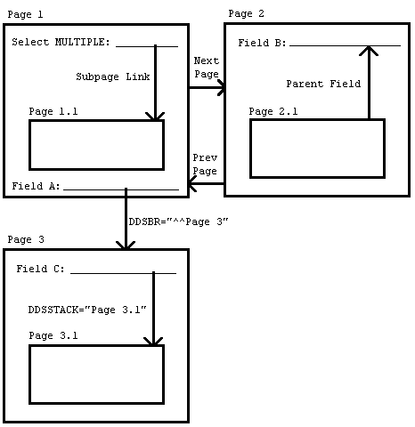

1.1
What is VA FileMan?
VA FileMan creates and
maintains a database management system that includes features such as:
·
Report writer
·
Data dictionary manager
·
Scrolling and screen-oriented data entry
·
Text editors
·
Programming utilities
·
Tools for sending data to other systems
· File
archiving
VA FileMan can be used as a:
·
Standalone database
·
Set of interactive or “silent” routines
· Set
of application utilities
In all modes, it is used to define, enter, and retrieve
information from a set of computer-stored files, each of which is described by
a data dictionary.
VA FileMan is a public domain software that is developed
and maintained by the Department of Veterans Affairs (VA). It is widely used by
VA medical centers and in clinical, administrative, and business settings in the
United States of America (USA) and abroad.
VA FileMan functions as a Database Management System (DBS) with powerful
Application Programming Interfaces (APIs) and provides useful utilities for
application developers. VA FileMan can be used as a database management system
for data entry and output and its DBS calls are used in applications with tools
like Filegrams, auditing, archiving, and statistics.+
·
Database Management System (DBS)—As a database management
system (DBS), VA FileMan supports the entering, editing, printing, searching,
inquiring, transferring, cross-referencing, triggering, and verifying of
information. It includes special functions to:
o Create
new files
o Modify
an existing file
o Delete entire
files
o Reindex files
o Create or edit
templates
· Application
Programming Interfaces (APIs)—As an application programming interface (API),
the Database Server routines manage interactions between the application
software and the database management system “silently” (i.e., without
writing to the current device). Application developers use DBS calls to update
the database in a non-interactive mode. Information needed by the VA FileMan
routines is passed through parameters rather than through interactive dialogue
with the user. Information to be displayed to the user is passed by VA FileMan
back to the calling routine in arrays. This separation of data access from user
interaction makes possible the construction of alternative front-ends to the VA
FileMan database (e.g., a windowed Graphical User Interface [GUI]).
·
Utilities—As a set of utilities, VA FileMan provides tools
like:
o Filegram—Tool
that moves file records from one computer to another
o Archiving—Tool
that stores data onto an offline storage medium.
o Auditing—Tool
that tracks changes to data in a field or to the file’s structure (i.e., data
dictionary).
o Statistics—Tool
that accumulates totals and subtotals of individual fields.
VA FileMan has several levels of users, ranging from a
data entry person who enters, edits, inquires, or prints information, to a
software application developer or system administrator who uses all of its
database management system features and utilities.
Developers should consider
this manual the list of VA FileMan-supported (“documented”) routines and Application
Programming Interface (API) calls eligible for developer use. These routines
and APIs provide the following (to list a few):
·
File lookup and reindexing
·
Data edit, print, display, and retrieval
·
Filegrams
·
File entry deletion
·
Reader program
·
Data dictionary deletion
·
Word-processing
·
Conversion of date and time values
·
Software package export
· Linked
option processing
VA FileMan is designed to be used either with Kernel or as a standalone application
running under a variety of implementations of ANSI standard M. If VA FileMan is
used without Kernel, the basic DBMS features of VA FileMan all work as
described in the manuals. However, there are some features (e.g., bulletin-type
cross references, print queuing, and Filegrams) that do not work without
portions of Kernel. Whenever Kernel is needed to support a particular VA
FileMan feature, that fact is mentioned in the manuals.
The installation of VA FileMan 22.2 is not
integrated with the installation of Kernel. The VA FileMan Installation,
Back-Out, and Rollback Guide contains instructions on how to install VA FileMan,
both for standalone sites and for sites running Kernel.
 REF: For specific
information regarding standalone VA FileMan (i.e., device handling, setting IO variables,
manually setting ^%ZOSF nodes, and setting up a minimal NEW PERSON
[#200] file), see the “FileMan System Management” section in the VA FileMan
Advanced User Manual.
REF: For specific
information regarding standalone VA FileMan (i.e., device handling, setting IO variables,
manually setting ^%ZOSF nodes, and setting up a minimal NEW PERSON
[#200] file), see the “FileMan System Management” section in the VA FileMan
Advanced User Manual.
I.
Major APIs
Certain modules within VA FileMan are callable by other M routines. This is true of
these Classic VA FileMan routines, which are referred to as “Callable Routines”
and are described in this section.
Database Server (DBS) calls are also callable by other M routines.
However, these “silent” calls differ from the Classic VA FileMan routines in
that they separate interaction with the database from interaction with the
end-user. In Classic VA FileMan’s roll-and-scroll mode, interaction with the
end-user was closely tied to the code that actually changed the database, but
with VA FileMan’s DBS calls no WRITEs to the current device are done.
Interaction with the user is managed by package developers from within their
own code, calling VA FileMan whenever interaction with the database is needed.
REF: These DBS
calls are described in the “Database Server (DBS) API” section.
When using both the Classic VA FileMan callable routines
and the DBS calls, you must keep in mind the variable-naming
conventions. If you have local variables that you wish to preserve by a call to
any of the routines described here, you should be sure to give them
multi-character names beginning with letters other than D.
It is the developer’s responsibility to clean up (KILL)
documented input and output variables used in a VA FileMan call when the call
is finished. The few situations in which your input variables are KILLed
during the VA FileMan call are mentioned in the following sections. Developers
also need to be alert to the fact that Classic VA FileMan APIs are not
recursive. A classic example is situation where your routine is being called
from a cross-reference, the client, and you want to alter the contents of other
fields either within the parent file or fields outside the parent file, in
which case the developer would use the proper Database Server (DBS) call.
After making an API call, always check for failed calls.
For example, when using ^DIC for lookups, always check for
the error condition Y=-1 before doing anything else; when using the
reader, always check DUOUT, DIRUT, and DTOUT before doing
anything else. When a call provides a way to check for error conditions, it
means that there are some circumstances where the call does not succeed!
Checking for errors after such a call allows you to handle the errors
gracefully.
 CAUTION:
Programmer access in VistA is defined as DUZ(0)=“@”. It grants the privilege to
become a developer in VistA. Programmer access allows you to:
CAUTION:
Programmer access in VistA is defined as DUZ(0)=“@”. It grants the privilege to
become a developer in VistA. Programmer access allows you to:
·
Work
outside many of the security controls enforced by VA FileMan.
·
Enables
access to all VA FileMan files.
·
Provides
access to modify data dictionaries, etc.
It is important to proceed with
caution when having access to the system in this way.
Table 4: Classic Calls—Category:
Lookup/Adding Entries
|
Entry Point
|
Description / Title
|
|
^DIAC
|
File Access Determination
|
|
^DIC
|
Lookup/Add Using “B” Cross-Reference
|
|
IX^DIC
|
Lookup/Add Using User-Specified Cross-Reference
|
|
MIX^DIC1
|
Lookup/Add Using User-Specified Set of Cross-References
|
|
FILE^DICN
|
Adds New Entry to File
|
|
DQ^DICQ
|
Entry Display for Lookups
|
Table 5: Classic Calls—Category:
Entry Editing
|
Entry Point
|
Description / Title
|
|
^DIE
|
Data Input Edit of a File
|
|
EN^DIB
|
User Controlled Editing
|
|
^DIK
|
Delete Entries
|
|
EN^DIQ1
|
Data Retrieval
|
|
EN^DIWE
|
Text Editing
|
Table 6: Classic Calls—Category:
Prompting/Messages
Table 7: Classic Calls—Category:
Printing
|
Entry Point
|
Description / Title
|
|
EN1^DIP
|
Print Data
|
|
D^DIQ
|
Converts Internal Date to External
Form
|
|
DT^DIQ
|
Converts Internal Date to External Form and Writes Date
|
|
EN^DIQ
|
Displays Captioned Range of Data
|
|
Y^DIQ
|
Converts Internal Data to External Form
|
|
EN^DIS
|
Searches File Entries
|
|
^DIWF
|
Form Document Print
|
|
EN1^DIWF
|
Form Document Print with Known Document
|
|
EN2^DIWF
|
Form Document Print with Known Document and Entry
|
|
DIWP
|
Formats and Outputs Text Lines
|
|
DIWW
|
Output Remaining Text in ^UTILITY($J,“W”) by ^DIWP
|
Table 8: Classic Calls—Category:
Templates
|
Entry Point
|
Description / Title
|
|
^DIEZ
|
INPUT Template Compile—User
Interactive
|
|
EN^DIEZ
|
INPUT Template Compile—No User Interaction
|
|
^DIOZ
|
SORT Template Compile
|
|
^DIPT
|
PRINT Template Display
|
|
DIBT^DIPT
|
SORT Template Display
|
|
^DIPZ
|
PRINT Template Compile—User Interactive
|
|
EN^DIPZ
|
PRINT Template Compile—No User Interaction
|
Table 9: Classic Calls—Category:
Cross-References
|
Entry Point
|
Description / Title
|
|
EN^DIK
|
Reindex Field Cross-References
for One File Entry—KILL and SET Logic
|
|
EN1^DIK
|
Reindex Field Cross-References for One File Entry—SET
Logic
|
|
EN2^DIK
|
Executes KILL Logic for One or More Field Cross-References
for One File Entry
|
|
ENALL^DIK
|
Reindex All File Entries for Specific Field Cross-References—SET
Logic
|
|
ENALL2^DIK
|
Executes KILL Logic for One or More Field Cross-References
for All File Entries
|
|
IX^DIK
|
Reindex All File Cross-References for One File Entry—KILL
and SET Logic
|
|
IX1^DIK
|
Reindex All File Cross-References for One File Entry—SET
Logic
|
|
IX2^DIK
|
Executes KILL Logic of All Cross-References for One
Entry at All File Levels at and below the One Specified in DIK
|
|
IXALL^DIK
|
Reindexes All Cross-References for All File Entries—SET
Logic
|
|
IXALL2^DIK
|
Executes KILL Logic for All File Entries
|
|
^DIKZ
|
Compiles Cross-References into M Routines
|
|
EN^DIKZ
|
Recompiles a File’s Cross-References—No User Intervention
|
Table 10: Classic Calls—Category:
Date/Time Utilities
|
Entry Point
|
Description / Title
|
|
X ^DD(“DD”)
|
Converts Internal to
External Date Format
|
|
DT^DIO2
|
Writes External Date from Internal
|
|
^%DT
|
Validates Date/Time Input and Converts to Internal Format
|
|
DD^%DT
|
Converts Internal to External Date Format
|
|
^%DTC
|
Returns Number of Days between Two Dates
|
|
C^%DTC
|
Adds/Subtracts Days and Returns VA FileMan Date and $H
Format
|
|
DW^%DTC
|
Converts VA FileMan Date to $H Format and Outputs
Name of the Day
|
|
H^%DTC
|
Converts VA FileMan Date to $H Format
|
|
NOW^%DTC
|
Returns Current Date/Time in VA FileMan and $H
Formats
|
|
S^%DTC
|
Converts Seconds to Hours, Minutes, and Seconds into
Decimal Part of VA FileMan Date
|
|
YMD^%DTC
|
Converts $H to VA FileMan Format
|
|
YX^%DTC
|
Returns Printable and VA FileMan Formats from $H
|
Table 11: Classic Calls—Category:
Utilities
This section lists and describes the VA FileMan Classic Calls in alphabetical order.
The table previous to this page cross-references the Classic Calls by category.
NOTE: This introduction pertains to all %DT calls.
%DT is used to
validate date/time input and convert it to VA FileMan’s conventional internal
format:
YYYMMDD.HHMMSS
Where:
·
YYY—Number of years since 1700 (hence always
3 digits)
·
MM—Month number (00-12)
·
DD—Day number (00-31)
·
HH—Hour number (00-23)
·
MM—Minute number (01-59)
· SS
—Seconds number (01-59)
This format allows for representation of imprecise dates,
such as JULY ‘78 or 1978, which would be equivalent to 2780700 and 2780000,
respectively. Dates are always returned as a canonic number (i.e., no
trailing zeroes after the decimal).
The following are the date/time-related
APIs:
·
X ^DD(“DD”): Converts Internal to External Date Format
·
DT^DIO2: Writes External Date from Internal
·
^%DT: Validates Date/Time Input and Converts to Internal
Format
·
DD^%DT: Converts Internal to External Date Format
·
^%DTC: Returns Number of Days between Two Dates
·
C^%DTC: Adds/Subtracts Days and Returns VA FileMan Date and
$H Format
· DW^%DTC: Converts VA FileMan Date to $H Format and Outputs
Name of the Day
· H^%DTC: Converts VA FileMan Date to $H Format
· NOW^%DTC: Returns Current Date/Time in VA FileMan and $H
Formats
· S^%DTC: Converts Time into Decimal Part of VA FileMan
Internal Date
· YMD^%DTC: Converts $H to VA FileMan Format
· YX^%DTC: Returns Printable and VA FileMan Internal Formats
from $H
· DT^DILF(): Date Converter
2.3.2
X ^DD(“DD”): Converts Internal to External Date Format
Reference Type
Supported
Category
Classic VA FileMan
ICR#
TBD
Description
There are two ways to
convert a date from VA FileMan internal format (YYYMMDD) to external
format:
·
X ^DD(“DD”) (this call)
· DD^%DT
This is the reverse of what %DT
does. Simply set the variable Y equal to the internal date and execute ^DD(“DD”).
Input Variable
Y: (Required) This
contains the internal date to be converted. If this has five or six
decimal places, seconds are automatically returned.
Output Variable
Y: Y is
returned as the external form of the date.
REF: See also the DT^DIO2: API, which takes an internal date in the
variable Y and writes out its external form.
Figure 2: X ^DD(“DD”) API—Example
>S
Y=2690720.163 X ^DD(“DD”) W Y
JUL 20,1969@1630
This results in Y being equal to JUL
20,1969@16:30. (No space before the 4-digit year.)
Reference Type
Supported
Category
Classic VA FileMan
ICR#
10142
Description
The EN^DDIOL API is designed as a replacement for simple WRITE
statements in any part of the data dictionary that has a programming “hook”
(e.g., executable help).
As alternate user interfaces are developed for accessing
VA FileMan databases, developers are faced with the issue of removing embedded WRITE
statements from their data dictionaries. Direct WRITEs should be removed,
since they might cause the text to display improperly in the new interface.
This separation of the user interface from the database definition helps you to
prepare your databases for access by any new interface, such as a Graphical
User Interface (GUI).
The environment in which
the Loader is called determines how it processes the text it is passed.
Table 12: Loader—Processing
Text Based on Mode
|
Mode
|
How the Text Is Processed
|
|
Scrolling
|
Text is written to the
screen.
|
|
ScreenMan
|
Text is written in
ScreenMan’s Command Area.
|
|
DBS
|
Text is loaded into an array.
|
In DBS mode, the specific array where the text is placed
depends on which DBS call is made and whether an output array was specified in
the DBS call.
For example, if a call is made to the Validator (VAL^DIE), and the INPUT transform of the field makes a call
to the Loader, the text is placed into ^TMP(“DIMSG”,$J). If a call is
made to the Helper (HELP^DIE), and the executable help
of the field makes a call to the Loader, the text is placed into ^TMP(“DIHELP”,$J).
If the call to Validator or the Helper uses the msg_root parameter, the
text is placed in the array specified by msg_root.
RECOMMENDATION: No line
of text passed to the Loader should exceed 70 characters in length.
Formats
1. EN^DDIOL(value,“”,format)
2. EN^DDIOL(.array)
3. EN^DDIOL(“”,global_root)
Input Parameters
value: (Optional)
If there is just one line of text to output, it can be passed in the first
parameter.
.array: (Optional)
If there is more than one line of text to output, stored in a local array, then
the first parameter of the call is the name of the local array passed by
reference and that contains string or numeric literals, where:
Figure 3: EN^DDIOL API—Sample .array Input Parameter Array Name
ARRAY(1) = string 1
ARRAY(2) = string 2 ...
ARRAY(n) = string n
Formatting instructions can also be included in this
array.
REF: See “Formatting for Arrays” in the “Details and Features” section.
global_ root: (Optional)
An alternate way to pass the text to the call is in a global root. In that
case, the first parameter is NULL, and the second parameter contains the
name of the global root that contains string or numeric literals, where:
Figure 4: EN^DDIOL API—Sample global_root Input Parameter (1 of 2)
@GLOBAL_ROOT@(1,0) = string
1
@GLOBAL_ROOT@(2,0) = string
2 ...
@GLOBAL_ROOT@(n,0) = string n
Or:
Figure 5: EN^DDIOL API—Sample global_root Input Parameter (2 of 2)
@GLOBAL_ROOT@(1) = string 1
@GLOBAL_ROOT@(2) = string 2
...
@GLOBAL_ROOT@(n) = string n
Formatting instructions can also be included in this
global array.
REF: See “Formatting for Arrays” section.
format: (Optional)
Formatting instructions controlling how the string is written or placed in the
array. You can specify:
·
One or more new lines before the string (!, !!, !!!,
etc.)
·
Horizontal position of string (?n)
· Can
be any number of ! characters optionally followed by ?n,
where n is an integer expression.
The default FORMAT is !.
This parameter can only be used when call format is
used to pass a single string or numeric literal to EN^DDIOL. To pass
formatting instructions when text is passed as an array or global
to EN^DDIOL.
REF: See “Formatting for Arrays” section.
2.3.3.1
Examples
2.3.3.1.1
Example 1
Suppose a Write Identifier
node contains the following WRITE statement, as shown in Figure 6:
Figure 6:
EN^DDIOL—Example: Write Identifier Node
^DD(filenumber,0,“ID”,“W1”)=W
“ ”,$P(^(0),U,2)
An equivalent statement
converted to use EN^DDIOL is shown in Figure 7:
Figure 7:
EN^DDIOL—Example: Write Identifier Node Converted
^DD(filenumber,0,“ID”,“W1”)=D
EN^DDIOL(“ ”_$P(^(0),U,2),“”,“?0”)
2.3.3.1.2
Example 2
The executable help of a
field passes one line of text by value to the Loader as illustrated in Figure 8:
Figure 8:
EN^DDIOL—Example: Input
>D EN^DDIOL(“This
is one line of text.”,“”,“!!?12”)
If the call is made in
scroll mode (e.g., ^DIE executes the executable help), Figure 9 is an example of what the Loader writes
to the screen:
Figure 9:
EN^DDIOL—Example: Output in Scroll Mode
This is one line of
text.
If the call is made in DBS
mode, the Helper (HELP^DIE) executes the executable help. The text is placed
into the ^TMP global as shown in Figure 10:
Figure 10:
EN^DDIOL—Example: Output in DBS Mode
^TMP(“DIHELP”,$J,1)=“”
^TMP(“DIHELP”,$J,2)=“
This is one line of text.”
2.3.3.1.3
Example 3
Figure 11 is an example of passing an array of
text to the Loader:
Figure 11:
EN^DDIOL—Example: Input Passing a Text Array
>S A(1)=“First
line.”
>S A(2)=“Second
line, preceded by one blank line or node.”
>S A(2,”F”)=“!!”
>S A(3)=“More
text on second line.”
>S A(3,”F”)=“?55”
>D EN^DDIOL(.A)
2.3.3.1.4
Example 4
Figure 12 is an example of passing a global that
contains text to the Loader:
Figure 12:
EN^DDIOL—Example: Input Passing a Global Containing Text
S ^GLB(1)=“First
line.”
S ^GLB(2)=“Second
line, preceded by one blank line or node.”
S ^GLB(2,”F”)=“!!”
S ^GLB(3)=“More
text on second line.”
S ^GLB(3,”F”)=“?55”
D EN^DDIOL(““,”^GLB”)
When you pass an array or a
global to EN^DDIOL, you can also pass formatting instructions for each line of
text in your array or global. These instructions control how the string is
written or placed in the output array. You can specify:
·
One or more new lines before the string (!, !!, !!!,
etc.)
· Horizontal
position of string (?n)
Place the formatting instructions for a line of text in an
“F” node descendent from the node containing the text. The value of each
“F” node can be any number of ! characters optionally followed by
?n, where n is an integer expression. The default
is !.
For example:
Figure 13: EN^DDIOL—Sample
Formatting for Arrays
A(1) = string 1
A(1,“F”) = format
(e.g., “!?35”, “?10”, etc.)
^G(1,0) = string 1
^G(1,“F”) = format
^G(1) = string 1
^G(1,“F”) = format
NOTE: If you use format (1) to pass
a single string of text to EN^DDIOL, you can pass the formatting instructions
in the third parameter, format.
2.3.4
^DIAC: File Access Determination
Reference Type
Supported
Category
Classic VA FileMan
ICR#
10032
Description
The ^DIAC API determines if a user has access to a file.
Input Variables
DIFILE: (Required)
The file number of the file on which you want to verify file access.
DIAC: (Required)
Use one of the values listed below to verify the specified type of file access:
·
RD—Verify READ access to a specific file.
·
WR—Verify WRITE access to a specific file.
· AUDIT—Verify
AUDIT access to a specific file.
· DD—Verify
DD access to a specific file.
· DEL—Verify
DELETE access to a specific file.
· LAYGO—Verify
LAYGO access to a specific file.
Output Variables
DIAC: DIAC
returns either a 0 or a 1:
·
1—Indicates that the user has that type of access to the
file.
NOTE: If the
user’s DUZ(0)=“@”, the value 1 is always returned.
· 0—Indicates
that the user does not have access of that type to the file.
%: The %
variable returns exactly the same values as DIAC.
2.3.5
EN^DIB: User Controlled Editing
Reference Type
Supported
Category
Classic VA FileMan
ICR#
10023
Description
The EN^DIB API invokes the Enter or Edit File Entries [DIEDIT] option of VA FileMan to edit records in a given file, allowing the user
to select the fields to edit.
Input Variables
DIE: (Required)
The global root of the file in any of the following forms:
·
^GLOBAL(
·
^GLOBAL(#
· Number
of the file
DIE(“NO^”): (Optional)
Allows the developer control of the use of the caret (^) in an edit
session. If this variable does not exist, unrestricted use of the caret
for jumping and exiting is allowed.
The variable can be
set to one of the following:
Table 13: EN^DIB: User Controlled Editing API
|
Set To
|
Description
|
|
“OUTOK”
|
Allows
exiting and prevents all jumping.
|
|
“BACK”
|
Allows jumping back to a
previously edited field and does not allow exiting.
|
|
“BACKOUTOK”
|
Allows jumping back to a
previously edited field and allows exiting.
|
|
“Other value”
|
Prevents all jumping and
does not allow exiting.
|
DIDEL: (Optional) Allows you
to override the Delete Access on a file or subfile. Setting DIDEL equal to the
number of the file before calling DIE allows the user to delete an entire entry
from that file even if the user does not normally have the ability to
delete. This variable does not override the DEL-nodes described in the “Global File Structure” section.
2.3.6
^DIC: Lookup/Add with “B” Cross-References
Reference Type
Supported
Category
Classic VA FileMan
ICR#
10006
Description
Given a lookup value, the
^DIC API searches a file and does the following:
·
Finds a matching entry.
·
Adds an entry.
· Returns
a condition indicating that the lookup was unsuccessful.
REF: For a
comparison of how they each perform lookups, see the IX^DIC: Lookup/Add and MIX^DIC1: Lookup/Add APIs.
Except for the DIC(“W”)
variable, which is KILLed, the DIC input array is left unchanged
by ^DIC.
Input Variables
DIC: (Required)
The file number or an explicit global root in either of the following forms:
·
^GLOBAL(
· ^GLOBAL(X,Y,
DIC(0): (Optional)
A string of alphabetic characters that alter how DIC responds. At a minimum,
this string must be set to NULL. A detailed description of these
characters can be found in the “DIC(0) Input Variables in Detail” section.
NOTE: If DIC(0) is NULL or undefined, no
terminal output is generated by the DIC routine.
The acceptable
characters are:
·
A—Ask the entry; if erroneous, ask again.
·
B—Only the “B” index is used when doing lookup to
files pointed-to by starting file.
· C—Cross-reference
suppression is turned off.
· E—Echo
information.
· F—Forget
the lookup value.
· I—Ignore
the special lookup program.
· K—Primary
Key is used as starting index for the lookup.
· L—Learning
a new entry is allowed.
· M—Multiple-index
lookup allowed.
· N
(Uppercase)—Internal Number lookup allowed (but not forced).
· n
(Lowercase)—Partial matching on pure numeric entries.
· O—Only
find One entry if it matches exactly.
· Q—Question
erroneous input (with two ??).
· S—Suppresses
display of .01 (except “B” cross-reference match) and of any
Primary Key fields.
· T—ConTinue
searching all indexes until user selects an entry or enters two carets (^^)
to get out.
· U—Untransformed
lookup.
· V—Verify
that looked-up entry is OK.
· X—EXact
match required.
· Z—Zero
node returned in Y(0) and external form in Y(0,0).
X: (Optional) If DIC(0)
does not contain an A, then the variable X must be
defined equal to the value you want to find in the requested indexes.
If a lookup index is on a POINTER or VARIABLE
POINTER field, VA FileMan searches the “B” index on the pointed-to file
for a match to the lookup value X [unless the developer uses the DIC(“PTRIX”)
array to direct the search to a different index on the pointed-to file].
If the lookup index is compound (i.e., has more than one data
subscript), then X can be an array X(n) where n
represents the position in the subscript. For example, if X(2) is
defined, it is used as the lookup value to match to the entries in the second
subscript of the index. If only the lookup value X is passed, it is
assumed to be the lookup value for the first subscript in the index, X(1).
DIC(“A”): (Optional)
A prompt that is displayed prior to the reading of the X input. If DIC(“A”)
is not defined, the following prompt contents are displayed:
·
The word Select.
· The
name of the file [i.e., $P(^GLOBAL(0),“^”,1)].
· A
space.
· The
LABEL of the .01 field.
· A
colon (:).
If the file name is the same as the LABEL of the .01
field, then only the file name is displayed. DIC(0) must contain
an A for this prompt to be issued.
For example, if the
(fictitious) EMPLOYEE file had a .01 field with the LABEL of NAME, VA
FileMan would issue the following prompt:
By setting DIC(“A”)=“Enter
Employee to edit: ”, the prompt would be:
Notice that it is necessary for the prompt in DIC(“A”)
to include the colon and space at the end of the prompt if you want those to be
displayed.
If the lookup index is compound (i.e., has more
than one data subscript), then DIC(“A”) can be an array DIC(“A”,n)
where n represents the position in the subscript. For example, DIC(“A”,2)
is used as the prompt for the second subscript in the index. If only the single
prompt DIC(“A”) is passed, it is assumed to be the prompt for the first
subscript in the index DIC(“A”,1).
If DIC(“A”,n) is undefined for the nth
subscript, then the “Lookup Prompt” field for that subscript from the INDEX
(#.11) file is used as the prompt, or if it is NULL, the LABEL of the
field from the data dictionary.
DIC(“B”): (Optional)
The default answer that is presented to the user when the lookup prompt is
issued. If a terminal user simply presses the Enter key, the DIC(“B”)
default value is used and returned in X. DIC(“B”) is only used if
it is non-NULL.
If the lookup index is compound (i.e., has more
than one data subscript), then DIC(“B”) can be an array DIC(“B”,n)
where n represents the position in the subscript. For example, DIC(“B”,2)
is used as the default answer for the prompt for the second subscript in the
index. If only the single default answer DIC(“B”) is passed, it is
assumed to be the default answer for the prompt for the first subscript in the
index DIC(“B”,1).
DIC(“DR”): (Optional) When calling
DIC with LAYGO allowed, you can specify that a certain set of fields is asked
for in the case where the user enters a new entry. This list is specified by
setting the variable DIC(“DR”) equal to a string that looks exactly like
the DR string of fields that is specified when calling ^DIE.
Such a list of what VA FileMan calls forced identifiers overrides any
identifiers that would normally be requested for new entries in this file.
DIC(“P”): (Optional) The
developer is no longer required to set DIC(“P”). The only exception to
this is for a few files that are not structured like a normal VA FileMan
file; where the first subscript of the data is variable in order to allow
several different “globals” to use the same DD. An example of this is the VA
FileMan Audit files; where the first subscript is the file number of the file
being audited.
This variable is needed to successfully add the
FIRST subentry to a Multiple when the descriptor (or header) node of the Multiple
does not exist. In that situation, DIC(“P”) should be set equal
to the subfile number and subfile specifier codes for the Multiple.
REF: See the “File Header” section.
If the descriptor node for the Multiple already
exists, DIC(“P”) has no effect.
In order to automatically include any changes in the
field’s definition in DIC(“P”), it is best to set this variable to the
second ^-piece of the 0-node of the Multiple field’s definition in the
DD.
REF: See the “Field Definition 0-Node” section.
Thus, for example, if
File #16150 had a Multiple Field #9, set DIC(“P”) like this:
>S
DIC(“P”)=$P(^DD(16150,9,0),“^”,2)
REF: For more information, see the “Adding New Subentries to a Multiple” section.
DIC(“PTRIX”,f,p,t)=d: (Optional) Where:
·
f—from (pointing) file number.
·
p—pointer field number.
·
t—pointed-to file number.
· d—caret
(^)-delimited list of index names.
When doing a lookup using an index for a POINTER or VARIABLE
POINTER field, this new array allows the user to pass a list of indexes that is
used when searching the pointed-to file for matches to the lookup value.
For example, if the
(fictitious) File #662001 has a pointer Field #5 to File #200 (NEW PERSON), and you wanted the lookup on File #200 to be either by name (“B” index),
or by the first letter of the last name concatenated with the last 4 digits of
the social security number (“BS5” index):
DIC(“PTRIX”,662001,5,200)=“B^BS5”
If the call allows records to be added to a
pointed-to file, then the list in the “PTRIX” entry should contain the “B”
index. However, the “B” index would not need to be included in
the list if the first index in the “PTRIX” array entry is a compound
index whose first subscript is the .01 field.
DIC(“S”): (Optional)
DIC(“S”) is a string of M code that DIC executes to screen an entry from
selection. DIC(“S”) must contain an IF statement to set
the value of $T. Those entries that the IF sets as $T=0
are not displayed or selectable. When the DIC(“S”) code is
executed, the local variable Y is the internal number of the entry being
screened and the M Naked Indicator is at the global level @(DIC_“Y,0)”).
Therefore, to use the previous example again, if you wanted to find a male
employee whose name begins with FMEMPLOYEE, you would:
S DIC=“^EMP(”,DIC(0)=“QEZ”,X=“FMEMPLOYEE”
S DIC(“S”)=“I $P(^(0),U,2)=”“M”“”
D ^DIC
DIC(“T”): (Optional) Present
every match to the lookup value, quitting only when user either selects one of
the presented entries, enters two carets (^^) to quit, or there are no
more matching entries found.
Currently, if one or more matches are found in the
first pass through the indexes, then VA FileMan quits the search, whether or
not one of the entries is selected. Only if no matches are found in the first
pass does VA FileMan continue on to try transforms to the lookup value. This
includes transforms to find internal values of pointers, variable pointers,
dates, or sets.
Another feature of the T flag is that indexes
are truly searched in the order requested. If, for example, an index on a
pointer field comes before an index on a free-text field, matches from the
pointer field are presented to the user before matches to the free-text field.
When used in combination with the O flag, all
indexes are searched for an exact match. Then, only if none are found, does VA
FileMan make a second pass through the indexes looking for partial matches.
DIC(“V”): (Optional) If the .01
field is a VARIABLE POINTER, it can point to entries in more than one file. You
can restrict the user’s ability to input entries from certain files by using
the DIC(“V”) variable. It is used to screen files from the user. Set the
DIC(“V”) variable to a line of M code that returns a truth value when
executed. The code is executed after someone enters data into a VARIABLE
POINTER field. If the code tests false, the user’s input is rejected; VA
FileMan responds with ?? and an audible sound (“beep”).
If the lookup index is compound (i.e., has more
than one data subscript), and if any of the subscripts index VARIABLE POINTER
fields, then DIC("V",n) can be passed where "n"
represents the subscript position of the VARIABLE POINTER field in the index.
For example, if DIC("V",2) is passed in, it is used as the
screen for files pointed-to by the VARIABLE POINTER field indexed in the second
subscript of the index. If only the entry DIC("V") is passed,
it is assumed to be the variable pointer file screen for the first subscript in
the index, DIC("V",1).
When the user enters a value at a VARIABLE POINTER
field's prompt, VA FileMan determines in which file that entry is found. The
variable Y(0) is set equal to information for that file from the data
dictionary definition of the VARIABLE POINTER field. You can use Y(0) in
the code set into the DIC("V") variable. Y(0) contains:
Table 14: ^DIC API—Variable Pointer Screen: DIC(“V”) Variable Y(0) Contents
|
^-Piece
|
Contents
|
|
Piece 1
|
File
number of the pointed-to file.
|
|
Piece 2
|
Message
defined for the pointed-to file.
|
|
Piece 3
|
Order defined for the
pointed-to file.
|
|
Piece 4
|
Prefix defined for the
pointed-to file.
|
|
Piece 5
|
y/n indicating if a
screen is set up for the pointed-to file.
|
|
Piece 6
|
y/n indicating if the
user can add new entries to the pointed to file.
|
All of this information was defined when that file
was entered as one of the possibilities for the VARIABLE POINTER field.
For example, suppose
your .01 field is a variable pointer pointing to (fictitious) Files #1000,
#2000, and #3000. If you only want the user to be able to enter values from Files
#1000 or #3000, you could set up DIC(“V”) like this:
S DIC(“V”)=“I
+Y(0)=1000!(+Y(0)=3000)”
DIC(“W”): (Optional) An M command
string that is executed when DIC displays each of the entries that match the
user’s input. The condition of the variable Y and of the naked indicator
is the same as for DIC(“S”). If DIC(“W”) is defined, it overrides
the display of any identifiers of the file. Thus, if DIC(“W”)=“”, the
display of identifiers is suppressed.
NOTE: DIC(“W”) is KILLed
by ^DIC calls.
DIC(“?N”,file#)=n: (Optional) The
number “n” should be an integer set to the number of entries to
be displayed on the screen at one time when using ?-help in a lookup.
Usually, file# is the number of the file on which you are doing the lookup.
However, if doing a lookup using an index on a pointer field, and if DIC(0)
contains L, then the user also is allowed to see a list of entries from
the pointed-to file, so in that case file# could be the number of that
pointed-to file. For example, when doing a lookup in test File #662001, if the
developer wants only five entries at a time to be displayed in question-mark
help, SET DIC(“?N”,662001)=5.
DIC(“?PARAM”, file#,”INDEX”)=Index name:
(Optional) Used to control entries displayed during
online ?-help only. If provided, this index is used to display the
entries from the file specified by file#. Otherwise, VA FileMan uses the first
lookup index specified for the ^DIC call. This value is used as the index
parameter to the Lister call to display the entries.
REF: For detailed
information, see the LIST^DIC(): Lister API.
DIC(“?PARAM”, file#,”FROM”,n)=value:
(Optional) Used to control entries displayed during online
?-help only. This array can be set to define a starting value for an
entry in the lookup index used to list entries from the file. Integer value “n”
is associated with the “nth” data value subscript in the
index (e.g., regular old-style indexes always have just one indexed data
value, so “n” would be 1). If a starting value is defined for
subscript “n,” then starting values must also be defined for all
of the subscripts preceding “n.”
This information is used to set the from
parameter for a call to LIST^DIC in order to display
the entries in the file specified by file#. Therefore, the entries must
meet the same rules as the from parameter described in the LIST^DIC call.
REF: For detailed
information, see the LIST^DIC(): Lister API.
If DIC(0) contains an L and the first
indexed field is a pointer, then after displaying the current entries on the
file, VA FileMan allows the user to see entries on the pointed-to file. In that
case, the developer can request starting values for any pointed-to file in the
pointer chain. If the user enters “^value” when asked whether they wish
to see the entries in the file, the value entered by the user overrides the
starting list value passed by the developer in this array.
DIC(“?PARAM”, file#,“PART”,n)=value:
(Optional) Used to control entries displayed during
online ?-help only. This array can be set to define partial match values
for each of the “n” subscripts on the lookup index used during online
help. The information is used to set the part parameter for a Lister
call to display the entries.
REF: For detailed
information, see the LIST^DIC(): Lister API.
As with DIC(“?PARAM”,file#,“FROM”,n),
if DIC(0) contains L, the developer can define partial match
values for any pointed-to file in the pointer chain.
DLAYGO: (Optional) If this variable
is set equal to the file number, then the user is able to add a new entry to
the file, whether or not they have LAYGO access to the file. This
variable, however, does not override any LAYGO node that may exist on the
.01 field [i.e., ^DD(file#,.01,“LAYGO”,#,0)]. M code in the LAYGO node is still executed and
must set the truth value to TRUE for an entry to be added.
NOTE: In addition, DIC(0)
must contain L to allow addition of entries to the file.
DINUM: (Optional) This input
variable identifies the subscript at which the data is to be stored. This means
DINUM must be a canonic number and that no data exists in the
global at that subscript location [e.g., $D(@(DIC_DINUM_")"))=0].
Output Variables
Y: DIC
always returns the variable Y. The variable Y is returned with
one of these three formats:
·
Y=-1—The lookup was unsuccessful.
·
Y=N^S—N is the internal number of the entry in
the file and S is the value of the .01 field for that entry.
· Y=N^S^1—N
and S are defined as above and the 1 indicates that this entry
was just added to the file.
Y(0): This variable is
only set if DIC(0) contains a Z. When the variable is set, it is
equal to the entire zero node of the entry that was selected.
Y(0,0): This variable also
is only set if DIC(0) contains a Z. When the variable is set, it
is equal to the external form of the .01 field of the entry.
The following are
examples of returned Y variables based on a call to the (fictitious)
EMPLOYEE file stored in the (fictitious) ^EMP( global:
>S DIC=“^EMP(”,DIC(0)=“QEZ”,X=“FMEMPLOYEE”
>D ^DIC
Returned are:
Y = “7^FMEMPLOYEE,ONE”
Y(0) = “FMEMPLOYEE,ONE^M^2231109^2”
Y(0,0) = “FMEMPLOYEE,ONE”
If the lookup had
been done on a file whose .01 field points to the (fictitious) EMPLOYEE
file, the returned variables might look like this:
Y = “32^7” [ Entry #32
in this file and #7
in EMPLOYEE
file.]
Y(0) = “7^RX 2354^ON HOLD”
Y(0,0) = “FMEMPLOYEE,ONE”
[.01 field of entry 7
in EMPLOYEE file]
X: Contains the
value of the field where the match occurred.
If the lookup index is compound (i.e., has more
than one data subscript), and if DIC(0) contains A so that the
user is prompted for lookup values, then X is output as an array X(n)
where n represents the position in the subscript and contains the
values from the index on which the entry was found. Thus, X(2) would
contain the value of the second subscript in the index. If possible, the
entries are output in their external format (i.e., if the subscript is not
computed and does not have a transform). If the entry is not
found on an index (e.g., when lookup is done with X=“ ” [the <Spacebar><Enter>
feature]), then X and X(1) contain the user input, but the rest
of the X array is undefined.
DTOUT: This is only defined if
DIC has timed-out waiting for input from the user.
DUOUT: This is only defined if
the user entered a caret (^).
The effects of the various
characters that can be contained in DIC(0) are described below:
A DIC asks for input from the terminal and
asks again if the input is erroneous. A response of NULL or a string
containing a caret (^) is accepted. Input is returned in X when
DIC quits. If DIC(0) does not contain the character A, the
input to DIC is assumed to be in the local variable X.
B Without
the B flag, if there are cross-referenced POINTER or VARIABLE POINTER
fields in the list of indexes to use for lookup and if DIC(0) contains M
and there is no screening logic on the pointer that controls the lookup on the
pointed-to file, then:
·
For each cross-referenced pointer field, VA FileMan checks all
lookup indexes in each pointed-to file for a match to X
(time-consuming).
· If
X matches any value in any lookup index (not just the “B” index)
on the pointed-to file and the IEN of the matched entry is in the home file’s
pointer field cross-reference, VA FileMan considers this a match. This perhaps
may not be the lookup behavior you wanted (see “Examples”).
The B flag prevents this behavior by looking
for a match to X only in the “B” index (.01 field) of
files pointed to by cross-referenced POINTER or VARIABLE POINTER fields. This
makes lookups quicker and avoids the risk of VA FileMan matching an entry in
the pointed-to file based on some unexpected, indexed field in that file.
C Normally,
when DIC does a lookup and finds an entry that matches the input, that entry is
presented to the user only once, even if the entry appears in more than one
cross-reference. This is called cross-reference suppression and can be
overridden by including a C in DIC(0). If, for example, a person
with the name FMPATIENT,20 is an entry in a file, then his name appears
in the “B” cross-reference of the file. If he has a nickname of 20,
which is in the “C” cross-reference of the file, then when a user enters
20 as a lookup value, the name, FMPATIENT,20, appears only once
in the choices. But if there is a “C” in DIC(0), then FMPATIENT,20
appears twice in the choices; once as a hit in the “B” cross-reference
and again as a hit in the “C” cross-reference.
E The file
entry names that match the inputs are echoed back to the terminal screen; and
if there is more than one such name, the user is asked to choose which entry is
wanted. E is important, because it is the way to tell DIC that you are
in an interactive mode and are expecting to be able to receive input from the
user.
F Prevents
saving the entry number of the matched entry in the ^DISV global.
Ordinarily, the entry number is saved at ^DISV(DUZ,DIC). This allows the
user to do a subsequent lookup of the same entry simply by pressing the Spacebar
and Enter keys (<Spacebar><Enter>). To avoid
the time cost of setting this global, include an F in DIC(0).
I If
DIC(0) contains I, any special user-written lookup program for a
file is ignored and DIC proceeds with its normal lookup process.
You can write a special lookup program to be used to
find entries in a particular file. This special program can be defined by using
the Edit File [DIEDFILE] option of the Utility Functions [DIUTILITY] menu.
REF: For more
information, see the “Special Lookup Programs” section in the “Advanced File Definition” section.
When a lookup program is defined, VA FileMan
bypasses the normal lookup process of DIC and branch to the user-written
program. This user-written lookup program must respond to the variables
documented in this section and provide the functionality of DIC as they pertain
to the file.
K The
K flag causes ^DIC to use the Uniqueness index for the Primary Key as
the starting index for the lookup, rather than starting with the “B”
index. (If developers want to specify some other index as the starting index,
then they can specify the index by using the D input variable, and
either the IX^DIC: Lookup/Add or MIX^DIC1: Lookup/Add APIs instead of ^DIC.)
L If DIC(0) contains L and the
user’s input is in valid format for the file’s .01 field, then DIC
allows the user to add a new entry to the file at this point (LAYGO:
Learn-As-You-GO), as long as at least one of these four security-check
conditions is true:
·
The local variable DUZ(0) is equal to the at-sign (@).
·
If Kernel’s File Access Security System (formerly known as Kernel
Part 3) is being used for security, the file is listed in the user’s record of
accessible files with LAYGO access allowed.
· If
file access management is not being used, a character in DUZ(0)
matches a character in the file’s LAYGO access code or the file has no LAYGO
access code.
· The
variable DLAYGO is defined equal to the file number.
NOTE: Even if DIC(0) contains L and
one of these security checks is passed, LAYGO is not allowed if a test
in the data dictionary’s LAYGO node fails.
M If
DIC(0) contains M, DIC does a multiple lookup on all of the
file’s cross-references from “B” on to the end of the alphabet. For example,
if a given file is cross-referenced both by Name and by Social Security Number,
and the user inputs 000-45-6789, DIC, failing to find this input as a Name,
automatically goes on to look it up as a Social Security Number.
REF: For finer control in specifying the indexes
used for lookup, see the alternate lookup entry points IX^DIC: Lookup/Add and MIX^DIC1: Lookup/Add APIs.
N If
DIC(0) contains uppercase N, the input is allowed to be checked
as an internal entry number, even if the file in question is not normally
referenced by number. However, input is only checked as an IEN if no other
matches are found during regular lookup.
If DIC(0) does not contain an
uppercase N, the user is still allowed to select by entry number by
preceding the number with the grave accent (`) character. When a `
is used, the lookup is limited to internal entry numbers only.
Placing an uppercase N in DIC(0) does not
force IEN interpretation; it only permits it. In order to force IEN
interpretation, you must use the grave accent (`) character.
NOTE: With
this flag, when DIC(0) contains an L, users may be allowed to
force the internal entry number when adding new entries to the file. If the
user enters a number N that is not found on any of the cross-references,
and if the .01 field is not numeric, and the file is not
DINUMed, and if VA FileMan can talk to the users (DIC(0)[“E”), then the
user is asked whether they want to add the new entry and are prompted for the
value of the .01 field. The entry is added at the record number N
that was originally entered by the user.
If there is a .001 field on the file, the number N must
also pass the INPUT transform for the .001 field.
n If
the lowercase n flag is put into DIC(0), then if the lookup value
is numeric and if a lookup is done on a free text or set of codes field,
partial matches on pure numerics are found. Suppose a free text field has
records with the values 2, 223, and 22A, and the lookup value
is 2. Without the lowercase n flag, only the records with the
values 2 and 22A are found. With the lowercase n flag, all
three are found.
O If
DIC(0) contains the letter O, then for each index searched, VA
FileMan looks first for exact matches to the lookup value before looking for
partial matches. If an exact match is found, then VA FileMan returns only that
match and none of the partial matches on the index. Thus, if an index contained
the entries “FMEMPLOYEE,ONE” and “FMEMPLOYEE,ONENESS” and if the
user typed a lookup value of “FMEMPLOYEE,ONE,” then only the “FMEMPLOYEE,ONE”
entry would be selected, and the user would never see the entry “FMEMPLOYEE,ONENESS.”
NOTE: If
partial matches but no exact matches are found in the first indexes searched, and
if exact matches are found in an index searched later, then the partial matches
from the first indexes are returned along with the exact match from the later
indexes.
Q If
DIC(0) contains Q and erroneous input is entered, two question
marks (??) are displayed and the user hears an audible sound (“beep”).
S If
DIC(0) does not contain S, the value of the .01
field and Primary Key fields (if the file has a Primary Key) is displayed for
all matches found in any cross-reference. If DIC(0) does contain S,
the .01 field and Primary Key fields are not displayed unless
they are one of the indexed fields on which the match was made.
T T
flag in DIC(0). Present every match to the lookup value, quitting only
when:
·
User selects one of the presented entries.
·
User enters two carets (^^) to quit.
· There
are no more matching entries found.
Currently, if one or more matches are found in the
first pass through the indexes, then VA FileMan quits the search, whether or
not one of the entries is selected. Only if no matches are found in the first
pass does VA FileMan continue on to try transforms to the lookup value. This
includes transforms to find internal values of pointers, variable pointers,
dates, or sets.
Another feature of the T flag is that indexes
are truly searched in the order requested. If, for example, an index on a
pointer field comes before an index on a free-text field, matches from the
pointer field are presented to the user before matches to the free-text field.
When used in combination with the O flag, all indexes are searched for
an exact match. Then, only if no matches are found, does VA FileMan make a
second pass through the indexes looking for partial matches.
U Normally, the
lookup value is expected to be in external format (for dates, pointers, etc.).
VA FileMan first searches the requested index for a match to the user input as
it was typed in. Then, if no match is found, VA FileMan automatically tries
certain transforms on the lookup value.
For instance, if one of the lookup indexes is on a
date field, VA FileMan tries to transform the lookup value to an internal date,
and then checks the index again. The U flag causes VA FileMan to look
for an exact match on the index and to skip any transforms. Thus, the lookup
value must be in VA FileMan internal format. This is especially useful
for lookups on indexed pointer fields, where the internal entry number
(i.e., internal pointer value) from the pointed-to file is already known.
Ordinarily, this flag would not be used along with
the A, B, M, N, or T flags. In many cases it
makes sense to combine this with the X flag.
V If
DIC(0) contains V and only one match is made to the user’s lookup
value, then they are asked “OK?”, and they have to verify that the looked-up
entry is the one they wanted. This is an on-the-fly way of getting behavior
similar to the permanent flag that can be set on a file by answering “YES”
to the question “ASK ‘OK’ WHEN LOOKING UP AN ENTRY?”.
REF: For more
information, see the Edit File [DIEDFILE] option, available on the FileMan
UTILITY Functions [DIUTILITY] menu, which is described in the VA FileMan Advanced User Manual.
X If
DIC(0) contains X, for an exact match, the input value must
be found exactly as it was entered. Otherwise, the routine looks for any
entries that begin with the input X. Unless “X-act match” is specified,
lowercase input that fails in the lookup is automatically converted to
uppercase, for a second lookup attempt. The difference between X and O
(described above) is that X requires an exact match. If there is not
one, either DIC exits or tries to add a new entry. With O, if there is not
an exact match, DIC looks for a partial match beginning with the input.
Z If
DIC(0) contains Z and if the lookup is successful, then the
variable Y(0) is also returned. It is set equal to the entire zero
node of the entry that has been found. Another array element, Y(0,0), is
also returned and is set equal to the printable expression of the .01
field of the entry selected. This has no use for DATA Type fields with values
of FREE TEXT and NUMERIC unless there is an OUTPUT transform. However, for
DATE/TIME, SET OF CODES, and POINTER field types, Y(0,0) contains the
external format.
You can use ^DIC or FILE^DICN to add new subentries to a Multiple. In order
to add a subentry, the following variables need to be defined:
DIC: (Required)
Set to the full global root of the subentry. For example, if the Multiple is
one level below the top file level: file’s_root,entry#,Multiple_field’s_node.
DIC(0): (Required)
Must contain L to allow LAYGO.
DIC(“P”): (Required) Set to the
2nd piece of 0-node of the Multiple field’s DD entry.
NOTE: The
developer is no longer required to set DIC(“P”). The only exception to
this is for a few files that are not structured like a normal VA FileMan
file, where the first subscript of the data is variable in order to allow
several different “globals” to use the same DD. An example of this is the VA
FileMan Audit files where the first subscript is the file number of the file
being audited.
DA(1)... DA(n): (Required)
Set up this array such that:
·
DA(1)—IEN at the next higher file level above the Multiple
in which the lookup is being performed.
·
DA(2)—IEN at the next higher file level (if any), etc.
· DA(n)—IEN
at the file’s top-level.
RECOMMENDATION: The value of the unsubscripted DA node should not
be defined when doing lookups in a subfile (i.e., the value you are trying
to obtain)!
2.3.6.2.1
Example 1
Figure 14 is an example of code that:
·
Uses ^DIC to interactively select a top-level record.
·
Uses ^DIC to select or create a subentry in a Multiple in that
record.
· Uses
^DIE to edit fields in the selected or created subentry.
The file’s root in this
example is “^DIZ(16150,”, the Multiple’s field number is 9, and
the Multiple is found on node 4. The code for this example is shown in Figure 14:
Figure 14:
^DIC—Sample Code to: Use ^DIC to Interactively Select a Top-level Record, Create
a Subentry; and Use ^DIE to Edit Fields in the Subentry
; a call is made to
DIC so the user can select an entry in the file
;
S DIC=“^DIZ(16150,”,DIC(0)=“QEAL”
D ^DIC
I Y=-1 K DIC Q ;quit
if look-up fails
;
; a second DIC call
is set up to select the subentry
;
S DA(1)=+Y ;+Y
contains the internal entry number of entry chosen
S DIC=DIC_DA(1)_”,4,”
;the root of the subfile for that entry
S DIC(0)=“QEAL”
;LAYGO to the subfile is allowed
S DIC(“P”)=$P(^DD(16150,9,0),“^”,2)
;returns the subfile# and specifiers
D ^DIC I Y=-1 K
DIC,DA Q ;user selects or adds subentry
;
; a DIE call is made
to edit fields in subfile
;
S DIE=DIC K DIC ;DIE
now holds the subfile’s root
S DA=+Y ;+Y contains
the internal entry number of subentry chosen
S DR=“1;2” D ^DIE
;edit fields number 1 and 2
K DIE,DR,DA,Y Q
File #662002 has a .01
field that points to the NEW PERSON (#200) file. In this example, you will use input arrays in DIC(“?PARAM”,662002,”FROM”,1) to
start the list of entries in the “B” index of (fictitious) File #662002
with the letter M. Since DIC(0) contains L (user can add
entries to the pointed-to File #200), VA FileMan also displays entries from the
NEW PERSON (#200) file, so you use DIC(“?PARAM”,200,”PART”,1) to display only
entries that start with the letter S.
Figure 15: ^DIC—Sample Code to
Display a List of Entries from two Different Files Starting with Different Letters
(1 of 2)
S
DIC=^DIZ(662002,DIC(0)=“AEQZL”
S DIC(“?PARAM”,200,”PART”,1)=“S”
S DIC(“?PARAM”,662002,”FROM”,1)=“M”
>D ^DIC
Figure 16: ^DIC—Sample Code to
Display a List of Entries from two Different Files Starting with Different Letters
(2 of 2)
Select FMEMOPLOYEE,NINETY
POINT TO NEW PERSON PERSON NAME: ??
Choose from:
FMEMPLOYEE,NINE MAR
02, 1948 DEVELOPER NF OIFO DEVELOPER
FMEMPLOYEE,FIVE APR
03, 1948 TEAM LEAD FF DEVELOPER
FMEMPLOYEE,EIGHT
AUG 28, 1948 PROJECT MANAGER EF DEVELOPER
FMEMPLOYEE,SEVEN
AUG 28, 1949 COMPUTER SPECIALIST SF DEVELOPER
FMEMPLOYEE,SIX JUN
12, 1955 COMPUTER SPECIALIST SF DEVELOPER
FMEMPLOYEE,ONE
NOV 11, 1961 SYSTEMS ANALYST OF DEVELOPER
FMEMPLOYEE,THREE MAY
05, 1965 TEAM LEAD SF DEVELOPER
FMEMPLOYEE,FOUR
JAN 01, 1969 COMPUTER SPECIALIST FF
FMEMPLOYEE,TWO JUL
07, 1977 COMPUTER SPECIALIST SF DEVELOPER
You may
enter a new FMEMOPLOYEE,NINETY POINT TO NEW PERSON, if you wish
Choose from:
SHARED,MAIL
FMEMPLOYEE,FOURTY
FMEMPLOYEE,TEN
FMEMPLOYEE,THIRTY
2.3.6.2.3
Example 3
In this example, you are
using the same files as in “Example 2”; you are displaying entries from the
pointing (fictitious) File #662002, using the “AC” index, which sorts
the entries by TITLE, and then by NAME. In this case, you limit the number of
entries displayed at one time from both File #662002 and File #200 to 5.
Figure 17: ^DIC—Example: Input
to Display Entries from the Pointing File Using the “AC” Index
S DIC=“^DIZ(662002,”,DIC(0)=“AEQZL”
S DIC(“?PARAM”,662002,”INDEX”)=“AC”
S DIC(“?N”,662002)=5
S DIC(“?N”,200)=5
>D ^DIC
Figure 18: ^DIC—Example: Output
Prompts
Select FMEMOPLOYEE,NINETY
POINT TO NEW PERSON PERSON NAME: ??
Choose from:
TEAM LEAD FMEMPLOYEE,SIXTY
MAR 01, 1875 TEAM LEAD SF DEVELOPER
SYSTEMS ANALYST FMEMPLOYEE,ONE
NOV 11, 1961 SYSTEMS ANALYST OF DEVELOPER
TEAM LEAD FMEMPLOYEE,SEVENTY
FEB 05, 1950 TEAM LEAD SF
COMPUTER
SPECIALIST FMEMPLOYEE,SEVEN AUG 28, 1949 COMPUTER SPECIALIST SF
COMPUTER
SPECIALIST FMEMPLOYEE,FOUR JAN 01, 1969 COMPUTER SPECIALIST FF
You may enter
a new FMEMOPLOYEE,NINETY POINT TO NEW PERSON, if you wish
Answer with NEW
PERSON NAME
Do you want the
entire NEW PERSON List? Y <Enter>
(Yes)
Choose from:
FMEMPLOYEE,EIGHTY
EF DEVELOPER
FMEMPLOYEE,SIXTY
SF DEVELOPER
FMEMPLOYEE,FORTY
FF DEVELOPER
FMEMPLOYEE,SEVENTY
SF DEVELOPER
FMEMPLOYEE,FIFTY
FF DEVELOPER
2.3.7
IX^DIC: Lookup/Add Using User-Specified Cross-Reference
Reference Type
Supported
Category
Classic VA FileMan
ICR#
10006
Description
The IX^DIC API is similar
to the ^DIC and MIX^DIC1APIs,
except for the way it uses cross-references to do a lookup. The three APIs that
perform lookups are listed in Table 15:
Table 15: IX^DIC—Entry Points Lookups
|
API Entry Point
|
Description
|
|
^DIC
|
Lookup/Add Using “B”
Cross-Reference: Starts with the “B” cross-reference or uses only the
“B” cross-reference [unless K is passed in DIC(0)].
|
|
IX^DIC
|
Lookup/Add Using
User-Specified Cross-Reference: Starts with the cross-reference you specify
or uses only the cross-reference you specify.
|
|
MIX^DIC1
|
Lookup/Add Using User-Specified Set of Cross-References:
Uses the set of cross-references you specify.
|
Input Variables (Required)
NOTE: All
of the input variables described in ^DIC can be used in the
IX^DIC: Lookup/Add API
The following variables are
required:
DIC: (Required)
The global root of the file [e.g., ^DIZ(16000.1,].
DIC(0): (Required)
The lookup parameters as previously described for ^DIC.
D: (Required) The
cross-reference in which to start looking. If DIC(0) contains M,
then DIC continues the search on all other lookup cross-references, in
alphabetical order. If it does not, then the lookup is only on the
single cross-reference. This variable is KILLed by VA FileMan; it is
undefined when the IX^DIC call is complete.
If DIC(0)
contains L, (i.e., user is allowed to add a new entry to the file),
then choose one of the following:
·
D should be set to “B”.
·
D should be set to an index that alphabetically comes
before “B” and DIC(0) should contain M.
· D
should contain the name of a compound index.
X: (Required) If DIC(0)
does not contain an A, then the variable X must be
defined equal to the value you want to look up.
If the lookup index is compound (i.e., has more
than one data subscript), then X can be an array X(n);
where “n” represents the position in the subscript. For example,
if X(2) is passed in, it is used as the lookup value to match to the
entries in the second subscript of the index. If only the lookup value X
is passed, it is assumed to be the lookup value for the first subscript in the
index, X(1).
Input Variables (Optional)
All of the ^DIC
input variables can be used in the IX^DIC call. The following variables are
optional:
DIC(“A”): (Optional
This set of input variables affects the behavior of lookup as described for ^DIC.
DIC(“B”):
DIC(“DR”):
DIC(“P”):
DIC(“PTRIX”,f,p,t)=d DIC(“S”):
DIC(“V”):
DIC(“W”):
DIC(“?N”,file#)=n:
Output Variables
Y: DIC
always returns the variable Y. The variable Y is returned in one
of these three formats:
·
Y=-1—The lookup was unsuccessful.
·
Y=N^S—N is the Internal Entry Number of the
entry in the file and S is the value of the .01 field for
that entry.
· Y=N^S^1—N
and S are defined as above and the 1 indicates that this
entry was just added to the file.
Y(0): This variable is
only set if DIC(0) contains a Z. When the variable is set, it is
equal to the entire zero node of the entry that was selected.
Y(0,0): This variable also
is only set if DIC(0) contains a Z. When the variable is set, it
is equal to the external form of the .01 field of the entry.
The following are
examples of returned Y variables based on a call to the (fictitious)
EMPLOYEE file stored in the (fictitious) ^EMP( global:
>S DIC=“^EMP(“,DIC(0)=“QEZ”,X=“FMEMPLOYEE”
>D ^DIC
Returned is:
Y = “7^FMEMPLOYEE,ONE”
Y(0) =
“FMEMPLOYEE,ONE^M^2231109^2”
Y(0,0) = “FMEMPLOYEE,ONE”
If the lookup had
been done on a file whose .01 field points to the (fictitious) EMPLOYEE
file, the returned variables might look like this:
Y = “32^7” [ Entry #32
in this file and #7 in
EMPLOYEE
file.]
Y(0) = “7^RX 2354^ON HOLD”
Y(0,0) = “FMEMPLOYEE,ONE”
[.01 field of entry 7 in
EMPLOYEE file]
X: Contains the
value of the field where the match occurred.
If the lookup index is compound (i.e., has more
than one data subscript), and if DIC(0) contains an A so that the
user is prompted for lookup values, then X is output as an array X(n);
where “n” represents the position in the subscript and contains
the values from the index on which the entry was found. Thus, X(2) would
contain the value of the second subscript in the index. If possible, the
entries are output in their external format (i.e., if the subscript is not
computed and does not have a transform). If the entry is not
found on an index (e.g., when lookup is done with X=“ ” [the “Spacebar
Enter” feature]), then X and X(1) contain the user input, but
the rest of the X array is undefined.
DTOUT: This is only defined if
DIC has timed-out waiting for input from the user.
DUOUT: This is only defined if
the user entered a caret (^).
Reference Type
Supported
Category
Classic VA FileMan
ICR#
10007
Description
The DO^DIC1 API retrieves a
file’s:
·
File header node.
· Code
to execute its identifiers.
· Its
screen (if any).
It puts them into local variables for use during lookup
into a file.
If $D(DO) is greater than zero, DO^DIC1 quits
immediately. If DIC(“W”) is defined before calling DO^DIC1, it is
not changed.
Input Variables
DIC: The
global root of the file [e.g., ^DIZ(16000.1,].
DIC(0): The
lookup parameters as previously described for ^DIC.
Output Variables
DO: File
name^file number and specifiers. This is the file header node.
NOTE: Use the letter
O (not the number zero) in this variable name.
DO(2): File number and
specifiers. This is the second ^piece of DO. The +DO(2)
always equals the file number.
DIC(“W”): This
is an executable variable that contains the write logic for identifiers. When
an entry is displayed, the execution of this variable shows other information
to help identify the entry. This variable is created by $ORDERing
through the data dictionary ID level. For example:
NOTE: The specifier,
I, must be in DO(2) for VA FileMan to even look at the
ID-nodes.
DO(“SCR”): An executable variable
that contains a file’s screen (if any). The screen is an IF statement
that can screen out certain entries in the file. This differs from DIC(“S”)
in that it is used on every lookup regardless of input or output (i.e., the
screen is applied to inquiries and printouts as well as to lookups). The value
for this variable comes from ^DD(+DO(2),0,“SCR”) and the specifier “s”
must be in DO(2).
2.3.9
MIX^DIC1: Lookup/Add Using User-Specified Set of Cross-References
Reference Type
Supported
Category
Classic VA FileMan
ICR#
10007
Description
The MIX^DIC1 API is similar
to the ^DIC and IX^DIC APIs, except
for the way it uses cross-references to do a lookup. The three entry points
that perform lookups are listed in Table 16:
Table 16: DIC and DIC1 Entry Point Comparison
|
API Entry Point
|
Description
|
|
^DIC
|
Lookup/Add
Using “B” Cross-Reference: Starts with the “B” cross-reference
or uses only the “B” cross-reference [unless K is passed in DIC(0)].
|
|
IX^DIC
|
Lookup/Add
Using User-Specified Cross-Reference: Starts with the cross-reference you
specify or uses only the cross-reference you specify.
|
|
MIX^DIC1
|
Lookup/Add Using User-Specified
Set of Cross-References: Uses the set of cross-references you specify.
|
Input Variables (Required)
NOTE:
All of the input variables described in ^DIC can be used in the MIX^DIC1 call.
The following variables are
required.
DIC: (Required)
The global root of the file [e.g., ^DIZ(16000.1,].
DIC(0): (Required) The
lookup parameters as previously described for ^DIC.
D: (Required)
The list of cross-references, separated by carets (^), to be searched
(e.g., D=“SSN^WARD^B”). If DIC(0) contains L, meaning
that the user can add a new entry to the file, do either of the following:
·
Include the “B” index in the list contained in D.
· Set
D to the name of a compound index.
Make sure DIC(0) contains M;
otherwise, only the first cross-reference in D is used for the lookup.
X: (Required) If DIC(0)
does not contain an A, then the variable X must be
defined equal to the value you want to look up.
If the lookup index is compound (i.e., has more
than one data subscript), then X can be an array X(n);
where “n” represents the position in the subscript. For example,
if X(2) is passed in, it is used as the lookup value to match to the
entries in the second subscript of the index. If only the lookup value X
is passed, it is assumed to be the lookup value for the first subscript in the
index, X(1).
Input Variables (Optional)
All of the ^DIC
input variables can be used in the MIX^DIC1 call.
The following variables are
optional:
DIC(“A”): (Optional)
This set of input variables affects the behavior of lookup as described for ^DIC.
DIC(“B”):
DIC(“DR”):
DIC(“P”):
DIC(“PTRIX”,f,p,t)=d:
DIC(“S”):
DIC(“V”):
DIC(“W”):
DIC(“?N”,file#)=n:
Output Variables
Y: DIC
always returns the variable Y. The variable Y is returned in one
of the three following formats:
·
Y=-1—The lookup was unsuccessful.
·
Y=N^S—N is the Internal Entry Number of the
entry in the file and S is the value of the .01 field for
that entry.
· Y=N^S^1—N
and S are defined as above and the 1 indicates that this
entry was just added to the file.
Y(0): This variable is
only set if DIC(0) contains a Z. When the variable is set, it is
equal to the entire zero node of the entry that was selected.
Y(0,0): This
variable also is only set if DIC(0) contains a Z. When the
variable is set, it is equal to the external form of the .01 field of
the entry.
The following are
examples of returned Y variables based on a call to the (fictitious)
EMPLOYEE file stored in the (fictitious) ^EMP( global:
>S DIC=“^EMP(”,DIC(0)=“QEZ”,X=“FMEMPLOYEE”
>D ^DIC
Returned:
Y = “7^FMEMPLOYEE,ONE”
Y(0) =
“FMEMPLOYEE,ONE^M^2231109^2”
Y(0,0) = “FMEMPLOYEE,ONE”
If the lookup had
been done on a file whose .01 field points to the (fictitious) EMPLOYEE
file, the returned variables might look like this:
Y = “32^7” [ Entry #32
in this file and #7 in
EMPLOYEE
file.]
Y(0) = “7^RX 2354^ON HOLD”
Y(0,0) = “FMEMPLOYEE,ONE”
[.01 field of entry 7 in
EMPLOYEE file]
X: Contains
the value of the field where the match occurred.
If the lookup index is compound (i.e., has more
than one data subscript), and if DIC(0) contains an A so that the
user is prompted for lookup values, then X is output as an array X(n);
where “n” represents the position in the subscript and contains
the values from the index on which the entry was found. Thus, X(2) would
contain the value of the second subscript in the index. If possible, the
entries are output in their external format (i.e., if the subscript is not
computed and does not have a transform). If the entry is not
found on an index (e.g., when lookup is done with X=“ ” [the “Spacebar
Enter” feature]), then X and X(1) contain the user input, but
the rest of the X array is undefined.
DTOUT: This is only defined if
DIC has timed-out waiting for input from the user.
DUOUT: This is only defined if
the user entered a caret (^).
Reference Type
Supported
Category
Classic VA FileMan
ICR#
10024
Description
Use the WAIT^DICD API to display VA FileMan’s
informational messages telling users that the program is working and they must
wait a while. The selection of the phrase is random. There are no input or
output variables.
Some sample messages are:
Figure 19: WAIT^DICD API—Sample
VA FileMan Informational Messages: “Wait” Type Messages
...EXCUSE ME, I’M
WORKING AS FAST AS I CAN...
...SORRY, LET ME
THINK ABOUT THAT A MOMENT...
Reference Type
Supported
Category
Classic VA FileMan
ICR#
10009
Description
The FILE^DICN API adds a
new entry to a file. The INPUT transform is not used to validate the
value being added as the .01 field of the new entry. This call does not
override the checks in the LAYGO nodes of the data dictionary; they must
still prove true for an entry to be added.
FILE^DICN can also be used to
add subentries in Multiples.
REF: See the “Adding New Subentries to a Multiple” section in the
description of ^DIC.
Variables to Kill
DO: If
DO is set, then VA FileMan assumes that all of the variables described
as output in the call to DO^DIC1 have been set as well,
and that they describe the file to which you wish to add a new record. If you
are not sure, then DO should be KILLed and the call sets
it up for you based on the global root in DIC.
NOTE: This
variable is D with the letter O (not the number zero).
Input Variables
DIC: (Required)
The global root of the file.
DIC(0): (Required)
A string of alphabetic characters that alter how DIC responds. At a minimum,
this string must be set to NULL. The characters you can include
are:
·
E—Echo back information. This tells DIC that you are in an
interactive mode and are expecting to be able to receive input from the user.
If there are identifiers when adding a new entry, for example, the user can
edit them as the entry is added if the E flag is used.
· F—Prevents
saving the entry number of the matched entry in the ^DISV global.
Ordinarily, the entry number is saved at ^DISV(DUZ,DIC). This allows the
user to do a subsequent lookup of the same entry simply by pressing the Spacebar
and Enter keys (<Spacebar><Enter>). To avoid
the time cost of setting this global, include an F in DIC(0).
· Z—Zero
node returned in Y(0) and external form in Y(0,0).
DIC(“P”): (Optional)
The developer is no longer required to set DIC(“P”). The only exception
to this is for a few files that are not structured like a normal VA
FileMan file, where the first subscript of the data is variable in order to
allow several different “globals” to use the same DD. An example of this is the
VA FileMan Audit files, where the first subscript is the file number of the
file being audited.
Used when adding subentries in Multiples.
REF: See the description in the “^DIC: Lookup/Add” section.
DA: (Optional) Array
of entry numbers.
REF: See the “Adding New Subentries to a Multiple” section in the
description of ^DIC.
X: (Required) The
internal value of the .01 field, as it is to be added to the file. The
developer is responsible for ensuring that all criteria described in the
INPUT transform have been met. That means that the value X must
be in VA FileMan internal format as it would be after executing the input
transform. For example, a date must be in VA FileMan internal format
“2690302”, not “March 02, 1969”. Also, local variables set by the input
transform code must be set. For example, if the input transform sets DINUM,
then DINUM must be set to the record number at which the entry must
be added.
DINUM: (Optional)
Identifies the subscript at which the data is to be stored (i.e., the
internal entry number of the new record, shown as follows). This means that DINUM
must be a canonic number and that no data exists in the global at that
subscript location.
If a record already exists at the DINUM
internal entry number, no new entry is made. The variable Y is returned
equal -1.
DIC(“DR”): (Optional)
Used to input other data elements at the time of adding the entry. If the user
does not enter these elements, the entry is not added. The format
of DIC(“DR”) is the same as the variable DR described under the
discussion of ^DIE.
If there are any required Identifiers for the file
or if there are security keys defined for the file (in the KEY [#.31] file), and if DIC(0) does not contain an E, then the identifier
and key fields must be present in DIC(“DR”) in order for the
record to be added. If DIC(0) contains E, the user is prompted to
enter the identifier and key fields, whether or not they are in DIC(“DR”).
Output Variables
Y: DIC
always returns the variable Y, which can be in one of the two following
values:
·
Y=-1—Indicates the lookup was unsuccessful; no new entry
was added.
· Y=N^S^1—N
is the internal number of the entry in the file, S is the value
of the .01 field for that entry, and the 1 indicates that this
entry was just added to the file.
Y(0): This variable is
only set if DIC(0) contains a Z. When it is set, it is equal to
the entire zero node of the entry that was selected.
Y(0,0): This variable is
also only set if DIC(0) contains a Z. When it is set, it is equal
to the external form of the .01 field of the entry.
DTOUT: This is only defined if
DIC has timed-out waiting for input from the user.
DUOUT: This is only defined if
the user entered a caret (^).
X: The variable X
is returned unchanged from the input value.
2.3.12
YN^DICN: Reader for a Yes/No Response
Reference Type
Supported
Category
Classic VA FileMan
ICR#
10009
Description
The YN^DICN API is a reader
for a YES/NO response. You must display the prompt
yourself before calling YN^DICN. YN^DICN does the following:
1.
Displays the question mark and the default response.
2.
Reads and processes the response.
3.
Returns %.
RECOMMENDATION: Instead
of using this entry point, it is suggested that you use the generalized response
reader ^DIR. ^DIR gives you greater
flexibility in displaying prompts and help messages and also presents more
information about the user’s response.
Input Variables
%: (Optional)
Determines the default response as follows:
·
% = 0 (zero)—No default
·
% = 1—YES
· %
= 2—NO
Output Variables
%: The
processed user’s response. It can be one of the following:
·
% = -1—The user entered a caret (^).
·
% = 0 (zero)—The user pressed the Enter key when no
default was presented or the user entered a ? (question mark).
·
% = 1—The user entered a YES response.
· %
= 2—The user entered a NO response.
%Y: The actual text
that the user entered.
Reference Type
Supported
Category
Classic VA FileMan
ICR#
10008
Description
The DQ^DICQ API displays the list of entries in a file a
user can see. It can be used to process question mark responses directly. If DO
is not defined, the first thing that DQ^DICQ does is call DO^DIC1 to get the characteristics of the selected file.
Input Variables
DIC: (Required)
The global root of the file.
DIC(0): (Required)
The lookup input parameter string as described for ^DIC.
DIC(“S”): (Optional) Use this
variable in the same way as it is described as an input variable for ^DIC.
DIC(“?N”,file#)=n: (Optional) Use this variable
in the same way it is described as input to ^DIC.
DIC(“?PARAM”,
file#,”INDEX”)=index name:
(Optional) Use this input array in the same way it
is described as input to ^DIC.
DIC(“?PARAM”,
file#,”FROM”,n)=value:
(Optional) Use this input array in the same way it
is described as input to ^DIC.
DIC(“?PARAM”,
file#,”PART”,n)=value:
(Optional) Use this input array in the same way it
is described as input to ^DIC.
D: (Required) Set
to “B”.
DZ: (Required) Set to
??. This is set in order to prevent VA FileMan from issuing the “DO YOU
WANT TO SEE ALL nn ENTRIES?” prompt.
Reference Type
Supported
Category
Classic VA FileMan
ICR#
10005
Description
The DT^DICRW API sets up the required VA FileMan variables.
There are no input variables; simply call this API.
NOTE: This API KILLs
the DIC and DIK variables.
Output Variables
DUZ: Set
to zero if it is not already defined.
DUZ(0): Set
to NULL if not already defined. If DUZ(0)=“@”, this
subroutine enables terminal break if the operating system supports such
functionality.
IO(0): Set to $I
if IO(0) is not defined. Therefore, this program should not
be called if the user is on a device different from the home terminal and IO(0)
is undefined.
DT: Set to the
current date, in VA FileMan format.
U: Set to the
caret (^).
2.3.15
EN^DID: Print/Display Data Dictionary Listing
Reference Type
Supported
Category
Classic VA FileMan
ICR#
10021
Description
The EN^DID API prints
and/or displays a file’s data dictionary listing by setting the input variables
(the same as the output from the List File Attributes
[DILIST] option described in the VA FileMan Advanced User Manual).
Input Variables
DIC: (Required)
Set to the data dictionary number of the file to list.
DIFORMAT: (Required)
Set to the desired data dictionary listing format. It must be one of the
following strings:
·
STANDARD
·
BRIEF
· MODIFIED
STANDARD
· TEMPLATES
ONLY
· GLOBAL
MAP
· CONDENSED
· INDEXES
ONLY
· KEYS
ONLY
2.3.16
^DIE: Data Input Edit of a File
Reference Type
Supported
Category
Classic VA FileMan
ICR#
10018
Description
The ^DIE API handles input
of selected data elements for a given file entry. You should use ^DIE only to
edit existing records.
NOTE:
When you call the ^DIE API, it does not lock the record; you must
do that yourself.
REF:
See the “Locking” section.
To allow the user to interactively choose the fields to
edit, use the EN^DIB entry point instead.
Input Variables
DIE: (Required)
The global root of the file in the form:
·
^GLOBAL(
·
^GLOBAL(#
· The
number of the file
If you are editing a
subfile, set DIE to the full global root leading to the subfile entry,
including all intervening subscripts and the terminating comma, up to but not
including the IEN of the subfile entry to edit.
DA: (Required) If you
are editing an entry at the top-level of a file, set DA to the
internal entry number of the file entry to be edited.
If you are editing an
entry in a subfile (Multiple), set up DA as an array, where:
·
DA—Entry number in the subfile to edit.
·
DA(1)—Entry number at the next higher file level, etc.
· DA(n)—Entry
number at the file’s top-level.
REF: For more
information, see the “Editing a Subfile Directly” section.
NOTE: The
variable DA is KILLed if an entry is deleted within DIE. This can
happen if the user answers with the at–sign (@) when editing the entry’s
.01 field.
DR: (Required)
A string specifying which data fields are asked for the given entry. The fields
specified by DR are asked whether or not VA FileMan WRITE access
security protection has been assigned to the fields.
You can include the
following in the DR-string:
·
Field number—The internal number of a field in a file.
·
Field with Default Value—A field number followed by //
(two slashes), followed by a default value. You can make a field with no
current data value default to a particular data value you specify. For example,
if there is a file entry stored descendent from (fictitious) ^FILE(777), and
Field #27 for this file is DATE OF ADMISSION, and you want the user to see:
DATE OF ADMISSION:
TODAY//
Then, the
calling program should be:
S
DR=“27//TODAY”,DIE=“^FILE(”,DA=777
D ^DIE
If the user just presses the Enter
key when seeing the prompt, DIE acts as though the user typed in the word TODAY.
·
Stuff a Field Value (Validated) —A field number followed
by /// (three slashes), followed by a value. The value should be the external
form of the field’s value (i.e., the format that would be acceptable as a
user’s response). The value is automatically inserted into the database
after passing through the INPUT transform. For example:
S
DR=“27///TODAY”,DIE=“^FILE(”,DA=777
D ^DIE
The user sees no prompts, and the current
date is automatically stuffed into Field #27 of entry #777, even if other
data previously existed there.
In the
course of writing a routine, you can pass the value contained in a variable to
DIE and automatically insert the value into a field. In that case, you would
write:
You can
also use the three-slash stuff to automatically add or select an entry in a Multiple.
For example, if Field #60 is a Multiple field, and you write:
The entry in the subfile corresponding to TODAY
would be selected or added if it did not already exist.
NOTE:
If TODAY did not already exist in the file, but could not
be added (e.g., because LAYGO was not allowed), or if more than one
TODAY entry already existed in the file (i.e., the lookup value was
ambiguous), ^DIE prompts the user to select an entry in the subfile. To add
entries or edit existing entries non-interactively, consider using UPDATE^DIE and FILE^DIE instead.
·
Stuff a Field Value (Unvalidated)—A field number followed
by //// (four slashes), followed by a value. The value is automatically
inserted without validation into the database. For example:
S DR=“27////2570120”,DIE=“^FILE(”,DA=777
D ^DIE
In this example the user sees no prompts,
and the value 2570120 is put into (fictitious) Field #27 in File #777 without
going through the INPUT transform. When using this form, the data after the
four slashes must already be in its internally stored form. This
cannot be used for .01 fields due to the differences between DIE and DIC.
NOTE:
Key uniqueness is not enforced when a 4-slash stuff is used.
·
Field Value Deletion—A field number followed by three or
four slashes (/// or ////) and an at-sign (@). This automatically
deletes the field value. For example:
In this example, the user does not
see any prompts, and the value for (fictitious) Field #27 is deleted.
NOTE:
You cannot use this method to delete the value for the following:
· Required
field
· Uneditable
field
· Key
field
·
Field to which the user does not have Delete access.
· Field
Number Range—A range of field numbers, in the form:
M:N
Where M is the first and N the last number of the inclusive
range. All fields whose numbers lie within this range are asked.
· Placeholder
for Branching—A placeholder like @1.
REF:
See the “Branching” section.
· M
Code—A line of M code.
·
Combination—A sequence of any of the above types,
separated by semicolons. For example, if field numbers .01, 1, 2,
4, 10, 11, 12, 13, 14, 15, and
101 exist for the file stored in ^FILE, and you want to have Fields
4, .01, 10 through 15, and 101 asked in that
order for entry number 777, you simply write:
S DIE=“^FILE(”,DA=777,DR=“4;.01;10:15;101”
D ^DIE
NOTE: The DR-string
contains the semicolon (;) delimiter to specify field numbers and the
colon (:) to specify a range of fields. This prevents these two
characters from being used as defaults. They can, however, be placed in a
variable that is then used as the default instead of a literal. For example:
· INPUT
template—An INPUT template name, preceded by an open bracket ([) and
followed by a closed bracket (]). All the fields in that template are
asked.
DIE(“NO^”): (Optional)
Controls the use of the caret (^) in an edit session. If this variable
does not exist, unrestricted use of the caret for jumping and exiting is
allowed.
The variable can be
set to one of the following:
·
“OUTOK”—Allows exiting and prevents all jumping.
·
“BACK”—Allows jumping back to a previously edited field
and does not allow exiting.
·
“BACKOUTOK”—Allows jumping back to a previously edited field
and allows exiting.
· “Other
value”—Prevents all jumping and does not allow exiting.
DIE(“PTRIX”,f,p,t)=d: (Optional) Where:
·
f = From (pointing) file number.
·
p = Pointer field number.
·
t = Pointed-to file number.
· d
= Caret (^)-delimited list of index names.
This optional input array allows you to control how
lookups are done on both Multiple and non-Multiple pointer and variable
pointer fields. Each node in this array is set to a list of index names,
separated by carets (^). When the user edits a pointer or variable
pointer field, only those indexes in the list are used when searching the
pointed-to file for matches to the lookup value.
For example, if your input template contains a Field
#5 on File #16100 that is a pointer to the NEW PERSON (#200) file,
and you want the lookup on the NEW PERSON (#200) file
to be by name (“B” index), or by the first letter of the last name concatenated
with the last four digits of the social security number (“BS5” index), you
would set the following node before the ^DIE call:
DIE(“PTRIX”,16100,5,200)=“B^BS”
NOTE: If you allow
records to be added to the pointed-to file, you should include a “B” in
the list of indexes, since when ^DIE adds an entry, it assumes the .01
field for the new entry is the lookup value. However, the “B” index
would not need to be included if the first index in the “PTRIX”
node is a compound index whose first subscript is the .01 field.
DIDEL: (Optional) Overrides
the DELETE access on a file or subfile. Set DIDEL equal to the
number of the file before calling DIE to allow the user to delete an entire
entry from that file, even if the user does not normally have the
ability to delete. This variable does not override the “DEL”-nodes
described in the “Other Field Definition Nodes” in the “Global File Structure” section.
Output Variables
DTOUT: Is
set when a time-out has occurred.
NOTE: DA, DIE,
DR, DIE(“NO^”), and DIDEL are not KILLed by
DIE; however, the variable DA is KILLed if the entry is deleted
within DIE. This can happen if the user answers with an at-sign (@) when
editing the entry’s .01 field.
2.3.16.1
Details and Features of Data Editing
1. Locking
2. Edit Qualifiers
3. Branching
4.
Specific
Fields in Multiples
5.
Continuation DR-Strings
6.
Detecting Exits (by using the caret character; ^)
7.
Editing a Subfile Directly
8.
Screening Variable Pointers
9.
Filing
10. New-Style Compound Indexes and Keys
If you want to ensure that
two users cannot edit an entry at the same time, lock the entry. It is recommended
that you use incremental locks.
Figure 20 is a simple example of using
incremental locks to lock an entry before editing and to remove the lock after:
Figure 20:
^DIE API—Sample Code Using Incremental Locks
S DIE=“^FILE(”,DA=777,DR=“[EDIT]”
L +^FILE(777):0 I
$T D ^DIE L -^FILE(777) Q
W !?5,“Another
user is editing this entry.” Q
NOTE: The DIE call
itself does NO locking.
In the DR string,
you can use edit qualifiers (described in the VA FileMan Advanced User
Manual) in conjunction with the fields you specify. The possible
qualifiers are:
·
T
·
DUP
·
REQ
· Text
literal strings in quotes
In interactive mode, users
can combine qualifiers with fields by using semicolon (;) separators.
But, in DR-strings, semicolons are already used to delimit individual
fields, so you must use a different syntax for DR. Basically,
leave out the semicolon and the unnecessary characters. Using Field #3 as an
example, the syntax for edit qualifiers in DR-strings is:
Table 17: ^DIE API—Edit
qualifiers: Interactive Syntax
|
Interactive
Syntax
|
Syntax for DR-string
|
Explanation
|
|
3;T
|
3T
|
The T
follows the field number immediately.
|
|
3;“xxx”
|
3xxx
|
The quotes are removed from the
literal and it follows the field number immediately.
|
|
3;DUP
|
3d
|
The D becomes lowercase
and the UP is dropped.
|
|
3;REQ
|
3R
|
The uppercase R follows
immediately and the EQ is dropped.
|
You can combine specifiers as long as you separate them
with tildes (~). For example, if you want to require a response to Field
#3, and issue the title rather than the prompt, put 3R~T in the DR-string.
You can include branching logic within DR.
To do this, insert an executable M statement in one of the semicolon-pieces of DR.
The M code is executed when this piece of DR is encountered by the DIE
routine.
If the M code sets the variable Y, DIE jumps to the
field whose number (or label) matches Y. (The field must be
specified elsewhere within the DR variable.) Y can look like a
placeholder (e.g., @1). If Y is set to zero or the NULL
string, DIE exits if the editing is at the top-level; otherwise, it returns to
the next higher level. If Y is KILLed, or never set, no branching
occurs.
The M code can calculate Y
based on X, which equals the internal value of the field previously
asked for (as specified by the previous semicolon-piece of DR). In the
example in Figure 21 suppose that you do
not want the user to be asked for Field #.01 if the answer to Field
#4 was YES, you would write the following:
Figure 21:
^DIE API—Sample Code to Calculate Y Based on X
S DIE=“^FILE(”,DA=777
S DR=“4;I X=”“YES”“
S Y=10;.01;10:15;101”
D ^DIE
NOTE: The ability to
“jump” (by using the caret character; ^) to
specific fields does not take into account previous branching logic. You
must ensure that such movements are safe.
When you include the field
number of a Multiple in a DR-string, all the subfields of the Multiple
are asked. However, suppose you want to edit only selected subfields in the Multiple.
To do this, set DR in the usual manner and in addition set a subscripted
value of DR equal to the subfields to edit. Subscript the additional DR
node by file level and then by the Multiple’s subfile number.
For example, if Field #15
is a Multiple and the subfile number for the Multiple is #16001.02 and you want
the user to be prompted only for subfields #.01 and #7, do the following:
Figure 22: ^DIE API—Prompting
User for Specific Fields in Multiples
S DR=“.01;15;6;8”
S DR(2,16001.02)=“.01;7”
Where the first subscript, 2, means the second
level of the file and the second subscript is the subfile number of the Multiple
(#15) field.
If there are more than 245 characters in a DR-string,
you can set continuation strings by defining the DR-array at the third
subscript level. These subscripts should be sequential integers starting at 1.
For example, the first continuation node of DR(2,16001.02) would be
DR(2,16000.02,1); the second would be DR(2,16001.02,2), and so on.
You can determine, upon return from DIE, whether the user
exited the routine by typing a caret character (^; sometimes referred to
in VistA legacy documentation as the “up-arrow”). If the user did so, the
subscripted variable Y is defined; if all questions were asked and
answered in normal sequence, $D(Y) is zero.
You can call ^DIE to
directly edit an entry in a subfile (Multiple); you can descend into as many
subfiles as you need to. Set the DIE input variable to the full global root
leading to the subfile entry, including all intervening subscripts and the
terminating comma up to, but not including, the IEN of the subfile entry to
edit. Then set an array element for each file and subfile level in the DA
input variable, where:
·
DA—Entry number in the subfile to edit.
· DA(1)—Entry
number at the next higher file level, etc.
· DA(n)—Entry
number at the file’s top-level.
For example, suppose that
the data in Subfile #16000.02 is stored descendent from subscript 20 and
you are going to edit entry number 777, subentry number 1; you
would write the following:
Figure 23: ^DIE API—Editing a
Subfile Directly
S DIE=“^FILE(777,20,”
; global root of subfile
S DA(1)=777 ;
entry number in file
S DA=1 ; entry
number in subfile
S DR=“3;7” ;
fields in subfile to edit
D ^DIE
NOTE:
The internal number of the entry into the file appears in the variable DIE
and appears as the value of DA(1). When doing this, it is necessary that
the subfile descriptor node be defined. In this example, it would be:
^FILE(777,20,0)=“^16000.02^last
number entered^number of entries”
REF: See also the
discussion of “Adding New Subentries to a Multiple”
in the “^DIC: Lookup/Add” section in the
“Classic VA FileMan API” section.
A variable pointer field
can point to entries in more than one file. You can restrict the user’s ability
to input entries to certain files by setting the DIC(“V”) variable in a DR-string
or in an INPUT template. It screens files from the user. Set DIC(“V”) equal
to a line of M code that returns a truth value when executed. The code is
executed after someone enters data into a variable pointer field. If the code
tests false, the user’s input is rejected; VA FileMan responds with ??
and an audible sound (“beep”).
The code setting the DIC(“V”) variable can be put
into a DR-string or into an INPUT template. It is not a
separate input variable for ^DIE or ^DIC. It should be set immediately
before the variable pointer field is edited and it should be KILLed immediately
after the field is edited.
When the user enters a
value at a variable pointer field’s prompt, VA FileMan determines in which file
that entry is found. The variable Y(0) is set equal to information for
that file from the data dictionary definition of the variable pointer field.
You can use Y(0) in the code set into the DIC(“V”) variable. Y(0)
contains the following:
Table 18: ^DIE API—Y(0) in the
Code Set into the DIC(“V”) Variable
|
^-Piece
|
Contents
|
|
Piece 1
|
File
number of the pointed-to file.
|
|
Piece 2
|
Message
defined for the pointed-to file.
|
|
Piece 3
|
Order defined for the
pointed-to file.
|
|
Piece 4
|
Prefix defined for the
pointed-to file.
|
|
Piece 5
|
y/n indicating if a
screen is set up for the pointed-to file.
|
|
Piece 6
|
y/n indicating if the
user can add new entries to the pointed to file.
|
All of this information was defined when that file was
entered as one of the possibilities for the variable pointer field.
For example, suppose Field
#5 is a variable pointer pointing to (fictitious) Files #1000, #2000, and #3000.
If you only want the user to be able to enter values from (fictitious) Files #1000
or #3000, you could set up your INPUT template like this:
Figure 24: ^DIE API—Sample
INPUT Template
THEN EDIT FIELD: ^S
DIC(“V”)=“I +Y(0)=1000!(+Y(0)=3000)”
THEN EDIT FIELD: 5
THEN EDIT FIELD: ^K
DIC(“V”)
DIE files data when any one
of the following conditions is encountered:
·
The field entered or edited is cross-referenced.
· A
change of level occurs (i.e., either DIE must descend into a Multiple
or ascend to the level above).
· Navigation
to another file occurs.
· M
code is encountered in one of the semicolon-pieces of the DR-string or
in a template.
· $S
becomes less than 2000.
· The
user enters a caret (^) to a field.
· The
end of the DR-string or INPUT template is reached.
· Templates
are compiled and the execution is transferred from one routine to the next.
^DIE traditionally fires
cross-references when the field on which the cross-reference is defined is
edited. New-Style cross-references that have an execution of “RECORD”
(hereafter referred to as record-level indexes) are fired once at the end of
the ^DIE call, after all the semicolon pieces of the DR string have been
processed.
When record-level
uniqueness indexes are fired, the corresponding keys (hereafter called record-level
keys) are checked to ensure that they are unique. If edits to a field in a key
result in a duplicate key, then changes to that field are backed out and an
error message is presented to the user.
You can set the DIEFIRE
variable in any of the semicolon-pieces of DR to instruct VA FileMan to
fire the record-level indexes at that point and validate the corresponding
record-level keys. You can also control what VA FileMan does if any of the
record-level keys is invalid.
Table 19: ^DIE API—DIEFIRE Variable
Settings
|
DIEFIRE
Contains
|
Action
|
|
M
|
Print
error message to user.
|
|
L
|
Return
the DIEBADK array (see Figure 25).
|
|
R
|
Restore invalid key fields to
their pre-edited values.
|
If DIEFIRE contains
an L and a key is invalid, the DIEBADK array is set as follows:
Figure 25:
^DIE API—Sample Array when DIEFIRE Contains an L and a Key is Invalid
DIEBADK(rFile#,key#,file#,IENS,field#,”O”)
= the original value of the field
DIEBADK(rFile#,key#,file#,IENS,field#,”N”)
= the new (invalid) value of the field
Where:
·
rFile#—The root file of the uniqueness index
of the key. This is the file or subfile number of the fields that make up the
key.
·
key#—The internal entry number of the key in the KEY
(#.31) file.
· file#—The
file of the uniqueness index of the key. This is the file or
subfile where the uniqueness index resides. For whole file indexes,
this is a file or subfile at a higher level than root file.
· IENS—The
IENS of the record that–with the edits–would have a non-unique key.
· field#—The
field number of the field being edited.
If any of the keys is invalid, VA FileMan sets the
variable X to the string “BADKEY”, which can be checked by M code
in the subsequent semicolon-piece of the DR string. The variable X
and the local array DIEBADK are available for use only in the semicolon
piece immediately following the piece where the DIEFIRE was set.
For example:
Figure 26:
^DIE API—Sample Code Setting the Variable X to the String “BADKEY”, if Any of
the Keys is Invalid
S DIE=“^FILE(”,DA=777
S DR=“@1;.01;.02;S
DIEFIRE=”“R”“;I X=”“BADKEY”””
S Y=“@1;1;2”
D ^DIE
In Figure 26, the .01 and .02 field make
up a key to the file. After prompting the user for the value of the .02
field, DIEFIRE is set to force VA FileMan to fire the record-level
indexes and validate the key. If the key turns out to be invalid, VA FileMan
sets X equal to “BADKEY” and, since DIEFIRE equals R,
restores the fields to their pre-edited values. In the next semicolon-piece, you
check if X equals “BADKEY” and, if so, branch the user back to
the placeholder @1.
2.3.17
^DIEZ: INPUT Template Compile—User Interactive
Reference Type
Supported
Category
Classic VA FileMan
ICR#
10002
Description
The ^DIEZ API interactively
compiles or recompiles an INPUT template.
Compiling an INPUT template means telling VA FileMan to
write a hard-coded M routine that will do just what a particular INPUT template
tells the Enter or Edit File Entries
[DIEDIT] option to do. This can enhance system performance by reducing the
amount of data dictionary lookup that accompanies VA FileMan input. The
routines created by DIEZ should run from 20% to 80% more efficiently than DIE does for the same input.
Call ^DIEZ and specify the maximum number of characters
you want in your routines, the name of the INPUT template you are using, and
the name of the M routine you want to create. If more code is compiled than fits
into a single routine, overflow code is incorporated in routines with the same
name, followed by 1, 2, etc. For example, routine DGT can call DGT1, DGT2, etc.
Once DIEZ has created a hard-coded routine for a
particular INPUT template, VA FileMan automatically uses that
routine in the Enter or Edit File Entries [DIEDIT] option, whenever that template is specified for input. When definitions
of fields used in the EDIT template are altered by the Modify File
Attributes [DIMODIFY] or Utility Functions [DIUTILITY] options, the hard-code routines are recompiled immediately.
2.3.18
EN^DIEZ: INPUT Template Compile—No User Interaction
Reference Type
Supported
Category
Classic VA FileMan
ICR#
10002
Description
The EN^DIEZ API compiles or recompiles an INPUT template, without user
intervention.
REF: For more
information about compiled INPUT templates, see ^DIEZ.
Input Variables
X: The
name of the routine for the compiled INPUT template.
Y: The
internal entry number of the INPUT template to be compiled.
DMAX: The maximum size the
compiled routines should reach. Consider using the $$ROUSIZE^DILF
function to set this variable.
Reference Type
Supported
Category
Classic VA FileMan
ICR#
10013
Description
Call DIK at ^DIK to delete
an entry from a file.
CAUTION: Use DIK to
delete entries with extreme caution. It does not check Delete
access for the file or any defined “DEL” nodes.
Also, it does not update any pointers to the deleted entries. However,
it does execute all cross-references and triggers. To remove or update
pointers, use the EN^DITP(): Repoint or Delete
Existing File Entry Points API.
Table 20: ^DIK—Reindexing Quick
Reference
|
Entry Point
|
Reindexes Entries
|
Reindexes Cross-References
|
Executes Logic
|
|
^DIK
|
All
|
All
|
KILL
|
|
EN^DIK
|
1
|
Some or all for 1 field
|
KILL then SET
|
|
EN1^DIK
|
1
|
Some or all for 1 field
|
SET
|
|
EN2^DIK
|
1
|
Some or all for 1 field
|
KILL
|
|
ENALL^DIK
|
All
|
Some or all for 1 field
|
SET
|
|
ENALL2^DIK
|
All
|
Some or all for 1 field
|
KILL
|
|
IX^DIK
|
1
|
All
|
KILL then SET
|
|
IX1^DIK
|
1
|
All
|
SET
|
|
IX2^DIK
|
1
|
All
|
KILL
|
|
IXALL^DIK
|
All
|
All
|
SET
|
|
IXALL2^DIK
|
All
|
All
|
KILL
|
Input Variables
DIK: The
global root of the file from which you want to delete an entry.
If you are deleting a
subentry, set DIK to the full global root leading to the subentry,
including all intervening subscripts and the terminating comma, up to, but not
including, the IEN of the subfile entry to delete.
DA: If
you are deleting an entry at the top-level of a file, set DA to the
internal entry number of the file entry to delete. For example, to delete ONE
FMEMPLOYEE, which is entry number 7, from the (fictitious) EMPLOYEE file that
is stored in the (fictitious) global ^EMP, write the following:
S DIK=“^EMP(”,DA=7
>D ^DIK
If you are deleting
an entry in a subfile (Multiple), set up DA as an array, where:
·
DA—Entry number in the subfile to delete.
·
DA(1)—Entry number at the next higher file level, etc.
· DA(n)—Entry
number at the file’s top-level.
For example, suppose
employee THREE FMEMPLOYEE (record #1) has two skill entries (subrecords #1 and
#2) in a SKILL Multiple. To delete the SKILL Multiple’s subrecord #2 you would
write:
S DA(1)=1,DA=2,DIK=“^EMP(”_DA(1)_“,”“SX”“,”
>D ^DIK
Where:
·
DA—Skill entry number in the subfile.
·
DA(1)—Employee’s internal entry number in the (fictitious)
EMPLOYEE file.
· “SX”—Node
under which the subfile is located.
2.3.19.1
Looping to Delete Several Entries
^DIK leaves the DA-array
and DIK defined; so, you can loop through a file to delete several
entries:
Figure 27: ^DIK API—Sample Code
Looping to Delete Several Entries
>S DIK=“^EMP(”
F DA=2,9,11 D ^DIK
This deletes entries #2, #9 and #11
from the (fictitious) EMPLOYEE file.
As discussed in the “Reading the Attribute Dictionary—Example”
section, each attribute dictionary is also in the form of a file. You can
therefore use the routine DIK to delete a single-valued field (i.e., not
a Multiple) from a file.
To delete a single-valued
field (i.e., not
a Multiple) from a file, you would set the variables as follows:
·
DIK—Set to the file’s data dictionary global node.
·
DA—Set to the number of the field to be deleted.
· DA(1)—Set
to the file number.
For example, to delete the
SEX (#1) field from the (fictitious) EMPLOYEE
(#3) file example, simply write:
Figure 28:
^DIK API—Sample Code Deleting
Single-valued Fields from a File
>S DIK=“^DD(3,”,DA=1,DA(1)=3
>D ^DIK
To delete a subfield from a
Multiple from a file, you would set the variables as follows:
·
DIK—Set to the subfile’s data dictionary global node.
·
DA—Set to the number of the field to be deleted.
· DA(1)—Set
to the subfile number.
For example, to delete the ZIP
(#4) field of the ADDRESS (#3.02) Multiple field from the (fictitious)
EMPLOYEE (#3) file example, simply write:
Figure 29:
^DIK API—Sample Code Deleting
a Multiple Sub-field from a File
>S DIK=“^DD(3.02,”,DA=4,DA(1)=3.02
>D ^DIK
When you use ^DIK to delete fields from a file, the data is
not deleted.
NOTE: To delete a Multiple
field from a file, use the EN^DIU2 API.
REF: For more information, see the “EN^DIU2: Delete Data Dictionary” section.
2.3.20
EN^DIK: Reindex Field Cross-References for One File Entry—KILL and
SET Logic
Reference Type
Supported
Category
Classic VA FileMan
ICR#
10013
Description
The EN^DIK API reindexes
one or more cross-references of a field for one entry in a file. It executes
the KILL logic first and then executes the SET logic of the
cross-reference.
CAUTION: As of Patch
DI*22*167, this API reindexes those cross-references marked with “DO NOT
RE-INDEX,” because it operates on a single record.
REF: For more
information about limiting reindexing of files, see the “Limits on Reindexing
Files” section in the VA FileMan Advanced User Manual.
Table 21: EN^DIK API—Reindexing
Quick Reference
|
Entry Point
|
Reindexes Entries
|
Reindexes Cross-References
|
Executes Logic
|
|
^DIK
|
All
|
All
|
KILL
|
|
EN^DIK
|
1
|
Some or all for 1 field
|
KILL then SET
|
|
EN1^DIK
|
1
|
Some or all for 1 field
|
SET
|
|
EN2^DIK
|
1
|
Some or all for 1 field
|
KILL
|
|
ENALL^DIK
|
All
|
Some or all for 1 field
|
SET
|
|
ENALL2^DIK
|
All
|
Some or all for 1 field
|
KILL
|
|
IX^DIK
|
1
|
All
|
KILL then SET
|
|
IX1^DIK
|
1
|
All
|
SET
|
|
IX2^DIK
|
1
|
All
|
KILL
|
|
IXALL^DIK
|
All
|
All
|
SET
|
|
IXALL2^DIK
|
All
|
All
|
KILL
|
Before reindexing, you
should be familiar with the effects of all relevant cross-references that could
be fired, including:
·
Bulletins
·
Triggers
· MUMPS-type
Input Variables
DIK: If
you are reindexing an entry at the top-level of a file, set DIK
to the global root of the file.
If you are reindexing
a subentry, set DIK to the full global root leading to the subentry,
including all intervening subscripts and the terminating comma, up to, but not
including, the IEN of the subfile entry to reindex.
DA: If you are
reindexing an entry at the top-level of a file, set DA
to the internal entry number of the file entry to reindex.
If you are reindexing
an entry in a subfile, set up DA as an array, where:
·
DA—Entry number in the subfile to reindex.
·
DA(1)—Entry number at the next higher file level, etc.
· DA(n)—Entry
number at the file’s top-level.
DIK(1): Use the field number
to get all indexes, or the field number and specific indexes of
the cross-reference.
REF: For examples,
see the ENALL^DIK API description.
2.3.21
EN1^DIK: Reindex Field Cross-References for One File Entry—SET Logic
Reference Type
Supported
Category
Classic VA FileMan
ICR#
10013
Description
The EN1^DIK API reindexes
one or more cross-references of a field for one entry in a file. It only
executes the SET logic of the cross-reference.
CAUTION: As of Patch
DI*22*167, this API reindexes those cross-references marked with “DO NOT
RE-INDEX,” because it operates on a single record.
REF: For more
information about limiting reindexing of files, see the “Limits on Reindexing
Files” section in the VA FileMan Advanced User Manual.
Table 22: EN1^DIK API—Reindexing
Quick Reference
|
Entry Point
|
Reindexes Entries
|
Reindexes Cross-References
|
Executes Logic
|
|
^DIK
|
All
|
All
|
KILL
|
|
EN^DIK
|
1
|
Some or all for 1 field
|
KILL then SET
|
|
EN1^DIK
|
1
|
Some or all for 1 field
|
SET
|
|
EN2^DIK
|
1
|
Some or all for 1 field
|
KILL
|
|
ENALL^DIK
|
All
|
Some or all for 1 field
|
SET
|
|
ENALL2^DIK
|
All
|
Some or all for 1 field
|
KILL
|
|
IX^DIK
|
1
|
All
|
KILL then SET
|
|
IX1^DIK
|
1
|
All
|
SET
|
|
IX2^DIK
|
1
|
All
|
KILL
|
|
IXALL^DIK
|
All
|
All
|
SET
|
|
IXALL2^DIK
|
All
|
All
|
KILL
|
Before reindexing, you
should be familiar with the effects of all relevant cross-references that could
be fired, including:
·
Bulletins
·
Triggers
· MUMPS-type
Input Variables
DIK: If
you are reindexing an entry at the top-level of a file, set DIK
to the global root of the file.
If you are reindexing
a subentry, set DIK to the full global root leading to the subentry,
including all intervening subscripts and the terminating comma, up to, but not
including, the IEN of the subfile entry to reindex.
DA: If you are
reindexing an entry at the top-level of a file, set DA to the
internal entry number of the file entry to reindex.
If you are reindexing
an entry in a subfile,
set up DA as an array, where:
·
DA—Entry number in the subfile to reindex.
·
DA(1)—Entry number at the next higher file level, etc.
· DA(n)—Entry
number at the file’s top-level.
DIK(1): Use the field number
to get all cross-references, or the field number and specific
indexes of the cross-references you want.
REF: For examples,
see the ENALL^DIK API description.
2.3.22
EN2^DIK: Executes KILL Logic for One or More Field Cross-References
for One File Entry
Reference Type
Supported
Category
Classic VA FileMan
ICR#
10013
Description
EN2^DIK executes the KILL
logic for one or more cross-references on a specific field for one entry in a
file.
CAUTION: As of Patch
DI*22*167, this API reindexes those cross-references marked with “DO NOT
RE-INDEX,” because it operates on a single record.
REF: For more
information about limiting reindexing of files, see the “Limits on Reindexing
Files” section in the VA FileMan Advanced User Manual.
Table 23: EN2^DIK API—Reindexing
Quick Reference
|
Entry Point
|
Reindexes Entries
|
Reindexes Cross-references
|
Executes Logic
|
|
^DIK
|
All
|
All
|
KILL
|
|
EN^DIK
|
1
|
Some or all for 1 field
|
KILL then SET
|
|
EN1^DIK
|
1
|
Some or all for 1 field
|
SET
|
|
EN2^DIK
|
1
|
Some or all for 1 field
|
KILL
|
|
ENALL^DIK
|
All
|
Some or all for 1 field
|
SET
|
|
ENALL2^DIK
|
All
|
Some or all for 1 field
|
KILL
|
|
IX^DIK
|
1
|
All
|
KILL then SET
|
|
IX1^DIK
|
1
|
All
|
SET
|
|
IX2^DIK
|
1
|
All
|
KILL
|
|
IXALL^DIK
|
All
|
All
|
SET
|
|
IXALL2^DIK
|
All
|
All
|
KILL
|
Before calling this API,
you should be familiar with the effects of executing the KILL logic for
all cross-references that could be fired, including:
·
Bulletins
·
Triggers
· MUMPS-type
Input Variables
DIK: If
you are executing the KILL logic for an entry at the top-level of
a file, set DIK to the global root of the file.
If you are executing
the KILL logic for a subentry, set DIK to the full global
root leading to the subentry, including all intervening subscripts and the
terminating comma, up to, but not including, the IEN of the subfile
entry.
DA: If you are
executing the KILL logic for an entry at the top-level of a file,
set DA to the internal entry number of that file entry.
If you are executing
the KILL logic for an entry in a subfile, set up DA as an
array, where:
·
DA—Entry number in the subfile.
·
DA(1)—Entry number at the next higher file level, etc.
· DA(n)—Entry
number at the file’s top-level.
DIK(1): Use the field number
to get all cross-references, or the field number and specific
indexes of the cross-references you want.
REF: For examples,
see the ENALL^DIK API description.
2.3.23
ENALL^DIK: Reindex All File Entries for Specific Field
Cross-References—SET Logic
Reference Type
Supported
Category
Classic VA FileMan
ICR#
10013
Description
The ENALL^DIK API reindexes
all entries in a file for the cross-references on a specific field. It can also
be used to reindex all entries within a single subfile (i.e., a subfile
corresponding to only one of the file’s entries). ENALL^DIK only executes the SET
logic.
CAUTION: As of Patch
DI*22*167, this API honors (does not reindex) those cross-references
marked with “DO NOT RE-INDEX,” unless the cross-reference is specifically
named.
REF: For more
information about limiting reindexing of files, see the “Limits on Reindexing
Files” section in the VA FileMan Advanced User Manual.
Table 24: ENALL^DIK API—Reindexing
Quick Reference
|
Entry Point
|
Reindexes Entries
|
Reindexes Cross-references
|
Executes Logic
|
|
^DIK
|
All
|
All
|
KILL
|
|
EN^DIK
|
1
|
Some or all for 1 field
|
KILL then SET
|
|
EN1^DIK
|
1
|
Some or all for 1 field
|
SET
|
|
EN2^DIK
|
1
|
Some or all for 1 field
|
KILL
|
|
ENALL^DIK
|
All
|
Some or all for 1 field
|
SET
|
|
ENALL2^DIK
|
All
|
Some or all for 1 field
|
KILL
|
|
IX^DIK
|
1
|
All
|
KILL then SET
|
|
IX1^DIK
|
1
|
All
|
SET
|
|
IX2^DIK
|
1
|
All
|
KILL
|
|
IXALL^DIK
|
All
|
All
|
SET
|
|
IXALL2^DIK
|
All
|
All
|
KILL
|
Before reindexing, you
should be familiar with the effects of all relevant cross-references that could
be fired, including:
·
Bulletins
·
Triggers
· MUMPS-type
NOTE:
The IXALL^DIK, IXALL2^DIK,
ENALL^DIK, ENALL2^DIK APIs, and the Re-Index File [DIRDEX] option on the Utility Functions [DIUTILITY] menu do the following:
·
Set the 3rd piece of the 0 node of the
file’s global root (the file header) to the last internal entry number used in
the file.
· Set
the 4th piece to the total number of entries in the file.
Input Variables
DIK: If
you are reindexing an entry at the top-level of a file, set DIK
to the global root of the file.
If you are reindexing
subentries, set DIK to the full global root leading to the
subentry, including all intervening subscripts and the terminating comma, up to,
but not including, the IENs of the subfile entries to reindex.
DA(1..n): If
you are reindexing entries in a subfile, set up DA as an array, where:
·
DA(1)—Entry number at the next higher file level, etc.
· DA(n)—Entry
number at the file’s top-level.
Since ENALL^DIK reindexes all entries at a
given file level, do not set the unsubscripted DA node.
DIK(1): Use
the field number to get all indexes, or the field number and specific
cross-references separated by carets (^) as shown below:
>S DIK(1)=“FLD#” ;Just
the field number to get all indexes.
Or:
;Field number followed by cross-reference name or number.
S DIK(1)=“FLD#^INDEX”
;See the examples below:
S DIK(1)=“.01^B”
S DIK(1)=“.01^B^C”
S DIK(1)=“.01^1^2”
D ENALL^DIK
2.3.24
ENALL2^DIK: Executes KILL Logic for One or More Field
Cross-References for All File Entries
Reference Type
Supported
Category
Classic VA FileMan
ICR#
10013
Description
The ENALL2^DIK API executes
the KILL logic for one or more cross-references on a specific field for
all entries in a file.
CAUTION: As of Patch
DI*22*167, this API honors (does not reindex) those cross-references
marked with “DO NOT RE-INDEX,” unless the cross-reference is specifically
named.
REF: For more
information about limiting reindexing of files, see the “Limits on Reindexing
Files” section in the VA FileMan Advanced User Manual.
Table 25: ENALL2^DIK API—Reindexing
Quick Reference
|
Entry Point
|
Reindexes Entries
|
Reindexes Cross-references
|
Executes Logic
|
|
^DIK
|
All
|
All
|
KILL
|
|
EN^DIK
|
1
|
Some or all for 1 field
|
KILL then SET
|
|
EN1^DIK
|
1
|
Some or all for 1 field
|
SET
|
|
EN2^DIK
|
1
|
Some or all for 1 field
|
KILL
|
|
ENALL^DIK
|
All
|
Some or all for 1 field
|
SET
|
|
ENALL2^DIK
|
All
|
Some or all for 1 field
|
KILL
|
|
IX^DIK
|
1
|
All
|
KILL then SET
|
|
IX1^DIK
|
1
|
All
|
SET
|
|
IX2^DIK
|
1
|
All
|
KILL
|
|
IXALL^DIK
|
All
|
All
|
SET
|
|
IXALL2^DIK
|
All
|
All
|
KILL
|
Before calling this API,
you should be familiar with the effects of executing the KILL logic for
all cross-references that could be fired, including:
·
Bulletins
·
Triggers
· MUMPS-type
NOTE:
The IXALL^DIK, IXALL2^DIK, ENALL^DIK, ENALL2^DIK APIs, and the Re-Index File [DIRDEX] option on the Utility Functions [DIUTILITY] menu do the following:
·
Set the 3rd piece of the 0 node of the
file’s global root (the file header) to the last internal entry number used in
the file.
· Set
the 4th piece to the total number of entries in the file.
Input Variables
DIK: If you are
executing the KILL logic for all entries at the top-level of a
file, set DIK to the global root of the file.
DA(1..n): If you are executing
the KILL logic for all entries in a subfile only, set DIK to the
full global root of the subfile.
If you are executing the KILL logic for all
entries at the top-level of a file, this variable need not be
set.
If you are executing
the KILL logic for all entries in a subfile, set up DA as an array, where:
·
DA(1)—Entry number at the next higher file level.
·
DA(2)—Entry number one level above that, etc.
· DA(n)—Entry
number at the file’s top-level.
Since ENALL2^DIK executes the KILL logic for
all entries at a given file level, do not set the unsubscripted DA
node.
DIK(1): Set
DIK(1) to the field number to get all cross-references defined on
that field. For example:
Or:
Set DIK(1) to
the field number and the names or numbers of specific cross-references on that
field, all separated by carets (^). For example:
S DIK(1)=“.01^B”
S DIK(1)=“.01^B^C”
S DIK(1)=“.01^1^2”
D ENALL2^DIK
2.3.25
IX^DIK: Reindex All File Cross-References for One File Entry—KILL
and SET Logic
Reference Type
Supported
Category
Classic VA FileMan
ICR#
10013
Description
The IX^DIK API reindexes
all cross-references of the file for only one entry in the file. It executes
first the KILL logic and then the SET logic. Reindexing occurs at
all file levels at or below the one specified in the DIK and DA
input variables.
CAUTION: As of Patch
DI*22*167, this API reindexes those cross-references marked with “DO NOT
RE-INDEX,” because it operates on a single record.
REF: For more
information about limiting reindexing of files, see the “Limits on Reindexing
Files” section in the VA FileMan Advanced User Manual.
Table 26: IX^DIK API—Reindexing
Quick Reference
|
Entry Point
|
Reindexes Entries
|
Reindexes Cross-references
|
Executes Logic
|
|
^DIK
|
All
|
All
|
KILL
|
|
EN^DIK
|
1
|
Some or all for 1 field
|
KILL then SET
|
|
EN1^DIK
|
1
|
Some or all for 1 field
|
SET
|
|
EN2^DIK
|
1
|
Some or all for 1 field
|
KILL
|
|
ENALL^DIK
|
All
|
Some or all for 1 field
|
SET
|
|
ENALL2^DIK
|
All
|
Some or all for 1 field
|
KILL
|
|
IX^DIK
|
1
|
All
|
KILL then SET
|
|
IX1^DIK
|
1
|
All
|
SET
|
|
IX2^DIK
|
1
|
All
|
KILL
|
|
IXALL^DIK
|
All
|
All
|
SET
|
|
IXALL2^DIK
|
All
|
All
|
KILL
|
Before reindexing, you
should be familiar with the effects of all relevant cross-references that could
be fired, including:
·
Bulletins
·
Triggers
· MUMPS-type
Input Variables
DIK: If
you are reindexing an entry at the top-level of a file, set DIK
to the global root of the file.
If you are reindexing
only a subentry, set DIK to the full global root leading to the
subentry, including all intervening subscripts and the terminating comma, up to,
but not including, the IEN of the subfile entry to reindex.
DA: If you are
reindexing an entry at the top-level of a file, set DA
to the internal entry number of the file entry to reindex.
If you are reindexing
an entry in a subfile, set up DA as an array, where:
·
DA—Entry number in the subfile to reindex.
·
DA(1)—Entry number at the next higher file level, etc.
· DA(n)—Entry
number at the file’s top-level.
2.3.26
IX1^DIK: Reindex All File Cross-References for One File Entry—SET
Logic
Reference Type
Supported
Category
Classic VA FileMan
ICR#
10013
Description
The IX1^DIK API reindexes
all cross-references of the file for only one entry in the file. It only executes the SET logic of
the cross-reference. Reindexing occurs at all file levels at or below the one
specified in the DIK and DA input variables.
CAUTION: As of Patch
DI*22*167, this API reindexes those cross-references marked with “DO NOT
RE-INDEX,” because it operates on a single record.
REF: For more
information about limiting reindexing of files, see the “Limits on Reindexing
Files” section in the VA FileMan Advanced User Manual.
Table 27: IX1^DIK API—Reindexing
Quick Reference
|
Entry Point
|
Reindexes Entries
|
Reindexes Cross-references
|
Executes Logic
|
|
^DIK
|
All
|
All
|
KILL
|
|
EN^DIK
|
1
|
Some or all for 1 field
|
KILL then SET
|
|
EN1^DIK
|
1
|
Some or all for 1 field
|
SET
|
|
EN2^DIK
|
1
|
Some or all for 1 field
|
KILL
|
|
ENALL^DIK
|
All
|
Some or all for 1 field
|
SET
|
|
ENALL2^DIK
|
All
|
Some or all for 1 field
|
KILL
|
|
IX^DIK
|
1
|
All
|
KILL then SET
|
|
IX1^DIK
|
1
|
All
|
SET
|
|
IX2^DIK
|
1
|
All
|
KILL
|
|
IXALL^DIK
|
All
|
All
|
SET
|
|
IXALL2^DIK
|
All
|
All
|
KILL
|
Before reindexing, you
should be familiar with the effects of all relevant cross-references that could
be fired, including:
·
Bulletins
·
Triggers
· MUMPS-type
Input Variables
DIK: If
you are reindexing an entry at the top-level of a file, set DIK
to the global root of the file.
If you are reindexing
a subentry, set DIK to the full global root leading to the subentry,
including all intervening subscripts and the terminating comma, up to, but not
including, the IEN of the subfile entry to reindex.
DA: If you are
reindexing an entry at the top-level of a file, set DA to the
internal entry number of the file entry to reindex.
If you are reindexing
an entry in a subfile, set up DA as an array, where:
·
DA—Entry number in the subfile to reindex.
·
DA(1)—Entry number at the next higher file level, etc.
· DA(n)—Entry
number at the file’s top-level.
2.3.27
IX2^DIK: Executes KILL Logic of All Cross-References at File Level
Specified
Reference Type
Supported
Category
Classic VA FileMan
ICR#
10013
Description
The IX2^DIK executes KILL
logic of all cross-references for one entry at all file levels at and below the
one specified in the DIK input variable.
CAUTION: As of Patch
DI*22*167, this API reindexes those cross-references marked with “DO NOT
RE-INDEX,” because it operates on a single record.
REF: For more
information about limiting reindexing of files, see the “Limits on Reindexing
Files” section in the VA FileMan Advanced User Manual.
Table 28: IX2^DIK API—Reindexing
Quick Reference
|
Entry Point
|
Reindexes Entries
|
Reindexes Cross-references
|
Executes Logic
|
|
^DIK
|
All
|
All
|
KILL
|
|
EN^DIK
|
1
|
Some or all for 1 field
|
KILL then SET
|
|
EN1^DIK
|
1
|
Some or all for 1 field
|
SET
|
|
EN2^DIK
|
1
|
Some or all for 1 field
|
KILL
|
|
ENALL^DIK
|
All
|
Some or all for 1 field
|
SET
|
|
ENALL2^DIK
|
All
|
Some or all for 1 field
|
KILL
|
|
IX^DIK
|
1
|
All
|
KILL then SET
|
|
IX1^DIK
|
1
|
All
|
SET
|
|
IX2^DIK
|
1
|
All
|
KILL
|
|
IXALL^DIK
|
All
|
All
|
SET
|
|
IXALL2^DIK
|
All
|
All
|
KILL
|
Before calling this API,
you should be familiar with the effects of executing the KILL logic for
all cross-references that could be fired, including:
·
Bulletins
·
Triggers
· MUMPS-type
Input Variables
DIK: If
you are executing the KILL logic for an entry at the top-level
of a file, set DIK to the global root of the file.
If you are executing
the KILL logic for a subentry, set DIK to the full global root
leading to the subentry, including all intervening subscripts and the
terminating comma, up to, but not including, the IEN of the subfile
entry.
DA: If you are
executing the KILL logic for an entry at the top-level of a
file, set DA to the internal entry number of that file entry.
If you are executing
the KILL logic for an entry in a subfile,
set up DA as an array, where:
·
DA—Entry number in the subfile.
·
DA(1)—Entry number at the next higher file level, etc.
· DA(n)—Entry
number at the file’s top-level.
2.3.28
IXALL^DIK: Reindexes All Cross-References for All File Entries—SET
Logic
Reference Type
Supported
Category
Classic VA FileMan
ICR#
10013
Description
The IXALL^DIK API reindexes
all cross-references for all entries in a file. It only
executes the SET logic.
CAUTION: As of Patch
DI*22*167, this API honors (does not reindex) those cross-references
marked with “DO NOT RE-INDEX.”
REF: For more
information about limiting reindexing of files, see the “Limits on Reindexing
Files” section in the VA FileMan Advanced User Manual.
Table 29: IXALL^DIK API—Reindexing
Quick Reference
|
Entry Point
|
Reindexes Entries
|
Reindexes Cross-references
|
Executes Logic
|
|
^DIK
|
All
|
All
|
KILL
|
|
EN^DIK
|
1
|
Some or all for 1 field
|
KILL then SET
|
|
EN1^DIK
|
1
|
Some or all for 1 field
|
SET
|
|
EN2^DIK
|
1
|
Some or all for 1 field
|
KILL
|
|
ENALL^DIK
|
All
|
Some or all for 1 field
|
SET
|
|
ENALL2^DIK
|
All
|
Some or all for 1 field
|
KILL
|
|
IX^DIK
|
1
|
All
|
KILL then SET
|
|
IX1^DIK
|
1
|
All
|
SET
|
|
IX2^DIK
|
1
|
All
|
KILL
|
|
IXALL^DIK
|
All
|
All
|
SET
|
|
IXALL2^DIK
|
All
|
All
|
KILL
|
Before reindexing, you
should be familiar with the effects of all relevant cross-references that could
be fired, including:
·
Bulletins
·
Triggers
· MUMPS-type
NOTE:
The IXALL^DIK, IXALL2^DIK, ENALL^DIK,
ENALL2^DIK APIs, and the Re-Index File [DIRDEX] option on the Utility Functions [DIUTILITY] menu do the following:
·
Set the 3rd piece of the 0 node of the
file’s global root (the file header) to the last internal entry number used in
the file.
· Set
the 4th piece to the total number of entries in the file.
Input Variable
DIK: The global root of
the file to be indexed.
2.3.28.1
Examples
2.3.28.1.1
Example 1
A simple call to reindex
the (fictitious) EMPLOYEE file would be:
Figure 30: IXALL^DIK
API—Example 1: Input
>S DIK=“^EMP(”
D IXALL^DIK
2.3.28.1.2
Example 2
The reindexing of data
dictionary #3 would be:
Figure 31: IXALL^DIK
API—Example 2: Input
>S DA(1)=3,DIK=“^DD(3,”
D IXALL^DIK
2.3.29
IXALL2^DIK: Executes KILL Logic for All File Entries
Reference Type
Supported
Category
Classic VA FileMan
ICR#
10013
Description
The IXALL2^DIK API executes
the KILL logic for all entries in a file.
CAUTION: As of Patch
DI*22*167, this API honors (does not reindex) those cross-references
marked with “DO NOT RE-INDEX.”
REF: For more
information about limiting reindexing of files, see the “Limits on Reindexing
Files” section in the VA FileMan Advanced User Manual.
Table 30: IXALL2^DIK API—Reindexing
Quick Reference
|
Entry Point
|
Reindexes Entries
|
Reindexes Cross-references
|
Executes Logic
|
|
^DIK
|
All
|
All
|
KILL
|
|
EN^DIK
|
1
|
Some or all for 1 field
|
KILL then SET
|
|
EN1^DIK
|
1
|
Some or all for 1 field
|
SET
|
|
EN2^DIK
|
1
|
Some or all for 1 field
|
KILL
|
|
ENALL^DIK
|
All
|
Some or all for 1 field
|
SET
|
|
ENALL2^DIK
|
All
|
Some or all for 1 field
|
KILL
|
|
IX^DIK
|
1
|
All
|
KILL then SET
|
|
IX1^DIK
|
1
|
All
|
SET
|
|
IX2^DIK
|
1
|
All
|
KILL
|
|
IXALL^DIK
|
All
|
All
|
SET
|
|
IXALL2^DIK
|
All
|
All
|
KILL
|
Before calling this API,
you should be familiar with the effects of executing the KILL logic for
all cross-references that could be fired, including:
·
Bulletins
·
Triggers
· MUMPS-type
NOTE:
The IXALL^DIK, IXALL2^DIK, ENALL^DIK,
ENALL2^DIK APIs, and the Re-Index File [DIRDEX] option on the Utility Functions [DIUTILITY] menu do the following:
·
Set the 3rd piece of the 0 node of the
file’s global root (the file header) to the last internal entry number used in
the file.
· Set
the 4th piece to the total number of entries in the file.
Input Variable
DIK: If
you are executing the KILL logic for all entries at the top-level
of a file, set DIK to the global root of the file.
If you are executing
the KILL logic for all entries in a subfile,
set DIK to the full global root of the subfile.
DA: If you are
executing the KILL logic for all entries at the top-level of a
file, this variable need not be set.
If you are executing
the KILL logic for all entries in a subfile,
set up DA as an array, where:
·
DA(1)—Entry number of the next higher file level.
·
DA(2)—Entry number one level above that, etc.
· DA(n)—Entry
number at the file’s top-level.
Since IXALL2^DIK executes the KILL logic for
all entries at a given file level, do not set the unsubscripted DA
node.
2.3.30
^DIKZ: Compiles Cross-References into M Routines
Reference Type
Supported
Category
Classic VA FileMan
ICR#
10025
Description
Cross-references can be
compiled into M routines by calling the ^DIKZ API. You are prompted to specify
the maximum routine size and the name or number of the file. If you specify the
routine name XXX and more code is generated than can fit into that one
routine, overflow routines (XXX1, XXX2, etc.) are created.
Routine XXX can call XXX1, XXX2, etc.
Once DIKZ has been used to create hard-coded
cross-reference routines, those routines are used when calls to any entry point
in DIK are made. However, if you restrict the cross-references to be reindexed
by using the DIK(1) variable, the compiled routines are not used.
As soon as data dictionary cross-references are added or deleted, the routines
are recompiled. The purpose of this DIKZ code generation is simply to improve
overall system throughput.
REF: For
instructions on permanently stopping the use of compiled cross-references,
uncompiling cross-references, see the “Edit File” section in the VA FileMan
Advanced User Manual.
2.3.31
EN^DIKZ: Recompiles a File’s Cross-References—No User Intervention
Reference Type
Supported
Category
Classic VA FileMan
ICR#
10025
Description
The EN^DIKZ API recompiles
a file’s cross-references by setting the input variables without user
intervention.
Input Variables
X: The
routine name.
Y: The
file number of the file for which you want the cross-references recompiled.
DMAX: The maximum size the
compiled routines should reach. Consider using the $$ROUSIZE^DILF
function to set this variable.
Reference Type
Supported
Category
Classic VA FileMan
ICR#
2649
Description
$$ROUSIZE^DILF is an argumentless
extrinsic function that returns the maximum routine size that should be used
when compiling cross-references, PRINT templates, or INPUT templates.
Format
$$ROUSIZE^DILF
Input Parameters
None.
Output
This function returns the maximum routine size defined in
the MUMPS OPERATING SYSTEM (#.7) file.
2.3.32.1
Example
Figure 32: $$ROUSIZE^DILF API—Example:
Input and Output
Reference Type
Supported
Category
Classic VA FileMan
ICR#
10016
Description
Call the ^DIM API to
validate any line of M code. ^DIM checks that code conforms to the 1995 ANSI
Standard. Code is also checked against aspects of VA’s Programming Standards
and Conventions (SAC).
NOTE: ^DIM does not
allow KILLing an unsubscripted global.
Input Variable
X: (Required) Invoke
^DIM with the line to be validated in the local variable X.
Output Variable
X: ^DIM either KILLs
X or leaves it unchanged. If $D(X) is zero on return from
^DIM, the line of code is invalid. However, the converse is not always
true; in other words, ^DIM is not as smart as a real M interpreter and
sometimes validates strings when it should not.
2.3.34
DT^DIO2: Writes External Date from Internal
Reference Type
Supported
Category
Classic VA FileMan
ICR#
10001
Description
The DT^DIO2 API takes a VA FileMan internal date in the
variable Y and writes out its external form.
Input Variable
Y: (Required) This
contains the VA FileMan internal date to be converted. Y is required and
it is not changed.
REF: In addition,
see the X ^DD(“DD”): Converts Internal to External
Date Format and DD^%DT: Converts Internal to External Date Format
APIs, which also convert a date from VA FileMan internal YYYMMDD format
to external format.
Example
Figure 33: DT^DIO2 API—Example:
Input and Output
>S
Y=2690720.163 D DT^DIO2
JUL 20,1969 1630
This results in Y being equal to JUL 20,1969 16:30.
(No space before the 4-digit year; 2 spaces before the hours:minutes
[16:30].)
Reference Type
Supported
Category
Classic VA FileMan
ICR#
2645
Description
The ^DIOZ API marks a SORT
template compiled or uncompiled. The ^DIOZ API asks for the name of the SORT
template to be used and whether the user wishes to do either of the following:
·
Mark it compiled.
· Uncompile
it if it is already marked compiled.
Actual compilation occurs at the time the template is used
in the sort/print. There are no input or output variables.
SORT templates can be compiled into M routines to increase
efficiency of the sort and improve system performance. Good candidates for
compilation are sorts with many sort fields or those that sort on fields reached
with relational syntax.
The process of sort
compilation is different from other VA FileMan compiling activities:
·
SORT templates can be “marked” for compilation, and then each
time the SORT template is used in a VA FileMan sort/print, a new compiled
routine is created.
· When
the print job finishes, the routine is deleted.
· The
routine is named DISZnnnn; where “nnnn” is a
four-digit number.
· The
routine names are reused. Thus, a routine name is not tied to a
particular SORT template.
·
Routine numbers are taken from the COMPILED ROUTINE (#.83) file.
REF: For more
information on the routine numbers, see the “COMPILED
ROUTINE File Cleanup: ENRLS^DIOZ()” section in the VA FileMan Advanced
User Manual.
Reference Type
Supported
Category
Classic VA FileMan
ICR#
10010
Description
Use the EN1^DIP AI to print a range of entries, in
columnar format.
2.3.36.1
Input Variables
L: (Required)
String that evaluates to zero. A required variable that should be set to
zero or some string whose numeric evaluation is zero (e.g., “LIST
DRUGS”). If SET to a text string, the string is used to replace the word
“SORT” in the “SORT BY:” prompts, when VA FileMan asks the user for sort
values:
DIC: (Required) The
open global root of the file in the usual format [e.g., “^DIZ(16540,”]
or the file number.
FLDS: (Optional)
The various fields to be printed. If this parameter is not sent, the
user is prompted for fields to print. FLDS can contain the following:
·
Numbers or names of the fields to be printed, separated by
commas. These fields are printed in the order that they are listed.
· Print
qualifiers, which determine column width, caption contents, and many other
features of the output, can be included exactly as they are when answering the
“PRINT FIELD:” prompt.
REF: For details on
print qualifiers, see the “Print” section in the VA FileMan User Manual.
For example:
If there are more fields than can fit on one string,
FLDS can be subscripted [FLDS(1), FLDS(2), and so forth],
but FLDS as a single-valued variable must exist.
The name of a PRINT
template preceded by an open bracket ([) and followed by a close bracket
(]). For example:
BY: (Optional)
The fields by which the data is to be sorted. If BY is undefined, the
user is prompted for the sort conditions. You can sort by up to seven (7)
fields (i.e., you can have up to a 7-level sort).
You can set BY
to:
·
The numbers or names of the fields separated by commas. Sort
qualifiers, which determine aspects of the sort and of the printout, can be
included exactly as they are when answering the “SORT FIELD:” prompt. For
example:
If one of the comma pieces of the BY
variable is the at-sign character (@), the user is asked for that SORT
BY response. So, if you want to sort by DIAGNOSIS but allow the user to order
the sort within DIAGNOSIS, set BY=“DIAGNOSIS,@”.
·
The name of a SORT template preceded by an open bracket ([)
and followed by a close bracket (]). For example:
NOTE:
You cannot use the name of a SORT template in the BY variable if
the BY(0) input variable has been set. If you want to create such
complex sorts, you can include the BY(0) information within the SORT
template.
REF:
For more information, see the “Storing BY(0)
Specifications in SORT Templates” section.
·
The name of a SEARCH template preceded by an open bracket ([)
and followed by a close bracket (]). The SEARCH template must
have results stored in it. Only those records in the SEARCH template print, and
they print in IEN order. For example:
NOTE: If more than
one field is included in the BY variable, separate the fields with
commas. The same comma-pieces identify the field in the FR and TO
variables. If, for example, you wanted a sorted report of entries with DOBs in
1960 and with ZIP CODEs in the 90000s, you could define the variables by writing:
BY=“DOB,ZIP CODE”
FR=“01/01/60,90000”
TO=“12/31/60,99999”
Since the delimiter of BY is a
comma, the value placed in the variable should not contain a comma.
Therefore, if your field name contains a comma, use the field number in the BY
variable instead of its name. For the same reason, if sort from or to values
contain commas, the alternate FR(n) and TO(n) input arrays
described below should be used instead of the FR and TO input
variables.
FR: (Optional)
The “START WITH:” values of the SORT BY fields. If FR is undefined, the
user is asked the “START WITH:” question for each SORT BY field. If FR
is defined, it consists of one or more comma pieces, where the piece position
corresponds to the order of the sort field in the BY variable. Each
comma piece can be:
·
Value from which the selection of entries begins.
·
NULL—If a comma piece of FR is NULL, then
the sort starts from the very beginning of the file for that field.
· ?—The
question mark as one of the comma pieces causes the “START WITH:” prompt to be
presented to the user for the corresponding SORT BY field.
· @—The
at-sign indicates that the sort should begin with NULL values
(i.e., with entries that have no data on file). If the corresponding piece
of the TO variable or array also is set to @, then only entries
with NULL values for this sort field are selected during the sort. If TO
does not contain @, then after the NULL values, the sort
starts at the first non-NULL value and goes to the value
indicated by TO.
NOTE: If BY
contains the name of a SORT template and if the developer answered NO to
the question SHOULD TEMPLATE USER BE ASKED ‘FROM’-‘TO’ RANGE... for a field at
the time the template was defined, then the information in the FR and TO
variables is ignored for that field. Instead, the from/to ranges stored in the Sort
template are used.
If you customize sorts using BY(0),
see special note on FR in that section at the end of this call.
FR(n): (Optional)
An alternate way to provide the “START WITH:” values of the SORT BY fields. If FR
is defined, it overrides this array. The subscript “n” corresponds to
the comma piece in the BY variable (i.e., the sort by field
number). This alternate way of inputting the from and to values allows the use
of values containing commas, such as PATIENT NAMEs. Each nth entry in
the array corresponds to, and can have the same value as, the nth comma
piece in the FR variable. The only difference is that any nth
entry, FR(n), can be undefined, causing the “START WITH:” question to be
asked for the nth SORT FIELD.
For example, if you
were using the unsubscripted TO and FR variables to do a sort on
two fields, you might do as follows:
S
FR=“A,01/01/95”,TO=“Zz,01/31/95”
To set up the same
sort using the subscripted forms of TO and FR, you would set them
up as follows:
S FR(1)=“A”,FR(2)=“01/01/95”
S TO(1)=“Zz”,TO(2)=“01/31/95”
NOTE: If you
customize sorts using BY(0),
see special note on FR in that section at the end of this call.
TO: (Optional)
The “GO TO:” values of the SORT BY fields. Its characteristics correspond to
the FR variable. If undefined, the user is asked the “GO TO:” questions
for each SORT BY field. If TO is defined, it consists of one or more
comma pieces. Each comma piece can be:
·
Value at which the selection of entries ends.
·
NULL—If TO is NULL, then the sort goes from FR
to the end of the file.
· ?—The
question mark as one of the comma pieces causes the “GO TO:” prompt to be
presented to the user for the corresponding SORT BY field.
· @—The
at-sign indicates that the sort should include NULL values
(i.e., entries that have no data on file). If the corresponding piece of
the FR variable or array also is set to @, then only entries with
NULL values for this sort field are selected during the sort. If FR
does not contain @, then after the NULL values, the sort
starts at the FR value and includes all other non-NULL
values to the end of the file.
NOTE: If BY
contains the name of a SORT template and if the developer answered NO to
the question “SHOULD TEMPLATE USER BE ASKED ‘FROM’-’TO’ RANGE...” for a field
at the time the template was defined, then the information in the FR and
TO variables is ignored for that field. Instead, the from/to ranges
stored in the SORT template are used.
TO(n): (Optional)
An alternate way to provide the “GO TO:” values of the SORT BY fields. If TO
is defined, it overrides this array. The subscript “n” corresponds to
the comma piece in the BY variable. This alternate way of inputting the
from and to values allows the use of values containing commas, such as PATIENT
NAMEs. Each nth entry in the array corresponds to, and can have the same
value as, the nth comma piece in the TO variable. The only
difference is that any nth entry, TO(n), can be undefined,
causing the “GO TO:” question to be asked for the nth SORT BY field.
If you customize sorts using BY(0), see special note on TO(n)
in that section at the end of this call.
DHD: (Optional)
The header desired for the output. DHD can be one of the following:
·
@—If header is not desired.
·
@@—If header and form feed are not desired.
·
A literal that is printed, as is, in the upper left-hand corner
of the printout. The date, page, and field headings are in their normal places.
·
A line of M code that must begin with a write statement.
For example:
· A
PRINT template name preceded by an open bracket ([) and followed by a
close bracket (]). In this case, the template replaces all parts of the
header that VA FileMan normally generates.
·
Two PRINT templates separated by a minus sign. The first is used
as the header and the second is used as the trailer. For example:
DIASKHD: (Optional) Set to NULL
(“”) to prompt user for a header:
· Defined—If
this variable is defined, the user is prompted to enter a header.
· Undefined—If
this variable is undefined, the user does not have the opportunity to
change the header on the print.
DIPCRIT: (Optional) If this
variable is set to 1, the SORT criteria prints in the header of the
first page of the report.
PG: (Optional)
Starting page number. If variable is undefined, page 1 is assumed.
DHIT: (Optional) A string
of M code that is executed for every entry after all the fields
specified in the FLDS variable have been printed.
DIOEND: (Optional) A string of
M code that is executed after the printout has finished but before
returning to the calling program.
DIOBEG: (Optional) A string of
M code that is executed before the printout starts.
DCOPIES: (Optional) Number of
copies to print (for SDP-type devices). If Kernel’s %ZIS chooses an SDP device
and if multiple copies are desired, you can call for them by setting DCOPIES
equal to the number (greater than one) of copies desired.
REF: For more
information about SDP devices, see the Kernel 8.0 & Kernel Toolkit 7.3
Systems Management Guide.
IOP: (Optional) Name
of device to which to send output. EN1^DIP calls the Kernel ^%ZIS API to
determine to which device the output should go. This requires user interaction
unless you pre-answer the DEVICE prompt. You can do this by setting IOP
equal to the name of the device (as it is stored in the DEVICE [#3.5] file) to which the output should be directed. You can also set IOP in any of the
additional formats recognized by Kernel’s ^%ZIS API to specify the output
device.
REF: For more
information on ^%ZIS and IOP, see the Kernel 8.0 & Kernel Toolkit
7.3 Systems Management Guide.
If you need to call Kernel’s ^%ZIS API beforehand to
obtain the name of the device in question from the user, call it with the %ZIS N
flag set so that ^%ZIS does not actually open the device. The name of
the device is then returned in the ION output variable. EN1^DIP opens
and closes the device you specify in IOP on its own; do not open
it yourself beforehand.
In addition to
setting IOP equal to a device for printing, you can use this variable
(in conjunction with the DQTIME variable described immediately below) to
queue the printing of a report. This functionality is only available if Kernel
is present. Also, you must set up all of the input variables for EN1^DIP
so that the user is not asked any questions. For example, the BY,
FR, and TO variables must be defined. To establish
queuing, IOP should equal Q;output device. For example:
>S IOP=“Q;MY PRINTER -
NLQ”
DQTIME: (Optional)
Time to print, for queued printing. If output is queued, this variable contains
the time for printing. You can set it equal to any value that %DT
recognizes. For example:
Or:
DIS(0): (Optional) M code
to screen out entries. You can screen out certain entries so that they do not
appear on the output by setting the optional array DIS. The first
subscript in this array can be 0 (zero). This variable (as well
as all the others) contains an executable line of M code that includes an IF-statement.
If the execution of the IF sets $T to 1, then the entry
prints. The internal number of the entry being processed is in D0.
DIS(n): (Optional) Additional
screens, "OR"-ed with each other, "AND"-ed with the DIS(0)
screen. You can set other elements in the DIS array: DIS(1), DIS(2),
DIS(3), etc. The subscripts must be consecutive integers starting at 1.
Again, they must contain M code that sets $T. If many elements
are defined, then DIS(0) (if it exists) must be true and
any one of the other elements in the array must be true for the
entry to print.
DISUPNO: (Optional)
Set to 1 to suppress output when no records are found. If this
variable is set to 1 and if no records are found within the sort ranges
specified for the print, the report header and the “No Records to Print”
message is not printed.
DISTOP: (Optional) Set to 0
to prevent users from stopping prints. If Kernel is present, by default, prints
queued through the EN1^DIP call can be stopped by the user with a TaskMan
option. However, if this variable is set to 0, users are not able
to stop their queued prints.
DISTOP can
also be set equal to M code that is executed once near the start of a queued
print. If the code sets $T to:
·
True—User is able to stop the job.
· False—User
is not able to stop the job.
For example:
S DISTOP=“I DUZ(0)= ”“@”“”
This would mean that only those with programmer
access could stop the print.
DISTOP(“C”): (Optional) M code to
execute if a user stops the print. If the user stops a queued print job by
using TaskMan’s option, code in this optional variable is executed before the
output device is closed. It might, for example, do clean up necessary because
the job did not run to completion.
2.3.36.1.1
Optional: Controlling Sorts with BY(0)
BY(0): For
more information and a description of these variables, see the “EN1^DIP: Controlling Sorts with BY(0) (In Detail)”
section.
L(0):
FR(0,n):
TO(0,n):
DISPAR(0,n):
DISPAR(0,n, “OUT”):
2.3.36.2
Output Variables
None.
NOTE: Unlike most
calls, EN1^DIP KILLs all the input variables before it quits. You do not
have to KILL them.
2.3.36.3
Details and Features
2.3.36.3.1
Input Variables to Control Sorts
You can use a special set
of input variables to:
·
Preselect a set of records for printing.
· Preselect
the order in which these records should be printed.
The set of variables for
controlling sorts is:
·
BY(0)
·
L(0)
·
FR(0,n)
·
TO(0,n)
·
DISPAR(0,n)
· DISPAR(0,n,
“OUT”)
REF: For more
information and a description of these variables, see the “EN1^DIP: Controlling Sorts with BY(0) (In Detail)”
section.
2.3.36.3.2
Setting up BY, FR, and TO Variables to Sort within a Multiple
If you have a file like:
.01 PARENT NAME
1 SPOUSE (mult.)
.01 SPOUSE NAME
1 SPOUSE DOB
2 CHILDREN
(mult.)
.01 CHILDS
NAME
1 CHILDS
DOB
2 CHILDS
SEX
3 CHILDS
NICKNAME
2 PARENT NICKNAME
And you wish to sort on the
NICKNAME field for CHILDREN, from “A” to “Z”, then by the PARENT
NICKNAME field from “B” to “E”. You set:
BY = “1,2,3,2”
FR = “A,B”
TO = “Z,E”
You must put in all field numbers to get down to
the Multiple in the BY (1,2,3), but then it pops you out of the Multiple so
that the following number “2” in the BY gets you Field #2 at the
top-level (PARENT NICKNAME), rather than Field #2 within the lowest Multiple
(SEX).
But note the FR and TO: here you just put
the starting and ending values for the two fields on which you wish to sort.
NOTE: This same
logic does not work on the FLDS Multiple. It is suggested that in
order to print fields within a Multiple, the print logic should be set up in a
PRINT template.
2.3.36.3.3
Using EN1^DIP to Print Audit Trails
The Audit files are
structured differently than other VA FileMan files. To print audit trails for a
file’s data or Data Dictionary, the DIC variable must contain the
global location of the requested audit file and the file number of the file that
was audited as the open root:
·
Data Audit Trail—To print a data audit trail for (fictitious)
File #662001, set DIC=“^DIA(662001,”.
· DD
Audit Trail—To print the DD audit trail, set DIC=“^DDA(662001,”.
The other input variables are set as for a normal print.
Remember that the fields being printed and sorted come from the audit files, not
from the file for which the audit trail was recorded.
Ordinarily, you control the
way EN1^DIP sorts output using the BY, FR, and TO input
variables. This lets you sort based on field values, a previous sort stored in
a SORT template, or on the records stored in a SEARCH template.
The BY(0) feature
allows you to control the sort. With BY(0), you can force VA FileMan to
sort using an existing compound index (i.e., one that indexes more than a
single data field) for efficiency. Also, use of BY(0) allows you to
pre-sort a list of record numbers in a global and pass this pre-sorted list to
EN1^DIP. This lets you pre-sort reports in any way that you can use subscripts
to sort a global. The only limitation is that the total number of subscripts in
the global that you sort by must be seven or less.
The two main ways in which
the BY(0) feature should be used are as follows:
·
Set BY(0) to the global location of an existing VA FileMan
index. In particular, this lets you sort based on a MUMPS cross-reference or a
compound cross-reference defined on the INDEX (#.11) file;
not possible otherwise). Since the sorting is already done in advance,
any such prints are very fast.
· Set
BY(0) to the global location of a list of records you create “on-the-fly.”
This lets you sort the records in any order you want, and also lets you easily
limit the number of records by pre-selecting them.
2.3.36.5
Input Variables for Sorting with BY(0)
BY(0): (Optional;
Required for BY(0) sorts) Set this variable to an open global root. The
open global root should be the static part of a global; a list of record
numbers must be stored at a descendent subscript level.
^DIZ(662001,“E”,“FM-ALBERT”,1009)
^DIZ(662001,“E”,“FM-ANDREA”,339)
^DIZ(662001,“E”,“FM-ANDREW”,552)
--------------- ----------------
<-static part->
<-dynamic part->
In this example, you would set BY(0) to ‘^DIZ(662001,“E”,’.
There can be intervening subscript levels between
the static, fixed global root and the subscript level where the list of records
numbers is stored. Any intervening subscript levels define a sort order. Use
the L(0) input variable to tell VA FileMan the number of dynamic
subscript levels it needs to sort through [see L(0) description below].
Alternatively, you can set BY(0) to the name
of a SEARCH template, in [brackets]. This tells VA FileMan to sort on the list
of record numbers contained in the corresponding SEARCH template entry in the
^DIBT global.
BY(0) affects
your sorts as follows:
·
It restricts the possible records for printing to those in the
specified list.
· When
you set BY(0) to a static global reference, each intervening subscript
level (between the static part of the global reference and the subscript level
containing record numbers) defines a sort level, starting from the highest
intervening subscript level.
BY(0) for a VA
FileMan Index
If you set BY(0) to sort based on an existing
VA FileMan-maintained cross-reference, make sure the subscript you set L(0)
to point to is in fact the location where VA FileMan stores its list of records
[when sorting on a regular single-field index, L(0) should be 2].
BY(0) for a List
of Records “On-the-Fly”
If you build your own list of sorted records
on-the-fly in a temporary global (as opposed to setting BY(0) to a VA
FileMan-maintained cross-reference), it is best not to let the final
subscript of your static global reference be “B”.
REF: For more information, see the discussion in the
“Details and Features” section.
NOTE: If you
are using both the BY and BY(0) input variables, do not
set BY to the name of a template; an error message will print or hard
errors could result.
L(0): (Optional;
Required if BY(0) is set to an open global root.)
Use L(0) to specify the number of dynamic
subscript levels that exist beyond the static global root, including the
subscript level containing the list of record numbers. The minimum value of L(0)
is 1.
EN1^DIP lets you sort by up to seven (7)
subscripts; therefore, the maximum value of L(0) is 8.
For example, if BY(0) refers to a regular “E”
index on a file [e.g., ’^DIZ(662001,“E”,’ ] you should set L(0)=2
[i.e., one for the subscript containing the (dynamic) value of the field
being cross-referenced, plus one for the record number].
FR(0,n): (Optional) To
select only a subset of records at a given subscript level “n”,
you can use FR(0,n) and TO(0,n). For “n”
equal to any of the “n” dynamic sorting subscript levels in the global
specified by BY(0), you can set FR(0,n) to the sort-from
value for that subscript level.
This restricts the printed records to those whose
subscript values at subscript level n sort the same or greater than the
value you set into FR(0,n). If FR(0,n) is undefined
for any subscript n, the sort on that subscript level begins with
the first value for that subscript.
NOTE: These values must be in VA FileMan
internal format, as they are stored in the subscript of the index or global
defined by BY(0).
TO(0,n): (Optional)
This variable contains the ending value (the sort-to value) for any of the “n”
dynamic sorting subscripts in the global specified by BY(0). If TO(0,n)
is undefined for any subscript “n”, the sort on that subscript
level ends with the last value for that subscript.
NOTE: These values must be in VA FileMan
internal format, as they are stored in the subscript of the index or global
defined by BY(0).
DISPAR(0,n): (Optional)
Like the FR(0,n) and TO(0,n) variables, this
variable array can be set for any of the “n” dynamic sorting
subscripts in the global specified by BY(0). This array allows you to
create subheaders for the sorting subscripts in the global. In order to create
a sub-header, you must define a title for the subscript, as VA FileMan
has no knowledge of the subscripts. Each entry in the array can have information
in two ^-pieces:
1. The first
piece contains the sort qualifiers that are normally entered interactively
before a sort field.
REF: For more
information, see the VA FileMan User Manual.
Two of the
sort qualifiers can be used here:
·
!—Number the entries by sort value.
·
#—Page break when the sort values changes.
2. The second
piece contains the sort qualifiers that are normally entered interactively
after the sort field. In order to print a subheader, you must enter
literal subheader “caption” (e.g., “Station/PO Number: ”). To have no
subheader text other than the subheader value, use a NULL caption
(e.g., “”).
You can also
use the any of the following sort qualifiers:
·
;Cn
·
;Ln
·
;Sn
REF: For more
information, see the VA FileMan User Manual.
The subheaders defined in DISPAR(0,n)
cannot be suppressed.
DISPAR(0,n,”OUT”): (Optional)
If a literal title is input to DISPAR(0,n) above, then you can
also enter M code to transform the value of the subscript from the global
before it is printed as a subheader. It acts like an OUTPUT transform. At the
time of execution, the untransformed value is in Y. The code should put
the transformed value back into Y. Any other variables used in the code
should be NEWed.
2.3.36.6
Examples
2.3.36.6.1
Example 1
Suppose you have a simple
MUMPS cross-reference that inverts dates so that the values in the
cross-reference are 99999999-date. The cross-reference might look something
like:
Figure 34: EN1^DIP API—Example
1: Cross-Reference
^DIZ(662001,“AC”,97069889,2)=“”
^DIZ(662001,“AC”,97969898,3)=“”
^DIZ(662001,“AC”,97969798,1)=“”
...etc.
If you wanted to sort all
entries by this inverse date and to convert the date values into a readable
format for the subheader, you would set up the variables for the EN^DIP call
like this:
Figure 35: EN1^DIP API—Example
1: Setting Up Variables
S DIC=“^DIZ(662001,”,L=0,FLDS=“your
field list”
S BY(0)=“^DIZ(662001,”“AC”“,”
S L(0)=2
S DISPAR(0,1)=“^;”“DATE”“”
S DISPAR(0,1,“OUT”)=“S:Y
Y=99999999-Y S Y=$$FMTE^XLFDT(Y)”
2.3.36.6.2
Example 2
Suppose you have a list of
record numbers in a global that looked like this:
Figure 36: EN1^DIP API—Example
2: Sample Record Numbers
^TMP($J,1)=“”
^TMP($J,3)=“”
^TMP($J,35)=“”
^TMP($J,39)=“”
...etc.
If you wanted to print
those records sorted by the .01 field of the file, you would:
Figure 37: EN1^DIP API—Example
2: Input to Sort and Print Records
S DIC=“^DIZ(662001,”,L=0,BY=.01,(FR,TO)=““,FLDS=“your
field list”
S BY(0)=“^TMP($J,”
S L(0)=1
Suppose you have a MUMPS multi-field-style
cross-reference, with subscripts based on the values of two fields. The first
field in the subscript is free-text, and the second is a number. The cross-reference
might look like:
Figure 38: EN1^DIP API—Example
3: Cross-Reference
^DIZ(662001,“AD”,“ANY”,4.99,5)=“”
^DIZ(662001,“AD”,“ANYTHING”,1.3,2)=“”
^DIZ(662001,“AD”,“ANYTHING”,1.45,1)=“”
^DIZ(662001,“AD”,“SOMETHING”,.4,10)=“”
...etc.
You want to sort from value
“A” to “AZ” on the free-text field and from 1 to 2 on the numeric field. Also,
you want to print a subheader for the numeric field. You could set your
variables like this:
Figure 39: EN1^DIP API—Example
3: Input Setting Variables to Sort and Print
S DIC=“^DIZ(662001,”,L=0,FLDS=“your
field list”
S BY(0)=“^DIZ(662001,”“AD”“,”
S L(0)=3
S FR(0,1)=“A”,TO(0,1)=“AZ”
S
FR(0,2)=1,TO(0,2)=2
S DISPAR(0,2)=“^;”“NUMBER”“”
S DISPAR(0,2,“OUT”)=“S
Y=$J(Y,2)”
2.3.36.7.1
Sorting on MUMPS Cross-References
The BY(0) feature is designed to let you pre-sort
your VA FileMan reports using MUMPS cross-references. As long as the MUMPS
cross-reference has 0 to 7 dynamic (sorting) subscripts, followed by the record
numbers stored in a final subscript level, you can order your reports based on
that cross-reference using BY(0).
While you can have used MUMPS cross-references in the past
only for sorting hard-coded reports, you can consider using them with VA
FileMan-based reports as well.
The BY(0) feature allows you to sort using a
compound cross-reference on the INDEX (#.11) file
NOTE: A compound
cross-reference is one that indexes more than one data field.
This feature lets you use any index that has no more than seven
(7) data valued subscripts.
2.3.36.7.3
Sorting Using One or More Subscript Levels
Each intervening subscript level between the static part
of the open global root in BY(0) and the record number subscript level
serves as one sort level, starting with the highest subscript level.
In Example 3, the records would sort by the value of
the free-text field stored in the first dynamic subscript, and within that by
the value of the numeric field stored in the second dynamic subscript.
2.3.36.7.4
Additional Sorting with BY, FR, and TO
When using BY(0), you can still sort in the usual
way (setting BY, FR, and TO) to further sort and
limit the range within the list provided by BY(0).
NOTE: If you set BY(0),
BY cannot contain the name of a SORT template.
REF: If your sort is
complicated, see the “Storing BY(0) Specifications
in SORT Templates” section.
VA FileMan selects only the list of records specified by BY(0)
and its associated variables. VA FileMan accepts as-is the sort sequence
created by any dynamic subscripts in the global specified in BY(0). Then
within that sort sequence, it further sorts the records by the information
provided in the BY, FR, and TO variables.
You can only sort by up to seven (7) sort levels in
EN1^DIP, so the number of subscripts you sort by using BY(0) combined
with the number of fields you sort by using BY must not total
more than 7.
If BY(0) has been defined without the BY, FR,
and TO variables, the user is not prompted for the SORT BY or
FROM/TO ranges.
2.3.36.7.5
Storing BY(0) Specifications in SORT Templates
You can store the BY(0) information in a SORT
template, in order to design more complicated sorts. This allows you to sort
using the global described in the BY(0) variable, and within those
subscripts, to sort by additional fields and to save the entire sort
description into a template. You need programmer access to do this.
In VA FileMan’s sort
dialogue (with programmer access), at the “SORT BY:” prompt, you can enter the
characters BY(0) as shown in Figure 40. When you enter BY(0), you are
then prompted for the BY(0), L(0), and all related values;
exactly the same as if they were entered as input variables to the EN1^DIP
call.
Figure 40:
EN1^DIP API—Sort BY(0) Example
Select OPTION: 2 <Enter> PRINT FILE ENTRIES
OUTPUT FROM WHAT
FILE: ZZTAMI TEST// <Enter>
SORT BY: NAME// BY(0)
BY(0): // ^DIZ(662001,”H”,
L(0): // 2
Edit ranges or
subheaders? NO// YES
SUBSCRIPT LEVEL: 1//
1
FR(0,n): // 2690101
TO(0,n): // 2701231
DISPAR(0,n) PIECE
ONE: // <Enter>
DISPAR(0,n) PIECE
TWO: // ;”Date of Birth: “
DISPAR(0,n,OUT): //
S Y=$$FMTE^XLFDT(Y,1)
Edit ranges or
subheaders? NO// <Enter>
BY(0)=^DIZ(662001,”H”,
L(0)=2
SUB: 1 FR(0,1):
2690101
TO(0,1):
2701231
DISPAR(0,1)
PIECE ONE:
DISPAR(0,1)
PIECE TWO: ;”Date of Birth: “
DISPAR(0,1,OUT): S Y=$$FMTE^XLFDT(Y,1)
OK? YES// <Enter>
Enter additional
sort fields? NO// YES
WITHIN BY(0), SORT
BY: NAME
START WITH NAME:
FIRST// <Enter>
WITHIN NAME,
SORT BY: <Enter>
STORE IN ‘SORT’
TEMPLATE: ZZTAMIBY0
When you enter BY(0), you are prompted for BY(0)
and L(0). In addition, you are asked if you want to edit ranges or
subheaders. This lets you enter the FR(0,n), TO(0,n),
DISPAR(0,n), and DISPAR(0,n,”OUT”) values for
various subscript levels. This lets you specify all the aspects of sorting
using BY(0). You can store these criteria in a SORT template. If you
answer YES to “Enter additional sort fields?”, you are allowed to enter
additional sort fields; exactly the same as you would when creating a SORT
template without the BY(0) features.
The functionality of BY(0) interactively or in a
SORT template is identical to its functionality in the EN1^DIP API.
An error results if, in a call to EN1^DIP, you sort by a
SORT template that contains BY(0) sort criteria, and also use BY(0)
as an input variable.
NOTE:
The sort ranges associated with subscripts in the BY(0) global or index
can be set dynamically by setting the FR(0,n) and TO(0,n)
input variables. These input variables override any sort ranges set in the
template.
The “SUBSCRIPT LEVEL” prompt refers to the position of the
data value in the global or index. Thus, entering a value for FR(0,n)
when the SUBSCRIPT LEVEL is 1, sets the “from” value for the first data
valued subscript.
Use the documentation for the BY(0) and related
input variables for additional help. Also, be sure to use online ? and ??
help.
Figure 41 is an example of how to call EN1^DIP
when the BY(0) information is contained in a template:
Figure 41: Example of How to Call EN1^DIP when the BY(0) Information is Contained in a
Template
S DIC=“^DIZ(16600,”,L=0,BY=“[ZZTEST]”,FR(0,1)=70001,FLDS=.01
D EN1^DIP
2.3.36.7.6
BY(0) “Don’ts”
You should not use BY(0) if you are merely
setting it to the global location of an existing regular cross-reference. You
do not gain any speed, because VA FileMan’s built-in sort optimizer
already knows to sort on regular cross-references.
Also, do not specify a field’s regular
cross-reference as the global reference in BY(0) to sort on, and then
sort on the same field using the BY, FR, and TO variables.
This actually increases the amount of work VA FileMan needs to do!
If you build your own list of sorted records on-the-fly in
a temporary global [as opposed to setting BY(0) to a VA FileMan-maintained
cross-reference], it is best not to let the final subscript of your
static global reference be “B”.
This avoids problems that might be caused by VA FileMan’s
special handling of the “B” index for mnemonic cross-references.
Reference Type
Supported
Category
Classic VA FileMan
ICR#
10020
Description
The PRINT TEMPLATE (#.4)
file contains a computed field labeled PRINT FIELDS that displays a PRINT
template exactly as it was entered. Use the ^DIPT API to make this display
immediately available to a user.
Input Variable
D0: (Required)
Set D0 equal to the internal number of the template in the PRINT
TEMPLATE (#.4) file. For example, to display the PRINT template whose record
number is 70:
NOTE: Use the number 0 (zero) not
the letter O in this variable name.
Reference Type
Supported
Category
Classic VA FileMan
ICR#
10020
Description
The SORT TEMPLATE (#.401) file contains a computed field labeled SORT FIELDS that displays a SORT template
exactly as it was entered. Use the v API to make this display immediately
available to a user.
Input Variable
D0: (Required)
Set D0 equal to the internal number of the template in the SORT TEMPLATE
(#.401) file. For example, to display the SORT template whose record number is 70:
NOTE: Use the number 0 (zero) not
the letter O in this variable.
2.3.39
^DIPZ: PRINT Template Compile for Code Generation—User Interactive
Reference Type
Supported
Category
Classic VA FileMan
ICR#
10019
Description
PRINT templates can be compiled into M routines just as
INPUT templates can be. The purpose of the DIPZ code generation is simply to
improve overall system throughput.
Only regular PRINT
templates can be compiled. You cannot compile the following, which are
also stored in the PRINT TEMPLATE (#.4) file:
·
FILEGRAM
· EXTRACT
· Selected
Fields for Export
· EXPORT
templates
Call the user interactive ^DIPZ
API and specify the following:
·
Maximum routine size
· Name
of the PRINT template to be used
· Name
of the M routine to be created
· Margin
width to be used for output (typically 80 or 132)
If you specify the routine name XXX and if more
code is generated than can fit into that one routine, overflow routines (XXX1,
XXX2, etc.) is created. Routine XXX can call XXX1, XXX2,
etc.
Once DIPZ has been used to create a hard-coded output
routine, that routine is usually invoked automatically by VA FileMan within the
Print File Entries [DIPRINT] and Search File Entries
[DISEARCH] options and when called at EN1^DIP whenever
the corresponding PRINT template is used. The compiled routines are not
used if a user-specified output margin width is less than the compiled margin.
Also, if the template is used with ranked sorting (i.e., the ! sort
qualifier is used), the compiled version is not used.
As with compiled INPUT templates, as soon as data
dictionary definitions of fields used in the PRINT template are changed, the
hard-core routines are compiled immediately.
2.3.39.1
Invoking Compiled PRINT Templates
A DIPZ-compiled M routine can
be called by any program that passes to it the following variables:
·
DT
· DUZ
· IOSL
(screen length)
· U
(^)
· D0
(the entry number to be displayed)
Additionally, the variable DXS must be KILLed
before calling the routine and after returning from it. The
compiled routine writes out its report for that single entry. However, routines
compiled from templates that include statistical totals cannot be called
in this way.
2.3.40
EN^DIPZ: PRINT Template Compile—No User Interaction
Reference Type
Supported
Category
Classic VA FileMan
ICR#
10019
Description
PRINT templates can be compiled into M routines just as
INPUT templates can be. The purpose of this DIPZ code generation is simply to
improve overall system throughput.
Only regular PRINT
templates can be compiled. You cannot compile the following, which are
also stored in the PRINT TEMPLATE (#.4) file:
·
FILEGRAM
· EXTRACT
· Selected
Fields for Export
· EXPORT
templates
The EN^DIPZ API recompiles a PRINT template without
user intervention by setting the following input variables:
Input Variables
X: The
routine name.
Y: The
internal number of the template to be compiled.
DMAX: The maximum size the
compiled routines should reach. Consider using the $$ROUSIZE^DILF
function to set this variable.
2.3.41
D^DIQ: Converts Internal Date to External Form
Reference Type
Supported
Category
Classic VA FileMan
ICR#
10004
Description
The D^DIQ API takes an internal date in the Y
variable and converts it to its external form. This API is very similar to DD^%DT.
Input Variable
Y: (Required)
Contains the internal date to be converted. If this has five or six decimal places,
seconds are automatically returned.
Output Variable
Y: External form
of the date or date/time value (e.g., JAN 01, 1998).
2.3.42
DT^DIQ: Converts Internal Date to External Form and Writes Date
Reference Type
Supported
Category
Classic VA FileMan
ICR#
10004
Description
The DT^DIQ API converts the date in the Y variable exactly
like D^DIQ. Unlike D^DIQ, however, it
also writes the date after it has been converted.
Input Variable
Y: (Required)
Contains the internal date to be converted. If this has five or six decimal
places, seconds are automatically returned.
Output Variable
Y: External form
of the date or date/time value (e.g., JAN 01, 1998).
2.3.43
EN^DIQ: Displays Captioned Range of Data
Reference Type
Supported
Category
Classic VA FileMan
ICR#
10004
Description
The EN^DIQ API displays a range of data elements in
captioned format, to the current device. The output from this API is very
similar to that of the Inquiry to File Entries [DIINQUIRE] option.
REF:
For more information on the Inquiry to File Entries
[DIINQUIRE] option, see the “Inquire Option” section in the VA FileMan User
Manual.
Input Variables
DIC: (Required)
The global root of the file in either of the following forms:
·
^GLOBAL(
·
^GLOBAL(#,
If you are displaying
an entry in a subfile, set DIC to the full global root leading to the
subfile entry, including all intervening subscripts and the terminating comma,
up to, but not including, the IEN of the subfile entry to display.
DA: (Required)
If you are displaying an entry at the top-level of a file, set DA
to the internal entry number of the file entry to display.
If you are editing an
entry in a subfile, set
up DA as an array, where:
·
DA—Entry number in the subfile to display.
·
DA(1)—Entry number at the next higher file level, etc.
· DA(n)—Entry
number at the file’s top-level.
DR: (Optional) Names
the global subscript or subscripts that are to be displayed by DIQ. If DR
contains a colon (:), the range of subscripts is understood to be
specified by what precedes and follows the colon. Otherwise, DR is
understood to be the literal name of the subscript. All data fields stored
within, and descendent from, the subscripts are displayed, even those that
normally have Read access security protection.
If DR is not defined, all fields are
displayed.
DIQ(0): (Optional)
You can include the following flags in this variable to change the display of
the entry:
·
A—To display Audit records for the entry.
·
C—To display Computed fields.
· R—To
display the entry’s Record number (IEN).
2.3.44
Y^DIQ: Converts Internal Data to External Form
Reference Type
Supported
Category
Classic VA FileMan
ICR#
10004
Description
The Y^DIQ API converts the
internal form of any data element to its external form. It does the following:
·
Works for all VA FileMan data types.
· Uses
output transforms.
· Follows
pointer trails to their final resolution.
The equivalent Database Server call is $$EXTERNAL^DILFD.
Input Variables
Naked Global Reference:
The naked global
reference must be at the zero node of the data dictionary
definition that describes the data [i.e., it must be at ^DD(File#,Field#,0)].
REF: For an example of setting the naked reference,
see the description of the C input variable below.
C: Set
C to the second piece of the zero node of the data dictionary
that defines that element. Typically, the developer would:
S
C=$P(^DD(file#,field#,0),U,2)
And then:
This correctly sets the Naked Global Reference
as described above.
Y: Set Y to
the internal form of the value being converted. This is the data that you want
to convert to external form.
Output Variable
Y: The external
form of the value. Basically, Y is changed from internal to external.
Reference Type
Supported
Category
Classic VA FileMan
ICR#
10015
Description
The EN^DIQ1 API retrieves
data from a file for a particular entry.
NOTE: The equivalent
Database Server calls are GETS^DIQ and $$GET1^DIQ.
It is your responsibility to KILL the output array,
^UTILITY(“DIQ1”,$J), before and after using this call.
Input Variables
DIC: (Required)
The file number or global root.
DR: (Required)
A string specifying the data fields to retrieve for the given entry. The DR-string
can contain:
· A
single number corresponding to the internal number of a field in the file.
·
A range of field numbers, in the form M:N;
where:
o
M—First number of the inclusive range.
o N—Last
number of the inclusive range.
All fields whose numbers lie within this
range are retrieved.
·
A combination of the above, separated by semicolons. For example,
if field numbers .01, 1, 2, 4, 10, 11,
12, 13, 14, 15, and 101 exist for a file,
and you want to retrieve the data in these fields, simply write:
DR(subfile_number): (Optional) If you
want to retrieve values from fields from a subentry in a Multiple field,
include the top-level field number for the Multiple in DR. Then, include
the Multiple’s subfield numbers whose values you want to retrieve in a node in DR,
subscripted by the subfile number.
REF: To specify
which subfile entry to retrieve, see also the DA(subfile_number)
variable.
For example, if you
want to retrieve data from subfields .01 and 7 for subentry 1
from Field #4 that defines the (fictitious) Multiple #16000.02, then you write:
S DIC=16000,DR=“4”,DA=777
S
DR(16000.02)=“.01:7”,DA(16000.02)=1
D EN^DIQ1
DA: (Required) The
internal number of the entry from which data is to be extracted.
DA(subfile_number): (Optional)
If you want to retrieve values from fields from a subentry in a Multiple, set DA
to the top-level entry number. Then, include the subentry number in a node in DA,
subscripted by the subfile number.
REF: For how to
specify which fields in the subfile entry to retrieve, see the DR(subfile_number) variable.
You can descend one or more subfile levels; however,
you can only retrieve values for one subentry at any given subfile level. The
full path from the top-level of the file to the lowest-level subfile entry must
be fully specified in nodes in the DR and DA variables.
DIQ: (Optional) The
local array name into which the field values are placed. ^UTILITY(“DIQ1”,$J,
is used if DIQ is not present. This array name should not
begin with DI.
DIQ(0): (Optional)
This variable is used to control which is returned:
· Internal
values
· External
values
· Both
internal and external values
DIQ(0) also indicates when NULL values
are not returned. The DIQ(0) string can contain the values that
follow:
·
I—Return Internal values.
·
E—Return External values.
· N—Do
not return NULL values.
Output
The format and location of the output from EN^DIQ1 depends
on the status of input variables DIQ and DIQ(0) and on whether or
not a WORD-PROCESSING field is involved.
2.3.45.1
DIQ and DIQ(0) Undefined
Output into:
Figure 42: EN^DIQ1 API—Data
Retrieval: DIQ and DIQ(0) Undefined
^UTILITY(“DIQ1”,$J,file#,DA,field#)=external
value
This is for backward compatibility. Each field requested is
defined in the utility global but the value can be NULL. The only
exception to this would be when DA held the number of an entry that does
not exist. In that case, nothing is returned. The values returned are
the external values. Printable values (e.g., pointers, sets of codes, etc.)
are resolved; dates are in external format.
2.3.45.2
DIQ(0) Defined, DIQ Undefined
Output into:
Figure 43: EN^DIQ1 API—Data
Retrieval: DIQ(0) Defined, DIQ Undefined
^UTILITY(“DIQ1”,$J,file#,DA,field#,”E”)=external
value
^UTILITY(“DIQ1”,$J,file#,DA,field#,”I”)=internal
value
If DIQ(0) contains:
·
E—The external value is returned with a final global
subscript of E.
·
I—The internally stored value is returned with a final
global subscript of I. The internal value is the value stored in the
file, for example, the record number of the entry in the pointed-to file, not
the resolved value of the pointer. Since computed fields store no data, no
nodes are returned for computed fields.
· N—No
nodes are set for either internal or external values if the field is NULL.
· Both
I and E—Generally two nodes are returned for each field: one with the
internal value, one with the external value. However, no nodes are produced for
the internal value if the field is computed and no nodes are produced at all
for NULL-valued fields if DIC(0) contains N. Nodes are subscripted
as described above.
2.3.45.3
DIQ Defined
The output is similar
except that the data is stored in the specified local array. So, if DIQ(0)
is not defined, then the output is:
Figure 44: EN^DIQ1 API—Data
Retrieval: DIQ Defined
@(DIQ(file#,DA,field#))=external
value
If DIQ(0) is
defined, then the output is:
Figure 45: EN^DIQ1 API—Data
Retrieval: DIQ Defined: Output
@DIQ(file#,DA,field#,“E”)=external
value
@DIQ(file#,DA,field#,“I”)=internal
value
2.3.45.4
Word-Processing Field
Output from a WORD-PROCESSING
field is only an external value. The status of DIQ(0) has no effect. If DIQ
is not defined, it goes into the global nodes that follow:
Figure 46: EN^DIQ1 API—Data Retrieval:
Word-Processing Field
^UTILITY(“DIQ1”,$J,file#,DA,field#,1)
^UTILITY(“DIQ1”,$J,file#,DA,field#,2)
.
.
.
If DIQ is defined,
it goes into:
Figure 47: EN^DIQ1 API—Data
Retrieval: Word-Processing Field: DIQ is Defined
@DIQ(file#,DA,field#,1)=External
Value 1
@DIQ(file#,DA,field#,2)=External
Value 2
@DIQ(file#,DA,field#,3)=External
Value 3
@DIQ(file#,DA,field#,4)=External
Value 4
.
.
.
2.3.46
^DIR: Response Reader
Reference Type
Supported
Category
Classic VA FileMan
ICR#
10026
Description
DIR is a general-purpose response
reader that can be used to:
1.
Issue a prompt.
2.
Read input interactively.
3.
Perform syntax checking on the input.
4.
Issue error messages or help text.
5.
Return input in a processed form.
Its use is recommended to standardize user dialogue and to
eliminate repetitive coding.
If DIR fails the syntax checking, it will automatically
uppercase the input and retry the syntax checking.
DIR is reentrant; A DIR
call can be made from within a DIR call. To reenter DIR, use the NEW
command to save the DIR array (NEW DIR) before setting input
variables and making the second call.
·
Input and Output Variables (Summary)
· Required Input Variables (Full Listing)
· Optional Input Variables (Full Listing)
· Output Variables (Full Listing)
· Examples
CAUTION: KILL the DIR
variable after the ^DIR call, so that other VA FileMan APIs that also
use the ^DIR reader are not affected.
NOTE: DIR exits
after 50 consecutive failed read attempts (to prevent infinite loops).
NOTE: If DIR fails
the syntax checking, it will automatically uppercase the input and retry the
syntax checking.
2.3.46.1 Input and
Output Variables (Summary)
Make sure to perform the
following steps before calling this API:
·
NEW all variables.
·
Set all input variables.
· Call
the API.
Input Variables-Required (Summary)
DIR(0): (Required) First
character of Piece-1 (first 3 characters for DD-type)
·
(Optional) Subsequent characters of Piece-1—Read type: Input
modifiers
·
(Optional) Piece-2—Read type: Input parameters
· (Optional)
Piece-3—Read type: INPUT transform
Input Variables-Optional (Summary)
DA: For
DD-type reads, can specify entry from which to retrieve default value.
DIR(“A”): Developer-supplied
prompt to override default.
DIR(“A”,#): Optional array of
additional lines to display when DIR(“A”) is specified.
DIR(“B”): Default response.
DIR(“L”): For set-of-code
fields: developer-specified format to display codes.
DIR(“L”,#): Optional array of additional
lines to display when DIR(“L”) is specified.
DIR(“S”): Screen for pointer,
set-of-code, and list/range reads.
DIR(“T”): Time specification to
be used instead of DTIME.
DIR(“?”): Help displayed when
the user enters a single question mark (?).
DIR(“?”,#): Optional array of
additional lines to display when DIR(“?”) is specified.
DIR(“??”): Help displayed when the
user enters a double question mark (??).
Output Variables-Always Returned
X: Unprocessed
user response.
Y: Processed user
response.
Output Variables-Conditionally Returned
Y(0): External
form of response for set, pointer, list, and date.
DTOUT: Defined
if the user times out.
DUOUT: Defined if the user
entered a caret (^).
DIRUT: Defined if the user
entered a caret (^), pressed Enter, or timed out.
DIROUT: Defined if the user
enters two carets (^^).
DIR(0: DIR(0)
is the only required input variable. It is a three-piece variable. The first
character of the first piece must be defined (or first 3
characters for DD-type). Additional characters of the first piece and the
second two pieces are all optional.
The first character
of the first caret (^) piece indicates the type of the input to be read.
The second piece describes parameters, delimited by colons (:), to be
applied to the input. Examples are maximum length for free text data or decimal
digits for numeric data. The third piece is executable M code that acts on the
input in the same manner as an INPUT transform. The acceptable types are shown in
Table 31:
Table 31: DIR(0)—Summary of Acceptable Types
|
DIR(0) Read Type
|
Piece-1: First Character (Required)
|
Subsequent Characters (Optional)
|
Piece-2: Format
|
Piece-3: Executable M code
(Optional)
|
|
Date
|
D
|
A,O
|
Minimum
date:-Maximum date:%DT
|
code
|
|
End-of-Page
|
E
|
A
|
--
|
--
|
|
Free-text
|
F
|
A,O,U,r
|
Minimum length: Maximum length
|
code
|
|
List or range
|
L
|
A,O,C
|
Minimum:Maximum:Maximum
decimals
|
code
|
|
Numeric
|
N
|
A,O
|
Minimum:Maximum:Maximum
decimals
|
code
|
|
Pointer
|
P
|
A,O,r
|
Global Root or #:DIC(0)
|
cod
|
|
Set of Codes
|
S
|
A,O,X,B
|
Code:
Stands for;Code:
stands for;
|
code
|
|
Yes/No
|
Y
|
A,O
|
--
|
code
|
|
DD
|
#,#
|
A,O,r
|
--
|
code
|
DIR(0) (Detailed Explanation):
Piece-1 of DIR(0) (Subsequent Characters
are Optional):
The first caret (^)
piece of DIR(0) can contain other parameters that help to specify the
nature of the input or modify the behavior of the reader. These characters must
appear after the character indicating type (or after the field number if it is
a DD type). They are described below and examples are provided later in this
section):
·
A—Indicates that nothing should be Appended to
the developer-supplied prompt DIR(“A”), which is described below. If
there is no DIR(“A”), then no prompt is issued.
· B—Only
applies to a set of codes; indicates that the possible choices are to be listed
horizontally after the prompt.
· C—Only
applies to list reads. The values returned in Y and the Y() array
are Compressed. They are not expanded to include each individual
number; rather, ranges of values are returned using the hyphen syntax. This is
similar to the format in which the user can enter a range of numbers.
This flag is particularly useful when a user can select many numbers
(e.g., when decimals are involved). The call is much faster and the
possibility of the local symbol table filling up with nodes in the Y()
array is eliminated.
· O—Indicates
that a response is Optional. If this is not included, then a NULL
response is not allowed. For DD type reads, the O is
automatically included if the field in question is not a required field.
· r—If
user does not choose to accept the default, they must type in
their entire response. They do not get the “Replace-With” prompt, regardless
of how long the default response is.
· U—Only
applies to free text reads. It allows the user response to contain a caret (^;
aka Up-Arrow). A leading caret aborts the READ and SETs DUOUT
and DIRUT whether or not U is in DIR(0). However, U
allows ^s to be embedded in the user response.
· X—Only
applies to set of codes. Indicates a request for an eXact match. No
lowercase to uppercase conversion is to be done.
Piece-2 of DIR(0) (Optional):
Qualifying limits on user response are as described in
summary Table 31.
Piece-3 of DIR(0) (Optional):
The third piece of DIR(0) is executable M code that
acts like the INPUT transform of a field in a data dictionary. The value that
was entered by the user is contained in the variable X. The code can
examine X and, if it is not appropriate, should KILL X.
If X is undefined
after the execution of the third piece of DIR(0), the reader knows that:
1.
The input was unacceptable.
2.
Issues a help message.
3.
Re-asks for input.
It is unnecessary to put
checks for minimum and maximum or length in the third piece. These should be
specified in the second piece of DIR(0). An example of DIR(0)
with all three pieces is:
S DIR(0)=“F^3:30^K:X’?.U
X”
This means that if the
input is not all uppercase, then the data is unacceptable. The check for
a length from 3 to 30 characters takes place automatically
because of the second piece. The third piece is not executed if the
specifications in the second piece are not met. If the user combines the
DD data type with a third piece in DIR(0), for example:
S
DIR(0)=“19,.01^^K:X’?1”“DI”“ X”
Then, the third piece of DIR(0) is not
executed until after the INPUT transform has been executed and X was not
KILLed by the transform.
For pointer-type reads, the third piece of DIR(0)
is executed after an entry is selected from the file.
CAUTION: KILL the DIR
variable after the ^DIR call, so that other VA FileMan APIs that also
use the ^DIR reader are not affected.
2.3.46.3
Optional Input Variables (Full Listing)
DA: (Optional)
For DD-type reads only, if DIR(“B”) is not set, you can retrieve
a value from the database to display as a default. Identify the entry from
which the value should come by setting the DA variable to its record
number. If a subfile is involved, set up a DA() array where:
·
DA—Equals the record number for the lowest level subfile.
· DA(1)—Equals
the record number for the next higher, and so on.
NOTE: Although you can retrieve defaults from the
database by using DA, the values in the database are not changed
by ^DIR calls.
DIR(“A”): (Optional)
The reader provides a generic default prompt for each type (e.g., enter a
number or enter a response). To issue a more meaningful prompt, DIR(“A”)
can be set to a character string that more clearly indicates the nature of the
data being requested. For example, setting the following:
S DIR(“A”)=“PRICE PER
DISPENSE UNIT: ”
S DIR(0)=“NA^0:5:2”
Causes the prompt to
appear as:
DIR(“A”,#): (Optional)
If you want to issue a longer message before actually reading the input, you
can set the DIR(“A”,#) array in addition to DIR(“A”). The #’s
must be numeric. After the array has been displayed, DIR(“A”) is
issued as the prompt for the read. It is necessary for DIR(“A”) to be
set if the developer is to use this array. For example, setting the following:
S DIR(“A”)=“PRICE PER
DISPENSE UNIT:”
S DIR(“A”,1)=“Enter price
data with two decimal points.”
S DIR(“A”,2)=“Cost
calculations require this precision.”
Causes the following
dialogue to appear to the user:
Enter price data with two
decimal points.
Cost calculations require
this precision.
PRICE PER DISPENSE UNIT:
DIR(“B”): (Optional)
Set this variable to the default response for the prompt issued. It appears
after the prompt and before the // (double slashes). If the user simply
presses Enter, the default response is accepted by the reader.
DIR(“L”) DIR(“L”,#): (Optional)
Only applies to set-of-codes fields. It allows you to replace the standard
vertical listing of codes that the Reader displays with your own listing. It is
up to you to ensure that the contents of the DIR(“L”) array match the
codes in the second ^-piece of DIR(0).
The format of the DIR(“L”)
array is similar to DIR(“A”) and DIR(“?”). The #’s must
be numeric starting from 1. The numeric subscripted array nodes are
written first and the DIR(“L”) node is written last. For example, if you
code:
S
DIR(0)=“SO^1:ONE;2:TWO;3:THREE;4:FOUR;5:FIVE”
S DIR(“L”,1)=“Select one of
the following:”
S DIR(“L”,2)=“”
S DIR(“L”,3)=“ 1 ONE
4 FOUR”
S DIR(“L”,4)=“ 2 TWO
5 FIVE”
S DIR(“L”)=“ 3 THREE”
D ^DIR
The user sees the
following:
Select one of the following:
1 ONE 4 FOUR
2 TWO 5 FIVE
3 THREE
Enter response:
DIR(“PRE”): (Optional)
This variable contains M code that acts as a pre-validation transform. It can
either change X, in which case the reader proceeds as though the user
had entered the new value in X, or KILL X, in which case the
reader behaves as though the user entered an illegal value. DIR(“PRE”)
is executed almost immediately after the READ takes place, just after DTOUT
is set if the READ timed out, and before any other checking is done. The
only inputs and outputs are X and DTOUT.
In order for ^DIR to
respond properly when the user does the following:
·
Times out.
·
Inputs ^.
· Inputs
?.
The M code should:
·
Check for DTOUT being defined.
·
X containing ^.
· X
containing ?.
In each of these cases return X unchanged.
DIR(“S”): (Optional)
Use the DIR(“S”) variable to screen the allowable responses for pointer,
set of codes, and list/range reads. This variable works as the DIC(“S”)
variable does for ^DIC calls. Set DIR(“S”) equal to M code containing an
IF statement. After execution, if $T is set to:
·
1—User response is accepted.
· 0—User
response is not accepted.
For pointer reads,
when DIR(“S”) is executed:
·
The M Naked Indicator is equal to the 0 node of the
entry being screened.
· The
variable Y equals its record number.
For set of codes reads, when the DIR(“S”) is
executed, Y equals the internal code.
For list/range reads, if you also use the C
flag in piece 1 of DIR(0), your output is still compressed.
Internally during the call, however, the range must be uncompressed, so
that each number in the range can be screened. So, using DIR(“S”) with
the C flag during list/range reads loses the C flag’s advantages
in speed (but the C flag’s advantage in avoiding storage overflows
remains).
DIR(“T”): (Optional)
Time-out value to be used in place of DTIME. Value is represented in
seconds.
DIR(“?”): (Optional)
This variable contains a simple help prompt, which is displayed to the user
when one question mark is entered. It usually takes the place of the reader’s
default prompt. For example, if you code:
S DIR(0)=“F^3:10”
S DIR(“?”)=“Enter from three
to ten characters”
S DIR(“A”)=“NICKNAME”
D ^DIR
The user sees the
following:
NICKNAME: ?
Enter from three to ten
characters.
NOTE: When displayed, a period (.) is added
to the DIR(“?”) string; however, periods are not appended when
displaying the DIR(“?”,#) array.
When one question mark is entered in DD reads, the
data dictionary’s help prompt is shown before DIR(“?”). For pointer
reads, a list of choices from the pointed-to file is shown in addition to DIR(“?”).
As an alternative,
you can set DIR(“?”) to a caret (^) followed by M code, which is
executed when the user enters one question mark. An example might be:
S DIR(“?”)=“^D HELP^%DTC”
Execution of this M code overrides the reader’s
default prompt. If DIR(“?”) is defined in this way (a non-
NULL second piece), the DIR(“?”,#) array is not displayed.
DIR(“?”,#): (Optional)
This array allows the user to display more than one line of help when the user
types a single question mark:
·
The first caret (^) piece of DIR(“?”) must
be set for the array to be used.
· The
second caret piece of DIR(“?”) must be NULL; otherwise, the
DIR(“?”,#) array is ignored.
· The
#’s must be numeric starting from 1.
· The
numbered lines are written first [i.e., first DIR(“?”,1), and then DIR(“?”,2),
etc.].
· The
last help line written is DIR(“?”).
These lines are the only ones written, which means
that the reader’s default prompt is not issued.
DIR(“??”): (Optional)
This variable, if defined, is a two-part variable:
·
The first caret (^) piece can contain the name of a help
frame. The help processor displays this help frame if the user enters two
question marks (??).
· The
second part of this variable (after the first caret piece) can contain M code
that is executed after the help frame is displayed.
For example:
S DIR(“??”)=“DIHELPXX^D
EN^XXX”
NOTE: In order to use this variable, you must
have Kernel’s help processor on your system.
X: This
is the unprocessed response entered by the user. It is always returned. If the
user accepts the default in DIR(“B”), it is the default. If the user
enters a caret (^) or just presses Enter on an optional input, X
is the caret (^) or NULL.
Y: Y
is always defined as the processed output. The values returned are listed in Table 32:
Table 32: ^DIR: Reader Output Variables (Full
Listing)—Y Processed Output
|
Type
|
Y Returned As
|
|
Date
|
The
date/time in VA FileMan internal format.
|
|
End-of-page
|
·
Y=1 for continue (user pressed Enter).
·
Y=0 for exit (the user entered a caret [^]).
·
Y=“” for time out (the user timed out).
|
|
Free-text
|
The data typed in by the user.
In this case, it is the same as X.
|
|
List or Range
|
The list of numeric values
delimited by commas and ending with a comma.
If the C flag was not
included in the first piece of DIR(0), an expanded list of numbers,
including each individual number in a range, is returned. If the C
flag was included, a compressed list that uses the hyphen syntax to indicate
a range of numbers is returned.
Any leading zeroes or
trailing zeroes following the decimal point are removed
(i.e., only canonic numbers are returned). If the list of returned
numbers has more than 245 characters, integer-subscripted elements of Y
[Y(1), Y(2), etc.] contain the additional numbers. Y(0)
is always returned equal to Y.
|
|
Numeric
|
The canonic value of the number
entered by the user (i.e., leading zeroes are deleted and
trailing zeroes after the decimal are deleted).
|
|
Pointer
|
The normal value of Y
from a DIC lookup (i.e., Internal Entry Number^Entry Name). If the
lookup was unsuccessful, Y=-1.
|
|
Set of Codes
|
The internal value of the
response.
|
|
Yes/No
|
·
Y=1 for yes.
·
Y=0 for no.
|
|
DD (#,#)
|
The first ^-piece of Y
contains the result of the variable X after it has been passed through
the INPUT transform of the field specified. Depending on the data type
involved, subsequent ^-pieces can contain additional information.
|
Table 33 summarizes the values of Y upon
timeout, entering a caret (^), or pressing the Enter key for all READs.
Exceptions are noted.
Table 33: ^DIR: Reader Output Variables (Full
Listing)—Y Values upon Timeout
|
Condition
|
Value of Y
|
Comments
|
|
Timeout
|
Y=“”
|
--
|
|
Caret (^)
|
Y=^
|
In all cases except end-of-page
reads.
|
|
Y=0
|
Upon end-of-page reads.
|
--
|
|
Double Caret (“^^”)
|
Y=^^
|
In all cases except end-of-page
reads.
|
|
Return
|
Y=“”
|
For optional reads (reads
allowing a NULL response).
|
|
|
Y=-1
|
For pointer reads.
|
|
|
Y=0
|
For YES/NO type when NO
is the default.
|
|
|
Y=1
|
For YES/NO type when YES
is the default.
|
|
|
Y=1
|
For end-of-page reads.
|
|
|
Y=default
|
When a default is provided
other than for YES/NO type questions.
|
Y(0): This
is defined for the set of codes, list, pointer, date, and Yes/No reads.
It is also returned for DD reads when the DATA TYPE field value is a:
·
SET OF CODES
· POINTER
· VARIABLE
POINTER
· DATE/TIME
It holds the external
value of the response for SET OF CODES or Yes/No, the zero node
of the entry selected for a POINTER, and the external date for a DATE/TIME and
VARIABLE POINTER. To have Y(0) returned for pointer-types, the DIC(0)
string in the second piece of DIR(0) must contain a Z. For
example:
For list reads, it contains the same values as the Y
variable. There can be additional nodes in the Y() array depending on
the size of the list selected by the user.
DTOUT: DTOUT
is defined if the read has timed-out.
DUOUT: DUOUT
is defined if the user entered a leading caret (^).
DIRUT: DIRUT
is defined if the user:
·
Enters a leading caret (^).
·
Times out.
· Enters
a NULL response. A NULL response results from pressing Enter
at a prompt with no default or entering the at-sign (@), signifying
deletion.
If, however, the user presses Enter in
response to an end of page read, DIRUT is not defined.
If DIRUT is
defined, the user can enter the following common check to quit after a reader
call:
DIROUT: If
the user entered two carets (^^), DIROUT is defined.
CAUTION: KILL the DIR
variable after the ^DIR call, so that other VA FileMan APIs that also
use the ^DIR reader are not affected.
1. Date Example
2. End-of-Page Example
3. Free-Text Example
4.
List or Range Example
5.
Numeric Example
6.
Pointer Example
7.
Set Example
8.
Yes/No Example
9.
DD Example
Figure 48: ^DIR API—Date
Example
S DIR(0)=“D^2880101:2880331:EX”
This tells the reader that the input must be an
acceptable date. To determine that, ^%DT is invoked with the %DT
variable equal to EX. If the date is a legitimate date, then it is
checked to see if the date falls between January 1, 1988 and March 31, 1988. In
general, both minimum and maximum are optional. If they are there, they must
be in VA FileMan internal format. The only exceptions are that NOW and DT
can be used to reference the current date/time. Remember that NOW
contains a time stamp. If it is used as a minimum or maximum value, an R
or T should be put into the %DT variable. If DIR(0) is set
up to expect a time in the response, you can help the user by including that
requirement in the prompt. Otherwise, a response without a time stamp (e.g., TODAY)
might unexpectedly fail.
Figure 49: ^DIR API—End-of-Page
Example: Input
There are no parameters. The
Enter and caret (^) keys are the only acceptable responses. This DIR(0)
setting causes the following prompt to be issued:
Figure 50: ^DIR API—End-of-Page
Example: Prompt Displayed
Press the return key
to continue or ‘^’ to exit:
Figure 51: ^DIR API—Free-Text
Example: Input
This tells the reader that
the input must be alphanumeric or punctuation, (control characters are
not allowed), and that the length of input must be no fewer
than 3 and no more than 30 characters. The maximum acceptable
length for a free-text field is 245 characters.
NOTE: A leading
caret (^) always aborts the READ and SETs DIRUT or DUOUT.
2.3.46.5.3.1 With
DIR(0) Containing U
Figure 52: ^DIR API—With DIR(0)
Containing U Example: Input
The user can enter any response that is from 3 to 30
characters long. The response can contain embedded carets (^). Without U,
an embedded caret causes the user to receive an error message.
2.3.46.5.3.2 With
DIR(0) Containing A
Figure 53: ^DIR API—With DIR(0)
Containing A Example: Input
S DIR(0)=“FA^2:5”,DIR(“A”)=“INITIAL”
The prompt is set only to
the word INITIAL. If the A were not included, a colon and space
would be appended to the prompt and it would look like this:
Figure 54: ^DIR API—With DIR(0)
Containing A Example: Prompt Displayed
Figure 55: ^DIR API—List or Range Example: Input
This tells the reader that
the input can be any set of numbers between 1 and 25. The numbers
can be separated by commas, dashes, or a combination of both. Two acceptable
responses to the example in Figure 55 are shown in Figure 56:
Figure 56: ^DIR API—List or Range Example: Acceptable Responses
Remember that this is a numeric range or list. It can only
contain positive integers and zero (no negative numbers).
2.3.46.5.4.1 With
DIR(0) Containing C
Figure 57: ^DIR API—With DIR(0) Containing C Example: Input and Output
>S DIR(0)=“LC^1:100:2” D ^DIR
Enter a list or range
of numbers (1-100): 5,8.01,9-40,
7.03,45.9,80-100
>ZW Y
Y=5,7.03,8.01,9-40,45.9,80-100,
Y(0)=5,7.03,8.01,9-40,45.9,80-100,
In Figure 57 the user can enter numbers from 1 to
100 with up to two decimal places. The C flag tells the reader not
to return each individual number in Y. Instead, inclusive ranges of
numbers are returned. In this case, without the C flag, 137
subscripted nodes of the Y() array would be returned; the call would be
very slow and might cause an error if the size of the Y() array exceeded
local storage.
Figure 58: ^DIR API—Numeric
Example: Input
This tells the reader that
the input must be a number between 20 and 30 with no more
than three decimal digits.
NOTE: If no maximum
is specified in the second ^-piece, the default maximum is 999999999999.
2.3.46.5.5.1 With
DIR(0) Containing O
Figure 59: ^DIR API—With DIR(0)
Containing O Example: Input
S DIR(0)=“NO^0:120”,DIR(“A”)=“AGE”
This allows the user to
press Enter without entering any response and leave the reader.
Without the O, the following messages appear:
Figure 60: ^DIR: Reader—With
DIR(0) Containing O Example: Prompt Displayed
This is a required
response. Enter ‘^’ to exit.
Figure 61: ^DIR API—Pointer
Example: Input
This tells the reader to do a lookup on File #19, setting DIC(0)=“EMZ”
before making the call.
If the user enters a response that causes the lookup to
fail, the user is prompted again for a lookup value.
A pointer read can be used
to look up in a subfile. In that case, the global root must be used in
place of the file number. For example, to look up in the menu subfile (stored
descendent from subscript 10) for entry #2 in File #19:
Figure 62: ^DIR API—Pointer
Example: Subfile Lookup
S DIR(0)=“P^DIC(19,2,10,:QEM”
Remember to set any necessary variables [e.g., DA(1)].
Figure 63: ^DIR API—Set Example:
Input
S DIR(0)=“S^1:MARRIED;2:SINGLE”
This tells the reader to
only accept one of the two members of the set. The response can be 1, 2,
MARRIED, or SINGLE. When DIR(“A”) is included without the A
modifier on the first piece, the prompting is done as follows:
Figure 64:
^DIR API—Set Example: Input and Prompt Displayed
>S DIR(0)=“S^M:MALE;F:FEMALE”
>S DIR(“A”)=“SEX”
D ^DIR
Select one of the
following:
M MALE
F FEMALE
SEX:
2.3.46.5.7.1 With
DIR(0) Containing A
Figure 65: ^DIR API—With DIR(0)
Containing A Example: Input
S DIR(0)=“SA^M:MALE;F:FEMALE”
S DIR(“A”)=“SEX: “
D ^DIR
Whereas, with the A,
it would appear as follows:
Figure 66: ^DIR API—With DIR(0)
Containing A Example: Prompt Displayed
2.3.46.5.7.2 With
DIR(0) Containing B
Figure 67: ^DIR API—With DIR(0)
Containing B Example: Input
S DIR(0)=“SB^M:MALE;F:FEMALE”
S DIR(“A”)=“SEX” D
^DIR
When this is executed,
instead of getting the vertical listing as shown in Figure 64, the prompt would appear as shown in Figure 68:
Figure 68: ^DIR API—With DIR(0) Containing B Example: Prompt Displayed
2.3.46.5.7.3 With
DIR(0) Containing X
Figure 69: ^DIR API—With DIR(0)
Containing X Example: Input
S DIR(0)=“SX^M:MALE;F:FEMALE”
S DIR(“A”)=“SEX”
This would cause a
lowercase M or F to be rejected. The prompting is done as
follows:
Figure 70: ^DIR API—With DIR(0)
Containing X Example: Prompt Displayed
Select one of the
following:
M Male
F Female
SEX: F <Enter>
Enter a code from
the list.
Figure 71: ^DIR API—Yes/No
Example: Input
S DIR(0)=“Y”,DIR(“B”)=“YES”
This tells the reader that the response can only be Yes
or No. When using DIR(“B”) to provide a default response, spell
out the entire word; so that when the user presses Enter to accept the
default, echoing functions properly.
Figure 72: ^DIR API—DD Example:
Input Format 1
This format is different
from the others in that the:
·
First number is a file number.
· Second
number is a field number in that file.
The reader uses the data dictionary for Field #1 in File #19
and issues the label of that field as the prompt. The input is passed through
the INPUT transform in the dictionary. Help messages are also the ones
contained in the dictionary for this field.
Normally, DD reads based on a free text field do not
allow embedded carets (^). However, if the field specified is positioned
on the data node using the Em,n format (instead of the ^-piece
format), carets embedded in the user’s response are accepted.
REF: For an
explanation of locating fields on the data node, see the “Field Global Storage” section in the “Advanced File Definition” section.
Initial carets abort the READ and SET the DIRUT
and DUOUT variables.
It is not possible
to use this format if the field defines a subfile (i.e., the second piece
of the zero node of the field definition contains a subfile number). To
use the reader for a field in a subfile, do the following:
Figure 73: ^DIR API—DD Example:
Input Format 2
S DIR(0)=“Subfile#,field#”
It is the developer’s responsibility to set any variables
necessary for the INPUT transform to execute correctly.
Always NEW or KILL DA before doing a
DD-type DIR call, unless you wish to use the default feature. The default
feature allows you to retrieve default values from the database for DD reads by
setting DA (or the DA array for subfiles) equal to the record
number containing the desired default value.
Reference Type
Supported
Category
Classic VA FileMan
ICR#
10027
Description
You can call the Search
File Entries [DISEARCH] option of VA FileMan for a given file when you want
the user to be able to specify the search criteria. This is done by invoking the
EN^DIS API. In addition to DT and DUZ, the API needs the DIC
input variable.
Input Variable
DIC: (Required)
The global root of the file in any of the following forms:
·
^GLOBAL(
·
^GLOBAL(#
· Number
of the file
If the search is allowed to run to completion, and if the
search criteria have been stored in a template, then a list of the record
numbers that meet the search criteria is stored in that same template.
NOTE: The same
global array is used to store a list of record numbers saved in VA FileMan
Inquire mode.
Figure 74: EN^DIS API—Sort
Template
^DIBT(SORT_TEMPLATE#,1,IEN)=“”
The 1 node indicates
that the IEN list was created one of two ways:
·
INQUIRE—User was in VA FileMan INQUIRE mode, selected a
number of records, and saved the list in a template.
· SEARCH—User
ran the VA FileMan SEARCH, either through the interactive VA FileMan [DIUSER] menu or through the EN^DIS API. In this case, the IEN list is the group
of record numbers that met the search criteria.
IEN is the internal entry
number of a record in the file indicated by the fourth piece of the zero
node of the template:
^DIBT(SORT_TEMPLATE#,0)
The list of record numbers stored in the template can be
used as input to the print routine, EN1^DIP, to create
further reports.
Reference Type
Supported
Category
Classic VA FileMan
ICR#
10014
Description
Use the EN^DIU2 API to delete a file’s data dictionary and
its entry in ^DIC in order to properly update a running system.
You usually have the option of deleting the data when you
delete the data dictionary [see the DIU(0)
variable]. However, data is always deleted if your file is in ^DIC(File#,.
CAUTION: Be careful
using this utility when your data is in the ^DIC global.
In all cases, both DIU and DIU(0) are
returned from the call. You find that DIU is returned as the global root
regardless of whether it was defined as the file number or as the global root
when making the call.
NOTE: If the root of
a file’s data is an unsubscripted global [e.g., DIU=“^MYDATA(”],
you must make sure that the systems on which you want to perform the
deletion do not restrict the KILLing of the affected
unsubscripted globals.
CAUTION: It is your
responsibility to clean up (KILL) DIU, the input variable, after any call to
this routine!
Input Variables
DIU: (Required)
The file number or global root [e.g., ^DIZ(16000.1,)]. This must be
a subfile number when deleting a subfile’s data dictionary.
DIU(0): Input
parameter string that can contain the following:
·
D—Delete the data as well as the data dictionary.
·
E—Echo back information during deletion.
·
S—Subfile data dictionary is to be deleted.
· T—Templates
are to be deleted.
2.3.48.1
Example
Figure 75: EN^DIU2 API—Example:
Input
S DIU=“^DIZ(16000.1,”,DIU(0)=“”
D EN^DIU2
Only the data dictionary is deleted. The data and
templates remain. By including either the D or T, you can also
delete the data or the templates. If the E is included, then the user is
asked whether or not the global should be deleted.
2.3.48.1.1
Subfile Deletion
If you want to delete the dictionary for a subfile, you must
include the S in DIU(0). The DIU variable, in this case, must
be a subfile data dictionary number. It cannot be a global root. When
deleting a subfile’s dictionary, all dictionaries subordinate to that
dictionary are also deleted. Data can also be deleted when deleting a subfile;
this process could take some time depending on the number of entries in the
whole file.
2.3.48.1.2
Example
Figure 76: EN^DIU2 API—Example:
Input for Subfile Deletion
S
DIU=16000.01,DIU(0)=“S” D EN^DIU2
Reference Type
Supported
Category
Classic VA FileMan
ICR#
10028
Description
Use the EN^DIWE API to edit
word-processing text using VA FileMan’s editors. If the user has established a
Preferred Editor through Kernel, that editor is presented for use. VA FileMan’s
editors expect the text to contain only printable ASCII characters.
Input Variables
DDWAUTO: (Optional)
This variable can be set to an interval in minutes that the Screen Editor
should automatically save the text for the user. It can be an integer between 1
and 120. If set to 0, no autosave occurs. The setting takes
effect for only the current invocation of the Screen Editor and can be changed
by the user via the <PF1><PF1>S key sequence.
The default value of DDWAUTO is 0.
This variable is KILLed by VA FileMan.
DDWTAB: (Optional)
This variable indicates to the Screen Editor the initial tab stop positions.
The setting takes effect for only the current invocation of the Screen Editor
and can subsequently be changed by the user via the <PF1><PF1><Tab>
key sequence.
To set individual tab
stops, set DDWTAB to a series of numbers separated by commas. For
example:
Sets tab stops at
columns 4, 7, 15, and 20. To set tab stops at
repeated intervals after the last stop, or after column 1, type the
interval as +n. For example:
Sets tab stops at columns 10, 20, 25,
30, 35, etc.
If not passed, the Screen Editor assumes DDWTAB
= “+8” (i.e., it initially sets tab stops at columns 1, 9,
17, 25, etc.).
This variable is KILLed by VA FileMan.
DIC: (Required) The
global root of where the text is located.
NOTE: VA FileMan uses ^UTILITY($J,”W”) when
EN^DIWE is called. Thus, DIC should not be set equal to that
global location.
DWLW: (Optional) This
variable indicates the maximum number of characters that are stored on a
word-processing global node. When the user enters text, the input line is not
broken to DWLW-characters until after the Enter key is pressed.
Thus, if DWLW=40 and the user types 90 characters before pressing
the Enter key, the text would be stored in three lines in the global.
If this variable is not set, the default
value is 245.
This variable is always KILLed by VA FileMan.
DWPK: (Optional)
This variable determines how lines that are shorter than the maximum line
length (set by DWLW) are treated by VA FileMan. It can be set to 1
or 2.
This variable is
always KILLed by VA FileMan.
Possible values for DWPK:
·
DWPK=1—If the user enters lines shorter than the maximum
line length in variable DWLW, the lines are stored as is; they are not
joined. If lines longer than DWLW are entered, the lines are broken at
word boundaries.
· DWPK=2—If
the user types lines shorter than the maximum line length in variable DWLW,
the lines are joined until they get to the maximum length; the lines are
“filled” to DWLW in length. If the lines are longer than DWLW,
they are broken at word boundaries. This is the default used if DWPK is not
set prior to the EN^DIWE call.
NOTE: DWLW
and DWPK only have an effect if text is entered using the Line Editor.
They do not affect how text is stored if the Screen Editor or some other
alternate editor is used.
DWDISABL: (Optional)
This variable can be used to disable specific Line Editor commands. For
example, if DWDISABL contains P, then the Print command in the
Line Editor is disabled.
This variable is KILLed by VA FileMan.
DIWEPSE: (Optional)
If this variable is defined before entering the Preferred Editor (if the
Preferred Editor is not the Line Editor), the user receives the
following prompt:
Press RETURN to continue or
‘^’ to exit:
Set this variable if you want to allow the user to
read information on the screen before the display is cleared by a
screen-oriented editor.
This variable is always KILLed by VA FileMan.
DIWESUB: (Optional) The first 30
characters of this variable are displayed within angle brackets (<
and >) on the top border of the Screen Editor screen.
This variable is KILLed by VA FileMan.
DIWETXT: (Optional) DIWETXT is a
string and the characters from position 1 through the RIGHT MARGIN (IOM,
usually 80 or 132) are displayed in high intensity on the first line
of the Screen Editor screen.
This variable is KILLed by VA FileMan.
DDWLMAR: (Optional) This variable
indicates the initial column position of the left margin when the Screen Editor
is invoked. The user can subsequently change the location of the left margin.
This variable is KILLed by VA FileMan.
DDWRMAR: (Optional) This variable
indicates the initial column position of the right margin when the Screen
Editor is invoked. The user can subsequently change the location of the right
margin.
This variable is KILLed by VA FileMan.
DDWRW: (Optional) This variable
indicates to the Screen Editor the line in the document on which the cursor
should initially rest. This variable has effect only if the user’s preferred
editor is the Screen Editor and applies only when the Screen Editor is first
invoked. If the user switches from the Screen Editor to another editor and then
back to the Screen Editor, the cursor always rests initially on line 1.
If this variable is set to B, the cursor
initially rests at the bottom of the document and the value of DDWC
described immediately below is ignored.
The default value of DDWRW is 1.
This variable is KILLed by VA FileMan.
DDWC: (Optional) This
variable indicates to the Screen Editor the initial column position of the
cursor. The same restrictions described above for DDWRW apply to DDWC.
If this variable is set to E, the cursor
initially rests at the end of the line defined by DDWRW.
The default value of DDWC is 1.
This variable is KILLed by VA FileMan.
DDWFLAGS: (Optional)
Flags to control the behavior of the Screen Editor. The possible values are:
·
M—Indicates that the Screen Editor should initially be in NO
WRAP Mode when invoked.
·
Q—Indicates that if the user attempts to Quit the
editor with <PF1>Q, the confirmation message “Do you want to save
changes?” is not asked.
· R—Indicates
that the Screen Editor should initially be in REPLACE mode when invoked.
This variable is KILLed by VA FileMan.
Reference Type
Supported
Category
Classic VA FileMan
ICR#
10012
Description
The entry points in ^DIWF are designed to use the contents
of a WORD-PROCESSING field as a target document into which data can be inserted
at print time. The data can come from another VA FileMan file
(i.e., “source” file) or be provided by the user interactively at the time
the document is printed. A file containing a WORD-PROCESSING type field
(i.e., “document” or “target” file) is first selected and then an entry
from that file. The word-processing text in that entry is then used as a form
with which to print output from any other file.
The word-processing text
used typically includes windows into which data from the source file
automatically gets inserted by DIWF. Word-processing windows are expressions
framed by vertical bars (|). Thus, if a word-processing document
contains |NAME| somewhere within it, DIWF tries to pick the NAME field (if
there is one) out of the source file. Any non-Multiple field label or
computed expression can be used within a |-window, if both of the following are
true:
·
An expression within the |-window cannot be evaluated.
· The
output of DIWF is being sent to a different terminal than the one used to call
up the output.
Then, the user is asked to type in a value for the window,
for each data entry printed. Thus, the word-processing text used as a target
document might include the window |SALUTATION|, where SALUTATION is not
a valid field name in the source file. When DIWF encounters this window, and
failing to find a SALUTATION field in the source file, it asks the user to
enter SALUTATION text, which then immediately gets incorporated into the output
in place of that window.
NOTE: If there is a
possibility that the output is to be queued, you must ensure that all
windows can be evaluated, since in a queued or tasked job, there can be no user
interaction.
Invoking DIWF at the top (i.e., D ^DIWF)
results in an interactive dialogue with the user.
2.3.50.1.1
Example
Suppose you had a (fictitious)
FORM LETTER (#16001) file, and data is stored in the ^DIZ(16001, global. This (fictitious)
file has a WORD-PROCESSING type field where the text of a form letter is
stored. In this file, as shown in Figure 77, there are several form letter entries,
one of which is the (fictitious) APPOINTMENT REMINDER field:
Figure 77: ^DIWF API—Example: Word-Processing Type Field
Select Document
File: FORM LETTER
Select DOCUMENT: APPOINTMENT REMINDER
Print from what
FILE: EMPLOYEE
WANT EACH ENTRY ON A
SEPARATE PAGE? YES// <Enter>
SORT BY: NAME// FOLLOWUP DATE=MAY 1, 1999
DEVICE:
In this example (Figure 77), the word-processing text found in the
(fictitious) APPOINTMENT REMINDER field entry of the (fictitious) FORM LETTER
file is used to print a sheet of output for each (fictitious) EMPLOYEE file
entry where the (fictitious) FOLLOWUP DATE field equals May 1,1999.
If the document file contains a pointer field pointing to
File #1, and if the document entry selected has a value for that pointer, then
the file pointed to is automatically used to print from and the user is not
asked “Print from what FILE:”.
NOTE: The Read
access is checked by DIWF for both files selected.
NOTE: If there is a
possibility that the output is to be queued, you must ensure that all
windows can be evaluated, since in a queued or tasked job, there can be no user
interaction.
2.3.51
EN1^DIWF: Form Document Print with Known Document
2.3.51.1
Form Document Print Introduction (^DIWF)
REF:
For a complete description, see the “Form Document Print Introduction (^DIWF)”
section.
Reference Type
Supported
Category
Classic VA FileMan
ICR#
10012
Description
The EN1^DIWF API is used when the calling program knows
which file (document file) contains the desired word-processing text to be used
as a target document.
Input Variable
DIC: A file number or a
global root. The file identified must contain a WORD-PROCESSING field.
Output Variable
Y: This is -1
only if the file sent to DIWF in the variable DIC does not
contain a WORD-PROCESSING field.
2.3.51.1.1
Example
Figure 78: EN1^DIWF API—Example:
Input
The user is then branched to the “Select DOCUMENT:” prompt
in the dialogue described in ^DIWF to select a particular
entry in the (fictitious) FORM LETTER file.
2.3.52
EN2^DIWF: Form Document Print with Known Document and Entry
2.3.52.1
Form Document Print Introduction (^DIWF)
REF:
For a complete description, see the “Form Document Print Introduction (^DIWF)”
section.
Reference Type
Supported
Category
Classic VA FileMan
ICR#
10012
Description
The EN2^DIWF API is used
when the calling program knows both the document file and the entry within that
file, which contains the desired word-processing text to be used as a target
document.
Input Variables
DIWF: The
global root at which the desired text is stored. Thus, in the example, if
(fictitious) APPOINTMENT REMINDER is the third document in the (fictitious)
FORM LETTER file (stored in ^DIZ(16001,) and the WORD-PROCESSING field is
stored in subscript 1, you can:
>S
DIWF=“^DIZ(16001,3,1,”
DIWF then automatically
uses this entry and the user is not asked to select the document file
and which document in that file.
DIWF(1): If the calling program
wants to specify which file should be used as a source for generating output,
the number of that file should appear in the DIWF(1) variable.
Otherwise, the user is asked the “Print from what FILE:” question.
After this point, EN1^DIP is
invoked. You can have the calling program set the usual BY, FR,
and TO variables if you want to control the SORT sequence of the data
file.
Output Variable
Y: Y
is -1 if:
·
There is no data beneath the root passed in DIWF.
· The
file passed in DIWF(1) could not be found.
2.3.53
^DIWP: Formats and Outputs Text Lines
Reference Type
Supported
Category
Classic VA FileMan
ICR#
10011
Description
Call the ^DIWP API to format and (optionally) output any
group of text lines.
Before calling ^DIWP, KILL the ^UTILITY($J,“W”)
global.
^DIWP works in two modes (based on whether the DIWF input variable
contains W or not):
·
Accumulate Mode—In ^DIWP’s “accumulate” mode,
repeated calls to ^DIWP accumulate and format text in ^UTILITY($J,“W”).
After you have finished accumulating text, call the ^DIWW
API to write the text to the current device using the margins specified in the
calls to ^DIWP. It then removes the text from ^UTILITY.
· Write
Mode—In ^DIWP’s “write” mode, if the text added to ^UTILITY($J,“W”)
by ^DIWP causes one or more (i.e., n) line breaks, n
lines are written to the current device (and the remaining partial line is
stored in ^UTILITY. This leaves one line of text in ^UTILITY once
all calls to ^DIWP are completed. To write the remaining line of text to the
current device and remove it from ^UTILITY, call the ^DIWW
API.
Input Variables
X: (Required)
The string of text to be added as input to the formatter.
The X input
string can contain |-windows (e.g., |SETTAB(9,23,44)|).
REF: For more
information on |-windows, see the “Formatting Text with Word-processing
Windows” section in the “Advanced Edit Techniques” section in the VA FileMan
Advanced User Manual.
The expressions within the windows are processed as
long as they are not context-dependent (i.e., as long as they do not
refer symbolically to database field names). Thus, |TODAY| causes today’s
date to be inserted into the formatted text, but |SSN| is printed out as
it stands, because it cannot be interpreted in context.
DIWL: (Required) The
(integer-valued) left margin for the text. Set this to a positive number, 1
or greater. Do not change the value of DIWL if you are making
repeated calls to ^DIWP to format text.
DIWR: (Required) The
(integer-valued) right margin for the text.
DIWF: (Required)
A string of format control parameters. If contained in DIWF, the
parameters have the following effects:
·
W—If the DIWF variable contains W, ^DIWP
operates in “write” mode. If the DIWF variable does not
contain W, ^DIWP operates in “accumulate” mode. See above for the
discussion of these two modes.
When making repeated calls to ^DIWP, do not mix modes. Use “write”
or “accumulate” mode, but do not switch between them.
· Cn—The
text is formatted in a Column width of n; thus, overriding
the value of DIWR.
· D—The
text is in Double-spaced format.
· In—The
text is Indented n columns in from the left margin (DIWL).
·
N—Each line is printed as it appears in the text (No-wrap).
If DIWF contains N, the value of DIWR is ignored.
REF:
For details about word wrapping, see the “Advanced Edit Techniques” section in
the VA FileMan Advanced User Manual.
· R—The
text is in Right-justified format.
·
X—Word-processing text that contains the vertical bar
character “|” is displayed exactly as they are stored, (i.e., no
window processing takes place).
Patch DI*22*152 added the |
character to the list of optional characters to use in the DIWF input
variable. The | character means that any | in the text should be
printed as-is, but word-wrap should still function, and margins respected.
Output
^UTILITY($J,“W”) Formatted output text.
2.3.54
^DIWW: Output Remaining Text in ^UTILITY($J,“W”) by ^DIWP
Reference Type
Supported
Category
Classic VA FileMan
ICR#
10029
Description
Use the ^DIWW API to output to the current device the
remaining text left in ^UTILITY($J,“W”) by ^DIWP.
The ^DIWW API is designed
to be used in conjunction with the ^DIWP API. Using ^DIWP, you can accumulate and format text in ^UTILITY($J,“W”),
in one of two modes:
·
Accumulate Mode—In ^DIWP’s “accumulate”
mode, repeated calls to ^DIWP accumulate and format text in
^UTILITY($J,“W”). After you have finished accumulating text, call the
^DIWW API to write the text to the current device using the margins specified
in the calls to ^DIWP. It then removes the text from ^UTILITY.
· Write
Mode—In ^DIWP’s “write” mode, if the text added
to ^UTILITY($J,“W”) by ^DIWP causes one or more
(i.e., n) line breaks, n lines are written to
the current device (and the remaining partial line is stored in ^UTILITY.
This leaves one line of text in ^UTILITY once all calls to ^DIWP are completed. To write the remaining line of text to
the current device and remove it from ^UTILITY, call the ^DIWW API.
2.3.55
^%DT: Validates Date/Time Input and Converts to Internal Format
REF:
For an introduction to Date/Time formats, see the “Introduction to Date/Time Formats: %DT” section.
Reference Type
Supported
Category
Classic VA FileMan
ICR#
10003
Description
The ^%DT API accepts input
and validates the input as being a correct date and time.
Input Variables
%DT: (Required)
A string of alphabetic characters that alter how %DT responds. Briefly stated,
the acceptable characters are:
·
A—Ask for date input.
·
E—Echo the answer.
·
F—Future dates are assumed.
· I—For
Internationalization, assume day number precedes month number in input.
· M—Only
Month and year input is allowed.
· N—Pure
Numeric input is not allowed.
· P—Past
dates are assumed.
· R—Requires
time input.
· S—Seconds
should be returned.
· T—Time
input is allowed but not required.
· X—EXact
input is required.
REF: For an
explanation of each character, see the “%DT Input Variables in Detail” section.
X: (Optional) If %DT
does not contain an A, then the variable X must be
defined as equal to the value to be processed.
REF: For acceptable
values for X and for the interpretation of those values, see “Date
Fields” in the “Editing Specific Field Types” section in the VA FileMan User
Manual.
%DT(“A”): (Optional) A prompt that
is displayed prior to the reading of the input. Without this variable, the
prompt “DATE:” is issued.
%DT(“B”): (Optional) The default
answer to the “DATE:” prompt. It is your responsibility to ensure that %DT(“B”)
contains a valid date/time.
REF: Allowable date
input formats are explained in the “Editing Specific Field Types” section in
the VA FileMan User Manual.
%DT(0): (Optional)
Prevents the input date value from being accepted if it is chronologically
before or after a particular date:
·
Set %DT(0) equal to a VA FileMan-format date [e.g., %DT(0)=2690720]
to allow input only of dates greater than or equal to that date.
·
Set it negative [e.g., %DT(0)=-2831109.15] to allow
only dates less than or equal to that date/time.
·
Set it to NOW to allow dates from the current (input) time
forward.
· Set
it to -NOW to allow dates up to the current time.
NOTE: Be sure to KILL this variable after
returning from %DT.
Output Variables
Y: %DT always returns the Y variable, which can be
one of two values:
·
Y=-1—The date/time was invalid.
·
Y=YYYMMDD.HHMMSS—The value determined by %DT.
X: X is
always returned. It contains either what was passed to %DT
(in the case where %DT did not contain an A) or what the
user entered.
DTOUT: This is only defined if
%DT has timed-out waiting for input from the user.
A: %DT Asks for input from the terminal. It continues
to ask until it receives:
· Correct
input.
· A
NULL.
· A
caret (^).
If %DT does not contain the character A,
the input to %DT is assumed to be in the variable X.
E: The External
format of the input is echoed back to the user after it has been entered. If
the input was erroneous, two question marks and an audible sound (“beep”) are
issued.
F: If
a year is not entered (Example 1), or if a
two-digit year is entered (Example 2), a date in the Future
is assumed.
EXCEPTION: If
a two-digit year is entered and those two digits equal the current year, the
current year is assumed even if the date is in the past (Example
3).
|
Example
|
Current Date
|
User Input
|
Date Returned
|
Returned Without F
|
|
1
|
July 1, 2000
|
5/1
|
May 1, 2001
|
May 1, 2000
|
|
2
|
July 1, 2000
|
5/1/90
|
May 1, 2090
|
May 1, 1990
|
|
3
|
July 1, 2000
|
5/1/00
|
May 1, 2000
|
May 1, 2000
|
REF: For the
behavior of %DT when neither the F nor P
flag is used, see “Y2K Changes.”
I: For
Internalization, this flag makes %DT assume
that in the input, the day number precedes the month number (i.e., DD/MM/YYYY).
For example, input of 05/11/2000 is assumed to be November 5, 2000
(instead of May 11, 2000). Also, with this flag, the month must
be input as a number. For example, November must be input as 11, not
NOV. The output provides DD MON YYYY. For example:
>S
%DT="AEIX" D ^%DT W Y
DATE: 10052015<Enter>
(10 MAY 2015)3150510
M: Only
Month and year input is allowed. Input with a specific day or time is
rejected (Example 1). If only a month and two
digits are entered, the two digits are interpreted as a year instead
of a day (Example 2).
If the M flag is used with the X flag,
a month must be specified; otherwise, the input can be just a year (Example 3).
M Flag:
|
Example
|
Date Input
|
Date Returned
|
Returned Without M
|
|
1
|
7-05-2005
|
invalid
|
July 5, 2005
|
|
2
|
7-05
|
July 2005
|
July 5, 2000*
|
*Assuming the current year is 2000 and the F
and P flags are not used.
M Flag (with X
Flag):
|
Example
|
Date Input
|
Date Returned
|
Returned Without X
|
|
3
|
05 or 2005
|
invalid
|
2005
|
N: Ordinarily, a
user can enter a date in a purely Numeric form (i.e., MMDDYY).
However, if %DT contains an N, then this type of input is not
allowed.
P: If
a year is not entered (Example 1), or if a two-digit
year is entered (Example 2), a date in the Past
is assumed.
EXCEPTION: If
a two-digit year is entered and those two digits equal the current year, the
current year is assumed even if the date is in the future (Example
3).
|
Example
|
Current Date
|
User Input
|
Date Returned
|
Returned Without P
|
|
1
|
March 1, 1995
|
6/1
|
June 1, 1994
|
June 1, 1995
|
|
2
|
March 1, 1995
|
6/1/98
|
June 1, 1898
|
June 1, 1998
|
|
3
|
March 1, 1995
|
6/1/95
|
June 1, 1995
|
June 1, 1995
|
REF: For the
behavior of %DT when neither the F nor P flag is used, see “Y2K Changes.”
R: Time is Required.
It must be input.
S: Seconds
are to be returned.
T: Time
is allowed in the input, but it is not necessary.
REF: For details of
how user-input times are interpreted, see the “Date Fields” in the “Editing
Specific Field Types” section in the VA FileMan User Manual.
X: EXact
input is required. If X is used without M, date input must
include a day and month. Without X, the input can be just month-year or
only a year.
If X is used with M, date input must
include a month. If M is used without X, then the input
can be just a year.
2.3.55.2
Y2K Changes : Behavior of %DT when neither the F nor P Flag is
Used
If no year is entered, the
current year is assumed (Example 1).
If a two-digit year
is entered, a year less than 20 years in the future and no more than 80
years in the past is assumed. For example, in the year 2000, two-digit
years are assumed to be between 1920 through 2019.
NOTE:
Only the year, not the current month and day, is considered in this
calculation (Examples 2 through 5).
Table 34: ^%DT: Internal to
External Date—Y2K Changes
|
Example
|
Current Date
|
User Input
|
Date Returned
|
|
1
|
Sep 15, 2000
|
3/15
|
Mar 15, 2000
|
|
2
|
Sep 15, 2000
|
1/1/20
|
Jan 01, 1920
|
|
3
|
Sep 15, 2000
|
12/31/20
|
Dec 31, 1920
|
|
4
|
Sep 15, 2000
|
1/1/19
|
Jan 01, 2019
|
|
5
|
Sep 15, 2000
|
12/31/19
|
Dec 31, 2019
|
2.3.56
DD^%DT: Converts Internal to External Date Format
REF:
For an introduction to Date/Time formats, see the “Introduction to Date/Time Formats: %DT” section.
Reference Type
Supported
Category
Classic VA FileMan
ICR#
10003
Description
There are two ways to
convert a date from internal to external format:
·
DD^%DT (this call)
· X
^DD(“DD”)
This is the reverse of what %DT
does. The DD^%DT API takes a VA FileMan internal date in the Y variable
and converts it to its external representation.
Input Variables
Y: (Required)
This contains the internal date to be converted. If this has five or six
decimal places, seconds are automatically returned.
%DT: (Optional) This
forces seconds to be returned even if Y does not have that
resolution. %DT must contain S for this to happen.
Output Variable
Y: Y is
returned as the external form of the date.
REF: See also the DT^DIO2: Writes External Date from Internal API,
which takes an internal date in the Y variable and writes out its
external form.
Figure 79: DD^%DT API—Example:
Input and Output
>S
Y=2690720.163 D DD^%DT W Y
JUL 20, 1969@1630
This results in Y being equal to JUL 20,
1969@16:30. (Single space before the 4-digit year.)
2.3.57
^%DTC: Returns Number of Days between Two Dates
Reference Type
Supported
Category
Classic VA FileMan
ICR#
10000
Description
The ^%DTC API returns the number of days between two
dates.
Input Variables
X1: (Required)
One date in VA FileMan internal format. This is not returned.
X2: (Required) The
other date in VA FileMan internal format. This is not returned.
Output Variables
X: The
number of days between the two dates. X2 is subtracted from X1.
%Y: Returns:
If %Y is equal to:
·
1—The dates have both month and day values.
· 0—The
dates were imprecise, and therefore, not workable.
2.3.58
C^%DTC: Adds/Subtracts Days and Returns VA FileMan Date and $H
Format
Reference Type
Supported
Category
Classic VA FileMan
ICR#
10000
Description
The C^%DTC API takes a date and adds or subtracts a number
of days, returning a VA FileMan date and a $H format date. If time is included
with the input, it is also included with the output.
Input Variables
X1: (Required)
The date in VA FileMan internal format to which days are going to be added or
from which days are going to be subtracted. This is not returned.
X2: (Required) If
positive, the number of days to add. If negative, the number of days to
subtract. This is not returned.
Output Variables
X: The
resulting date, in VA FileMan internal format, after the operation has been
performed.
%H: The $H form
of the date.
2.3.59
COMMA^%DTC: Formats Number to String with Commas
Reference Type
Supported
Category
Classic VA FileMan
ICR#
10000
Description
The COMMA^%DTC API formats a number to a string that
separates billions, millions, and thousands with commas.
Input Variables
X: (Required)
The number you want to format. X can be positive or negative.
X2: (Optional) The
number of decimal digits you want the output to have. If X2 is not
defined, two decimal digits are returned. If X2 is a number followed by
the dollar sign (e.g., 3$) then a dollar sign is prefixed to X
before it is output.
X3: (Optional) The
length of the desired output. If X3 is less than the formatted X,
X3 is ignored. If X3 is not defined, then a length of
twelve is used.
Output Variable
X: The
initial value of X, formatted with commas, rounded to the number of
decimal digits specified in X2.
·
If X2 contained a dollar sign, then the dollar sign is
next to the leftmost digit.
·
If X was negative, then the returned value of X is
in parentheses.
· If
X was positive, a trailing space is appended.
· If
necessary, X is padded with leading spaces so that the length of X
equals the value of the X3 input variable.
2.3.59.1
Examples
2.3.59.1.1
Example 1
Figure 80: COMMA^%DTC API—Example
1: Input
>S X=12345.678
D COMMA^%DTC
The result is shown in Figure 81:
Figure 81: COMMA^%DTC API—Example 1: Output
2.3.59.1.2
Example 2
Figure 82: COMMA^%DTC API—Example
2: Input
>S
X=9876.54,X2=“0$” D COMMA^%DTC
The result is shown in Figure 83:
Figure 83: COMMA^%DTC API—Example 2: Output
2.3.59.1.3
Example 3
Figure 84: COMMA^%DTC API—Example
3: Input
>S X=-3,X2=“2$”
D COMMA^%DTC
The result is shown in Figure 85:
Figure 85: COMMA^%DTC API—Example 3: Output
2.3.59.1.4
Example 4
Figure 86: COMMA^%DTC API—Example
4: Input
>S X=12345.678,X3=10
D COMMA^%DTC
The result is shown in Figure 87:
Figure 87: COMMA^%DTC API—Example 4: Output
2.3.60
DW^%DTC: Converts VA FileMan Date to $H Format and Outputs Name of
the Day
Reference Type
Supported
Category
Classic VA FileMan
ICR#
10000
Description
The DW^%DTC API produces results similar to H^%DTC. The difference is that X is reset to the name
of the day of the week (i.e., Sunday, Monday, and so on). If the date is
imprecise, then X is returned equal to NULL.
2.3.61
H^%DTC: Converts VA FileMan Date to $H Format
Reference Type
Supported
Category
Classic VA FileMan
ICR#
10000
Description
The H^%DTC API converts a VA FileMan internal date/time to
a $H format date/time.
Input Variable
X: (Required) The
date/time in VA FileMan internal format. This is not returned.
Output Variables
%H: The
same date in $H format. If the date is imprecise, then the first of the
month or year is returned.
%T: The time in $H
format (i.e., the number of seconds since midnight). If there is no time,
then %T equals zero.
%Y: The
day-of-week as a numeric from 0 to 6; where:
·
0—Sunday
·
1—Monday
· 2—Tuesday
· 3—Wednesday
· 4—Thursday
· 5—Friday
· 6—Saturday
If the date is imprecise, then %Y is equal to
-1.
2.3.62
HELP^%DTC: Display Help Prompt Based on Date
Reference Type
Supported
Category
Classic VA FileMan
ICR#
10000
Description
The HELP^%DTC API displays a help prompt based on the %DT
and %DT(0) input variables.
Input Variables
%DT: The
format of %DT is described in the “%DT”
section. The help prompt displays different messages depending on the
parameters in the variable.
%DT(0): (Optional) The format
of %DT(0) is described in the “%DT” section.
This input variable causes HELP to display the upper or lower bound that
is acceptable for this particular call.
2.3.63
NOW^%DTC: Returns Current Date/Time in VA FileMan and $H Formats
Reference Type
Supported
Category
Classic VA FileMan
ICR#
10000
Description
The NOW^%DTC API returns the current date/time in VA
FileMan internal and $H formats.
Input Variables
None.
Output Variables
%: VA
FileMan internal date/time down to the second.
%H: $H
date/time.
%I(1): The numeric value
of the month.
%I(2): The numeric value
of the day.
%I(3): The numeric value
of the year.
X: VA FileMan internal
date only.
2.3.64
S^%DTC: Converts Time into Decimal Part of VA FileMan Internal Date
Reference Type
Supported
Category
Classic VA FileMan
ICR#
10000
Description
The S^%DTC API takes the number of seconds from midnight
and turns it into hours, minutes, and seconds as a decimal part of a VA FileMan
internal date.
Input Variable
%: (Required) A
number indicating the number of seconds from midnight [e.g., $P($H,“,”,2)].
Output Variable
%: The decimal part
of a VA FileMan internal date.
2.3.64.1
Example
Figure 88: S^%DTC API—Example:
Input and Output
>SET %=44504 D
S^%DTC W %
.122144
2.3.65
YMD^%DTC: Converts $H to VA FileMan Format
Reference Type
Supported
Category
Classic VA FileMan
ICR#
10000
Description
The YMD^%DTC API converts a $H format date to a VA
FileMan internal date.
Input Variable
%H: (Required) A $H
format date/time. This is not returned.
Output Variables
%: Time
down to the second in VA FileMan internal format (i.e., as a decimal). If %H
does not have time, then % equals zero.
X: The date in VA
FileMan internal format.
2.3.66
YX^%DTC: Returns Printable and VA FileMan Internal Formats from $H
Reference Type
Supported
Category
Classic VA FileMan
ICR#
10000
Description
The YX^%DTC API takes a $H
date and returns a:
·
Printable date and time
· VA
FileMan internal form of the date and time
Input Variable
%H: (Required) This
contains the date and time in $H format that is to be converted to VA
FileMan internal date format. Time is optional. This is not returned.
Output Variables
Y: The date and
time (if time has been sent) in external format. Seconds are included if the
input contained seconds.
X: The date in VA
FileMan internal format.
%: The time as a
decimal value in VA FileMan internal format. If time was not sent, then %
is returned as zero.
2.3.67
%XY^%RCR: Moves Arrays between Locations
Reference Type
Supported
Category
Classic VA FileMan
ICR#
10022
Description
The %XY^%RCR API can be used to move arrays from one
location to another. The location can be local or global.
After the call has completed, both arrays are defined.
They are identically subscripted if the %Y array did not
previously exist. If the array identified in %Y had existing elements,
those elements still exist after the call to %XY^%RCR. However, their values
may have to be examined, because an identically subscripted element in the %X
array replaces the one in the %Y array, but an element that existed in
the %Y array (but not in the %X array) remains as it was.
Input Variables
%X: The
global or array root of an existing array. The descendants of %X is
moved.
%Y: The global or
array root of the target array. It is best if this array does not exist
before the call.
2.3.67.1
Example
To move the local array X(
to ^TMP($J, you would write:
Figure 89: %XY^%RCR API—Example:
Input
>S %X=“X(”
S %Y=“^TMP($J,” D %XY^%RCR
The VA FileMan Database Server (DBS) is an Application Programming Interface (API)
for accessing data attributes and data in VA FileMan files. The principal
function of these APIs is to separate database access from user presentation.
In Classic VA FileMan’s roll-and-scroll mode, the interaction with the end
user was closely tied to the code that actually changed the database. Whenever VA
FileMan needed information from the user, a READ was done; whenever VA FileMan
needed to present information to the user, a WRITE was done.
However, with VA FileMan’s
DBS calls, no WRITEs to the current device are done. Interaction with
the user is managed by the client application. Package developers can manage
user interaction from within their own code and can call VA FileMan whenever
interaction with the database is needed. The DBS calls are used to update the
database in a non-interactive mode. Information needed by the VA FileMan
routines is passed through parameters rather than through interactive dialogue
with the user. Any information that needs to be displayed to the end-user is
passed by VA FileMan back to the calling routine in arrays.
This separation of data access from user input/output (I/O)
makes possible the construction of alternative front-ends to the VA FileMan
database (e.g., a windowed Graphical User Interface [GUI]). In addition,
this API can be the basis for data access by applications running outside M.
This section is structured
as follows:
·
How to Use Database Server (DBS) Calls—Describes
the conventions used in the DBS API.
·
How the Database Server (DBS) Communicates—Offers
a detailed description of the way DBS calls return information to the client
application in arrays.
· Individual
calls are described, including input parameters, output, and examples of their
use.
·
Format and Conventions of the Calls
·
IENS: Identify Entries and Subentries
·
FDA: Format of Data Passed to and from VA FileMan
· Documentation Conventions
All of the DBS calls use parameter passing instead of relying on variables set
prior to the call that are passed through the symbol table. However, VA FileMan’s
key variables (e.g., DUZ and DT) are not passed in
the parameter list. When needed, VA FileMan continues to expect them to be
defined in the local symbol table.
Except where noted, the
order of the parameters in the argument list follows a consistent pattern as
follows:
Figure 90: Database Server
(DBS) API—Format and Conventions of the Calls: Order of the Parameters in the
Argument List
TAG^ROUTINE(file,iens,field,flags,other_required_params,other_optional_params)
If a particular call does not use one or more of
the first four parameters, that parameter is omitted from the list of
arguments. Generally, when a file is needed, the file number (not global
root) must be passed. This allows for consistency when referring
either to a top-level file or to a subfile. Similarly, a field is identified by
its field number.
When it is necessary to
pass the root of a local or global array, the complete closed reference of the
array for use with subscript indirection is needed, not the traditional
open VA FileMan root. Examples are illustrated in Table 35:
Table 35:
Database Server (DBS) API—Format and Conventions of the Calls—Acceptable vs. Unacceptable
Roots
|
Acceptable Roots
|
Unacceptable Roots
|
|
^TMP(“NMSP”,$J)
|
^TMP(“NMSP”,$J,
|
|
LOCALVAR
|
LOCALVAR(
|
Since the array identified by this root is accessed by
indirection, the contents of the array can be changed by the VA FileMan call.
The description of the individual calls indicates whether you can rely on the
arrays not being changed. In addition, to assure that an input array is not
inadvertently changed during the DBS call, namespace the array.
3.2.2
IENS: Identify Entries and Subentries
The way to represent internal entry numbers for entries in the database is by a
structure called an Internal Entry Number String (IENS). It is VA FileMan’s way
of representing the internal entry numbers for an entry in all of the DBS
calls.
An IENS is a comma-delimited list of internal entry
numbers beginning with the lowest level subentry and ending with the top-level
entry number. Regardless of how many levels exist, a comma (,) is
appended to the end. For example, to specify subentry 2 in a Multiple for entry
250, IENS would equal “2,250,”. The corresponding values for the DA()
array would be DA=2 and DA(1)=250 (or D0=250 and D1=2).
If you were referencing the top-level of the file, the IENS would be “250,”; DA=250
or D0=250. There are calls that can be used to construct an IENS from a DA()
array and a DA() array from an IENS.
REF: For more
information, see descriptions of DA^DILF and $$IENS^DILF.
In the simplest case, each comma-piece of the IENS is a
number that directly and uniquely identifies an entry in a file or subfile.
However, sometimes the client application does not know the entry
number. For example, often the entry number is unknown when a call to the Updater is being made. In other situations, the client
application wants the DBS to find a record and then file data in it; the entry
number is unimportant to the client. In order to accommodate these
circumstances, certain placeholders can be used in the IENS if the particular
DBS call supports their use. The extended IENSs (those including a placeholder)
are not accepted for all DBS calls. The calls that accept the extended
IENSs are identified in the call’s documentation.
The placeholder consists of
a one- or two-character code identifying how you want the entry number derived,
followed by a positive integer. The codes are listed in Table 36. The integer uniquely identifies the
record involved in different nodes of the VA FileMan Data Array (FDA), as
described in Section 3.2.3, “FDA: Format of Data Passed to and from VA FileMan.”
Table 36: IENS: Identify Entries and Subentries—Placeholder Codes
|
Placeholder Code
|
Description
|
|
+
|
Add a new entry or
subentry.
|
|
?
|
Find an entry or subentry
and use it for filing.
|
|
?+
|
Find an entry or subentry; if one does not exist, add it
(LAYGO).
|
Thus, if you wanted to find an entry and then to add a new
subentry into that entry, your IENS might look like: “+2,?1,”. Every
time you referenced that top-level entry in your FDA, you would use “?1”;
every time you referenced that particular subentry, you would use “+2”.
A second new subentry might be “+3”, and so on.
REF: For more
information about using the entry number placeholders, see the descriptions of
the Updater and Finder calls.
3.2.3
FDA: Format of Data Passed to and from VA FileMan
Description
Data is passed to and from the DBS as values in the VA FileMan Data Array (FDA).
The FDA contains the file, internal entry numbers, and field information
in its subscripting scheme.
Format
FDA_ROOT(file#,“iens”,field#)=“value”
Input Parameters
file#: (Required)
The number of the file or subfile to which the data belongs.
iens: (Required)
As explained in Section 3.2.2, “IENS: Identify Entries and Subentries,” a
comma-delimited string of entry and subentry numbers. The iens always
ends with a comma.
field#: (Required) The
number of the field being accessed.
value: (Required) The
internal (and verified) or external (and unverified) value of the field. The
specific call that you are making along with the way certain flags are set
determines if the internal or external value is appropriate.
The values for WORD-PROCESSING fields are stored in
the FDA differently. Instead of setting the node equal to the actual
value, set it equal to the root of an array (local or global) that holds the
data. The word-processing data must be stored at nodes with positive
numbers in the designated array or at the 0-node descendent from those
nodes. The subscripts need not be integers.
For example, if the
value of an FDA node were “^TMP($J,“WP”)”, the location of the
word-processing data could be:
^TMP($J,“WP”,1,0)=Line 1
^TMP($J,“WP”,2,0)=Line 2
...etc.
Or:
^TMP($J,“WP”,1)=Line 1
^TMP($J,“WP”,2)=Line 2
...etc.
For word-processing data, the file and field numbers
should reflect the file (or subfile) and field of the WORD-PROCESSING field, not
the subfile number of the pseudo-Multiple where the word-processing data is
actually stored.
Nodes in the FDA can be set in several ways. The
Validator call (VAL^DIE) optionally creates nodes in an FDA
for valid user input. If the Validator is not being used, developers can
use the FDA^DILF call that creates an element in the FDA.
Finally, the application developer can set the nodes manually in the client
application’s code.
If
a parameter must be passed by reference, that parameter is preceded by
a period (.) when the format for the call is shown. In Figure 91, the argument array must
be passed by reference.
Figure 91:
Database Server (DBS) API—Documentation Conventions: Passing by Reference Only
If a parameter can be
passed either by reference or by value, it is preceded by a period
enclosed in brackets ([.]). In Figure 92, the argument parameter can be
passed either by reference or by value.
Figure 92:
Database Server (DBS) API—Documentation Conventions: Passing by Reference or by
Value
CAUTION: It is very important
that arrays be passed as specified in the descriptions of the calls (i.e., by
value or reference as indicated).
·
Overview
·
How Information Is Returned
·
Contents of Arrays
· Obtaining Formatted Text from the Arrays
· Cleaning Up the Output Arrays
· Example of Call to VA FileMan DBS
A distinguishing feature of the Database Server (DBS) calls is that they do not
“talk,” nothing is written to a device. The DBS communicates with the client
application by passing data in arrays instead of communicating directly with
the user by writing to the screen. It is the client application’s
responsibility to determine if, when, and how to inform the user of the
information originating from the DBS.
The way that the DBS passes primary information, such
as the value of a field when doing a Data Retriever call or a record’s internal
entry number when doing a Finder call, is documented for each call.
Secondary
information consists of:
·
Error messages.
·
Help text.
· Information
currently written from nodes in the Data Dictionary by Classic VA FileMan
calls.
The way secondary
information is passed to the client application is described in the following
sections:
·
How Information Is Returned
· Contents of Arrays
· Obtaining Formatted Text from the Arrays
· Cleaning Up the Output Arrays
· Example of Call to VA FileMan DBS
Information is passed back to the client application in arrays. By default, the
arrays are:
Figure 93: Database Server
(DBS) API—How Information Is Returned: Arrays
^TMP(“DIHELP”,$J)
for help
^TMP(“DIMSG”,$J)
for other user messages
^TMP(“DIERR”,$J)
for error messages
NOTE: In traditional
VA FileMan Classic calls, the first two of these types of messages are written
directly to the screen; the last one did not exist or consisted solely
of “<BEEP>??”.
In addition, there is an
output variable associated with each of these arrays. DIHELP and DIMSG equal
the number of nodes of text associated with their respective arrays. DIERR has
the following two pieces:
number_of_errors^number_of_nodes_of_text
If the client application
wants the data returned in another array (local or global), the array’s closed
root should be passed as a parameter in the DBS call. The major DBS calls have
a parameter to accept this root as the last parameter. Thus, if the call looks
like Figure 94:
Figure 94:
Database Server (DBS) API—How Information Is Returned: Passing Parameters:
Input
>D CALL^FM(“other_parameters”,“mymsgs”)
Information is returned in
(Figure 95):
Figure 95:
Database Server (DBS) API—How Information Is Returned: Passing Parameters:
Output
MYMSGS(“DIHELP”)
MYMSGS(“DIMSG”)
MYMSGS(“DIERR”)
Also, the values stored in the corresponding local
variables are put into the top-level nodes of these arrays. When the
application specifies an array for output, nothing is returned in the ^TMP
arrays.
The following arrays are
discussed in this section:
·
DIHELP Array
·
DIMSG Array
· DIERR Array
Text in the DIHELP array has several sources:
·
Some help text is stored in the DIALOG (#.84) file;
an example of this sort of help is the text returned by %DT when you
enter a ? at a prompt requiring a date.
· Other
help comes directly from text in the data dictionary (DD).
· Executable
help relies on calls to the Loader (see EN^DDIOL)
embedded in the executable code. The Loader call takes the place of WRITEs.
NOTE: In other
contexts, the Loader puts text under the DIMSG subscript. However, when
executing Executable Help, the Loader puts the text under the DIHELP
subscript instead.
The DBS call in Figure 96 returns help for a particular field:
Figure 96:
Database Server (DBS) API—DIHELP Array: Input to Return Help for a Particular Field
>D HELP^DIE(file,iens,field,type_of_help,msg_root)
type_of_help is a set of flags that allows the
client application to specify which help text (e.g., help prompt, description,
list of set of codes, executable help, etc.) to return. Alternatively, a single
or double question mark returns the same information that is currently returned
in scrolling mode.
REF: For details, see
the documentation for the Helper call.
If msg_root is not specified as a target,
the help is returned in ^TMP(“DIHELP”, $J) as described in Section 3.3.2, “How Information Is Returned.” The local variable DIHELP
equals the total number of nodes returned.
Text in the array that contains help is subscripted with
integers. If more than one kind of help is being returned, a NULL node
is put between them.
If a flag is set by the client application when the CHK^DIE or VAL^DIE calls are made,
help is returned when a value is found to be invalid. The help is returned in
the standard way described in Section 3.3.2, “How Information Is Returned.”
A main source of the DIMSG array is output from the Loader: EN^DDIOL. WRITEs that are currently embedded in the
database must be changed to calls to EN^DDIOL
if the DBS is to be used. When running applications in scrolling mode, the
Loader simply WRITEs the text to the screen. However, if the node
containing the EN^DDIOL call is executed from within
one of the DBS calls, the DBS returns text in an array, usually subscripted by DIMSG.
REF: For more
detailed information about EN^DDIOL(): Message Loader, see its description
in the “Classic VA FileMan API” section.
When the user is not in scrolling mode, the Loader
most frequently places the text into the DIMSG array with the local
variable DIMSG set equal to the total number of lines in the array.
There are certain situations, however, where the output is put into another
array. As mentioned in the DIHELP Array, when the DBS HELP^DIE
call is used to get help, the output of an EN^DDIOL
call embedded in executable help is placed into the DIHELP array.
Like DIHELP, the DIMSG array is simply a
list of lines of text.
Suppose an INPUT transform
currently contains:
Figure 97: Database Server
(DBS) API—DIMSG Array: Sample Input Transform
N Y S Y=$L(X)
K:Y>30!(Y<3) X I ‘$D(X) W !,“Your input was ”_Y_
“ characters long.”,!,“This
is the wrong length.”
It can be changed to:
Figure 98: Database Server
(DBS) API—DIMSG Array: Changing Input Transform: Executed in Scrolling Mode
N Y S Y=$L(X)
K:Y>30!(Y<3) X I ‘$D(X) S Y(1)=“Your input was ”_Y_
“ characters long.”,Y(2)=“This
is the wrong length.” D EN^DDIOL(.Y)
This change would have no
effect if the user were in scrolling mode; the same message is written to the
screen. However, if the second INPUT transform were executed from a silent
call, nothing is written and the “DIMSG” array returned to the client
application might look like Figure 99:
Figure 99:
Database Server (DBS) API—DIMSG Array: Changing Input Transform: Executed from
a Silent Call
^TMP(“DIMSG”,$J,1)=“Your
input was 2 characters long.”
^TMP(“DIMSG”,$J,2)=“This
is the wrong length.”
When an error condition is encountered during a DBS call, an error message and
other information is placed in the DIERR array. In addition, the DIERR
variable is returned with the following two pieces of information:
·
Number of errors generated during the call in the first piece.
· Total
number of lines of the error messages in the second.
Thus, a $D check on
the variable DIERR after the completion of the call allows the client
application to determine if an error occurred. Both of the following errors are
returned:
·
Syntactical (e.g., the root of an array is not in the
proper format for subscript indirection)
· Substantive
(e.g., a specified field does not exist in the specified file).
The information contained
in the DIERR array is designed to give the client application-specific
information about the kind of error that occurred to allow for intelligent
error handling and to provide readable error messages. Figure 100 is an example of error reporting
following a Filer call:
Figure 100: Database Server (DBS) API—DIERR Array: Sample Input and Output
>W $G(DIERR)
2^2
>D ^%G
Global ^TMP(“DIERR”,$J
TMP(“DIERR”,$J
^TMP(“DIERR”,731990208,1)
= 305
^TMP(“DIERR”,731990208,1,“PARAM”,0)
= 1
^TMP(“DIERR”,731990208,1,“PARAM”,1)
= ^TMP(“MYWPDATA”,$J)
^TMP(“DIERR”,731990208,1,“TEXT”,1)
= The array with a root of
‘^TMP(“MYWPDATA”,$J)’
has no data associated with it.
^TMP(“DIERR”,731990208,2)
= 501
^TMP(“DIERR”,731990208,2,“PARAM”,0)
= 3
^TMP(“DIERR”,731990208,2,“PARAM”,1)
= 89
^TMP(“DIERR”,731990208,2,“PARAM”,”FIELD”)
= 89
^TMP(“DIERR”,731990208,2,“PARAM”,”FILE”)
= 16200
^TMP(“DIERR”,731990208,2,“TEXT”,1)
= File #16200 does not contain a field 89.
^TMP(“DIERR”,731990208,“E”,305,1)
=
^TMP(“DIERR”,731990208,“”E”,501,2)
=
The DIERR variable acts like a flag. In Figure 100, it reports that two errors occurred
and that they have a total of two lines of text.
The ^TMP(“DIERR”,$J)
global contains information about the errors.
^TMP(“DIERR”,$J,sequence#)
= error number
In this case, two errors
were returned: errors #305 and #501. Each error number corresponds to an entry
in the DIALOG (#.84) file. The actual text of each error is stored in nodes
descendent from “TEXT”:
^TMP(“DIERR”,$J,sequence#,“TEXT”,line#)
= line of text
The ^TMP(“DIERR”,$J,sequence#,“PARAM”)
subtree contains specific parameters that can be returned with each error:
^TMP(“DIERR”,$J,sequence#,“PARAM”,0)
= number of parameters returned with the error
^TMP(“DIERR”,$J,sequence#,“PARAM”,“param_name”)
= parameter value
The VA FileMan error
messages and their associated parameters are documented in “Appendix A—VA FileMan Error Codes.” For example,
Appendix A indicates that three parameters are returned with error #501:
·
“1”—Field name or number
·
“FILE”—File number
· “FIELD”—Field
number
So, in Figure 100, for error #501,
the “PARAM” nodes indicate that the error corresponds to (fictitious) File
#16200, Field #89.
Finally, the “E”
cross-reference in the ^TMP(“DIERR”,$J) global allows you to determine
quickly whether a particular error occurred. For example, if you wanted to do
some special error processing if a DBS call generated error #305,
you could check:
$D(^TMP(“DIERR”,$J,“E”,305))
The DIERR array is more complicated than the other
arrays discussed, thereby making more information available to the client
application for error handling.
If you want the text from any of the three arrays, the call in Figure 101 extracts it from the structures
described in Section 3.3.3, “Contents of
Arrays.”
Figure 101: Database Server (DBS) API—Obtaining Formatted Text from the Arrays: Input
>D
MSG^DIALOG(flags,.output_array,text_width,left_margin,input_root)
It does either of the
following:
·
Writes it to the screen.
· Puts
it into a local array for further use:
The flags for the
MSG^DIALOG call:
·
Control whether the text is written to the current device or
moved into the output_array specified in the second parameter.
· Direct
whether the source arrays are saved or deleted, and which kinds of dialogue (e.g., errors,
help, or other messages) are processed.
· Supports
some formatting of text.
REF: For details of
its use, see the description of the MSG^DIALOG(): Output Generator API.
When you make a DBS call and use the default arrays in the ^TMP global for
output of help, user, and error messages, the DBS call KILLs off these
arrays and their related variables at the start of the call. Therefore, you
know that any data that exists after the call was generated by that call.
If you do not use
the default arrays for output, however, and instead specify your own arrays in
which this information is returned, your arrays are not automatically KILLed
at the start of a DBS call. So, if there is any chance that these arrays might
already exist, you should KILL them yourself before making the
DBS call.
After making a DBS call, if
you used the default arrays in ^TMP for output of help, user, and error
messages, you should delete these arrays before your application Quits.
To do this, use the following call:
Figure 102: Database Server
(DBS) API—Cleaning Up the Output Arrays: Input
REF: For details of
its use, see the description of the “CLEAN^DILF: Array and Variable Cleanup” API.
If you are using your own arrays for output, however, you
need to clean up your arrays yourself. You should still call CLEAN^DILF to KILL off the variables related to
these arrays.
One of the DBS calls validates data. If the data is valid, the internal
representation of that data is returned. If the data is invalid, a caret (^)
is returned along with various messages, optionally including the relevant help
text. The validator call looks like this:
VAL^DIE(file,iens,field,flags,value,.result,fda_root,msg_root)
REF:
For details, see the “Validator” documentation.
Your call might look like Figure 103:
Figure 103: Database Server (DBS) API—Example of Call to VA FileMan DBS: Input
>D
VAL^DIE(999000,“223,”,4,“H”,“AB”,.MYANSWER,“”,“MYMSGS(““WIN3””)”)
If MYANSWER equaled ^
after the call, your MYMSGS(“WIN3”) array might look like Figure 104:
Figure 104: Database Server (DBS) API—Example of Call to VA FileMan DBS: Sample Array
Output
MYMSGS(“WIN3”,“DIERR”)=1^1
MYMSGS(“WIN3”,“DIERR”,1)=701
MYMSGS(“WIN3”,“DIERR”,1,“PARAM”,0)=4
MYMSGS(“WIN3”,“DIERR”,1,“PARAM”,3)=“AB”
MYMSGS(“WIN3”,“DIERR”,1,“PARAM”,“FIELD”)=4
MYMSGS(“WIN3”,“DIERR”,1,“PARAM”,“FILE”)=999000
MYMSGS(“WIN3”,“DIERR”,1,“PARAM”,“IENS”)=“223”
MYMSGS(“WIN3”,“DIERR”,1,“TEXT”,1)=“The
value ‘AB’ for field ALPHA DATA in file TEST1 is not valid.”
MYMSGS(“WIN3”,“DIERR”,“E”,701,1)=“”
MYMSGS(“WIN3”,“DIHELP”)=1
MYMSGS(“WIN3”,“DIHELP,1)=“Answer
must be 3-30 characters in length.”
MYMSGS(“WIN3”,“DIMSG”)=1
MYMSGS(“WIN3”,“DIMSG”,1)=“Your
input was 2 characters long.”
MYMSGS(“WIN3”,“DIMSG”,2)=“This
is the wrong length.”
·
The DIERR portion of this array indicates that error
number 701 is being reported. Documentation makes clear that this means that an
input value was invalid.
· The
PARAM nodes (also documented) give the client application the relevant
file#, field#, IENS, and value. This information might be used by the
application in its error handling.
·
The TEXT node contains the error message.
NOTE: It is
customized to include specifics of the current error.
· The
DIHELP node contains single-question-mark help for the field.
· The
DIMSG nodes contain a message generated by the INPUT transform via an EN^DDIOL call.
(The sample INPUT transform discussed in the “DIMSG Array” section produced this message.)
Now, the client application decides what (if anything) to
show the user. In a GUI environment, you might decide to put the error message
along with any text from the INPUT transform into a document gadget. A HELP
button that could be used by the user to display the help information might be
added to the box. VA FileMan’s DBS has provided text; the client application is
in complete control regarding the use of this text.
Table 37: Database Server (DBS)
API—Database Server (DNS) Calls Cross-referenced by Category
This section lists and describes the VA FileMan Database Server (DBS) calls in
alphabetical order. However, the table above cross-references the DBS calls by
category:
3.5.1
CREIXN^DDMOD(): New-Style Cross-Reference Creator
Reference Type
Supported
Category
Database Server (DBS)
ICR#
2916
Description
The CREIXN^DDMO API creates a New-Style cross-reference
definition in the INDEX (#.11) file. Optionally, it builds the data in the
index (for Regular cross-references) or executes the SET logic (for
MUMPS cross-references) for all entries in the file. Compiled input templates
that contain one or more of the fields defined in the cross-reference are
recompiled. If cross-references on the file are compiled, they are recompiled.
One use of CREIXN^DDMOD is in the pre-install or post-install
routine of a Kernel Installation and Distribution System (KIDS) build to create
a New-Style cross-reference at the installing site.
REF: For information
on the call to delete a New-Style cross-reference definition, see the DELIX^DDMOD(): Traditional Cross-Reference Delete
API.
For information on a programmer mode utility that can be used to help create a
routine that calls the CREIXN^DDMOD API, see the ^DIKCBLD API in the “^DIKCBLD: Build an M Routine that Makes a Call to
CREIXN^DDMOD” API.
Format
CREIXN^DDMOD(.xref[,flags][,.result][,output_root][,msg_root])
Input Parameters
.xref: (Required)
This input array contains information about the New-Style cross-reference to be
created. The elements in this array are as follows:
·
(Required) XREF(“FILE”)—The number of the file or subfile
on which the index physically resides. For whole-file indexes, this should be
the file number of the upper-level file, not the subfile that contains
the fields in the index. For MUMPS cross-references that do not set an
index, XREF(“FILE”) should be the file that contains the fields in the
cross-reference.
·
(Required) XREF(“TYPE”):
o
R or REGULAR—For regular indexes
o MU or MUMPS—For
MUMPS-type cross-references.
· (Required
if XREF(“USE”) is not passed) XREF(“NAME”)—The name of the
cross-reference.
If XREF(“NAME”) is not passed, CREIXN^DDMOD gets the next
available name based on the XREF(“FILE”) and XREF(“USE”). In most
cases, however, you should explicitly give your new cross-reference a name.
· (Required
for whole-file indexes) XREF(“ROOT FILE”)—For whole-file indexes, the
number of the file or subfile that contains the fields in the cross-reference.
This is the subfile number, not the upper-level file number where the
index physically resides. XREF(“ROOT FILE”) should only be set for
whole-file indexes.
· (Required)
XREF(“SHORT DESCR”)—Short description of the cross-reference.
· (Optional)
XREF(“DESCR”,1)—Line 1 of the cross-reference description.
· (Optional)
XREF(“DESCR”,n)—Line n of the cross-reference
description.
·
(Required if XREF(“NAME”) is not passed) XREF(“USE”):
o
LS or LOOKUP & SORTING—For indexes used for
both lookup and sorting. The cross-reference sets an index and the index name must
start with B or a letter that alphabetically follows B. Calls to
Classic VA FileMan lookup (^DIC) or the Finder (FIND^DIC or $$FIND1^DIC) where
the index is not specified include this index in the search. The index
is available for use by the VA FileMan Sort and Print (EN1^DIP).
o S or SORTING
ONLY—For indexes used for sorting only. The cross-references sets an index,
and the index name must start with A. Calls to Classic VA FileMan
lookup (^DIC) or the Finder (FIND^DIC
or $$FIND1^DIC) do not use this index unless it
is specified in the input parameters to those calls. The index is available for
use by the VA FileMan Sort and Print (EN1^DIP).
o A or ACTION—For
MUMPS cross-reference that do not set an index This is used for MUMPS
cross-references that perform some actions other than building an index. The
cross-reference name must start with A.
If XREF(“USE”)
is not passed, CREIXN^DDMOD assumes a value based on the cross-reference
name and type:
o
If the name starts with A, XREF(“USE”) is assumed
to be S (Sorting Only) for Regular indexes, and A (Action) for
MUMPS cross-references.
o If the name
does not start with an A, XREF(“USE”) is assumed to be LS
(Lookup & Sorting).
NOTE: For clarity,
it is recommended that you explicitly set XREF(“USE”).
·
(Optional; Defaults to F for simple cross-references, and R
for compound cross-references) XREF(“EXECUTION”):
o
F or FIELD—For field-level execution
o R or RECORD—For
record-level execution.
This indicates whether the cross-reference
logic should be executed after a field in the cross-reference changes, or only
after all fields in a record are updated in an editing session. The logic for
most simple (single-field) cross-references should be executed immediately
after the field changes, and so should have an Execution of F. The logic
for most compound (multi-field) cross-references should be executed only once
after a transaction on the entire record is complete, and so should have an
Execution of R.
·
(Optional; Defaults to IR) XREF(“ACTIVITY”)—One or
both of the following codes:
o
I—Installing an entry at a site.
o R—Re-cross-referencing
this index.
If Activity contains an I, VA
FileMan fires the cross-references during a KIDS installation. If Activity
contains an R, VA FileMan fires the cross-reference during a
re-cross-referencing operation.
NOTE: VA FileMan
automatically fires cross-references during an edit, regardless of Activity;
although, you can control whether a cross-reference is fired by entering SET
and KILL conditions.
Also, if you explicitly select a
cross-reference for the following, that cross-reference is fired whether or not
its Activity contains an R:
o EN^DIK API
o EN1^DIK API
o ENALL^DIK API
o Re-Index
File [DIRDEX] option on the Utility Functions
[DIUTILITY] menu
· (Optional)
XREF(“SET CONDITION”)—M code that sets the variable X. The SET
logic of the cross-reference is executed only if the SET condition, if
present, sets X to Boolean true, according to the M rules for
Boolean interpretation.
The M code can assume the DA array
describes the record to be cross-referenced, and that the X(order#)
array contains values after the transform for storage is applied, but before
the truncation to the maximum length. The variable X also equals X(order#)
of the lowest order number.
When fields that make up a cross-reference
are edited and the KILL and SET conditions are executed, the X1(order#)
array contains the old field values, and the X2(order#) array contains
the new field values. If a record is being added, and there is an X1(order#)
array element that corresponds to the .01 field, it is set to NULL.
When a record is deleted, all X2(order#) array elements are NULL.
· (Optional)
XREF(“KILL CONDITION”)—M code, that sets the variable X. The KILL
logic of the cross-reference is executed only if the KILL condition, if
present, sets X to Boolean true, according to the M rules for
Boolean interpretation.
REF: For a
description of the DA, X, X1, and X2 arrays that
can be used in the MUMPS code, see XREF(“SET CONDITION”).
For MUMPS
cross-references, you can also set the following nodes in the XREF
array. (For Regular Indexes, the SET and KILL logic is determined
automatically for you, and so these nodes, if passed in, are ignored.) The code
can also make use of the DA, X, X1, and X2 arrays
as described in XREF(“SET CONDITION”) above.
·
(Optional; Defaults to Q) XREF(“SET”)—M code that
VA FileMan should be executed when the values of fields that make up the
cross-reference are set or changed.
· (Optional;
Defaults to Q) XREF(“KILL”)—M code that VA FileMan should be
executed when the values of fields that make up the cross-reference are changed
or deleted.
· (Optional)
XREF(“WHOLE KILL”)—M code that can be executed to remove an entire index
for all records in a file. When an entire fire is reindexed, VA FileMan
executes this code rather than looping through all the entries in the file and
executing the KILL logic once for each entry.
Each value in the cross-reference is
described in the XREF(“VAL”,order#) portion of the XREF array.
The order numbers must be positive integers starting from 1 and
determine the order in which VA FileMan evaluates the cross-reference values to
place in the X(order#) array during cross-reference execution.
·
(Required) XREF(“VAL”,order#):
o
The field number (for field-type cross-reference values).
o M code that
sets X to the cross-reference value (for computed-type cross-reference
values).
For computed-type cross-reference values,
the X(order#) array is available for those cross-reference values with
lower order numbers, and the DA array describes the IEN of the current
record.
· (Optional)
XREF(“VAL”,order#,”SUBSCRIPT”)—The subscript position number in the
index, if this cross-reference value is used as a subscript in the index. The
first subscript to the right of the index name is subscript number 1.
All subscripts must be consecutive integers starting from 1.
· (Optional)
XREF(“VAL”,order#,”LENGTH”)—The maximum length of the cross-reference
value VA FileMan should use when storing the value as a subscript in the index.
·
(Optional; Defaults to F) XREF(“VAL”,order#,”COLLATION”):
o
F—For “forwards.”
o B—For
“backwards.”
This indicates the direction VA FileMan’s
lookup utilities should $ORDER through this subscript when entries are
returned or displayed to the user.
· (Optional)
XREF(“VAL”,order#,”LOOKUP PROMPT”)—Text that becomes the prompt to the
user when this index is used for lookup, and a value is requested for this
subscript.
For field-type
cross-reference values only, the following nodes can also be set:
·
XREF(“VAL”,order#,”XFORM FOR STORAGE”)—M code that sets
the variable X to a new value. X is the only variable guaranteed
to be defined and is equal to the internal value of the field. The Transform
for Storage can be used to the transform the internal value of the field before
it is stored as a subscript in the index.
· XREF(“VAL”,order#,”XFORM
FOR LOOKUP”)—M code that sets the variable X to a new value. X
is the only variable guaranteed to be defined and is equal to the lookup value
entered by the user. During lookup, if the lookup value is not found in
the index, VA FileMan executes the Transform for Lookup code to transform the
lookup value X and tries the lookup again.
· XREF(“VAL”,order#,”XFORM
FOR DISPLAY”)—M code that sets the variable X to a new value. X
is the only variable guaranteed to be defined and is set equal to the value of
the subscript of in the index. During lookup, if a match or matches are made to
the lookup value, the Transform for Display code is executed before displaying
the index value to the user.
flags: (Optional)
Flags to control processing. The possible values are:
·
K—When CREIXN^DDMOD calls DELIXN^DDMOD
to initially delete the old cross-reference with the same name as the one it is
creating:
o
Do not KILL the data in the old index if it is a
Regular index.
o
Do not execute the old KILL logic if it is a MUMPS
cross-reference.
Whether or not this flag is passed,
CREIXN^DDMOD deletes the old cross-reference definition, if it exists, before
bringing in the new definition.
· S—For
Regular indexes, SET the data in the index. For MUMPS cross-references,
execute the SET logic for all entries in the file.
· W—Write
messages to the current device as the index is created and cross-references and
input templates are recompiled.
.result: (Optional)
Local variable that receives the IEN of the entry that was created in the INDEX
(#.11) file:
·
Successful—RESULT = IEN in INDEX (#.11) file ^
cross-reference name.
· Unsuccessful—RESULT
= NULL (“”) if cross-reference could not be created.
output_root: (Optional)
The name of the array that should receive information about input templates and
cross-references that may have been recompiled.
REF: See the “Output” section.
This must be a closed root, either local or
global.
msg_root: (Optional) The name
of the array that should receive any error messages. This must be a
closed root, either local or global. If not passed, errors are returned
descendent from ^TMP(“DIERR”,$J).
Output
result: See .result under “Input Parameters.”
·
Successful—RESULT = IEN in INDEX (#.11) file ^
cross-reference name
· Unsuccessful—RESULT
= NULL (“”) if cross-reference could not be created.
output_root: See
output_root under “Input Parameters.”
If a field used in
the index is used in any compiled INPUT templates, those INPUT templates are
recompiled. Information about the recompiled INPUT templates is stored
descendant from OUTPUT_ROOT(“DIEZ”):
OUTPUT_ROOT(“DIEZ”,input
template #) =
input template name ^ file #
^
compiled routine name
If cross-references
for the file are compiled, they are recompiled, and the compiled routine name
is stored in OUTPUT_ROOT(“DIKZ”):
OUTPUT_ROOT(“DIKZ”) =
compiled routine name
3.5.1.1
Examples
3.5.1.1.1
Example 1
In this example (Figure 105 and Figure 106), a New-Style compound “C”
index is created on (fictitious) File #16000. It contains two field-type
cross-reference values, Fields #1 and #2, both of which are used as subscripts
in the index. The following flags indicate:
·
S—Index should be built after its definition is created.
·
W—Messages should be written to the current device as the
index is created and built, and as templates and cross-reference are
recompiled.
Figure 105: CREIXN^DDMOD API—Example 1: Test Routine
ZZTEST ;Test routine
EXAMP1 ;Create a
Regular “C” compound index
S MYARRAY(“FILE”)=16000
S MYARRAY(“NAME”)=“C”
S MYARRAY(“USE”)=“LS”
S MYARRAY(“TYPE”)=“R”
S MYARRAY(“SHORT
DESCR”)=“Regular compound index on fields 1 and
2.”
S MYARRAY(“DESCR”,1)=“This
cross-reference contains as subscripts
the values
of”
S MYARRAY(“DESCR”,2)=“fields
#1 and #2 in the file #16000.”
S MYARRAY(“VAL”,1)=1
S MYARRAY(“VAL”,1,“SUBSCRIPT”)=1
S MYARRAY(“VAL”,2)=2
S MYARRAY(“VAL”,2,“SUBSCRIPT”)=2
D
CREIXN^DDMOD(.MYARRAY,“SW”,.MYRESULT,“MYOUT”)
Q
Figure 106: CREIXN^DDMOD API—Example 1: Input and Output
>D EXAMP1^ZZTEST
Cross-reference
definition created.
Building index ...
Compiling ZZTEST
Input Template of File 16000...
‘ZZCT’ ROUTINE FILED.
‘ZZCT1’ ROUTINE
FILED.
Compiling
Cross-Reference(s) 16000 of File 16000.
...SORRY, HOLD ON...
‘ZZCR1’ ROUTINE FILED.
‘ZZCR’ ROUTINE FILED.
>ZW MYRESULT
MYRESULT=214^C
>ZW MYOUT
MYOUT(“DIEZ”,125)=ZZTEST^16000^ZZCT
MYOUT(“DIKZ”)=ZZCR
The MYRESULT output variable indicates that the “C”
index definition was created with the internal entry number of 214 in the INDEX
(#.11) file.
The MYOUT output array indicates that one or both of the
fields in the index are also used in the compiled input template ZZTEST (#125),
and that input template was recompiled. Cross-references on (fictitious) File
#16000 were also recompiled into the ZZCR namespaced routines.
Figure 107 is an example of a data dictionary
listing of the index that was created:
Figure 107: CREIXN^DDMOD API—Example 1: Sample Data Dictionary Listing of the Created Index
C (#214) RECORD
REGULAR IR LOOKUP & SORTING
Short Descr:
Regular compound index on fields 1 and 2.
Description: This
cross-reference contains as subscripts the values of
fields #1 and #2 in the file #16000.
Set Logic: S
^DIZ(16000,“C”,X(1),X(2),DA)=“”
Kill Logic: K
^DIZ(16000,“C”,X(1),X(2),DA)
Whole Kill: K
^DIZ(16000,“C”)
X(1):
AFIELD (16000,1) (Subscr 1) (forwards)
X(2):
BFIELD (16000,2) (Subscr 2) (forwards)
3.5.1.1.2
Example 2
In this example (Figure 108 and Figure 109), a New-Style “AC” index is
created. It is a whole-file index based on fields in Subfile #16000.02, but
stored one level up, at the Subfile #16000.01 level. (One level above #16000.01
is the top-level of the file, which has file number 16000.) The “AC”
index contains two field-type cross-reference values, Fields #.01 and #1,
neither of which are used as subscripts in the index. The third cross-reference
value is computed and is the only subscript in the index. This computed
subscript consists of the first five characters of Field #.01, which is
the first cross-reference value, concatenated with Field #1, the second
cross-reference value.
The S flag in the
CREIXN^DDMOD call indicates that the index should be built after its definition
is created.
Figure 108: CREIXN^DDMOD API—Example 2: Test Routine
ZZTEST ;Test
routine
EXAMP2 ;Create a
whole-file “AC” index
S
MYARRAY(“FILE”)=16000.01 ;the file on which the index resides
S
MYARRAY(“ROOT FILE”)=16000.02 ;the file in which the fields in the
index are
defined.
S
MYARRAY(“NAME”)=“AC”
S
MYARRAY(“USE”)=“SORTING ONLY”
S
MYARRAY(“TYPE”)=“REGULAR”
S
MYARRAY(“SHORT DESCR”)=“Whole-file regular ‘AC’ index.”
S
MYARRAY(“DESCR”,1)=“This index stores at the 16000.01 file level
values
from fields”
S
MYARRAY(“DESCR”,2)=“in subfile #16000.02.”
;
;Cross-reference
values 1 and 2 are field values
;defined
so that cross-reference value 3 can
;reference
their values via X(1) and X(2).
S
MYARRAY(“VAL”,1)=.01
S
MYARRAY(“VAL”,2)=1
;
;Cross-reference
value 3 is a computed value
;based on
cross-reference values 1 (field #.01)
;and 2
(field #1). It is used as a subscript in
;the
index.
S
MYARRAY(“VAL”,3)=“S X=$E(X(1),1,5)_X(2)”
S
MYARRAY(“VAL”,3,“SUBSCRIPT”)=1
;
D
CREIXN^DDMOD(.MYARRAY,“S”,.MYRESULT)
Q
Figure 109: CREIXN^DDMOD API—Example 2: Input and Output
>D
EXAMP2^ZZTEST
>ZW MYRESULT
MYRESULT=216^AC
The MYRESULT output variable indicates that the “AC”
index definition was created with the internal entry number of 216 in the INDEX
(#.11) file.
The resulting data
dictionary listing of the new index definition is shown in Figure 110:
Figure 110: CREIXN^DDMOD API—Example 2: Sample Data Dictionary Listing of the Created Index
AC (#216)
RECORD REGULAR IR SORTING ONLY WHOLE FILE (#16000.01)
Short Descr:
Whole-file regular ‘AC’ index.
Description:
This index stores at the 16000.01 file level values from
fields
in subfile #16000.02.
Set Logic: S
^DIZ(16000,DA(2),100,“AC”,X(3),DA(1),DA)=“”
Kill Logic: K
^DIZ(16000,DA(2),100,“AC”,X(3),DA(1),DA)
Whole Kill: K
^DIZ(16000,DA(2),100,“AC”)
X(1):
MULTIPLE NAME (16000.02,.01)
X(2):
CODE (16000.02,1)
X(3):
Computed Code: S X=$E(X(1),1,5)_X(2)
(Subscr 1) (forwards)
3.5.1.1.3
Example 3
In this example (Figure 111 and Figure 112), a New-Style MUMPS cross-reference is
created with the name AD. It has one cross-reference value, Field #1 in
File #16000. Whenever the value of Field #1 is deleted, the MUMPS
cross-reference files today’s date into the DATE DELETED (#2) field. When the value of Field #1 changes from NULL to some non- NULL
value, the MUMPS cross-reference deletes the contents of DATE DELETED. Since
this cross-reference should not be executed during a reindexing
operation or during a KIDS install, the Activity is set to NULL.
Figure 111: CREIXN^DDMOD API—Example 3: Test Routine
ZZTEST ;Test routine
EXAMP3 ;Create MUMPS
cross-reference
S
MYARRAY(“FILE”)=16012
S
MYARRAY(“NAME”)=“AD”
S
MYARRAY(“USE”)=“ACTION”
S
MYARRAY(“TYPE”)=“MUMPS”
S
MYARRAY(“ACTIVITY”)=“”
S MYARRAY(“SHORT
DESCR”)=“This MUMPS cross-reference updates field #2 when field #1 is deleted.”
S
MYARRAY(“DESCR”,1)=“The kill logic of this cross-reference calls the Filer to
stuff today’s”
S
MYARRAY(“DESCR”,2)=“date into field #2 whenever the value of field #1 is
deleted.”
S
MYARRAY(“DESCR”,3)=“”
S MYARRAY(“DESCR”,4)=“The
set logic calls the Filer to delete the contents of field #2”
S
MYARRAY(“DESCR”,5)=“when a value is placed into field #1.”
;
S MYARRAY(“SET”)=“N
ZZFDA,ZZMSG,DIERR S ZZFDA(16012,DA_”“,”“,2)=““““ D
FILE^DIE(““““,”“ZZFDA”“,”“ZZMSG”“)”
S MYARRAY(“SET
CONDITION”)=“S X=X1(1)=“““““
S
MYARRAY(“KILL”)=“N ZZFDA,ZZMSG,DIERR S ZZFDA(16012,DA_”“,”“,2)=DT D
FILE^DIE(““““,”“ZZFDA”“,”“ZZMSG”“)”
S MYARRAY(“KILL
CONDITION”)=“S X=X2(1)=“““““
;
S
MYARRAY(“VAL”,1)=1
D
CREIXN^DDMOD(.MYARRAY,“W”,.MYRESULT)
Q
Figure 112: CREIXN^DDMOD API—Example 3: Input and Output
>D
EXAMP3^ZZTEST
Cross-reference
definition created.
>ZW MYRESULT
MYRESULT=220^AD
The MYRESULT output variable indicates that the “AD”
cross-reference definition was created with the internal entry number of 220 in
the INDEX (#.11) file.
The new cross-reference
definition is shown in Figure 113:
Figure 113: CREIXN^DDMOD API—Example 3: Sample Data Dictionary Listing of the Created Index
AD (#220) FIELD
MUMPS ACTION
Short Descr: This
MUMPS cross-reference updates field #2 when field #1 is
deleted.
Description: The
kill logic of this cross-reference calls the Filer to
stuff
today’s date into field #2 whenever the value of field
#1 is
deleted.
The
set logic calls the Filer to delete the contents of field
#2
when a value is placed into field #1.
Set Logic: N
ZZFDA,ZZMSG,DIERR S ZZFDA(16012,DA_”,”,2)=““ D FILE^DIE(““,
“ZZFDA”,”ZZMSG”)
Set Cond: S
X=X1(1)=““
Kill Logic: N
ZZFDA,ZZMSG,DIERR S ZZFDA(16012,DA_”,”,2)=DT D FILE^DIE(““,
“ZZFDA”,”ZZMSG”)
Kill Cond: S
X=X2(1)=““
X(1):
MYFIELD (16012,1)
3.5.1.2
Error Codes Returned
Table 38 lists the possible error codes returned
with the CREIXN^DDMOD API:
Table 38: CREIXN^DDMOD API—Error Codes Returned
|
Code
|
Description
|
|
202
|
The
specified parameter is missing or invalid.
|
|
401
|
The file does not exist.
|
|
402
|
The global root is missing or
invalid.
|
|
406
|
The file has no .01 definition.
|
|
407
|
A word-processing field is not
a file.
|
|
502
|
The field has a corrupted
definition.
|
The New-Style Cross-Reference
Creator may also return any error returned by:
·
CHK^DIE
·
UPDATE^DIE
·
WP^DIE
3.5.2
DELIX^DDMOD(): Traditional Cross-Reference Delete
Reference Type
Supported
Category
Database Server (DBS)
ICR#
2916
Description
The DELIX^DDMOD API deletes a traditional cross-reference
definition from the data dictionary of a file. Optionally, it deletes the data
in the index or executes the KILL logic for all entries in the file.
Compiled INPUT templates that contain the field on which the cross-reference is
defined are recompiled. If cross-references on the file are compiled, they are
recompiled.
DELIX^DDMOD can be used is the pre-install or post-install
routine of a Kernel Installation and Distribution System (KIDS) Build, for
example, to delete a traditional cross-reference from the installing site.
REF: For
information on the call to delete a New-Style index definition, see DELIXN^DDMOD.
Format
DELIX^DDMOD(file,field,cross_ref[,flags][,output_root][,msg_root])
Input Parameters
file: (Required)
File or subfile number.
field: (Required)
Field number.
cross_ref: (Required)
Cross-reference number. Traditional cross-references are defined in the data
dictionary under ^DD(file#,field#,1,cross-reference number).
flags: (Optional)
Flags to control processing. The possible values are:
·
K—For Regular, KWIC, Mnemonic, and Soundex-type
cross-references, delete the data in the index. For MUMPS and Trigger-type
cross-references, execute the KILL logic of the cross-reference
for all entries in the file. For Bulletin-type cross-references, the K
flag is ignored; the KILL logic for Bulletin-type cross-references is
never executed by this procedure.
· W—WRITE
messages to the current device as the index is deleted and cross-references and
INPUT templates are recompiled.
output_root: (Optional)
The name of the array that should receive information about INPUT templates and
cross-references that may have been recompiled and a flag to indicate that the
deletion was audited in the DD AUDIT (#.6) file.
REF: See the “Output Parameters” section.
This must be a closed root, either local or
global.
msg_root: (Optional) The name
of the array that should receive any error messages. This must be a
closed root, either local or global. If not passed, errors are returned
descendent from ^TMP(“DIERR”,$J).
Output Parameters
output_root: See
the output_root parameter under “Input
Parameters.”
If the field on which
the deleted cross-reference was defined is used in any compiled INPUT t
templates, those INPUT templates are recompiled. Information about the
recompiled INPUT templates is stored descendant from OUTPUT_ROOT(“DIEZ”):
OUTPUT_ROOT(“DIEZ”, INPUT template #) = INPUT
template name ^ file # ^compiled routine name
If cross-references
for the file are compiled, they are recompiled, and the compiled routine name
is stored in OUTPUT_ROOT(“DIKZ”):
OUTPUT_ROOT(“DIKZ”) = compiled routine name
If the data
dictionary for the file is audited, an entry is made in the DD AUDIT (#.6) file and OUTPUT_ROOT(“DDAUD”) is set to 1:
OUTPUT_ROOT(“DDAUD”) = 1
3.5.2.1
Examples
3.5.2.1.1
Example 1
In this example (Figure 114), regular cross-reference #4 (the “C”
index), defined on Field #12 in (fictitious) File #16200, is deleted. The K
flag indicates that the entire ^DIZ(16200,”C”) index should be removed from the
file.
Figure 114: DELIX^DDMOD API—Example 1: Input and Output
>D
DELIX^DDMOD(16200,12,4,“K”,“MYOUT”)
>ZW MYOUT
MYOUT(“DDAUD”)=1
MYOUT(“DIEZ”,100)=ZZTEST
EDIT^16200^ZZIT
MYOUT(“DIKZ”)=ZZCR
The MYOUT output array indicates that the deletion was
recorded in the DD AUDIT (#.6) file. The INPUT template ZZTEST EDIT (#100) was
recompiled into the ZZIT namespaced routines, because Field #12 is used in that
template. Cross-references on (fictitious) File #16200 are recompiled under the
ZZCR namespace.
3.5.2.1.2
Example 2
In this example (Figure 115), the whole-file regular
cross-reference #7 (the “N” index), defined on Field #15 within Subfile
#16200.075, is deleted:
·
The K flag indicates that the entire ^DIZ(16200,“N”) index
should be removed.
·
The W flag indicates that messages should be printed to
the current device.
Figure 115: DELIX^DDMOD API—Example 2: Input and Output
>D
DELIX(16200.075,15,7,“KW’
Removing index …
Deleting
cross-reference definition …
Compiling ZZ TEST CR
Input Template of File 16200…
‘ZZIT1’ ROUTINE
FILED..
‘ZZIT’ ROUTINE
FILED….
‘ZZIT2’ ROUTINE
FILED.
Compiling
Cross-Reference(s) 16200 of File 16200.
…SORRY, HOLD ON…
‘ZZCR1’ ROUTINE
FILED.
‘ZZCR2’ ROUTINE
FILED.
‘ZZCR3’ ROUTINE FILED.
‘ZZCR4’ ROUTINE
FILED.
‘ZZCR5’ ROUTINE
FILED.
‘ZZCR’ ROUTINE FILED.
3.5.2.2
Error Codes Returned
Table 39 lists the possible error codes returned
with the DELIX^DDMOD API.
Table 39: DELIX^DDMOD API—Error Codes Returned
|
Code
|
Description
|
|
202
|
The
specified parameter is missing or invalid.
|
|
301
|
The passed flags are incorrect.
|
|
401
|
The file does not exist.
|
|
406
|
The file has no .01 definition.
|
|
407
|
A word-processing field is not
a file.
|
|
501
|
The file does not contain the
specified field.
|
Reference Type
Supported
Category
Database Server (DBS)
ICR#
2916
Description
The DELIXN^DDMOD API deletes a New-Style index definition
from the INDEX (#.11) file. Optionally, it deletes the data in the index or
executes the KILL logic for all entries in the file. Compiled INPUT
templates that contain one or more of the fields defined in the index are
recompiled. If cross-references on the file are compiled, they are recompiled.
DELIXN^DDMOD can be used is the pre-install or
post-install routine of a Kernel Installation and Distribution System (KIDS) build,
(e.g., to delete a New-Style index from the installing site).
REF: For
information on the call to delete a traditional cross-reference definition, see
the DELIX^DDMOD(): Traditional Cross-Reference
Delete API.
Format
DELIXN^DDMOD(file,index[,flags][,output_root][,msg_root])
Input Parameters
file: (Required)
File or subfile number. For whole-file indexes, this is the number of the file
at the upper level where the data in the index resides.
index: (Required) Index
name.
flags: (Optional)
Flags to control processing. The possible values are:
·
K—For Regular indexes, delete the data in the index. For
MUMPS (M) indexes, execute the KILL logic for all entries in the
file.
· W—WRITE
messages to the current device as the index is deleted and cross-references and
INPUT templates are recompiled.
output_root: (Optional)
The name of the array that should receive information about INPUT templates and
cross-references that may have been recompiled.
REF: See the “Output Parameters” section.
This must be a closed root, either local or
global.
msg_root: (Optional) The name
of the array that should receive any error messages. This must be a
closed root, either local or global. If not passed, errors are returned
descendent from ^TMP(“DIERR”,$J).
Output Parameters
output_root: See
output_root under “Input
Parameters.”
If a field used in
the index is used in any compiled INPUT templates, those INPUT templates are
recompiled. Information about the recompiled INPUT templates is stored
descendant from OUTPUT_ROOT(“DIEZ”):
OUTPUT_ROOT(“DIEZ”, INPUT
template #) = INPUT template name ^ file # ^ compiled routine name
If cross-references
for the file are compiled, they are recompiled, and the compiled routine name
is stored in OUTPUT_ROOT(“DIKZ”):
OUTPUT_ROOT(“DIKZ”) =
compiled routine name
3.5.3.1
Examples
3.5.3.1.1
Example 1
In this example in (Figure 116), the New-Style “G” index
defined on (fictitious) File #16200 is deleted. The K flag indicates
that the entire ^DIZ(16200,“G”) index should be removed from the file.
Figure 116: DELIXN^DDMOD API—Example 1: Input and Output
>D
DELIXN^DDMOD(16200,“G”,“K”,“MYOUT”)
>ZW MYOUT
MYOUT(“DIEZ”,94)=ZZ
TEST^16200^ZZIT
MYOUT(“DIEZ”,100)=ZZ
TEST A^16200^ZZITA
MYOUT(“DIKZ”)=ZZCR
The MYOUT output array indicates that a field or fields
used in the deleted index are also used in the compiled INPUT templates ZZ TEST
(#94) and ZZ TEST 2 (#100). Those two INPUT templates were recompiled.
Cross-references on (fictitious) File #16200 were also recompiled under the
ZZCR namespace.
3.5.3.1.2
Example 2
In this example (Figure 117), the whole-file regular index (the “J”
index) is deleted. The fields in the index come from fields in a Multiple, Subfile
#16200.075, but the whole-file index resides at the top-level of (fictitious) File
#16200:
·
The K flag indicates that the entire ^DIZ(16200,”J”) index
should be removed.
·
The W flag indicates that messages should be printed to
the current device.
Figure 117: DELIXN^DDMOD API—Example 2: Input and Output
>D
DELIXN^DDMOD(16200,“J”,“KW”,“MYOUT”)
Removing index ...
Deleting index
definition ...
Compiling ZZ TEST
Input Template of File 16200....
‘ZZIT’ ROUTINE
FILED....
‘ZZIT1’ ROUTINE
FILED.
Compiling ZZ TEST A
Input Template of File 16200....
‘ZZITA’ ROUTINE
FILED....
‘ZZITA’ ROUTINE
FILED.
Compiling
Cross-Reference(s) 16200 of File 16200.
...SORRY, JUST A
MOMENT PLEASE...
‘ZZCR1’ ROUTINE
FILED.
‘ZZCR2’ ROUTINE
FILED.
‘ZZCR3’ ROUTINE
FILED.
‘ZZCR4’ ROUTINE
FILED.
‘ZZCR5’ ROUTINE
FILED.
‘ZZCR6’ ROUTINE
FILED.
‘ZZCR7’ ROUTINE
FILED.
‘ZZCR8’ ROUTINE
FILED.
‘ZZCR9’ ROUTINE
FILED.
‘ZZCR10’ ROUTINE
FILED.
‘ZZCR’ ROUTINE FILED.
3.5.3.2
Error Codes Returned
Table 40 lists the possible error codes returned
with the DELIX^DDMOD API.
Table 40: DELIXN^DDMOD API—Error Codes Returned
|
Code
|
Description
|
|
202
|
The
specified parameter is missing or invalid.
|
|
301
|
The passed flags are incorrect.
|
Reference Type
Supported
Category
Database Server (DBS)
ICR#
2916
Description
The FILESEC^DDMOD API sets
the security access codes for a file. The call allows developers to change only
the File Security Codes at a target site without having to transport the entire
file. The codes are stored in the following nodes:
·
^DIC(filenumber,0,“AUDIT”)—AUDIT Access
· ^DIC(filenumber,0,“DD”)—DATA
DICTIONARY Access
· ^DIC(filenumber,0,“DEL”)—DELETE
Access
· ^DIC(filenumber,0,“LAYGO”)—LAYGO
Access
· ^DIC(filenumber,0,“RD”)—READ
Access
· ^DIC(filenumber,0,“WR”)—WRITE
Access
Format
FILESEC^DDMOD(file,.security_codes[,msg_root])
Input Parameters
file: (Required)
File number. It cannot be less than 2.
.security_codes: (Required)
Array of security access codes:
·
SECURITY_CODES(“AUDIT”) = AUDIT Access
·
SECURITY_CODES(“DD”) = DATA DICTIONARY Access
· SECURITY_CODES(“DEL”)
= DELETE Access
· SECURITY_CODES(“LAYGO”)
= LAYGO Access
· SECURITY_CODES(“RD”)
= READ Access
· SECURITY_CODES(“WR”)
= WRITE Access
msg_root: (Optional) The root
of an array into which error messages are returned. If this parameter is not
included, errors are returned in the default ^TMP(“DIERR”,$J) array.
Output
None.
3.5.4.1
Examples
3.5.4.1.1
Example 1
In this example (Figure 118), you are going to set all of the File
Security Code nodes:
Figure 118: FILESEC^DDMOD API—Example 1: Input and Output
>D ^%G
. . . . Global
^DIC(16028
DIC(16028
. . . . ^DIC(16028,0)
= ZPATR FILE^16028
. . . . ^DIC(16028,0,“GL”)
= ^DIZ(16028,
. . . . ^DIC(16028,“%”,0)
= ^1.005^^0
. . . . Global ^
. . . . S SECURITY(“DD”)=“@”
. . . . S SECURITY(“RD”)=“”
. . . . S SECURITY(“WR”)=“A”
. . . . S SECURITY(“DEL”)=“@”
. . . . S SECURITY(“LAYGO”)=“@”
. . . . S SECURITY(“AUDIT”)=“@”
. . . . D
FILESEC^DDMOD(16028,.SECURITY)
>D ^%G
. . . . Global
^DIC(16028
. . . . Global
^DIC(16028
DIC(16028
. . . . ^DIC(16028,0)
= ZPATR FILE^16028
. . . . ^DIC(16028,0,“AUDIT”)
= @
. . . . ^DIC(16028,0,“DD”)
= @
. . . . ^DIC(16028,0,“DEL”)
= @
. . . . ^DIC(16028,0,“GL”)
= ^DIZ(16028,
. . . . ^DIC(16028,0,“LAYGO”)
= @
. . . . ^DIC(16028,0,“RD”)
=
. . . . ^DIC(16028,0,“WR”)
= A
. . . . ^DIC(16028,“%”,0)
= ^1.005^^0
3.5.4.1.2
Example 2
In this example (Figure 119), you are going to use the results from
the previous example (Figure 118) and change just the Write Access.
Figure 119: FILESEC^DDMOD API—Example 2: Input and Output
>S SECURITY(“WR”)=“a”
>D FILESEC^DDMOD(16028,.SECURITY)
>D ^%G
Global ^DIC(16028
DIC(16028
^DIC(16028,0) = ZPATR
FILE^16028
^DIC(16028,0,“AUDIT”)
= @
^DIC(16028,0,“DD”) =
@
^DIC(16028,0,“DEL”) =
@
^DIC(16028,0,“GL”) =
^DIZ(16028,
^DIC(16028,0,“LAYGO”)
= @
^DIC(16028,0,“RD”) =
^DIC(16028,0,“WR”) =
a
^DIC(16028,“%”,0) =
^1.005^^0
Global ^
3.5.4.2
Error Codes Returned
Table 41 lists the possible error codes returned
with the FILESEC^DDMOD API:
Table 41: FILESEC^DDMOD API—Error Codes Returned
|
Code
|
Description
|
|
401
|
The file does not exist or the
File Number that was passed was less than 2.
|
Reference Type
Supported
Category
Database Server (DBS)
ICR#
2050
Description
The BLD^DIALOG API performs
the following functions:
1.
Extracts a dialogue from a VA FileMan DIALOG (#.84) file
entry.
2.
Substitutes dialogue parameters into the text if requested.
3.
Returns the text in an array.
If the DIALOG (#.84) file entry has a POST MESSAGE ACTION
code, this code is executed after the message has been built, but before
quitting.
Format
BLD^DIALOG(dialog#[,[.]text_param][,[.]output_param][,
output_array][,flags])
Input Parameters
dialog#: (Required)
Record number from the DIALOG (#.84) file for the text to be returned.
[.]text_param: (Optional) Local array
containing the dialogue parameters to substitute into the resulting text. Set
the subscript of each node in this array to a dialogue parameter that is in a |window|
in the referenced DIALOG (#.84) file entry’s text. The value of each node
should be in external, printable format and is substituted in the DIALOG
text for that dialog parameter.
If there is only one parameter in the list, you can
pass its value in a local variable or as a literal; otherwise, pass it by
reference.
[.]output_param: (Optional) This is useful
mainly if you are returning error messages as part of an API for other
developers to use. Use it to pass dialogue parameters back to the user of your
API, such that they can be accessed individually instead of just being embedded
in the error text.
Use only with DIALOG (#.84) file
entries of type Error. Pass this local array by reference. Subscript
each node by the parameter name and set the node to the corresponding parameter
value. The parameter values can be in any format (external or internal).
For example, if you
pass DIPAROUT by reference and want to pass back standalone values for
the “1” and “FILE” parameters in the output array along with
dialogue text, set DIPAROUT to:
DIPAROUT(1)=TEST FILE
DIPAROUT(“FILE”)=662001
Dialogue text is
returned as expected but, in addition, dialog parameter values are
returned in:
^TMP(“DIERR”,$J,msg#,“PARAM”,1)
^TMP(“DIERR”,$J,msg#,“PARAM”,“FILE”)
NOTE: If you only want to return one parameter, you
can pass its value in a local variable or as a literal rather than in an array
by reference. However, the subscript for such a parameter in the output array
is always 1.
output_array: (Optional)
If provided, the text is output in the local or global array named by this
parameter. If this parameter is NULL, output is returned in the ^TMP
global, under the “DIERR”, “DIHELP”, or “DIMSG” subscripts
as documented in the DBS “Contents of Arrays” section.
If you specify DIR(“A”) or DIR(“?”) as
the output array, special handling is provided for populating the output array
for use in a call to the Response Reader, ^DIR. Text is
output in the format needed for input to the Response Reader.
NOTE: You are responsible for cleaning up the output
array or global before calling the BLD^DIALOG API. If the array already exists,
BLD^DIALOG simply appends its output to the current contents of the output
array, under a new message subscript.
flags: (Optional)
Flags to control processing. The possible values are:
·
S—Suppress the blank line that is normally inserted
between discrete blocks of text that are built by separate calls to this
routine.
· F—Format
the local array similar to the default output format of the ^TMP global,
so that you can call the MSG^DIALOG API to either
Write the array to the current device or to a simple local array.
Output
If the output_array
input parameter is not passed, DIALOG(#.84) file
text is returned in ^TMP under the “DIERR”, “DIHELP”, or “DIMSG”
subscripts as documented in the DBS “Contents of Arrays” section. If the DIALOG (#.84)
file text is returned in a local array instead, the name of the array and
leading subscripts are defined by the name of the array passed to this routine.
In addition to the DIALOG
(#.84) file text, a local variable is returned. Table 42 lists the local variables:
Table 42: BLD^DIALOG API—Output Variables Returned
|
Variable Name
|
Returned if DIALOG Type Is:
|
Variable Value
|
|
DIERR
|
Error
|
Piece 1: # of discrete
error messages returned.
Piece 2: Total # of lines
of text returned.
|
|
DIHELP
|
Help
|
Total # of lines of text
returned.
|
|
DIMSG
|
General Message
|
Total # of lines of text returned.
|
NOTE:
·
If the variable to be used (DIHELP, DIERR, or DIMSG)
already exists before calling the BLD^DIALOG API, the number or numbers already
stored in the variable are incremented (not overwritten) to reflect the
cumulative total over repetitive calls to the BLD^DIALOG API.
The local variable (DIHELP, DIERR, or DIMSG) is not
set if you ask for text to be built in the special variables DIR(“A”)
and DIR(“?”), used as input to ^DIR.
· To
add entries to the DIALOG (#.84) file, you must use a numberspace
assigned by the database administrator (DBA).
REF: For more
information on the DIALOG (#.84) file, see the “DIALOG File” section.
3.5.5.1
Examples
The DIALOG (#.84) file
entry numbers shown in the examples below are for demonstration purposes and
are not distributed as part of VA FileMan.
In the case of errors, the
output looks like the following example (Figure 120). ^TMP(“DIERR”,$J,error_number)
is set equal to the IEN from the DIALOG (#.84) file. The actual error text is contained descendent from the “TEXT” subscript. If
output parameters were passed to the routine, they are returned descendent from
the “PARAM” subscript, where “PARAM”,0) contains the total number
of output parameters. Finally, there is an entry descendent from “E”,
where the next subscript is the IEN from the DIALOG (#.84) file,
and the final subscript refers to the error number in this output array. This
serves as a sort of cross-reference by error code. When errors are generated by
a routine called from developers’ code, this cross-reference can be used by the
developer to quickly check whether a specified error had been generated:
Figure 120: BLD^DIALOG API—Example 1: Input
DIPAROUT(1)=TEST FILE
DIPAROUT(“FILE”)=662001
>D
BLD^DIALOG(10999,“Myfile”,.DIPAROUT)
The output looks like Figure 121:
Figure 121: BLD^DIALOG API—Example 1: Output
DIERR=1^1
^TMP(“DIERR”,591465626,1)
= 10999
^TMP(“DIERR”,591465626,1,“PARAM”,0)
= 2
^TMP(“DIERR”,591465626,1,“PARAM”,1)
= TEST FILE
^TMP(“DIERR”,591465626,1,“PARAM”,“FILE”)
= 662001
^TMP(“DIERR”,591465626,1,“TEXT”,1)
= Entries in file Myfile cannot be edited.
^TMP(“DIERR”,591465626,“E”,10999,1)
=
3.5.5.1.2
Example 2
In this example (Figure 122), you generate a second error to show
how it is appended to the previous error in the ^TMP global:
Figure 122: BLD^DIALOG API—Example 2: Input
DIPARIN(1)=‘B’
DIPARIN(“FILE”)=662001
DIPAROUT(1)=‘B’
DIPAROUT(“FILE”)=662001
>D
BLD^DIALOG(10202,.DIPARIN,.DIPAROUT)
The output looks like Figure 123:
Figure 123: BLD^DIALOG API—Example 2: Output
DIERR=2^2
^TMP(“DIERR”,591465626,1)
= 10999
^TMP(“DIERR”,591465626,1,“PARAM”,0)
= 2
^TMP(“DIERR”,591465626,1,“PARAM”,1)
= TEST FILE
^TMP(“DIERR”,591465626,1,“PARAM”,“FILE”)
= 662001
^TMP(“DIERR”,591465626,1,“TEXT”,1)
= Entries in file Myfile cannot be edited.
^TMP(“DIERR”,591465626,2)
= 10202
^TMP(“DIERR”,591465626,2,“PARAM”,0)
= 2
^TMP(“DIERR”,591465626,2,“PARAM”,1)
= ‘B’
^TMP(“DIERR”,591465626,2,“PARAM”,“FILE”)
= 662001
^TMP(“DIERR”,591465626,2,“TEXT”,1)
= There is no ‘B’ index for File #662001.
^TMP(“DIERR”,591465626,“E”,10999,1)
=
^TMP(“DIERR”,591465626,“E”,10202,2)
=
In this example (Figure 124), you build the same error message as
in Example 1, but this time you put the
output into a local array. Notice that you do not send a flag in the flags
parameter for this call, so only the error text is returned. This would
ordinarily be done when the developer planned to process the output from their
own routine.
Figure 124: BLD^DIALOG API—Example 3: Input
>D
BLD^DIALOG(10999,“Myfile”,.DIPAROUT,“MYARRAY”)
The output looks like Figure 125:
Figure 125: BLD^DIALOG API—Example 3: Output
DIERR=1^1
MYARRAY(1)=Entries in
file Myfile cannot be edited.
3.5.5.1.4
Example 4
In this example (Figure 126), you build the same error message as
in Example 3, again sending the output
to a local array. This time, however, you pass the F flag in the flags
parameter; so that all of the error information is returned in a format similar
to that of the ^TMP global, but without the $J subscript. In this
format, the developer could then call the MSG^DIALOG API
to either write the array to the current device or to copy the text into a
simple array. This might, for example, be done when the developer wanted to
examine the error messages returned and KILL some of them before having VA
FileMan write the remaining messages.
Figure 126; BLD^DIALOG API—Example 4: Input
>D
BLD^DIALOG(10999,“Myfile”,.DIPAROUT,“MYARRAY”,“F”)
The output looks like Figure 127:
Figure 127: BLD^DIALOG API—Example 4: Output
DIERR=1^1
MYARRAY(“DIERR”,1)=10999
MYARRAY(“DIERR”,1,“PARAM”,0)=2
MYARRAY(“DIERR”,1,“PARAM”,1)=TEST
FILE
MYARRAY(“DIERR”,1,“PARAM”,“FILE”)=662001
MYARRAY(“DIERR”,1,“TEXT”,1)=Entries
in file Myfile cannot be edited.
MYARRAY(“DIERR”,“E”,10999,1)=
In this example (Figure 128), you build a help message with a
single input parameter. Notice that the only output is the DIHELP
variable and the text. Similarly, other types of messages only return the DIMSG
variable and the text.
Figure 128: BLD^DIALOG API—Example 5: Input
>D
BLD^DIALOG(10335,“PRINT”)
The output looks like Figure 129:
Figure 129: BLD^DIALOG API—Example 5: Output
DIHELP=4
^TMP(“DIHELP”,591469242,1)
= This number is used to determine how large to
make the generated
^TMP(“DIHELP”,591469242,2)
= compiled PRINT routines. The size must be a number
greater
^TMP(“DIHELP”,591469242,3)
= than 2400, the larger the better, up to the maximum
routine size for
^TMP(“DIHELP”,591469242,4)
= your operating system.
In this example (Figure 130), you build the same help message as Example 5 but put it into a local array.
Figure 130: BLD^DIALOG API—Example 6: Input
>D
BLD^DIALOG(10335,“PRINT”,“”,“MYARRAY”)
The output looks like Figure 131:
Figure 131: BLD^DIALOG API—Example 6: Output
DIHELP=4
MYARRAY(1)=This
number is used to determine how large to make the generated
MYARRAY(2)=compiled
PRINT routines. The size must be a number greater
MYARRAY(3)=than 2400,
the larger the better, up to the maximum routine size for
MYARRAY(4)=your
operating system.
3.5.5.1.7
Example 7
In this example (Figure 132), you build the same help message as in
Example 6 but put it into the special
array DIR(“?”). Note that for the special local variables used for calls
to the VA FileMan Response Reader, ^DIR, this call puts the
text into the format that the Response Reader expects. It does not set
the DIMSG, DIHELP, or DIERR variables.
Figure 132: BLD^DIALOG API—Example 7: Input
>D
BLD^DIALOG(10335,“PRINT”,“”,“DIR(““?””)”)
The output looks like Figure 133:
Figure 133: BLD^DIALOG API—Example 7: Output
DIR(“?”)=your
operating system.
DIR(“?”,1)=This
number is used to determine how large to make the generated
DIR(“?”,2)=compiled
PRINT routines. The size must be a number greater
DIR(“?”,3)=than 2400,
the larger the better, up to the maximum routine size for
3.5.5.2
Error Codes Returned
None.
Reference Type
Supported
Category
Database Server (DBS)
ICR#
2050
Description
The $$EZBLD^DIALOG extrinsic function returns the first
line of text from an entry in the DIALOG (#.84) file.
It can be used when the text entry is only one line and when the output does not
need to be put into an array. For example, use it to extract a single word or
short phrase to use as a text parameter to embed into another DIALOG (#.84)
file entry. If the DIALOG (#.84) file entry has a POST MESSAGE ACTION code,
this code is executed after the message has been built but before
quitting.
Format
$$EZBLD^DIALOG(dialog#[,[.]text_param])
Input Parameters
dialog#: (Required)
Record number from the DIALOG (#.84) file for the text to be returned.
[.]text_param: (Optional) Name of local
array containing the parameter list for those parameters that are to be
incorporated into the resulting text. These parameters should be in external,
printable format. If there is only one parameter in the list, it can be passed
in a local variable or as a literal.
Output
This extrinsic function
returns the first line of text from a DIALOG (#.84) file
entry. No output variables are returned.
NOTE: To add entries
to the DIALOG (#.84) file, you must use a numberspace assigned by the
database administrator (DBA).
REF: For more
information on the DIALOG (#.84) file, see the “DIALOG File” section.
3.5.6.1
Examples
3.5.6.1.1
Example 1
To write a single line of
text with no parameters, do the following:
Figure 134: $$EZBLD^DIALOG API—Example
1: Input and Output
>W
$$EZBLD^DIALOG(110)
The record is
currently locked.
3.5.6.1.2
Example 2
To write a single line of
text with a single parameter passed as a literal, do the following:
Figure 135: $$EZBLD^DIALOG API—Example
2: Input and Output
>W
$$EZBLD^DIALOG(201,”PARAM”)
The input variable
PARAM is missing or invalid.
3.5.6.1.3
Example 3
To write a single line of
text with parameters in an input array, do the following:
Figure 136: $$EZBLD^DIALOG API—Example
3: Input and Output
>S TESTPAR(1)=“PAR2”
>W
$$EZBLD^DIALOG(201,.TESTPAR)
The input variable
PAR2 is missing or invalid.
3.5.6.2
Error Codes Returned
None.
Reference Type
Supported
Category
Database Server (DBS)
ICR#
2050
Description
The MSG^DIALOG API takes text from one of the VA FileMan dialogue
arrays (for errors, help text, or other text) or from a similarly structured
local array, writes it, and moves it into a simple local array.
The subscripting of these
arrays tells the developer whether the dialogue is:
·
A “Help” message.
· An
“Error” message.
· Other
dialogue, such as a prompt.
Different combinations of these messages can be returned
from the DBS calls. In addition, error messages are returned whenever an error
occurs, either in the way the call was made or in attempting to interact with
the database.
With the DBS calls, it becomes the job of the developer to
display dialogue to the end-user as needed, perhaps in a Graphical User
Interface (GUI) box or in the bottom portion of a screen-oriented form. The
developer can also save error messages in a file.
The MSG^DIALOG API is designed to make it easier for the
developer to use the dialogue arrays. The developer can use the MSG^DIALOG API to
do simple formatting of the dialogue and to either write dialogue to the
current device or to move the dialogue to a simple local array for further
processing.
Format
MSG^DIALOG([flags][,.output_array][,text_width][,left_margin][,input_root])
Input Parameters
flags: (Optional)
Flags to control processing. If none of the text-type flags (E, H,
or M) is entered, the routine behaves as if E were entered. If no
flags are entered, it behaves as if the flags contained WE. The
possible values are:
·
A—Local Array specified by the second parameter
receives the text.
·
W—Writes the text to the current device.
·
S—Saves the ^TMP or other designated input array
(does not KILL the array).
· E—Error
array text is processed.
· H—Help
array text is processed.
· M—Message
array text (other text) is processed.
· B—Blank
lines are suppressed between error messages.
· T—Return
Total number of lines in the top-level node of the local array specified
by the second parameter.
.output_array: (Optional)
This parameter contains the name of the local array to which the text is to be
written. If flags contains an A, this parameter must be
sent; otherwise, the parameter is ignored.
NOTE: The output
array is KILLed before the text is added, not appended to
what is already there.
text_width: (Optional) Maximum
line length for formatting text. If specified, the text is broken into lines of
this length when writing to the current device or when moving the text to the output_array.
Lines are not “joined” to fill out to this width.
If you do not
specify text_width:
·
Text that is displayed on the current device is formatted to a
line length of IOM-5 if IOM is defined; otherwise, 75
characters.
NOTE:
IOM is the right margin, and it is a Kernel variable defined by a call
to the Device Handler, ^%ZIS.
· Text
written to an output_array is not reformatted.
left_margin: (Optional) Left margin
for writing text. If sent, the text is lined up in a column starting at this
column number; otherwise, the text is lined up with the left margin (column 0).
This parameter has no effect on text sent to an array (A flag).
input_root: (Optional)
Closed root of local input array in which text resides. If the text resides in
a local array, this parameter must be sent. The last non-variable
subscript of the local array must describe the type of text it contains,
as the ^TMP global normally does:
·
“DIERR”—For errors.
·
“DIHELP”—For help text.
· “DIMSG”—F
or other text.
Output
If W is passed in
the flags parameter, the text is written to the current device. If A
is passed in the flags parameter, the text is written to the local array
whose name is specified in the second parameter. The format of that array is:
ARRAY: Total
number of lines (only returned if the T flag is passed in the flags
parameter).
ARRAY(n): A line of
formatted text (n = sequential integer starting with 1).
If the flags parameter does not contain S,
then the input array and associated local variables (DIMSG, DIHELP,
and DIERR) are KILLed.
NOTE: To add entries
to the DIALOG (#.84) file, you must use a numberspace assigned by the
Database Administrator.
REF: For more information on the DIALOG (#.84) file, see the “DIALOG File” section.
3.5.7.1
Examples
3.5.7.1.1
Example 1
In this first example (Figure 137), you want to write the error text to
the current device and KILL the input array. Notice that because no flags
are sent to the call, the default flags for Write Error message (WE)
are assumed. Thus, the call writes the single error message “The record is
currently locked,” from the “DIERR” portion of the ^TMP global.
It also KILLs ^TMP(“DIERR”,$J) and the local variable DIERR
as follows (Figure 137):
Figure 137: MSG^DIALOG API—Example 1: “DIERR” Portion of the ^TMP Global
^TMP(“DIERR”,698526778,1)
= 110
^TMP(“DIERR”,698526778,1,“TEXT”,1)
= The record is currently locked.
^TMP(“DIERR”,698526778,“E”,110,1)
=
^TMP(“DIHELP”,698526778,1)
= This number is used to determine how large to
make the generated
^TMP(“DIHELP”,698526778,2)
= compiled PRINT TEMPLATE routines. The size must be a
number greater
^TMP(“DIHELP”,698526778,3)
= than 2400, the larger the better, up to the maximum
routine size for
^TMP(“DIHELP”,698526778,4)
= your operating system.
^TMP(“DIMSG”,698526778,1)
= Records from list on ZZMYARRAY SEARCH template.
Then, write the error text
to the current device and KILL the input array as shown in Figure 138:
Figure 138: MSG^DIALOG API—Example 1: Input and Output
>D MSG^DIALOG()
The record is
currently locked.
3.5.7.1.2
Example 2
In this example (Figure 139 and Figure 140), you want to write the help text from
the “DIHELP” subscripted portion of the ^TMP global, both to the
current device and to the local “MYARRAY” array. In addition, you want
to format each line to 50 as follows (Figure 139):
Figure 139: MSG^DIALOG API—Example 2: Input
>D MSG^DIALOG(“HAW”,.MYARRAY,50,5)
This number is used to
determine how large to make the generated compiled PRINT template routines. The
size must be a number greater than 2400, the larger the better,
up to the maximum routine size for your operating system.
Figure 140: MSG^DIALOG API—Example 2: Output
>ZW MYARRAY
MYARRAY(1)=This
number is used to determine how large to
MYARRAY(2)=make the
generated
MYARRAY(3)=compiled
PRINT TEMPLATE routines. The size must
MYARRAY(4)=be a
number greater
MYARRAY(5)=than 2400,
the larger the better, up to the
MYARRAY(6)=maximum
routine size for
MYARRAY(7)=your
operating system.
3.5.7.1.3
Example 3
In the third example (Figure 141), help text was returned from a DBS
call in a local array. This was done because the developer specified to the DBS
call that dialogue was to be returned in its own local array rather than in the
^TMP global. Suppose the local array looks like this (Figure 141):
Figure 141: MSG^DIALOG API—Example 3: Sample Local Array with Help Text Returned
MYHELP(“DIHELP”,1)=This
number is used to determine how large to make the
generated
MYHELP(“DIHELP”,2)=compiled
PRINT TEMPLATE routines. The size must be a number
greater
MYHELP(“DIHELP”,3)=than
2400, the larger the better, up to the maximum routine size
for
MYHELP(“DIHELP”,4)=your
operating system.
If the developer wishes to
write the text to the current device and to preserve the “MYHELP” local
array, the call and the results look like this (Figure 142):
Figure 142: MSG^DIALOG API—Example 3: Input
>D MSG^DIALOG(“WSH”,“”,“”,“”,“MYHELP”)
This number is used to determine how large to make the
generated compiled PRINT template routines. The size must be a number
greater than 2400, the larger the better, up to the maximum routine size
for your operating system.
3.5.7.2
Error Codes Returned
None.
Reference Type
Supported
Category
Database Server (DBS)
ICR#
2051
Description
The FIND^DIC API (aka Finder)
finds records in a file based on input values. The caller must
specify:
·
File number
· Input
values to be used for the lookup
The caller can also specify:
·
Indexes to be used in the search
· Data
to output
· Number
of records to retrieve
· Screening
logic
By default, the Finder returns the IEN and the .01
field of the entries along with all identifiers. The developer can override the
default output and return other information for the entries.
This call was designed as a non-interactive lookup,
to find entries that are at least a partial match to the lookup values input to
the call. This procedure cannot file data or add new records.
NOTE: The Finder
does not honor the Special Lookup or Post-Lookup Action nodes defined in
the data dictionary for a file.
NOTE: The VA FileMan
Database Server (DBS) APIs typically work like their VA FileMan Classic
counterparts. However, the DBS APIs listed below do not perform numeric
lookups the way the classic ^DIC API does:
·
FIND^DIC(): Finder
·
$$FIND1^DIC(): Finder (Single Record)
·
LIST^DIC(): Lister
Rather, these three APIs perform numeric lookups
the way ^DIC performs them when the lowercase n flag
is set.
REF: For information on the use of the lowercase n flag in
conjunction with the DIC(0) input variable, see the “^DIC: Lookup/Add” section in the “Classic VA FileMan API”
section.
Format
FIND^DIC(file[,iens][,fields][,flags],[.]value[,number][,[.]indexes][,[.]screen][,identifier][,target_root][,msg_root])
Input Parameters
file: (Required)
The number of the file or subfile to search. If this parameter is a subfile, it
must be accompanied by the iens parameter.
iens: (Optional) The
IENS that identifies the subfile, if the file parameter is a subfile
number. To identify a subfile, rather than a subfile entry, leave the first
comma-piece empty. For example, a value of “,67,” indicates that the subfile
within entry #67 should be used. If the file parameter is a file number,
this parameter should be empty.
Defaults to no subfile.
fields: (Optional) The
fields to return with each entry found. This parameter can be set equal to any
of the specifications listed below. The individual specifications should be
separated by semicolons (;).
NOTE: In most
cases, a developer wants to include the @ specifier (described below) to
suppress the default output values normally returned by the Finder, and then
specify the fields and other elements to return here in the fields
parameters. This gives the developer full control over exactly what is returned
in the output list and makes the call more self-documenting in the developer’s
code.
· Field
Number—This specifier causes the Finder to return the value of the field
for each record found. For example, specifying .01 returns the value of
the .01 field. You can specify computed fields. You cannot
specify word-processing or Multiple fields. By default, fields are returned in
external format. The I suffix (described below) can be appended to the
field number to get the VA FileMan internal format of the field.
· Computed
Expression—This specifier causes the Finder to return the result of a
computed expression.
REF: For more
information on computed expression syntax, see the “Computed Expressions”
section in the VA FileMan Advanced User Manual.
· IX—This
returns for each record, the values from the index on which the lookup match
was made. The number of index values returned depends on the number of data
value subscripts in the starting lookup index. If a subscript in the index is
derived from a field, the external format of that field is returned by default.
Otherwise, the value is returned directly as it appears in the index. The I
suffix (described below) can be appended to IX
to get the internal index values. The index values are returned in the “ID”
nodes as described in the “Output” section
below.
NOTE: For
records located on a mnemonic index entry, the value from the index entry is
always returned, rather than its corresponding external field value.
· FID—This
returns the fields display identifiers (i.e., field identifiers [FID]). By
default, the field values are returned in external format. The I suffix
(described below) can be appended to FID to get the VA FileMan internal
format of the field identifiers.
· WID—This
returns the fields WRITE (display only) identifiers (i.e., write
identifiers [WID]). The Finder executes each WRITE identifier’s M code
and copies contents of ^TMP(“DIMSG”,$J) to the output. You must
ensure that the WRITE identifier code issues no direct I/O, but
instead calls EN^DDIOL.
NOTE: The I
suffix (described below) cannot be used with WID and
generates an error.
· E
suffix—You can append an E to a field number, the specifier IX,
or the specifier FID to force the fields to be returned in external
format. You can use both the E and I suffix together
(e.g., .01EI) to return both the internal and external value of the
field.
· I
suffix—You can append an I to a field number, the specifier IX,
or the specifier FID to force the fields to be returned in VA FileMan
internal format. You can use both the E and I suffix together
(e.g., .01IE) to return both the internal and external value of the
field.
· -
prefix—A minus sign (-) prefixing one of the other field specifiers
tells the Finder to exclude it from the returned list. This could be used, for
example, in combination with the FID specifier to exclude one of the
identifier fields. For example, if Field #2 was one of the field identifiers
for a file, FID;-2 would output all of the field identifiers except for
Field #2.
· @—This
suppresses all the default values normally returned by the Finder, except for
the IEN and any fields and values specified in the fields parameter. It
is recommended that developers always use the @ specifier
in Finder calls. Use of the @ specifier allows the developer to control
exactly what is returned in the output.
REF: For the
default values normally returned by the Finder, see the “Default Values” section.
Default Values:
If you do not
pass anything in the fields parameter, the Finder returns:
·
IEN
·
.01 field in VA FileMan internal format
·
Any field display identifiers (FID)
·
Any WRITE (display-only) identifiers (WID)
· Results
of executing the Finder’s identifier parameter
If you do pass
a fields parameter, the Finder returns (unless you use the @
field specifier):
·
IEN
·
.01 field in VA FileMan internal format
·
Fields and values specified by the fields parameter
·
Any WRITE (display-only) identifiers (WID)
· Results
of executing the Finder’s identifier parameter
flags: (Optional)
Flags to control processing. This parameter lets the caller adjust the Finder’s
algorithm. The possible values are:
·
A—Allow pure numeric input to always be tried as an IEN.
Normally, the Finder will only try pure numbers as IENs if:
o
File has a .001 field.
Or:
o
Its .01 field is not numeric and the file has no
lookup index.
When this flag is used, records that match
other numeric interpretations of the input is found in addition to a record
with a matching IEN. For example, a lookup value of “2” would match a
record with a lookup field of “2FMPATIENT” as well as a record with an
IEN of 2. If more than one match is found, all matching records are
returned.
NOTE: If the
numeric lookup value is preceded by a grave accent character (`), lookup
interprets the input as an IEN, and only attempts to match by IEN. The A
flag is not required in this case.
·
B—B index used on lookups to pointed-to files. Without the
B flag, if there are cross-referenced pointer fields in the list of
indexes to use for lookup then:
o
For each cross-referenced pointer field, VA FileMan checks all
lookup indexes in each pointed-to file for a match to X
(time-consuming).
And:
o If X
matches any value in any lookup index (not just on the .01 field)
in a pointed-to file and the IEN of the matched entry is in the home file’s
pointer field cross-reference, VA FileMan considers this a match (perhaps not
the lookup behavior desired).
The B flag prevents this behavior
by looking for a match to X only in the “B” index (.01
field) of files pointed to by cross-referenced pointer fields. This makes
lookups quicker and avoids the risk of VA FileMan matching an entry in the
pointed-to file based on something other than the .01 field.
REF: For an
explanation of the “Lookup Index” and for more information on use of the B
flag, see the “Details and Features” and “Examples” sections.
· C—Use
the Classic way of performing lookups on names (i.e., like the
classic VA FileMan lookup routine ^DIC). If C is
passed in the flags parameter and, for example, the user enters a lookup
value of “Fme,O”, the Finder finds “Fmemployee,One” but also “Fmemployee,Two
O.” The Finder takes the first comma piece of the lookup value “Fme”
and looks for partial matches to that. It then takes the second comma piece of
the lookup value “O” and looks for partial matches to “O” on the
second or any other piece of the value on the entry being examined. It uses any
punctuation or space for a delimiter.
The default, without passing C
in the flag parameter, look for partial matches only on the
second comma-piece; thus, in our example, finding “Fmemployee,One” but
not “Femployee,Two O.”. It uses only comma for a delimiter. The old
style of comma-piece processing can be quite slow, especially with common
names.
· E—Errors
are ignored. When returning external values without the E flag, results are
truncated if invalid data (e.g., an incorrect code in a set of codes
field) is encountered. An error is produced. The E flag suppresses the
error and continues the reporting of results. The data value for the entry with
invalid data is set to NULL.
If internal values for a field are being
returned, the value stored in the database for the field is returned even if
that value is invalid whether or not the E flag is set.
To assure that every entry is returned,
regardless of the validity of the data, set the E flag.
· K—Primary
Key used for starting index. If no index is specified in the indexes
parameter, this flag causes the Finder to use the Uniqueness index for the
Primary Key as the starting index for the search. Without the K flag, or
if there is no Primary Key for this file (in the KEY [#.31] file),
the Finder defaults to the “B” index.
· M—Multiple
index lookup allowed. If more than one index is passed in the indexes
parameter, all indexes in the list are searched. Otherwise, the M flag
causes the Finder to search the starting index and all indexes that
alphabetically follow it. This includes both indexes from the traditional
location in the data dictionary, as well as lookup indexes defined on the INDEX
(#.11) file that have an L (for LOOKUP) in the “Use” field.
The starting index is taken from the indexes
parameter. If that is NULL, the search begins with the default starting
index (see K flag description above).
NOTE: If the
first index passed in the indexes parameter is a compound index, the M
flag is removed and only that one index is searched.
REF: For more
information, see “Lookup Index” in the “Details and Features” section.
· O—Only
find exact matches if possible. The Finder first searches for exact matches on
the requested indexes; if any are found, it returns all exact matches to the
lookup value. Only if it finds none in the file does it search for partial
matches, returning every partial match. For example, if the lookup value is
“FMUSER” and the file contains entries “FMUSER” and “FMUSER,ONE”, only the
first record is returned. If the first record did not exist, the Finder
would return “FMUSER,ONE” as a match. If the flags parameter
does not contain an O, the Finder returns all matches, partial
and exact.
If the lookup is done on a compound index,
exact matches must be made for every data value subscript in the index
in order to consider the entry to be an exact match.
· P—Pack
output. This flag changes the Finder’s output format to pack the information
returned for each record onto a single node per record. A MAP node is
introduced to make it easier to locate di data elements in the output.
REF: For more
information, see the “Output,” “Details and Features,” and “Examples” sections.
· Q—Quick
lookup. If this flag is passed, the Finder assumes the passed-in value is in VA
FileMan internal format. The Finder performs NO transforms of the input value,
but only tries to find the value in the specified lookup indexes. Therefore,
when the Q flag is passed, the lookup is much more efficient. If the flags
parameter does not contain a Q, the Finder assumes the lookup
value is an external or user-entered value and performs all normal transforms
as documented below.
· U—Unscreened
lookup. This flag makes the Finder ignore any whole file screen [stored at
^DD(file#,0,”SCR”)] on the file specified in the file parameter.
NOTE: Passing
this flag does not make the Finder ignore the screen parameter.
· X—EXact
matches only. The Finder returns every exact match to the lookup value on the
requested indexes. Any partial matches present in the file are ignored, and
transforms, such as changing the lookup value to uppercase, are not
performed. For example, in the scenarios described under the O flag, the
Finder behaves identically in the first situation, but under the second it
returns no matches, since “FMUSER,ONE” is not an exact match to
“FMUSER”. If both the O and X flags are passed, the O flag
is ignored. If the lookup is done on a compound index, exact matches must
be made for every data value subscript in the index.
[.]value: (Required) The
lookup values. These should be in external format as they would be entered by
an end-user, unless the Q flag is used. Except for special lookup values
listed below, the lookup value is matched to entries on the lookup indexes specified in the call. If
the lookup index is compound, then lookup values can be provided for each of
the data value subscripts in the index. In that case, value is passed by
reference as an array where VALUE(n) represents the lookup value
to be matched to the nth subscript in the index. If only one lookup
value is passed in value, it is assumed to apply to the first data value
subscript in the index.
In addition, certain
values generate special behavior by the Finder as follows:
·
Control Characters—This value always results in no
matches. Control characters are not permitted in the database.
·
^ (Caret)—This value always results in no matches. This
single character value signifies to VA FileMan that the current activity should
be stopped.
· “”
(Empty String)—On single field indexes, this value always results in no
matches. The empty string, used by VA FileMan to designate fields that have no
value, cannot be found in VA FileMan indexes. However, if the lookup
uses a compound index, VALUE(n) can be NULL for any of the
lookup values as long as at least one of them is non- NULL. If VALUE(1)
is NULL, it can make the lookup slower. If VALUE(n) is NULL,
all non- NULL values for that subscript position are returned.
· “
” (Space Character)—This value indicates that the Finder should return the
current user’s previous selection from this file. This corresponds to the “Spacebar
Recall” feature of VA FileMan’s user interface. If VA FileMan has no such
previous selection for this user, or if this selection is now prohibited from
selection somehow (see discussion of the screen
parameter below), then the Finder returns no matches. The Finder itself never
preserves its found values for this recall; applications wishing to preserve
found values should call the RECALL^DILFD API. The
special lookup characters should appear either in VALUE or in VALUE(1).
· `-Number
(Grave Accent Character followed by a Number)—This indicates that the
Finder should select the entry whose internal entry number equals the number
following the grave accent character (`). This corresponds to an
equivalent feature of VA FileMan’s user interface. If this entry is prohibited
from selection, the Finder returns no match. The use of `-number input
does not require passing A in the flags parameter. The
special lookup characters should appear either in VALUE or in VALUE(1).
·
Numbers—The Finder tries strictly numeric input as an IEN
under any of the following four conditions:
1. Caller
passes A in the flags parameter.
2.
File has a .001 field.
3.
File’s .01 field is not numeric and the file has no lookup
index.
4.
The indexes parameter contains # as one of its index names.
In all cases, the numeric lookup value is
expected to be in either VALUE or VALUE(1).
In condition 4, if the # is the only INDEX, and if the lookup
value does not match an IEN, the lookup fails; otherwise, the Finder
continues the search using the other indexes.
In conditions 1, 2 and 3, strictly numeric input differs from `-numeric
input in that whether or not a record corresponding to this IEN exists
or is selectable, the Finder proceeds with a regular lookup, using the numeric
value to find matches in the file’s indexes. Even used this way, however,
numeric input has the following special restriction: it is not used as a
lookup value in any indexed pointer or variable pointer field (unless Q
is passed in the flags parameter).
For example, suppose an application performs a Finder call on the (fictitious)
EMPLOYEE file, passing a lookup value of 12; that the (fictitious) EMPLOYEE
file points to the STATE (#5) file, in which Washington is record number 12;
and that the (fictitious) EMPLOYEE file’s pointer to the STATE (#5) file
is indexed. The application would not be able to use the input value of
12 to find every employee who lives in Washington state.
number: (Optional) The
maximum number of entries to find. If the Finder actually matches the input to
this many entries, it breaks out of its search and returns what it has found so
far. In such a situation, there is no way for the Finder to resume its search
later where it left off. A value of asterisk (*) designates all entries.
Defaults to asterisk (*).
[.]indexes: (Optional)
The indexes the Finder should search for matches. This parameter should be set
to a list of index names separated by ^ characters. This parameter
specifies which indexes to check and the order in which to check them. The
caller does not need to pass the M flag for the indexes
parameter to work properly. For example, a value of “B^C^ZZALBERT^D”
specifies four indexes to check in the order shown:
·
If the first index passed is a compound index, only that
one index can be in the list. Attempting to put more than one index in the list
when the first one is compound generates an error.
· If
the first index in the list is a single subscript index, however,
compound indexes can follow that one in the list. In that case, the lookup
expects only one lookup value and only the first subscript of any compound
index is checked for matches.
If no index name, or only one index name, is passed
in the indexes parameter, and if the flags parameter contains an M,
then the Finder does the search using the starting index, as well as all
indexes that follow the starting one alphabetically (unless the starting index
is compound; see paragraph above).
REF: See also the
documentation on the M flag.
If the index is not specified, the default
starting index is “B” unless the flags parameter contains a K,
in which case the default is the Uniqueness Index defined for the Primary Key
on the file.
Mnemonic cross-references folded into the specified
index are included in the output.
When the first
subscript of one of the indexes on the file you are searching indexes a pointer
or variable pointer, then the Finder searches the pointed-to file for matches
to the lookup value. Array entries can be passed in the indexes parameter
to control this search on the pointed-to file. Suppose the name of the array is
NMSPIX. Then you can set:
NMSPIX(“PTRIX”,from_file#,pointer_field#,to_file#)=“^”_delimited_index_list
This array entry allows the user to pass a list of
indexes that is used when doing the search on the pointed-to file.
For example, if the (fictitious) File #662001 has a
pointer Field #5 to File #200 (NEW PERSON), and you wanted the lookup on Field
#5 to find entries in the NEW PERSON (#200) file only by name (“B” index), or by the first letter of the last name
concatenated with the last four digits of the social security number (“BS5”
index), SET NMSPIX(“PTRIX”,662001,5,200)=“B^BS5”.
[.]screen: (Optional)
Entry Screen. The screen to apply to each potential entry in the
returned list to decide whether or not to include it. This can be set to any
valid M code that sets $TEST to:
·
1—If the entry should be included.
· 0—If
the entry should not be included.
This is exactly equivalent to the DIC(“S”)
input variable for the Classic VA FileMan lookup ^DIC. The
Finder executes this screen in addition to any SCR node (whole-file
screen) defined on the data dictionary for the file. Optionally, the screen can
be defined in an array entry subscripted by S [e.g., SCR(“S”)],
allowing additional screen entries to be defined for variable pointer fields as
described below.
The entry screen code
can rely upon the following:
·
Naked Indicator—Zero-node of entry’s record.
·
D—Index being traversed.
·
DIC—Open global reference of file being traversed.
· DIC(0)—Flags
passed to the Finder.
· Y—Record
number of entry under consideration.
· Y()
Array—For subfiles, descendants give record numbers for all upper levels.
Structure resembles the DA array as used in a call to the Classic VA
FileMan edit routine ^DIE.
· Y1—IENS
equivalent to Y array.
The code can also safely change any of these values.
For example, “I Y<100” ensures that only
records with an internal entry number less than 100 are accepted as
matches.
REF: For an explanation of the other conditions and
screens involved in finding an entry, see the “Details and Features” section.
Defaults to adding no extra conditions to those
listed in that section.
Variable Pointer Screen. If one of the fields
indexed by the cross-reference passed in the indexes parameter is a VARIABLE
POINTER, then additional screens equivalent to the DIC(“V”) input
variable to the Classic VA FileMan lookup ^DIC can also be
passed. Suppose the screens are being passed in the SCR array. Then for
a simple index with just one data value field, the code can be passed in SCR(“V”).
For simple or compound indexes, screens can be passed for any indexed fields
that are VARIABLE POINTERs in the format SCR(“V”,n) where n
represents the subscript location of the VARIABLE POINTER field on the index.
The Variable Pointer
screen restricts the user’s ability to see entries on one or more of the files
pointed-to by the VARIABLE POINTER. The screen logic is set equal to a line of
M code that returns a truth value when executed. If it evaluates:
·
TRUE—Entries that point to the file can be included in the
output.
· FALSE—Any
entry pointing to the file is excluded.
At the time the code is executed, the variable Y(0)
is set equal to the information for that file from the data dictionary
definition of the VARIABLE POINTER field. You can use Y(0) in the code
set into the VARIABLE POINTER screen parameter.
Table 43 lists the contents of Y(0):
Table 43: FIND^DIC API—Variable Pointer Screen: Y(0)
|
^-Piece
|
Contents
|
|
Piece 1
|
File number of the pointed-to
file.
|
|
Piece 2
|
Message defined for the
pointed-to file.
|
|
Piece 3
|
Order defined for the
pointed-to file.
|
|
Piece 4
|
Prefix defined for the pointed-to file.
|
|
Piece 5
|
y/n indicating if a screen is set up for the
pointed-to file.
|
|
Piece 6
|
y/n indicating if the user can add new entries to
the pointed-to file.
|
All of this information was defined when that file
was entered as one of the possibilities for the VARIABLE POINTER field.
For example, suppose
your .01 field is a VARIABLE POINTER pointing to (fictitious) Files #1000,
#2000, and #3000. If you only want the user to be able to enter values from Files
#1000 or #3000, you could set up SCR(“V”) like this:
S SCR(“V”)=“I +Y(0)=1000!(+Y(0)=3000)”
identifier: (Optional) The text
to accompany each found entry to help identify it to the end user. This should
be set to M code that calls the EN^DDIOL utility to
load identification text. The identification text generated by this parameter
is listed after that generated by any WRITE identifiers on the
file itself. The code should not issue WRITE commands.
For example, a value of “D EN^DDIOL(““KILROY WAS
HERE!””)” would include that string with each entry returned, as a separate
node under the “ID”, “WRITE” nodes of the output array.
This code relies upon all of the same input as the screen
parameter described above and can safely change the same things.
Defaults to no code.
target_root: (Optional) The array
that should receive the output list of found entries. This must be a
closed array reference and can be either local or global.
If the target_root parameter is not
passed, the list is returned descendent from ^TMP(“DILIST”,$J).
msg_root: (Optional) The array
that should receive any error messages. This must be a closed array
reference and can be either local or global. For example, if msg_root
equals “OROUT(42)”, any errors generated appear in OROUT(42,”DIERR”).
If the msg_root parameter is not
passed, errors are returned descendent from ^TMP(“DIERR”,$J).
Output
target_root: The
examples in this section assume that the output from the Finder was returned in
the default location descendent from ^TMP(“DILIST”,$J), but it could
just as well be in an array specified by the caller in the target_root
parameter described above.
There are two
different formats possible for the output:
·
Standard Output Format
· Packed Output Format (returned when the
P flag is included in the flags parameter)
Standard Output
Format
The format of the Output
List is:
·
Header Node
Unless the Finder has run
into an error condition, it always returns a header node for its output list,
even if the list is empty, because no matches were found. The header node, on
the zero node of the output array, has this format:
^TMP(“DILIST”,$J,0) = # of
entries found ^ maximum requested ^any more? ^ results flags
o The
# of entries found is equal to or less than the maximum requested.
o The
maximum requested should equal either of the following:
§ The
number parameter.
§ Asterisk (*), if
number parameter was not passed.
o The
any more? value is:
§ 1—If
there are more matching entries in the file than were returned in this list.
§ 0—If not.
o The results
flag at present is usually empty. If the output was packed and some of the data
contained embedded ^ characters, the results flag contains the H
flag. In the future the Finder may return other flags as well in this piece, so
check whether it contains H, not whether it equals it.
REF:
For more information, see the “Details and Features” section.
·
Record Data
Standard output for the
Finder returns its output with each field of each matching record on a separate
node. Records are subscripted in this array by arbitrary sequence number that
reflects the order in which the record was found.
o .01
Field
Unless suppressed with the
at-sign (@) in the fields parameter (the suggested practice), the
.01 field of each record is returned under the 1 subtree of the
array, in VA FileMan internal format.
^TMP(“DILIST”,$J,1,seq#)
= .01_field_value_in_internal_format
NOTE:
This is different from the Lister, which returns the indexed field values in
the 1 subtree.
o IEN
Each record’s IEN is returned
under the 2 subtree:
^TMP(“DILIST”,$J,2,seq#)
= IEN
The other values returned for each record are grouped
together under the “ID” subtree, and then by record.
o Field
Values or Field Identifiers
The output format is the same whether the field value is one
of the Field Identifiers from the data dictionary for the file or the field was
requested in the fields parameter.
Field identifiers and field
values are subscripted by their field numbers. Each node shows up as:
^TMP(“DILIST”,$J,“ID”,seq#,field
#) = field_value
If both the I and E
suffix are specified, an additional subscript level with the values of E
and I is used to distinguish the external and internal values of the
field. If a field is only returned in one format, the extra subscript is never
included. Values output with the extra format specifier look like:
^TMP(“DILIST”,$J,“ID”,seq#,field#“E”
or “I”) = field_value
o Output
for field specifier IX in FIELDS
A field specifier of IX
in the fields parameter retrieves the value of the indexed fields. In
the output, the values of these fields are returned as follows, where the final
subscript is a sequential number indicating the subscript location in the
index.
^TMP(“DILIST”,$J,“ID”,seq#,0,1)
= first_subscript_index_value
^TMP(“DILIST”,$J,“ID”,seq#,0,2)
= second_subscript_index_value
If both the I and E suffix are specified, an
additional subscript level with the values of E and I is used to
distinguish the external and internal values from the index. If the subscript
on the index is not derived from a field (i.e., if it is a computed
subscript), then the internal and external value both are the same; the value
directly from the index).
NOTE: If both the I and E suffix are
specified for a COMPUTED field type that evaluates to a date, the output will
be in external format and will not have the additional subscript level.
o WRITE
Identifiers
WRITE (display-only)
identifiers are grouped under the “WRITE” subtree of the “ID”
tree, then by record number. It is the caller’s responsibility to ensure that
none of the WRITE identifiers issue direct READ or WRITE
commands and that they issue any output through the EN^DDIOL
API, so it can be collected by the Finder. The output from all the WRITE
identifiers for a single record is listed as individual lines of text:
^TMP(“DILIST”,$J,“ID”,“WRITE”,seq#,line
#) = text generated by
WRITE IDs
o The
identifier Parameter
Any text generated by the caller’s identifier
parameter is returned in the last lines of the WRITE identifier text.
·
MAP Node for Unpacked Format
In order to facilitate
finding information in the output, a MAP node is built for unpacked
format. This node is returned in ^TMP(“DILIST”,$J,0,“MAP”).
The MAP node for
unpacked format describes Field Identifier data in the “ID” output data
nodes. It contains ^ delimited pieces described below. The position of
the piece in the MAP node corresponds to the order in which it can be
found in the “ID” output nodes. If the data is returned in VA FileMan
internal format, the piece is followed by I (e.g., 2I means
that the internal value of Field #2 was returned in the output).
o #—Individually
requested field number, where # is the field number, for each field
requested in the fields parameter.
o FID(#)—Field
Identifier, where # is the field number.
Packed Output Format
If the P flag is
used to request packed output, the Finder packs all the return values into one
output node per record. You must ensure that all requested data fits
onto a single node. Overflow causes error 206. Return
values containing embedded ^ characters make the Finder encode the
output data using HTML encoding (described in “Details and Features”).
·
Header Node
Identical to Standard
Output Format.
·
Record Data
Values in the output are
delimited by ^ characters. Piece 1 is always the IEN. The values
of other pieces depend on the value of the fields parameter. If the fields
parameter is not passed, each record’s packed node follows this format:
^TMP(“DILIST”,$J,seq#,0)=IEN^Internal_.01_field_value^field_Identifiers^Write_Identifiers^Output_from_Identifier_parameter
Field Identifiers are sequenced by field number. Output
values specified by the fields parameter are packed in the order in
which they occur in the fields parameter. WRITE identifiers are
packed in the same order as their subscripts occur in the ID subtree of
the file’s data dictionary.
To parse the output of the packed nodes, use the MAP
node described below.
·
MAP Node for Packed Format
Because the packed format is not self-documenting
and because individual field specifiers can correspond to a variable number of
field values (e.g., FID), the Finder always includes a MAP
node when returning output in Packed format. This node is returned in ^TMP(“DILIST”,$J,0,“MAP”).
Its value resembles a data
node’s value in that it has the same number of ^-pieces, but the value
of each piece identifies the field or value used to populate the equivalent
location in the data nodes. The possible values for each piece in the MAP
node are:
o IEN—Internal
Entry Number (IEN)
o 01—.01
field
o FID(#)—Field
identifier, where # is the field number of the identifier
o WID(string)—WRITE
identifier, where string is the value of the subscript in the ^DD where
the identifier is stored (e.g., “WRITE”)
o IDP—Identifier
parameter
o IX(n)—Indexed
field values, where “n” refers to the subscript position in the
index
o #—Individually
requested field, by field number
NOTE:
For any piece except IEN, WID, or IDP, if the internal
value is to be returned, the piece is followed by I. Thus, instead of IX(1),
you would see IX(1)I, indicating that the internal index value was being
returned.
For example, the MAP node for a Finder call on the OPTION (#19) file, if FIELDS => “3.6I;3.6;4”, might look like this:
^TMP(“DILIST”,$J,0,“MAP”) = “IEN^.01^3.6I^3.6^4”
3.5.8.1.1
Example 1
First, do a lookup on the OPTION
(#19) file, using the “C” index (Upper Case Menu Text). Let the Finder
return default output, so you get the NAME (#.01) field, the IEN, and the MENU
TEXT (#1) field (Identifier), as shown in Figure 143:
Figure 143: FIND^DIC API—Example 1: Input and Output
>D FIND^DIC(19,“”,“”,“”,“STAT”,“”,“C”,“”,“”,“OUT”)
OUT(“DILIST”,0)=2^*^0^
OUT(“DILIST”,0,“MAP”)=FID(1)
OUT(“DILIST”,1,1)=DISTATISTICS
OUT(“DILIST”,1,2)=ZISL
STATISTICS MENU
OUT(“DILIST”,2,1)=15
OUT(“DILIST”,2,2)=187
OUT(“DILIST”,“ID”,1,1)=Statistics
OUT(“DILIST”,“ID”,2,1)=Statistics
Menu
This example (Figure 144) looks in the OPTION (#19) file for entries that are at least partial matches to “DIS”. It uses the “B”
index and, since you do not include the M flag to search multiple
indexes. Look only on the “B” index; use the @ in the fields
parameter to suppress the default values and specify that you want the .01
field (NAME), field 1 (DESCRIPTION), and the index values in the output.
Figure 144: FIND^DIC API—Example 2: Input and Output
>D FIND^DIC(19,“”,“@;.01;1;IX”,“”,“DIS”,5,“B”,“”,“”,“OUT”)
OUT(“DILIST”,0)=2^5^0^
OUT(“DILIST”,0,“MAP”)=IX(1)^.01^1
OUT(“DILIST”,2,1)=11
OUT(“DILIST”,2,2)=15
OUT(“DILIST”,“ID”,1,0,1)=DISEARCH
OUT(“DILIST”,“ID”,1,.01)=DISEARCH
OUT(“DILIST”,“ID”,1,1)=Search
File Entries
OUT(“DILIST”,“ID”,2,0,1)=DISTATISTICS
OUT(“DILIST”,“ID”,2,.01)=DISTATISTICS
OUT(“DILIST”,“ID”,2,1)=Statistics
3.5.8.1.3
Example 3
Next, do a call almost
identical to Example 2, but this time
use the M flag to indicate that you want to search all the lookup
indexes starting from “B”, as shown in Figure 145. This time you get more records back
and looking at the index values in the entries OUT(“DILIST”,”ID”,seq#,0,subscript_location),
you see that the new entries were found on an index other than the “B”
index (since the values do not match the .01 field). In fact,
they were found on the index for the field UPPER CASE MENU TEXT (index “C”
on the file).
Figure 145: FIND^DIC API—Example 3: Input and Output
>D FIND^DIC(19,“”,“@;.01;1;IX”,“M”,“DIS”,5,“B”,“”,“”,“OUT”)
OUT(“DILIST”,0)=5^5^1^
OUT(“DILIST”,0,“MAP”)=IX(1)^.01^1
OUT(“DILIST”,2,1)=11
OUT(“DILIST”,2,2)=15
OUT(“DILIST”,2,3)=468
OUT(“DILIST”,2,4)=470
OUT(“DILIST”,2,5)=469
OUT(“DILIST”,“ID”,1,0,1)=DISEARCH
OUT(“DILIST”,“ID”,1,.01)=DISEARCH
OUT(“DILIST”,“ID”,1,1)=Search
File Entries
OUT(“DILIST”,“ID”,2,0,1)=DISTATISTICS
OUT(“DILIST”,“ID”,2,.01)=DISTATISTICS
OUT(“DILIST”,“ID”,2,1)=Statistics
OUT(“DILIST”,“ID”,3,0,1)=DISK
DRIVE RAW DATA STATISTICS
OUT(“DILIST”,“ID”,3,.01)=XUCM
DISK
OUT(“DILIST”,“ID”,3,1)=Disk
Drive Raw Data Statistics
OUT(“DILIST”,“ID”,4,0,1)=DISK
DRIVE REQUEST QUEUE LENGT
OUT(“DILIST”,“ID”,4,.01)=XUCM
DSK QUE
OUT(“DILIST”,“ID”,4,1)=Disk
Drive Request Queue Length
OUT(“DILIST”,“ID”,5,0,1)=DISK
I/O OPERATION RATE
OUT(“DILIST”,“ID”,5,.01)=XUCM
DSK IO
OUT(“DILIST”,“ID”,5,1)=Disk
I/O Operation Rate
3.5.8.1.4
Example 4
In this example (Figure 146), use the K flag to do a lookup
on a file with a Primary Key made up of the .01 field (NAME) and field 1
(DATE OF BIRTH). Suppress all of the output with @ and then ask only for
both the internal and external index values. Notice that the P flag
causes the output to be returned in Packed format. The MAP node tells you what
is in each ^ piece of the output.
Figure 146: FIND^DIC API—Example 4: Input and Output
>K VAL S
VAL(1)=“ADD”,VAL(2)=“01/01/69”
>D
FIND^DIC(662001,“”,“@;IXIE”,“PK”,.VAL,“”,“”,“”,“”,“OUT”)
OUT(“DILIST”,0)=1^*^0^
OUT(“DILIST”,0,“MAP”)=IEN^IX(1)I^IX(2)I^IX(1)^IX(2)
OUT(“DILIST”,1,0)=15^ADDFIFTEEN^2690101^ADDFIFTEEN^JAN
01, 1969
3.5.8.1.5
Example 5
This example (Figure 147) demonstrates how the B flag
works. You have a file whose .01 field points to the NEW PERSON (#200)
file. When you do a lookup without the B flag, you find several entries;
but if you look at the .01 field, you see that not all of them
begin with the lookup value F. The entry FMPERSON,FOUR was found because
his initials FF begin with F and FMPERSON,FIVE was found because
her nickname “FILLY” begins with F.
Figure 147: FIND^DIC API—Example 5: Input and Output
>D FIND^DIC(662002,“”,“@;.01”,“P”,“F”,“”,“B”,“”,“”,“OUT”)
OUT(“DILIST”,0)=5^*^0^
OUT(“DILIST”,0,“MAP”)=IEN^.01
OUT(“DILIST”,1,0)=7^FMPERSON,FOUR
OUT(“DILIST”,2,0)=3^FMPERSON,SIX
OUT(“DILIST”,3,0)=4^FMPERSON,SEVEN
OUT(“DILIST”,5,0)=1^FMPERSON,FIVE
OUT(“DILIST”,6,0)=13^FMPERSON,FIVE
When you use the B
flag, the FINDER looks only at the “B” index of the NEW PERSON
(#200) file.
Figure 148: FIND^DIC API—Example
5: Input with “B” Flag and Output
>D FIND^DIC(662002,“”,“@;.01”,“PB”,“F”,“”,“B”,“”,“”,“OUT”)
>ZW OUT
OUT(“DILIST”,0)=2^*^0^
OUT(“DILIST”,0,“MAP”)=IEN^.01
OUT(“DILIST”,1,0)=3^FMPERSON,SIX
OUT(“DILIST”,2,0)=4^FMPERSON,SEVEN
3.5.8.1.6
Example 6
This example shows use of
the index parameter array that can control lookup on a pointed-to file.
In this example, the .01 field of (fictitious) File #662002 points to
the NEW PERSON (#200) file. Figure 149 and Figure 150 demonstrate the different results you
get when you control the list of indexes used when the Finder goes off to File
#200 to look for matches to your lookup value. It shows the same call, with and
without the new index parameter array.
First, make a call without
the new parameter, using a lookup value of T. There are indexes on both
the NICKNAME and the INITIALS field. Because you did not specify which
indexes to use, VA FileMan uses all lookup indexes during the lookup on the
pointed-to file. In this call, you pick up several entries. The NICKNAME for EIGHT
FMPERSON happens to be “TOAD”, and the INITIALS field for TWO FMPERSON is TF.
Figure 149: FIND^DIC API—Example 6: Input with “T” Lookup Value and Output
>S INDEX=“B^C^E”
>LD
FIND^DIC(662002,,“.01;IXIE;@”,“PM”,“T”,,INDEX,,,“TKW”)
>ZW TKW
TKW(“DILIST”,0)=4^*^0^
TKW(“DILIST”,0,“MAP”)=IEN^.01^IX(1)I^IX(1)
TKW(“DILIST”,1,0)=4^
FMPERSON,EIGHT^9^FMPERSON,EIGHT
TKW(“DILIST”,2,0)=12^T_FMPERSON,TWENTY^12^T_FMPERSON,TWENTY
TKW(“DILIST”,3,0)=1^FMPERSON,TWO^4^FMPERSON,TWO
TKW(“DILIST”,4,0)=13^FMPERSON,TWO^4^FMPERSON,TWO
This time, the index parameter still contains B
and E, so you still look at those indexes on the starting (fictitious) File
#662002, but you set the new parameter so that it only looks at the “B”
and “BS5” indexes on the pointed-to File #200. This time you do not
find any entries whose INITIALS or NICKNAME field start with T. You just
pick up the person whose last name starts with T.
Figure 150: FIND^DIC API—Example 6: Input with “B” and “BS5” Lookup Values and Output
>S INDEX(“PTRIX”,662002,.01,200)=“B^BS5”
>D
FIND^DIC(662002,,“.01;IXIE;@”,“PM”,“T”,,.INDEX,,,“TKW”)
>ZW TKW
TKW(“DILIST”,0)=1^*^0^
TKW(“DILIST”,0,“MAP”)=IEN^.01^IX(1)I^IX(1)
TKW(“DILIST”,1,0)=12^T_FMUSER,TWENTY^12^T_FMUSER,TWENTY
3.5.8.2
Error Codes Returned
Table 44 lists the possible error codes returned
with the Find^DIC API:
Table 44:
FIND^DIC API—Error Codes Returned
|
Code
|
Description
|
|
120
|
Error
occurred during execution of a FileMan hook.
|
|
202
|
An input
parameter is missing or not valid.
|
|
204
|
The
input value contains control characters.
|
|
205
|
The File and IENS represent
different subfile levels.
|
|
206
|
The data requested for the
record is too long to pack together.
|
|
207
|
The value is too long to encode
into HTML.
|
|
301
|
The passed flags are unknown or
inconsistent.
|
|
304
|
The IENS lacks a final comma.
|
|
306
|
The first comma-piece of the
IENS should be empty.
|
|
401
|
The file does not exist.
|
|
402
|
The global root is missing or
not valid.
|
|
406
|
The file has no .01 field
definition.
|
|
407
|
A word-processing field is not
a file.
|
|
420
|
The index is missing.
|
|
501
|
The file does not contain that
field.
|
|
520
|
That kind of field cannot be
processed by this utility.
|
|
8090
|
Pre-lookup transform (7.5
node).
|
|
8095
|
First lookup index is compound,
so “M”ultiple index lookups not allowed.
|
The Finder can also return any error returned by $$EXTERNAL^DILFD.
If the “Use” flag for an index entry in the INDEX (#.11)
file is set to L for Lookup, the index name must be B or
must alphabetically follow B. Also, traditional indexes whose
names follow “B” are considered to be Lookup type indexes.
What does this mean? For a Finder call (FIND^DIC or $$FIND1^DIC), it means that if M is passed in the flags
parameter and a list of indexes is not specified in the indexes
parameter, then VA FileMan automatically uses any lookup type index it finds by
ordering through the index name alphabetically, starting with the beginning
index (“B”, unless a different one is specified in the input
parameters). Any index, however, can be used for lookup if it is specified in
the indexes parameter. The developer should be careful to make sure the
MUMPS-type indexes are formatted similar to VA FileMan regular indexes, with
the data subscripts followed by the IEN at the level of the file/subfile passed
in the file input parameter.
3.5.8.3.2
Screens Applied
Valid Entry Conditions. To be considered for
selection, an entry must have a properly formatted index to get the
Finder’s attention and a defined zero-node with a non- NULL
first piece.
File Pre-Lookup Action (7.5 Node). Prior to
performing any search of the database whatsoever, the Finder executes the 7.5
Node for the file. This code can alter the variable X, the lookup value,
to alter the value used by the Finder in its search.
NOTE:
The 7.5 node only works on a simple index, not a compound one. It
assumes just one lookup value X.
Call Pre-Selection Action. The screen
parameter is executed once a potential match has been identified (as described
in the “Input Parameters” section).
File Pre-Selection Action. If the file has a
pre-selection action defined (the SCR node), then after passing the
pre-selection action for the call, the entry must also pass the action
for the whole file.
3.5.8.3.3
Partial Matches
For most values on most indexes, an input value partially
matches an entry if the index value begins with the input value
(e.g., index value of “FMEMPLOYEE,ONE” partially matches input value of
“FMEMPLOYEE”). The exception is numeric input. On a numeric field’s index, a
numeric input must match exactly.
If the lookup value is numeric but the cross-referenced
field is free-text, the Finder finds all partial matches to the numeric lookup
value. For example, lookup value 1 matches to 1, 199, 1000.23
and 1ABC.
3.5.8.3.4
Spacebar Recall
Although the Finder honors the “Spacebar Recall”
feature whenever passed the input value “ ”, selections made through the Finder
are not stored for later use by Spacebar Recall because the
Finder has no way of knowing whether the selection results from interaction
with the user. Only deliberate user selections should affect the Spacebar
Recall value. As a result, to support this feature, applications should
call the RECALL^DILFD API when managing the user
interface whenever the user makes a selection.
3.5.8.3.5
Lookup Value Transforms List
The original lookup values passed to the Finder are not
the only values used during the lookup. Certain transforms are done on the
original lookup value and matches are made for these transformed values along
with the original ones. The Q flag suppresses all of these transforms
and looks on the indexes only for the original lookup value.
REF:
for more information, see the “Uppercase”, “Long Input”, “Comma-Piecing” and “Data Type Transforms” sections.
The first basic transform ensures that lookups succeed
when users leave their Caps Lock keys off. If the value parameter
contains any lowercase characters, the Finder also looks for an all-uppercase
version of the value.
The second basic transform ensures that lookups work
properly when lookup and field values are longer than the maximum length of a
data-values subscript in the index. This is 30 characters for
traditional indexes but is set by the developer for indexes defined in the
INDEX (#.11) file.
The third and final basic transform provides a special
feature of VA FileMan’s lookup. This feature, known as comma-piecing, helps the
user enter fewer characters to distinguish between similar entries. VA FileMan
uses lookup values that contain embedded commas to build a pattern match based
on all the comma-pieces. For example, distinguishing between “FMUSER,ONE
FRANCIS” and “FMUSER,TWO FRANK” would normally take eight
keystrokes-”FMUSER,T”-but comma-piecing lets the user do it in three: “F,T”.
Although commas are used to trigger the comma-piecing
feature, the characters used to break up the entry in the file can be any kind
of punctuation, not only commas. For example, “T,R” matches “THE ROAD
LESS TRAVELED”.
If the C flag is used in the flags parameter,
then the second comma-piece of the lookup value can be a match to any of the
pieces in the file entry following the first one. So, for example, “F,S”
distinguishes “FMUSER,ONE SEBASTIAN” from his sons “FMUSER,ONE CHRISTIAN” and
“FMUSER,ONE CHRISTOPH FRIEDRICH”.
Indexes store the VA
FileMan internal format of field values, but users typically enter the external
format as lookup values. Therefore, the Finder attempts to do conversions of
the lookup values when it searches an index on any of the following field data
types:
·
DATE
·
SET OF CODES
·
POINTER
· VARIABLE
POINTER
For example, a lookup value of t would also be
evaluated as today’s date in internal VA FileMan format, if the Finder is
searching the index on a date type field, since VA FileMan normally recognizes
a user entry of T at a date prompt as meaning “TODAY”.
If a Q flag is passed in the flags
parameter, no data type transforms are attempted.
NOTE:
The data type transform for indexes on pointer and variable pointer fields
involves a complete lookup on the pointed-to file. For example, if an
application calls the Finder with the input value “W” on a file with an
indexed pointer to the STATE (#5) file, the Finder locates every state starting
with W (Washington, West Virginia, Wisconsin, and Wyoming). It returns
every record in the pointing file that points to one of those states.
Also, if the pointed-to file has indexed pointers or variable pointers, the
search continues to these pointed-to files.
Therefore, to make more efficient searches, and to find just the entries
desired, applications should make use of all available features of the Finder
to narrow down the search. For example, use the indexes parameter when
appropriate to limit the list of indexes searched, and the B flag when
appropriate to make sure that only the “B” index is searched on any
pointed-to file.
3.5.8.3.10
HTML Encoding
Since the Finder uses the ^
character as its delimiter for packed output, it cannot let any of the
data contain that character. If any does, it encodes all of the data using an
HTML encoding scheme.
In this scheme:
·
All ampersand (&) characters are replaced with the
substring &
· All
caret (^) characters with the string ^
This keeps the data properly parsable and decodable. The
data for all records found, not just the ones with embedded carets (^),
are encoded if embedded carets (^) are found in the data of any of the
records.
If the Finder has encoded the output, it includes an H
flag in ^-piece four of the output header node.
Data can be decoded using the VA FileMan library function
call $$HTML^DILF(encoded string,-1). It can
properly decode individual fields or complete packed data nodes.
3.5.8.3.11
WRITE ID Nodes
The Finder executes each individual WRITE ID node
from the data dictionary. If an individual node results in creating multiple
lines in the output from the EN^DDIOL calls it
contains, then in Standard Output Format the results appear on multiple lines
in the output array. Thus, there is not a direct correlation between the
number of WRITE ID nodes and the number of nodes that are returned in
the output array of a Finder call for each record. In packed output format,
each WRITE ID node appears in a separate ^ piece, and line feeds
are designated with a tilde (~) character.
3.5.8.3.12
Repeating a Field in FIELDS parameter
If a field is listed multiple times in the fields
parameter, it is returned multiple times in packed output, but only once in
unpacked output. This is because the field number is one of the subscripts of
unpacked output. The exception is when the occurrences are for different
formats, internal and external.
Reference Type
Supported
Category
Database Server (DBS)
ICR#
2051
Description
The $$FIND1^DIC extrinsic function finds a single record in
a file based on input values. If more than one match is found, the function
returns an error. The caller must specify a file number and the input
values to be used for the lookup. The caller can also specify the indexes to be
used in the search and can also pass screening logic.
NOTE: $$FIND1^DIC
does not honor the Special Lookup or Post-Lookup Action nodes defined
in the data dictionary for a file.
NOTE: The VA FileMan
Database Server (DBS) APIs typically work like their VA FileMan Classic
counterparts. However, the DBS APIs listed below do not perform numeric
lookups the way the classic ^DIC API does:
·
FIND^DIC(): Finder
· $$FIND1^DIC():
Finder (Single Record)
· LIST^DIC(): Lister
Rather, these three APIs perform numeric lookups
the way ^DIC performs them when the lowercase n flag
is set.
REF: For information on the use of the lowercase n flag in
conjunction with the DIC(0) input variable, see the “^DIC: Lookup/Add” section in the “Classic VA FileMan API”
section.
Format
$$FIND1^DIC(file[,iens][,flags],[.]value[,[.]indexes][,[.]screen][,msg_root])
Input Parameters
file: (Required)
The number of the file or subfile to search. If this parameter is a subfile, it
must be accompanied by the iens parameter.
iens: (Optional) The
IENS that identifies the subfile, if file is a subfile number. To
identify a subfile, rather than a subfile entry, leave the first comma-piece
empty. For example, a value of “,67,” indicates that the subfile within
entry #67 should be used. If file is a file number, this parameter
should be empty.
Defaults to no subfile.
flags: (Optional)
Flags to control processing. This parameter lets the caller adjust the Finder’s
algorithm. The possible values are:
·
A—Allow pure numeric input to always be tried as an IEN.
Normally, the Finder only tries pure numbers as IENs if:
o
File has a .001 field.
Or:
o
The .01 field is not numeric and the file has no
lookup index.
When this flag is used, records that match
other numeric interpretations of the input are found in addition to a record
with a matching IEN. For example, a lookup value of “2” would match a record
with a lookup field of “2ONE” as well as a record with an IEN of 2.
NOTE: If the
numeric lookup value is preceded by a grave accent character (`), lookup
interprets the input as an IEN, and only attempts to match by IEN. The A
flag is not required in this case.
·
B—B index used on lookups to pointed-to files. Without the
B flag, if there are cross-referenced pointer fields in the list of
indexes to use for lookup then:
o
For each cross-referenced pointer field, VA FileMan checks all
lookup indexes in each pointed-to file for a match to X
(time-consuming).
And:
o If X
matches any value in any lookup index (not just on the .01 field)
in a pointed-to file and the IEN of the matched entry is in the home file’s
pointer field cross-reference, VA FileMan considers this a match (perhaps not
the lookup behavior desired).
The B flag prevents this behavior
by looking for a match to X only in the “B” index (.01
field) of files pointed to by cross-referenced POINTER fields. This makes
lookups quicker and avoids the risk of VA FileMan matching an entry in the
pointed-to file based on something other than the .01 field.
REF: For an explanation of the “Lookup Index” and for
more information on use of the B flag, see the “Details and Features” and “Examples” sections.
· C—Finder
uses the Classic way of performing lookups on names (i.e., like the
Classic VA FileMan lookup routine ^DIC). If C is
passed in the flags parameter and, for example, the user enters a lookup
value of “FMU,J”; the Finder finds “FMUSER,ONE” but also “FMUSER,ONEHUNDRED
J.” The Finder takes the first comma piece of the lookup value “ONE”
and looks for partial matches to that. It then takes the second comma piece of
the lookup value J and looks for partial matches to J on the
second or any other piece of the value on the entry being examined. It uses any
punctuation or space for a delimiter.
The default, without passing C in
the flags parameter, looks for partial matches only on the second
piece; thus, in the example, finding “FMUSER,ONE” but not “FMUSER,ONEHUNDRED
J.”. The old style of comma-piece processing can be quite slow, especially
with common names.
· K—Primary
Key used for starting index. If no index is specified in the indexes
parameter, this flag causes the Finder to use the Uniqueness index for the
Primary Key as the starting index for the search. Without the K flag, or
if there is no Primary Key for this file (in the KEY [#.31] file),
the Finder defaults to the “B” index.
· M—Multiple
index lookup allowed. If more than one index is passed in the indexes
parameter, all indexes in the list are searched. Otherwise, the M flag
causes the Finder to search the starting index and all indexes that
alphabetically follow it. This includes both indexes from the traditional
location in the data dictionary, as well as lookup indexes defined on the INDEX
(#.11) file that have an L (for LOOKUP) in the “Use” field.
The starting index is taken from the indexes
parameter. If that is NULL, the search begins with the default starting
Index (see K flag description above).
NOTE: If the
first index passed in the indexes parameter is a compound index, the M
flag is removed and only that one index is searched.
REF: For more information, see “Lookup Index” in the “Details and Features” section.
· O—Only
find an exact match if possible. The Finder first searches for an exact match
on the requested indexes; if one is found, it is returned. Only if it does not
find one in the file does it search for a partial match. For example, if the
lookup value is “FMUSER” and the file contains entries “ FMUSER” and “
FMUSER,ONE”, only the first record is returned. If the first record did not
exist, the Finder would return “ FMUSER,ONE” as a match.
NOTE: The
presence of a partial match does not constitute an error condition,
because a single exact match is present. If the flags parameter does not
contain O (or an X, see below), the presence of both partial and
exact matches is treated as an error condition.
If the lookup is done on a compound index, exact matches must be made
for every data value subscript in the index in order to consider the entry to
be an exact match.
· Q—Quick
lookup. If this flag is passed, the Finder assumes the passed-in value is in VA
FileMan internal format. The Finder performs no transforms of the input
value, but only tries to find the value in the specified lookup indexes.
Therefore, when the Q flag is passed, the lookup is much more efficient.
If the flags parameter does not contain a Q, the Finder
assumes the lookup value is an external or user-entered value and performs all
normal transforms as documented below.
· U—Unscreened
lookup. This flag makes the Finder ignore any whole file screen [stored at ^DD(file#,0,”SCR”)]
on the file specified in the file parameter.
NOTE: Passing
this flag does not make the Finder ignore the screen parameter.
· X—EXact
match only. The Finder returns only an exact match to the lookup value on the
requested indexes. Any partial matches present in the file are ignored, and
transforms (e.g., changing the lookup value to uppercase) are not
performed. For example, in the scenarios described under the O flag, the
Finder behaves identically in the first situation, but under the second it
returns no match, since “FMUSER,ONE” is not an exact match to “FMUSER”.
If both the O and X flags are passed, the O flag is
ignored. If the lookup is done on a compound index, exact matches must
be made for every data value subscript in the index.
[.]value: (Required)
The lookup values. These should be in external format as they would be entered
by an end-user, unless the Q flag is used. If the lookup index is
compound, then lookup values can be provided for each of the data value
subscripts in the index. In that case, value is passed by reference as
an array where VALUE(n) represents the lookup value to be matched
to the nth subscript in the index. If only one lookup value is passed in
value, it is assumed to apply to the first data value subscript in the
index.
In addition, certain
values generate special behavior by the Finder as follows:
·
Control Characters—This value always results in no
matches. Control characters are not permitted in the database.
· ^
(Caret)—This value always results in no matches. This single character
value signifies to VA FileMan that the current activity should be stopped.
· “”
(Empty String)—On single field indexes, this value always results in no
matches. The empty string, used by VA FileMan to designate fields that have no
value, cannot be found in VA FileMan indexes. However, if the lookup
uses a compound index, VALUE(n) can be NULL for any of the
lookup values as long as at least one of them is non- NULL. If VALUE(1)
is NULL, it can make the lookup slower. If VALUE(n) is NULL,
all non- NULL values for that subscript position is returned.
· “
” (Space Character)—This value indicates that the Finder should return the
current user’s previous selection from this file. This corresponds to the “Spacebar
Recall” feature of VA FileMan’s user interface. If VA FileMan has no such
previous selection for this user, or if this selection is now prohibited from
selection somehow (see discussions of screen
input parameter), then the Finder returns no matches. The Finder itself never
preserves its found values for this recall; applications wishing to preserve
found values should call RECALL^DILFD. The special
lookup characters should appear either in VALUE or in VALUE(1).
· `-Number
(Grave Accent Character followed by a number)—This indicates that the
Finder should select the entry whose internal entry number equals the number
following the grave accent character (`). This corresponds to an
equivalent feature of VA FileMan’s user interface. If this entry is prohibited
from selection, the Finder returns no match. The use of `-number input
does not require passing A in the flags parameter. The
special lookup characters should appear either in VALUE or in VALUE(1).
·
Numbers—The Finder tries strictly numeric input as an IEN
under any of the following four conditions:
1. Caller
passes A in the flags parameter.
2. File has a
.001 field.
3. File’s .01
field is not numeric and the file has no lookup index.
4.
The indexes parameter contains # as one of its index
names.
In all cases, the lookup value is expected to be in
either VALUE or VALUE(1). In condition 4, if the # is the
only index, and if the lookup value does not match an IEN, the
lookup fails, otherwise, the Finder continues the search using the other
indexes.
In conditions 1, 2 and 3, strictly numeric input
differs from `-numeric input in that whether or not a record
corresponding to this IEN exists or is selectable, the Finder proceeds with a
regular lookup, using the numeric value to find matches in the file’s indexes.
Even used this way, however, numeric input has the following special
restriction: it is not used as a lookup value in any indexed pointer or
variable pointer field (unless Q is passed in the flags
parameter).
For example, suppose an application performs a
Finder call on the (fictitious) EMPLOYEE file, passing a lookup value of 12;
that the (fictitious) EMPLOYEE file points to the STATE (#5) file,
in which Washington is record number 12; and that the (fictitious) EMPLOYEE
file’s pointer to the STATE (#5) file is indexed. The application would not
be able to use the input value of 12 to find every employee who lives in
Washington state.
[.]indexes: (Optional) The
indexes the Finder should search for a match. This parameter should be set to a
list of index names separated by ^ characters. This parameter specifies
which indexes to check and the order in which to check them. The caller does not
need to pass the M flag for the indexes parameter to work
properly. For example, a value of “B^C^ZZALBERT^D” specifies four
indexes to check in the given order.
If the first index passed is a compound index, only
that one index can be in the list. Attempting to put more than one index in the
list when the first one is compound generates an error. If the first index in
the list is a single subscript index, however, compound indexes can follow that
one in the list. In that case, the lookup expects only one lookup value and
only the first subscript of any compound index is checked for matches.
If no index name, or only one index name, is passed
in the indexes parameter, and if the flags parameter contains an M,
then the Finder does the search using the starting index, as well as all
indexes that follow the starting one alphabetically (unless the starting index
is compound; see paragraph above).
REF: See also the
documentation on the M flag.
If the index is not specified, the default
starting index is “B” unless the flags parameter contains a K,
in which case the default is the Uniqueness Index defined for the Primary Key
on the file.
Mnemonic cross-references folded into the specified
index are included in the output.
When the first subscript of one of the indexes on the
file you are searching indexes a pointer or variable pointer, then the Finder
searches the pointed-to file for matches to the lookup value. Array entries can
be passed in the indexes parameter to control this search on the
pointed-to file. Suppose the name of the array is NMSPIX. Then you can SET NMSPIX(“PTRIX”,from_file#,pointer_field#,to_file#)=“^”_delimited_index_list.
This array entry allows the user to pass a list of indexes that is used when
doing the search on the pointed-to file.
For example, if the (fictitious) File #662001 has a
pointer Field #5 to File #200 (NEW PERSON), and you wanted the lookup on Field
#5 to find entries in the NEW PERSON (#200) file only by name (“B” index), or by the first letter of the last name
concatenated with the last four digits of the social security number (“BS5”
index), SET NMSPIX(“PTRIX”,662001,5,200)=“B^BS5”.
[.]screen: (Optional)
Entry Screen. The screen to apply to each potential entry in the
returned list to decide whether or not to include it. This may be set to
any valid M code that sets $TEST to:
·
1—If the entry should be included.
· 0—If
the entry should not be included.
This is exactly equivalent to the DIC(“S”)
input variable for the Classic VA FileMan lookup ^DIC. The
Finder executes this screen in addition to any SCR node (whole-file
screen) defined on the data dictionary for the file. Optionally, the screen can
be defined in an array entry subscripted by S [e.g., SCR(“S”)],
allowing additional screen entries to be defined for variable pointer fields as
described below.
The entry screen code
can rely upon the following:
·
Naked Indicator—Zero-node of entry’s record.
·
D—Index being traversed.
·
DIC—Open global reference of file being traversed.
· DIC(0)—Flags
passed to the Finder.
· Y—Record
number of entry under consideration.
· Y()
Array—For subfiles, descendants give record numbers for all upper levels.
Structure resembles the DA array as used in a call to the Classic VA
FileMan edit routine ^DIE.
· Y1—IENS
equivalent to Y array.
The code can also safely change any of these values.
For example, “I Y>99” ensures that only a
record numbered 100 or higher can be accepted as a match.
REF: For an explanation
of the other conditions and screens involved in finding an entry, see “Details and Features.”
If duplicate entries exist, but only one passes the
screens, then that one is returned and no error is generated. Defaults to
adding no extra conditions to those listed in that section.
Variable Pointer Screen. If one of the fields
indexed by the cross-reference passed in the indexes parameter is a VARIABLE
POINTER, then additional screens equivalent to the DIC(“V”) input
variable for the Classic VA FileMan lookup ^DIC can also be
passed. Suppose the screens are being passed in the SCR array, then for
a simple index with just one data value field, the code can be passed in SCR(“V”).
For simple or compound indexes, screens can be passed for any indexed fields
that are variable pointers in the format SCR(“V”,n) where n
represents the subscript location of the variable pointer field on the index.
The Variable Pointer
screen restricts the user’s ability to see entries on one or more of the files
pointed to by the variable pointer. The screen logic is set equal to a line of
M code that returns a truth value when executed. If it evaluates:
·
TRUE—Entries that point to the file can be included in the
output.
· FALSE—Any
entry pointing to the file is excluded.
At the time the code
is executed, the variable Y(0) is set equal to the information for that
file from the data dictionary definition of the variable pointer field. You can
use Y(0) in the code set into the variable pointer screen parameter. Table 45 lists the contents of Y(0):
Table 45: $$FIND1^DIC API—Variable Pointer Screen: Y(0)
|
^-Piece
|
Contents
|
|
Piece 1
|
File number of the
pointed-to file.
|
|
Piece 2
|
Message defined for the pointed-to file.
|
|
Piece 3
|
Order defined for the pointed-to file.
|
|
Piece 4
|
Prefix defined for the pointed-to file.
|
|
Piece 5
|
y/n indicating if a screen is set up for the
pointed-to file.
|
|
Piece 6
|
y/n indicating if the user can add new entries to
the pointed-to file.
|
All of this information was defined when that file
was entered as one of the possibilities for the variable pointer field.
For example, suppose
your .01 field is a VARIABLE POINTER pointing to (fictitious) Files
#1000, #2000, and #3000. If you only want the user to be able to enter values
from Files #1000 or #3000, you could set up SCR(“V”) like this:
S SCR(“V”)=“I
+Y(0)=1000!(+Y(0)=3000)”
msg_root: (Optional) The array
that should receive any error messages. This must be a closed array
reference and can be either local or global. For example, if msg_root
equals “OROUT(42)”, any errors generated appear in OROUT(42,”DIERR”).
If the msg_root is not passed, errors
are returned descendent from ^TMP(“DIERR”,$J).
Output
The function evaluates to:
·
Internal Entry Number (IEN)—if a single match is found.
· 0—If
no matches are found.
· “”—if
an error occurred.
In this example (Figure 151), you look for a DIFG option on
the OPTION (#19) file. You use the M flag to search all indexes and the X
flag to specify that you want exact matches only. It returns the IEN of the
entry found.
Figure 151: $$FIND1^DIC API—Example 1: Input and Output
>W
$$FIND1^DIC(19,“”,“MX”,“DIFG”,“”,“”,“ERR”)
327
3.5.9.1.2
Example 2
In this example (Figure 152), you look for an option that is not
on the OPTION (#19) file. You set up the call exactly the same as Example 1. This time it returns 0, because
no matching entry was found.
Figure 152: $$FIND1^DIC API—Example 2: Input and Output
>W
$$FIND1^DIC(19,“”,“MX”,“DIFG ZZZZ”,“”,“”,“ERR”)
0
3.5.9.1.3
Example 3
In this example (Figure 153), you do the exact same call as in Example 1, but this time you do not include
the X flag, so it finds not only “DIFG”, but also any partial matches to
“DIFG”. Since there are several, it cannot find just one match, so the
call fails. The return is NULL and an error message is returned as well.
Figure 153: $$FIND1^DIC API—Example 3: Input and Output
>W
$$FIND1^DIC(19,“”,“M”,“DIFG”,“”,“”,“ERR”)
DIERR=1^1
ERR(“DIERR”)=1^1
ERR(“DIERR”,1)=299
ERR(“DIERR”,1,“PARAM”,0)=2
ERR(“DIERR”,1,“PARAM”,1)=DIFG
ERR(“DIERR”,1,“PARAM”,“FILE”)=19
ERR(“DIERR”,1,“TEXT”,1)=More
than one entry matches the value(s) ‘DIFG’.
ERR(“DIERR”,“E”,299,1)=
3.5.9.1.4
Example 4
In this example (Figure 154), you do two different calls to find an
entry on a test file. There are two entries whose .01 field equals “ADDFIFTEEN”.
In the first call, you do the lookup on the “B” index and the call fails,
because there are two entries that match the lookup value.
Figure 154: $$FIND1^DIC API—Example 4: Input and Output: Failure
>W
$$FIND1^DIC(662001,“”,“”,“ADDFIF”,“B”,“”,“ERR”)
>ZW ERR
ERR(“DIERR”)=1^1
ERR(“DIERR”,1)=299
ERR(“DIERR”,1,“PARAM”,0)=2
ERR(“DIERR”,1,“PARAM”,1)=ADDFIF
ERR(“DIERR”,1,“PARAM”,”FILE”)=662001
ERR(“DIERR”,1,“TEXT”,1)=More
than one entry matches the value(s) ‘ADDFIF’.
ERR(“DIERR”,“E”,299,1)=
However, if you try the call again and this time use the “BB”
index for the file, which indexes the NAME (#.01) field and also DATE OF BIRTH
(#1) field, you can pass lookup values for both the fields; the call is
successful, because you now have a single match. The two entries with the same .01
field have different values in their DATE OF BIRTH field.
Figure 155: $$FIND1^DIC API—Example
1: Input and Output: Success
>K VAL S
VAL(1)=“ADDFIF”,VAL(2)=“1/1/69”
>W
$$FIND1^DIC(662001,“”,“”,.VAL,“BB”,“”,“ERR”)
15
3.5.9.2
Error Codes Returned
Table 46 lists the possible error codes returned
with the $$FIND1^DIC API:
Table 46:
$$FIND1^DIC API—Error Codes Returned
|
Code
|
Description
|
|
120
|
Error
occurred during execution of a FileMan hook.
|
|
202
|
An input
parameter is missing or not valid.
|
|
204
|
The input value contains
control characters.
|
|
205
|
The File and IENS represent
different subfile levels.
|
|
299
|
More than one entry matches
that value.
|
|
301
|
The passed flags are unknown or
inconsistent.
|
|
304
|
The IENS lacks a final comma.
|
|
306
|
The first comma-piece of the
IENS should be empty.
|
|
401
|
The file does not exist.
|
|
402
|
The global root is missing or
not valid.
|
|
406
|
The file has no .01 field
definition.
|
|
407
|
A word-processing field is not
a file.
|
|
420
|
The index is missing.
|
|
501
|
The file does not contain that
field.
|
|
520
|
That kind of field cannot be
processed by this utility.
|
|
8090
|
Pre-lookup transform (7.5
node).
|
|
8095
|
First lookup index is compound,
so “M”ultiple index lookups not allowed.
|
The Finder can also return any error returned by $$EXTERNAL^DILFD.
The details and features of
$$FIND1^DIC and FIND^DIC are the same except
that FIND^DIC has the following three features that
$$FIND1^DIC does not have:
·
HTML Encoding
·
WRITE ID nodes
· Repeating
a field in the FIELDS parameter
The following describes the
details and features of $$FIND1^DIC.
If the Use flag for an index entry in the INDEX
(#.11) file is set to L for Lookup, the index name must be B
or must alphabetically follow B. Also, traditional indexes
whose names follow B are considered to be Lookup type indexes.
What does this mean? For a Finder call (FIND^DIC
or $$FIND1^DIC), it means that if M is passed in the flags
parameter and a list of indexes is not specified in the indexes
parameter, then VA FileMan automatically uses any lookup type index it finds by
ordering through the index name alphabetically, starting with the beginning
index (“B”, unless a different one is specified in the input
parameters). Any index, however, can be used for lookup if it is specified in
the indexes parameter. The developer should be careful to make sure the
MUMPS-type indexes are formatted similar to VA FileMan regular indexes, with
the data subscripts followed by the IEN at the level of the file/subfile passed
in the file input parameter.
3.5.9.3.2
Screens Applied
Table 47 lists the VA FileMan screens that are
applied:
Table 47:
$$FIND1^DIC API—Screens Applied
|
Screen
|
Description
|
|
Valid
Entry Conditions
|
To be
considered for selection, an entry must have a properly formatted
index to get the Finder’s attention and a defined zero-node with a non-
NULL first piece.
|
|
File Pre-Lookup Action (7.5
Node)
|
Prior to performing any search
of the database whatsoever, the Finder executes the 7.5 node for the
file. This code can alter the variable X, the lookup value, to alter
the value used by the Finder in its search.
NOTE: The 7.5
node only works on a simple index, not a compound one. It assumes just
one lookup value X.
|
|
Call Pre-Selection Action
|
The screen parameter is
executed once a potential match has been identified (as described under the “Input Parameters” section).
|
|
File Pre-Selection Action
|
If the file has a pre-selection
action defined (the SCR node), then after passing the pre-selection
action for the call, the entry must also pass the action for the whole
file.
|
3.5.9.3.3
Partial Matches
For most values on most indexes, an input value partially
matches an entry if the index value begins with the input value
(e.g., index value of “FMUSER,ONE” partially matches input value of
“FMUSER”). The exception is numeric input. On a numeric field’s index, a
numeric input must match exactly.
If the lookup value is numeric but the cross-referenced
field is free-text, the Finder finds all partial matches to the numeric lookup
value. For example, lookup value 1 matches to 1, 199, 1000.23, and 1ABC.
3.5.9.3.4
Spacebar Recall
Although the Finder honors the Spacebar Recall
feature whenever passed the input value “”, selections made through the Finder
are not stored for later use by Spacebar Recall, because the
Finder has no way of knowing whether the selection results from interaction
with the user. Only deliberate user selections should affect the Spacebar
Recall value. As a result, to support this feature, applications should
call RECALL^DILFD when managing the user interface
whenever the user makes a selection.
3.5.9.3.5
Lookup Value Transforms List
The original lookup values passed to the Finder are not
the only values used during the lookup. Certain transforms are done on the
original lookup value and matches are made for these transformed values along
with the original ones. The Q flag suppresses all of these transforms
and looks on the indexes only for the original lookup value.
REF: For more
information, see the “Uppercase”, “Long Input”, “Comma-Piecing” and “Data Type Transforms” sections.
The first basic transform ensures that lookups succeed
when users leave their Caps Lock keys off. If the value parameter
contains any lowercase characters, the Finder also looks for an all-uppercase
version of the value.
The second basic transform ensures that lookups work
properly when lookup and field values are longer than the maximum length of a
data-values subscript in the index. This is 30 characters for
traditional indexes but is set by the developer for indexes defined in the
INDEX (#.11) file.
The third and final basic
transform provides a special feature of VA FileMan’s lookup. This feature,
known as comma-piecing, helps the user enter fewer characters to distinguish
between similar entries. VA FileMan uses lookup values that contain embedded
commas to build a pattern match based on all the comma-pieces. For example,
distinguishing between “MFUSER,ONE FRANCIS” and “FMUSER,TWO
FITZGERALD” would normally take eight keystrokes— “FMUSER,O”—but
comma-piecing lets the user do it in three: “F,O”.
Although commas are used to trigger the comma-piecing
feature, the characters used to break up the entry in the file can be any kind
of punctuation, not only commas. For example, “T,R” matches “THE ROAD
LESS TRAVELED”.
If the C flag is used in the flags
parameter, then the second comma piece of the lookup value can be a match to
any of the pieces in the file entry following the first one. So, for example, “F,S”
distinguishes “FMUSER,ONE SEBASTIAN” from his sons “FMUSER,ONE
CHRISTIAN” and “FMUSER,ONE CHRISTOPH FRIEDRICH”.
Indexes store the VA
FileMan internal format of field values, but users typically enter the external
format as lookup values. Therefore, the Finder attempts to do conversions of
the lookup values when it searches an index on a field of data type:
·
DATE
·
SET OF CODES
· POINTER
· VARIABLE
POINTER
For example, a lookup value of t would also be
evaluated as today’s date in internal VA FileMan format, if the Finder is
searching the index on a date type field, since VA FileMan normally recognizes
a user entry of T at a date prompt as meaning “TODAY”.
If a Q flag is passed in the flags
parameter, no data type transforms are attempted.
NOTE:
The data type transform for indexes on pointer and variable pointer fields
involves a complete lookup on the pointed-to file. For example, if an
application calls the Finder with the input value W on a file with an
indexed pointer to the STATE (#5) file, the Finder locates every state starting
with W (Washington, West Virginia, Wisconsin and Wyoming). It returns
every record in the pointing file that points to one of those states.
Also, if the pointed-to file has indexed pointers or
variable pointers, the search continues to these pointed-to files.
Therefore, to make more efficient searches, and to find
just the entries desired, applications should make use of all available
features of the Finder to narrow down the search. For example, use the indexes
parameter when appropriate to limit the list of indexes searched, and the B
flag when appropriate to make sure that only the “B” index is searched
on any pointed-to file.
Reference Type
Supported
Category
Database Server (DBS)
ICR#
2051
Description
The LIST^DIC API (aka
Lister) returns a sorted list of entries from a file. Callers must specify
a file number. Callers can also specify any of the following:
·
Index to be used in sorting the output.
· Starting
location.
· Number
of records to retrieve.
· Partial
match value.
They can also pass
screening logic. By default, the Lister returns the:
·
.01 field of the entries, along with the index values used
to retrieve them.
· All
identifiers for the entries.
The developer can override the default output and return
other information for the entries.
This call is designed to populate a GUI ListBox gadget. It
merely returns a list of entries from an index. Starting values must
be in the same format as the index, unlike a lookup that allows search values
to be in external format. The caller can make an initial call to the Lister to
return a number of records n from the file and follow that by
subsequent calls to return the next n records.
NOTE: The VA
FileMan Database Server (DBS) APIs typically work like their VA FileMan Classic
counterparts. However, the DBS APIs listed below do not perform numeric
lookups the way the classic ^DIC API does:
·
FIND^DIC(): Finder
·
$$FIND1^DIC(): Finder (Single Record)
· LIST^DIC():
Lister
Rather, these three APIs perform numeric lookups
the way ^DIC performs them when the lowercase n flag
is set.
REF: For information on the use of the lowercase n flag in
conjunction with the DIC(0) input variable, see the “^DIC: Lookup/Add” section in the “Classic VA FileMan API”
section.
Format
LIST^DIC(file[,iens][,fields][,flags][,number][,[.]from][,[.]part][,index][,[.]screen][,identifier][,target_root][,msg_root])
Input Parameters
file: (Required)
The file whose entries are to be listed. This should equal the file or subfile
number, depending on what the caller wishes to list.
iens: (Optional) If
the file parameter equals a file number, the Lister ignores the iens
parameter. If the file parameter equals a subfile number, the Lister
needs the iens parameter to help identify which subfile to list. In
other words, files can be specified with the file parameter alone, but
subfiles require both the file and iens parameters.
When the iens parameter is used, it must
equal an IENS that identifies the parent record of the exact subfile to list.
Since this parameter identifies the subfile under that record, and not
the subrecord itself, the first comma-piece of the parameter should be empty.
If the first comma-piece of the IENS is not empty, that first
comma-piece is ignored.
REF: For more information on the IENS, see the
discussion in the DBS “Introduction” and “IENS: Identify Entries and Subentries” sections.
For example, to specify the MENU ITEM subfile under
option number 67, you must pass FILE = 19.01 (the
subfile number for the MENU subfile) and IENS = “,67,” (showing that
record number 67 holds the MENU subfile you want to list).
Defaults to empty string.
fields: (Optional)
The fields to return with each entry found. This parameter can be set equal to
any of the specifications listed below. The individual specifications should be
separated by semicolons (;).
NOTE: In most cases, a developer wants to include
the @ specifier (described below) to suppress the default output values
normally returned by the Lister and then specify the fields and other elements
to return here in the fields parameters. This gives the developer full
control over exactly what is returned in the output list and makes the call
more self-documenting in the developer’s code.
· Field
Number—This specifier makes the Lister return the value of the field for
each record found. For example, specifying .01 returns the value of the .01
field. You can specify computed fields. You cannot specify
word-processing or Multiple fields. By default, fields are returned in external
format. The I suffix (described below) can be appended to the field
number to get the VA FileMan internal format of the field.
If a field is listed multiple times in the fields parameter, it is
returned multiple times in packed output, but only once in unpacked output,
since the field number is one of the subscripts of the unpacked output.
·
Computed Expression—This specifier causes the Finder to return the result
of a computed expression.
REF: For more
information on computed expression syntax, see the “Computed Expressions”
section in the VA FileMan Advanced User Manual.
· IX—This
returns, for each record, the values from the index used in the call. If a
subscript in the index is derived from a field, the external format of that
field is returned by default. Otherwise, the value is returned directly as it
appears in the index. The I suffix (described below) can be appended to IX
to get the internal index values. The index values are returned in the “ID”
nodes as described in the “Output”
section.
NOTE: For
records located on a mnemonic index entry, the value from the index entry is
always returned, rather than its corresponding external field value.
· FID—This
returns the fields display identifiers (i.e., field identifiers). By
default, the field values are returned in external format. The I suffix
(described below) can be appended to FID to get the VA FileMan internal
format of the field identifiers.
· WID—This
returns the fields WRITE (display only) identifiers. The Lister executes
each WRITE identifier’s M code and copies contents of ^TMP(“DIMSG”,$J)
to the output. You must ensure that the WRITE identifier code
issues no direct I/O, but instead calls EN^DDIOL.
NOTE: The I
suffix, described below, cannot be used with WID and
generates an error.
· .E
suffix—You can append an E to a field number, the specifier IX,
or the specifier FID to force the fields to be returned in external
format. You can use both the E and I suffix together
(e.g., .01EI) to return both the internal and external values of
the field.
· .I
suffix—You can append an I to a field number, the specifier IX,
or the specifier FID to force the fields to be returned in VA FileMan
internal format. You can use both the E and I suffix
together (e.g., .01IE) to return both the internal and external
value of the field.
· -
prefix—A minus sign (-) prefixing one of the other field specifiers
tells the Lister to exclude it from the returned list. This could be used, for
example, in combination with the FID specifier to exclude one of the
identifier fields. For example, if Field #2 was one of the field identifiers
for a file, “FID;-2” would output all of the field identifiers except
for Field #2.
· @—This
suppresses all the default values normally returned by the Lister, except for
the IEN and any fields and values specified in the fields parameter. It
is recommended that developers always use the @ specifier
in their Lister calls. Use of the @ specifier allows the developer to
control exactly what is returned in the output.
REF: To see
what is normally returned by the Lister, see the “Default Values” section.
Default Values:
If you do not
pass a fields parameter, the Lister returns:
·
IEN.
·
Indexed field value, in external format.
NOTE: For mnemonic
cross-referenced entries, this would be the mnemonic subscript, not a
field value.
· .01
field, in external format, if the indexed field value is not .01.
· Any
field display identifiers.
· Any
WRITE (display-only) identifiers.
· Results
of executing the Lister’s identifier parameter.
If you do pass
a fields parameter but it does not contain the @
specifier, the Lister returns:
·
IEN.
·
Indexed field value, in external format.
NOTE: For mnemonic
cross-referenced entries, this would be the mnemonic subscript, not a
field value.
· .01
field, in external format, if the indexed field value is not .01.
· Fields
and values specified by the fields parameter.
· Any
WRITE (display-only) identifiers.
· Results
of executing the Lister’s identifier parameter.
flags: (Optional)
Flags to control processing:
·
B—Backwards. Traverses the index in the opposite direction
of normal traversal.
· E—Errors
are ignored. When returning external values without the E flag, results
will be truncated if invalid data (e.g., an incorrect code in a set of
codes field) is encountered. An error will be produced. The E flag
suppresses the error and continues the reporting of results. The data value for
the entry with invalid data is set to NULL.
If internal values for a field are being
returned, the value stored in the database for the field will be returned even
if that value is invalid whether or not the E flag is set.
To assure that every entry is returned
regardless of the validity of the data, set the E flag.
· I—Internal
format is returned. All output values are returned in VA FileMan internal
format (the default is external). Because the I suffix can be used in
the fields parameter to return information in VA FileMan internal
format, using I in the flags parameter is virtually obsolete. It
greatly simplifies the call to use the @ specifier in the field
parameter to suppress return of default values, and to specify in the fields
parameter exactly what other data elements are to be returned. You can use the I
suffix to have them returned in VA FileMan internal format.
· K—Primary
Key used for default index.
· M—Mnemonic
suppression. Tells the Lister to ignore any mnemonic cross-reference entries it
finds in the index.
· P—Pack
output. This flag changes the Lister’s output format to pack the information
returned for each record onto a single node per record.
REF: For more
details, see the information in the “Output”, “Details and Features,” and “Examples” sections.
· Q—Quick
List. If this flag is passed, the Lister uses the order of the index to return
the output, rather than sorting the information into a more user-friendly
order. This makes a difference when doing Lister calls where the index value is
a pointer or variable pointer. The call is more efficient but the output may not
be in an intuitive order.
When the Q flag is used, both the from
and part parameters must be in the same format as the subscripts
found in the index whose name is passed in the index parameter. In the
case of a pointer, for example, the from and part parameters
would be an internal pointer value.
REF: For more
information, see the description of the from, part, and index
parameters.
· U—Unscreened
lookup. This flag makes the Lister ignore any whole file screen [stored at ^DD(file#,0,”SCR”)]
on the file specified in the file parameter.
NOTE: Passing
this flag does not make the Lister ignore any code passed in the screen
parameter.
·
X—If X flag is used then the index parameter
can be any of the following:
o
Field
o
Sort Template
o Computed Expression
o Field #1:
>K TMP D
LIST^DIC(5,,".01","X",3,"I",,1,,,"TMP")
ZW TMP
TMP("DILIST",0)="3^3^1^"
TMP("DILIST",0,"MAP")=.01
TMP("DILIST",1,1)="IA"
TMP("DILIST",1,2)="ID"
TMP("DILIST",1,3)="IL"
o Sort Template:
>D
LIST^DIC(5,,".01;COUNT(COUNTY)",,,,,"[ZZD STATE SORT
3]",,,"TMP")
ZW TMP
TMP("DILIST",0)="82^*^0^"
TMP("DILIST",0,"MAP")=".01^C2"
TMP("DILIST",1,1)="ALABAMA"
TMP("DILIST",1,2)="ALASKA"
TMP("DILIST",1,3)="ALBERTA"
TMP("DILIST",1,4)="AMERICAN
SAMOA
o Computed
Expression:
>K TMP D
LIST^DIC(5,,".01","X",3,"A",,"AB",,,"TMP")
ZW TMP
TMP("DILIST",0)="3^3^1^"
TMP("DILIST",0,"MAP")=.01
TMP("DILIST",1,1)="AA"
TMP("DILIST",1,2)="AB"
TMP("DILIST",1,3)="AE"
number: (Optional) The number
of entries to return. If the Lister reaches the end of its list, the number of
entries output can be fewer than this parameter. A value of asterisk (*)
or no value in this parameter designates all entries. The developer has
the option to make multiple calls to the Lister, in order to control the number
of records returned. In that case, the from value (described below) must
be passed by reference and should not be altered between calls. The
Lister returns, in the from parameter, the values needed to find the
next record on a subsequent call.
Defaults to asterisk (*).
[.]from: (Optional) The
index entries from which to begin the list (e.g., a from value of XQ
would list entries following XQ). The from values must be
passed as they appear in the index, not in external value. The index
entry for the from value itself is not included in the returned
list.
If the index parameter specifies a compound
index (i.e., one with more than one data-valued subscript), then the from
parameter should be passed by reference as an array; where FROM(n)
represents the nth subscript on the compound index. This array
helps VA FileMan find a single entry in the index. Generally, the developer can
set the FROM array to establish a starting point from which the Lister
should traverse the index. However, the FROM array is especially useful
when making multiple calls to the Lister to return records in discrete chunks.
The Lister sets the FROM array to information about the last record
returned, so the developer can simply pass this array unchanged from one Lister
call to the next to return the next set of records.
This parameter can contain an array node FROM(“IEN”).
This subscript can be set equal to a record number that identifies the specific
entry from which to begin the list. This can alternately be passed as FROM(m)
where m is equal to the number of data value subscripts in the
index plus 1. This array entry would be passed only when there is more
than one entry in the index with the same values in all of the data value
subscripts. For example, using a regular single-field index on a NAME field, if
there were two “FMUSER,ONE” entries in the file with IENs of 30
and 43, then passing FROM(1)=“FMUSER,ONE” and either FROM(2)
or FROM(“IEN”)=30 would return a list of entries starting with
name of FMUSER,ONE and IEN of 43. If the list is built using the upright
file (index parameter=“#”), then FROM, FROM(1), and
FROM(“IEN”) would all be the same and would represent the starting
internal entry number for the list.
When listing an index on a POINTER or VARIABLE
POINTER field, the FROM value should equal a value from the “B”
index at the end of the pointer chain, not a pointer value. However,
the FROM(“IEN”) should still equal the number of a record in the
pointing file as it does for other Lister calls. For example, suppose you have
listed entries from a simple index that points to the STATE (#5) file and the
previous call finished with entry 12 that points to Utah (record 49
in the STATE [#5] file). Then FROM(1) would be set to “UTAH” and FROM(“IEN”)
or FROM(2) would be set to 12. Again, you would only want to set FROM(2)
if there were other entries in your file that pointed to Utah, with IENs that
followed 12.
This parameter lets the caller make multiple calls to
the Lister to return a limited number of records with each call, rather than
one large one. If the from parameter values are passed by reference,
then the Lister returns, in the FROM array, information that tells it
which record to start with on subsequent Lister calls.
To start a new list, pass the from parameter undefined
or equal to the empty string. This starts the list with the first entry in the
index unless you are traversing the index backwards; in which case, it starts
the list with the last entry in the index.
REF: For more help on how to use this parameter, see
the “Details and Features” and “Examples” sections.
[.]part: (Optional) The
partial match restriction. For example, a part parameter value of DI
would restrict the list to those entries starting with the letters DI.
Again, this value must be a partial match to an index value, not
the external value of a field. This can be passed by reference and subscripted
the same as the from parameter so that the part parameter values
can be specified for any subscript in a compound index.
The part parameter is often a partial match
to the from parameter. For example, FROM(1)=“ZTMMGR”, and PART(1)=“ZTM”
would return only entries that began with ZTM and came after ZTMMGR.
It would not include ZTZERO, even though it comes after ZTMMGR.
(If traversing the index backwards, it would find only entries that came before
ZTMMGR).
If the from parameter is passed and the part
parameter is not a partial match to from, then the Lister returns
all partial matches to part that come after from. Thus, if FROM(1)=“DI”
and PART(1)=“ZTM”, then the Lister returns all partial matches to ZTM.
If in this example you were traversing the index backwards, then the Lister
would return nothing, because there would be nothing that came before DI
and started with ZTM.
For indexes on POINTERS or VARIABLE POINTERS, the part
parameter should refer to values on the “B” index of the pointed-to file
at the end of the pointer chain. For example, if the index was on a field
pointing to the STATE (#5) file, PART(1) could be set to A to
find all states whose name begins with A.
index: (Optional) The
name of the index from which to build the list. For example, setting this to C
could refer to the Upper Case Menu Text index on the OPTION (#19) file. Whether the specified index is simple (single data-value subscript like the “B”
index on most files) or compound (more than one data-value subscript) affects
the from and part parameters as previously described.
If the index is not specified, the default is
B unless the flags parameter contains a K, in which case,
the default is the Uniqueness Index defined for the Primary Key on the file.
If there is no “B” index and either B
is passed in the index parameter or is the default index, then a
temporary index is built on the file (which could take some time). The index is
removed after the Lister call.
If # is passed in the index parameter,
then the list is built from the upright file (i.e., in order by internal
entry number) rather than from an index. In that case, if a from value
is passed, it should be an IEN and could be passed either as a literal or in FROM(1)
or FROM(“IEN”), all of which are equivalent (see from parameter
above).
Unless the M flag is used to suppress them,
mnemonic cross-references folded into the specified index are included in the
output.
NOTE: Index can also be a Field,
Sort Template, or Computed Expression.
[.]screen: (Optional)
Entry Screen. The screen to apply to each potential entry in the
returned list to decide whether or not to include it. This can be set to any
valid M code that sets $TEST to
·
1—If the entry should be included.
· 0—If
the entry should not be included.
This is exactly equivalent to the DIC(“S”)
input variable to Classic VA FileMan lookup ^DIC. The Lister
executes this screen in addition to any SCR node (whole-file screen)
defined for the file. Optionally, the screen can be defined in an array entry
subscripted by S [for example, SCR(“S”)], allowing additional
screen entries to be defined for variable pointer fields as described below.
The Entry Screen code
can rely upon the following:
·
Naked Indicator—Zero-node of entry’s record.
·
D—Index being traversed.
·
DIC—Open global reference of file being traversed.
· DIC(0)—Flags
passed to the Lister.
· Y—Record
number of entry under consideration.
· Y()
Array—For subfiles, descendants give record numbers for all upper levels.
Structure resembles the DA array as used in a call to the Classic VA
FileMan edit routine ^DIE.
· Y1—IENS
equivalent to Y array.
The screen parameter can safely change any of
these values. For example, suppose there is a set of codes field defined as the
5th piece of the 0 node on the file, and you only want to find
entries that have the value Y in that field. Then the code might look
like “I $P(^(0),U,5)=““Y”””. All other variables used, however, must
be carefully namespaced.
Defaults to no extra screening.
Variable Pointer Screen. If one of the fields
indexed by the cross-reference passed in the index parameter is a VARIABLE
POINTER, then additional screens equivalent to the DIC(“V”) input
variable to Classic VA FileMan lookup ^DIC can also be
passed. Suppose the screens are being passed in the SCR array. Then for
a simple index with just one data value field, the code can be passed in SCR(“V”).
For simple or compound indexes, screens can be passed for any indexed fields
that are VARIABLE POINTERs in the format SCR(“V”,n) where n
represents the subscript location of the VARIABLE POINTER field on the index
from the index parameter.
The Variable Pointer
screen restricts the user’s ability to see entries on one or more of the files
pointed to by the VARIABLE POINTER. The screen logic is set equal to a line of
M code that returns a truth value when executed:
·
TRUE—If it evaluates TRUE, then entries that point
to the file can be included in the output.
· FALSE—If
FALSE, then any entry pointing to the file is excluded.
At the time the code
is executed, the variable Y(0) is set equal to the information for that
file from the data dictionary definition of the VARIABLE POINTER field. You can
use Y(0) in the code set into the DIC(“V”) variable. Table 48 lists the contents of Y(0):
Table 48: LIST^DIC API—Variable Pointer screen—Y(0)
|
^-Piece
|
Contents
|
|
Piece 1
|
File number of the pointed-to
file.
|
|
Piece 2
|
Message defined for the
pointed-to file.
|
|
Piece 3
|
Order defined for the pointed-to
file.
|
|
Piece 4
|
Prefix defined for the pointed-to
file.
|
|
Piece 5
|
y/n indicating if a screen
is set up for the pointed-to file.
|
|
Piece 6
|
y/n indicating if the user can add new entries to
the pointed to file.
|
All of this information was defined when that file
was entered as one of the possibilities for the VARIABLE POINTER field.
For example, suppose
your .01 field is a VARIABLE POINTER pointing to (fictitious) Files
#1000, #2000, and #3000. If you only want the user to be able to enter values
from (fictitious) Files #1000 or #3000, you could set up DIC(“V”) like
this:
S DIC(“V”)=“I
+Y(0)=1000!(+Y(0)=3000)”
identifier: (Optional) The text
to accompany each potential entry in the returned list to help identify it to
the end user. This can be set to any valid M code that calls the EN^DDIOL utility to load identification text. The Lister
lists this text after that generated by any M identifiers on the file
itself. This parameter takes and can change the same input as the screen
parameter.
For example, a value of “D EN^DDIOL(““KILROY WAS
HERE!””)” would include that string with each entry returned as a separate
node under the “ID”, “WRITE” nodes of the output array.
This parameter should issue no READ or WRITE
commands itself nor should it call utilities that issue READs or WRITEs
(except for EN^DDIOL itself).
Defaults to no extra identification text.
REF: For more information, see the description of EN^DDIOL.
target_root: (Optional) The array
that should receive the output list. This must be a closed array
reference and can be either local or global. For example, if target_root
equals OROUT(42), the output list appears in OROUT(42,“DILIST”).
If the target_root is not passed, the
list is returned descendent from ^TMP(“DILIST”,$J).
msg_root: (Optional) The array
that should receive any error messages. This must be a closed array
reference and can be either local or global. For example, if msg_root
equals “OROUT(42)”, any errors generated appear in OROUT(42,“DIERR”).
If the msg_root is not passed, errors
are returned descendent from ^TMP(“DIERR”,$J).
Output and Output
Parameters
from: See
the from parameter under “Input
Parameters.” If the from parameter is passed by reference and if
there are more entries to return in the list, then the FROM array is set
to information about the last entry returned in the current Lister call.
Subsequent Lister calls use this information to know where to start the next
list.
Other than FROM(1), none of the other from
values from the index contains data unless the next entry to return has the
same index value as the last entry returned by the current Lister call. For
example, if the index is on NAME and DATE_OF_BIRTH: if the last entry returned
was for “FMUSER,ONE” and there is only one “FMUSER,ONE” in the file, then FROM(1)=“FMUSER,ONE”,
FROM(2)= “”, and FROM(3)= “”. However, if there is another
“FMUSER,ONE”, with a different DOB, then you might have FROM(1)=“FMUSER,ONE”
and FROM(2)=2690101. If there are two “FMUSER,ONE” entries with the same
DOB, then FROM(1)=“FMUSER,ONE”, FROM(2)=2690101, and FROM(3)=the
IEN of the last entry output.
target_root: The
examples in this section assume that the output from the Lister was returned in
the default location descendent from ^TMP(“DILIST”,$J), but it could
just as well be in an array specified by the caller in the target_root
parameter described above.
There are two
different formats possible for the output:
·
Standard Output
Format
· Packed Output Format
(returned when the P flag is included in the flags parameter)
Standard Output
Format
The format of the Output
List is:
·
Header Node
Unless the Lister has run
into an error condition, it always returns a header node for its output
list, even if the list is empty because no matches were found. The header node
on the zero node of the output array, has this format:
^TMP(“DILIST”,$J,0)
= # of entries found ^ maximum requested ^ any more? ^ results flags
o The
# of entries found is equal to or less than the maximum requested.
o The maximum
requested should equal the number parameter, or, if number was not
passed *.
o The
any more? value is:
§ 1—If
there are more matching entries in the file than were returned in this list.
§ 0—If there are
no more matching entries in the file than were returned in this list.
o The results
flags at present is usually empty. If the output was packed, and some of the
data contained embedded ^ characters, the results flag contains the flag
H. Check for the results containing H rather than results equal
to H.
REF:
For more information, see “Details and Features.”
·
Record Data
Standard output for the
Lister returns each field of each matching record on a separate node. Records
are subscripted in this array by arbitrary sequence number that reflects the
order in which the record was found.
o Indexed
Field (Simple Index):
Unless suppressed with the @
in the fields parameter (the suggested practice), the indexed values are
returned descendent from the 1 nodes in external format.
^TMP(“DILIST”,$J,1,seq#)
= index_value
NOTE: This is
different from the Finder, which returns the .01 field value in the 1
subtree.
o Indexed
Field (Compound Index):
If the Lister call used a
compound index, an additional sequential integer reflects the subscript
position at which the value was found.
^TMP(“DILIST”,$J,1,seq#,1)
= first_subscript_index_value
^TMP(“DILIST”,$J,1,seq#,2)
= second_subscript_index_value
o IEN:
Each record’s IEN is returned
under the 2 subtree:
^TMP(“DILIST”,$J,2,seq#)
= IEN
The other values returned for each record are grouped
together under the “ID” subtree, then by record.
o Field
Values or Field Identifiers:
The output format is the same whether the field value is one
of the Field Identifiers from the data dictionary for the file, or the field
was requested in the fields parameter. In addition, if the .01
field is not one of the indexed fields and is not suppressed by
use of @ in the fields parameter, then it is also returned along
with the other field values. By default, field values are returned in external
format.
Field identifiers and field
values are subscripted by their field numbers. Each node shows up as:
^TMP(“DILIST”,$J,“ID”,seq#,field#)
= field_value
Fields default to external format unless I is passed
in the flags parameter (obsolete) or the I suffix is specified in
the fields parameter (recommended way to get internal field
values).
If both the I and E suffix are
specified, an additional subscript level with the values of E and I
is used to distinguish the external and internal values of the field. If a
field is only returned in one format, the extra subscript is never
included. Values output with the extra format specifier look like:
^TMP(“DILIST”,$J,“ID”,seq#,field#,“E”
or “I”) = field_value
o Output
for field specifier IX in fields parameter:
A field specifier of IX
in the fields parameter retrieves the value of the indexed fields. In
the output, the values of these fields are returned as follows, where the final
subscript is a sequential number indicating the subscript location in the
index.
^TMP(“DILIST”,$J,“ID”,seq#,0,1)
= first_subscript_index_value
^TMP(“DILIST”,$J,“ID”,seq#,0,2)
= second_subscript_index_value
If both the I and E suffix are
specified, an additional subscript level with the values of E and I
is used to distinguish the external and internal values from the index. If the
subscript on the index is not derived from a field (i.e., if it’s a
computed subscript, then the internal and external value is both the same, the
value directly from the index).
o WRITE
Identifiers:
WRITE (display-only)
identifiers are grouped under the “WRITE” subtree of the “ID”
tree, then by record number. It is the caller’s responsibility to ensure that
none of the WRITE identifiers issue direct READ or WRITE
commands and that they issue any output through EN^DDIOL
so it can be collected by the Lister. The output from all the WRITE
identifiers for a single record is listed as individual lines of text:
^TMP(“DILIST”,$J,“ID”,“WRITE”,seq#,line
#) = text generated by WRITE IDs
o The
identifier parameter:
Any text generated by the caller’s identifier parameter
is returned in the last lines of the WRITE identifier text.
·
MAP Node for Unpacked Format
In order to facilitate
finding information in the output, a MAP node is built for unpacked
format. This node is returned in ^TMP(“DILIST”,$J,0,”MAP”).
The MAP node for
unpacked format describes what Field Identifier data can be found in the “ID”
output data nodes. It contains ^-delimited pieces described below. The
position of the piece in the MAP node corresponds to the order in which
it can be found in the “ID” output nodes. If the data is returned in VA
FileMan internal format, the piece is followed by I (e.g., “2I”
means that the internal value of Field #2 was returned in the output).
o #—Individually
requested field number, where # is the field number, for each field
requested in the FIELDS parameter.
o FID(#)—Field
Identifier, where # is the field number.
Packed Output Format
If the P flag is
used to request packed output, the Lister packs all the return values into one
output node per record. You must ensure that all requested data will fit
onto a single node. Overflow causes error 206. Return
values containing embedded ^ characters make the Lister encode the
output data using HTML encoding (see “Details and Features”).
·
Header Node
Identical to Standard
Output Format.
·
Record Data
Values in the output are
delimited by ^ characters. Piece 1 is always the IEN. The values
of other pieces depend on the value of the fields parameter. If the fields
parameter is not passed, each record’s packed node follows this format:
^TMP(“DILIST”,$J,seq#,0)=IEN^Indexed_field_
values^field_Identifiers^Write_Identifiers^
Output_from_Identifier_parameter
Field Identifiers are sequenced by field number. Output
values specified by the fields parameter are packed in the order in
which they occur in the fields parameter. WRITE identifiers are
packed in the same order as their subscripts occur in the ID subtree of
the file’s data dictionary.
To parse the output of the
packed nodes, use the MAP node described below.
·
MAP Node for Packed Format
Because the packed format
is not self-documenting and because individual field specifiers such as FID
can correspond to a variable number of field values, the Lister always
includes a MAP node when returning output in Packed format. This node is
returned in ^TMP(“DILIST”,$J,0,”MAP”).
Its value resembles a data
node’s value in that it has the same number of ^-pieces, but the value of each
piece identifies the field or value used to populate the equivalent location in
the data nodes. The possible values for each piece in the MAP node are:
o IEN—The
IEN.
o .01—The
.01 field.
o FID(#)—Field
identifier, where # is the field number of the identifier.
o WID(string)—Write
identifier, where string is the value of the subscript in the ^DD where
the identifier is stored (e.g., “WRITE”).
o IDP—Identifier
parameter.
o IX(n)—Indexed
field values, where n refers to the subscript position in the
index.
o #—Individually
requested field, by field number.
NOTE: For any
piece except IEN, the WID, or the IDP, if the internal
value is to be returned, the piece is followed by I. Thus, instead of “IX(1)”,
you would have “IX(1)I”, indicating that the internal index value was
being returned.
For example, the MAP node for a Lister call on the OPTION (#19) file, if fields => “3.6I;3.6;4”, might look like this:
^TMP(“DILIST”,$J,0,”MAP”) = “IEN^.01^3.6I^3.6^4”
3.5.10.1.1
Example 1
Figure 156 is an example of a forward traversal
of the “B” index on the OPTION (#19) file, limited to five entries that all begin with the characters “DIFG”, but
skipping any first entry that might equal “DIFG” (the from
parameter value is always skipped):
Figure 156: LIST^DIC API—Example 1: Input and Output
>D LIST^DIC(19,“”,“”,“”,5,“DIFG”,“DIFG”,“”,“”,“”,“OUT”)
OUT(“DILIST”,0)=5^5^1^
OUT(“DILIST”,0,“MAP”)=FID(1)
OUT(“DILIST”,1,1)=DIFG
CREATE
OUT(“DILIST”,1,2)=DIFG
DISPLAY
OUT(“DILIST”,1,3)=DIFG
GENERATE
OUT(“DILIST”,1,4)=DIFG
INSTALL
OUT(“DILIST”,1,5)=DIFG
SPECIFIERS
OUT(“DILIST”,2,1)=321
OUT(“DILIST”,2,2)=322
OUT(“DILIST”,2,3)=323
OUT(“DILIST”,2,4)=326
OUT(“DILIST”,2,5)=325
OUT(“DILIST”,“ID”,1,1)=Create/Edit
Filegram Template
OUT(“DILIST”,“ID”,2,1)=Display
Filegram Template
OUT(“DILIST”,“ID”,3,1)=Generate
Filegram
OUT(“DILIST”,“ID”,4,1)=Install/Verify
Filegram
OUT(“DILIST”,“ID”,5,1)=Specifiers
3.5.10.1.2
Example 2
Figure 157 is a related example revealing that
there is a DIFG option (Filegrams option). When you traverse backward,
starting with the first entry from the previous example, DIFG is the
only option that meets both the from and part parameter criteria.
The sequence number is 5. When you traverse an index backward to get a
set number of records, the sequence number counts backward from that number in
order to make the output come out in the same order as when you traverse
forward. This type of Lister call is normally used in a GUI ListBox when the
user is backing up on a list.
Figure 157: LIST^DIC API—Example 2: Input and Output
>D LIST^DIC(19,“”,“”,“B”,5,“DIFG
CREATE”,“DIFG”,“”,“”,“”,“OUT”)
OUT(“DILIST”,0)=1^5^0^
OUT(“DILIST”,0,”MAP”)=FID(1)
OUT(“DILIST”,1,5)=DIFG
OUT(“DILIST”,2,5)=327
OUT(“DILIST”,”ID”,5,1)=Filegrams
3.5.10.1.3
Example 3
In this example (Figure 158), you return just one entry from a file
using a compound index. This index is on the .01 field (NAME) and field 1
(DATE OF BIRTH). Note how the two index entries are returned in the 1
nodes. Also, note that this file has several field identifiers and WRITE
identifiers. After the call, because there are two different entries in the
file with a .01 equal to “ADDFIFTEEN”, but different dates of
birth, the DIFR array has been set up ready for a subsequent call. On
this index, the DATE OF BIRTH field has a collation of “backwards”, so you see
the most current date first in the output.
Figure 158: LIST^DIC API—Example 3: Input and Output
>K DIFR,DIPRT S
DIPRT(1)=“ADD”
>D
LIST^DIC(662001,“”,“”,“”,1,.DIFR,.DIPRT,“BB”,“”,“”,“OUT”)
OUT(“DILIST”,0)=1^1^1^
OUT(“DILIST”,0,“MAP”)=FID(2)^FID(4)^FID(10)
OUT(“DILIST”,1,1,1)=ADDFIFTEEN
OUT(“DILIST”,1,1,2)=JAN
03, 1997
OUT(“DILIST”,2,1)=17
OUT(“DILIST”,“ID”,1,2)=SEVENTEEN*
OUT(“DILIST”,“ID”,1,4)=MITTY,WALTER
OUT(“DILIST”,“ID”,1,10)=MAY
02, 1997@09:00
OUT(“DILIST”,“ID”,“WRITE”,1,1)=2970103
OUT(“DILIST”,“ID”,“WRITE”,1,2)=
OUT(“DILIST”,“ID”,“WRITE”,1,3)=
FIRST LINE
OUT(“DILIST”,“ID”,“WRITE”,1,4)=
OUT(“DILIST”,“ID”,“WRITE”,1,5)=
SECOND LINETHIRD LINE
OUT(“DILIST”,“ID”,“WRITE”,1,6)=SIXTHCODE
>ZW DIFR
DIFR=ADDFIFTEEN
DIFR(1)=ADDFIFTEEN
DIFR(2)=2970103
DIFR(3)=
DIFR(“IEN”)=
3.5.10.1.4
Example 4
However, if you do another
Lister call on the same file, using the DIFR array that was passed back
from the previous call, this time it returns two records (Figure 159). You get back the second record in the
index with “ADDFIFTEEN” as the .01 field, and the next one that
follows it alphabetically. In this call, you suppressed the normal default
values returned by the call, and instead asked for the index field values IX,
the internal value of the field identifiers FIDI, both the internal and
external values of field #3 (a SET OF CODES type field), and the
external value of computed Field #8. All of this was done with entries
in the fields parameter. As you see, Field #4 is a pointer, Field
#10 is a variable pointer. Note how the MAP node describes what
is found in the “ID” nodes.
Figure 159: LIST^DIC API—Example 4: Input and Output
>D
LIST^DIC(662001,“”,“@;IX;FIDI;3IE;8”,“”,2,.DIFR,.DIPRT,“BB”,“”,“”,“OUT”)
OUT(“DILIST”,0)=2^2^1^
OUT(“DILIST”,0,“MAP”)=IX(1)^IX(2)^FID(2)I^3^3I^FID(4)I^8^FID(10)I
OUT(“DILIST”,2,1)=15
OUT(“DILIST”,2,2)=14
OUT(“DILIST”,“ID”,1,0,1)=ADDFIFTEEN
OUT(“DILIST”,“ID”,1,0,2)=JAN
01, 1969
OUT(“DILIST”,“ID”,1,2)=FIFTEEN
OUT(“DILIST”,“ID”,1,3,“E”)=SIXTHCODE
OUT(“DILIST”,“ID”,1,3,“I”)=SIX
OUT(“DILIST”,“ID”,1,4)=1
OUT(“DILIST”,“ID”,1,8)=0
OUT(“DILIST”,“ID”,1,10)=327;DIC(19,
OUT(“DILIST”,“ID”,2,0,1)=ADDFOURTEEN
OUT(“DILIST”,“ID”,2,0,2)=JAN
01, 1949
OUT(“DILIST”,“ID”,2,2)=FOURTEEN
OUT(“DILIST”,“ID”,2,3,“E”)=
OUT(“DILIST”,“ID”,2,3,“I”)=
OUT(“DILIST”,“ID”,2,4)=
OUT(“DILIST”,“ID”,2,8)=32.6
OUT(“DILIST”,“ID”,2,10)=10;DIZ(662003,
3.5.10.1.5
Example 5
In this example (Figure 160), you use the P flag to return
the next two records in Packed output format. You revert to letting the Lister
return default values, rather than controlling them with the fields
parameter, but it returns additional output by using the identifier
parameter. Note that although you asked for two records, there was only one
left that fit the PART criteria:
·
First piece of the header node tells you one record was returned.
·
Second piece tells you that two records were requested.
· Third
piece tells you there are no records left that meet the criteria.
Figure 160 illustrates what the from
parameter values are set to going into the call:
Figure 160: LIST^DIC API—Example 5: Input and Output
DIFR=ADDFOURTEEN
DIFR(1)=ADDFOURTEEN
DIFR(2)=
DIFR(3)=
DIFR(“IEN”)=
>D
LIST^DIC(662001,“”,“”,“P”,2,.DIFR,.DIPRT,“BB”,“”,“D EN^DDIOL(““Hi there””)”,“
OUT”)
OUT(“DILIST”,0)=1^2^0^
OUT(“DILIST”,0,“MAP”)=IEN^IX(1)^IX(2)^FID(2)^FID(4)^FID(10)^WID(WRITE1)^WID(WRITE2)^WID(WRITE3)^WID(WRITE4)^IDPOUT(“DILIST”,1,0)=16^ADDSIXTEEN^MAR
28, 1970^MA HERE TOO*^^DIFG^2700328^^ FIRST LINE~~ SECOND LINETHIRD
LINE^^Hi there
3.5.10.2
Error Codes Returned
Table 49 lists the possible error codes returned
with the LIST^DIC API:
Table 49: LIST^DIC API—Error Codes Returned
|
Code
|
Description
|
|
120
|
Error occurred
during execution of a FileMan hook.
|
|
202
|
Missing
or invalid input parameter.
|
|
205
|
The File and IENS represent
different subfile levels.
|
|
206
|
The data requested for the
record is too long to pack together.
|
|
207
|
The value is too long to encode
into HTML.
|
|
301
|
The passed flags are missing or
inconsistent.
|
|
304
|
The IENS lacks a final comma.
|
|
306
|
The first comma-piece of the
IENS should be empty.
|
|
401
|
The file does not exist.
|
|
402
|
The global root is missing or
not valid.
|
|
406
|
The file has no .01 field
definition.
|
|
407
|
A word-processing field is not
a file.
|
|
420
|
The index is missing.
|
|
501
|
The file does not contain that
field.
|
|
520
|
That kind of field cannot be
processed by this utility.
|
The Lister can also return any error returned by the $$EXTERNAL^DILFD API.
3.5.10.3.1
Screens Applied
Aside from the optional screen parameter, the Lister
applies one other screen to each index entry before adding it to the output
list as follows: ^DD(file#,0,”SCR”). Other screens, such as the 7.5
node and field-level screens on various data types, are not checked
because they relate specifically to entry and editing, not selection.
3.5.10.3.2
Output Transform
It is possible for any field with an output transform to
sort differently than a user would expect. Although the value displayed is the
output value, the value that determines its order is its internal value. When
the I flag is used, the output transform is never executed, and the
output always appears in the expected order.
3.5.10.3.3
HTML Encoding
Since the Lister uses the ^ character as its
delimiter for packed output, it cannot let any of the data contain that
character. If any does, it will encode all of the data using an HTML encoding
scheme.
In this scheme:
·
All ampersand (&) characters are replaced with the
substring “&”.
· All
caret (^) characters with the string “^”.
This keeps the data properly parsable and decodable. The
data for all records found, not just the ones with embedded carets (^),
is encoded if embedded carets (^) are found in the data of any of the
records.
If the Lister has encoded the output, it includes an H
flag in ^-piece four of the output header node.
Data can be decoded using the VA FileMan library function
call $$HTML^DILF(encoded string,-1). It can
properly decode individual fields or complete packed data nodes.
3.5.10.3.4
Pointers and Variable Pointers
The Lister treats indexes on fields of these two data
types specially. For every other data type, the value of the indexed field is
completely contained in the file indicated by the file parameter. For
pointer and variable pointers, this is not the case. All index values
come from the “B” index of the pointed-to file. The Lister uses the
values in the pointed-to file, extending the search to the end of the pointer
chain, to select records in the pointing file at the beginning of the chain.
For example, suppose the file parameter picks File
A, and the index parameter picks the X index, a cross-reference
on a pointer field. Suppose further that field points to File B, whose .01
field points to File C, and File C’s .01 is a SET OF CODES. Then, this
Lister call selects records in File A (the pointing file) based on the index
values it finds in File C (the pointed-to file).
The from(“IEN”), screen, and identifier
parameters always apply to the pointing file, the one identified by the file
parameter, because they deal with actual record selection. However, for
pointers and variable pointers, the from and part parameters
apply to the “B” index on the pointed-to file, since they deal with
index values.
Variable pointers work similarly, except that their index
values usually come from more than one pointed-to file.
3.5.10.3.5
WRITE ID Nodes
The Lister executes each individual WRITE ID node
from the data dictionary. If an individual node results in creating multiple
lines in the output from the EN^DDIOL calls it
contains, then in Standard Output Format the results appear on multiple lines
in the output array. Thus, there is not a direct correlation between the
number of WRITE ID nodes and the number of nodes that are returned in
the output array of a Lister call for each record. In Packed output format,
each WRITE ID node appears in a separate ^ piece and line feeds
are designated with a tilde (~) character.
3.5.10.3.6
The from Parameter with Compound Indexes
The from parameter designates only a starting point
on the index defined in the index parameter. For example, you have a
compound index where the first subscript is a NAME and the second is a DATE OF
BIRTH. Supposing that after a Lister call, FROM(1)=“FMUSER,ONE” and FROM(2)=“2690101.
A subsequent Lister call assumes that there must be another entry with
the name “FMUSER,ONE”, but a date-of-birth that follows 1/1/69. Any other
entries returned will have names that equal or follow FMUSER,ONE, but after
processing all of the FMUSER,ONE entries, other output entries could have any
date-of-birth. This is not like a sort where you say that you want
only entries where the date-of-birth follows 1/1/69.
Reference Type
Supported
Category
Database Server (DBS)
ICR#
2052
Description
The FIELD^DID API retrieves the values of the specified
field-level attributes for the specified field.
Format
FIELD^DID(file,field[,flags],attributes,target_root[,msg_root])
Input Parameters
file: (Required)
File or subfile number.
field: (Required) Field
name or number.
flags: (Optional)
Flags to control processing. The possible values are:
·
N—No entry in the target array is created if the
attribute is NULL.
· Z—Word-processing
attributes include Zero (0) nodes with text.
attributes: (Required)
A list of attribute names separated by semicolons. Full attribute names must
be used. Following are the attributes that can be requested:
·
AUDIT
·
AUDIT CONDITION
·
COMPUTE ALGORITHM
· COMPUTED
FIELDS USED
· DATE
FIELD LAST EDITED
· DECIMAL
DEFAULT
· DELETE
ACCESS
· DESCRIPTION
· FIELD
LENGTH
· GLOBAL
SUBSCRIPT LOCATION
· HELP-PROMPT
· INPUT
TRANSFORM
· LABEL
· MULTIPLE-VALUED
· OUTPUT
TRANSFORM
· POINTER
· READ
ACCESS
· SOURCE
· SPECIFIER
· TECHNICAL
DESCRIPTION
· TITLE
· TYPE
· WRITE
ACCESS
· EXECUTABLE
HELP
target_root: (Required) The closed
root of the array that should receive the attributes.
msg_root: (Optional) The name
of a closed root reference that is used to pass error messages. If not
passed, ^TMP(“DIERR”,$J) is used.
Output Parameters
target_root: The array is
subscripted by the attribute names.
3.5.11.1
Example
Figure 161: FIELD^DID API—Example:
Input and Output
>D
FIELD^DID(999000,.01,“”,“LABEL;TYPE”,“TEST1”)
>ZW TEST1
TEST1(“LABEL”)=NAME
TEST1(“TYPE”)=FREE
TEXT
3.5.11.2
Error Codes Returned
Table 50 lists the possible error codes returned
with the FIELD^DID API:
Table 50: FIELD^DID API—Error Codes Returned
|
Code
|
Description
|
|
200
|
There is
an error in one of the variables passed.
|
|
202
|
Missing
or invalid input parameter.
|
|
301
|
Flags
passed are unknown or incorrect.
|
|
401
|
The
specified file or subfile does not exist.
|
|
403
|
The file lacks a Header Node.
|
|
404
|
The file Header Node lacks a
file #.
|
|
501
|
The field name or number does
not exist.
|
|
505
|
The field name passed is
ambiguous.
|
|
510
|
The data type for the specified
field cannot be determined.
|
|
520
|
An incorrect kind of field is
being processed.
|
|
537
|
Field has a corrupted pointer
definition.
|
Reference Type
Supported
Category
Database Server (DBS)
ICR#
2052
Description
The FIELDLST^DID API returns a list of field-level
attributes that are supported by VA FileMan. It shows specifically which
attributes the data dictionary (DD) field list retriever calls can return.
Format
FIELDLST^DID(target_root)
Input Parameter
target_root: (Required) The root
of an output array.
Output Parameter
target_root: The descendants of
the array root are subscripted by the attribute names. “WP” nodes
indicate that the attribute consists of a word-processing field.
3.5.12.1
Example
Figure 162 is a partial capture of what is
returned:
Figure 162: FIELDLST^DID API—Example: Input and Output
>D FIELDLST^DID(“TEST”)
>ZW TEST
TEST(“AUDIT”)=
TEST(“AUDIT CONDITION”)=
TEST(“COMPUTE
ALGORITHM”)=
TEST(“COMPUTED FIELDS
USED”)=
.
.
.
Reference Type
Supported
Category
Database Server (DBS)
ICR#
2052
Description
The FILE^DID API retrieves the values of the file-level
attributes for the specified file. It does not return subfile
attributes.
Format
FILE^DID(file[,flags],attributes,target_root,msg_root])
Input Parameters
file: (Required)
File number (but not subfile attributes).
flags: (Optional)
Flags to control processing. The possible values are:
·
N—No entry in the target array is created if the attribute
is NULL.
· Z—Word-processing
attributes include Zero (0) nodes with text.
attributes: (Required)
A list of attribute names separated by semicolons. Full attribute names must
be used:
·
ARCHIVE FILE
·
AUDIT ACCESS
· DATE
· DD
ACCESS
· DEL
ACCESS
· DESCRIPTION
· DEVELOPER
· DISTRIBUTION
PACKAGE
· ENTRIES
· GLOBAL
NAME
· LAYGO
ACCESS
· LOOKUP
PROGRAM
· NAME
· PACKAGE
REVISION DATA
· REQUIRED
IDENTIFIERS
· RD
ACCESS
· VERSION
· WR
ACCESS
target_root: (Required) The name
of a closed array reference.
msg_root: (Optional) The name
of a closed root array reference that is used to pass error messages. If not
passed, messages are returned in ^TMP(“DIERR”,$J).
Output Parameter
target_root: The array is
subscripted by the attribute names. Some attributes can have multiple
sub-attributes and these are further subscripted with a sequence number and the
sub-attribute name. Attributes that contain word-processing text also have a
sequence number for each line of text.
3.5.13.1
Example
Figure 163: FILE^DID API—Example:
Input and Output
>D
FILE^DID(999000,“”,“NAME;GLOBAL NAME;REQUIRED IDENTIFIERS”,“TEST”)
>ZW TEST
TEST(“GLOBAL NAME”)=^DIZ(999000,
TEST(“NAME”)=ZZZDLTEST
TEST(“REQUIRED
IDENTIFIERS”)=TEST(“REQUIRED IDENTIFIERS”)
TEST(“REQUIRED IDENTIFIERS”,1,”FIELD”)=.01
TEST(“REQUIRED
IDENTIFIERS”,2,”FIELD”)=1
3.5.13.2
Error Codes Returned
Table 51 lists the possible error codes returned
with the FILE^DID API:
Table 51: FILE^DID API—Error Codes Returned
|
Code
|
Description
|
|
200
|
There is
an error in one of the variables passed.
|
|
202
|
Missing
or invalid input parameter.
|
|
301
|
Flags passed are unknown or
incorrect.
|
|
401
|
The specified file or subfile
does not exist.
|
|
403
|
The file lacks a Header Node.
|
|
404
|
The file Header Node lacks a
file #.
|
|
501
|
The field name or number does
not exist.
|
|
505
|
The field name passed is
ambiguous.
|
|
510
|
The data type for the specified
field cannot be determined.
|
|
520
|
An incorrect kind of field is
being processed.
|
|
537
|
Field has a corrupted pointer
definition.
|
Reference Type
Supported
Category
Database Server (DBS)
ICR#
2052
Description
The FILELST^DID API returns a list of file-level
attributes that are supported by VA FileMan. It shows specifically which
attributes the data
dictionary (DD) file list retriever calls can return.
Format
FILELST^DID(target_root)
Input Parameter
target_root: (Required) The root
of an output array.
Output Parameter
target_root: The descendants of
the array root are subscripted by the attribute names. “WP” nodes
indicate that the attribute consists of a word-processing field. “M”
nodes indicate that the attribute can consist of multiple sub-attributes.
3.5.14.1
Example
Figure 164: FILELST^DID API—Example: Input and Output
>D FILELST^DID(“TEST”)
>ZW TEST
TEST(“ARCHIVE FILE”)=
TEST(“AUDIT ACCESS”)=
TEST(“DATE”)=
TEST(“DD ACCESS”)=
TEST(“DEL ACCESS”)=
TEST(“DESCRIPTION”)=
TEST(“DESCRIPTION”,“#(word-processing)”)=
TEST(“DEVELOPER”)=
TEST(“DISTRIBUTION
PACKAGE”)=
TEST(“ENTRIES”)=
TEST(“GLOBAL NAME”)=
TEST(“LAYGO ACCESS”)=
TEST(“LOOKUP PROGRAM”)=
TEST(“NAME”)=
TEST(“PACKAGE
REVISION DATA”)=
TEST(“REQUIRED
IDENTIFIERS”)=
TEST(“REQUIRED
IDENTIFIERS”,“#”,“FIELD”)=
TEST(“RD ACCESS”)=
TEST(“VERSION”)=
TEST(“WR ACCESS”)=
NOTE: “RD ACCESS”
in Figure 164 is a new attributes
input parameter.
Reference Type
Supported
Category
Database Server (DBS)
ICR#
2052
Description
The $$GET1^DID extrinsic function retrieves a single
attribute from a single file or field.
Format
$$GET1^DID(file[,field][,flags],attribute[,target-root][,msg-root])
Input Parameters
file: (Required)
File number.
field: (Optional
with exceptions) Field number or name.
Required only when field attributes are being requested; otherwise, this
function assumes a file attribute is being requested.
flags: (Optional)
Flag to control processing:
Z—Zero nodes on word-processing attributes
are included in the array subscripts.
attribute: (Required) A list
of data dictionary attribute names separated by semicolons. Full attribute
names must be used.
REF: For a list of file attributes that you can use,
see FILE ATTRIBUTES.
For a list of the field attributes that you can use, see FIELD ATTRIBUTES.
target-root: (Optional with
exceptions) Closed array reference where multi-lined attributes are returned.
Required only when multi-line values are returned, such as word-processing
attributes like “DESCRIPTION”.
msg-root: (Optional) The name
of a closed root reference that is used to pass error messages. If not
passed, ^TMP(“DIERR”,$J) is used.
Output
A successful call returns the attribute requested. This
can either be set into a variable or written to the output device.
3.5.15.1
Examples
3.5.15.1.1
Example 1
Figure 165: $$GET1^DID API—Example
1: Input and Output
>S
X=$$GET1^DID(999000,“”,“”,“DESCRIPTION”,“ARRAY”,“ERR”) ZW @X
ARRAY(“DESCRIPTION”,1)=
“This is the actual date and time of the encounter. This date and time may”
ARRAY(“DESCRIPTION”,2)=
“be different than the visit date and time specified in the Visit file.”
ARRAY(“DESCRIPTION”,3)=
“However it must be within 30 days of the Visit date and Not be a future”
ARRAY(“DESCRIPTION”,4)=
“date. ”
ARRAY(“DESCRIPTION”,5)=
“ ”
ARRAY(“DESCRIPTION”,6)=
“This field is useful for capturing the actual time encounters take place,”
ARRAY(“DESCRIPTION”,7)=
“or when, during the encounter, something happened.”
3.5.15.1.2
Example 2
Figure 166: $$GET1^DID API—Example
2: Input and Output
>W
$$GET1^DID(999000,“”,“”,“GLOBAL NAME”)
^DIZ(999000,
3.5.15.1.3
Example 3
Figure 167: $$GET1^DID API—Example
3: Input and Output
>W
$$GET1^DID(999000,.01,“”,“LABEL”)
NAME
3.5.15.1.4
Example 4
Figure 168: $$GET1^DID API—Example
4: Input and Output
>S X=$$GET1^DID(999000,.01,“Z”,“DESCRIPTION”,“ARRAY”,“ERR”)
ZW @X
ARRAY(“DESCRIPTION”,1,0)=This
is the description of the .01 field
ARRAY(“DESCRIPTION”,2,0)=in
file 999000.
>W X
ARRAY
3.5.15.2
Error Codes Returned
Table 52 lists the possible error codes returned
with the $$GET1^DID API:
Table 52: $$GET1^DID API—Error Codes Returned
|
Code
|
Description
|
|
200
|
Parameter
is invalid or missing.
|
|
202
|
Specified
parameter in missing or invalid.
|
|
505
|
Ambiguous field.
|
3.5.15.3
Details and Features
3.5.15.3.1
File/Field
This attribute retriever
call differentiates whether the request is for a file or a field by the second
parameter:
·
If the second parameter is NULL, the retriever assumes
(since no field is passed) that a file attribute is desired.
· If
the second parameter is not NULL, the retriever assumes a field
attribute is requested.
Reference Type
Supported
Category
Database Server (DBS)
ICR#
2053
Description
The CHK^DIE API (aka Data Checker) checks user-supplied
data against the data dictionary definition of a field. If the input data
passes the validation, the internal and, optionally, the external forms of the
data are returned. In this respect, CHK^DIE is the inverse of the $$EXTERNAL^DILFD API.
While this API indicates that a user’s response is valid
according to a field’s definition, it does not assure that a value can
be filed in a particular record. In order to verify that a value can be filed,
use the VAL^DIE or FILE^DIE
calls (with the E flag). CHK^DIE does not have IENS as input; it
is ignorant of the state of the data.
Do not pass a value input parameter of NULL
or @ to CHK^DIE. This API cannot verify that deletion of values
from the database is appropriate. Again, use VAL^DIE or FILE^DIE (with E flag) for this purpose.
Format
CHK^DIE(file,field[,flags],value,.result,msg_root])
Input Parameters
file: (Required)
File or subfile number.
field: (Required)
Field number for which data is being validated.
flags: (Optional)
Flags to control processing. The possible values are:
·
H—Help (single ?) is returned if value is not
valid.
· E—External
value is returned in RESULT(0).
value: (Required) Value
to be validated, as entered by a user. The value parameter can take
several forms depending on the DATA TYPE field value involved, such as a
partial, unambiguous match for a pointer or any of the supported ways to input
dates (e.g., “TODAY” or “11/3/93”).
.result: (Required)
Local variable that receives output from the call. If value is:
·
Valid—The internal value is returned.
· Not
Valid—^ is returned.
If the E flag is passed, external value is
returned in RESULT(0).
NOTE: This array is KILLed at the beginning
of each call.
msg_root: (Optional) Root into
which error, help, and message arrays are put. If this parameter is not
passed, these arrays are put into nodes descendent from ^TMP.
Output
See input parameters .result
and msg_root.
·
RESULT = internal value or ^ if the passed value is
not valid.
· RESULT(0)
= external value if the passed value is valid and E flag is
present.
3.5.16.1
Example
In Figure 169, data for a DATA TYPE field value of
DATE/TIME is being checked. Note that the external form of the user’s input,
which was “T-180”, is passed. In this case, the value was acceptable, as
shown in Figure 169:
Figure 169: CHK^DIE API—Example: Input and Output
>S FILE=16200,FIELD=201,FLAG=“E”,VALUE=“T-180”
>D
CHK^DIE(FILE,FIELD,FLAG,VALUE,.RESULT)
>ZW RESULT
RESULT=2930625
RESULT(0)=JUN 25,1993
3.5.16.2
Error Codes Returned
In addition to errors that
indicate that the input parameters are invalid, Table 53 lists the possible error codes returned
with the CHK^DIE API:
Table 53: CHK^DIE API—Error Codes Returned
|
Code
|
Description
|
|
120
|
Error
occurred during execution of a FileMan hook.
|
|
701
|
Value is invalid.
|
3.5.16.3
Details and Features
3.5.16.3.1
What is Checked
This call verifies that the value passed is valid
by passing it through the field’s INPUT transform. Also, if the field has any
screens, those screens must be passed. If the field is a POINTER or VARIABLE
POINTER, this call verifies that there is an unambiguous match (or partial
match) for value.
3.5.16.3.2
Entry Number Caution
No internal entry numbers are available when the INPUT
transform or screens for the field are executed. Therefore, the INPUT transform
and screens cannot reference any entry numbers using either the DA()
array or the D0, D1, D2, etc., variables. Likewise,
Executable Help cannot reference an entry number if the H flag is
sent.
Reference Type
Supported
Category
Database Server (DBS)
ICR#
2053
Description
The FILE^DIE API (aka
Filer) does either of the following:
·
Puts validated data that is in internal VA FileMan format into
the database.
· Validates
data that is in external (user-provided) format, converts it to internal VA
FileMan format, and files valid data into the database.
If the data to be filed is in external format, you can
specify that nothing is filed unless the values for every field being filed are
valid. (Use the T and E flags.)
Uniqueness and completeness of keys are enforced (unless
the U flag is used). This check is performed on values passed in both
internal and external formats.
The associated functions of firing cross-references and of
performing data audits are also performed.
NOTE: The Filer only
files data into existing entries and subentries. To add new entries or
subentries, use the UPDATE^DIE(): Updater API.
Format
FILE^DIE([flags],fda_root[,msg_root])
Input Parameters
flags: (Optional)
Flags to control processing. The possible values are:
·
E—External values are processed. If this flag is set, the
values in the FDA must be in the format input by the user. The
value is validated and filed if it is valid.
If the flag
is not set, values must be in VA FileMan internal format and must
be valid; no validation or transformation is done by the Filer, but key
integrity is enforced.
· K—LocKing
is done by the Filer. (See discussion of Locking.)
· S—Save
FDA. If this flag is not set and there were no errors during the
filing process, the FDA is deleted. If this flag is set, the array is
never deleted.
· T—Transaction
is either completely filed or nothing is filed. If you use the T flag,
you must also pass the E flag, and pass values in external
format. If any value is invalid, nothing is filed, and the error array specifies
which fields were invalid.
Without this flag, valid values are filed
and only the invalid ones are not.
If neither the T nor the U
flag is ` sent, simple keys are checked as they are encountered in the FDA.
Compound keys are checked only after the entire record is filed. If the key is
invalid, changes to fields making up that key are backed out.
· U—Do
not enforce key Uniqueness or completeness. Without the U
flag, the values in the FDA are checked to ensure that the integrity of
any key in which an included field participates is not violated.
CAUTION:
If this flag is used, the FILE^DIE API call can result in records that contain NULL
key fields or records with duplicate keys. It is the developer’s responsibility
to ensure that the database is not left in a state in which the
integrity of keys is violated.
fda_root: (Required) The root
of the FDA that contains the data to file. The array can be a local or
global one. The root is the closed array reference to be used with subscript
indirection not the traditional VA FileMan root.
REF: For details of
the structure of the FDA, see the “Introduction” section in the “Database Server (DBS) API” section.
msg_root: (Optional) The root
of an array (local or global) into which error messages are returned. If this
parameter is not included, error messages are returned in the default
array-^TMP(“DIERR”,$J).
Output
Ordinarily the “output” of this call is the updating of
the database. Error messages and information supplied via the EN^DDIOL API are returned in the standard array in ^TMP
or in the array specified by msg_root.
3.5.17.1
Error Codes Returned
This call returns error
messages in many circumstances. Most of the messages report bad input
parameters or input to a file, field, or record that does not exist. Table 54 list the primary user-oriented codes returned
with the FILE^DIE API:
Table 54: FILE^DIE: Filer—Error Codes Returned
|
Code
|
Description
|
|
110
|
Record
is locked.
|
|
120
|
Error
occurred during execution of a FileMan hook.
|
|
701
|
Input data was invalid.
|
|
712
|
Deletion was attempted but not
allowed.
|
|
740
|
New values are invalid because
they would create a duplicate key.
|
|
742
|
Deletion was attempted on a key
field.
|
|
744
|
A key field was not assigned a
value.
|
3.5.17.2
Details and Features
3.5.17.2.1
+Security
The Filer does not
check user access when filing. This check must be done by the client
application.
3.5.17.2.2
Deleting Data
You can delete the value in
a field by setting the value for the field equal to NULL or @.
This works for WORD-PROCESSING fields, too. Instead of
setting the value for the field equal to the root of the array where the new
word-processing text is to be found, set it equal to NULL or @.
NOTE:
When the E (external) flag is used, you cannot delete the field
value if the field is either Required or Uneditable. Without the E flag,
deletion occurs in both cases. When key integrity is checked (the U flag
is not used), you cannot delete the value of a key field whether
the E flag is used or not.
You can delete an entire entry or subentry by setting the
value of the .01 field to @ or NULL. In this case, it does
not matter whether the .01 field is Required, Uneditable, or a
key field.
The Filer never asks for confirmation of the
deletion.
3.5.17.2.3
Scope of a Single Filer Call
Data passed to the Filer should comprise one logical
record. Thus, the data can consist of values for fields in the primary file and
its Multiples and in related files. (“Navigation” to other files is handled by
the calling application, not by the Filer.)
3.5.17.2.4
Cross-References
New-Style indexes that have an execution value of RECORD
are fired once after all the data for a single record or subrecord is filed.
All other cross-references (and data audits) are fired as
the data is filed (i.e., on a field-by-field basis).
Any possible conflict between the cross-reference and
updated data must be noted by the client application and resolved by
modifying the cross-reference. The most common situation in which conflicts can
arise is when a cross-reference (most frequently a trigger or MUMPS
cross-reference) has been used to provide information to the user while data is
being edited. Default values that are dependent on the values of other fields
being edited can be provided in this way. These “user interface” cross-references
are fired by the Filer with the rest of the cross-references after the data
editing is complete. Thus, they cannot have their desired effect of
providing the user with information during the editing session. However, they
can have the undesired effect of overwriting user-entered values. This type of
cross-reference must be removed from the DD as part of the preparation
for using the DBS. Also, if the functionality provided by these
cross-references is still desirable during the editing session, the client
application needs to provide it.
If requested, the Filer
incrementally locks records and subrecords before beginning to file any data.
If a lock on any record fails, no filing is done and an error message is
returned to the calling program.
It is recommended
that locking be done outside of the Filer by the client application. There are
several reasons for this:
·
It can be frustrating to the user to edit a screen’s worth of
data and then to have the SAVE fail, because the necessary lock could not
be obtained.
·
Data successfully validated can become invalid before it is
filed.
· The
client application can more selectively determine which records to lock. Of
necessity, the Filer locks all entries and subentries referenced in the FDA
passed to it. In many instances, this is more than is actually required.
· Locking
inside the Filer requires additional processing that slows the filing action
down.
However, there are situations in which it is appropriate
for the Filer to do the locking. For example, if only a single file is involved
and the source of the data is not an interactive editing session.
Reference Type
Supported
Category
Database Server (DBS)
ICR#
2053
Description
The HELP^DIE API (aka Helper) retrieves user-oriented help
for a field from the data dictionary (DD) and other sources. The help is
returned in arrays. Use the MSG^DIALOG API to display
the help.
You control the kind of
help obtained by using the flags input parameter:
·
Specific kind of help.
· Help
normally returned with one or two question marks.
· All
available help for a field.
Format
HELP^DIE(file[,iens],field,flags[,msg_root])
Input Parameters
file: (Required)
File or subfile number.
iens: (Optional)
Standard IENS indicating internal entry numbers. This parameter is only needed
if code in the Data Dictionary for Executable Help or Screen on a SET OF CODES
references the entry number using DA() array or D0, D1,
etc., and if that kind of help is being requested.
field: (Required) Field
number for which help is requested.
flags: (Required)
Flags used to determine what kind of help is returned by the call. If a lowercase
letter is shown, use it to suppress that kind of help; useful in conjunction
with ? or ??. The possible values are:
·
?—Help equivalent to user entering one ? at an edit
prompt. Also, help returned for an invalid response.
·
??—Help equivalent to user entering ?? at an edit
prompt.
·
A—All available help for the field.
· B
(b)—Brief variable pointer help. A single line beginning with “To see the
entries ...”.
REF: See also
“Limitations” under the “Details and Features” section.
· C—Set
of Codes screen description.
· D—Description
text for the field; this can be multiple lines.
· F—Fields
that can be used for lookups. Returned for top-level .01 fields and for
pointed-to files for a DATA TYPE field value of POINTER data. For pointed-to
files, the F flag is effective only if the G flag is also sent.
· G
(g)—Getting help from pointed-to file. Help for the .01 field of
pointed-to file is returned.
· H—Help
prompt text.
· M—More
variable pointer help. Detailed description of how to enter VARIABLE POINTER
data.
· P—Pointer
screen description.
· S—Set
of codes possible choices. Any screen that exists on the SET OF CODES field is
applied so that only actually selectable choices are presented.
· T—Date/Time
generic help. This help text is customized based on the allowable and required
elements of the particular DATE/TIME field.
· U—Unscreened
SET OF CODES choices.
· V—Variable
pointer help that lists the prefixes and messages associated with a particular VARIABLE
POINTER field.
· X—EXecutable
help-the M code contained in executable help is executed. In order to have the
help returned in an array, the executed code must use EN^DDIOL
to load the help message.
msg_root: (Optional) Closed
root into which the output from the call is put. If not supplied, output
is returned in ^TMP (see Output).
Output
The default output from
this call is:
DIHELP: Number of lines of
help text returned.
^TMP(“DIHELP”,$J,n): Array
containing the lines of help text. The text is found in integer subscripted
nodes (n), beginning with 1. A blank node is inserted
between each different type of help returned.
If error messages are necessary, they are returned in the
standard manner.
If the msg_root is included in the input
parameters, output is returned there instead of ^TMP. The help text is
returned in nodes descendent from MSG_ROOT(“DIHELP”).
3.5.18.1
Example
Figure 170 illustrates the use of this call to
return help text from a field that has a DATA TYPE field value of SET OF CODES.
This is the same help that can be obtained with a ? in a traditional VA
FileMan call.
NOTE: The help is
returned in the specified array descendent from MYHELP(1).
Figure 170: HELP^DIE API—Example: Input and Output
>D HELP^DIE(16200,“”,5,“?”,“MYHELP(1)”)
>ZW MYHELP
MYHELP(1,“DIHELP”)=5
MYHELP(1,“DIHELP”,1)=Only
YES and MAYBE are acceptable.
MYHELP(1,“DIHELP”,2)=
MYHELP(1,“DIHELP”,3)=Choose
from:
MYHELP(1,“DIHELP”,4)=Y
YES
MYHELP(1,“DIHELP”,5)=M
MAYBE
3.5.18.2
Error Codes Returned
Table 55 lists the possible error codes returned
with the HELP^DIE API:
Table 55: HELP^DIE API—Error Codes Returned
|
Code
|
Description
|
|
120
|
Error
occurred during execution of a FileMan hook.
|
|
301
|
An
invalid flag was passed.
|
|
501
|
Field does not exist.
|
3.5.18.3.1
Helper and Validator
Based on a flag passed to
the Validator call, single question mark help is returned by the Validator if
the value being checked is invalid.
3.5.18.3.2
Pointed-to Files
By default, you receive help for the .01 field of
pointed-to files with ? or ?? when the field on which you are
requesting help is a POINTER. If you do not want this extended help
returned, use the (lowercase) g flag.
This call does not return lists of entries for .01,
POINTER, or VARIABLE POINTER fields. Use the Lister utility to obtain these
lists.
The (lowercase) b flag suppresses the line of
Variable Pointer help that indicates a user can get a list of entries if they
type <Prefix.?>. Use this flag with ? if you are not
supporting this capability.
Reference Type
Supported
Category
Database Server (DBS)
ICR#
2053
Description
The $$KEYVAL^DIE extrinsic function (aka Key Validator)
verifies that new values contained in the FDA do not produce an
invalid key. All keys in which any field in the FDA participates are
checked. If the value for a field in a key being checked is not present
in the FDA, the value used to verify the key is obtained from the previously
filed data.
Format
$$KEYVAL^DIE([flags,]fda_root[,msg_root])
Input Parameters
flags: (Optional)
Flags to control processing. The possible value is:
Q—Quit
when the first problem in the FDA is encountered.
fda_root: (Required)
The root of the FDA that contains the data to be checked. The array can
be a local or global one.
REF: For details of the structure of the FDA,
see the Database Server Introduction.
The value of fields in the FDA must be
the internal value. Do not pass external (e.g., unresolved pointer
values, non- VA FileMan dates) in the FDA.
No action is taken on fields in the referenced FDA
if those fields do not participate in a key defined in the KEY (#.31)
file.
msg_root: (Optional) The root
of an array into which error messages are returned. If this parameter is not
included, errors are returned in the default array: ^TMP(“DIERR”,$J).
Output
This Boolean function
returns the following:
·
1—If key integrity is not violated by any value in
the FDA.
· 0—If
an invalid key was produced by any of the values.
Error messages and DIERR are also returned when
necessary.
3.5.19.1
Example
In Figure 171, two fields from (fictitious) File
#99999 are set into an FDA. These are values for a new record;
therefore, the IENS is +1,. The values (“.111” and “One Fmuser”)
are valid internal values for fields .01 and .02. $$KEYVAL^DIE
returns 0 indicating that key integrity is violated by these values. The
returned error message states the values create a duplicate key. The key that
is duplicated is the A key.
Figure 171: $$KEYVAL^DIE API—Example: Input and Output
>K
MYERRORS,MYFDA
>S MYFDA(99999,“+1,”,.01)=.111
>S MYFDA(99999,“+1,”,.02)=“One
Fmuser”
>W
$$KEYVAL^DIE(“”,“MYFDA”,“MYERRORS”)
0
>W DIERR
1^1
>ZW MYERRORS
MYERRORS(“DIERR”)=1^1
MYERRORS(“DIERR”,1)=740
MYERRORS(“DIERR”,1,“PARAM”,0)=3
MYERRORS(“DIERR”,1,“PARAM”,“FILE”)=99999
MYERRORS(“DIERR”,1,“PARAM”,“IENS”)=+1,
MYERRORS(“DIERR”,1,“PARAM”,“KEY”)=11
MYERRORS(“DIERR”,1,“TEXT”,1)=New
values are invalid because they create a duplicate
Key ‘A’ for the
SAMPLE file.
MYERRORS(“DIERR”,“E”,740,1)=
3.5.19.2
Error Codes Returned
Table 56 lists the possible error codes returned
with the $$KEYVAL^DIE API:
Table 56: $$KEYVAL^DIE API—Error Codes Returned
|
Code
|
Description
|
|
740
|
A
duplicate key is produced by a field’s new value.
|
|
742
|
A value
for a field in a key is being deleted.
|
|
744
|
Not all fields in a key have a
value.
|
3.5.19.3
Details and Features
3.5.19.3.1
Possible IENS
The only placeholder the IENS in the FDA can
contain is the + for records not yet added to the database. You cannot
use the ? or ?+ placeholders, since the Key Validator does not
attempt to look up an entry to obtain existing values for a key.
REF:
For details of the IENS, see the Database Server Introduction.
For description of placeholders, see the UPDATE^DIE
API.
Reference Type
Supported
Category
Database Server (DBS)
ICR#
2053
Description
The UPDATE^DIE API (aka Updater) adds new entries in
files or subfiles. The caller uses a standard FDA structure to specify
the field values of the new entries. The caller should restrict each Updater
call to one logical entry, possibly made up of multiple physical entries. The
record numbers for the new entries are returned in an array; the caller can assign
their own record numbers to new entries by presetting the array. Any
appropriate indexing and auditing automatically occurs for the new record.
CAUTION: Although the
Updater can safely add entries to top-level files and to subfiles within those
same new entries, there is one caution. If the subfile contains an INPUT
transform that assumes the existence of the parent record, the developer should
make two separate Updater calls:
1) Add the parents.
2) Add the children.
This API includes some elementary filing capabilities to
permit the adding of required identifiers and key values at the time new
records are created. It also includes elementary finding capabilities to
facilitate the identification of top-level entries to which subentries are being
added. For full filing and finding capabilities beyond the scope of adding new
records, developers should use the Filer (FILE^DIE) or
Finder (FIND^DIC). If you are filing data in existing
records and you know the record numbers, use the Filer instead of the Updater.
Format
UPDATE^DIE([flags,]fda_root[,ien_root][,msg_root])
Input Parameters
flags: (Optional)
Flags to control processing. The possible values are:
·
E—External values are processed. If this flag is set, the
values in the FDA must be in the format input by the user. The
Updater validates all values and converts them to VA FileMan internal format.
Invalid values cancel the entire transaction.
If the flag
is not set, values must be in VA FileMan internal format and must
be valid.
· K—If
a file has a primary key, the primary Key fields, not the .01
field, are used for lookup for Finding and LAYGO Finding nodes.
· S—The
Updater Saves the FDA instead of KILLing it at the end.
·
U—Do not check key integrity.
CAUTION:
If this flag is used, the UPDATE^DIE call can result in records that contain NULL
key fields or records with duplicate keys. It is the developer’s responsibility
to ensure that the database is not left in a state in which the
integrity of keys is violated.
fda_root: (Required)
The name of the root of a VA FileMan data array, which describes the entries to
add to the database. The Updater accepts the following in its FDAs:
·
Adding nodes
·
Filing nodes
·
Finding nodes
· LAYGO
Finding nodes
REF: For a description of the format of the array
named by the FDA parameter, see the “Details and Features” section.
ien_root: (Optional)
The name of the Internal Entry Number Array (or IEN Array). This should
be a closed root. This array has two functions:
·
Requesting
Record Numbers for New Entries
· Locating Feedback on What the
Updater Did
Requesting Record
Numbers for New Entries
The application can
set nodes in the IEN Array to direct the Updater to use specific record
numbers for specific new records. These nodes should have a single subscript
equal to the sequence number in the IENS subscript of the FDA
entry and a value equal to the desired record number.
For example, if the application sets the ien_root
parameter to ORIEN, and sets ORIEN(1)=1701, the Updater tries to
assign record number 1701 to the new record denoted by the +1
value in the FDA subscripts.
This feature also affects LAYGO Finding
nodes. When these nodes result in adding a new record, the Updater checks the IEN
Array to see if the application wants to place the new record at a specific
record number. When LAYGO Finding nodes result in a successful lookup,
the IEN Array node passed in by the application is changed to the record
number of the record found.
If the application sets an entry in the IEN Array
for a Finding node, the Updater ignores it (actually, it overwrites it
when it finds the record number for that node).
This feature is meaningless for Filing nodes,
since they have no sequence numbers.
Unlike the fda_root parameter, the ien_root
parameter is optional, both partially and as a whole. The Updater picks the
next available record numbers for any new records not listed by sequence
number in the IEN Array. If the IEN Array is empty or if the ien_root
is not passed, the Updater picks all the new record numbers.
Locating Feedback on What the
Updater Did
As the Updater
decodes and processes the sequence numbers, it gradually converts them into
genuine record numbers (see Output). The IEN
Array named by the ien_root parameter is where this feedback is
given. Those sequence numbers not already assigned by the application
are filled in by the Updater (or sometimes replaced, in the case of LAYGO
Finding nodes).
msg_root: (Optional) The array
that should receive any error messages. This must be a closed array
reference and can be either local or global. For example, if msg_root
equals “OROUT(42)”, any errors generated appear in OROUT(42,”DIERR”).
If the msg_root T is not passed,
errors are returned descendent from ^TMP(“DIERR”,$J).
Output
IEN Array: As
the Updater assigns record numbers to the records described in the FDA,
it sets up nodes in the IEN Array to indicate how it decoded the
sequence numbers.
REF: For more information on sequence numbers, see “Details and Features.”
This lets the application find out what was done
with the various nodes in the FDA.
The meaning of IEN Array entries varies
depending on the type of node the sequence number came from. For example, the
significance of an IEN Array entry of ORIEN(3) = 1701 depends on
which type of node in the FDA the sequence number 3 came from.
For Adding node sequence numbers, the value
in the IEN Array indicates the record number of the new record. If the
example came from an Adding node, such as FDA(19,“+3,”,.01) =“ZTMDQ”,
it means the new record was assigned the record number 1701.
For Finding node sequence numbers, the value
indicates at which record number the value was found. If the example came from a
Finding node, such as FDA(19,“?3,”,.01) =“ZTMDQ”, it means a call
to $$FIND1^DIC found record number 1701 based
on a lookup value of “ZTMDQ”.
For LAYGO Finding sequence numbers, an extra zero-node
equal to ? or + identifies whether the entry was found (?)
or added (+). If the example came from a LAYGO Finding node, such
as FDA(19,“?+3,”,.01)=“ZTMDQ”, an extra node of ORIEN(3,0)=“?”
means ZTMDQ was found, whereas ORIEN(3,0)=“+” means it was added.
By the time the Updater finishes processing an FDA,
every sequence number is listed with a value in the IEN Array (some set
by the application as input for new record numbers and the rest set by the
Updater).
If the ien_root parameter was not
passed, the IEN Array is not returned.
3.5.20.1
Examples
3.5.20.1.1
Example 1
Figure 172 illustrates the use of this call to
create a new record in a top-level file. In this case, a new option is being
added at a specified record number. Notice the triggered 9 on the 0-node
and the triggered “U” node:
Figure 172: UPDATE^DIE API—Example 1: Input and Output
>S FDA(42,19,“+1,”,.01)=“ZZ
FDA TEST NAME”
>S FDA(42,19,“+1,”,1)=“ZZ
Toad Test Menu Text”
>S
FDAIEN(1)=2067642283
>D UPDATE^DIE(“”,“FDA(42)”,“FDAIEN”)
>D ^%G
Global
^DIC(19,2067642283
DIC(19,2067642283
^DIC(19,2067642283,0)
= ZZ FDA TEST NAME^ZZ Toad Test Menu Text^^^9
^DIC(19,2067642283,”U”)
= ZZ FDA TEST MENU TEXT
3.5.20.1.2
Example 2
Figure 173 illustrates the use of UPDATE^DIE to
create a new record in a Multiple field. A new subentry Person Class is created
for a user, in this example IEN #82, in the NEW PERSON (#200) file:
Figure 173: UPDATE^DIE API—Example 2: Input and Output
>S USERIEN=82
>S ZZ(1,200.05,“+2,“_USERIEN_“,”,.01)=144
>S ZZ(1,200.05,“+2,“_USERIEN_“,”,2)=3070605
>S ZZ(1,200.05,“+2,“_USERIEN_“,”,3)=3070615
>D UPDATE^DIE(“”,“ZZ(1)”)
>D ^%G
Global ^VA(200,82,“USC1”
^VA(200,82,“USC1”,0)=^200.05P^1^1
^VA(200,82,“USC1”,1,0)=144^3070605^3070615
^VA(200,82,“USC1”,“AD”,3070605,1)=
^VA(200,82,“USC1”,“B”,144,1)=
3.5.20.1.3
Example 3
Figure 174 is another example of adding a new subentry
to a menu option. In this case, the menu is EVE and the new option that
is to be added is ZZSO SECURITY DEMO:
Figure 174: UPDATE^DIE API—Example 3: Input and Output
; Demo Adding
Sub-file Entry N DIERR,IEN,IENS,FDA,NOPT
; Get “EVE” menu IEN
;;;;
S IEN=$$FIND1^DIC(19,“”,“X”,“EVE”,“B”)
I $G(DIERR)’=“” D Q
. W !,“LOOKUP FOR ‘EVE’
FAILED”
. D CLEAN^DILF
. Q
;
; Get the option to
be added to EVE IEN
S
NOPT=$$FIND1^DIC(19,“”,“X”,“ZZSO SECURITY DEMO”,“B”)
I $G(DIERR)’=“” D Q
. W !,“LOOKUP FOR ‘ZZSO SECURITY DEMO’ FAILED”
. D CLEAN^DILF
. Q
;
; Now add the option
to EVE using UPDATE^DIE
; The ‘?’ says to see
if the .01 value already exists, if it does
; then just edit
the existing entry.
; The ‘+’ says if the
.01 value doesn’t already exists, then add it.
; The ‘1’ is just a
place holder number.
; The value for IEN
is equal to DA(1).
; The value ‘?+1’ is
a place holder for DA.
S IENS=“?+1”
S FDA(19.01,IENS_“,”_IEN_“,”,.01)=NOPT
S FDA(19.01,IENS_“,”_IEN_“,”,2)=“ZZ”
D UPDATE^DIE(“”,“FDA”)
W:$G(DIERR)’=“” !,“THE
MENU ADDITION FAILED.”
D CLEAN^DILF
Q
3.5.20.2
Error Codes Returned
Table 57 lists the possible error codes returned
with the UPDATE^DIE API:
Table 57: UPDATE^DIE API—Error Codes Returned
|
Error
|
Description
|
|
110
|
The
record is currently locked.
|
|
111
|
The File
Header Node is currently locked.
|
|
120
|
Error occurred during execution
of a FileMan hook.
|
|
202
|
An input parameter is missing
or not valid.
|
|
205
|
The File and IENS represent
different subfile levels.
|
|
301
|
The passed flags are unknown or
inconsistent.
|
|
302
|
Entry already exists.
|
|
304
|
The IENS lacks a final comma.
|
|
307
|
The IENS has an empty
comma-piece.
|
|
308
|
The IENS is syntactically
incorrect.
|
|
310
|
The IENS conflicts with the
rest of the FDA.
|
|
311
|
The new record lacks some
required identifiers.
|
|
330
|
The value is not valid.
|
|
351
|
FDA Node has a bad IENS.
|
|
352
|
The new record lacks a .01
field.
|
|
401
|
The file does not exist.
|
|
402
|
The global root is missing or
not valid.
|
|
403
|
The file lacks a header node.
|
|
405
|
Entries in file cannot be
edited.
|
|
406
|
The file has no .01 field
definition.
|
|
407
|
A word-processing field is not
a file.
|
|
408
|
The file lacks a name.
|
|
501
|
The file does not contain that
field.
|
|
502
|
The field has a corrupted
definition.
|
|
510
|
The data type cannot be
determined.
|
|
520
|
That kind of field cannot be
processed by this utility.
|
|
601
|
The entry does not exist.
|
|
602
|
The entry is not available for
editing.
|
|
603
|
The entry lacks a required
field.
|
|
630
|
The field value is not valid.
|
|
701
|
The value is not valid for that
field.
|
|
703
|
The value cannot be found in
the file.
|
|
712
|
The value in that field cannot
be deleted.
|
|
730
|
The value is not valid
according to the DD definition.
|
|
740
|
New values are invalid because
they would create a duplicate key.
|
|
742
|
Deletion was attempted on a key
field.
|
|
744
|
A key field was not assigned a
value.
|
|
746
|
The K flag was used, but no
primary key fields were provided in the FDA for Finding and LAYGO Finding
nodes.
|
The Updater can also return
any error returned by:
·
$$FIND1^DIC
·
FILE^DIE
3.5.20.3.1
Adding
Adding nodes let
applications create new entries in a file. In the place of the actual IENS
subscript for the new record in the FDA array, the application instead
uses a unique value consisting of a + followed by a positive number.
The +# Always adds without regard to
duplication.
Thus, for example, an FDA
of “FDA(42)” might be accompanied by the following array:
FDA(42,19,”+1,”,.01)=“NAME
OF OPTION”
FDA(42,19,”+1,”,1)=“MENU
TEXT OF NEW OPTION”
FDA(42,19.01,”+2,+1,”,.01)=45
FDA(42,19.01,”+2,+1,”,2)=“TM”
FDA(42,19.01,”+3,+1,”,.01)=408
The fda_root value directs the Updater to the FDA(42)
array, whose format instructs the Updater to add one new entry to the OPTION
(#19) file and two new entries to the MENU Multiple of that entry.
NOTE:
The sequence number for each new entry to be added to a file or subfile must
be unique throughout the FDA.
3.5.20.3.2
Adding—Identifiers and Keys
The FDA for a new record must include the .01
field, all of the required identifiers, and all key fields. If any of
these needed fields is missing, the entire FDA transaction fails; none
of the entries is added if any one lacks required data.
3.5.20.3.3
Filing
Filing nodes let the application file new data
under existing entries. This may be necessary to complete a logical record
addition. Any FDA node whose IENS subscript consists solely of
record numbers and commas is considered a Filing node. If you know all
of the record numbers (i.e., if all of the nodes in your FDA are Filing
nodes), you should use the Filer (FIND^DIC) instead of
the Updater to file the data.
For example, FDA(42,19,”408,”,1)=“NEW MENU TEXT” instructs
the Updater to update Field #1 of record 408, so no actual record
creation takes place as a result of this node.
Finding nodes let applications work with existing
entries for which the application does not yet have a record number.
Instead of +#, the application uses the notation ?# to stand in
for an unknown record number. The sequence number that follows the ? must
be unique throughout the FDA.
Every FDA of this type must include an FDA
node for the .01 field, or, if the K flag is passed, nodes for at
least one field in the primary key. The value of this FDA node is used
to perform a lookup on the file. It must match only one entry in that
file; ambiguity or failure to find a match is an error condition. The record
number found is then used for this FDA entry.
For example, the following FDA
adds a new menu item to the ZTMMGR menu and changes the menu’s text:
FDA(42,19,”?1,”,.01)=“ZTMMGR”
FDA(42,19,”?1,”,1)=“New
Menu Text”
FDA(42,19.01,”+2,?1,”,.01)=45
FDA(42,19.01,”+2,?1,”,2)=“TM”
In this example, the Updater first uses the value ZTMMGR
in a lookup to find the record number that replaces ?1. It then adds a
new entry to Subfile #19.01 under that entry and changes the menu text of the
option to “New Menu Text”. The first node shown is a Finding node
that specifies the value of the .01 field to be used for lookup. The
next node specifies a new value for Field #1, the menu’s text. The last
two nodes are Adding nodes that specify the values for Fields #.01
and #2 of the new menu item.
When the E flag is used, the .01 Finding
node can equal any valid input value for the Lookup. For example, to pick based
on a set of codes where WA stands for WASHINGTON, when using the E
flag, you can enter WASH.
However, when the E flag is not used, the .01
Finding node must equal an internal value, though the special
lookup values—<Spacebar> and grave accent (`) concatenated
with the IEN—still work. For example, a .01 Finding node equal to
WASH would return an error in the above scenario if the E flag
were not passed. To succeed, the .01 Finding node would
need to equal WA, the internal value.
3.5.20.3.5
LAYGO Finding
LAYGO Finding nodes let the application refer to
entries that may or may not already exist. If they do exist, the Updater
finds and uses their record numbers. If not, the Updater adds the
entries. The IENS notation used to stand in for these entries is ?+#.
The # is a unique positive number that acts as a placeholder until an
actual internal entry number can be produced by the Updater.
For example, this call expects
to find the ZTMMGR option, but adds it if it is missing:
FDA(42,19,“?+1,”,.01)=“ZTMMGR”
FDA(42,19.01,“+2,?+1,”,.01)=45
FDA(42,19.01,“+2,?+1,”,2)=“TM”
The IEN Array node
for this entry includes an extra zero node equal to ? or +
to identify if the entry was found or added. For example, if the entry for the
previous example was found, the IEN Array node for this FDA might
look like this:
IEN(1)=388
IEN(1,0)=“?”
IEN(2)=9
All LAYGO Finding nodes are processed in order
after Finding nodes and before other kinds of nodes.
Like Finding nodes, .01 LAYGO Finding
nodes must match the format of the overall call: external if the E
flag has been passed, internal if not.
REF:
For details, see the “Finding” section.
3.5.20.3.6
Sequence Numbers
A positive number that acts as a placeholder to identify a
record until an actual internal entry number can be created or found by the
Updater. This positive number must be unique throughout the FDA
array. For example, if +1, is used in an FDA, you cannot also
use ?1, or ?+1.
Reference Type
Supported
Category
Database Server (DBS)
ICR#
2053
Description
The VAL^DIE API (aka Validator) takes the external form of
user input and determines if that value is valid (i.e., if that value can
be put into the VA FileMan database). In addition, the Validator converts the
user-supplied value into the VA FileMan internal value when necessary. It is
this internal value that is stored. If the Validator determines that the value
passed is invalid, a caret (^) is returned.
WORD-PROCESSING and COMPUTED
fields cannot be validated. The .01 field of a Multiple must
be input using:
FILE = subfile number and FIELD = .01.
Optionally, the Validator
does the following:
·
Returns the resolved external value of the data.
·
Returns help text for invalid values.
· Loads
the internal value into the VA FileMan Data Array (FDA) to prepare for a
later Filer call (FILE^DIE).
Format
VAL^DIE(file,iens,field[,flags],value,.result[,fda_root][,msg_root])
Input Parameters
file: (Required)
File or subfile number.
iens: (Required)
Standard IENS indicating internal entry numbers.
field: (Required) Field
number for which data is being validated.
flags: (Optional)
Flags to control processing. The possible values are:
·
E—External value is returned in RESULT(0).
·
F—FDA node is set for valid data in array identified by fda_root.
·
H—Help (single ?) is returned if value is not
valid.
· R—Record
identified by IENS is verified to exist and to be editable. Do not
include R if there are placeholders in the IENS.
· U—Do
not perform key validation. Without this flag, the data in value
is checked to ensure that no duplicate keys are created and that key field
values are not deleted.
value: (Required) Value
to be validated as input by a user. The value parameter can take several
forms depending on the data type involved, such as a partial, unambiguous match
for a pointer) and any of the supported ways to input dates (e.g., “TODAY”
or “11/3/93”).
.result: (Required)
Local variable that receives output from call:
·
If the value input parameter is valid, the internal value
is returned.
·
If the value input parameter is not valid, ^
is returned.
· If
E flag is present, external value is returned in RESULT(0).
NOTE: This
array is KILLed at the beginning of each Validator call.
fda_root: (Optional; required
if F flag present) Root of FDA into which internal value is
loaded if F flag is present.
msg_root: (Optional)
Root into which the following arrays are put:
·
Error
·
Help
· Message
If this parameter is not passed, these arrays
are put into nodes descendent from ^TMP.
Output
See Input Parameters .result,
fda_root, and msg_root.
·
RESULT = internal value or ^ if the passed value
is not valid.
· RESULT(0)
= external value if the passed value is valid and E flag is
present.
3.5.21.1
Example
This example checks the
validity of a value for a set of codes field. Note that the flags indicate that
the external value should be returned and that a node in the FDA should
be built. In this situation a value input parameter of YES would
also have been acceptable and would have resulted in exactly the same output as
shown in Figure 175:
Figure 175: VAL^DIE API—Example: Input and Output
>S
FILE=16200,FIELD=5,IENS=“3,”,FLAG=“EHFR”,VALUE=“Y”
>D
VAL^DIE(FILE,IENS,FIELD,FLAG,VALUE,.ANSWER,“MYFDA(1)”)
>ZW ANSWER
ANSWER=Y
ANSWER(0)=YES
>ZW MYFDA(1)
MYFDA(1,16200,“3,”,5)=Y
3.5.21.2
Error Codes Returned
In addition to codes
indicating that the input parameters are incorrect and that the file, field, or
entry does not exist, Table 58 lists the possible primary error
messages returned with the VAL^DIE API:
Table 58: VAL^DIE API—Error Codes Returned
|
Code
|
Description
|
|
120
|
Error
occurred during execution of a FileMan hook.
|
|
299
|
Ambiguous
value. (Variable Pointer data type only.)
|
|
405
|
The file is uneditable.
|
|
520
|
The field’s data type or INPUT
transform is inappropriate.
|
|
602
|
The entry cannot be edited.
|
|
701
|
Value is invalid.
|
|
710
|
The field is uneditable.
|
|
712
|
An inappropriate deletion of a
field’s value is being attempted.
|
|
740
|
A duplicate key is produced by
a field’s new value.
|
|
742
|
A value for a field in a key is
being deleted.
|
|
1610
|
Help was improperly requested.
|
3.5.21.3
Details and Features
3.5.21.3.1
What is Validated
The Validator takes the
following steps in validating the input data:
·
Rejects a value input parameter starting with a question
mark (?). Help should be requested using the HELP^DIE
API.
·
If the R flag is sent, it verifies that the entry is
present and that editing is not blocked because the entry is being
archived.
· If
the field is uneditable, it rejects the input if there is already data in the
field.
·
If the passed value is NULL or @, signifying data
deletion, it rejects the input if the:
o Field
is required.
o Field
is a key field.
o Tests present
in any “DEL” nodes for the field are not passed.
For Multiples, the deletion of the last subentry in the Multiple
is rejected if the Multiple is required.
· Verifies
that the value of the field is not DINUMed.
· Checks
all keys in which the field participates to ensure the new value does not
create any duplicate keys.
· Passes
the value through the field’s INPUT transform and executes any screens on POINTER,
VARIABLE POINTER, or SET OF CODES fields. For POINTER and VARIABLE POINTER,
values that do not yield at least a partial match are rejected (no
LAYGO); ambiguous values are rejected (see “Note for VARIABLE POINTERs”). If these tests are
passed, the input value is accepted and the internal value becomes the value
resulting in the execution of the INPUT transform or the POINTER value
resulting from the lookup.
NOTE:
No file or field access security checks on either the file or field level are
done.
3.5.21.3.2
Note for POINTERs
The internal entry number of the entry in the pointed-to
file that corresponds to the input is returned. If the lookup value partially
matches more than one entry in the pointed-to file, the call fails.
For a DATA TYPE field value of VARIABLE POINTER, the value
input parameter can include the VARIABLE POINTER’s PREFIX, MESSAGE, or FILENAME
followed by a period (.) before the lookup value. If no particular file
is specified in this way, all of the pointed-to files are searched. If the
lookup value is not found in any file searched or if more than one match
is found in any files, the call fails (i.e., the value input
parameter is not valid).
3.5.21.3.4
Note for SET OF CODES
For a DATA TYPE field value of SET OF CODES, the value
input parameter is treated as case insensitive. If the value is
ambiguous, the validation fails.
3.5.21.3.5
Returning External Values
If the E flag is sent, the Validator returns the
external value of value in addition to its internal value. This is
returned in RESULT(0).
For DATA TYPE field values
of
·
FREE TEXT, NUMBER, and MUMPS—The external value is created by
passing value through the INPUT transform (if any) and then the OUTPUT
transform (if any).
·
DATE/TIME—The external value is the standard VA FileMan external DATE/TIME
format.
· POINTERS
and VARIABLE POINTERS—The external value is the .01 of the entry in the
pointed-to file.
· SET
OF CODES—The external value is the “translation” of the code.
3.5.21.3.6
Validate and File
If you want to validate a set of data and then file the
valid data, make a call to the FILE^DIE (the Filer) API
with an E flag passed in the first parameter. The nodes in the FDA
identified by the second parameter should be set to the external, unvalidated
value used as input to the Validator. Based on this flag, the Filer calls the
Validator for each field and only files the valid, internal values. Error
messages are returned for the fields that could not be filed.
NOTE:
You cannot mix internal and external values in the FDA when
calling the Filer.
Reference Type
Supported
Category
Database Server (DBS)
ICR#
2053
Description
The VALS^DIE API (aka Fields Validator) validates data for
a group of fields and converts valid data to VA FileMan internal format. It is
intended for use with a set of fields that comprise a logical record; fields
from more than one file can be validated by a single call. By default, the
integrity of any keys affected by the new values is checked.
The Fields Validator performs the same checks performed by
the VAL^DIE API (see for details).
Format
VALS^DIE([flags,]fda_ext_root,fda_int_root[,msg_root])
Input Parameters
flags: (Optional)
Flags to control processing. The possible values are:
·
K—If the file has a Primary Key, this flag indicates that
the Primary Key fields, not the .01 field, are to be used for
lookup in the Finding and LAYGO/Finding nodes of the FDA.
Without this flag, VALS^DIE assumes that you want to file the fields in the
Primary Key, rather than use them for lookup, and performs the uniqueness
check. This flag is equivalent to the K flag in the Updater (UPDATE^DIE).
· R—Records
identified by IENSs in the FDA_EXT are verified to exist and to be
editable. (Same as R flag for VAL^DIE.)
· U—Do
not perform key validation. Without this flag, the data in the FDA
is checked to ensure that no duplicate keys are created and that key field
values are not deleted.
fda_ext_root: (Required) The root of
a standard FDA. This array should contain the external values that you
want to validate. This is the input array.
REF: For details of the structure of the FDA,
see the “Introduction” section in the “Database Server (DBS) API” section.
fda_int_root: (Required) The root of
a standard FDA. This FDA is the output array, and upon return is set
equal to the internal values of each validated field. If a field fails
validation, its value is set to a caret (^).
NOTE: If a field is valid, the corresponding node in
the output array is set to the internal value, not a caret (^),
even if that field violates key integrity.
REF: For
details of the structure of the FDA, see the “Introduction” section in the “Database Server (DBS) API” section.
msg_root: (Optional) The root
of an array (local or global) into which error messages are returned. If this
parameter is not included, error messages are returned in the default array: ^TMP(“DIERR”,$J).
Output
REF: For an
explanation of how internal values are returned to the client application, see
the description of the fda_int_root.
If an error occurs in any of the validations, the DIERR
variable is set and appropriate error messages are returned.
3.5.22.1
Examples
3.5.22.1.1
Example 1
This simple example (Figure 176) validates and converts the values for
two fields:
Figure 176: VALS^DIE API—Example 1: Input and Output
>S MYFDA(“EXT”,16997,“1,”,1)=“SOME
TEXT”
>S MYFDA(“EXT”,16997,“1,”,2)=“JAN
1, 1996”
>D VALS^DIE(“”,“MYFDA(““EXT””)”,“MYFDA(““INT””)”)
>W $G(DIERR)
>ZW MYFDA(“INT”)
MYFDA(“INT”,16997,“1,”,1)=SOME
TEXT
MYFDA(“INT”,16997,“1,”,2)=2960101
3.5.22.1.2
Example 2
This example (Figure 177) reports that one of the values does not
pass validation. Note that the value for the invalid field equals ^ in
MYFDAINT.
Figure 177: VALS^DIE API—Example 2: Input and Output
>S MYFDA(“EXT”,16997,“1,”,1)=“SOME
TEXT”
>S MYFDA(“EXT”,16997,“1,”,2)=“JAN
1, 6”
>D VALS^DIE(“”,“MYFDA(““EXT””)”,“MYFDA(““INT””)”)
>W DIERR
1^1
>D ^%G
Global ^TMP(“DIERR”,$J
TMP(“DIERR”,$J
^TMP(“DIERR”,610279233,1)
= 701
^TMP(“DIERR”,610279233,1,“PARAM”,0)
= 4
^TMP(“DIERR”,610279233,1,“PARAM”,3)
= JAN 1, 6
^TMP(“DIERR”,610279233,1,“PARAM”,“FIELD”)
= 2
^TMP(“DIERR”,610279233,1,“PARAM”,“FILE”)
= 16997
^TMP(“DIERR”,610279233,1,“PARAM”,“IENS”)
= 1,
^TMP(“DIERR”,610279233,1,“TEXT”,1)
= The value ‘JAN 1,
6’ for field REVERSE
DATE FIELD IN KEY in file ZZD
KEYTEST is not valid.
^TMP(“DIERR”,610279233,“E”,701,1)
=
Global ^
>ZW MYFDA(“INT”)
MYFDA(“INT”,16997,“1,”,1)=SOME
TEXT
MYFDA(“INT”,16997,“1,”,2)=^
3.5.22.1.3
Example 3
In this example (Figure 178), the values pass field validation, but
an error is returned because they fail the requested key integrity check.
Figure 178: VALS^DIE API—Example 3: Input and Output
>K MYFDA
>S MYFDA(“EXT”,16997,“1,”,1)=“TEXT
INTO SECOND”
>S MYFDA(“EXT”,16997,“1,”,2)=“MAR
4, 1996”
>D VALS^DIE(“U”,“MYFDA(““EXT””)”,“MYFDA(““INT””)”)
>W $G(DIERR)
1^1
>D ^%G
Global ^TMP(“DIERR”,$J
TMP(“DIERR”,$J
^TMP(“DIERR”,610279233,1)
= 740
^TMP(“DIERR”,610279233,1,“PARAM”,0)
= 3
^TMP(“DIERR”,610279233,1,“PARAM”,“FILE”)
= 16997
^TMP(“DIERR”,610279233,1,“PARAM”,“IENS”)
= 13,
^TMP(“DIERR”,610279233,1,“PARAM”,“KEY”)
= 34
^TMP(“DIERR”,610279233,1,“TEXT”,1)
= New values are invalid
because they create a
duplicate Key ‘C’ for the ZZD KEYTEST file.
^TMP(“DIERR”,610279233,“E”,740,1)
=
Global ^
>ZW MYFDA(“INT”)
MYFDA(“INT”,16997,“1,”,1)=TEXT
INTO SECOND
MYFDA(“INT”,16997,“1,”,2)=2960304
3.5.22.2
Error Codes Returned
In addition to codes
indicating that the input parameters are incorrect and that the file, field, or
entry does not exist, Table 59 lists the possible primary error
messages returned with the VALS^DIE API:
Table 59: VALS^DIE API—Error Codes Returned
|
Code
|
Description
|
|
120
|
Error
occurred during execution of a FileMan hook.
|
|
299
|
Ambiguous
value. (Variable Pointer data type only.)
|
|
405
|
The file is uneditable.
|
|
520
|
The field’s data type or INPUT
transform is inappropriate.
|
|
602
|
The entry cannot be edited.
|
|
701
|
Value is invalid.
|
|
710
|
The field is uneditable.
|
|
712
|
An inappropriate deletion of a
field’s value is being attempted.
|
|
740
|
A duplicate key is produced by
a field’s new value.
|
|
742
|
A value for a field in a key is
being deleted.
|
|
744
|
Not all fields in a key have a
value.
|
|
1610
|
Help was improperly requested.
|
3.5.22.3
Details and Features
3.5.22.3.1
Key Integrity Validation
Unless the U flag is passed, the internal values
produced by the validation of the values passed in the FDA_EXT are
checked to make sure that no key’s integrity is violated.
Reference Type
Supported
Category
Database Server (DBS)
ICR#
2053
Description
The WP^DIE API files a single WORD-PROCESSING field.
Format
WP^DIE(file,iens,field[,flags],wp_root[,msg_root])
Input Parameters
file: (Required)
File or subfile number.
iens: (Required)
Standard IENS indicating internal entry numbers.
field: (Required) Field
number of the WORD-PROCESSING field into which data is being filed.
flags: (Optional)
Flags to control processing. The possible values are:
·
A—Append new word-processing text to the current
word-processing data. If this flag is not sent, the current contents of
the WORD-PROCESSING field are completely erased before the new word-processing
data is filed.
· K—LocK
the entry or subentry before changing the word-processing data.
wp_root: (Required) The root
of the array that contains the word-processing data to be filed. The data must
be in nodes descendent from this root. The subscripts of the nodes below the wp_root
must be positive numbers. The subscripts do not have to be
integers, and there can be gaps in the sequence. The word-processing text must
be in these nodes or in the 0-node descendent from these nodes. To
delete the WORD-PROCESSING field, set wp_root equal to @.
msg_root: (Optional) Root into
which errors are put. If this parameter is not passed, these arrays are
put into nodes descendent from ^TMP.
Output
The typical result of this call is the updating of the
database with new word-processing data. If the call fails, an error message is
returned either in ^TMP or, if it is passed, descendent from msg_root.
3.5.23.1
Example
The following call files
the data into Field #4 of (fictitious) File #16200 for record number 606. The
entry is locked before filing and the new data is added to any word-processing
data that is already there.
Figure 179: WP^DIE API—Example:
Input
>D
WP^DIE(16200,“606,”,4,“KA”,“^TMP($J,““WP””)”)
In this example, the word-processing
text must be located at:
Figure 180: WP^DIE API—Example:
Word-Processing Text Location 1
^TMP($J,“WP”,1,0)
=Line 1
^TMP($J,“WP”,2,0)
=Line 2
...etc.
Or:
Figure 181: WP^DIE API—Example:
Word-Processing Text Location 2
^TMP($J,“WP”,1)
=Line 1
^TMP($J,“WP”,2)
=Line 2
...etc.
3.5.23.2
Error Codes Returned
In addition to errors
indicating that input parameters are missing or incorrect and that the file,
field, or entry does not exist, Table 60 lists the possible error codes returned
with the WP^DIE API:
Table 60: WP^DIE API—Error Codes Returned
|
Code
|
Description
|
|
110
|
Lock
could not be obtained because the entry was locked.
|
|
305
|
There is
no data in the array identified by WP_ROOT.
|
|
726
|
The specified field is not a
word-processing field.
|
Reference Type
Supported
Category
Database Server (DBS)
ICR#
2054
Description
The CLEAN^DILF API KILLs the standard message
arrays and variables that are produced by VA FileMan.
Format
CLEAN^DILF
Input Parameters
None.
Output
The CLEAN^DILF AP KILLs
the following arrays:
·
^TMP(“DIERR”,$J)
·
^TMP(“DIHELP”,$J)
· ^TMP(“DIMSG”,$J)
The CLEAN^DILF AP KILLs
the following variables:
·
DIERR
·
DIHELP
·
DIMSG
· DUOUT
· DIRUT
· DIROUT
· DTOUT
3.5.24.1
Error Codes Returned
None.
3.5.25
$$CREF^DILF(): Root Converter (Open to Closed Format)
Reference Type
Supported
Category
Database Server (DBS)
ICR#
2054
Description
The $$CREF^DILF extrinsic function converts the traditional
open-root format to the closed-root format used by subscript indirection. It
converts an ending comma to a close parenthesis. If the last character is an
open parenthesis, the last character is dropped.
Format
$$CREF^DILF(open_root)
Input Parameter
open_root: (Required) An open
root that is a global root ending in either an open parenthesis or a comma.
3.5.25.1
Example
Figure 182: $$CREF^DILF API—Example:
Input and Output
>W $$CREF^DILF(“^DIZ(999000,”)
^DIZ(999000)
3.5.26
DA^DILF(): Convert IENS to DA() Array Structure
Reference Type
Supported
Category
Database Server (DBS)
ICR#
2054
Description
The DA^DILF API converts an IENS into an array with the
structure of a DA() array.
Format
DA^DILF(iens,.da)
Input Parameters
iens: (Required)
A string with record and subrecord numbers in IENS format.
.da: (Required) The
name of the array that receives the record numbers.
NOTE: This array is cleaned out (KILLed)
before the record numbers are loaded.
Output
An array with the record numbers from the IENS; the array
is structured like the traditional VA FileMan DA() array.
3.5.26.1
Example
Figure 183: DA^DILF API—Example:
Input and Output
>S IENS=“4,1,2,532,”
>D
DA^DILF(IENS,.MYDA)
>ZW MYDA
MYDA=4
MYDA(1)=1
MYDA(2)=2
MYDA(3)=532
3.5.26.2
Error Codes Returned
None.
Reference Type
Supported
Category
Database Server (DBS)
ICR#
2054
Description
The DT^DILF API converts a user-supplied value into VA
FileMan’s internal date format and (optionally) into the standard VA FileMan
external, readable date format.
Format
DT^DILF([flags,]in_date,.result[,limit][,msg_root])
Input Parameters
flags: (Optional)
Flags to control processing of user input and the type of output returned.
Generally, flags is the same as %DT input variable to ^%DT entry point, with the following exceptions:
·
A is not allowed.
· The
meaning of E is different (see below).
The possible values
are:
·
E—External, readable date returned in zero-node of result.
·
F—Future dates are assumed.
·
N—Numeric-only input is not allowed.
· P—Past
dates are assumed.
· R—Required
time input.
· S—Seconds
are returned.
· T—Time
input is allowed but not required.
· X—EXact
date (with month and day) is required.
in_date: (Required) Date
input as entered by the user in any of the formats known to VA FileMan. Also,
help based on the flags passed can be requested with a question mark (?).
.result: (Required) Local
array that receives the internal value of the DATE/TIME and, if the E
flag is sent, the readable value of the date. If input is not a valid
date, -1 is returned.
limit: (Optional)
A value equal to a DATE/TIME in VA FileMan internal format or NOW. The in_date
parameter is accepted only if it is:
·
Greater than or equal to limit if it is positive.
· Less
than or equal to limit if it is negative.
This is equivalent to the %DT(0) variable in
the ^%DT call.
msg_root: (Optional)
Root into which the following arrays are put:
·
Error
·
Help
· Message
Output
Output is returned in the
local array passed by reference in the RESULT parameter, shown below:
RESULT: Date
in internal VA FileMan format. If input is invalid or if help is requested with
a question mark (?), -1 is returned.
RESULT(0): If requested, date in
external, readable format. When appropriate, error messages and help text are
returned in the standard manner in ^TMP or in msg_root (if it is
specified).
3.5.27.1
Examples
3.5.27.1.1
Example 1
Figure 184 is an example of one of the many kinds
of user inputs that can be processed by this call. Use of the E flag
ensures that the readable form of the data is returned in the 0-node as
follows:
Figure 184: DT^DILF API—Example 1: Input and Output
>D DT^DILF(“E”,“T+10”,.ANSWER)
>ZW ANSWER
ANSWER=2931219
ANSWER(0)=DEC 19,
1993
Figure 185 is an example of a request for help
when time is allowed as input:
Figure 185: DT^DILF API—Example 2: Input and Output
>D DT^DILF(“T”,“?”,.ANSWER,“”,“MYHELP”)
>ZW ANSWER
ANSWER=-1
>ZW MYHELP
MYHELP(“DIHELP”)=10
MYHELP(“DIHELP”,1)=Examples
of Valid Dates:
MYHELP(“DIHELP”,2)=
JAN 20 1957 or JAN 57 or 1/20/57 or 012057
MYHELP(“DIHELP”,3)=
T (for TODAY), T+1 (for TOMORROW), T+2, T+7, etc.
MYHELP(“DIHELP”,4)=T-1
(for YESTERDAY), T-3W (for 3 WEEKS AGO), etc.
MYHELP(“DIHELP”,5)=If
the year is omitted, the computer uses the CURRENT YEAR.
MYHELP(“DIHELP”,6)=You
may omit the precise day, as: JAN, 1957.
MYHELP(“DIHELP”,7)=
MYHELP(“DIHELP”,8)=If
the date is omitted, the current date is assumed.
MYHELP(“DIHELP”,9)=Follow
the date with a time, such as JAN 20@10, T@10AM, 10:30,
etc.
MYHELP(“DIHELP”,10)=You
may enter NOON, MIDNIGHT, or NOW to indicate the time.
3.5.27.2
Error Codes Returned
In addition to errors
indicating that the input parameters are incorrect or missing, Table 61 lists the possible error codes returned
with the DT^DILF API:
Table 61: DT^DILF API—Error Codes Returned
|
Code
|
Description
|
|
330
|
Date/time is not acceptable.
|
3.5.27.3
Details and Features
3.5.27.3.1
Acceptable User Input
The DT^DILF API processes a wide range of formats for
dates and times. Example 2 shows the response to an in_date
of ? summarizes the acceptable formats. Remember that the allowable
values are controlled by the flags sent and by the limit
parameter.
3.5.27.3.2
Internal Format
The primary use of the
DT^DILF API is to transform the DATE/TIME passed in the in_date
parameter into the format used by VA FileMan to store values in DATA TYPE fields
with a value of DATE/TIME. That format is:
YYYDDMM.HHMMSS
Where YYY is the number of years since 1700.
When the E flag is
sent to request that the readable form of the data be returned, the format is
always:
MON dd,yyyy@ hh:mm:ss
Reference Type
Supported
Category
Database Server (DBS)
ICR#
2054
Description
The FDA^DILF API can be used to load data into the FDA.
It accepts either the traditional DA() array or the iens input
parameter for specifying the entry. No validation of the value input
parameter is done.
Formats
1. FDA^DILF(file,iens,field[,flags],value,fda_root[,msg_root])
2. FDA^DILF(file,.da,field[,flags],value,fda_root[,msg_root])
Input Parameters
file: (Required)
File or subfile number.
.da: (Required
for format 2) DA() array containing entry and subentry numbers.
iens: (Required for
format 1) Standard IENS indicating internal entry numbers.
field: (Required) Field
number for which data is being loaded into the FDA.
flags: (Optional)
Flag to control processing:
R—Record identified by iens
or .da is verified to exist. Do not use the R flag
if the IENS or DA() array contain placeholder codes instead of
actual record numbers.
value: (Required, can be
NULL) Value to which the FDA node is set. Depending on how the FDA
is used, this could be the internal or external value. For word-processing
fields, this is the root of the array that contains the word-processing data.
Internal and external values cannot be mixed in a single FDA.
fda_root: (Required) The root
of the FDA in which the new node is loaded.
msg_root: (Optional)
Root into which the following arrays are put:
·
Error
·
Help
· Message
If this parameter is not passed, these arrays
are put into nodes descendent from ^TMP.
Output
Successful completion of
this call results in the creation of a node descendent from the root passed in fda_root.
The format of the node is:
Figure 186: FDA^DILF API—Node Format
FDA_ROOT(FILE,“IENS”,FIELD)=VALUE
REF: For
more information on the format of the FDA, see the “Introduction” in the “Database Server (DBS) API” section.
By default, error messages are returned in ^TMP. If
msg_root is passed, messages are returned there.
3.5.28.1
Example
The example in Figure 187 loads the FDA for the first
sub-subentry in the second subentry of entry number 4 for Field #4 in (fictitious)
subfile #16200.32 with a value of “NEW DATA” [the FDA is descended from ^TMP(“MYDATA”,$J)]:
Figure 187: FDA^DILF API—Example: Input and Output
>S
FILE=16200.32,IENS=“1,2,4,”,FIELD=4,VALUE=“NEW DATA”,ROOT=“^TMP(““MYDATA””,$J)”
>D
FDA^DILF(FILE,IENS,FIELD,”“,VALUE,ROOT)
>D ^%G
Global ^TMP(“MYDATA”,$J
TMP(“MYDATA”,$J
^TMP(“MYDATA”,000101456,16200.32,“1,2,4,”,4)
= NEW DATA
3.5.28.2
Error Codes Returned
Table 62 lists the possible error codes returned
with the FDA^DILF API:
Table 62: FDA^DILF API—Error Codes Returned
|
Code
|
Description
|
|
202
|
One of
the input parameters is not properly specified.
|
|
401
|
The file
does not exist.
|
|
501
|
The
field does not exist.
|
|
601
|
The entry does not exist.
|
Reference Type
Supported
Category
Database Server (DBS)
ICR#
2054
Description
The $$HTML^DILF extrinsic function
has two capabilities:
·
Encodes a string that can contain embedded caret (^)
characters according to the rules of HTML so that the ^ characters are
replaced with the following string:
^
As a side effect, &
characters are encoded as the following string:
&
Other encodings typical of HTML are not performed
by this function, since its focus is on encoding the ^ character used as
the delimiter in VA FileMan databases.
· Decodes
an encoded string, restoring its ^ and & characters.
Format
$$HTML^DILF(string[,action])
Input Parameters
string: (Required)
The string to be either encoded or decoded. Encoding a string that contains no ^
or & characters has no effect on the string. Nor does decoding one
that lacks ^ and & substrings.
action: (Optional)
Set this parameter to the following:
·
1 (default)—Encode the input string.
· -1—Decode
the input string.
Defaults to 1.
Output
The function evaluates to the encoded or decoded string.
If encoding the string makes it overflow the string length limit, it returns
error 207. Decoding never makes it overflow.
3.5.29.1
Error Codes Returned
Table 63 lists the possible error codes returned
with the $$HTML^DILF API:
Table 63:
$$HTML^DILF—Error Codes Returned
|
Code
|
Description
|
|
207
|
The value is too long to encode
into HTML.
|
3.5.30
$$IENS^DILF(): Return IENS from a DA() Array Structure
Reference Type
Supported
Category
Database Server (DBS)
ICR#
2054
Description
The $$IENS^DILF extrinsic function returns the IENS when
passed an array in the traditional DA() structure.
Format
$$IENS^DILF(.da)
Input Parameter
.da: (Required) An
array with the structure of the traditional VA FileMan DA() array
[i.e., DA=lowest subfile record number, DA(1)=next highest
subfile record number, etc.].
Output
A string of record numbers
in the IENS format [i.e., “DA,DA(1),...DA(n),”].
NOTE: The string
always ends with a comma (,). If the array passed by reference is empty,
a 0 is returned.
3.5.30.1
Example
Figure 188: $$IENS^DILF API—Example:
Input and Output
>S NMSPDA=4,NMSPDA(1)=1,NMSPDA(2)=2,NMSPDA(3)=532
>W
$$IENS^DILF(.NMSPDA)
4,1,2,532,
3.5.30.2
Error Codes Returned
None.
Reference Type
Supported
Category
Database Server (DBS)
ICR#
2054
Description
The LOCK^DILF API locks a global reference using VA
FileMan’s Lock time out value (DILOCKTM).
Format
LOCK^DILF(closed_root)
Input Parameter
closed_root: (Required) A closed
root, which is a global root ending in a close parenthesis.
Output
$Truth value:
·
1—Lock obtained.
· 0—Lock
failed.
3.5.31.1
Example
Figure 189: LOCK^DILF API—Example:
Input and Output
>D LOCK^DILF(“^MYFILE(123,1,0)”)
>W $T
1
>W DILOCKTM
3
3.5.32
$$OREF^DILF(): Root Converter (Closed to Open Format)
Reference Type
Supported
Category
Database Server (DBS)
ICR#
2054
Description
The $$OREF^DILF extrinsic function converts a closed root
to an open root. It converts an ending close parenthesis to a comma.
Format
$$OREF^DILF(closed_root)
Input Parameter
closed_root: (Required) A closed
root, which is a global root ending in a close parenthesis.
3.5.32.1
Example
Figure 190: $$OREF^DILF API—Example:
Input and Output
>W $$OREF^DILF(“^DIZ(999000)”)
^DIZ(999000,
Reference Type
Supported
Category
Database Server (DBS)
ICR#
2054
Description
The $$VALUE1^DILF extrinsic function returns the value
associated with a particular file and field in a standard FDA. Only a
single value is returned. If there is more than one node in the FDA
array for the same field, the first value encountered by this function is
returned. Use the VALUES^DILF(): FDA Values Retriever API if you
want more than one value returned.
Format
$$VALUE1^DILF(file,field,fda_root)
Input Parameters
file: (Required)
File or subfile number.
field: (Required)
Field number for which data is being requested.
fda_root: (Required) The root
of the FDA from which data is being requested.
Output
This function returns the
value for the specified file and field that is stored in the FDA
identified by fda_root:
·
If the field is a WORD-PROCESSING field, only the root at which word-processing
data is stored is returned. No IENS information is returned.
· If
more than one value is associated with a particular field (e.g., in a
subfile), only a single value is returned.
· If
there is no node in the FDA for a particular field, a caret (^)
is returned.
· If
the node has a NULL value, NULL is returned.
3.5.33.1
Example
Figure 191: $$VALUE1^DILF API—Example:
Input and Output
>ZW MYFDA
MYFDA(“DATA”,16200,”33,”,4)=FREE
TEXT DATA
MYFDA(“DATA”,16200.04,”1,33,”,1)=16
MYFDA(“DATA”,16200.04,”2,33,”,1)=45
>W
$$VALUE1^DILF(16200,4,”MYFDA(““DATA”“)”)
FREE TEXT DATA
3.5.33.2
Error Codes Returned
None.
Reference Type
Supported
Category
Database Server (DBS)
ICR#
2054
Description
The VALUES^DILF API returns values from an FDA for
a specified field. The IENS associated with a particular value is also
returned. Use the $$VALUE1^DILF(): FDA Value Retriever (Single) API
if you want the single value associated with a particular file and field in a
standard FDA.
Format
VALUES^DILF(file,field,fda_root,.result)
Input Parameters
file: (Required)
File or subfile number.
field: (Required)
Field number for which data is being requested.
fda_root: (Required)
The root of the FDA from which data is being requested.
.result: (Required)
Local array that receives output from the call. The array is KILLed at
the beginning of each call.
REF: For the
structure of the array, see the “Output”
section.
Output
REF: See the .result input parameter.
The output from the call is
returned in the array identified by result. Its structure is:
RESULT: Number
of values found for the specified field. If no node exists in the FDA
for the field, RESULT=0.
RESULT(seq#): Value
for a particular instance of the field. Seq# is an integer starting with
1 that identifies the particular value.
RESULT(seq#,”IENS”): The
IENS of the entry or subentry with the value in RESULT(seq#).
3.5.34.1
Example
Figure 192: VALUES^DILF API—Example:
Input and Output
>ZW MYFDA
MYFDA(“DATA”,16200,“33,”,4)=FREE
TEXT DATA
MYFDA(“DATA”,16200.04,“1,33,”,1)=16
MYFDA(“DATA”,16200.04,“2,33,”,1)=45
>D
VALUES^DILF(16200.04,1,“MYFDA(““DATA””)”,.MYVALUES)
>ZW MYVALUES
MYVALUES=2
MYVALUES(1)=16
MYVALUES(1,“IENS”)=1,33,
MYVALUES(2)=45
MYVALUES(2,“IENS”)=2,33,
3.5.34.2
Error Codes Returned
None.
Reference Type
Supported
Category
Database Server (DBS)
ICR#
2055
Description
The $$EXTERNAL^DILFD
extrinsic function converts any internal value to its external format. It does
the following:
·
Decodes codes.
· Makes
VA FileMan dates readable.
· Follows
pointer or variable pointer chains to resolve their values.
OUTPUT transforms are applied to their fields.
REF: For more information about how VA
FileMan handles OUTPUT transforms and pointers, see the “Details and Features” section.
Format
$$EXTERNAL^DILFD(file,field[,flags],internal[,msg_root])
Input Parameters
file: (Required)
The number of the file or subfile that contains the field that describes the
internal value passed.
field: (Required) The
number of the field that describes the internal value passed.
flags: (Optional) To
control processing.
A single-character code that explains how to handle
OUTPUT transforms found along pointer chains. The default describes how fields not
found along a pointer chain are always handled, regardless of whether a flag is
passed.
REF: For definition and explanation of pointer
chains, see the “Details and Features”
section.
The default, if no
flag is passed, is the way this function generally handles OUTPUT transforms.
If a field has an OUTPUT transform, the transform is applied to the internal
value of the field and VA FileMan does not process the value further.
This means it is the responsibility of the OUTPUT transform to:
·
Resolve codes.
·
Transform dates.
· Follow
POINTER or VARIABLE POINTER chains to their destination.
The default handling
of POINTER chains, therefore, is to follow the chain either until:
·
The last field is found, at which point the field is transformed
according to its data type.
Or:
· A
field with an OUTPUT transform is found, at which point VA FileMan applies the
OUTPUT transform to the field where it is found and quits.
The possible values
are:
·
F—If the First field in a POINTER chain has an
OUTPUT transform, apply the transform to that first field and quit. Ignore any
other OUTPUT transforms found along the POINTER chain. With the exception of
this function, VA FileMan regularly handles OUTPUT transforms this way.
· L—If
the Last field in a POINTER chain has an OUTPUT transform, apply the
transform to that last field and quit. Ignore any other OUTPUT transforms found
along the POINTER chain.
· U—Use
the first OUTPUT transform found on the last field in the POINTER chain.
Following the POINTER chain, watch for OUTPUT transforms. When one is found,
remember it, but keep following the POINTER chain. When the last field in the
chain is reached, apply the remembered transform to that last field.
internal: (Required) The
internal value that is to be converted to its external format.
msg_root: (Optional) The array
that should receive any error messages. This must be a closed array
reference and can be either local or global. For example, if msg_root
equals “OROUT(42)”, any errors generated appear in OROUT(42,”DIERR”).
If the msg_root is not passed, errors
are returned descendent from ^TMP(“DIERR”,$J).
Output
This function evaluates to an external format value, as
defined by a field in a file in the database. In the event of an error, this
function outputs the empty string instead.
3.5.35.1
Examples
3.5.35.1.1
Example 1
Figure 193: $$EXTERNAL^DILFD
API—Example 1: Input and Output
>W
$$EXTERNAL^DILFD(19,4,“”,“A”)
action
3.5.35.1.2
Example 2
Figure 194: $$EXTERNAL^DILFD
API—Example 2: Input and Output
>W $$EXTERNAL^DILFD(4.302,.01,“”,2940209.0918)
FEB 09, 1994@09:18
3.5.35.1.3
Example 3
Figure 195: $$EXTERNAL^DILFD
API—Example 3: Input and Output
>W
$$EXTERNAL^DILFD(3.7,.01,“”,DUZ)
FMPATIENT,27
3.5.35.1.4
Example 4
Figure 196: $$EXTERNAL^DILFD
API—Example 4: Input and Output
>W
$$EXTERNAL^DILFD(3298428.1,.01,“”,1)
11111 1 11111
3.5.35.1.5
Example 5
Figure 197: $$EXTERNAL^DILFD
API—Example 5: Input and Output
>W $$EXTERNAL^DILFD(3298428.1,.01,“F”,1)
11111 1 11111
3.5.35.1.6
Example 6
Figure 198: $$EXTERNAL^DILFD
API—Example 6: Input and Output
>W
$$EXTERNAL^DILFD(3298428.1,.01,“L”,1)
22222 TOAD 22222
3.5.35.1.7
Example 7
Figure 199: $$EXTERNAL^DILFD
API—Example 7: Input and Output
>W
$$EXTERNAL^DILFD(3298428.1,.01,“U”,1)
11111 TOAD 11111
3.5.35.1.8
Example 8
Figure 200: $$EXTERNAL^DILFD
API—Example 8: Input and Output
>W
$$EXTERNAL^DILFD(3298428.1,.01,“GGG”,1) W DIERR D ^%G
1^1
Global ^TMP(“DIERR”
TMP(“DIERR”
^TMP(“DIERR”,731987397,1)
= 301
^TMP(“DIERR”,731987397,1,“PARAM”,0)
= 1
^TMP(“DIERR”,731987397,1,“PARAM”,1)
= GGG
^TMP(“DIERR”,731987397,1,“TEXT”,1)
= The passed flag(s) ‘GGG’ are unknown or
inconsistent.
^TMP(“DIERR”,731987397,“E”,301,1)
=
3.5.35.2
Error Codes Returned
Table 64 lists the possible error codes returned
with the $$EXTERNAL^DILFD API:
Table 64: $$EXTERNAL^DILFD API—Error Codes Returned
|
Code
|
Description
|
|
202
|
The
input parameter is missing or invalid.
|
|
301
|
The
passed flag(s) are unknown or inconsistent.
|
|
348
|
The passed value points to a
file that does not exist or lacks a Header Node.
|
|
401
|
File # does not exist.
|
|
403
|
File # lacks a Header Node.
|
|
404
|
The Header node of the file
lacks a file number.
|
|
501
|
File # does not contain a
field.
|
|
510
|
The data type cannot be
determined.
|
|
537
|
Corrupted pointer definition.
|
|
603
|
Entry lacks the required Field
#.
|
|
648
|
The value points to a file that
does not exist or lacks a Header Node.
|
3.5.35.3.1
Data Types
The internal value of a
field is the way it is stored in the database. The external value is the way a
user expects the field to look. (See also “OUTPUT Transforms.”) VA FileMan must
perform the transformation whenever such a value is displayed. The data types
that undergo this process are listed in Table 65:
Table 65:
$$EXTERNAL^DILFD API—VA FileMan Data Types
|
Data
Type
|
Description
|
|
DATE/TIME
|
The
internal value is a numeric code, while the external is readable text. For
example, the internal value of:
2940214.085938
Has an
external value of:
FEB 14,1994@ 08:59:57
|
|
NUMERIC
|
The
internal and external values are identical.
|
|
SET OF
CODES
|
The full
external value is decoded from abbreviated internal value. Each SET OF CODES
field defines which codes are allowed and what they mean. For example, the
internal value of F can have the external value of FEMALE for a
certain field.
|
|
FREE TEXT
|
The internal and external
values are identical.
|
|
WORD-PROCESSING
|
$$EXTERNAL^DILFD does not
handle this data type.
|
|
COMPUTED
|
This data type does not
have an internal value, so $$EXTERNAL^DILFD does not handle this data
type.
|
|
POINTER TO A FILE
|
The internal value of this
field is the internal entry number of one record in the pointed-to file. The
external format of a pointer value is the external format of the .01
field of the record identified by the pointer’s internal value. The
definition of a pointer must always identify the pointed-to file. For
example, if 1 is the internal value of a pointer to the STATE (#5)
file,
then the external value is ALABAMA, because the .01 of the STATE (#5)
file
is defined as FREE TEXT (needing no transform) and the .01 field of
record #1 in the STATE (#5) file
is ALABAMA.
|
|
VARIABLE POINTER
|
Unlike the DATA TYPE field with
a value of POINTER, the internal value of a VARIABLE POINTER identifies the
pointed-to file. Like the POINTER, the VARIABLE POINTER’s external format is
the external value of the .01 field of the pointed-to record. The Prefix.Value
notation many users are familiar with is not the external format of a VARIABLE
POINTER; that is merely a user interface convention. For example, the
internal value:
1;DIC(5,
Has the external format of:
ALABAMA
(It is the VARIABLE POINTER
equivalent of the previous example.)
|
|
MUMPS
|
The internal and external
values are identical.
|
OUTPUT transforms assume full responsibility for
transforming the internal value to its external format. So, transforms on sets
of codes work with values like F, not FEMALE; those on pointers
deal with 1, not ALABAMA; etc. This includes following POINTER Chains to their conclusions.
A POINTER chain is a list of one or more POINTER fields
that point to one another in sequence, the final POINTER of which points to a
file with a non- POINTER .01 field. Thus, for example, if the .01
field of File A points to the STATE (#5) file, that is a POINTER chain with one
link. If File B points to File A, that makes a POINTER chain with two links.
Chains can be made up of any mix of POINTERs and VARIABLE POINTERs. Every field
in the chain except the first one must be a .01 field, since POINTERs
point to files, not fields; the first POINTER field may or may not
be a .01 field.
When VA FileMan converts a POINTER or VARIABLE POINTER to
its external value, it must follow the links to the final field and
convert that field to its external value. An OUTPUT transform on a POINTER
field, therefore, must do the same. The flags available for this
function allow developers to try out different ways of handling OUTPUT
transforms on POINTER fields. These flags only alter this function’s behavior,
however. The rest of VA FileMan continues to treat OUTPUT transforms on POINTER
chains as described under the F flag (under “Input Parameters”).
Reference Type
Supported
Category
Database Server (DBS)
ICR#
2055
Description
The $$FLDNUM^DILFD extrinsic function returns a field
number when passed a file number and a field name.
Format
$$FLDNUM^DILFD(file,fieldname)
Input Parameters
file: (Required)
The file number of the field’s file or subfile.
fieldname: (Required) The full
name of the field for which you want the number.
Output
The field number of the requested field is returned by
this extrinsic function. If the field name does not exist or if there is
more than one field with that name, a zero (0) is returned.
3.5.36.1
Example
Figure 201: $$FLDNUM^DILFD API—Example:
Input and Output
>W
$$FLDNUM^DILFD(200,“DUZ(0)”)
3
3.5.36.2
Error Codes Returned
Table 66 lists the possible error codes returned
with the $$FLDNUM^DILF API:
Table 66: $$FLDNUM^DILFD API—Error Codes Returned
|
Code
|
Description
|
|
401
|
The file
does not exist.
|
|
501
|
The file
does not contain the field.
|
|
505
|
More than one field has the name.
|
3.5.37
PRD^DILFD(): Package Revision Data Initializer
Reference Type
Supported
Category
Database Server (DBS)
ICR#
2055
Description
The PRD^DILFD API sets the PACKAGE REVISION DATA attribute
for a file. The file data dictionary must exist in order to
successfully set this attribute.
Format
PRD^DILFD(file,data)
Input Parameters
file: (Required)
File or subfile number.
data: (Required) Free
text information, determined by the developer.
Output
A successful call sets the data into the appropriate data
dictionary location.
3.5.37.1
Example
The call in Figure 202 sets the PACKAGE REVISION DATA as
follows:
Figure 202: PRD^DILFD API—Example: Input and Output
>D
PRD^DILFD(999088,“REVISION #5”)
>W
$$GET1^DID(999088,“”,“”,“PACKAGE REVISION DATA”)
REVISION #5
3.5.37.2
Error Codes Returned
None.
Reference Type
Supported
Category
Database Server (DBS)
ICR#
2055
Description
The RECALL^DILFD API saves a record number for later
retrieval using Spacebar Recall. While Classic VA FileMan has
automatically performed this procedure for applications in the past, the VA
FileMan DBS lookup calls cannot do so. The decision to perform this
procedure can only be made by code that knows its context, which knows whether
the selection taking place results from a user’s selection or from some silent
activity. In addition, VA FileMan often is inactive when a user selection
occurs (e.g., when a user picks a single entry from a ListBox managed by
the application). For these reasons, the maintenance of the Spacebar Recall
feature is increasingly the responsibility of the applications.
Format
RECALL^DILFD(file,iens,user)
Input Parameters
file: (Required)
The file or subfile number.
iens: (Required)
The IENS that identifies the record selected.
user: (Required) The
user number (i.e., DUZ) of the user who made the selection.
3.5.38.1
Example
Figure 203: RECALL^DILFD
API—Example: Input and Output
>D
RECALL^DILFD(19,“1,”,9) W $G(DIERR) D ^%G
Global ^DISV(9,“^DIC(19,”)
DISV(9,“^DIC(19,”)
^DISV(9,“^DIC(19,”) =
1
3.5.38.2
Error Codes Returned
Table 67 lists the possible error codes returned
with the RECALL^DILFD API:
Table 67: RECALL^DILFD API—Error Codes Returned
|
Code
|
Description
|
|
202
|
An input
parameter is missing or invalid.
|
|
205
|
The FILE
and IENS represent different subfile levels.
|
|
401
|
File #
does not exist.
|
|
402
|
The global root is missing or
not valid.
|
Reference Type
Supported
Category
Database Server (DBS)
ICR#
2055
Description
The $$ROOT^DILFD extrinsic function resolves the file root
when passed file or subfile numbers. At the top-level of the file $$ROOT^DILFD
returns the global name. When passing a subfile number, $$ROOT^DILFD uses the
IENS to build the root string.
Format
$$ROOT^DILFD(file[,iens][,flags][,error_flag])
Input Parameters
file: (Required)
File number or subfile number.
iens: (Optional)
If the file parameter equals a file number, the Lister ignores the iens
parameter. If the file parameter equals a subfile number, the Lister
needs the iens parameter to help identify which subfile to list. In
other words, files can be specified with the file parameter alone, but
subfiles require both the file and iens parameters.
When the iens parameter is used, it must
equal an IENS that identifies the parent record of the exact subfile to list.
Since this parameter identifies the subfile under that record, and not
the subrecord itself, the first comma-piece of the parameter should be empty. If
the first comma-piece of the iens parameter is not empty, that
first comma-piece is ignored.
REF: For more information on the IENS, see the
discussion in the “IENS: Identify Entries and Subentries” in the “Database Server (DBS) API” section.
For example, to specify the Menu Item subfile under
option number 67, you must pass FILE=19.01 (the subfile
number for the Menu subfile) and IENS=“,67,” (showing that record number
67 holds the Menu subfile you want to list).
Defaults to empty string.
flags: (Optional) If
set to 1 (true), returns a closed root. The default is to return
an open root.
error_flag: (Optional) If set to 1
(true), processes an error message if an error is encountered.
3.5.39.1
Examples
3.5.39.1.1
Example 1
Figure 204: $$ROOT^DILFD
API—Example 1: Input and Output
>S
DIC=$$ROOT^DILFD(999000.07,“1,38,”)
>W DIC
^DIZ(999000,38,2,
3.5.39.1.2
Example 2
Figure 205: $$ROOT^DILFD
API—Example 2: Input and Output
>S
DIC=$$ROOT^DILFD(999000)
>W DIC
^DIZ(999000,
3.5.39.1.3
Example 3
Figure 206; $$ROOT^DILFD
API—Example 3: Input and Output
>S
CROOT=$$ROOT^DILFD(999000,“”,1)
>W CROOT
^DIZ(999000)
3.5.39.2
Error Codes Returned
Table 68 lists the possible error codes returned
with the $$ROOT^DILFD API:
Table 68: $$ROOT^DILFD API—Error Codes Returned
|
Code
|
Description
|
|
200
|
Invalid
parameter
|
|
205
|
The File and IENS represent
different subfile levels.
|
Reference Type
Supported
Category
Database Server (DBS)
ICR#
2055
Description
The $$VFIELD^DILFD extrinsic function verifies that a
field in a specified file exists.
Format
$$VFIELD^DILFD(file,field)
Input Parameters
file: (Required) The
number of the file or subfile in which the field to be checked exists.
field: (Required) The
number of the field to be checked.
Output
This Boolean function
returns the following:
·
1—If the field exists in the specified file.
· 0—If
the field does not exist in the specified file.
3.5.40.1
Example
Figure 207: $$VFIELD^DILFD
API—Example: Input and Output
>W
$$VFIELD^DILFD(200,99999)
0
3.5.40.2
Error Codes Returned
None.
Reference Type
Supported
Category
Database Server (DBS)
ICR#
2055
Description
The $$VFILE^DILFD extrinsic function verifies that a file
exists.
Format
$$VFILE^DILFD(file)
Input Parameter
file: (Required) The
number of the file or subfile that you want to check.
Output
This Boolean extrinsic
function returns the following:
·
1—If the file exists.
· 0—If
the file does not exist.
3.5.41.1
Example
Figure 208: $$VFILE^DILFD
API—Example: Input and Output
3.5.41.2
Error Codes Returned
None.
Reference Type
Supported
Category
Database Server (DBS)
ICR#
2056
Description
The $$GET1^DIQ extrinsic function retrieves data from a
single field in a file.
Data can be retrieved from any field, including COMPUTED
or WORD-PROCESSING fields, and fields specified using relational syntax. A
basic call does not require that any local variables be present and the
symbol table is not changed by this utility. However, computed
expressions can require certain variables be present and can change the symbol
table, because the data retriever does execute data dictionary nodes.
The text for WORD-PROCESSING fields is returned in a
target array. If data exists for WORD-PROCESSING fields, this function returns
the resolved target_root; otherwise, NULL is returned.
Format
$$GET1^DIQ(file,iens,field[,flags],target_root[,msg_root])
Input Parameters
file: (Required)
A file number or subfile number.
iens: (Required)
Standard Internal Entry Number String (IENS) indicating internal entry numbers.
field: (Required)
Any of the following:
·
Field number
·
Field name
· On-the-fly
computed expression for the file
flags: (Optional)
Flags to control processing. The possible values are:
·
I—Internal format is returned. (The default is external.)
·
Z—Zero node included for WORD-PROCESSING fields on target
array.
· A#—Audit
Trail is used to retrieve the value of “FIELD” at a particular point in time. #
is a date/time in VA FileMan internal format (e.g., 3021015.8). The value
retrieved is the (audited) value of the field as of that date/time.
target_root: (Required for WORD-PROCESSING
fields only) The root of an array into which word-processing text is copied.
msg_root: (Optional) Closed
root into which the error message arrays are put. If this parameter is not
passed, the arrays are put into nodes descendent from ^TMP.
3.5.42.1
Examples
3.5.42.1.1
Example 1
Figure 209 is an example of retrieving the value
from the .01 field of record #1 in (fictitious) File #999000:
Figure 209: $$GET1^DIQ API—Example 1: Input and Output
>W $$GET1^DIQ(999000,“1,”,.01)
FMPATIENT,TWENTY
3.5.42.1.2
Example 2
Figure 210 is an example of retrieving the
internally-formatted value from the SEX field of Record #1 in (fictitious) File
#999000:
Figure 210: $$GET1^DIQ API—Example 2: Input and Output
>S
X=$$GET1^DIQ(999000,“1,”,“SEX”,“I”)
>W X
M
3.5.42.1.3
Example 3
Use the SUBTYPE pointer
field in the DEVICE (#3.5) file to navigate to the TERMINAL TYPE (#3.2) file and retrieve the DESCRIPTION field as follows:
Figure 211: $$GET1^DIQ
API—Example 3: Input and Output
>S
X=$$GET1^DIQ(3.5,“55,”,“SUBTYPE:DESCRIPTION”)
>W X
WYSE 85
3.5.42.1.4
Example 4
Figure 212 is an example of retrieving the
contents of a WORD-PROCESSING field and storing the text in the target array, WP:
Figure 212: $$GET1^DIQ API—Example 4: Input and Output
>S
X=$$GET1^DIQ(999000,“1,”,12,“”,“WP”)
>ZW
WP(1)=THIS WP LINE 1
WP(2)=WP LINE2
WP(3)=AND SO ON
X=WP
3.5.42.1.5
Example 5
Retrieve the contents of a WORD-PROCESSING
field, storing the text in the target array, WP. The format parameter Z
means the target array is formatted like the nodes of a VA FileMan WORD-PROCESSING
field. If no data exists, WP is equal to NULL as shown in Figure 213:
Figure 213: $$GET1^DIQ API—Example 5: Input and Output
>S
WP=$$GET1^DIQ(999000,1,12,“Z”,“WP”) ZW WP
WP=WP
WP(1,0)=THIS WP LINE
1
WP(2,0)=WP LINE2
WP(3,0)=AND SO ON
3.5.42.1.6
Example 6
Figure 214 is an example of retrieving data from
a subfile. Here is a partial record entry, number 323, in ^DIZ(999000:
Figure 214: $$GET1^DIQ API—Example 6: Input and Output
^DIZ(999000,323...
.
.
^DIZ(999000,323,4,2,1,0)
= ^999000.163^1^1
^DIZ(999000,323,4,2,1,1,0)
= XXX2M3F.01^XXX2M3F1^XXX2M3F2
^DIZ(999000,323,4,2,1,“B”,“XXX2M3F.01”,1)
=
^DIZ(999000,323,4,“B”,“XXX1”,1)
=
^DIZ(999000,323,4,“B”,“XXX2”,2)
=
>S IENS=“1,2,323,”
>W
$$GET1^DIQ(999000.163,IENS,2)
XXX2M3F2
3.5.42.1.7
Example 7
Figure 215 retrieves the value of the .01
field of record #1 in (fictitious) File #999000 as of 1 January, 2000. Suppose
that auditing has been turned on for that field, and that early in 2000, an
incorrect spelling of “FMPATIENCE,TWENTY” had been corrected:
Figure 215: $$GET1^DIQ API—Example 7: Input and Output
>W
$$GET1^DIQ(999000,“1,”,.01,“A3000000”)
FMPATIENCE,TWENTY
3.5.42.2
Error Codes Returned
Table 69 lists the possible error codes returned
with the $$GET1^DIQ API:
Table 69: $$GET1^DIQ API—Error Codes Returned
|
Code
|
Description
|
|
200
|
There is
an error in one of the variables passed.
|
|
202
|
Missing
or invalid input parameter.
|
|
301
|
Flags passed are unknown or
incorrect.
|
|
309
|
Either the root of the Multiple
or the necessary entry numbers are missing.
|
|
348
|
The passed value points to a
file that does not exist or lacks a Header Node.
|
|
401
|
The specified file or subfile
does not exist.
|
|
403
|
The file lacks a Header Node.
|
|
404
|
The file Header Node lacks a
file #.
|
|
501
|
The field name or number does
not exist.
|
|
505
|
The field name passed is
ambiguous.
|
|
510
|
The data type for the specified
field cannot be determined.
|
|
520
|
An incorrect kind of field is
being processed.
|
|
537
|
Field has a corrupted pointer
definition.
|
|
601
|
The entry does not exist.
|
|
602
|
The entry is not available for
editing.
|
|
603
|
A specific entry in a specific
file lacks a value for a required field.
|
|
648
|
The value points to a file that
does not exist or lacks a Header Node.
|
3.5.43
GETS^DIQ(): Data Retriever (Multiple Fields)
Reference Type
Supported
Category
Database Server (DBS)
ICR#
2056
Description
The GETS^DIQ API retrieves one or more fields of data from
a record or sub-records and places the values in a target array.
Format
GETS^DIQ(file,iens,field[,flags],target_root[,msg_root])
Input Parameters
file: (Required)
File or subfile number.
iens: (Required)
Standard IENS indicating internal entry numbers.
field: (Required)
Can be one of the following:
·
A single field number.
·
A list of field numbers separated by semicolons.
· A
range of field numbers, in the form M:N; where M
and N are the end points of the inclusive range. All field
numbers within this range are retrieved.
· Asterisk
(*) For all fields at the top-level (no sub-Multiple record).
· Double
asterisk (**) For all fields including all fields and data in
sub-Multiple fields.
· Field
number of a Multiple followed by an * to indicate all fields and records
in the sub-Multiple for that field.
flags: (Optional)
Flags to control processing. The possible values are:
·
E—Returns External values in nodes ending with E.
·
I—Returns Internal values in nodes ending with I;
otherwise, external is returned.
· N—Does
not return NULL values.
· R—Resolves
field numbers to field names in target array subscripts.
· Z—WORD-PROCESSING
fields include Zero nodes.
· A#—Audit
Trail is used to retrieve the value of “FIELD” at a particular point in
time.
# is a date/time in VA FileMan internal format (e.g., 3021015.08).
The values retrieved are the (audited) values of the fields as of that
date/time.
target_root: (Required) The name
of a closed root reference.
msg_root: (Optional) The name
of a closed root reference that is used to pass error messages.
Output
target_root: The
output array is in the FDA format:
TARGET_ROOT(FILE,IENS,FIELD)=DATA
WORD-PROCESSING (WP) fields have data descendent
from the field nodes in the output array.
3.5.43.1
Examples
3.5.43.1.1
Example 1
Figure 216 retrieves the values of all fields for
a record.
Figure 216: GETS^DIQ API—Example 1: Input and Output
>D
GETS^DIQ(999000,“1,”,“**”,“”,“ARRAY”)
>ZW
ARRAY(999000,“1,”,.01)=TEST1
ARRAY(999000,“1,”,1)=OCT
01, 1992
ARRAY(999000,“1,”,2)=YES
ARRAY(999000,“1,”,3)=1
ARRAY(999000,“1,”,4)=DTM-PC
ARRAY(999000,“1,”,5)=SUPPORTED
ARRAY(999000,“1,”,6)=S
Y=“SET Y=TO THIS”
ARRAY(999000,“1,”,8)=AUDIT,Z
ARRAY(999000,“1,”,9)=ACCESS,Z
ARRAY(999000,“1,”,10)=GRP,Z
ARRAY(999000,“1,”,11)=DESCRIP,Z
ARRAY(999000,“1,”,12)=ARRAY(999000,“1,”,12)
ARRAY(999000,“1,”,12,1)=THIS
WP LINE 1
ARRAY(999000,“1,”,12,2)=WP
LINE2
ARRAY(999000,“1,”,12,3)=AND
SO ON
ARRAY(999000,“1,”,13)=LASTNAME,FIRST
ARRAY(999000.07,“1,1,”,.01)=TEST1
ONE
ARRAY(999000.07,“1,1,”,1)=
ARRAY(999000.07,“2,1,”,.01)=TEST1
TWO
ARRAY(999000.07,“2,1,”,1)=
ARRAY(999000.07,“3,1,”,.01)=TEST1
THREE
ARRAY(999000.07,“3,1,”,1)=
ARRAY(999000.07,“4,1,”,.01)=TEST1
FOUR
ARRAY(999000.07,“4,1,”,1)=MUMPS
3.5.43.1.2
Example 2
Figure 217 retrieves the values of all fields for
a record, excluding Multiples.
Figure 217: GETS^DIQ API—Example 2: Input and Output
>D
GETS^DIQ(999000,“1,”,“*”,“”,“ARRAY1”)
>ZW
ARRAY1(999000,“1,”,.01)=TEST1
ARRAY1(999000,“1,”,1)=OCT
01, 1992
ARRAY1(999000,“1,”,2)=YES
ARRAY1(999000,“1,”,3)=1
ARRAY1(999000,“1,”,4)=DTM-PC
ARRAY1(999000,“1,”,5)=SUPPORTED
ARRAY1(999000,“1,”,6)=S
Y=“SET Y=TO THIS”
ARRAY1(999000,“1,”,8)=AUDIT,Z
ARRAY1(999000,“1,”,9)=ACCESS,Z
ARRAY1(999000,“1,”,10)=GRP,Z
ARRAY1(999000,“1,”,11)=DESCRIP,Z
ARRAY1(999000,“1,”,12)=ARRAY(999000,“1,”,12)
ARRAY1(999000,“1,”,12,1)=THIS
WP LINE 1
ARRAY1(999000,“1,”,12,2)=WP
LINE2
ARRAY1(999000,“1,”,12,3)=AND
SO ON
ARRAY1(999000,“1,”,13)=LASTNAME,FIRST
3.5.43.1.3
Example 3
Figure 218 retrieves both internal and external
values of three specific fields for a record.
Figure 218: GETS^DIQ API—Example 3: Input and Output
>D GETS^DIQ(999000,“1,”,“.01;3;5”,“IE”,“ARRAY3”)
>ZW
ARRAY3(999000,“1,”,.01,“E”)=TEST1
ARRAY3(999000,“1,”,.01,“I”)=TEST1
ARRAY3(999000,“1,”,3,“E”)=1
ARRAY3(999000,“1,”,3,“I”)=1
ARRAY3(999000,“1,”,5,“E”)=SUPPORTED
ARRAY3(999000,“1,”,5,“I”)=
3.5.43.1.4
Example 4
Figure 219 retrieves both internal and external
values for a range of fields in a record.
Figure 219: GETS^DIQ API—Example 4: Input and Output
>D
GETS^DIQ(999000,“1,”,“.01:6”,“IE”,“ARRAY4”)
>ZW
ARRAY4(999000,“1,”,.01,“E”)=TEST1
ARRAY4(999000,“1,”,.01,“I”)=TEST1
ARRAY4(999000,“1,”,1,“E”)=OCT
01, 1992
ARRAY4(999000,“1,”,1,“I”)=2921001
ARRAY4(999000,“1,”,2,“E”)=NO
ARRAY4(999000,“1,”,2,“I”)=0
ARRAY4(999000,“1,”,3,“E”)=66
ARRAY4(999000,“1,”,3,“I”)=66
ARRAY4(999000,“1,”,4,“E”)=DTM-PC
ARRAY4(999000,“1,”,4,“I”)=9
ARRAY4(999000,“1,”,5,“E”)=SUPPORTED
ARRAY4(999000,“1,”,5,“I”)=
ARRAY4(999000,“1,”,6,“E”)=S
Y=“SET Y=TO THIS”
ARRAY4(999000,“1,”,6,“I”)=S
Y=“SET Y=TO THIS”
3.5.43.1.5
Example 5
Figure 220 retrieves the values of five specific
fields, including all of the values of a Multiple field.
Figure 220: GETS^DIQ API—Example 5: Input and Output
>D
GETS^DIQ(999000,“1,”,“.01;3;7*;11;13”,“”,“ARRAY5”)
>ZW
ARRAY5(999000,“1,”,.01)=TEST1
ARRAY5(999000,“1,”,3)=1
ARRAY5(999000,“1,”,11)=DESCRIP,Z
ARRAY5(999000,“1,”,13)=LASTNAME,FIRST
ARRAY5(999000.07,“1,1,”,.01)=TEST1
ONE
ARRAY5(999000.07,“1,1,”,1)=
ARRAY5(999000.07,“2,1,”,.01)=TEST1
TWO
ARRAY5(999000.07,“2,1,”,1)=
ARRAY5(999000.07,“3,1,”,.01)=TEST1
THREE
ARRAY5(999000.07,“3,1,”,1)=
ARRAY5(999000.07,“4,1,”,.01)=TEST1
FOUR
ARRAY5(999000.07,“4,1,”,1)=MUMPS
0S
3.5.43.2
Error Codes Returned
Table 70 lists the possible error codes returned
with the GETS^DIQ API :
Table 70: GETS^DIQ API—Error Codes Returned
|
Code
|
Description
|
|
200
|
There is
an error in one of the variables passed.
|
|
202
|
Missing
or invalid input parameter.
|
|
301
|
Flags passed are unknown or
incorrect.
|
|
309
|
Either the root of the Multiple
or the necessary entry numbers are missing.
|
|
348
|
The passed value points to a
file that does not exist or lacks a Header Node.
|
|
401
|
The specified file or subfile
does not exist.
|
|
403
|
The file lacks a Header Node.
|
|
404
|
The file Header Node lacks a
file #.
|
|
501
|
The field name or number does
not exist.
|
|
505
|
The field name passed is
ambiguous.
|
|
510
|
The data type for the specified
field cannot be determined.
|
|
520
|
An incorrect kind of field is
being processed.
|
|
537
|
Field has a corrupted pointer
definition.
|
|
601
|
The entry does not exist.
|
|
602
|
The entry is not available for
editing.
|
|
603
|
A specific entry in a specific
file lacks a value for a required field.
|
|
648
|
The value points to a file that
does not exist or lacks a Header Node.
|
II.
ScreenMan
4
ScreenMan Forms
The basic steps to prepare
and present screens to the user are:
1.
Design the physical layout of the screens and determine data editing
rules.
2.
Use the ScreenMan Form Editor to create the form.
3.
Test the form.
4.
Invoke the form from an application.
The ScreenMan Form Editor does the following:
·
Provides sophisticated tools for creating new forms and editing
existing ones.
·
Facilitates the composition process from the initial design
through editing and completion.
· Allows
you to place blocks and fields wherever you wish on the screen, and later to
select and drag them to new positions.
· Allows
you to experiment with the “look” of the screen.
·
Eases the process of positioning:
o Popup
pages
o Blocks
o Captions
o Edit windows
REF:
See also:
·
“ScreenMan Form Editor” section.
·
“ScreenMan APIs” section, which describes the
ScreenMan APIs you can use to load a form and to use within a form.
· ScreenMan
Tutorial for Developers Manual located on the VDL at: http://www4.va.gov/vdl/application.asp?appid=5.
A form is a series of screens that are presented to the user. A form contains one
or more pages, a page contains one or more blocks, and a block contains one or
more fields.
Structurally, the form is
an entry in the FORM (#.403) file. The FORM (#.403) file contains a PAGE Multiple, and the PAGE Multiple contains a BLOCK Multiple. The .01
field of the BLOCK Multiple is a pointer to the BLOCK (#.404) file. The BLOCK (#.404) file contains a Multiple for fields.
Because of this structure, blocks in the BLOCK (#.404)
file are reusable (i.e., the same block can be placed on more than one
page and on more than one form).
Each block in the BLOCK (#.404) file that contains VA FileMan fields has a DD
Number property. Each block can contain fields from only one file or
subfile, as determined by this DD Number.
When
a form is first invoked and the user is presented with the first page,
conceptually, the user is at the top-level of the form. When the user goes to
the next or previous pages, the user remains at the top-level. Only at this
level can the user exit or quit the form or save changes made during the
editing session.
When the user opens up a subpage, however, the user has descended
a level. At this level and at lower levels, the user can only close the current
page, or issue the Refresh command to repaint the screen; the user cannot
exit or quit the form or save any changes.
Pages on a form can be
linked together in a variety of ways. The following lists the places where
links can be defined:
·
Pages at the same level:
o The
Next Page property of a page.
o The
Previous Page property
of a page.
o The
DDSBR variable in the Branching
Logic property of a field or in Pre Action and Post Action page properties.
·
Pages at different levels:
o The
Parent Field
property of a page.
o The
Subpage Link property of
a field.
o The DDSSTACK variable in the Branching Logic property
of a field.
Both the Next
Page and Previous Page
properties link pages at the same level. The user can go to the next and
previous pages by pressing <PF1><ARROW DOWN> and <PF1><ARROW
UP>, respectively. Pages linked via the Next Page and Previous
Page links must be regular pages; they cannot be “popup”
pages. Use the DDSBR variable to
take the user to another page under conditions you specify.
Both the Parent
Field and Subpage Link
properties allow you to take the user to a subpage at a lower level when the
user presses the Enter key at a field on the parent page. The subpage
can be either a regular or a “popup” page. A “popup” page is usually preferable,
since it gives users a better indication that they have descended a level and must
close the subpage to return to the previous level. After the user closes the
subpage, ScreenMan automatically returns to the previous level (i.e., to
the parent page from where the branch occurred).
The difference between the Parent
Field property and the Subpage Link property is where the link is
defined:
·
Parent Field—Defined with the subpage and indicates the
field from which the branch should occur.
· Subpage
Link—Defined with the field and indicates the subpage to which the branch
should occur.
In a sense, the difference
between these two properties is the direction of the “pointer:”
·
Parent Field—Points from the subpage to the field.
· Subpage
Link—Points from the field to the subpage.
Where you choose to define the link is a matter of
personal preference. However, the disadvantage of defining the link in the Subpage
Link property is that the block on which the field is defined may not
be reusable on other forms, since the link points to a specific page on the
form.
You must use either the Parent Field or
the Subpage Link property to link a Multiple field on a form to a
subpage that contains the fields within the Multiple.
Use the DDSSTACK variable to link a field to a
subpage. It behaves just like the Parent Field and Subpage Link
properties, but because it is set in M code in the Branching Logic property of
a field, DDSSTACK lets you branch conditionally.
Figure 221 illustrates the various page links:
Figure 221: ScreenMan Forms—DDSSTACK Variable: Sample Page Links

You can display more than one subrecord in a Multiple simultaneously on the screen.
REF:
See the “Multiples” section in the VA FileMan User Manual.
You do this by defining a repeating
block, a block that has a Replication
property value greater than 1. The Replication number defines the
number of times the fields on the block appear on the screen. Fields can occupy
multiple lines and are repeated together. The DD Number property of the block
corresponds to the subfile number of the Multiple.
You should reserve one column to the left of the repeating
block for ScreenMan to display the plus sign (+) indicator before the
first and last lines of the list.
Figure 222 shows two subfields of a Multiple
displayed in a repeating block:
Figure 222: ScreenMan Forms—Sample of Two Subfields of a Multiple Displayed in a Repeating
Block
A TEST FORM
NAME: FMPATIENT,ONE
DATE: DEC 1, 1994
NAME MULT
1 SET
OF CODES
----------- ------------
+SECOND
SUBRECORD FEBRUARY
THIRD
SUBRECORD MARCH
FOURTH
SUBRECORD APRIL
FIFTH
SUBRECORD MAY
+SIXTH
SUBRECORD JUNE
__________________________________________________________________________________
Exit Save Refresh
Enter a command or ‘^’ followed by a caption to jump to a specific field.
COMMAND:
Press H for help Insert
The subfields are NAME MULT1 and SET OF CODES. The
repeating block has a Replication value of 5; therefore, up to five
subrecords can be displayed simultaneously. The coordinate of the repeating
block corresponds to the position of the first line in the list.
The column headings are defined as caption-only fields on
another block that is non-repeating.
The last line in the scrolling list is blank. This is
where the user can add a subrecord by entering a new name or jump to a
particular entry in the list by entering the name of an existing subrecord. By
default, this blank line is positioned in the same column as the first editable
field in the repeating block.
Table 71 lists the variables that are available
in the pre- and post-actions of fields on the repeating block, as well as in
the Executable Caption code:
Table 71:
ScreenMan Forms—Variables Available in Repeating Blocks
|
Local Variable
|
Description
|
|
DDSSN
|
The sequence number in the list of the current subrecord.
|
|
DDSLN
|
The line number in the repeating block on which the cursor
is currently resting.
|
The block properties in Table 72 apply only to repeating blocks:
Table 72:
ScreenMan Forms—Block Properties that Apply only to Repeating Blocks
|
Repeating Block Property
|
Description
|
|
Replication
|
The number of times the
fields defined in this block should be replicated. This number must be
greater than 1.
|
|
Index
|
(Optional) The name of the
index that should be used to pick up the subrecords in the Multiple. The
subrecords will initially be sorted in the order defined by this index. The
default Index is B. If the Multiple has no B index, or to
display the subentries in record number order, enter the following:
!IEN
|
|
Initial Position
|
(Optional) This is where
the cursor should rest when the user first navigates to the repeating block.
Possible values are:
· FIRST
· LAST
· NEW—Where
NEW indicates that the cursor should initially rest on the blank line
at the end of the list.
The default Initial
Position is FIRST.
|
|
Disallow LAYGO
|
(Optional) If set to YES, this prohibits the user
from entering new subrecords into the Multiple.
|
|
Field for
Selection
|
(Optional) This is the field order of the field that
defines the column position of the blank line at the end of the list. The
default is the first editable field in the block. This is also the field
before which ScreenMan prints the plus sign (+) to indicate there are
more entries above or below the displayed list.
|
Form-only fields are fields that are defined only on the form. They allow you to
request from the user data that is not linked to a VA FileMan field. You
might use a form-only field to control the flow of data input. For example,
when the user presses the Enter key at a form-only field, you might
branch to a “popup” page (window) or branch only if the user enters a certain
value. You might also use a form-only field to:
1.
Request data from the user.
2.
Store the response in a local or global variable.
3.
Process the response after the user exits the form.
When you define a form-only field, you specify parameters
that look like the VA FileMan Reader (^DIR) parameters. In
addition, you can define Save Code, code that is executed when the user
issues the Save command. You might use the Save Code to store the
value entered by the user in local or global variables.
Table 73 describes the field properties that
pertain only to Form-Only fields.
REF: For more
detailed information about the Reader parameters, see the” ^DIR: Response Reader” section in the “Classic VA FileMan API” section.
Table 73:
ScreenMan Forms—Properties of Form-Only Fields
|
Form Only Field Property
|
Description
|
|
Read Type
|
This property defines the
type of the form-only field. Valid values are:
·
D—DATE
·
F—FREE TEXT
·
L—LIST OR RANGE
·
N—NUMERIC
·
P—POINTER
·
S—SET OF CODES
·
Y—YES OR NO
·
DD—DATA DICTIONARY
|
|
Parameters
|
This property corresponds
to the parameters that can be used in the first ^-piece of the DIR(0)
input variable to ^DIR. The O parameter has no
effect, since the Required
property can be used to make a field required.
|
|
Qualifiers
|
This property corresponds to the second ^- piece of
the DIR(0) input variable to ^DIR.
|
|
Help (WP)
|
The lines in this word-processing field correspond to the
nodes in the DIR(“?”,#) input array to ^DIR.
|
|
INPUT
Transform
|
This property corresponds to the third ^-piece of
the DIR(0) input variable to ^DIR.
|
|
Screen
|
This is M code that sets the variable DIR(“S”).
|
|
Save Code
|
This is M code that is executed when the user issues a Save
command and ScreenMan has detected a change to the value of the form-only
field.
|
On a page of a form, you can place a block that contains fields from a file other
than the Primary file of the form. If the file is reached via a forward
pointer, you must define a Pointer
Link for that block. The syntax of the Pointer Link property is
similar to VA FileMan’s relational syntax. When you define the Pointer Link,
your point of reference is the Primary file of the form.
In Figure 223, the Primary file of the form is the (fictitious)
ORDER (#16202) file. There are two blocks on the page. Block A contains fields
from the (fictitious) ORDER (#16202) file, and Block B contains fields from the
(fictitious) CUSTOMER (#16201) file. CUSTOMER NAME in the (fictitious) ORDER
(#16202) file points to the (fictitious) CUSTOMER (#16201) file.
Figure 223: ScreenMan Forms—Relational Navigation: Forward
Pointers
BLOCK A,
CONTAINS FIELDS FROM THE ORDER FILE, #16202
ORDER
ID: A24680
CUSTOMER NAME: FMPATIENT,ONE

ORDER DATE: SEP
1, 1994
ORDER
AMOUNT: 12.31
BLOCK B,
CONTAINS FIELDS FROM THE ORDER FILE, #16201
NAME: FMPATIENT,ONE
STREET: 123 FIRST STREET
CITY: ANYTOWN
STATE: CALIFORNIA
ZIP: 99999
__________________________________________________________________________________
Exit Save
Refresh
Enter a command or ‘^’
followed by a caption to jump to a specific field.
COMMAND:
Press <PF1>H for help Insert
If CUSTOMER NAME is Field
#1, the Pointer Link property for Block B can be set to either “CUSTOMER
NAME” or 1. The following sections describe in more detail the syntax for the Pointer
Link property:
·
Syntax for Pointer Link—Navigating Via DD Fields
· Syntax for Pointer Link—Navigating Via Form Only Fields
In the valid formats listed in Table 74:
·
“Pfield” is a pointer-type field.
·
Both “Pfield” and “Field” can be either field names
or field numbers.
·
“Mult_field” is the name or number of a Multiple field.
· “File”
is the name or number of a file.
A file or field name can be enclosed in quotation marks.
Table 74:
ScreenMan Forms—Valid Formats for DD Fields
|
Format
|
Explanation
|
|
Pfield
|
The Primary file of the
form has a Pfield field that points to the file associated with the
block. That pointer field determines the record to display in the pointed-to
block.
|
|
Pfield_1:Pfield_2: ...
:Pfield_n
|
The pointed-to block is
reached after relational jumps across many files. Here, Pfield_1 in
the Primary file points to File #2 that contains a Pfield_2 that
points to File #3, etc. Finally, Pfield_n points to the file
associated with the block being defined.
|
|
Field;Opt_spec
|
The value of Field in the Primary file should be
used to do a lookup into the file associated with the block.
You can control how the lookup is done by using any of the
following optional specifiers (Opt_spec):
· ;I—Use
the Internal form of the field value for the lookup.
· ;L—Allow
LAYGO.
· ;IX(xref
list)—Use specific IndeXes in the lookup. For example, ;IX(B^C)
specifies that the B and C index should be used. If the
specifier is not used, all indexes starting with the B index
are used in the lookup.
|
|
Field;Opt_spec:File:Pfield_1: Pfield_2: ... :Pfield_n
|
The pointed-to block is reached after relational jumps
across many files. The first jump is accomplished with a lookup into File.
REF: See Opt_spec.
|
|
Mult_field_1:Mult_field_2: ... :Mult_field_n:Pfield
|
The pointed-to block is reached after descending into
subfiles of the Primary file and finally a relational jump via a pointer
field within a subfile.
|
Form-only
fields can also be used to relationally link blocks.
In the formats in Table 75:
·
The characters “FO” indicate that a form-only field is
being identified.
·
“Pform_only” is a pointer-type form-only field.
· “Form_only”
is a form-only field that is not a pointer.
Form_only and Pform_only
are three-piece comma-delimited strings that uniquely identify form-only fields
on the form. They have the following format:
Field_id,Block_id,Page_id
Where:
·
Field_id = Field Order number; or Caption of the field; or
Unique Name of the field
·
Block_id = Block Order number; or Block Name
· Page_id
= Page Number; or Page Name (required only if Block Order number is used to
identify the block)
Table 75:
ScreenMan Forms—Valid Formats for Form Only Fields
|
Format
|
Explanation
|
|
FO(Pform_only)
|
The pointer-type form-only
field is a pointer to the file associated with the block being defined. The
contents of the form-only field determines the record to display in the
pointed-to file.
|
|
FO(Pform_only):Pfield_1:
... Pfield_n
|
The pointed-to file is
reached after relational jumps across many files. Here, the pointer-type
form-only field points to File #1 that contains a Pfield_1 that points
to File #2, etc. Finally, Pfield_n points to the file
associated with the block being defined.
|
|
FO(Form_only);Opt_spec
|
The value of the form-only field is used to do a lookup
into the file associated with the block.
You can control how the lookup is done by using any of the
following optional specifiers (Opt_spec):
· ;I—Use
the Internal form of the field value for the lookup.
· ;L—Allow
LAYGO.
· ;IX(xref
list)—Use specific IndeXes in the lookup. For example, ;IX(B^C)
specifies that the B and C index should be used. If this
specifier is not used, all indexes starting with the B index
are used in the lookup.
|
|
FO(Form_only);Opt_spec:File: Pfield_1: ... Pfield_n
|
The pointed-to file is reached after relational jumps
across many files. The first jump is accomplished with a lookup.
REF: See Opt_spec.
|
Records reached via backward pointers appear to the user much like subrecords
within a Multiple. To display the records in the pointing file, you can define
a repeating block that has a DD
Number property equal to the file number of the pointing file and an
Index property equal to the name of the whole file cross-reference of the
pointer field.
REF: For more
information on how to define repeating blocks, see the “Displaying Multiples in Repeating Blocks” section.
ScreenMan computed fields, like form-only fields, are fields that are defined only
on the form. You cannot place computed fields from VA FileMan files on a
form, because the M code for those fields often directly references data in
files, which is outside the context of ScreenMan’s transaction.
When you define a ScreenMan computed field, you enter a
computed expression. The computed expression has the following format:
M code that sets the local variable Y
For example:
Figure 224: ScreenMan
Forms—Computed Fields: Example of Format
>S:$D(FLAG)
Y=$P(MYVAR,“,”,2)_“ ”_$P(MYVAR,“,”)
The computed expression can
reference any of the following used elsewhere on the form:
·
Data dictionary fields
·
Form-only fields
· Computed
fields
If the user changes the value of a field used in a
computed expression, ScreenMan automatically recalculates and repaints the
computed field.
The expression atom that identifies other form elements
has a syntax that uses curly braces ({}) as described in Table 76.
4.3.5.1
Referencing Data Dictionary Fields
In the formats in Table 76:
·
“Field” is the name or number of a data dictionary field.
·
“Pfield” is the name or number of a pointer-type data
dictionary field.
· “File”
is the name or number of a file.
Table 76:
ScreenMan Forms—Syntax for Computed Expression Atom that References a DD Field
|
Format
|
Explanation
|
|
{Field;Opt_spec}
|
The value of Field
is retrieved.
An Opt_spec (optional
specifier) can be used to retrieve the internal, rather than the external
form:
;I—Retrieve the Internal form of the Field
value.
|
|
{Pfield:Field;Opt_spec}
|
Pfield is a pointer
to a file. The value of Field in that file is retrieved. The Opt_spec value
of ;I can be used as described immediately above to retrieve the
internal, rather than the external form.
|
|
{Field_1;Opt_spec1: File:Field_2;Opt_spec}
|
Field_1 is not a pointer field. The value of
Field_1 is used to do a lookup into File. Field_2 from
that file is retrieved.
An Opt_spec value of ;I can be used to retrieve the
internal rather than the external form.
In addition, you can control how the lookup is done by
using any of the following optional specifiers for Opt_spec1:
· ;I—Use
the Internal form of the field value for the lookup.
· ;IX(xref
list)—Use specific IndeXes in the lookup. For example, ;IX(B^C)
specifies that the B and C index should be used. If this
specifier is not used, all indexes starting with the B index
are used in the lookup.
|
4.3.5.2
Referencing Form-Only and Computed Fields
A computed expression atom can also reference form-only fields and computed fields
used on the form.
In the formats listed in Table 77:
·
The syntax is similar to that for referencing data dictionary
fields, except that “FO(Form_only)” is used instead of “Field.”
· “Form_only”
is a three-piece comma-delimited string that identifies a form-only or computed
field.
REF:
For a description of the format of “Form_only,” see the description of “Syntax for Pointer Link—Navigating Via Form Only Fields.”
Table 77:
ScreenMan Forms—Syntax for Computed Expression Atom that References a Form Only
Field
|
Format
|
Explanation
|
|
{FO(Form_only);Opt_spec}
|
The value of Form_only
is retrieved.
An Opt_spec (optional
specifier) can be used to retrieve the internal, rather than the external
form.
;I—Retrieve the Internal form of the Form_only
field.
|
|
{FO(Pform_only:
Field;Opt_spec}
|
Pfield_order is a
pointer-type form-only field that points to a file. The value of Field
in that file is retrieved.
The Opt_spec value of ;I
can be used as described above to retrieve the internal, rather than the
external form.
|
|
{FO(Form_only);Opt_spec1 :File:Field_2;Opt_spec}
|
Form_only is a form-only field that is not a
pointer-type form-only field. The value of Field_order is used to do a
lookup into File. Field_2 from that file is retrieved.
An Opt_spec value of ;I can be used to retrieve the
internal, rather than the external form.
In addition, you can control how the lookup is done by
using any of the following optional specifiers for Opt_spec1:
· ;I—Use
the Internal form of the field value for the lookup.
· ;IX(xref
list)—Use specific IndeXes in the lookup. For example, ;IX(B^C)
specifies that the B and C index should be used. If this
specifier is not used, all indexes starting with the B index
are used in the lookup.
|
4.3.5.2.1
Example
Figure 225: ScreenMan Forms—Referencing
Form-Only and Computed Fields: Example
S Y=“The value is:
”_{NUMERIC}
S:$D(var)#2 Y=“The
value is: ”_{NUMERIC}
S Y={LAST NAME}_“,”_{FIRST
NAME}
S Y={NAME}_“ ”_{NAME:SSN}
S
Y={FO(PRICE)}*1.085
S Y={FO(NAME):NEW
PERSON:SSN}
ScreenMan allows you to branch the user to a field under conditions you specify.
You can do this by defining M code in the following properties:
·
Branching Logic
·
Pre Action
·
Post Action
·
Post Action
on Change (at the field level)
· Data Validation (at the
form level)
The M code can set the
local variable DDSBR to a value that defines the location of the field
to which you wish to take the user.
DDSBR has the
following format:
DDSBR=Field
id^Block id^Page id
Where:
·
Field id = Field Order number; or Caption of the field; or
Unique Name of the field
·
Block id = Block Order number; or Block Name
· Page
id = Page Number; or Page Name
For example:
Figure 226: ScreenMan Forms—DDSBR
Variable: Example
S:X=“Y” DDSBR=“FIELD
1^BLOCK 1^PAGE 2”
This would take the user to the field with unique name or
caption “FIELD 1” on the block named “BLOCK 1” on the page named “PAGE 2”, if
the internal value of the field equals Y.
ScreenMan assumes values
for any of the ^-pieces of DDSBR that are empty, as listed in Table 78:
Table 78:
ScreenMan Forms—Assumptions when Pieces of DDSBR are NULL
|
If DDSBR is Set to:
|
ScreenMan Assumes:
|
|
Field id
|
Current block and current
page.
|
|
Field id^Block id
|
Current page.
|
|
Field id^^Page id
|
Current block.
|
|
^Block id
|
Field with lowest Field Order, current page.
|
|
^Block id^Page id
|
Field with lowest Field Order.
|
|
^^Page id
|
Field with lowest Field Order, Block with lowest Block
Order.
|
To branch the user to the
command line, DDSBR takes the following format:
Figure 227: ScreenMan
Forms—DDSBR Variable: Example of Format to Branch the User to the Command Line
The DDSSTACK variable can be set only in the Branching Logic property
of a field. It can be used to branch users to another page when they press Enter
at the field. After the user closes the page defined in DDSSTACK,
ScreenMan takes the user to the parent page, to the field immediately following
the field from which the branch occurred.
Set DDSSTACK equal
to a Page Number or Page Name. For example:
Figure 228: ScreenMan Forms—DDSSTACK
Variable: Example of Setting Variable to a Page Number
S:X=“Y” DDSSTACK=“Page
1.1”
This would take the user to Page 1.1 if the internal value
of the field is Y and the user presses Enter at the field. When
Page 1.1 is closed, the user returns to the parent page, to the field
immediately following the field that contained the Branching Logic.
NOTE: ScreenMan
provides another way to achieve this kind of “branch and return” behavior. You
can link a field to a subpage by defining a Subpage Link for the field
or by defining a Parent
Field for the subpage. The Subpage Link and Parent Field
methods, however, do not allow branching conditionally.
With some important exceptions, the database is unaffected during a ScreenMan
editing session. Changes are filed only at the user’s request.
However, there are two
situations in which changes to the database are made immediately:
·
When an entry is deleted from a file or subfile.
· When
an entry is added to a file or subfile.
When the user attempts to
delete an entry, ScreenMan issues a warning that deletions are immediate and
permanent. Even if the user quits the form without saving the changes, the
entry is not restored to the database.
Similarly, when the user adds an entry to a file or
subfile, that entry is immediately added to the database. The entry is added
with values for the .01 field and all required identifiers. After the
entry is added, however, changes made to the data for that entry are part of
ScreenMan’s transaction and are filed only at the user’s request. Also, in
contrast to deletions of entries, if the user subsequently quits the form without
saving changes, entries added during the editing session are deleted.
Because of this, you should consider cross-references that
can cause an overall state change when the user adds an entry and when
ScreenMan subsequently deletes the entry. Triggers, bulletins, and MUMPS-type
cross-references can cause irreversible events to occur. Therefore, when you
design cross-references for the .01 field and the required identifiers
for entries the user can add or delete during an editing session, it is best to
ensure that the KILL logic can undo the effects of the SET logic.
WORD-PROCESSING fields display a plus sign (+) in
the data section when there is existing data.
Table 79 lists the Form properties:
Table 79:
ScreenMan Forms—Form Properties
|
Property
|
Description
|
|
Form Name
|
(Required) The Form Name
property is the .01 field of the FORM (#.403) file.
Form Names should be namespaced.
|
|
Title
|
The Title property
can be used by the form designer to help identify a form. It is
cross-referenced and need not be unique. ScreenMan does not
automatically display the Title to the user, but the form designer can
choose to create a caption-only field that displays the Title to the
user.
|
|
Pre Action
Post Action
|
The Pre Action property is M code that is executed
when the form is first invoked; before any of the pages are loaded and
displayed.
The Post Action property is M code that is executed
before ScreenMan returns to the calling application.
|
|
Data
Validation
|
The Data Validation property is M code that is
executed when the user attempts to save changes to the form. If the code sets
DDSERROR, the user is unable to save changes. If the code sets DDSBR, the user is taken to the
specified field.
In addition to the $$GET^DDSVAL,
PUT^DDSVAL, $$GET^DDSVALF,
PUT^DDSVALF, and HLP^DDSUTL
APIs, you can use the MSG^DDSUTL API to print on a separate
screen messages to the user about the validity of the data.
|
|
Post Save
|
The Post Save property is M code that is executed
when the user saves changes. It is executed only if all data is valid, and
after all data has been filed.
|
|
Record
Selection Page
|
If you define a Record Selection Page property, the
user can select another entry in the file, and, if LAYGO is allowed, add
another entry into the file without exiting the form. The Record
Selection Page should be a popup page, and the first field on that page
is a pointer-type form-only field. The file specified in the Qualifiers property of the
form-only field should be the Primary file of the form. The Record
Selection Page property should be set equal to the Page Number of the Record
Selection Page.
The user can open the Record Selection Page by
pressing <PF1>L. After the user selects a record and closes the Record
Selection Page, the data for the selected record is displayed.
The ScreenMan Record Selection Page can now be a
full ScreenMan page using a computed Multiple pointer, so that the user can
select an entry by scrolling up or down. This new feature lets forms contain
embedded lookups.
You can set this up automatically, at the time you are
creating a form, answering Yes at the following prompt:
Do you want your form to begin with a display of all
entries, for selection?
The initial position can be set to be the user’s last
selection, rather than first, last, or new.
|
Table 80 lists the Page properties:
Table 80:
ScreenMan Forms—Page Properties
|
Property
|
Description
|
|
Page Number
|
(Required) The Page
Number uniquely identifies a page on a form. You can use this number to
refer to the page in ScreenMan functions and utilities. ScreenMan does not
display Page Numbers to the user.
|
|
Page Name
|
(Required) Like the Page
Number, you can use the Page Name to refer to a page in ScreenMan
functions and utilities. ScreenMan displays the Page Name to the user
if, during an attempt to file data, ScreenMan finds required fields with NULL
values. ScreenMan uses the Caption
of the field and the Page Name to inform the user of the location of
the required field.
|
|
Page
Coordinate
Lower Right Coordinate
|
(Required) The Page Coordinate property defines the
location of the top left corner of the page on the screen. The format of a
coordinate is:
Row,Column
Regular pages normally have a Page Coordinate of “1,1”.
They do not have a Lower Right Coordinate.
The Page Coordinate of “popup” pages defines the
position of the top left corner of the border of the “popup” page. “Popup”
pages must have a Lower Right Coordinate, which defines the
position of the bottom right corner of the border of the “popup” page.
All blocks on the page are positioned relative to the page
on which they are defined. If a page is moved (i.e., if the Page
Coordinate is changed) all blocks and all fields on that page move with
it.
The Form Editor described below greatly simplifies the
process of assigning coordinates to “popup” pages. It allows you to drag and
drop an entire “popup” page and to drag and drop the lower right corner to
resize the “popup” page. It therefore eliminates the need for you to manually
enter Page Coordinate values.
|
|
Header Block
|
A page can have one Header Block that contains
uneditable information. ScreenMan always positions the Header Block at
coordinate “1,1” relative to the page.
There is no need to place Header Blocks on a page.
Display blocks with a coordinate of “1,1” provide the same
functionality as Header Blocks.
|
|
Is This a “Pop-Up”
Page?
|
If this page is a “popup” page, rather than a regular
page, set this property to YES.
|
|
Next Page
Previous Page
|
The Next Page and Previous Page properties are set to Page
Numbers. The user can go to the next and previous pages by pressing <PF1><ARROW
DOWN> and <PF1><ARROW UP>, respectively. The user
can also ^-jump to fields on other pages that are linked to the current
page via the next and previous page links.
REF: For more
information about using these properties to link pages, see the “Linking Pages of a Form” section.
ScreenMan also uses the Next Page property during
filing. Starting with the first page displayed to the user, ScreenMan:
1.
Follows the Next Page links.
2.
Loads those pages not already loaded.
3.
Checks that all required fields on those pages have values.
4.
If any of the required fields have NULL values, no filing
occurs; otherwise, ScreenMan files the data along with any defaults.
|
|
Parent
Field
|
This property can be used to link a subpage to a field on
the parent page. Parent Field has the following format:
Field
id,Block id,Page id
Where:
· Field
id = Field Order number; or Caption of the field; or Unique Name of the
field
· Block
id = Block Order number; or Block Name
· Page
id = Page Number; or Page Name
For example:
ZZFIELD
1,ZZBLOCK 1,ZZPAGE 1
Identifies the field with Caption or Unique Name “ZZFIELD 1,” on
the block named “ZZBLOCK 1,” on the page named “ZZPAGE 1”.
|
|
Pre Action
Post Action
|
ScreenMan executes the M code in the Pre Action
property when the user reaches the page.
ScreenMan executes the M code in the Post Action
property when the user leaves the page.
|
Block properties are stored in two locations:
·
Block Properties Stored in the FORM File
·
Block Properties Stored in the BLOCK File
Table 81 lists the Block properties stored
in the FORM (#.403) file. Since these properties are stored in the FORM (#.403)
file, they apply only as it is used on a particular form.
Table 81:
ScreenMan Forms—Block Properties: FORM File
|
Property
|
Description
|
|
Block Name
|
(Required) This is the .01
field of the BLOCK Multiple of the PAGE Multiple of the FORM (#.403) file.
This field is a pointer to the BLOCK (#.404) file.
|
|
Block Order
|
(Required) The Block Order determines the order in
which users traverse fields on a page when they press <PF1><PF4>
to go to the next block or press the Enter key to move from the last
field on one block to the first field on the next. When the user first
reaches a page, ScreenMan places the user on the block with the lowest Block
Order number.
|
|
Type of Block
|
(Required) The Type of Block property can be either:
· DISPLAY—DISPLAY
blocks allow fields to be displayed but not changed by the user.
Fields in a DISPLAY block are read-only.
· EDIT—EDIT
blocks allow fields to be changed by the user. Adding an EDIT block to a form
enables the editing of any data dictionary fields placed on the EDIT-type
block.
When you first add a block to a form, you enter the
properties for the block, including the type of block it is. You can also
edit the properties of the block later.
REF: For more
information, see the ScreenMan Tutorial for Developers Manual,
particularly Lessons 1-2 (DISPLAY blocks) and 1-7 (EDIT blocks). This manual
is available on the VDL at: http://www4.va.gov/vdl/application.asp?appid=5
|
|
Block
Coordinate
|
(Required) This property defines the location of the
block. The format of a coordinate is:
Row,Column
A Block Coordinate is defined relative to the page
on which the block is defined. A Block Coordinate of “1,1”, for
example, corresponds to the top left corner of the page. If a page is moved
to a new position (i.e., if it is given a new coordinate), all blocks on
the page move with it.
|
|
Pointer Link
|
This property is used if the fields displayed in this
block are reached through a relational jump from the primary file of the
form. The Pointer Link is a relational expression that describes this
jump.
REF: For more
information, see the “Relational Navigation” section in the VA FileMan
Advanced User Manual.
|
|
Pre Action
Post Action
|
The Pre Action property is M code that is executed
whenever the user reaches this block.
The Post Action property is M code that is executed
whenever the user navigates away from this block.
Since these two properties are stored in the FORM (#.403)
file,
they apply to the block only as it is used on this form.
|
|
Replication
Index
Initial Position
Disallow LAYGO
Field for Selection
|
These properties pertain only to repeating blocks.
REF: For more
information about these properties, see the “Displaying Multiples in Repeating Blocks”
section.
|
Table 82 lists the Block properties stored
in the BLOCK (#.404) file. Since these properties are stored in the BLOCK
(#.404) file, they are part of the definition of the block itself. These
properties apply to the block wherever it is used.
Table 82:
ScreenMan Forms—Block Properties: BLOCK File
|
Property
|
Description
|
|
Name
|
(Required) This is the .01
field of the BLOCK(#.404) file .
The block Name should be namespaced.
|
|
DD Number
|
This is the data dictionary
(DD) number of the file or subfile that contains the fields that are placed
on this block. A block can contain fields from only one file or subfile.
|
|
Disable
Navigation
|
If you set this property to YES, navigation within
the block is disabled:
· Users
cannot ^-jump to other fields.
· Users
cannot ^-jump to the command line.
· The
<ARROW UP>, <ARROW DOWN>, Tab, and PF4
keys traverse the fields in the same order when pressing the Enter key
(i.e., in the order established by the Field Order property of the
fields).
· Users
cannot use the <PF1>S, <PF1>E, <PF1>Q,
and <PF1>C key sequences.
If you set this property to OUTOK, navigation
within the block is disabled, but the user can:
· ^-jump
to the command line.
· Use
the <PF1>S, <PF1>E, <PF1>Q, and <PF1>C
key sequences.
|
|
Pre Action
Post Action
|
The Pre Action property is M code that is executed
whenever the user reaches this block.
The Post Action property is M code that is executed
whenever the user navigates away from this block.
Since these two properties are stored in the BLOCK (#.404)
file,
they apply to the block as it is used on any page of any form.
|
Table 83 lists the Field properties:
Table 83:
ScreenMan Forms—Field Properties
|
Property
|
Description
|
|
Field Type
|
(Required) Four different
types of fields can be defined on a block:
·
Caption only—Used to display text on the
screen. They have no data portion associated with them.
·
Data Dictionary—Correspond to fields in a file.
They have the following:
o A data
portion, which is the value of the field.
o An optional
caption portion, which serves to identify the data on the screen for the
user.
·
Form-only—Defined only on the form and are not
tied to a field in a VA FileMan file.
REF: For more
information about this field type, see the “Form-Only Fields” section.
·
Computed—Like Form-only fields, Computed
fields are defined only on the form. You cannot place Computed
fields from VA FileMan files on a form. The computed expression is defined on
the form and can be based on other fields on the form. Users cannot
navigate to Computed fields.
|
|
Field Order
|
(Required) The Field
Order number determines the order in which users traverse the fields in
the block as they press the Enter key. Field Order is the .01
field of the Field Multiple of the BLOCK (#.404) file.
|
|
Field
|
(Required for Data Dictionary-type fields.) The Field
property applies only to Data Dictionary-type
fields. It identifies a field in a VA FileMan file or subfile. The DD Number of the block
identifies the file or subfile that contains the field.
|
|
Unique Name
|
You can optionally give fields on a block a Unique Name.
A Unique Name is never seen by the user. They can be used to
identify fields in some of the ScreenMan utilities, such as PUT^DDSVAL and $$GET^DDSVAL,
and in the computed expressions of computed fields. No two fields on a block
can have the same Unique Name.
|
|
Caption
Executable Caption
Suppress Colon After
Caption
|
A Caption is uneditable text that appears on the
screen. Captions of Data Dictionary,
Form-only, and Computed fields serve to
identify for the user the data portion of the fields. Captions of these types
of fields are automatically followed by a colon, unless the Suppress
Colon After Caption property is set to YES. Captions of Caption-only fields have
no associated data element and are not automatically followed by a
colon.
If you want the text of a caption to be determined
whenever the page is painted, you can enter M code as an Executable
Caption. The code should set the local variable Y equal to the
text you want displayed. A field with an Executable Caption must
have !M as a Caption.
|
|
Default
Executable Default
|
You can assign a Default to a Data Dictionary or Form-only type field on a
form. ScreenMan presents the Default value to the user if the value of
the field is NULL when the page on which the field is located is first
displayed. Since ScreenMan validates the Default, it must be
valid, unambiguous, and in external form; otherwise, it is not used.
If the field is a Multiple field, you can assign one of
the defaults listed in Table 84:
Table
84: ScreenMan Forms—Valid Default Values for Multiple Fields
|
Default
|
Subrecord Displayed
|
|
FIRST
|
The subrecord with the
lowest IEN.
|
|
LAST
|
The subrecord with the
highest IEN.
|
|
Subrecord number
|
The subrecord with the specified IEN.
|
Here, the characters “FIRST” and “LAST” are
keywords that ScreenMan interprets as the subrecords with the lowest and
highest IENs, respectively.
If the value of the default should be determined at the
time the page is first presented to the user, you can enter M code as an Executable
Default. The code should set the local variable Y equal to a
valid, unambiguous value in external form. If the default in Y is
invalid, it is not used. A field with an Executable Default must
have !M as a Default.
|
|
Data Length
|
(Required for all field types, except Caption-only.) Data
Length defines the length of the edit window for the data portion of
fields. Ideally, the Data Length should equal the maximum length of
the external form of the data (i.e., the form displayed to the user).
The Data Length of a WORD-PROCESSING field need
only be 1, since the contents of the field are not displayed in
the edit window. A Data Length of 1 gives the cursor a place to
rest when the user navigates to the field. When the user presses the Enter
key at the field, control is passed to the user’s Preferred Editor, where the
text can be displayed and, if allowed, edited.
If you define a Data Length smaller than a field’s
maximum size, ScreenMan still provides two ways for the user to see the
entire value of the field:
· Since
the edit window is a “scrolling window,” text outside the confines of the
edit window can scroll in, as text in the window scrolls out.
· When
the cursor is within an edit window, the user can press <PF1> Z
to invoke the “zoom editor.” An area opens in the Command Area where up to 245
characters can be seen and edited at once.
NOTE:
You cannot define an edit window that wraps around to a second line.
In addition, the edit window must not extend into the rightmost column
of the screen. This space must be left blank, so that the cursor has a
place to rest beyond the last character of the data value. You must,
therefore, never define a Data Length that causes the edit window to
extend beyond the next to last column of the screen (i.e., column 79
on an 80-column display).
|
|
Caption
Data Coordinates
|
(Required if a field has a caption or data portion.) Caption
and Data Coordinates define the location of fields on the screen and
are relative to the coordinate of the block on which they are defined. The
format of coordinate is:
Row,Column
The coordinate “1,1” for example, corresponds to
the block’s top left corner (i.e., the first column on the first row of
the block).
The Form Editor simplifies the process of assigning
coordinates to captions and data. It allows you to drag and drop fields on
the screen, and thus, eliminates the need to explicitly assign values to the
coordinate properties.
REF: The Form Editor
is described in detail in the “ScreenMan Form Editor” section.
|
|
Right Justify
|
Set the Right Justify property to YES to display
the data for the field to be right-justified.
|
|
Required
|
You can make any non-Multiple field on a form
required. Making a field required on a form does not affect the
definition of the field in the data dictionary. You need not make a
field required that is already required by its data definition. The captions
of required fields are underlined for easy identification.
REF: For more
information on how ScreenMan checks Required fields before filing, see
the “Data Filing (When Is It Performed?)”
section.
Before filing, ScreenMan checks that:
· Required
fields on all pages that can be accessed via the Next Page and Previous Page links have
values, even if you have not accessed those pages during the editing
session.
· If
you have accessed any subpages, required fields in those subpages must
also have values.
If any required field is empty, the user cannot
file any data changes. When they attempt to file, ScreenMan displays a list
of those fields that require values.
NOTE: “Popup” pages not
accessed during the editing session are not checked for Required
fields.
You can change the Required property on-the-fly
while a form is running by making a call to REQ^DDSUTL.
|
|
Display Group
|
Display Group helps users resolve ambiguity when
they attempt to ^-jump to a field that has a caption that is not
unique. If more than one field has the same caption, when users try to ^-jump
to a field with that caption, they are presented with a list of fields from
which to choose. The text in the Display Group property is displayed
in parentheses after the caption to help the user identify the correct field.
For example, if two fields have the caption “NAME:”, but
one of those fields has a Display Group “Next of Kin,” when users
enter ^NAME, they are asked to choose between “NAME” and “NAME (Next of Kin)”.
|
|
Disable
Editing
Disallow LAYGO
|
If you set the Disable Editing property to YES,
users cannot navigate to the field, unless the field is a WORD-PROCESSING
field. If the field is defined as uneditable in the data dictionary (DD),
users cannot navigate to it—even if the field’s value is NULL.
REF: For information
about uneditable WORD-PROCESSING fields, see the “Word-processing Fields”
section in the VA FileMan User Manual.
If you set the Disable Editing property to “REACHABLE,”
users can navigate to the field, but they cannot change the value. For
example, you might want to make an uneditable field reachable if you want to
attach Branching Logic
to that field, to take the user to another page when they press the Enter
key. You might also want to make an uneditable field reachable if the data
value cannot fit in an edit window. Then the user can navigate to the
field and see the entire contents of the field, either by scrolling the data
in the edit window or by invoking the “zoom editor.”
You can change the Disable Editing property on-the-fly
while a form is running by making a call to UNED^DDSUTL.
NOTE: Fields on
display blocks are always uneditable. On display blocks, users can navigate
only to Multiple and WORD-PROCESSING fields.
Disabling editing for Multiple fields has no meaning.
However, you can prevent users from adding new entries into a Multiple by
setting the Disallow LAYGO property to YES. Multiple fields on
display blocks automatically prohibit LAYGO.
|
|
Data
Validation
|
ScreenMan uses the definition of a field to automatically
validate values input by the user. You can use the Data Validation
property to validate the value even further. Data Validation is M code
that is executed after the user enters a new value for a field and after the
automatic validation that ScreenMan normally performs. If the code sets the DDSERROR
variable, ScreenMan rejects the value. You might also want to ring the bell
and make a call to HLP^DDSUTL to display a message
to the user that indicates the reason the value was rejected.
|
|
Subpage Link
|
A subpage can be linked to a parent page by the Subpage
Link property. The Subpage Link must be equal to the Page Number of the subpage.
|
|
Branching
Logic
Pre Action
Post Action
Post Action on Change
|
These properties contain M code that is executed at the
times listed in Table 85:
Table
85: ScreenMan Forms—Descriptions of Field-Level Pre and Post Actions
|
Property
|
Executed
|
|
Branching Logic
|
When the user presses the
Enter at the field.
|
|
Pre Action
|
Right before the user
lands on the field.
|
|
Post Action
|
When the user leaves the field.
|
|
Post Action on Change
|
When the user leaves the field, and only if the user
changed the value of the field.
|
The code in the Branching Logic, Pre Action,
Post Action, Post Action on Change, and Data Validation
at the field level can rely on the variables listed in Table 86:
Table
86: ScreenMan Forms—Variables Available in Field-Level Pre and Post Actions
|
Local Variable
|
Description
|
|
X
|
The current internal
value of the field.
|
|
DDSEXT
|
The current external
value of the field.
|
|
DDSOLD
|
The previous internal value of the field.
|
The Post Action and Post
Action on Change are not executed when the user:
·
Times out at a field.
·
Enters a caret (^) to go to the Command Area.
· Enters
a ^-jumps to another field.
|
The ScreenMan [DDS SCREEN MENU] menu, which is locked with the XUSCREENMAN
security key, is found on a submenu of the Other Options
[DIOTHER] menu, as shown in Figure 229:
Figure 229: ScreenMan Forms—ScreenMan Menu Options
The following sections describe these four ScreenMan options.
Use the Edit/Create a Form
[DDS EDIT/CREATE A FORM] option on the ScreenMan
[DDS SCREEN MENU] menu to invoke the Form Editor, the screen-oriented utility
for editing and building ScreenMan forms.
REF: The Form
Editor is described in detail in the “ScreenMan Form Editor” section.
Instead of setting up input variables and making a call to ^DDS,
you can use the Run A Form [DDS RUN A FORM]option on the ScreenMan [DDS SCREEN MENU] menu to run a form, as shown in Figure 230:
Figure 230: ScreenMan Forms—Run a Form Option
Select SCREENMAN
OPTION: RUN A FORM
MODIFY SCREEN
TEMPLATE FOR WHAT FILE: ZZEZ SCREENDOC
Select FORM: ZZEZ DOC <Enter> ZZEZ DOC
Enter number of
first page: 1// <Enter>
Select ZZEZ
SCREENDOC NAME: FMUSER,ONE <Enter>
M. FM
You are asked to select a
·
File
·
Form
·
Initial page
· Record
The Run A Form [DDS RUN A FORM]
option cannot run a form used to edit a subfile directly.
You can use the Delete A Form [DDS DELETE A FORM] option on the ScreenMan [DDS SCREEN MENU] menu to delete a form from the FORM (#.403) file, and any or all of the blocks
used on that form from the BLOCK (#.404) file.
Figure 231: ScreenMan
Forms—Delete a Form Option
Select SCREENMAN
OPTION: DELETE A FORM
MODIFY SCREEN
TEMPLATE FOR WHAT FILE: ZZEZ SCREENDOC
Select FORM to
delete: ZZTEST DOC <Enter>
ZZTEST DOC
#55
02/16/91 User #14 File #16500
Once you have selected a
file and form to delete, a short report is printed that lists all blocks used
on the form, as illustrated in Figure 232:
Figure 232: ScreenMan Forms—Delete a Form Option: Report of All Blocks Used on the Form
BLOCKS USED ON FORM “ZZTEST
DOC” (IEN #55)
Internal
Used on
Entry Number Block
Name Other Forms? Deletable?
------------
---------- ------------ ----------
178
ZZTEST DOC HDR1 NO YES
179
ZZTEST DOC1 NO YES
180
ZZTEST DOC2 NO YES
181
ZZTEST DOC3 NO YES
182
ZZTEST DOC HDR3 NO YES
The first column lists the internal entry numbers of the
blocks used on the form, and the second column lists the names of the blocks.
The last two columns indicate whether the blocks are used on other forms and
whether you can delete those blocks from the BLOCK (#.404) file. Only those blocks that are not used on other forms can be deleted.
You are then asked whether
you want to delete the blocks used on the form from the BLOCK (#.404) file, as shown in Figure 233:
Figure 233: ScreenMan Forms—Delete a Form Option: Delete Blocks
Delete all deletable
blocks used on form ZZTEST DOC
from the BLOCK file
(Y/N)? YES// ?
Enter ‘Y’ to
delete blocks used on form
ZZTEST DOC from
the BLOCK file.
(Only blocks not
used on other forms can be deleted.)
Enter ‘N’ to
delete the form but not the blocks.
Delete all deletable
blocks used on form ZZTEST DOC
from the BLOCK file
(Y/N)? YES// <Enter>
If you answer NO, the form is deleted from the FORM
(#.403) file, but none of the blocks used on the form are deleted. If you
choose not to delete a block, and that block is not used on any
form, the only way to delete the block is to run the Purge Unused Blocks [DDS PURGE UNUSED BLOCKS] option.
If you answer YES, you are asked whether you want
to delete those blocks without confirmation.
Figure 234: ScreenMan
Forms—Delete a Form Option: Delete Blocks with or without Confirmation
Delete blocks
without prompting (Y/N)? NO// ?
Enter ‘Y’ to
delete blocks from the BLOCK file
without
confirmation.
Enter ‘N’ to
confirm each delete.
Delete blocks
without prompting (Y/N)? NO//
If you answer YES, all blocks used on the form that
are not used on any form are deleted.
If you answer NO, you are prompted before any block
is deleted. This gives you a chance to delete only specific blocks.
Figure 235: ScreenMan
Forms—Delete a Form Option: Deleting Blocks without Confirmation
Continue (Y/N)? NO//
YES
Deleting form ZZTEST
DOC (IEN #55) ...
ZZTEST DOC
HDR1 Delete (Y/N)? NO// YES
ZZTEST
DOC1 Delete (Y/N)? NO// YES
ZZTEST
DOC2 Delete (Y/N)? NO// YES
ZZTEST
DOC3 Delete (Y/N)? NO// YES
ZZTEST DOC
HDR3 Delete (Y/N)? NO// YES
DONE!
You can use the Purge Unused Blocks
[DDS PURGE UNUSED BLOCKS] option on the ScreenMan
[DDS SCREEN MENU] menu to delete any or all of the unused blocks from the BLOCK
(#.404) file that are associated with a specific file.
Figure 236: ScreenMan
Forms—Purge Unused Blocks Option
Select OPTION: OTHER
OPTIONS
Select OTHER OPTION:
SCREENMAN
Select SCREENMAN
OPTION: PURGE UNUSED BLOCKS
PURGE UNUSED BLOCKS
FROM WHAT FILE: ZZEZ SCREENDOC
Once you have selected a
file, a short report is printed that lists the blocks that are not used
on any forms:
Figure 237: ScreenMan
Forms—Purge Unused Blocks Option: Report of Unused Blocks on any Forms
UNUSED BLOCKS
ASSOCIATED WITH FILE ZZEZ SCREENDOC (#16500)
Internal
Entry Number Block
Name
------------
----------
72 ZZZEE
EDIT3
178
ZZTEST DOC1
179
ZZTEST DOC2
180
ZZTEST DOC3
181
ZZTEST DOC HDR3
You are then asked whether
to delete the blocks without confirmation:
Figure 238: ScreenMan
Forms—Purge Unused Blocks Option: Delete Blocks with or without Confirmation
Delete all
unused blocks without prompting (Y/N)? NO// <Enter>
If you answer YES, all unused blocks are deleted.
If you answer NO, you are prompted before any block
is deleted. This gives you a chance to delete only specific blocks.
Figure 239: ScreenMan
Forms—Purge Unused Blocks Option: Delete Blocks without Confirmation
Continue (Y/N)? NO//
YES
ZZZEE
EDIT3 Delete (Y/N)? NO// YES
ZZTEST
DOC1 Delete (Y/N)? NO// YES
ZZTEST
DOC2 Delete (Y/N)? NO// YES
ZZTEST
DOC3 Delete (Y/N)? NO// YES
ZZTEST DOC
HDR3 Delete (Y/N)? NO// YES
DONE!
ScreenMan provides a number of callable routines. Many of
these routines can be called from the various form properties that execute M
code. These callable routines are described in the “ScreenMan API” section.
4.7.1
^DDGF: Invoke the Form Editor from Programmer Mode
Use the ^DDGF API to invoke the Form Editor from programmer mode.
NOTE: You can also
reach the Form Editor through the VA FileMan [DIUSER] menu options. On the VA FileMan [DIUSER] menu, select Other Options [DIOTHER], ScreenMan
[DDS SCREEN MENU], and Edit/Create a Form [DDS EDIT/CREATE A FORM].
REF: The Form Editor
is described in detail in the “ScreenMan Form Editor” section.
Use
the CLONE^DDS API to make a copy of a form. All blocks used on the form are
copied and a new form that uses the new blocks is created.
In Figure 240, CLONE^DDS is used to make a copy of
the XUEDIT CHARACTERISTICS form of the NEW PERSON (#200) file:
Figure 240: ScreenMan Forms—CLONE^DDS: Sample Dialogue to Copy a Form
>D CLONE^DDS
CLONE FORM FROM WHAT
FILE: NEW PERSON
Select FORM to clone:
??
Choose from:
XUEDIT
CHARACTERISTICS #1 12/06/90 File #200
XUEXISTING
USER #2 12/12/90 File #200
Select FORM to clone:
XUEDIT CHARACTERISTICS <Enter>
XUEDIT CHARACTERISTICS
#1 12/06/90 File #200
Once you have selected a
form to clone, a report that lists the blocks used on the form is printed, as
shown in Figure 241:
Figure 241: ScreenMan Forms—CLONE^DDS: Report Showing Blocks Used on a Form
BLOCKS USED ON
FORM “XUEDIT CHARACTERISTICS” (IEN #1)
Internal
Entry Number
Block Name
------------
----------
1
XUEDIT CHARACTERISTICS HDR
2
XUEDIT CHARACTERISTICS
Enter RETURN to
continue or ‘^’ to exit: <Enter>
You must assign
names to the new form and blocks you are creating. If the original form and
blocks are namespaced (i.e., start with the same set of characters), you
can choose to give the new form and blocks the same name, but with the
namespace replaced with another set of characters. Then, when you are asked to
enter new names, names that have the namespace replaced with the set of
characters are displayed as defaults, as shown in Figure 242:
Figure 242: ScreenMan Forms—CLONE^DD: Assigning New Form and Block Names
The new form and
blocks must be given unique names.
Give the new form
and blocks the same names as the original,
but a different
namespace? YES// <Enter>
Original namespace: XU
New namespace: ZZ
Enter names for the
new form and blocks.
Original form name:
XUEDIT CHARACTERISTICS
New form name: ZZEDIT CHARACTERISTICS
Original block name:
XUEDIT CHARACTERISTICS HDR
New block name:
ZZEDIT CHARACTERISTICS HDR
Original block name:
XUEDIT CHARACTERISTICS
New block name:
ZZEDIT CHARACTERISTICS
After you have given names
to the new form and blocks, you are ready to clone the form as shown in Figure 243:
Figure 243: ScreenMan Forms—CLONE^DDS: Cloning a Form
Ready to clone form?
YES
Creating new blocks
...
ZZEDIT
CHARACTERISTICS HDR #71
ZZEDIT
CHARACTERISTICS #72
Creating new form
...
ZZEDIT
CHARACTERISTICS #36
Repointing to new
blocks ...
Reindexing new form
...
DONE!
>
NOTE: Be sure to
check the properties of the cloned form and blocks for namespaced variables,
block references, etc., that need to be modified manually.
Use
the PRINT^DDS API to print a form. PRINT^DDS prints the properties of the form
and the properties of all the blocks used on that form, as shown in Figure 244:
Figure 244: ScreenMan Forms—PRINT^DDS: Printing a Form
>D PRINT^DDS
Select FORM: ZZSAMPLE <Enter> (Nov 16, 1994)
User #3 File 16201
Start each page of
the form on a new page? Yes// NO
DEVICE: HOME// ;;9999 <Enter> DECSERVER
FORM LISTING -
ZZSAMPLE (#38)
FILE: ZZTEST
(#16201) NOV 16, 1994 13:29 PAGE 1
------------------------------------------------------------------
PRIMARY
FILE: 16201 READ ACCESS: @
DATE
CREATED: NOV 16, 1994@08:24 WRITE ACCESS: @
DATE LAST
USED: NOV 16, 1994@08:25 CREATOR: 3
Page Page
Number Properties
------ ----------
1 Page 1
PAGE
COORDINATE: 1,1
Block Block
Order Properties
(Form File)
-----
----------------------
1 ZZSAMPLE
(#104)
TYPE OF
BLOCK: EDIT
BLOCK
COORDINATE: 1,1
Block Properties
(Block File)
-----------------------------
DATA DICTIONARY
NUMBER: 16201
Field Field
Order Properties
----- ----------
1 FIELD
TYPE: DATA DICTIONARY FIELD
CAPTION: NAME
FIELD: .01
CAPTION
COORDINATE: 1,1
DATA
COORDINATE: 1,7
DATA
LENGTH: 30
2 FIELD
TYPE: DATA DICTIONARY FIELD
CAPTION: SET
FIELD: 1
CAPTION
COORDINATE: 2,2
DATA
COORDINATE: 2,7
DATA
LENGTH: 10
4.7.4
RESET^DDS: Reset Terminal, Variables, and Remove Temp Data
If during a call to ^DDS you get a hard error, you can DO
RESET^DDS to:
·
Reset the terminal characteristics.
·
Unlock any locked records.
·
Clean up some variables in the local symbol table.
· Remove
the temporary data ScreenMan stores in ^TMP.
Since RESET^DDS does not clean up all local
variables, you should DO P^DI afterwards to clean up any
variables that RESET^DDS missed.
You can also use RESET^DDS if you get a hard error while
using the Form Editor.
The ScreenMan Form Editor is a screen-oriented tool for creating and editing
ScreenMan forms. It allows you to select and drag form elements and edit their
properties through a ScreenMan interface. It can run on character-based
terminals (e.g., DEC VT-100 and Qume QVT-102), if properly defined through
the Device Handler.
As you use the Form Editor,
it is helpful to display or have printouts of the data dictionaries of the
files containing the fields you are placing on ScreenMan forms. You need to
know such things as the data dictionary numbers of files and subfiles and the
maximum length of the external form of data.
REF: See also:
·
“ScreenMan Forms” section.
·
“ScreenMan API” section, which describes the
ScreenMan APIs you can use to load a form and to use from within a form.
· The
ScreenMan Tutorial for Developers Manual located on the VDL at: http://www4.va.gov/vdl/application.asp?appid=5.
To invoke the Form Editor, perform the following steps from the VA FileMan
menu [DIUSER]:
1.
At the “Select VA FileMan Option:” prompt, enter the Other Options [DIOTHER] option.
2.
At the “Select Other Options Option:” prompt, enter the ScreenMan [DDS SCREEN MENU]
menu.
NOTE: The ScreenMan [DDS SCREEN MENU] menu is locked with the XUSCREENMAN security key.
3.
At the “Select ScreenMan Option:” prompt enter the EDIT/CREATE A FORM[DDS EDIT/CREATE A FORM] option, as shown in Figure 245:
Figure 245: ScreenMan Form Editor—EDIT/CREATE A FORM Option:
Invoking the Form Editor
Select VA FileMan Option: OTHER
OPTIONS
Select Other Options Option: SCREENMAN
Select ScreenMan Option: ?
Answer with SCREENMAN OPTION
NUMBER, or NAME
Choose from:
1 EDIT/CREATE
A FORM
2 RUN A FORM
3 DELETE A
FORM
4 PURGE UNUSED
BLOCKS
Select SCREENMAN OPTION: EDIT/CREATE
A FORM
4.
You are asked to select a file:
Figure 246: ScreenMan Form Editor—EDIT/CREATE A FORM Option: Selecting a File
EDIT/CREATE FORM FOR WHAT
FILE:
5.
And a form:
Figure 247: ScreenMan Form Editor—EDIT/CREATE A FORM Option: Selecting a Form
At the “Select FORM:”
prompt, you can either:
·
Select an existing form to edit.
· Create
a new form by entering a new form name.
If you create a new form (Figure 248), the Form Editor automatically
creates one page on that form. The new page is given a:
·
Page Number of 1.
·
Page Name of “Page 1”.
· Page
Coordinate of “1,1”.
Figure 248: ScreenMan Form Editor—EDIT/CREATE A FORM
Option: Creating a New Form
<Enter
Form Fields here>
______________________________________________________________________________
File: OPTION (#19)
R1,C1
Form: ZZTEST (#86)
Page: 1 (Page 1)
<PF1>Q=Quit
<PF1>E=Exit <PF1>S=Save <PF1>V=Block Viewer
<PF1>H=Help
NOTE: You can also
use the programmer mode utility ^DDGF to invoke the Form
Editor.
This section describes the
following Form Editor functionality:
·
Navigating on the Main Screen and Block Viewer Screen
·
Quick Page Navigation
·
Moving Screen Elements
· Adding, Selecting, and Editing
Table 87: ScreenMan Form
Editor—Navigating: Cursor Navigation to the Main Screen and the Block Viewer Screen
|
To Move the Cursor
|
Press
|
|
Up one line
|
<ARROWUP>
|
|
Down one line
|
<ARROWDOWN>
|
|
Right one column
|
<ARROWRIGHT>
|
|
Left one column
|
<ARROWLEFT>
|
|
One field to the right
|
<Tab>
|
|
One field to the left
|
Q
|
|
Five columns to the right
|
S
|
|
Five columns to the left
|
A
|
|
Top of screen
|
<PF1><ARROWUP>
|
|
Bottom of screen
|
<PF1><ARROWDOWN>
|
|
Right edge of screen
|
<PF1><ARROWRIGHT>
|
|
Left edge of screen
|
<PF1><ARROWLEFT>
|
To switch between the Main screen and the Block Viewer
screen:
Press <PF1>V.
Table 88: ScreenMan Form
Editor—Navigating: Key Sequences for Quick Page Navigation
|
To
|
Press
|
|
Go to the next page
|
<PF1><PF1><ARROWDOWN>
|
|
Go to the previous page
|
<PF1><PF1><ARROWUP>
|
|
Go into a subpage associated with a field
|
Select the field with Spacebar or Enter
keys and press <PF1>D
|
To select a screen element (field caption, field data, or
block name):
1.
Position the cursor over the element.
2.
Press Spacebar or Enter.
3.
Press Spacebar or Enter again to deselect the
element.
To reorder all fields on a block:
1.
Select the block on the Block Viewer Screen.
2.
Press <PF1>O.
Table 89: ScreenMan Form Editor—Key
Sequences to Move Screen Elements
|
To Drag a Selected Element
|
Press
|
|
Up one line
|
<ARROWUP>
|
|
Down one line
|
<ARROWDOWN>
|
|
Right one column
|
<ARROWRIGHT>
|
|
Left one column
|
<ARROWLEFT>
|
|
Five columns to the right
|
<Tab> or S
|
|
Five columns to the left
|
Q or A
|
|
Top of screen
|
<PF1><ARROWUP>
|
|
Bottom of screen
|
<PF1><ARROWDOWN>
|
|
Right edge of screen
|
<PF1><ARROWRIGHT>
|
|
Left edge of screen
|
<PF1><ARROWLEFT>
|
Table 90: ScreenMan Form
Editor—Key Sequences to Add, Select, and Edit
|
To
|
Press
|
|
Select or create a new form
|
<PF1>M or <PF2>M
|
|
Select another page
|
<PF1>P
|
|
Add a new page
|
<PF2>P
|
|
Add a new block
|
<PF2>B
|
|
Add a new field
|
<PF2>F
|
|
Edit properties of current form
|
<PF4>M
|
|
Edit properties of current page
|
<PF4>P
|
To invoke the ScreenMan form to edit field or block
properties:
1.
Select the field or block.
2.
Press PF4.
To edit the caption of a field on the Main Screen:
1.
Position the cursor over the caption.
2.
Press PF3.
3.
Press the Enter key when finished editing.
To edit the data length of a field on the Main Screen:
1.
Position the cursor over the underline that represents the data.
2.
Press PF3.
3.
Press <ARROWRIGHT> and <ARROWLEFT> to change
the length.
4.
Press the Enter key when finished.
Figure 249 is an example of the Form Editor’s
Main Screen.
The top portion of
the Main Screen is the Work Area. Here you see field captions, as well
as underscores representing data fields, for fields that are defined on the
blocks of the current page. Each of these items is called a screen element.
This area of the screen is the one that you control when you display
information to the user on a form.
Figure 249: ScreenMan Form Editor—Main Screen
NAME: ____________________________
STREET
ADDRESS: ____________________________
CITY: ____________________________
STATE: __
ZIP
CODE: _____________
___________________________________________________________________________________
File: ZZFILE NAME (#
nnnn) Rn,Cn
Form: ZZFORM NAME
Page: n (ZZName of
Page)
<PF1>Q=Quit
<PF1>E=Exit <PF1>S=Save <PF1>V=Block Viewer
<PF1>H=Help
The bottom portion
of the screen contains status information, such as:
·
Name and number of the file to which the form is attached.
·
Name of the form.
· Number
and name of the page you are currently editing.
· “Rn,Cn”
at the lower right of the screen indicates the current row and column position of
the cursor.
When a user runs a form, this portion of the screen is
occupied by ScreenMan’s command area.
You can exit from the Form Editor’s Main Screen in one of two ways:
·
Press <PF1>E to exit and save any changes you made
to the following:
o Field
captions
o Data
lengths of fields
o Block
names
o Page,
block, and field coordinates.
These are the properties
that are visible on the Form Editor screens.
· Press
<PF1>Q to quit and discard the changes you made to those
properties.
You can also save changes without leaving the Form Editor
by pressing <PF1>S.
Pressing <PF1>H accesses the Form Editor’s
online help screens.
Table 91: ScreenMan Form
Editor—General Key Sequences to: Exit, Quit, Save, and Obtain Help
|
To
|
Press
|
|
Exit and save changes
|
<PF1>E
|
|
Quit without saving changes
|
<PF1>Q
|
|
Save without exiting
|
<PF1>S
|
|
Bring up help screens
|
<PF1>H
|
|
Move to Block Viewer screen
|
<PF1>V
|
To view the blocks on the current page, press <PF1>V to go to the Block
Viewer Screen. The Block Viewer Screen displays the names of the blocks defined
on the current page. For example, if the current page contains blocks called
ZZBLOCK NAME 1 and ZZBLOCK NAME 2, the Block Viewer Screen looks like Figure 250:
Figure 250: ScreenMan Form Editor—Block Viewer Screen
ZZBLOCK NAME 1
ZZBLOCK NAME 2
___________________________________________________________________________________
File: ZZFILE NAME (#
nnnn) BLOCK VIEWER R1,C1
Form: ZZFORM NAME
Page: n (ZZPage
Name)
<PF1>V=Main
Screen <PF1>H=Help
Like the captions and data fields displayed on the Main Screen, the block names on the Block
Viewer Screen are screen elements.
NOTE: The words “BLOCK
VIEWER” appear in the bottom portion of the Block Viewer Screen.
To return to the Main Screen:
Press <PF1>V.
To move the cursor on the Main Screen and
the Block Viewer Screen, you can
use the key sequences listed in Table 92.
NOTE: You can move
the cursor only within the boundaries of the current page, as determined by the
page coordinate.
Table 92:
ScreenMan Form Editor—Navigating: Cursor Movement and Keyboard Combination
|
To Move the Cursor
|
Press
|
|
Up one line.
|
<ARROWUP>
|
|
Down one line.
|
<ARROWDOWN>
|
|
Right one column.
|
<ARROWRIGHT>
|
|
Left one column.
|
<ARROWLEFT>
|
|
One field to the right.
|
<Tab> or S
|
|
One field to the left.
|
Q or A
|
|
Five columns to the right.
|
S
|
|
Five columns to the left.
|
A
|
|
Top of screen.
|
<PF1><ARROWUP>
|
|
Bottom of screen.
|
<PF1><ARROWDOWN>
|
|
Right edge of screen.
|
<PF1><ARROWRIGHT>
|
|
Left edge of screen.
|
<PF1><ARROWLEFT>
|
In the Form Editor, you work with one page at a time. The page with which you are
currently working is indicated in the status area at the bottom portion of the
screen. To go to another page, press <PF1>P. The Form Editor asks
you to select another page on the form:
Figure 251: ScreenMan Form Editor—Going to Another Page
At the “Select PAGE:” prompt (Figure 251) you can enter ? (a single
question mark) to get a list of the pages defined on the form. The page you
select becomes the current page and the Form Editor displays the fields on that
page in the Work Area of the Main Screen.
Shortcut keys listed in Table 93 also allow you to quickly change the
current page:
Table 93:
ScreenMan Form Editor—Changing Current Page: Shortcut Keys
|
Shortcut Key Sequence
|
Description
|
|
<PF1><PF1><ARROWDOWN>
|
If the
current page has a Next Page
defined, you can press this key sequenced to go to the next page.
|
|
<PF1><PF1><ARROWUP>
|
If the
current page has a Previous
Page defined, you can press this key sequence to go to the previous
page.
|
|
<PF1>D
|
If one
of the fields on the current page has a subpage associated with it, you can
go to that subpage by first selecting the field (press Spacebar or
Enter over the caption of that field) and then press this key
sequence.
|
|
<PF1>C
|
To close a subpage and return
to the page underneath, press this key sequence.
|
·
Adding Pages (<PF2>P)
·
Adding Blocks <PF2>B
·
Adding Fields <PF2>F
To add a new page to the form, press <PF2>P. The Form Editor asks you
to enter the page number of the new page:
Figure 252: ScreenMan Form
Editor—Adding a Page
Here you must
enter a page number that has not yet been used on the form. Press <PF1>Q
to close this “popup” page and abort adding a new page. Once you have selected
a new page number, the Form Editor asks:
Figure 253: ScreenMan Form
Editor—Adding a Page Confirmation
Are you adding Page n
as a new page on
this form?
If you answer YES, the Form Editor invokes a
ScreenMan form in which you can edit the properties of the new page.
REF: See the “Editing Page Properties” section.
To add a new block to the current page, move the cursor to the location on the page
where you want the upper left corner of the block positioned, and press <PF2>B.
The Form Editor asks you for the name of the block you want to add to the
current page:
Figure 254: ScreenMan Form
Editor—Adding a Block
Here, you can either select an existing block from the BLOCK
(#.404) file, or enter the name of a new block. If you enter the name of a new
block (e.g., ZZTEST BLOCK 1), the Form Editor asks you whether you wish to
add the block to the BLOCK (#.404) file:
Figure 255: ScreenMan Form
Editor—Adding a Block Confirmation
ARE YOU ADDING ‘ZZTEST
BLOCK 1’ AS A NEW BLOCK (THE 36TH)?
And, whether you want to
add the block to the current page of the form:
Figure 256: ScreenMan Form
Editor—Adding a Block to a Page
Are you adding
ZZTEST BLOCK 1 as a new block on this page?
If you answer YES to these questions, the Form
Editor invokes a ScreenMan form where you can edit the properties of the new
block.
REF: See the “Editing Block Properties” section.
5.8.2.1
Header Blocks
For backward compatibility, the Form Editor displays and allows you to edit the
properties of Header Blocks already defined on the form. It does not,
however, provide a way to add Header Blocks to a form, since Display-type
blocks provide the same functionality as Header Blocks. Instead of creating a
Header Block on a page, you can create a Display-type block with a coordinate
of “1,1” relative to the page.
To add fields to a block on the current page of the form, you must be on
the Form Editor’s Main Screen. If you
are currently on the Block Viewer Screen,
press <PF1>V to return to the Form Editor Main Screen. Before you can add fields, at
least one block must be defined on the current page.
To add a field, move the
cursor to the desired location of the new field and press <PF2>F.
The Form Editor presents the dialogue in Figure 257:
Figure 257: ScreenMan Form Editor—Adding Fields
Select BLOCK:
FIELD ORDER:
FIELD TYPE:
To close this “popup” page and abort adding a new field,
press <PF1>Q.
You can change any of the default answers the Form Editor
provides. The Form Editor asks you to select a block on which to add the new
field. You can select only those blocks that are defined on the current page.
The Form Editor also asks you for the Field
Order number and the Field
Type of the new field.
Once you have filled in all the information in this “popup”
page, press <PF1>E. The Form Editor adds the new field to the block
and invokes a form where you can edit the properties of the field just created.
REF: See the “Editing Field Properties” section.
The items you see on the Form Editor’s Main Screen
and Block Viewer Screen are
called screen elements. They include field captions and data fields
shown on the Main Screen, and block
names shown on the Block Viewer
Screen:
·
To select a screen element, press Spacebar or Enter
over the element.
· To
deselect an element, press Spacebar or Enter again.
To move a screen element, such as a field or block to a new location:
1.
Position the cursor over the element.
2.
Select it with Spacebar or Enter keys.
3.
Use the key sequences in Table 94 to move the element.
Table 94:
ScreenMan Form Editor—General Key Sequences to: Move Screen Elements
|
To Drag an Element
|
Press this Key Sequence
|
|
Up one line
|
<ARROWUP>
|
|
Down one line
|
<ARROWDOWN>
|
|
Right one column
|
<ARROWRIGHT>
|
|
Left one column
|
<ARROWLEFT>
|
|
Five columns to the right
|
<Tab> or S
|
|
Five columns to the left
|
Q or A
|
|
Top of screen
|
<PF1><ARROWUP>
|
|
Bottom of screen
|
<PF1><ARROWDOWN>
|
|
Right edge of screen
|
<PF1><ARROWRIGHT>
|
|
Left edge of screen
|
<PF1><ARROWLEFT>
|
You can drag a field only within the boundaries of the
block on which it is defined, and you can drag a block only within the
boundaries of the page on which it is defined.
NOTE: No matter
where you move a field, it remains associated with the block on which it was
originally defined.
If you select the caption of a field, both the caption and
data portion of the field, if one exists, are selected and can be dragged as a
single unit. If you select the data portion of a field, only the data portion
is selected and can be dragged independently of the caption.
If you drag a block name to a new location on the Block Viewer Screen, all fields on
that block move to a new location.
The Block
Coordinate of a block defines the upper left boundary of the block. The
block boundary extends from that coordinate to the lower right edge of the
Display/Edit Area.
Similarly, the Page Coordinate of a page
defines the upper left boundary of the page. If the page is a regular page, the
page boundary extends from that coordinate to the lower right edge of the
Display/Edit Area. If the page is a “popup” page, the Lower Right Coordinate
of the page defines the lower right boundary of the page.
To edit the properties of a field:
1.
Select the field with Spacebar or Enter keys.
2.
Press PF4.
3.
The Form Editor invokes a ScreenMan form where the properties of the
field can be edited.
The specific form that is
invoked depends on the type of the selected field. For example, the form for
editing Data Dictionary fields looks like Figure 258:
Figure 258: ScreenMan Form Editor—Editing Field Properties
-----------------------
Data Dictionary Field Properties -----------------------
|
|
| FIELD
ORDER: FIELD: |
| ORDER
PARAMETERS... SUPPRESS COLON AFTER CAPTION? |
| UNIQUE
NAME: |
|
|
|
CAPTION: |
|
DEFAULT: |
| EXECUTABLE
CAPTION: |
| EXECUTABLE
DEFAULT: |
|
|
| BRANCHING
LOGIC: |
| PRE
ACTION: |
| POST
ACTION: |
| POST ACTION ON
CHANGE: |
--------------------------------------------------------------------------------
When you enter a value at
the “FIELD:” prompt for Data Dictionary fields, the Form Editor
automatically defines the Caption as the field’s label:
·
Multiple field—If the field is a Multiple field, the Form Editor
adds the word “Select” before the field’s label.
· WORD-PROCESSING
field—If the field is a WORD-PROCESSING field, the Form Editor adds the
characters “(WP)” after the field’s label.
At the “CAPTION:” prompt,
you can:
·
Accept the Form Editor’s default.
·
Enter a new caption.
·
Enter one of the captions listed in Table 95:
Table 95:
ScreenMan Form Editor—Shortcuts at the CAPTION Prompt
|
To Define the Caption as
|
Enter at the CAPTION Prompt
|
|
Field label
|
!L
|
|
Field title
|
!T
|
|
Unique name of field
|
!U
|
|
Duplicated string
|
!DUP(string,number of occurrences) For example, !DUP(“-”,79)
|
The “OTHER PARAMETERS:”
prompt is followed by an ellipsis (...) to indicate that this field
leads to a new page. To view that page:
1.
Navigate to the Other Parameters field.
2.
Press the Enter key.
3.
A “popup” window appears where you can edit additional properties of the
field.
Figure 259: ScreenMan Form Editor—Other Parameters
-----------------------
Data Dictionary Field Properties -----------------------
|
|
|
---------------------------- Other Parameters ----------------------------- |
| | |
|
| |
REQUIRED: ___ DISPLAY GROUP: ______________ | |
| | DISABLE
EDITING: ___________ RIGHT JUSTIFY: ____ | |
| | SUB PAGE
LINK: ______ | |
|
| |
|
| | DATA
LENGTH: ___ | |
| | CAPTION
COORDINATE: ________ | |
| | DATA
COORDINATE: ________ | |
|
| |
|
| | DATA
VALIDATION: ___________________________________________ | |
|
| |
|
|
--------------------------------------------------------------------------- |
--------------------------------------------------------------------------------
To close the Other Parameters “popup” window, press <PF1>C.
To return to the Form Editor’s Main Screen,
press <PF1>E to exit and save your changes, or press <PF1>Q
to quit the form without saving your changes.
5.10.1.1
Editing Field Captions and Data Length
As described in the “Editing Field Properties” section, you can press PF4
to invoke a ScreenMan form to edit the Caption
and Data Length of fields.
You can also edit these properties directly from the Form Editor’s Main Screen.
To change the Caption
of a field:
1.
Position the cursor over the caption.
2.
Press PF3.
3.
Edit the caption with the same editing keys available in ScreenMan’s
Field Editor.
4.
Press Enter when you are finished editing the caption.
To change the Data
Length of a field:
1.
Position the cursor over the data portion of the field.
2.
Press PF3.
3.
Increase and decrease the Data Length by pressing <ARROWRIGHT>
and <ARROWLEFT>. An indicator (L=n) at the lower right
portion of the Main Screen indicates the
current Data Length.
4.
Press the Enter key when you are finished editing the Data
Length.
5.10.1.2
Reordering All Fields on a Block
After creating and arranging all the fields on a block, you can quickly make the Field Order of all the fields
equivalent to the tab order by doing the following:
1.
Go to the Block Viewer Screen
(<PF1>V).
2.
Select the block (Spacebar or Enter over the block
name).
3.
Press <PF1>O.
Remember that the Field Order is the order in which
the elements on the block are traversed when the user presses Enter. The
<PF1>O key sequence reassigns Field Order numbers to all
the elements on the block, so that the Enter key takes the user from
field to field in the same order as the Tab key (left to right, top to
bottom).
NOTE: If you refer
to fields by Field Order
in places, such as Branching Logic,
Pre Action, and Post Action, reordering
the fields on the block could cause that code to refer to the wrong fields. You
must then modify the code to either reflect the new Field Order
numbers or refer to those fields by Caption
or Unique Name instead.
To edit the properties of a block on the current page:
1.
Press <PF1>V to go to the Block Viewer Screen.
2.
Select the block name with Spacebar or Enter keys.
3.
Press PF4.
4.
The Form Editor invokes a ScreenMan form where the properties of the
block can be edited.
The form for editing block
properties looks like Figure 260:
Figure 260: ScreenMan Form Editor—Editing Block Properties
---------------------
Block Properties Stored in FORM File ---------------------
|
|
| BLOCK
NAME: BLOCK ORDER: |
| TYPE OF
BLOCK: OTHER PARAMETERS... |
| POINTER
LINK: |
| |
| PRE
ACTION: |
| POST
ACTION: |
| |
|---------------------
Block Properties Stored in BLOCK File --------------------|
|
|
| NAME:
DESCRIPTION (WP): |
| DD
NUMBER: DISABLE NAVIGATION: |
|
|
| PRE ACTION:
|
| POST
ACTION: |
--------------------------------------------------------------------------------
The fields on the top portion of the preceding
screen are fields from the FORM (#.403) file. Changes to the values of the
fields in this area affect the block only as it is used on this particular
form.
The fields on the bottom portion of the screen are
fields from the BLOCK (#.404) file. Changes to the values of the fields in this
area affect the properties of the block itself, and thus, affect any form that
uses this block.
When you create a new block, make sure that the DD Number is correct. The Form
Editor provides a default DD Number equal to the Primary file of the
form. If you are creating a block that contains fields from a subfile, or from
a file to which you are navigating, you must change the DD Number.
REF:
For information on how to move from page to page when editing a form, see the “Going to Another Page” section.
To edit the properties of the current page, press <PF4>P from the Form
Editor’s Main Screen. The form for
editing page properties looks like Figure 261:
Figure 261: ScreenMan Form Editor—Editing Page Properties
-------------------------------
Page Properties --------------------------------
|
|
| PAGE
NUMBER: |
| PAGE
NAME: |
| HEADER
BLOCK: |
|
|
| PAGE
COORDINATE: IS THIS A POP UP PAGE? |
|
LOWER RIGHT COORDINATE: |
|
NEXT PAGE: |
| PREVIOUS
PAGE: |
| PARENT
FIELD: |
|
|
| DESCRIPTION
(WP): |
| PRE
ACTION: |
| POST
ACTION: |
|
|
--------------------------------------------------------------------------------
If you want the page to be
a “popup” page (window):
1.
At the “IS THIS A POP UP PAGE?” prompt, enter YES.
2.
Enter a value for “LOWER RIGHT COORDINATE”.
NOTE: VA FileMan 22.2
supports screens longer than 24 lines.
5.10.3.1
Editing “Popup” Page Coordinates
As described in Section 5.10.3, “Editing Page Properties,”, you can press <PF4>P
to invoke a ScreenMan form to edit the properties of the current page. You can
also change the coordinate of a “popup” page directly from the Form Editor’s Main Screen, by selecting and dragging the
border of the “popup” page.
Figure 262 is an example of the Main Screen of
the Form Editor where the current page is a “popup” page.
Figure 262: ScreenMan Form Editor—Editing “Popup” Page
Coordinates
THIS IS A CAPTION
ONLY FIELD
-------------------------------------------------
NAME: ____
___| |
SSN:
________| This is the pop-up page |
SELECT PHONE:
________| |
| |
| |
-------------------------------------------------
___________________________________________________________________________________
File: ZZFILE NAME (#
nnnn) R1,C1
Form: ZZFORM NAME
Page: n (ZZName of
Pop-Up Page)
<PF1>Q=Quit
<PF1>E=Exit <PF1>S=Save <PF1>V=Block Viewer
<PF1>H=Help
To move the entire “popup”
page around on the Main Screen, do the
following:
1.
Position the cursor anywhere on the top boundary of the “popup” page.
2.
Press Spacebar or Enter to select it.
3.
Use the navigational keys described in the “Moving Screen Elements” section to drag the
entire “popup” page to a new location.
4.
Press Spacebar or Enter again to lock the page in
its new position.
To resize the “popup” page
(i.e., to change the lower right coordinate of the page), do the
following:
1.
Position the cursor over the lower right corner of the page boundary.
2.
Press Spacebar or Enter to select it.
3.
Use the navigational keys to move the corner to a new location.
4.
Press Spacebar or Enter again when the page is the
correct size.
To edit the properties of the form, press <PF4>M from the Form Editor’s
Main Screen. The form for editing form
properties looks like Figure 263:
Figure 263: ScreenMan Form Editor—Editing Form Properties
-------------------------------
Form Properties --------------------------------
|
|
|
NAME: |
| TITLE:
|
|
|
| PRE
ACTION: |
| POST ACTION:
|
| DATA
VALIDATION: |
| POST
SAVE: |
| |
|
DESCRIPTION: RECORD SELECTION PAGE: |
|
|
|
|
| READ
ACCESS: |
| WRITE
ACCESS: |
|
|
|
|
--------------------------------------------------------------------------------
You can select another form to edit or create a new form without leaving the Form
Editor. Press <PF1>M or <PF2>M to select another file
and form. You see the same prompts described in the section “Invoking the Form
Editor”:
Figure 264: ScreenMan Form
Editor—Choosing Another Form
EDIT/CREATE FORM FOR
WHAT FILE:
And:
Figure 265: ScreenMan Form
Editor—Select Form
If you select a different
form or create a new form, and changes to the previous form (e.g., ZZTEST)
have not yet been saved, the Form Editor asks:
Figure 266: ScreenMan Form
Editor—Save Changes
Save changes to form
ZZTEST? YES//
This gives you the opportunity to save or discard your
changes before moving on to the next form.
In general, to delete a screen element:
1.
Select and edit the properties of the element.
2.
Enter an at-sign (@) at the first field of the ScreenMan form.
To delete a field,
select the field by pressing Spacebar or Enter over the
caption of the field, press PF4 to invoke the form to edit the
properties of the field, and then enter an at-sign (@) at the “FIELD
ORDER:” prompt.
Similarly, to delete a block:
1.
Select the block on the Block
Viewer Screen.
2.
Press PF4 to invoke the form to edit block properties.
3.
Enter an at-sign (@) at the “BLOCK NAME:” prompt.
4.
Answer YES to the warning that deletions are done immediately.
5.
If the block is not used on any other forms, the Form Editor also
asks whether you want to delete the block from the BLOCK (#.404) file.
If you choose not to delete the block from the BLOCK (#.404) file, you can subsequently delete the block only by running the ScreenMan Purge
Unused Blocks [DDS PURGE UNUSED BLOCKS] option.
To delete a page:
1.
Make that page the current page.
2.
Press <PF4>P to invoke the form to edit page properties.
3.
Enter an at-sign (@) at the “PAGE NUMBER:” prompt.
REF: For
information on how to move from page to page when editing a form, see the “Going to Another Page” section.
You cannot delete a form
from the Form Editor. To delete a form:
1.
Exit the Form Editor.
2.
Perform the steps in Figure 267 from the VA FileMan [DIUSER] menu:
Figure 267: ScreenMan Form Editor—Choosing Another Form
Select VA FileMan Option: OTHER
OPTIONS
Select Other Options Option: SCREENMAN
Select ScreenMan Option: ?
Answer with SCREENMAN OPTION
NUMBER, or NAME
Choose from:
1 EDIT/CREATE
A FORM
2 RUN A FORM
3 DELETE A
FORM
4 PURGE UNUSED
BLOCKS
Select SCREENMAN OPTION: D <Enter> ELETE A FORM
REF: For more
information on this menu option, see the “ScreenMan Menu Options” section in the “ScreenMan Forms” section.
VA FileMan’s ScreenMan utility provides a screen-oriented interface for editing and
displaying data. The APIs described in this section provide entry points for
loading a ScreenMan form and entry points you can use at various places within
a ScreenMan form.
REF:
See also:
·
The “ScreenMan Forms” section.
·
The “ScreenMan Form Editor” section.
· The
ScreenMan Tutorial for Developers Manual located on the VDL at: http://www4.va.gov/vdl/application.asp?appid=5.
6.2
^DDS: Invoke ScreenMan
Reference Type
Supported
Category
ScreenMan
ICR#
10031
Description
You can call the ^DDS API directly from an M routine to
invoke the specified form.
The ^DDS API invokes a ScreenMan form attached to the
specified file. ScreenMan automatically uses incremental locks to lock all
records accessed during an editing session.
Format
^DDS
Input Variables
DDSFILE: (Required)
The number or global root of the Primary file of the form.
DR: (Required)
The name of the form (an entry in the FORM [#.403] file) enclosed in square brackets.
DA: (Optional) The
record number of the file entry to display or edit. If DA is NULL
or undefined, the form must either contain no Data Dictionary fields or have a Record Selection Page,
which is the first page ScreenMan presents to the user and is where the user
can select a record from the file.
REF: See Example 2 when a subfile is being accessed
directly.
DDSPAGE: (Optional) The Page Number of the first page
to display to the user. If `$G(DDSPAGE), a page with a Page Number
equal to 1 must exist on the form and that is the first page
ScreenMan presents to the user.
DDSPARM: (Optional)
A string of alphabetic characters that control ScreenMan’s behavior are listed
below:
·
C—Return the variable DDSCHANG=1 if ScreenMan
detects that the user saved a Change to the database.
· E—Return
Error messages in ^TMP(“DIERR”,$J) and return DIERR if
ScreenMan encounters problems when initially trying to load the form. If DDSPARM
does not contain an E, ScreenMan prints messages directly on the
screen, and returns the DIMSG variable equal to NULL.
· S—Return
the variable DDSSAVE=1 if the user pressed <PF1>S or <PF1>E
or entered an Exit or Save command from the command line,
whether or not any changes were actually made on the form.
If ^DDS is used to display
or edit data in a subfile directly, the following variables must be set
in addition to the variables listed above:
DDSFILE(1): (Required)
Contains the subfile number or the global root of the subfile.
DA(1) ... DA(n): (Required)
The DA array, where:
·
DA is the subrecord number at the deepest level.
· DA(n)
is the record number at the top-level.
All the input variables are returned unchanged by the ^DDS
call. KILL DDSFILE(1) when the call is complete to avoid conflict
with subsequent ^DDS calls.
Output Variables
DDSCHANG: $G(DDSCHANG)=1,
if the DDSPARM input variable to ^DDS contains a C and ScreenMan
detects that the user saved a change to the database.
DDSSAVE: $G(DDSSAVE)=1,
if the DDSPARM input variable to ^DDS contains an S and the user
pressed <PF1>E or <PF1>S or issued the Save or
Exit command from the command line.
DIMSG: $D(DIMSG)>0,
if the form could not be loaded, and the DDSPARM input variable
to ^DDS does not contain an E.
REF: See the
description of the DDSPARM input
variable.
DTOUT: $D(DTOUT)>0,
if the user times out during the editing session.
$D(DDS) can be checked within programming hooks,
such as Executable Help and INPUT Transforms to determine whether the hook is
being executed from within a ScreenMan form. In that case, $D(DDS)
evaluates to true.
6.2.2.1
Example 1
Invoke the form EE FORM1 to
edit the 15th entry in (fictitious) File #16500, as shown in Figure 268:
Figure 268: ^DDS API—Example 1: Input
>S DDSFILE=16500,DA=15,DR=“[EE
FORM1]” D ^DDS
As shown Figure 269, invoke the form EE FORM2 to edit the
31st subentry in (fictitious) Subfile #16100.01, for the 9th entry in (fictitious)
File #16100; Page Number 11 is the first page to present to the user; and have
ScreenMan return DDSCHANG if it detects a change to the database when
the user exits:
Figure 269: ^DDS API—Example 2: Input
>S
DDSFILE=16100,DDSFILE(1)=16100.01
>S
DA=31,DA(1)=9,DR=“[EE FORM2]”
>S
DDSPAGE=11,DDSPARM=“C”
>D ^DDS
Table 96 lists the possible error codes returned
with the ^DDS API.
NOTE: Error codes
are returned only if the DDSPARM input variable to ^DDS contains an E.
Table 96: ^DDS API—Error Codes Returned
|
Code
|
Description
|
|
201
|
The
specified input variable is missing or invalid.
|
|
202
|
One of
the input variables is not properly specified.
|
|
405
|
Entries
in the file cannot be edited.
|
|
810
|
At least one of the required
^%ZOSF nodes is missing.
|
|
840
|
The Terminal Type file does not
have an entry that matches IOST(0).
|
|
842
|
At least one required piece of
data in the Terminal Type file is null for the terminal type identified by
IOST(0).
|
|
845
|
A call to HOME^%ZIS returns
$G(POP)>0.
|
|
3021
|
The specified form does not
exist in the Form file, or DDSFILE is not the Primary File of the form.
|
|
3022
|
The specified form contains no
pages.
|
|
3023
|
The form does not contain the
specified page.
|
6.3
$$GET^DDSVAL(): Retrieve Data from a Data Dictionary Field
Reference Type
Supported
Category
ScreenMan
ICR#
10149
Description
You can use the $$GET^DDSVAL
extrinsic function only within a ScreenMan form, in all places where M code can
be placed on the form.
The $$GET^DDSVAL extrinsic function retrieves data from a Data Dictionary field. If the user
has edited the field on the ScreenMan form, or if the form designer has
modified the field with a PUT^DDSVAL call, the
function returns the new value, even if the user has not yet saved the
change to the database. If the field has not been edited on the ScreenMan
form, the function retrieves the data from the VA FileMan file/global.
For
programming hooks at the field level (i.e., Branching Logic, Post
Action, Post Action On Change, and Data Validation), you can use $$GET^DDSVAL to obtain values of other
fields, but you cannot use it to obtain the old and new values of the
current field. For the field currently being edited, use the following
variables instead:
·
DDSOLD
·
X
· DDSEXT
Text for a WORD-PROCESSING field is moved into a global
array and $$GET^DDSVAL returns the closed root of that array. The array has the
same format as a VA FileMan WORD-PROCESSING field.
COMPUTED fields in VA FileMan files cannot be
retrieved. To retrieve the value of a COMPUTED field defined on the form, use
the $$GET^DDSVALF function.
If, while a form is running, a call to $$GET^DDSVAL fails,
ScreenMan prints an error message in the Command Area.
Format
$$GET^DDSVAL(file,[.]record,field[,.error][,flags])
Input Parameters
file: (Required)
The global root or number of the file or subfile. At the field level, the local
variable DIE contains the current global root.
[.]record: (Required)
The internal entry number or an array of internal entry numbers. This parameter
has the same form as the DA array. At the field level, the local array DA
contains the current array of internal entry numbers.
field: (Required) The
field name or number or a relational expression that follows a forward pointer
(e.g., POINTER:FIELD).
REF: The “Relational Navigation: Forward Pointers” section
in the “ScreenMan Forms” section
describes in detail the syntax accepted by ScreenMan to describe a relational
jump via a Data Dictionary field.
.error: (Optional) $D(ERROR)>1,
if the function call fails.
flags: (Optional)
Controls whether the internal or external form is returned, as shown below (the
I and E flags have no effect if the field parameter is a WORD-PROCESSING
field):
·
I (Default)—Return the Internal form of the data.
· E—Return
the External form of the data.
6.3.1.1
Example 1
Retrieve the internal form
of the .01 field of the record currently being edited:
Figure 270: $$GET^DDSVAL
API—Example 1: Input
S
nmspNAME=$$GET^DDSVAL(DIE,.DA,.01)
6.3.1.2
Example 2
Retrieve the external form
of Field #20, record #362, in (fictitious) File #16000:
Figure 271: $$GET^DDSVAL
API—Example 2: Input
S
nmspDATE=$$GET^DDSVAL(“^DIZ(16000,”,362,20,“”,“E”)
6.3.1.3
Example 3
Retrieve the text contained
in a WORD-PROCESSING field named DESCRIPTION:
Figure 272: $$GET^DDSVAL
API—Example 3: Input
S
nmspWP=$$GET^DDSVAL(DIE,.DA,“DESCRIPTION”)
The text of the DESCRIPTION
field is moved to the array as follows:
Figure 273: $$GET^DDSVAL API—Example
3: Output Array
@nmspWP@(0)=Header
node of word processing field
@nmspWP@(1,0)=Line 1
@nsmpWP@(2,0)=Line 2
...etc.
6.4
PUT^DDSVAL(): Stuff Data into a Data Dictionary Field
Reference Type
Supported
Category
ScreenMan
ICR#
10149
Description
You can use the PUT^DDSVAL
API only within a ScreenMan form, in all places where M code can be placed on
the form.
The PUT^DDSVAL API stuffs data into a Data Dictionary
field as part of ScreenMan’s transaction. The data passed to this API is filed
in the database only when the user explicitly saves changes. Until then, it is
stored in a temporary location.
If the specified field is a WORD-PROCESSING field, the
value passed to the API is the closed root of the array that contains the text.
If the specified field is a Multiple field, the value
passed is the subrecord first displayed to the user as a default at the Multiple
field. This value is a default for selection and is not actually filed.
Values cannot be stuffed into COMPUTED fields.
If, while a form is running, a call to PUT^DDSVAL fails,
ScreenMan prints an error message in the Command Area.
Format
PUT^DDSVAL(file,[.]record,field,value[,.error][,flags])
Input Parameters
file: (Required)
The global root or number of the file or subfile. At the field level, the local
variable DIE contains the current global root.
[.]record: (Required)
The internal entry number or an array of internal entry numbers. This parameter
has the same form as the DA array. At the field level, the local array DA
contains the current array of record numbers.
field: (Required) The
field name or number.
value: (Required) The
value to stuff into the data dictionary field. If the flags parameter
does not contain an I, the value must be in the form of a
valid, unambiguous user response.
If the field parameter is a WORD-PROCESSING
field, value must be the closed root of the array that contains
the text. The subscripts of the nodes below the root must be positive
numbers, although they need not be integers, and there can be gaps in
the sequence. The text must be in these nodes or in the 0 node
descendent from these nodes.
If field is a
Multiple field, value determines the subrecord to display to the user as
a default for selection. It is not a value that is ever filed. The value
can be “FIRST”, “LAST”, or the specific internal entry number of
the subrecord to display:
·
“FIRST” indicates that the subrecord with the lowest
internal entry number should be displayed.
· “LAST”
indicates that the subrecord with the highest internal entry number should be
displayed.
.error: (Optional) $D(ERROR)>1,
if the API call fails.
flags: (Optional)
Indicates whether the value parameter is in internal or external form,
as shown below:
·
A—Append new word-processing text to the current text.
This flag can be used only when stuffing text into a WORD-PROCESSING field. If
the A flag is not sent, the current word-processing text is
completely erased before the new text is added.
·
I—The value parameter is in Internal form;
it is not validated.
· E
(Default)—The value parameter is in External form.
The I and E flags have no effect when field
is a WORD-PROCESSING field.
6.4.1.1
Example 1
Stuff the value 2940801
into a date Field #20. The value passed is in internal form:
Figure 274: PUT^DDSVAL
API—Example 1: Input
D PUT^DDSVAL(DIE,.DA,20,2940801,“”,“I”)
No data validation is performed.
6.4.1.2
Example 2
Stuff word-processing text
from an array into a WORD-PROCESSING field named DESCRIPTION as shown in Figure 275:
Figure 275: PUT^DDSVAL API—Example 2: Input
D
PUT^DDSVAL(DIE,.DA,“DESCRIPTION”,“^nmspWP(““TEXT””)”)
The array that contains the
text looks like Figure 276:
Figure 276: PUT^DDSVAL API—Example 2: Output Array (1 of 2)
^nmspWP(“TEXT”,1,0)=Line
1
^nmspWP(“TEXT”,2,0)=Line
2
...etc.
Or Figure 277:
Figure 277: PUT^DDSVAL API—Example 2: Output Array (2 of 2)
^nmspWP(“TEXT”,1)=Line
1
^nmspWP(“TEXT”,2)=Line
2
...etc.
6.5
$$GET^DDSVALF(): Retrieve Data from a Form-only Field
Reference Type
Supported
Category
ScreenMan
ICR#
2610
Description
You can use the
$$GET^DDSVALF extrinsic function only within a ScreenMan form, in all places
where M code can be placed on the form.
The $$GET^DDSVALF extrinsic function retrieves data from a
Form-only field or a Computed field.
If, while a form is running, a call to $$GET^DDSVALF
fails, ScreenMan prints an error message in the Command Area.
Format
$$GET^DDSVALF(field,block,page[,flags],iens)
Input Parameters
field: (Required)
The Field Order number, Caption, or Unique Name of the Form-only field.
block: (Required
at the page and form levels) The Block
Order or Block Name.
The default is the current block.
page: (Required at the
form level) The Page Number
or Page Name. The default is
the current page.
flags: (Optional)
Controls whether the internal or external form is returned, as shown below:
·
I (Default)—Return the Internal form of the
data.
· E—Return
the External form of the data.
iens: (Required at the
page and form levels) The standard IENS that identifies the entry or subentry
associated with the Form-only
field. The default is the current entry or subentry.
REF: For a detailed
description of IENS, see the “IENS: Identify Entries and Subentries” section in the “Database Server (DBS) API” section.
6.5.1.1
Example 1
Retrieve the value of a Computed field called TOTAL on
the current block:
Figure 278: $$GET^DDSVALF
API—Example 1: Input
>S
nmspTOT=$$GET^DDSVALF(TOTAL)
6.5.1.2
Example 2
Retrieve the external form
of a Form-only date field
with caption “DATE OF BIRTH” on a block named “ZZBLOCK 1”:
Figure 279: $$GET^DDSVALF
API—Example 2: Input
>S
nmspDATE=$$GET^DDSVALF(“DATE OF BIRTH”,“ZZBLOCK 1”,“”,“E”)
6.6
PUT^DDSVALF(): Stuff Data into a Form-only Field
Reference Type
Supported
Category
ScreenMan
ICR#
2610
Description
You can use the PUT^DDSVALF
API only within a ScreenMan form, in all places where M code can be placed on
the form.
The PUT^DDSVALF API stuffs data into a Form-only field.
If, while a form is running, a call to PUT^DDSVALF fails,
ScreenMan prints an error message in the Command Area.
Format
PUT^DDSVALF(field,block,page,value[,flags],iens)
Input Parameters
field: (Required)
The Field Order number, Caption, or Unique Name of the Form-only field.
block: (Required
at the page and form levels) The Block
Order or Block Name.
The default is the current block.
page: (Required at the
form level) The Page Number
or Page Name. The default is
the current page.
value: (Required) The
value to stuff into the form-only field. If the flags parameter does not
contain an I, the value must be in the form of a valid,
unambiguous user response.
flags: (Optional)
Indicates whether the value parameter is in internal or external form,
as shown below:
·
I—The value parameter is in Internal form;
it is not validated.
· E
(Default)—The value parameter is in External form.
iens: (Required at the
page and form levels) The standard IENS that identifies the entry or subentry
associated with the Form-only
field. The default is the current entry or subentry.
REF: For a detailed
description of IENS, see the “IENS: Identify Entries and Subentries” section in
the “Database Server (DBS) API” section.
Stuff the value 2940801
into a Form-only date field
with the caption “DATE”, as shown in Figure 280:
Figure 280: PUT^DDSVALF API—Example: Input
>D PUT^DDSVALF(“DATE”,“”,“”,“AUG
1,1994”
The value passed is in external form (the default).
6.7
HLP^DDSUTL(): Print Help Messages in the Command Area
Reference Type
Supported
Category
ScreenMan
ICR#
10150
Description
You can use the HLP^DDSUTL
API only within a ScreenMan form, at all places where M code can be placed on
the form.
The HLP^DDSUTL API prints messages in the Command Area.
If you pass the string “$$EOP”, then ScreenMan issues
the prompt “Press RETURN to continue” in the Command Area. This is useful if,
for example, you want to print messages as part of the Post Action of a page
and need to pause to give the user a chance to read the messages before
ScreenMan leaves that page.
Formats
1. HLP^DDSUTL(string)
2. HLP^DDSUTL(.string)
Input Parameters
string: (Required;
Format 1) The message to print in the Command Area.
.string: (Required; Format
2) An array of messages to print in the Command Area.
STRING(1), STRING(2), ..., STRING(n) each contain a
line of text.
6.8
MSG^DDSUTL(): Print Data Validation Messages on a Separate Screen
Reference Type
Supported
Category
ScreenMan
ICR#
10150
Description
You can call the MSG^DDSUTL
API only within a ScreenMan form and only in the form-level Data Validation.
The MSG^DDSUTL API prints Data Validation messages
on a separate screen. These messages are printed after the user issues the Save
command or attempts to save the form on Exit, but before
ScreenMan actually updates the database.
Formats
1. MSG^DDSUTL(string)
2. MSG^DDSUTL(.string)
Input Parameters
string: (Required;
Format 1) The message to print in the Command Area.
.string: (Required; Format
2) An array of messages to print in the Command Area.
STRING(1), STRING(2), ..., STRING(n) each contain a
line of text.
Reference Type
Supported
Category
ScreenMan
ICR#
10150
Description
The REFRESH^DDSUTL API repaints all pages on the
screen.
You can use the
REFRESH^DDSUTL API only within a ScreenMan form, and only in:
·
Field-level Pre
Action
· Field-level
Post Action
· Field-level
Branching Logic
·
Field-level Data
Validation
Format
REFRESH^DDSUTL
6.10
REQ^DDSUTL(): Change Required Property of a Field on a Form
Reference Type
Supported
Category
ScreenMan
ICR#
10150
Description
You can use the REQ^DDSUTL
API only within a ScreenMan form, in all places where M code can be placed on
the form.
The REQ^DDSUTL API changes the Required property of a field on
the form.
Format
REQ^DDSUTL(field,block,page,value,iens)
Input Parameters
field: (Required)
The Field Order number, Caption, or Unique Name of the field.
block: (Required
at the page and form levels) The Block
Order or Block Name.
The default is the current block.
page: (Required at the
form level) The Page Number
or Page Name. The default is
the current page.
value: (Required)
The value to give the Required
property, listed as follows:
·
“”—Restore the Required
property to the value defined in the BLOCK (#.404) file.
·
0—Make the field not required.
· 1—Make
the field required.
iens: (Required at the
page and form levels) The standard IENS that identifies the entry or subentry
associated with the Form-only
field. The default is the current entry or subentry.
REF: For a detailed
description of IENS, see the “IENS: Identify Entries and Subentries” section in
the “Database Server (DBS) API” section.
6.11
UNED^DDSUTL(): Change Disable Editing Property of a Field on a Form
Reference Type
Supported
Category
ScreenMan
ICR#
10150
Description
You can use the UNED^DDSUTL API only within a ScreenMan
form, in all places where M code can be placed on the form.
The UNED^DDSUTL API changes the Disable Editing property
of a field on the form.
Format
UNED^DDSUTL(field,block,page,value,iens)
Input Parameters
field: (Required)
The Field Order number, Caption, or Unique Name of the field.
block: (Required
at the page and form levels) The Block
Order or Block Name.
The default is the current block.
page: (Required at the
form level) The Page Number
or Page Name. The default is
the current page.
value: (Required)
The value to give the Disable
Editing property, shown below:
·
“”—Restore the Disable Editing property
to the value as defined in the BLOCK (#.404) file.
·
0—Enable editing and allow the user to navigate to the
field.
·
1—Disable editing and prevent the user from navigating to
the field.
· 2—Disable
editing but allow the user to navigate to the field.
iens: (Required at the
page and form levels) The standard IENS that identifies the entry or subentry
associated with the Form-only
field. The default is the current entry or subentry.
REF: For a detailed
description of IENS, see the “IENS: Identify Entries and Subentries” section in
the “Database Server (DBS) API” section.
III.
Other APIs
Auditing allows VA FileMan users and developers to look back through the dimension
of time at prior values in any file. Auditing is not just a tool that
enhances quality control and system security. It also allows the easy retrieval
of “old” values (e.g., “address,” “maiden name,” and so on). Also, for the
purpose of synchronizing databases remote from one another, it is particularly
valuable to be able to determine, via the audit trail, which entries in which
files have been changed within a range of time.
VA FileMan provides a set
of APIs, so that you can include auditing functionality in your applications.
REF: For more
information about Auditing, see the “Auditing” section in the VA FileMan
Advanced User Manual.
Reference Type
Supported
Category
Auditing
ICR#
4397
Description
The TURNON^DIAUTL API turns on (or off) auditing for
specified fields in a file (except for COMPUTED and WORD-PROCESSING fields). These
changes are recorded in the Data Dictionary audit if the file has Data-Dictionary
auditing turned on. Also, input templates containing the changed fields are
recompiled.
Format
TURNON^DIAUTL(file,field[,mode])
Input Parameters
file: (Required)
File number of a file that is being audited.
field: (Required)
Specifies which fields from the file are forced on (“ALWAYS”) for
auditing. Can be one of the following:
·
A single field number.
·
A list of field numbers separated by semicolons.
· A
range of field numbers in the form M:N; where M and N
are the end points of the inclusive range. All field numbers within this range
are audited.
· An
asterisk (*) meaning “audit all fields.”
mode: (Optional)
This is an optional parameter. It defaults to “y,” which means to turn on auditing.
·
y (Default)—Yes, always audit. Turn auditing on.
·
e—Audit only when edited or deleted.
· n—No,
do not audit. Turn auditing off. ”
7.2.1.1
Examples
To turn on auditing for the
STOP CODE NUMBER (#8) field in the HOSPITAL LOCATION (#44) file:
Figure 281: TURNON^DIAUTL API—Example:
Input to Turn On Auditing for a Field in a File (1 of 2)
Or:
Figure 282: TURNON^DIAUTL
API—Example: Input to Turn On Auditing for a Field in a File (2 of 2)
>D
TURNON^DIAUTL(44,8,“y”)
To turn off auditing for
that field:
Figure 283: TURNON^DIAUTL
API—Example: Input to Turn Off Auditing for a Field in a File
>D
TURNON^DIAUTL(44,8,“n”)
7.2.2
LAST^DIAUTL(): Retrieve Last Person Who Changed Data
Reference Type
Supported
Category
Auditing
ICR#
4397
Description
The LAST^DIAUTL API uses the audit trail to retrieve the
last user who touched a particular field value, and the date/time when this
editing occurred.
Format
$$LAST^DIAUTL(file,entry,field)
Input Parameters
file: (Required)
File number of a file that is being audited.
entry: (Required)
Entry number in the audited file.
field: (Required)
Specifies which fields in the audited file are to be examined for audit
history. Can be one of the following:
·
A single field number.
·
A list of field numbers separated by semicolons.
· A
range of field numbers, in the form M:N; where M and N
are the end points of the inclusive range. All field numbers within this range
are retrieved.
· Asterisk
(*) for all fields.
Output
Returns a string, delimited
by a caret (^):
·
String is NULL if there is no audit history on file for
the given fields in the given entry.
·
If there is a history:
o First
caret piece of the returned string is the VA FileMan internal format of the date/time
of the most recent audited event.
o Second caret
piece is the user number (DUZ) of the user who made that most recent
change.
7.2.2.1
Example
For example, find who last
changed demographics of entry number 666 in File #2.
Figure 284: LAST^DIAUTL API—Example: Input and Output
>W
$$LAST^DIAUTL(2,666,“0:1”)
3000708.103432^78
In this example (Figure 284), user number 78 was the user
who most recently changed any of the audited fields numbered between 0
and 1 in this Entry. This user did so on 8 July, 2000 at 10:34 AM.
Reference Type
Supported
Category
Auditing
ICR#
4397
Description
The CHANGED^DIAUTL API returns a list of IENs of entries
that have had audit events within a specified time period. Optionally, the
oldest value of each audited field within that time period is returned with
each entry.
Format
CHANGED^DIAUTL(file,fields[,flag],target_root[,start_date][,end_date])
Input Parameters
file: (Required)
File number of a file that is being audited.
fields: (Required)
Specifies which fields from the audited file are to be examined for audit
history. Can be one of the following:
·
A single field number.
·
A list of field numbers separated by semicolons.
· A
range of field numbers, in the form M:N; where M and N
are the end points of the inclusive range. All field numbers within this range
are retrieved.
· Asterisk
(*) meaning, “examine all audited fields.”
flag: (Optional) The O
flag parameter if the “oldest” values within the specified time period are to
be returned. Without the O parameter, the API returns only the entry
numbers.
target_root: (Required) The name
of a closed root reference.
start_date: (Optional) Beginning
date/time, in VA FileMan internal format, of the auditing period. If no start_date
is specified, the file’s audit history is scanned from its earliest date/time.
end_date: (Optional) Ending
date/time, in VA FileMan internal format, of the auditing period. If no end_date
specified, the file’s audit history is scanned through its most recent
date/time.
Output Parameter
target_root: The
output array is found in TARGET_ROOT(IEN)=“”.
The oldest values, if requested by the O
parameter, are in TARGET_ROOT(IEN,field#).
NOTE: CHANGED^DIAUTL
can only retrieve what is recorded in the VA FileMan AUDIT (#1.1) file,
and does not look at subfiles (Multiple fields). Data entry events that
happen before auditing is turned on for a particular field are not
recorded.
Also, if the Purge Data Audits
[DIAUDIT PURGE DATA] option is run, information from the audit trail is
removed.
7.2.3.1
Examples
7.2.3.1.1
Example 1
In this example(Figure 285), you want to find which entries in (fictitious)
File #999000 have been changed since yesterday.
Figure 285: CHANGED^DIAUTL API—Example 1: Input and Output
>S %DT=“”,X=“T-1”
D ^%DT,CHANGED^DIAUTL(999000,“*”,“”,“^TMP($J)”,Y)
^TMP($J,7)=“”
^TMP($J,4878)=“”
^TMP($J,9899)=“”
From this example, you find that three records have had
audited events since yesterday at 12:01 AM.
7.2.3.1.2
Example 2
In this example (Figure 286), you want to find which NAMEs in (fictitious)
File #999000 have ever been changed and retrieve the original NAMEs.
Figure 286: CHANGED^DIAUTL API—Example 2: Input and Output
>D
CHANGED^DIAUTL(999000,.01,“O”,“ARRAY”) ZW ARRAY
ARRAY(344)=“”
ARRAY(344,.01)=“DELETED,DAVID”
ARRAY(477)=“”
ARRAY(477,.01)=“UNMARRIED,UNA”
From this example, you find two records are found, because
the audit status of the .01 field of this file is “EDITED OR DELETED”. Entry
344 no longer exists. Entry 477 has a new married name. It is the EXTERNAL
version of the old value that is returned. If the name was changed twice in the
time period, the oldest value would be returned.
The Browser displays ASCII
text on a terminal that supports a scroll region. It enables a user to view
text but not to edit it. The text can be in the form of a VA FileMan WORD-PROCESSING
field or sequential local or global array. The call allows the user to navigate
within the document, displaying desired parts of the text. It enables the user
to scroll:
·
Up
·
Down
·
Right
·
Left
·
Top
· Bottom
It also allows the user to
go to various locations in a document:
·
line
·
Column
· Screen
The user can:
·
Switch to another document instantaneously
·
Find a string and select the search direction
· Split
the screen to view separate parts of two documents simultaneously
VA FileMan provides a set of APIs so you can include
Browser functionality in your applications.
REF: For more
information about the Browser interface, see the “Browser” section in the VA
FileMan User Manual.
8.2.1
EN^DDBR: Display Word-Processing Fields in Browser
Reference Type
Supported
Category
Browser
ICR#
2607
Description
The EN^DDBR API is an interactive procedure that asks the
user for a file, WORD-PROCESSING field, and entry, and then displays the text
using VA FileMan’s Browser facility. This API allows the user to navigate
within the document, displaying parts of the text.
The Title Bar contains:
·
Filename
· Entry
or subentry name
· Fieldname
The Status Bar at the
bottom displays:
·
Leftmost column number
· Line
and screen number of the cursor location
· How
to exit and to get help
Users can only access WORD-PROCESSING fields in VA FileMan
files to which they have Read access.
Format
EN^DDBR
Output
After selecting the desired file, field, and record, the WORD-PROCESSING
field text is loaded into the Browser and the Browser screen is displayed on
the monitor. The user can then view and navigate through the text.
Details and Features
8.2.1.1
Switch Function
Switch allows the user to view more than one document.
When using the Switch (<PF1>S) function in the Browser to select
other VA FileMan WORD-PROCESSING fields, it is important to note that browsing
is done directly on the actual record text.
8.2.2
BROWSE^DDBR(): View and Navigate a Document in an Array Using the
Browser
Reference Type
Supported
Category
Browser
ICR#
2607
Description
The BROWSE^DDBR API enables the user to use VA FileMan’s
Browser to view and navigate through a document stored in a sequential local or
global array.
Format
BROWSE^DDBR(source_array[,flags][,title][,line][,tabs][,top][,bottom])
Input Parameters
source_array: (Required)
Source array in a closed root format, passed by value that is the location of a
sequential local or global array containing text. This array can optionally
include the “,0)” subscript nodes that are contained in VA FileMan WORD-PROCESSING
structures.
flags: (Optional)
Flags to control processing:
·
N—No copy of the document is made. The Browser uses the
source document. Useful for long static documents.
CAUTION:
When the N flag is used, the Browser does not make a copy of the text; instead,
it uses the actual record array to browse through. Thus, it is best used when
documents stored in WORD-PROCESSING fields are static and are not likely
to be edited by another user during the browse session. This can be preferable
if the source array is a scratch global and is very large. Time and resources
are saved by not having to copy such a structure into ^TMP(“DDB”,$J).
·
R—Restrict switching.
REF: See the “Switch Function” in the “Details and Features” section.
title: (Optional) Text
centered in screen title.
line: (Optional) The
line in the document that would be at the bottom margin of the opening screen.
tabs: (Optional)
Closed array root, passed by value; used to scroll horizontally. If not
set, the Browser provides default tab stops.
REF: Also see “Setting Tab Stops” in the “Details and Features” section.
top: (Optional) A
number representing the location of the Title Bar of the Browser screen.
bottom: (Optional) A number
representing the location of the Status Bar of the Browser screen.
Output
A successful call enables the user to use the Browser to
view and navigate throughout a document stored in a sequential local or global
array.
8.2.2.1
Example
Figure 287: BROWSE^DDBR API—Example:
Input
>K ^TMP(“EXAMPLE”,$J)
>N I F
I=1:1:300 S ^TMP(“EXAMPLE”,$J,I)=“THIS IS LINE ”_I
>D BROWSE^DDBR(“^TMP(”“EXAMPLE”“,$J)”,“N”,“Example”)
The Browser screen displays
as shown in Figure 288:
Figure 288: BROWSE^DDBR API—Example: Output
-----------------------------------------------------------------------------
Example
-----------------------------------------------------------------------------
THIS IS LINE 1
THIS IS LINE 2
THIS IS LINE 3
THIS IS LINE 4
THIS IS LINE 5
THIS IS LINE 6
THIS IS LINE 7
THIS IS LINE 8
THIS IS LINE 9
THIS IS LINE 10
THIS IS LINE 11
THIS IS LINE 12
THIS IS LINE 13
THIS IS LINE 14
THIS IS LINE 15
THIS IS LINE 16
THIS IS LINE 17
THIS IS LINE 18
THIS IS LINE 19
THIS IS LINE 20
THIS IS LINE 21
THIS IS LINE 22
-----------------------------------------------------------------------------
Col> 1
|<PF1>H=help <PF1>E=Exit| Line> 22 of 300 Screen>
1 of 14
-----------------------------------------------------------------------------
NOTE: Since VA FileMan
22.0, the user is able to change the lines per page length to be more than 25
lines, through the PAGE LENGH property in the TERMINAL TYPE (#3.2) file.
Making this change to the Terminal Type C-VT100 it is
possible to see the changes while using the Browser and ScreenMan.
8.2.2.2
Error Codes Returned
Table 97 lists the possible error codes returned
with the BROWSE^DDBR API:
Table 97: BROWSE^DDBR API—Error Codes Returned
|
Code
|
Description
|
|
200
|
Invalid
field.
|
|
202
|
Invalid
parameter.
|
|
309
|
Multiple
field. Invalid file and IENS.
|
|
401
|
Data Dictionary reference for
file and field not valid.
|
|
501
|
Extended reference invalid.
|
|
510
|
Invalid type in data
dictionary.
|
|
601
|
Record entry does not exist.
|
|
602
|
Record unavailable.
|
|
842
|
Device/Terminal type setup
issues.
|
REF: For additional
information about Browser error messages, see the “How Information Is Returned” and “Contents of Arrays” sections in the “Database Server (DBS) API” section.
8.2.2.3.1
Switch Function
Switch allows the user to view more than one document.
When using the Switch (<PF1>S) function in the Browser to select
other VA FileMan WORD-PROCESSING fields, it is important to note that browsing
is done directly on the actual record text. Users can only access
word-processing fields in VA FileMan files for which they have Read access.
Figure 289 shows an example of setting up the TAB
with stops at every tenth column:
Figure 289: Setting up Tab Stops
F I=10:10:100
S TAB(I)=“”
TAB(10)=“”
TAB(20)=“”
TAB(30)=“”
.
.
.
TAB(90)=“”
TAB(100)=“”
NOTE: Browser always
begins at Column 1.
8.2.3
WP^DDBR(): Display Word-Processing Field Using the Browser
Reference Type
Supported
Category
Browser
ICR#
2607
Description
The WP^DDBR API displays WORD-PROCESSING fields, as well
as allowing navigation throughout the text, in a VA FileMan -compatible
database using VA FileMan’s Browser facility.
Format
WP^DDBR(file,iens,field[,flags][,title][,line][,tabs][,top][,bottom])
Input Parameters
file: (Required)
File or subfile number.
iens: (Required)
Standard IENS indicating internal entry number string.
field: (Required)
Word-processing field name or number.
flags: (Optional)
Flags to control processing:
·
N—No copy of the document is made. The Browser will use
the source document. Useful for long static documents.
CAUTION:
When the N flag is used, the Browser does not make a copy of the text; instead,
it uses the actual record array to browse through. Thus, it is best used when
documents stored in WORD-PROCESSING fields are static and are not likely
to be edited by another user during the browse session. This can be preferable
if the source text is very large. Time and resources are saved by not
having to copy such a structure into ^TMP(“DDB”,$J).
·
R—Restrict switching.
REF: See the “Switch Function” in the “Details and Features” section.
title: (Optional) Text
that is centered in header. Document title.
line: (Optional) The
line in the document that would be at the bottom margin of the opening screen.
tabs: (Optional)
Closed array root, passed by value, which is used to scroll horizontally. If not
set, the Browser provides default tab stops.
REF: Also see “Setting Tab Stops” in the “Details and Features” section.
top: (Optional) A
number representing the location of the Title Bar of the Browser screen.
bottom: (Optional) A number
representing the location of the Status Bar of the Browser screen.
NOTE: The top
and bottom parameters define the boundaries of the scroll region.
Output
A successful call results in the Browser screens being
displayed and enables the user to use the Browser to view and navigate through WORD-PROCESSING
fields in a VA FileMan-compatible database.
8.2.3.1
Example
Figure 290: WP^DDBR
API—Example: Input
>D
WP^DDBR(999088,“12,”,“TEXT”,“N”,“Programming SAC”)
8.2.3.2
Error Codes Returned
Table 98 lists the possible error codes returned
with the WP^DDBR API:
Table 98: WP^DDBR API—Error Codes Returned
|
Code
|
Description
|
|
200
|
Invalid
field.
|
|
202
|
Invalid
parameter.
|
|
309
|
Multiple field. Invalid file
and IENS.
|
|
401
|
Data Dictionary reference for
file and field not valid.
|
|
501
|
Extended reference invalid.
|
|
510
|
Invalid type in data
dictionary.
|
|
601
|
Record entry does not exist.
|
|
602
|
Record unavailable.
|
|
842
|
Device/Terminal type set up
issues.
|
Switch allows the user to view more than one document.
When using the Switch (<PF1>S) function in the Browser to select
other VA FileMan WORD-PROCESSING fields, it is important to note that browsing
is done directly on the actual record text. Users can only access WORD-PROCESSING
fields in VA FileMan files for which they have Read access.
This sets up the TAB
with stops at every tenth column.
F I=10:10:100
S TAB(I)=“”
TAB(10)=“”
TAB(20)=“”
TAB(30)=“”
.
.
.
TAB(90)=“”
TAB(100)=“”
8.2.3.3.3
Margin Note
Browser always begins at Column
1.
REF: For additional
information about Browser error messages, see the “How Information Is Returned” and “Contents of Arrays” sections.
8.2.4
DOCLIST^DDBR(): View and Navigate Multiple Documents in an Array
Using the Browser
Reference Type
Supported
Category
Browser
ICR#
2607
Description
The DOCLIST^DDBR API allows
passing more than one document to the Browser facility. It enables the user to
use the Browser to navigate through multiple documents stored in sequential
local or global arrays.
A list of documents is passed by value as an array root.
The array is subscripted by the document title and must be set equal
to the document’s location, in a closed root format. The Browser automatically
builds the “Current List” and displays the first document to the screen. When
you select the “S”witch function to switch to another document, the rest
of the documents are presented as a “Current List.” A flag is also available to
“R”estrict selection to the “Current List” and prevent selecting VA
FileMan WORD-PROCESSING fields in other files.
Format
DOCLIST^DDBR(source_array[,flags][,top][,bottom])
Input Parameters
source_array: (Required)
Source array in a closed root format, passed by value that is subscripted by document
titles and set to the source array of the document in a closed root format.
flags: (Optional)
Flags to control processing:
R—Restrict
Switching to other documents not in current list. Otherwise, Switch (<PF1>S)
function is active and users can look at other VA FileMan WORD-PROCESSING field
entries.
REF: See the “Switch Function” in the “Details and Features” section.
top: (Optional) A
number representing the location of the Title Bar of the Browser screen.
bottom: (Optional) A number
representing the location of the Status Bar of the Browser screen.
Output
A successful call enables the user to employ VA FileMan’s
Browser to view and navigate through multiple documents stored in a sequential
local or global array.
8.2.4.1
Example
In this example there are
three documents.
Document 1, in ^TMP($J,”DOC”,1),
looks like Figure 291:
Figure 291: DOCLIST^DDBR API—Example: Sample Document in ^TMP
^TMP($J,”DOC”,1,1)=Line
1 Document 1
^TMP($J,”DOC”,1,2)=Line
2 Document 1
.
.
.
^TMP($J,”DOC”,2,1)=Line
1 Document 2
^TMP($J,”DOC”,2,2)=Line
2 Document 2
.
.
.
^TMP($J,”DOC”,3,1)=Line
1 Document 3
^TMP($J,”DOC”,3,2)=Line
2 Document 3
.
.
.
Building the document list
array looks like Figure 292:
Figure 292: DOCLIST^DDBR API—Example: Input to Build the Document List Array
>S ^TMP($J,”LIST”,”DOCUMENT
1”)=“^TMP($J,”“DOC”“,1)”
>S ^TMP($J,”LIST”,”DOCUMENT
2”)=“^TMP($J,”“DOC”“,2)”
>S ^TMP($J,”LIST”,”DOCUMENT
3”)=“^TMP($J,”“DOC”“,3)”
Making a procedure call
with switching restricted to only this list looks like Figure 293:
Figure 293: DOCLIST^DDBR API—Example: Input Making a Procedure Call with Switching
Restricted to Only this List
>D
DOCLIST^DDBR(“^TMP($J,”“LIST”“)”,”R”)
8.2.4.2
Error Codes Returned
Table 99 lists the possible error codes returned
with the DOCLIST^DDBR API:
Table 99: DOCLIST^DDBR API—Error Codes Returned
|
Code
|
Description
|
|
200
|
Invalid
field.
|
|
202
|
Invalid
parameter.
|
|
309
|
Multiple field. Invalid file
and IENS.
|
|
401
|
Data Dictionary reference for
file and field not valid.
|
|
501
|
Extended reference invalid.
|
|
510
|
Invalid type in data
dictionary.
|
|
601
|
Record entry does not exist.
|
|
602
|
Record unavailable.
|
|
842
|
Device/Terminal type set up
issues.
|
REF: For additional
information about Browser error messages, see the “How Information Is Returned” and “Contents of Arrays” sections.
Switch allows the user to view more than one document.
When using the Switch (<PF1>S) function in the Browser to select
other VA FileMan WORD-PROCESSING fields, it is important to note that browsing
is done directly on the actual record text. Users can only access WORD-PROCESSING
fields in VA FileMan files to which they have Read access.
Reference Type
Supported
Category
Browser
ICR#
2608
Description
The $$TEST^DDBRT extrinsic
function determines if the monitor being used can support a scroll region and
reverse index. The device must have scroll region and reverse index
capabilities in order to use the Browser. It returns:
·
1 (true)—Monitor supports the needed functionality to use
the Browser.
· 0
(false)—Monitor does not support the needed functionality to use the
Browser.
Format
$$TEST^DDBRT
Input Parameters
None.
Output
Returns:
·
1 (true)—Monitor supports the needed functionality to use
the Browser.
· 0
(false)—Monitor does not support the needed functionality to use the
Browser.
8.2.5.1
Example
Figure 294: $$TEST^DDBRT
API—Example: Input and Output
8.2.5.2
Error Codes Returned
None.
Reference Type
Supported
Category
Browser
ICR#
2609
Description
The CLOSE^DDBRZIS API executes the Kernel’s $$REWIND^%ZISC
extrinsic function, to rewind the file and copies the text from the host file
into a scratch global. It is used when setting up the Browser as a device on a
system running Kernel 8.0 or greater. The call is set up in the CLOSE EXECUTE
field of the TERMINAL TYPE (#3.2) file.
REF: For operating
system information, if any, to be included with this call or the $$REWIND^%ZISC
API, see the Kernel 8.0 & Kernel Toolkit 7.3 Developer’s Guide.
Format
CLOSE^DDBRZIS
Input Parameters
None.
Output
None.
8.2.6.1
Error Codes Returned
A message is displayed if
the rewinding of the file fails.
NOTE: Kernel 8.0 or
greater is required.
REF: See also the OPEN^DDBRZIS and POST^DDBRZIS APIs.
Reference Type
Supported
Category
Browser
ICR#
2609
Description
The OPEN^DDBRZIS API captures the text used in the Browser’s
title. It is used when setting up the Browser as a device on a system running
Kernel 8.0 or greater. The call is set up in the OPEN EXECUTE field of the TERMINAL
TYPE (#3.2) file.
REF: For operating
system information, if any, to be included with this call, see the Kernel
8.0 & Kernel Toolkit 7.3 Developer’s Guide.
Format
OPEN^DDBRZIS
Input Parameters
None.
Output
None.
8.2.7.1
Error Codes Returned
None.
NOTE: Kernel 8.0 or
greater is required.
REF: See also the CLOSE^DDBRZIS and POST^DDBRZIS APIs.
Reference Type
Supported
Category
Browser
ICR#
2609
Description
The POST^DDBRZIS API initializes the Browser to display
the text sent to the device. It is used when setting up the Browser as a device
on a system running Kernel 8.0 or greater. The call is set up in the POST-CLOSE
EXECUTE field of the DEVICE (#3.5) file.
REF: For operating
system information, if any, to be included with this call, see the Kernel
8.0 & Kernel Toolkit 7.3 Developer’s Guide.
Format
POST^DDBRZIS
Input Parameters
None.
Output
None.
8.2.8.1
Error Codes Returned
None.
NOTE: Kernel 8.0 or
greater is required.
REF: See also the OPEN^DDBRZIS and CLOSE^DDBRZIS APIs.
The Coordinated Universal Time (UTC) API converts a VA FileMan
date/time into Greenwich Mean Time (GMT) with a time zone offset based on
various input values entered by the user or the default institution in the DUZ(2)
variable.
9.2.1
$$UTC^DIUTC(): Return GMT in VA FileMan Internal Format with Time
Zone Offset
Reference Type
Supported
Category
Coordinated Universal Time
(UTC)
ICR#
6445
Description
The $$UTC^DIUTC API returns
the Greenwich Mean Time (GMT) represented in standard VA FileMan internal date/time
format with an internal three-digit time zone offset appended to the end. The
calculation for the internal offset is:
1.
Convert the external offset to minutes.
2.
Divide value from Step 1 by 5.
3.
Add value from Step 2 to 500.
For example:
-07:00 = -420 minutes, divided by 5
= -84, and added to 500 = 416
There may be other output variables based on the value of
the extended_output_flag input parameter. The details for the other
output values are documented in the “Output” section.
To determine the offset,
the API needs to have the timezone and country input parameters.
These values are determined using the following algorithm:
·
If no optional input parameters are passed in, then the user's DUZ(2)
variable is used to determine the user’s default institution within the
INSTITUTION (#4) file; where the TIMEZONE (#801) and COUNTRY (#802) fields are
located.
· If
only the institution input parameter is passed in, the time zone and country
are determined by fields in the INSTITUTION (#4) file.
· If
the timezone and country input parameters are passed in, the
offset is determined from the WORLD TIMEZONE (#1.71) file.
The following errors are
returned based on the evaluation of the input parameters:
·
If the timezone and country parameters cannot
be determined by any of the methods above, an error message is returned.
· If
the timezone parameter is passed into the API but the country parameter
is not, an error message is returned.
· If
the country parameter is passed into the API but the timezone
parameter is not, an error message is returned.
· If
the institution parameter is passed in with either the timezone
or country parameter, or both, an error message is returned.
· Once
the timezone and country input parameters are determined, they are
validated for consistency. An error message is returned if they are
inconsistent.
For example: if the user passes in timezone = "Australian Eastern
Time" and country = "Mexico", the $$UTC^DIUTC API returns
an error message.
Format
$$UTC^DIUTC(fm_datetime[,timezone][,institution][,country][,extended_output_flag])
Input Parameters
fm_datetime: (Required)
Standard internal or external VA FileMan DateTime (e.g., NOW, T@12A).
The Time portion of the input is required.
NOTE: The NOW
input parameter is based on the current system time. If NOW is passed in
with a timezone and country input parameter that is different
than the system’s time zone and country, inconsistent output may occur.
timezone: (Optional)
Can be either of the following:
·
Pointer to the WORLD TIMEZONES (#1.71) file.
· Value
from the NAME (#.01) field if the WORLD TIMEZONES (#1.71) file (e.g., EASTERN).
institution: (Optional) Pointer
to the INSTITUTION (#4) file.
country: (Optional)
Can be either of the following:
·
Pointer to the COUNTRY CODE (#779.004) file.
· Valid
entry from the uppercase DESCRIPTION (#2) field of the COUNTRY CODE (#779.004)
file.
extended_output_flag: (Optional) This
parameter is an indicator of whether to do either of the following:
·
Return the default output (GMT+offset in internal format).
· Include
any extended return values.
If the extended_output_flag
parameter is set to:
·
NULL or Missing—Only the default value is outputted.
· 1—Additional
values are returned as documented in the “Output”
section.
Output
The
function can have two different outputs depending on the value of the extended_input_flag
input parameter. If the extended_output_flag is set to:
·
NULL or Missing—Default output (GMT+offset in
internal format) is returned.
·
1—Output is multiple caret- (^) delimited pieces:
Piece 1: GMT+offset in internal format (e.g., 3160105.080715416)
Piece 2: GMT+offset in external format [e.g., JAN
5,2016@08:07:15 (UTC-7:00)]
Piece
3: Offset in external format (e.g., -7:00)
Piece
4: Time zone (e.g., EASTERN STANDARD TIME, ESTONIA STANDARD
TIME)
Piece
5: Country Name (e.g., UNITED STATES, FRANCE)
Piece
6: Time zone abbreviation (e.g., EST, PST)
Piece
7: Timeframe (e.g., DAYTLIGHT, STANDARD, SUMMER)
Piece
8: Institution Name from the INSTITUTION (#4) file (e.g., CHEYENNE
VAMC). This piece is set to NULL if timezone and country
are passed in as input parameters.
9.2.1.1
Examples
9.2.1.1.1
Example 1
The default output DUZ(2)
variable is used, as shown in Figure 295:
Figure 295: $$UTC^DIUTC API—Example 1: Input and
Output
>W
$$UTC^DIUTC(3160816.120016)
3160816.160016452
9.2.1.1.2
Example 2
The extended output DUZ(2)
variable is used, as shown in Figure 296:
Figure 296: $$UTC^DIUTC API—Example 2: Input and
Output
>W $$UTC^DIUTC("T+1@11",,,,1)
3160811.150000452^AUG
11, 2016@15:00:00 (UTC-04:00)^-04:00^EASTERN^UNITED STATES^EDT^DAYLIGHT
SAVINGS^SOFTWARE SERVICE
9.2.1.1.3
Example 3
The time zone and country are
passed in, as shown in Figure 297:
Figure 297: $$UTC^DIUTC API—Example 3: Input and
Output
>W
$$UTC^DIUTC("NOW","EASTERN",,"UNITED STATES",1)
3160815.133449452^AUG
15, 2016@13:34:49 (UTC-04:00)^-04:00^EASTERN^UNITED STATES
^EDT^DAYLIGHT
SAVINGS^
9.2.1.1.4
Example 4
The time zone and country are
passed in and extended output, as shown in Figure 298:
Figure 298: $$UTC^DIUTC API—Example 4: Input and
Output
>W
$$UTC^DIUTC("2/1/16@1500","CENTRAL",,"UNITED
STATES",1)
3160201.210000428^FEB
01, 2016@21:00:00 (UTC-06:00)^-06:00^CENTRAL^UNITED STATES
^CST^STANDARD^
9.2.1.1.5
Example 5
The institution is passed
in and extended output, as shown in Figure 299:
Figure 299: $$UTC^DIUTC API—Example 5: Input and
Output
>W
$$UTC^DIUTC("Jan 15, 2016@11",,1,,1)
3160115.160000440^JAN
15, 2016@16:00:00 (UTC-05:00)^-05:00^EASTERN^UNITED STATES
^EST^STANDARD^SOFTWARE
SERVICE
9.2.1.2
Error Messages Returned
Table 100 lists the possible error messages
returned with the $$UTC^DIUTC API:
Table 100: $$UTC^DIUTC API—Error Messages Returned
|
Description
|
|
Date/Time
parameter is missing.
|
|
Institution
parameter cannot include Country or Timezone parameter.
|
|
Timezone
parameter must include Country parameter.
|
|
Country
parameter must include Timezone parameter.
|
|
Extended parameter must be NULL
or a 1 for extended output.
|
|
Cannot determine Country and
Timezone from the Institution.
|
|
Cannot determine User location.
|
|
Cannot determine Country and
Timezone from User location.
|
|
Invalid Timezone.
|
|
Invalid Country.
|
|
Mismatch of Country and
Timezone.
|
NOTE: All of the
error messages returned from the $$UTC^DIUTC API are preceded by a: -1^.
For example, “-1^Invalid Country”.
The Data
Access Control (DAC) Utility, released with VA FileMan Patch DI*22.2*8, is
based upon the XACML (eXtensible Access Control Markup Language) standard, an
extension of XML. XACML assumes an attribute-based rule structure that can
permit or deny a user access to a resource (e.g., a record in a file). It
uses pre-defined target attribute values to match appropriate policies to the
action being taken. Policies are made up of rules that can be combined as
needed. This allows you to create simple or very complex access policies.
REF:
For more information on the Data Access Control (DAC) Utility and setting up
policies, which must be in place before calling the $$CANDO^DIAC1 API,
see the VA FileMan 22.2; Patch DI*22.2*8 Data Access Control (DAC) User
Guide.
Reference Type
Supported
Category
Data
Access Control (DAC)
ICR#
TBD
Description
Once a policy has been
created and tested, it is ready to be used by the new VA FileMan Web service or
within an application’s own code. The $$CANDO^DIAC1 API evaluates a policy to
determine if the action being attempted is permitted.
If a matching entry exists
in the APPLICATION ACTION (#1.61) file for the requested action and specified
file or sub-file, its policy is evaluated to determine the user’s authorization
to access the file and/or record. Policy rules are evaluated in sequence, and
processing continues until the stop criteria for the policy is met.
Format
$$CANDO^DIAC1(file,iens,action[,user][,.value][,.fields][,msg_root][,err_root])
Input Parameters
file: (Required)
A VistA file number or sub-file number.
iens: (Required/Optional)
Standard IENS string indicating internal entry numbers. It is required if
evaluating an action on an existing record.
action: (Required) The API
name of the action to be taken on the record; the file and action
parameters should identify an entry in the APPLICATION ACTION (#1.61) file.
user: (Optional)
Pointer to the NEW PERSON (#200) file; defaults to the current value of DUZ
if not defined.
.value(name): (Optional) Array of
additional attribute values to use when evaluating policies, passed by
reference in the form:
VALUE(“name”) = “value”
The name-value pairs could match target attributes
in the policy for supplementing the results of the ATTRIBUTE FUNCTION, or
simply be additional values used by other functions or messages.
NOTE:
The ATTRIBUTE FUNCTION (#.04) field of the POLICY (#1.6) file points to the TYPE (#.03) field of the POLICY (#1.62) file.
.fields: (Optional)
Local variable that receives output from the call:
·
If the AVAILABLE FIELDS (#5) field of the POLICY (1.6) file have been defined for the application action and its
policy returns a permit result, that field string is be returned.
· If
the AVAILABLE FIELDS (#5) field of the POLICY (1.6) file have been defined for the policy or rule that determined the result, that string
takes precedence over the action’s and be returned instead.
· The
ADDITIONAL FIELDS (#5.1) field of the POLICY (1.6) file can also be returned here, as an array of the same name subscripted by the file or
sub-file number.
NOTE:
The .fields parameter is passed by reference, which is indicated by
the dot (.) in front of the name in the parameter list. Every parameter
is passed using variables, but if it’s passed by reference then whatever
happens to the variable inside the call also happens to the variable in the
calling program. (That is not the case with normal parameter passing,
without the leading dot.) The fields variable is KILLed at
the beginning of each call.
msg_root: (Optional) Closed
root into which any relevant advice messages is returned. If this parameter is not
passed, the array is put into nodes descendant from ^TMP(“DIMSG”,$J).
err_root: (Optional) Closed
root into which the error messages are returned. If this parameter is not
passed, the array is put into nodes descendant from ^TMP(“DIERR”,$J).
Output
This Boolean extrinsic
function returns the following:
·
1—If authorization is permitted (Permit).
·
0—If authorization is denied (Deny).
·
NULL—If authorization cannot be determined
(i.e., no policies exist in the POLICY [#1.6] file that apply).
· -1—Error.
Advice messages can be returned for either a Permit or
Deny result. Available Fields are only returned on a Permit.
10.2.1.1.1
Example 1
To check the current user’s
authorization to view a chemistry result using our sample Lab policy, a simple
call could be made to the API, as shown in Figure 300:
Figure 300: $$CANDO^DIAC1—Example 1: Input and Output
>S
OK=$$CANDO^DIAC1(63.04,“7019779.8679,12345,”,“read”) W !,OK
1
10.2.1.1.2
Example 2
A different user may not
be permitted to view the result, and the message array can show why, as shown
in Figure 301:
Figure 301: $$CANDO^DIAC1—Example 2: Input and Output
>S
OK=$$CANDO^DIAC1(63.04,“7019779.8679,12345,”,“read”,1000406,,,“ZZMSG”)
>W OK,! ZW ZZMSG
0
ZZMSG(1)=“FMUSER,ONE is
not authorized to view preliminary results.”
ZZMSG(2)=“Please contact
Lab staff.”
10.2.1.1.3
Example 3
An incomplete call to the
API returns an error, as shown in Figure 302:
Figure 302: $$CANDO^DIAC1—Example 3: Input and Output
>S OK=$$CANDO^DIAC1(63.04,“7019779.8679,12345,”,,,,,“ZZMSG”,“ZZERR”)
>W OK,! ZW ZZERR
-1
ZZERR(1)=“The input
parameter that identifies the ACTION is missing or invalid.”
If you want to use non-M applications (e.g., a PC-based application
like Microsoft® Excel) to manipulate data stored in a VA FileMan
file, then you need a way to exchange VA FileMan data with your application. VA
FileMan provides the interactive Import and Export Tools for these purposes.
These tools are made available to users through interactive options.
VA FileMan 22.2 provides APIs
for both the Import Tool (FILE^DDMP) and the Export Tool (EXPORT^DDXP), so that
you can incorporate their functionality into your applications.
REF: For more
information about the Import and Export Tools, see the “Import and Export Tools”
section in the VA FileMan Advanced User Manual.
Reference Type
Supported
Category
Import and Export Tools
ICR#
2648
Description
The FILE^DDMP API imports data from ASCII host files into
VA FileMan file entries. Each record (line of data) in the host file is stored
as a new entry in a specified VA FileMan file.
REF: For additional
information about the Import Tool, see the “Import and Export Tools” section in
the VA FileMan Advanced User Manual.
Format
FILE^DDMP([file][,[.]fields][,.control],.source,[.]format)
Input Parameters
file: (Optional)
File number into which imported data is filed. Do not pass this
parameter if the import file specifies the destination VA FileMan file and
fields. The file must already exist.
[.]fields: (Optional)
Array specifying the fields into which imported data is filed. The array can
either:
·
Name an IMPORT template.
Or:
· Directly
specify the fields for import.
Do not pass this parameter if the import file
specifies the destination VA FileMan file and fields.
If you have the import fields stored in an IMPORT
template, simply set the top-level, unsubscripted node to the name of the
template, surrounded by [brackets].
If you are directly specifying fields in this array,
set the top-level, unsubscripted node in the FIELDS array to the list of
destination field numbers at the top-level of the file. Separate each field
number with a semicolon. The list of field numbers should match the order of
the corresponding data pieces in each import file record.
For any field number that identifies a Multiple, include the top-level field
number of the Multiple in the top-level node of the FIELDS array. Then,
set an additional node in the FIELDS array for the Multiple, subscripted
by the data dictionary subfile number of the Multiple. Set this additional node
to the list of subfield numbers in the Multiple into which to have data filed,
separated by semicolons. The order of subfield numbers in this node should
match the order of the corresponding data pieces for the Multiple in the import
file record.
For subfiles within subfiles, repeat this process of
identifying the top-level field number of the Multiple in the appropriate FIELDS
node (one data dictionary level above that of the Multiple). Then add an
additional node subscripted by data dictionary number identifying the fields in
the subfile into which data is to be filed.
You can add more than one subentry for the same
subfile.
REF: For more
information, see “Importing into Subfiles” in the “Details and Features” section.
If the import is
based on fixed length (rather than character-delimited) data, follow each
field’s number with the length of the data for that field enclosed in square
brackets. For example:
“.01[30];.02[30];.03[10]”
.control: (Optional)
Pass this array by reference. You can control the behavior of FILE^DDMP by
setting the following nodes in the CONTROL array:
·
CONTROL(“FLAGS”)—(Optional) Concatenated string of
character flags to control processing of the import:
o
E—External values are contained in the import file.
Convert the values to VA FileMan internal format and verify during import. If
the E flag is not present, data is assumed to be in VA FileMan
internal format and is not verified.
o
F—Import File contains identity of destination VA
FileMan file and fields. If the F flag is not present, the file
and fields parameters are required and must contain file and
field information.
· CONTROL(“MSGS”)—(Optional)
Set to the root of an array (local or global) into which error messages should
be returned. If a value is not passed, messages are returned in nodes
descendent from ^TMP(“DIERR”,$J).
·
CONTROL(“MAXERR”)—(Optional) Set to the number of errors
that may be encountered before aborting the import.
Default is not to abort.
· CONTROL(“IOP”)—(Optional)
Set to the name of the device (as stored in the DEVICE [#3.5] file) on which to print the Import Report. This pre-selects the output device. You can
also set CONTROL(“IOP”) to match any of the additional formats for the IOP
input variable recognized by the ^%ZIS API.
REF: For more
information on ^%ZIS and IOP, see the Kernel 8.0 & Kernel Toolkit
7.3 Systems Management Guide.
Default is to ask the user for output
device.
· CONTROL(“QTIME”)—(Optional)
Set to the time for queuing the data filing and subsequent printing of the
Import Results report. This pre-selects the time for queuing. The time can be
in any format that ^%DT recognizes.
Default is to ask the user whether or not
to queue and for the queuing time.
.source: (Required)
An array that identifies the import file. Pass this array by reference:
·
SOURCE(“FILE”)—(Required) Set this node to the import file
name.
· SOURCE(“PATH”)—(Optional)
Path or directory where the file can be found. If this node is not
defined, the default path is used to locate the file.
[.]format: (Required)
Specifies the format of the incoming data. You can either:
·
Pass the name of a FOREIGN FORMAT (#.44) file entry in the top-level, unsubscripted node of this array.
Or:
·
Set individual nodes in this array to define the import format
(pass by reference).
If you set
individual nodes in the array to define the format, you can set:
o
FORMAT(“FDELIM”)—Set this node to the field delimiter used
for the imported data, if a field delimiter is used.
o FORMAT(“FIXED”)—Set
this node to YES if the incoming data is in fixed-length format. If not
set to YES, the default format is field-delimited.
o FORMAT(“QUOTED”)—Set
this node to YES, if you would like VA FileMan to ignore the field
delimiter in any quoted strings in the incoming data.
Output
Error messages and information supplied via EN^DDIOL are returned in ^TMP or in the array
specified by MSG_ROOT. DIERR is defined if there was an error.
Error messages are not returned for individual records whose import fails,
however.
11.2.1.1
Example
In Figure 303, the import file is PEOPLE2.CSV. The
import file is in Microsoft® Excel (Comma) format, which means the data
is comma-delimited. There is a corresponding entry in the FOREIGN FORMAT (#.44)
file called “Excel (Comma)” describing the Excel (Comma) format.
The code in Figure 303 calls FILE^DDMP to import data from
PEOPLE2.CSV:
Figure 303: FILE^DDMP API—Example: Input Code to Import Data
S FILE=16100
S CONTROL(“MSGS”)=“MYMSGS”
S CONTROL(“FLAGS”)=“E”
S FIELDS=“.01;14;14”
S
FIELDS(16100.014)=“.01;1”
S SOURCE(“FILE”)=“PEOPLE2.CSV”
S SOURCE(“PATH”)=“VA6$:[FMPERSON]”
D
FILE^DDMP(FILE,.FIELDS,.CONTROL,.SOURCE,”EXCEL(COMMA)”)
The import data is in
external format, so the call to FILE^DDMP uses the E flag. The data in
the import file contains records of five comma-delimited values that are to be
imported into (fictitious) File #16100, as specified in the FIELDS parameter:
·
Data piece 1: File as the .01 field of File #16100.
·
Data pieces 2 and 3: File as first entry in Subfile
#16100.014 (field #s .01 and 1).
· Data
pieces 4 and 5: File as second entry in Subfile #16100.014 (field
#s .01 and 1).
If the data for this import
were in fixed length format, the code to set the FIELDS array might look
like this:
Figure 304: FILE^DDMP
API—Example: Input Code to Set the Array
S FIELDS=“.01[30];14;14”
S FIELDS(16100.014)=“.01[30];1[25]”
NOTE: The field
numbers that specify a Multiple at the top-level have no length associated with
them.
11.2.1.2
Error Codes Returned
Table 101 lists the possible error codes returned
with the FILE^DDMP API:
Table 101: FILE^DDMP API—Error Codes Returned
|
Code
|
Description
|
|
202
|
Incorrect
parameter was passed.
|
|
312
|
Required
identifier is missing.
|
|
409
|
File does not exist.
|
|
501
|
Field does not exist.
|
|
520
|
A word-processing field was
specified.
|
|
525
|
Multiple specified, but no
fields in subfile chosen.
|
|
1810
|
Data could not be moved into M
environment.
|
|
1812
|
No data found in host file.
|
|
1820
|
Format could not be found in
the Foreign Format file.
|
|
1821
|
Inconsistencies in the format
chosen.
|
|
1822
|
Incorrect data length for a
fixed length format.
|
|
1833
|
Inconsistency involving the “F”
flag.
|
|
1850
|
Error in device selection or
queuing setup.
|
|
1870
|
The IMPORT template does not
exist for the file.
|
11.2.1.3.1
Data Formats
Data fields in the import
file can be either character-delimited or fixed length. The method used should
match the method described in the FOREIGN FORMAT (#.44) file
entry whose name is passed to FILE^DDMP. Alternatively, you can specify these
values directly in the FORMAT parameter and not reference a FOREIGN FORMAT File
entry. The only fields from the FOREIGN FORMAT (#.44) file entry used during import are:
·
FIELD DELIMITER
·
RECORD LENGTH FIXED?
· QUOTE
NON-NUMERIC FIELDS
11.2.1.3.2
Required Fields
All required VA FileMan
identifier fields for the destination file must have data filed into
them from the import record:
·
If a field defined as a required identifier is not a
destination field, the import is not performed.
· If
a record being filed has a NULL value for a required identifier, that
record is not filed.
11.2.1.3.3
Identifying Destination File and Fields in Import File
You can store the
destination VA FileMan file and fields in the import file, rather than passing
them to FILE^DDMP in the file and fields parameters. Use the F
flag to indicate that file and field information is being sent in the import
file.
To specify the file and
fields in the import file, the first line of data in the import file must
be:
FILE=filename
Do not leave any spaces between the literal tag “FILE=”
and the name of the file involved. You can identify the file by file number
rather than name, also.
The second line in the import file must contain a
list of destination field names, in the order of the data pieces in each import
file record. You can use field numbers rather than field names to identify the
fields. For example, you might want to specify a field by number if its name
contains punctuation characters.
If the import is delimited,
the names should be separated by whatever the specified delimiter is:
NAME,ADDRESS
If the import is fixed
length, the field names should be followed by the field length in [brackets],
and then separated by a comma:
NAME[25],ADDRESS 1[20]
To specify a field in a
subfile, show the complete path to the field using the format:
Multiple fieldname:fieldname
Specify as many Multiple field names as necessary
(separated by colons) to indicate a complete path to the field being imported.
The third and subsequent lines of the import file should
contain the data records to be filed.
Figure 305 is a listing of an example import file
containing destination field information:
Figure 305: Sample Listing of an Import File
FILE=DA RETURN CODES
DA RETURN STRING,TERMINAL TYPE STRING
[=7c,C-QVT103
[?1;0c,C-WYSE 75
[?1;2c,C-VT100
[?1;6c,C-VT100
Each record (line of data)
from an import file is always stored as a new record at the top-level of the
destination VA FileMan file. However, you can populate more than one entry in a
subfile descendent from the new entry, from a single import record.
To file more than one entry in a subfile, repeat the
subfile’s Multiple field number in the field string of the higher-level file or
subfile. Each import record must add the same set of fields to
the subfile in question; however, as specified by the set of fields you list in
the subfile’s FIELDS(subfile#) node.
Also, new subentries need to be added to every subfile on
a path to the lowest level subfile. Because of this, you must include
fields for the .01 field and all the required identifiers for every
subfile as well as at the top-level of the file.
Reference Type
Supported
Category
Import and Export Tools
ICR#
TBD
Description
The EXPORT^DDXP API exports data from VA FileMan files
into ASCII host files. Each entry in a specified VA FileMan file is stored as a
line of data in the host file.
REF: For additional
information about the Export Tool, see the “Import and Export Tools” section in
the VA FileMan Advanced User Manual.
Format
EXPORT^DDXP(file,export_template[,delete_flag][,sort_template][,[.]fr][,[.]to],.dis][,[.]distop][,iop][,dqtime])
Input Parameters
file: (Required)
File number from the file where the data to be exported is located.
NOTE: A
special case occurs when exporting data from the AUDIT (#1.1) file. In this case, file then becomes:
1.1^<file
number of the audited file>
For example, if the
audited data is associated with the PATIENT (#2) file, then the string would look like:
1.1^2
export_template: (Required) The name of the
export template, without the surrounding brackets “[]”, that
was created when the developer used the Create Export Template [DDXP CREATE EXPORT TEMPLATE] option.
delete_flag: (Optional)
Indicates whether or not the export template should be deleted when exporting
of the data is finished.
It has two possible
values:
·
0 (zero)—Do not delete the export template when
the export has finished. This is the default.
· 1—Delete
the export template when the export has finished.
sort_template: (Optional) The name of
the sort template, without the surrounding brackets “[]”, that
are used for file sorting. If this parameter is NULL, then the user sees
the standard VA FileMan sort dialogue.
[.]fr: (Optional) The “START
WITH:” values of the sort by fields. If fr is undefined, the user is
asked the “START WITH:” question for each sort by field. If fr is
defined, it consists of one or more comma pieces, where the piece position
corresponds to the order of the sort field in the BY variable.
Passed by reference.
The details of this parameter are identical to those
of the FR input variable of the Classic VA FileMan print routine EN1^DIP. For additional information, see that description.
[.]to: (Optional) The “GO
TO:” values of the sort by fields. Its characteristics correspond to the FR
variable. If undefined, the user is asked the “GO TO:” questions for each SORT
BY field. If to is defined, it consists of one or more comma pieces.
Passed by reference.
The details of this parameter are identical to those
of the TO input variable of the Classic VA FileMan print routine EN1^DIP. For additional information, see that description.
.dis: (Optional) You
can screen out certain entries so that they do not appear on the output
by setting the optional array DIS. the first subscript in this array can
be 0 (zero). This variable (as well as all the others) contains
an executable line of M code that includes an IF-statement.
Passed by reference.
The details of this parameter are identical to those
of the DIS(0) and DIS(n) input variables of the Classic VA
FileMan print routine EN1^DIP. For additional
information, see that description.
[.]distop: (Optional) If
Kernel is present, by default prints queued through the EN1^DIP
call can be stopped by the user with a TaskMan option. However, if this parameter
is set to 0, users are not able to stop their queued prints.
Passed by reference.
The details of this parameter are identical to those
of the DISTOP input variable of the Classic VA FileMan print routine EN1^DIP. For additional information, see those descriptions.
iop: (Optional)
EXPORT^DDXP calls the ^%ZIS API to determine to which device output should go.
This requires user interaction; unless you pre-answer the device prompt. You
can do this by setting iop equal to the name of the device (as it is
stored in the DEVICE [#3.5] file) to which the output should be directed.
Passed by reference.
The details of this parameter are identical to those
of the IOP input variable of the Classic VA FileMan print routine EN1^DIP. For additional information, see that description.
dqtime: (Optional) If
output is queued, this parameter contains the time for printing. You can set it
equal to any value that %DT recognizes.
Passed by reference.
The details of this parameter are identical to those
of the DQTIME input variable of the Classic VA FileMan print routine EN1^DIP. For additional information, see that description.
Output Parameters
None.
11.2.2.1
Examples
See examples below for ways
to use EXPORT^DDMP.
NOTE: In all of
these examples, the delete_flag input parameter is NULL
(i.e., 0 [zero]).
11.2.2.1.1
Example 1
In this example (Figure 306), no sort template is provided and the
user is asked sort dialogue:
Figure 306: EXPORT^DDXP API—Example 1: Input and Output
>D EXPORT^DDXP(2,”ZZS0 SKIP TEST”)
SORT BY: NAME// <Enter>
START WITH NAME:
FIRST// <Enter>
DEVICE:
11.2.2.1.2
Example 2
In this example (Figure 307), a sort template is provided:
Figure 307: EXPORT^DDXP API—Example 2: Input and Output
>D EXPORT^DDXP(2,”ZZS0 SKIP TEST”,,”ZZS0 TEXPORT #1”)
*Previous selection:
DATE ENTERED INTO FILE from Jan 1,1997 to Jun 4,1999
START WITH DATE
ENTERED INTO FILE: FIRST// 1/1/97
<Enter> (JAN 01, 1997)
GO TO DATE ENTERED
INTO FILE: LAST// T <Enter>
(JUN 07, 1999)
DEVICE:
11.2.2.1.3
Example 3
In this example (Figure 308), a sort template is provided and the fr
and to input parameter values are supplied:
Figure 308: EXPORT^DDXP API—Example 3: Input and Output
S FR=“1/1/97”
S TO=DT
D EXPORT^DDXP(2,”ZZS0
SKIP TEST”,,”ZZS0 TEXPORT #1”,FR,TO)
DEVICE:
11.2.2.1.4
Example 4
This example shows the
special case of the AUDIT (#1.1) file.
Because users can export information
from the AUDIT (#1.1) file, a special case has been created. All parameters
that are to be passed remain the same as above, except for the file
parameter. In this special case, the format is as shown in Figure 309:
Figure 309: EXPORT^DDXP API—Example 4: Input for Special Case with the AUDIT (#1.1) File
FILE “1.1^<file
number of audited file>“
Figure 310 is an example:
Figure 310: EXPORT^DDXP API—Example 1: Input and Output
>D EXPORT^DDXP(“1.1^16200”,”ZZSO”,,”ZZS0 AUDIT”)
Previous selection:
DATE/TIME RECORDED from Jan 1,1997 to Dec 31,1997@24:00 START WITH DATE/TIME
RECORDED: FIRST// 1/1/97 <Enter>
(JAN 01, 1997)
GO TO DATE/TIME
RECORDED: LAST// 12/31/97 <Enter>
(DEC 31, 1997@24:00)
DEVICE:
11.2.2.1.5
Example 5
This example shows a sample
sort template, export template, and routine.
In Figure 311, you want to use Microsoft Word Mail
Merge to send a brochure to the new patients who visited the Medical Center in
the previous month. For purposes of illustration, you are going to assume the
month in question was March of 2000.
Figure 311: EXPORT^DDXP API—Example 5: Sample Sort Template Used
NAME: ZZSO NEW
PATIENTS// <Enter>
READ ACCESS: @// <Enter>
WRITE ACCESS: @// <Enter>
SORT BY: ]NAME// <Enter>
* Previous
selection: NAME not null
START WITH NAME:
FIRST// <Enter>
WITHIN NAME, SORT
BY: DATE ENTERED INTO FILE Replace <Enter>
* Previous
selection: DATE ENTERED INTO FILE from Feb 1, 2000 to Feb 29,
2000
START WITH DATE
ENTERED INTO FILE: FIRST// 3/1/00 <Enter> (MAR 01, 2000)
GO TO DATE ENTERED
INTO FILE: LAST// 3/31/00 <Enter> (MAR 31, 2000)
WITHIN DATE
ENTERED INTO FILE, SORT BY: <Enter>
STORE IN ‘SORT’
TEMPLATE: ZZSO NEW PATIENTS <Enter>
(Jun 17, 1999@05:14) User #9152 File #2 SORT
DATA ALREADY STORED
THERE....OK TO PURGE? NO// YES
DESCRIPTION:
1>Get previous
month’s New Patients for mass marketing mailing.
EDIT Option: <Enter>
SHOULD TEMPLATE
USER BE ASKED ‘FROM’-’TO’ RANGE FOR ‘DATE ENTERED INTO FILE’?
NO// YES
Figure 312: EXPORT^DDXP
API—Example 5: Export Template Used
NAME: ZZSO PATIENT ADDRESS X
DATE CREATED: JUN
17, 1999@08:26
READ ACCESS:
@ FILE: PATIENT
USER #:
9152 WRITE ACCESS: @
DATE LAST USED: MAR
01, 2000 TEMPLATE TYPE: EXPORT
FIELD ORDER:
1 DATA TYPE: FREE TEXT
FIELD ORDER:
2 DATA TYPE: FREE TEXT
FIELD ORDER:
3 DATA TYPE: FREE TEXT
FIELD ORDER:
4 DATA TYPE: FREE TEXT
FIELD ORDER:
5 DATA TYPE: FREE TEXT
EXPORT FORMAT:
EXCEL (COMMA) SUB-HEADER SUPPRESSED: YES
HEADER (c): @@
FIRST PRINT FIELD: W
$C(34)//
THEN PRINT FIELD:
NAME;X//
THEN PRINT FIELD: W
$C(34);X//
THEN PRINT FIELD: W
$C(44);X//
THEN PRINT FIELD: W
$C(34);X//
THEN PRINT FIELD:
STREET ADDRESS [LINE 1];X//
THEN PRINT FIELD: W
$C(34);X//
THEN PRINT FIELD: W
$C(44);X//
THEN PRINT FIELD: W
$C(34);X//
THEN PRINT FIELD:
CITY;X//
THEN PRINT FIELD: W
$C(34);X//
THEN PRINT FIELD: W
$C(44);X//
THEN PRINT FIELD: W
$C(34);X//
THEN PRINT FIELD:
STATE;X//
THEN PRINT FIELD: W
$C(34);X//
THEN PRINT FIELD: W
$C(44);X//
HEN PRINT FIELD: W
$C(34);X//
THEN PRINT FIELD:
ZIP CODE;X//
THEN PRINT FIELD: W
$C(34);X//
THEN PRINT FIELD: W
$C(44);X//
COMPILED (c): NO
Figure 313: EXPORT^DDXP
API—Example 5: Routine and Output
ZZSONPAD --
;SFISC/SO-Sample Export API Usage ;7:18 AM 1 APR 2000
;;1.0
N %DT
S %DT=“AEPX”
S %DT(“A”)=“Enter
Beginning of previous Month: “
D ^%DT
I Y<1 Q
S FR=“,”_$P(Y,”.”)
S %DT=“AEPX”
S %DT(“A”)=“Enter
End of previous Month: “
D ^%DT
I Y<1 Q
S TO=“,”_$P(Y,”.”)
K %DT
D
EXPORT^DDXP(2,”ZZSO PATIENT ADDRESS X”,,”ZZSO NEW PATIENTS”,FR,T
O)
Q FM22 >D
^ZZSONPAD
Enter Beginning of
previous Month: 3/1/00 <Enter>
(MAR 01, 2000) Enter End of previous Month: 3/31/00
<Enter> (MAR 31, 2000) DEVICE: <Enter> Telnet terminal
“FMPATIENT,FIVE”,”111
FIVE BLVD.”,”LAS VEGAS”,”NEVADA”,”89101”,
“FMPATIENT,FOUR”,”301
FOUR St.”,”San Francisco”,”CALIFORNIA”,”99999”,
“FMPATIENT,ONE”,”123 ONE
ST.”,”SAN FRANCISCO”,”CALIFORNIA”,”99999”,
“FMPATIENT,SEVEN”,”234
SEVEN”,”SAN DIEGO”,”CALIFORNIA”,”99999”,
“FMPATIENT,SIX”,”234 SIX
ST.”,”SAN FRANCISCO”,”CALIFORNIA”,”99999”,
“FMPATIENT,THREE”,”132
THREE ST”,”SAN FRANCISCO”,”CALIFORNIA”,”99999”,
“FMPATIENT,TWO”,”123 TWO
ST”,”SAN FRANCISCO”,”CALIFORNIA”,”99999”,
The Extract Tool lets you move or copy records from one VA FileMan file to another;
a typical use is to archive records. Two APIs are provided:
·
EN^DIAXU: Extract Data
· EXTRACT^DIAXU(): Extract Data (preferred API to use for extracting data records)
REF: The extract
tool can also be used interactively from a set of options; this is described in
the “Extract Tool” section in the VA FileMan Advanced User Manual.
Reference Type
Supported
Category
Extract Tool
ICR#
10151
Description
The EN^DIAXU API extracts
data specified in the EXTRACT template for a single entry and moves that data
to a destination file. The source entry can be deleted after the extract
process is completed.
If you need to extract in batches (more than one entry),
you should use the EXTRACT^DIAXU API instead.
Format
EN^DIAXU
Input Variables
DIAXF: (Required)
The number of the file that contains the source entry.
DIAXT: (Required)
The EXTRACT template name enclosed in brackets in the source file that contains
specifications of data to be extracted.
DIAXFE: (Required) Internal
entry number of the source entry from which data is extracted.
DIAXDEL: (Optional) This variable:
· Defined—Tells
the program to delete the source entry.
· Not
Defined—The source entry is unchanged.
Output Variables (Successful Extracts)
If the extract process was
completed and the data was successfully moved to the destination file,
the following variables are returned:
DIAXDA: Internal
entry number of entry created in the destination file.
In addition to DIAXDA,
the following is returned:
^TMP(“DIAXU”,$J,”RESULT”,DIAXF,DIAXFE)=DIAXDA
DIAXNTC: No
longer returned. For batch processing of extracts, you should use the
EXTRACT^DIAXU entry point instead of this one.
DIAXFE: No longer KILLed
upon exit.
DIAXF: Not KILLed.
DIAXT: Not KILLed.
DIAXDEL: Not KILLed.
12.2.1.1
Output Variables (If an Error Occurs)
If an error occurs
during the extract process, the following variables and global arrays are
returned instead:
DIERR: Contains
the following two ^-pieces of information:
·
Number of errors generated during the call.
·
Total number of lines of the error messages.
In addition, the
following “RESULT”,“ERR” node is returned:
^TMP(“DIAXU”,$J,”RESULT”,”ERR”,file#,ien)
For example:
^TMP(“DIAXU”,$J,”RESULT”,”ERR”,662001,5)
No longer indicates the total number of errors
encountered during the extract process.
(array in ^TMP): Error information is
returned in ^TMP(“DIERR”,$J), in the same format that error information
is returned for DBS calls.
REF: For a complete
description of this array, see the “Database Server (DBS) API” section.
DIAXDA: Not defined.
All Input Variables: Left defined.
12.2.1.2
Error Codes Returned
The EN^DIAXU API calls the
following APIS:
·
$$FIND1^DIC
·
LIST^DIC
· UPDATE^DIE
· $$GET1^DIQ
· GETS^DIQ
Any errors returned by
these APIs can also be returned by EN^DIAXU. In addition, Table 102 lists the possible error codes that can
be returned with the EN^DIAXU API:
Table 102: EN^DIAXU—Error Codes Returned
|
Code
|
Description
|
|
201
|
An input
variable is missing or invalid.
|
|
601
|
The entry does not exist.
|
Reference Type
Supported
Category
Extract Tool
ICR#
10151
Description
The EXTRACT^DIAXU API is
the preferred API for extracting data records. The principal features of this API
for extracting data are:
·
More than one record can be extracted in a call.
· Subrecords
can be extracted as individual transactions. Previously, an entire record
including all subrecords had to be extracted as a single entity.
· DBS-style
error reporting is used.
Like the EN^DIAXU API, the
EXTRACT^DIAXU API extracts data from the fields specified in the EXTRACT
template and places that data in an entry in a destination file. You can
optionally delete the source entry after the extract process is completed.
Format
EXTRACT^DIAXU(file,source,extract_template,flags][,.screens][,.filing_level][,target_root][,msg_root])
Input Parameters
file: (Required)
File number of source file.
source: (Required)
Can be one of the following two formats:
·
IEN: The record number of a single record, at the top-level of
the file, to extract.
·
SEARCH template name: The name of a SEARCH template, in brackets,
that contains SEARCH results (a list of record numbers). For example:
S
SOURCE=“[TEMPLATE_NAME]”
extract_template: (Required) The name of the
EXTRACT template, in brackets, containing what fields to move.
flags: (Optional)
A string of characters to modify the behavior of the Extract Tool. Permissible
characters in the string are:
D—Tells
the extract tool to Delete source records if they were moved
successfully. Deletion is only done for entire (top-level) records. Subrecords
are not individually deleted, even if they are individually extracted.
NOTE: If the source parameter is set to a
SEARCH template, and you include a D in the flags parameter, the
record numbers of any successfully extracted records are removed from the list
of record numbers in the SEARCH template. If an error is encountered, the
source record is not deleted and the record number is not removed
from the list of record numbers in the SEARCH template.
.screens: (Optional)
Local array containing screens to apply to subrecords at various subrecord
levels. The screens determine whether to move individual subrecords at a given
level or not. The screens can be any valid M code that sets $TEST to:
·
1—Subrecord at a given level should be moved.
· 0—Subrecord
at a given level should not be moved.
Set up nodes in this array subscripted by subfile#
for each subrecord level you want to screen.
REF: For a list of
the variables you can reference and change in the screen, see the SCREEN
parameter description in the LIST^DIC DBS call.
Example:
S MYARRAY(999.01)=“I
$P(^(0),U,2)=““Y”””
.filing_level: (Optional) Local
array you can use to tell the Extract Tool to file subrecords as individual
transactions, at one or more subfile levels. The default filing mode is to file
an entire record, including all subrecords, as a single transaction.
You should consider using the filing_level
feature when extracting records with many subrecords at a given
subfile level. This lets you restrict the scope of an extract transaction
(every part of the transaction must succeed or the entire transaction
fails) to individual subrecords rather than to a record and all of its
subrecords.
For example, suppose
the records you are extracting have one Multiple field in particular in which
there can be a thousand or more subrecords for every record. The subfile level
of this Multiple is a very good candidate to be filed individually:
·
Without filing individually, failure to successfully
extract any one of a record’s thousand subrecords aborts the extract
for the top-level record and all of its subrecords (no changes are
filed).
· With
filing individually, if any data in the subrecord causes an error, the
subrecord is not extracted, but the extract for the top-level record and
its other subrecords continue.
Another drawback of filing a record and a large
number of subrecords as a single transaction is that a very large FDA
array can be created; this can be resource intensive and could exhaust scratch
storage space in ^TEMP.
To file subrecords at any given subfile level
individually, set up an array with a node subscripted by subfile# and
pass the array by reference as this parameter. You can set more than one
subfile level to file individually, by passing one node for each subfile level
in the array
Example:
target_root: (Optional) Array that
should receive the results generated during the Extract Tool process. This must
be a closed array reference and can be either local or global. If you specify
your own array for results, make sure it is empty before calling EXTRACT^DIAXU.
If you do not pass this parameter, the
results are returned in ^TMP(“DIAXU”,$J).
msg_root: (Optional) Array that
should receive error messages generated during the Extract Tool process. This must
be a closed array reference and can be either local or global. If you specify
your own array for error messages, be sure it is empty before calling EXTRACT^DIAXU.
If you do not pass this parameter, error
messages are returned in ^TMP(“DIERR”,$J).
Output Variables and Parameters
DIERR: This
variable is returned if an error condition occurred. It contains two ^-pieces
of information:
·
Number of errors generated during the call.
·
Total number of lines of the error messages.
Associated error messages are stored, DBS-style, in msg_root.
target_root: One
“RESULT” node is returned for each record extracted (or attempted to be
extracted).
The format of the “RESULT”
nodes for a successful extract is:
·
The target_root parameter passed:
TARGET_ROOT(“RESULT”,
source_file, source_ien) = destination_file_ien
·
No target_root parameter passed:
^TMP(“DIAXU”, $J,
“RESULT”, source_file, source_ien) = destination_file_ien
The format of the “RESULT”
nodes for an unsuccessful extract is:
·
The target_root parameter passed:
TARGET_ROOT(“RESULT”,
“ERR”, source_file, source_ien) = error_list
·
No target_root parameter passed:
^TMP(“DIAXU”, $J,
“RESULT”, “ERR”, source_file, source_ien) = error_list
The error list for an
unsuccessful extract contains the error numbers, each followed by a semicolon.
For example, if a “RESULT” node is:
TARGET_ROOT(“RESULT”, “ERR”,
16151, 6)=1;2;
This means that errors 1 and 2 are
caused by the extract of record 6. Errors one and two are returned in
the MSG_ROOT array.
If the filing_level
parameter is being used such that subrecords are being filed individually at
some subfile levels, results (successful or unsuccessful) are returned for each
individual subrecord extracted, in the same format as above, except that:
·
“source_file” is the subfile number
·
“source_ien” is the IENS string for the subfile entry
· “destination_file_ien”
is the IENS string for the destination subfile entry
If one or more subrecords extracted unsuccessfully
using the filing_level parameter, a single error (1300) is returned
for the top-level record in a “RESULT”,“ERR” node, but this does not
abort the extract. So, in this case a top-level extracted record can have both
a “RESULT” node (indicating success at the top-level and the destination
file IEN) and a “RESULT”,“ERR” node (indicating errors during
subfile filing).
If the extract fails for any subrecord at some
subfile level not filed individually via the filing_level
parameter, a “RESULT”,“ERR” node is returned for the top-level
record, and the extract for the top-level record aborts.
msg_root: Error messages are
returned in MSG_ROOT(“DIERR”) (if the msg_root input parameter is
passed) or ^TMP(“DIERR”,$J) (if no array is specified). Errors are
returned in DBS-style format.
REF: For more information on the format of DBS-style
error arrays, see the “DIERR Array” section in the “Contents of Arrays” section in the “How the Database Server (DBS) Communicates”
section.
12.2.2.1
Examples
12.2.2.1.1
Example 1
In this example,
EXTRACT^DIAXU is called with a SEARCH template containing a list of three
record numbers to extract. Two records (#7 and #32) are moved successfully and
one record (#34) fails to be moved. As a result of the error, the DIERR
variable would be returned (set to “1^1”). The call might look like:
Figure 314: EXTRACT^DIAXU
API—Example 1: Input
>D
EXTRACT^DIAXU(16151,“[EXTRACT SEARCH]”,“[EXTRACT TEMPLATE]”)
The results messages would
be returned as shown in Figure 315:
Figure 315: EXTRACT^DIAXU API—Example 1: Output Results Messages
^TMP(“DIAXU”,627068728,“RESULT”,16151,7)
= 1
^TMP(“DIAXU”,627068728,“RESULT”,16151,32)
= 13
^TMP(“DIAXU”,627068728,“RESULT”,“ERR”,16151,34)
= 1;
The error messages would be
returned as shown in Figure 316:
Figure 316: EXTRACT^DIAXU API—Example 1: Output Error Messages
^TMP(“DIERR”,627068728,1)
= 701
^TMP(“DIERR”,627068728,1,“PARAM”,0)
= 3
^TMP(“DIERR”,627068728,1,“PARAM”,3)
= NEWONE
^TMP(“DIERR”,627068728,1,“PARAM”,“FIELD”)
= .01
^TMP(“DIERR”,627068728,1,“PARAM”,“FILE”)
= 16299
^TMP(“DIERR”,627068728,1,“TEXT”,1)
= The value ‘NEWONE’ for field NAME in file
FTEXT EXTRACT is
not valid.
^TMP(“DIERR”,627068728,“E”,701,1)
=
12.2.2.1.2
Example 2
Suppose that the call to
EXTRACT^DIAXU is made using the FILING_LEVEL array. This means that
subrecords at some subfile levels are extracted individually. Suppose only one
record is being extracted (IEN #5), and two subrecords are extracted
individually with the FILING_LEVEL array. Subrecord #1 extracts
successfully, and subrecord #2 fails. The results and error messages would be
returned as shown in Figure 317:
Figure 317: EXTRACT^DIAXU API—Example 2: Output Results and Error Messages
^TMP(“DIAXU”,541074770,“RESULT”,662001,5)
= 75 (record #5,
success)
^TMP(“DIAXU”,541074770,“RESULT”,662001.1,“1,5,”)
= 1,75, (subrecord #1,
success)
^TMP(“DIAXU”,541074770,“RESULT”,“ERR”,662001,5)
= 2 (record #5,
error 2 from
subrecord
failure)
^TMP(“DIAXU”,541074770,“RESULT”,“ERR”,662001.1,“2,5,”)
= 1; (subrecord #2,
error 1)
^TMP(“DIERR”,541074770,1)
= 330 (error 1)
^TMP(“DIERR”,541074770,1,“PARAM”,0)
= 2
^TMP(“DIERR”,541074770,1,“PARAM”,1)
= 99
^TMP(“DIERR”,541074770,1,“PARAM”,2)
= pointer to File #200
^TMP(“DIERR”,541074770,1,“TEXT”,1)
= The value ‘99’ is not
a valid pointer to
File #200.
^TMP(“DIERR”,541074770,2)
= 1300 (error 2)
^TMP(“DIERR”,541074770,2,“PARAM”,0)
= 1
^TMP(“DIERR”,541074770,2,“PARAM”,“IEN”)
= 5
^TMP(“DIERR”,541074770,2,“TEXT”,1)
= “The entry encountered an error during subfile filing.”
^TMP(“DIERR”,541074770,“E”,330,1)
=
^TMP(“DIERR”,541074770,“E”,1300,2)
=
12.2.2.2
Error Codes Returned
The EXTRACT^DIAXU API calls
the following APIs:
·
$$FIND1^DIC
·
LIST^DIC
· UPDATE^DIE
· $$GET1^DIQ
·
GETS^DIQ
Any errors returned by
these APIs can also be returned by the EXTRACT^DIAXU API.
In addition, Table 103 lists the possible error codes returned
with the EXTRACT^DIAXU API:
Table 103: EXTRACT^DIAXU API—Error Codes Returned
|
Code
|
Description
|
|
202
|
An input
parameter is missing or not valid.
|
|
601
|
The
entry does not exist.
|
|
1300
|
The entry encountered an error
during subfile filing.
|
Filegrams are a feature in VA FileMan intended for use by system managers and application
developers.
A Filegram is a process
that moves a record (also called an entry) from a file on one computer system
to a duplicate file on another independent computer system. An
independent computer system is defined as a system having its own database.
Sending data from the “live” account at a site to the “test” account at the
same site is an example of moving a Filegram locally. Sending data from a
computer in the San Francisco Medical Center to a computer in the Salt Lake
City Medical Center is an example of moving a Filegram remotely.
The Filegram process
consists of the following three components:
·
Filegram generator (DIFGG routines)
·
Filegram installer (DIFG routines)
· FILEGRAM
template (stored in the PRINT TEMPLATE [#.4] file)
Although there is a set of options to work with Filegrams,
developers find that the only routines necessary to process a Filegram are the
installer and the generator routines that are described in the ^DIFG
and EN^DIFGG sections, respectively.
REF: For more
information about Filegrams, see the “Filegrams” section in the VA FileMan
Advanced User Manual.
Reference Type
Supported
Category
Filegrams
ICR#
10034
Description
The Filegram process
consists of the following three components:
·
Filegram generator (DIFGG routines)
· Filegram
installer (DIFG routines)
· FILEGRAM
template (stored in the P PRINT TEMPLATE [#.4] file)
Developers can find that
the only routines necessary to process a Filegram are the installer and the
generator routines.
The following key variables
must be present in addition to the required variables described below:
·
DUZ
· DUZ(0)
· DT
Use the ^DIFG API to install Filegrams. The installer part
of the Filegram requires the DIFGLO variable in addition to the VA
FileMan key variables mentioned just above. The other input variables are
optional.
D ^DIFG installs the Filegram.
Input Variables
DIFGLO: (Required)
This variable must be the global root of the Filegram to be installed.
DIADD: (Optional)
If this variable is defined, a new entry is created in the base file.
DINUM: (Optional) Entry
number in base file at which new file entry, if added, is created.
Output Variables
DIFGER: This
output variable is defined if an error has occurred.
NOTE: It is defined even if the
install fails after the base file has been processed. Thus, it could exist even
if DIFGY is not equal -1.
REF: For a
list of error codes that can be found in DIFGER, see the “Error Codes Returned” section.
DIFGY: ^DIFG
always returns DIFGY. DIFGY can have one of the following values:
·
DIFGY=-1—Indicates that the lookup on the initial file
processed (the base file) was unsuccessful.
·
DIFGY=N^F—Where N is the internal number of the
entry in the base file and F is the base file’s number.
· DIFGY=N^F^1—Where
N and F are defined as above and 1 indicates that a new
entry has been added to the base file.
If a soft error occurs, the
variable DIFGER is defined when the Filegram routines are exited. This
variable contains information about the problem encountered. It consists of two
^-pieces:
·
First piece indicates the error number.
· Second
piece usually contains a line number in the Filegram that indicates where the
Filegram process failed.
Table 104 lists the error codes found in DIFGER
along with their specific meanings:
Table 104: ^DIFG: Installer—Error Codes Returned
|
Code
|
Description
|
|
1^0
|
The
Filegram global root was not passed in DIFGLO.
|
|
1.25^0
|
The
Filegram global root format is invalid.
|
|
1.5^0
|
The
Filegram global root is passed but the global does not exist.
|
|
2^1
|
The
first line of the Filegram does not contain a $DAT.
|
|
3^#
|
A line other than the first
line has a $DAT as its first colon-piece.
|
|
4^#
|
The field does not exist
within this file.
|
|
5^#
|
^%DT
was called and Y was returned equal to -1.
|
|
6^#
|
Line after a context switch,
subfile; and any field that required a lookup was not a BEGIN
condition.
|
|
7^#
|
DINUM variable exists,
the mode is A or L, and the INPUT transform contains the word DINUM
(files or subfiles only).
|
|
8^#
|
DINUM or DIADD
variables exist and the mode is neither A nor L (files or
subfiles only).
|
|
9^#
|
File or subfile lookup failed
and mode type does not permit addition of an entry to this file. In
other words, the mode type was either D or M.
|
|
10^#
|
Lookup failed during a context
or subfile shift, the .01 field of the file or subfile is a pointer,
and LAYGO to the pointed-to file is not allowed. This code is also
generated if lookup failed and LAYGO is not allowed for a pointer that
is an identifier or specifier.
|
|
11^#
|
A lookup for a single valued
pointer field fails and LAYGO is not allowed.
|
|
12^#
|
A lookup failed for a file or
subfile and the mode is M.
|
|
13^#
|
There is a key for a given
entry and the internal entry number was not found in the
cross-reference or the cross-reference did not exist.
|
|
14^#
|
^DIE called
for a MODIFY or DELETE Filegram and Y was returned
defined.
|
|
15^#
|
^DIE called
for an entry that was an ADD and Y was returned as defined.
|
|
16^#
|
Call to ^DIC
or FILE^DICN and Y was returned equal to -1.
Error occurred during installation.
|
|
17^#
|
Entry of a WORD-PROCESSING
field failed.
|
|
18^#
|
Lookup failed when a “B”
index lookup was specified and the B cross-reference did not
exist.
|
|
19^#
|
DINUM was passed to DIFG,
the mode of the baseline file was M or D, and the entry did not
exist in the baseline file.
|
|
20^#
|
File does not exist.
|
|
21^#
|
A field has a “@link”
value that is unresolved and is not LAYGOed to the pointed-to file
during installation.
|
Reference Type
Supported
Category
Filegrams
ICR#
10033
Description
The Filegram process
consists of the following three components:
·
Filegram generator (DIFGG routines)
· Filegram
installer (DIFG routines)
· FILEGRAM
template (stored in the PRINT TEMPLATE [#.4] file)
Developers can find that the only routines necessary to
process a Filegram are the installer and the generator routines.
The following key variables
must be present in addition to the required variables described below:
·
DUZ
· DUZ(0)
· DT
In order to create (or generate) a Filegram, D EN^DIFGG
with the key variables just above and the required input variables listed
below. DUZ should refer to a valid user. The optional input variables
can be used to customize the Filegram.
Input Variables
DIFGT: (Required)
This variable must equal the internal entry number in the PRINT TEMPLATE
(#.4) file of the FILEGRAM template that defines the data to be sent.
DIFG(“FE”): (Required) This variable must
equal the internal number in the base file of the entry to be sent.
DIFG(“FUNC”): (Required)
This variable must equal A, M, L, or D. The
meanings of these codes, which indicate the mode of the Filegram, are:
·
A—ADD (force an add)
· M—MODIFY
· L—LAYGO
· D—DELETE
DIFG(“FGR”): (Optional) Set this
variable equal to the root of the global or local array in which the Filegram
is built. The default is ^UTILITY(“DIFG”,$J, if this variable is not
defined.
DILC: (Optional) One
fewer than the first subscript to generate. Default=0.
DITAB: (Optional) Initial
indentation level for Filegram text.
Output Variables
DIFGER: This
output variable is defined if an error has occurred. The possible values are:
·
A required variable was not passed.
·
A variable’s format is invalid.
· A
variable’s content is invalid.
The META DATA DICTIONARY
(#.9) file is a summary of all the VA FileMan files within a Veterans Health
Information Systems and Technology Architecture (VistA) installation. It enables
users to quickly identify where information is stored within files and fields
throughout the VistA system.
The META DATA DICTIONARY
(#.9) file contains the following fields:
·
NAME (#.01)—Contains the dictionary name followed by the field name with the underscore (“_”)
connecting the two. If the field is a Multiple, then the Multiple name is
included.
· LOOKUP
TERM (#.02)—Final field name.
· DATA
DICTIONARY NUMBER (#.03)—Internal
entry number (IEN) for the dictionary represented.
· FIELD
NUMBER (#.04)—Internal entry number (IEN) for the field represented.
· DATA
(#.05)—Indicator that the field contains data.
· OBJECT
NAME (#.06)—CamelCase representation of the NAME (#.01) field.
· LAST
UPDATED (#.07)—Indicates the last date/time this field was last edited.
· DESCRIPTION
(#1)—Field description.
· BUILD(S)
(#9.6)—Displays all of the builds where this field was included.
· TYPE
(#25)—Data Type of the field.
Figure 318: META DATA
DICTIONARY (#.9) File Sample Entry
NUMBER:
21336 NAME: NEW PERSON_NAME
LOOKUP TERM:
NAME DATA DICTIONARY NUMBER: 200
FIELD NUMBER:
.01 OBJECT NAME: newPerson.name
LAST UPDATED: DEC
30,2015@08:02:19
DESCRIPTION:
Answer must be 3-35 upper-case characters in length, and be in
the format
Family(Last),Given(First) Middle Suffix. Enter '??' for more help.
Enter only data
that is actually part of the person's name. Do not include
extra titles,
identification, flags, local information, etc. Enter the
person's name in
'LAST,FIRST MIDDLE SUFFIX' format. This value must be 3-35
characters in
length and may contain only uppercase alpha characters, spaces,
apostrophes,
hyphens and one comma. All other characters and parenthetical
text will be
removed.
BUILD(S) (c):
XU*8.0*120
:
XU*8.0*135
:
XU*8.0*134
:
XU*8.0*551 TYPE (c): FREE TEXT
14.2.1
^DDD: Build the Meta Data Dictionary
Reference Type
Supported
Category
Meta Data Dictionary (MDD)
ICR#
TBD
Description
You can build the Meta Data Dictionary (MDD) by directly
initiating the DDD routine at the top-level from the M programmer’s prompt
(e.g., >D ^DDD) or by using the DDU UPDATE META DD menu
option. The ^DDD API removes all current entries and fully reproduces the Meta
Data Dictionary.
Format
^DDD
Input Parameters
None.
Output
Meta Data Dictionary (MDD).
14.2.1.1
Example
Reference Type
Supported
Category
Meta Data Dictionary (MDD)
ICR#
TBD
Description
The FILELIST^DDD API can be run directly from the M
programmer’s prompt. It requires an array passed by reference that includes
files that are to be updated.
Format
FILELIST^DDD(.array)
Input Parameter
.array: (Required)
A subscripted array of files where the subscript is the file number.
Output
None.
14.2.2.1
Example
For example:
S ARRAY(2)= “”
;PATIENT FILE
S ARRAY(200)= “” ;NEW
PERSON FILE
D FILELIST^DDD(.ARRAY)
14.2.3
PARTIAL1^DDD: Partial Update using ^DIC(DDD,“%MSC”)
Reference Type
Supported
Category
Meta Data Dictionary (MDD)
ICR#
TBD
Description
The PARTIAL1^DDD API makes use of the Data Dictionary ^DIC(DDD,“%MSC”)
variable that includes the date that this file was last updated. The PARTIAL1^DDD
API updates all files where the ^DIC(DDD,“%MSC”) variable is greater
than the date and time stamp that the Meta Data Dictionary (MDD) was last
updated.
NOTE: Currently,
the ^DIC(DDD,“%MSC”) variable is not updated for field
description changes.
Format
Partial1^DDD
Input Variables
^DIC(DDD,“%MSC”): (Required) Includes the
date that this file was last updated.
Output
Updates all files where the ^DIC(DDD,“%MSC”)
variable is greater than the date and time stamp that the Meta Data Dictionary
(MDD) was last updated.
14.2.4
PARTIAL2^DDD: Partial Update using ^DD(FILE,FIELD,“DT”)
Reference Type
Supported
Category
Meta Data Dictionary (MDD)
ICR#
TBD
Description
The PARTIAL2^DDD API makes use of the ^DD(FILE,FIELD,“DT”)
variable that includes the date that the field was last updated. The PARTIAL2^DDD
API updates all files where there is a field that the ^DD(FILE,FIELD,“DT”)
variable is equal to or greater than the date and time stamp that the Meta Data
Dictionary (MDD) was last updated.
Format
Partial2^DDD
Input Variables
^DD(FILE,FIELD,“DT”): (Required)
Includes the date that this field was last updated.
Output
Updates all files where there is a field that the ^DD(FILE,FIELD,“DT”)
variable is equal to or greater than the date and time stamp that the Meta Data
Dictionary (MDD) was last updated.
Reference Type
Supported
Category
Create Sort Templates Silently
ICR#
TBD
Description
The BUILDNEW^DIBTED API silently creates an entry in the SORT
TEMPLATE (#.401) file. SORT templates can be used for any purpose; however, you
primarily use them with the LIST^DIC(): Lister API. The SORT templates
created “on-the-fly” by the BUILDNEW^DIBTED API can be used in the LIST^DIC(): Lister API in conjunction with the X
flag to control the output of that procedure.
Format
BUILDNEW^DIBTED(.return,file,sort_criteria,template_name)
Input Parameters
.return: (Required)
This parameter is passed by reference. It contains the result of the API call.
Possible returned
values are:
·
-1—Failure; no returned error message.
·
-1^error—Failure; with a returned error message.
·
Template_IEN^Template_Name^1—Success; with a new
entry in the SORT TEMPLATE (#.401) file
at Template_IEN and with the name indicated. The name should be the SORT
template name passed into the API in the template_name parameter.
· Template_IEN^Template_Name—Success;
with an existing entry in the SORT TEMPLATE (#.401) file
being overwritten with the new sort criteria. The SORT template name passed
into the API already existed in the SORT TEMPLATE (#.401) file.
file: (Required) Number
of the file on which the SORT template is created.
sort_criteria: (Required) Name of
the array containing the sort criteria. The array should be subscripted with
positive numbers. The contents of the array must match exactly the
format expected by the SORT template engine. The best way for the developer to
create the array is to make a SORT template using the Print File Entries [DIPRINT] option and copy the array produced. The
properly formatted elements of the array can be found using the Template
Edit [DITEMP]
option on the second page of the screen mode form.
template_name: (Required) Name you want
to give the SORT template. Do not include brackets. If a SORT template
with that name already exists, it is overwritten with the new sort criteria.
Output
The primary output is the creation of a new SORT template.
A description of the result of the call is returned in the .return parameter as
described in the “Input Parameters” section.
Example
Figure 319 illustrates the creation of a SORT template
using BUILDNEW^DIBTED API. Note the specific spacing in the nodes of SORT().
The RET variable returns the IEN of the entry in
the SORT TEMPLATE (#.401) file (i.e., 922) as well as the name of
the new SORT template, which is the same name passed into the API.
The “1” in the third piece of RET indicates
that a new template was created. The LIST^DIC(): Lister call makes use of the newly
created template.
NOTE: Brackets are
added to the Template Name for the LIST^DIC(): Lister call.
Figure 319: BUILDNEW^DIBTED—Example
>S SORT(1)=“SORT
BY: -COUNT(COUNTY)”
>S SORT(2)=“From:”
>S SORT(3)=“To:”
>S SORT(4)=“
WITHIN COUNT(COUNTY), SORT BY: $E(NAME,1,3)=““NEW”””
>S FILE=5
>N RET
>S TNAME=“ZZD
STATE SORT 1”
>D
BUILDNEW^DIBTED(.RET,FILE,$NA(SORT),TNAME)
>W RET
922^ZZD STATE SORT
1^1
>D LIST^DIC(FILE,,“.01;COUNT(COUNTY)”,“X”,,,,“[ZZD
STATE SORT 1]”)
16.1
EN^DITP(): Repoint or Delete Existing File Entry Points
Reference Type
Supported
Category
File Pointer Maintenance
ICR#
6875
Description
The EN^DITP API processes
all files that have fields or subfields pointing to a particular VA FileMan
file. It looks for pointers to particular entries in that file and does either
of the following:
·
Repoints each entry to a different specified entry.
· Deletes
the pointers.
NOTE: This
API was released with VA FileMan Patch DI*22.2*10.
Format
EN^DITP(file,.list)
Input Parameters
file: (Required)
VA FileMan file number.
.list: (Required)
Array (passed by reference) containing list of entries to be repointed or
deleted.
Output
None.
16.1.1.1
Example 1
In Figure 320, you want to repoint all
pointers to entry `38 in (fictitious) File #9999999.14 to entry `103.
`103 must exist.
Figure 320: EN^DITP API—Example 1: Repoint Pointers
>S
GFT(1)="38^103"
>D EN^DITP(9999999.14,.GFT)
16.1.1.2
Example 2
In Figure 321, you want to delete all pointers
to entries `38 and `666 in (fictitious) File #9999999.14.
Figure 321: EN^DITP API—Example 2: Delete Pointers
>S GFT(1)="38^@"
>S GFT(2)="666^@"
>D EN^DITP(9999999.14,.GFT)
16.2
CHKPT^DIUTL(): Check for Existing File Entry Points
Reference Type
Supported
Category
File Pointer Maintenance
ICR #
6876
Description
The
CHKPT^DIUTL API checks what entries points to a particular record exist in a VA
FileMan file. It returns an array of records in one of two formats based on the
flag parameter:
·
FLAG=0 (default)—text:
ARRAY(0)=line count
ARRAY(line
#)="Entry" record ien "in FILE (" file ") refers to
it"
·
FLAG=1—detailed: Shows data and data dictionary
information that points to the record:
ARRAY(0)=line count
ARRAY(file #, ien, dd/subdd #, field #)=""
NOTE:
This API was released with VA FileMan Patch DI*22.2*10 and updated with
DI*22.2*19.
Format
CHKPT^DIUTL(file,ien,msg_root[,flag])
Input Parameters
file: (Required)
VA FileMan file number.
ien: (Required)
Internal Entry Number (IEN) of the record.
msg_root: (Required) Closed
global root or local array.
flag: (Optional)
Output format:
·
0 (default)—text
· 1—detailed
Output
Depending on flag
parameter, it returns:
·
FLAG=0 (default)—text:
ARRAY(0)=line count
ARRAY(line
#)="Entry" record ien "in FILE (" file ") refers to
it"
·
FLAG=1—detailed: Shows data and data dictionary
information that points to the record:
ARRAY(0)=line count
ARRAY(file #, ien, dd/subdd #, field #)=""
The VA FileMan Data Mapping Utility (DMU) facilitates
mapping Veterans Health Information Systems and Technology Architecture (VistA)
to other data models. It is comprised of the
following components:
· Entities
· Entity Editor
· DDE Application Programming Interfaces (APIs)
An Entity is simply a collection of data elements, similar to a class in an
object-oriented system. If a specific data model is being followed, that model
determines the tag names and allowable values of each element. The Entity acts
as a template, assigning each element to a class property and transforming the
data as needed to meet any requirements or constraints of the model.
The ENTITY (#1.5) file supports the Data Mapping Utility. It can map VistA data to any data model,
including common standards. For example:
·
Health Level Seven (HL7)
·
Fast Healthcare Interoperability Resources (FHIR)
· InterSystems
Summary Document Architecture (SDA)
The Data Mapping Utility uses the ENTITY (#1.5) file to provide a table-driven mechanism for producing XML or JavaScript Object Notation
(JSON) output from VistA data.
The target data model should drive the definition of the Entity. The name of the
class is the Display Name of the Entity. If
SDA or FHIR, entities can be tagged as such and will be indexed for quick
access. The primary source of the data in VistA should be defined as the Default File Number, where most if not
all of the desired property values are stored.
Usually, an Entity maps a single record from a VistA file
to an instance of a class, accepting a record internal entry number (IEN) as
the identifier. Search parameters can be defined to fetch multiple records at a
time, using the Entity as a template for producing each result.
The Entity ITEM (#1.51) subfile is a list of property names, each usually linked to
a VistA field. Fields are assumed to be from the Default File Number, unless otherwise
specified in the Item definition.
Properties are evaluated in sequence as defined. Various
attributes for an Item can be defined depending on the Item Type. Simple
strings can be returned, such as a fixed string or a single field value, or
complex groups of multiple fields or values.
Each Entity can include additional M code fields for setting and killing Entity-wide
variables or performing any needed validation or set-up tasks before attempting
to fetch any single record.
A flag can be set in any of these code fields to quit if a
property or record should not be returned.
Most clinical data models are not flat tables, and classes can be nested to
accommodate that complexity. The ENTITY (#1.5) file is a self-referring file similar to the OPTION (#19) or PROTOCOL (#101) files. The
ITEM (#1.51) subfile can itself point to the ENTITY (#1.5) file,
to allow a single property to return multiple related sub-properties. This also
allows re-usability of Entities for common data elements.
For example, a Provider
Entity can accept a NEW PERSON (#200) file IEN and return a common set of
attributes (e.g., code and description, specialty, phone number, etc.). An
Entity can accept any string as its input, however. For example, an Entity
could also be created to take a standard VistA name string and return its components
as separate properties of a Name class.
Some data models collect properties in a group that are not stored together
or in the same source file in VistA. The Entity can define a group property and
identify the specific fields that should be included in the group. This
functionality could also be accomplished using a nested Entity.
A List property is like a group but returns multiple
instances of the same source field, such as from a subfile. In XML output,
groups and lists look the same, but the tags and brackets are different in
JSON.
An Entity maps a single record to an instance of a data model, but it can include
code to find multiple records that match the criteria of the model.
The Data Mapping Utility
includes application programming interfaces (APIs) to return:
·
A single record given an identifier.
· Multiple
records using the search parameters of the Entity.
Table 105 lists the ENTITY (#1.5) file fields actively in use:
Table 105: ENTITY (#1.5) File Fields (Actively in Use)
|
Field
|
Description
|
|
NAME (#.01)
|
(Required)
This field contains the name of the Entity. Each Entity must have a
unique name. Since the ENTITY (#1.5) file is
a shared public file, it is strongly recommended to begin the name
with the VistA namespace of the owning package.
|
|
DEFAULT FILE NUMBER (#.02)
|
(Optional) This is the primary
file or subfile number associated with this Entity, and the default source
file for data. It is optional if no data associated with this Entity is
stored in any VA FileMan file. It is recommended that you enter a
VistA file number in this field but it is not required. Fields mapped
to the properties are assumed to be from the VistA file number referenced in
this field unless otherwise specified. If data is being expanded instead of
extracted, such as expanding a name string into its components, a source file
is not needed.
|
|
SORT
BY (#.03)
|
(Optional) This field contains
the name of the cross-reference to use for the lookup.
|
|
FILTER
BY (#.04)
|
(Optional) This field is the
value, or the name of a local variable that contains the value, to filter
entries by using the specified cross-reference.
REF: For a
list of variables that are available to use (read-only), see Table 108.
|
|
DATA
MODEL (#.06)
|
(Optional) If this Entity is
intended to return data according to the constraints of a specific data model
(e.g., SDA or FHIR), then enter that target data model in this field.
|
|
DISPLAY
NAME (#.1)
|
(Optional) This field is the
name that is used for the XML or JSON tags (property names). If no value is
entered here, the NAME (#.01) field is used. This field is used as the outer
tags around each result and is usually the name of the class from the data model that is being mapped (e.g., SDA
or FHIR).
|
|
ITEM (#1) Multiple
|
The Items Multiple defines the
data elements that make up the Entity.
REF: For a
description of the subfields, see Table 106.
|
|
GET
ENTRY ACTION (#2)
|
This field contains standard M
code that does any set up needed to process the Entity. It is executed once
when the Entity is first invoked, before the query is run and any records are
processed. Additional local variables can be set that can be referenced
throughout the Entity, but they must be cleaned up in the GET EXIT ACTION field.
|
|
GET
EXIT ACTION (#3)
|
This field contains standard M
code that does any clean up that is needed on a GET
ENTRY ACTION; it is executed once at the end, after all records found by
the query are processed. Any local variables created in the GET ENTRY ACTION or GET
ID ACTION fields must be killed here.
|
|
GET
ID ACTION (#4)
|
This field contains standard M
code that is executed once for every record, before the data elements are
retrieved. It can be used for any setup or validation that is needed for each
record. The current record ID is available to reference as read-only in the
local DIEN variable.
If a record should not
be included in the results, you can S DDEOUT=1 and processing quits without
including the record.
|
|
GET QUERY ROUTINE (#5)
|
(Optional) This field is the tag^routine
used for finding the appropriate records in the VistA primary source file,
instead of FIND^DIC. This routine creates the array DLIST(#)=ID,
where # is a sequential number and ID is a string that identifies a
record in the Default File. ID can
also be a string that is processed by this entity.
REF: For a
definition of local variables that can be referenced and used (not
changed or killed), see Table 107.
|
|
SCREEN
(#5.1)
|
(Optional) This field contains
standard M code that sets DIC('S') for a screen, which is used in a FIND^DIC query.
|
|
DESCRIPTION
(#19)
|
(Optional) This is a
description of the Entity, which is used to document its intended usage,
expected input values or data sources, and any other information that is
helpful for maintenance. It is strongly recommended that you enter a
description of the Entity in this field.
|
|
GET
POLICY (#19.1)
|
(Optional) This field points to the APPLICATION ACTION (#1.61)
file entry, which links a Data Access Control POLICY (#1.6) file entry to a GET
request for this Entity, to determine if a user or client is authorized to
access this data.
|
Table 106 lists the ENTITY (#1.5) file ITEM
(#1.51) Multiple subfields:
Table 106: ITEM (#1.51) Subfile Fields (Actively in
Use)
|
ITEM (#1) Multiple Subfield
|
Description
|
|
ITEM (#.01)
|
This
field contains the name of the Item that is used as the XML or JSON tag.
|
|
SEQUENCE (#.02)
|
This
field defines the sequence in which to process top-level items. Leave this
field blank for Items that will be processed via the Complex Fields group.
|
|
ITEM
TYPE (#.03)
|
This field contains the type of
element for this Item. It describes how to find the source data in VistA, as
well as its structure in the XML or JSON results:
·
I—Record ID
·
F—Fixed String
·
S—Simple VistA field
· C—Complex
field (group of items)
· E—Embedded
entity
·
L—List of simple fields, items, or entities
· W—Word-Processing
VistA field
|
|
FILE
NUMBER (#.04)
|
This field contains the VistA
file or subfile number containing the data value(s) for this Item.
|
|
FIELD
NUMBER (#.05)
|
This field contains the number
of a field in the file that is the source of the data for this Item.
|
|
EXTENDED POINTER LKUP (#.06)
|
This field contains the number
of a field in the pointed-to file to return as the resolved external value,
instead of the .01 field.
|
|
RETURN INTERNAL VALUE (#.07)
|
If this field is set to YES,
the value of this Item should remain in internal format. The default is NO,
which returns the external format.
|
|
ENTITY
(#.08)
|
This field contains the name of
an Entity whose value should be constructed and returned as the value for
this Item. A parent or ancestor of this Entity cannot be used as a
descendant item.
|
|
WORD
WRAP (#.09)
|
If this field is set to YES,
the text is returned without carriage returns (CR) or line feeds (LF)
so the client can allow the text to wrap. The default is NO, which
inserts CR-LF characters between lines.
|
|
MAXIMUM WORD SIZE (#.1)
|
This field contains the maximum
number of characters that a WORD PROCESSING field can return. If the field
value exceeds this limit, the text in the WORD
ERROR MESSAGE (#.11) field is returned instead of the value.
|
|
WORD ERROR MESSAGE (#.11)
|
This field contains an error
message that is returned if a WORD PROCESSING field value exceeds the number
of characters defined by the MAXIMUM WORD
SIZE (#.1) field.
|
|
LIST
TYPE (#1.01)
|
This field contains the source
of this Item's values, if the list instances come from a file, sub-file,
Complex Fields group, or an array created by the GET
ACTION logic.
|
|
XML
NAME (#1.02)
|
This field contains the name to
be used for the tags around this Item when returning XML, for each entry in
the list. If this Item is an Entity, its Display
Name is the default, but this name overrides it if defined.
|
|
XREF
(#1.03)
|
If this list is coming from a
file, use this field to enter the cross-reference to be used to find the
desired records.
|
|
FILTER
BY (#1.04)
|
If this list is coming from a
file, you can enter the name of a local variable in this field that contains
the value to filter entries by using the specified cross-reference.
REF: For a
list of variables that are available to use (read only), see Table 108. Other variables can be created in the GET ACTION code field; these should be killed in
the Entity's GET EXIT ACTION.
|
|
SCREEN
(#1.1)
|
This field contains standard M
code that should set DIC('S') for a screen.
|
|
FIXED
RESPONSE (#2)
|
Use this field to add static
text that should always be returned as the value of this Item.
|
|
COMPLEX
TYPE (#3) Multiple
|
This field allows an Item to
return a group of fields or data elements.
|
|
OUTPUT
TRANSFORM (#4)
|
This field contains code that
is executed after extracting the data value, which can be used to re-format
it for XML or JSON. It expects the VALUE variable to contain the
current form of this property's value and should leave VALUE set to
the desired form (e.g., S VALUE=+VALUE). If the value
should be omitted, set the VALUE variable to NULL.
|
|
GET
ACTION (#6)
|
This field contains code that
is executed when extracting this item from VistA. It can do additional setup
tasks for non-simple elements, or even create the return value itself
for simple fields that cannot be pulled directly from VistA.
At the time this code is
executed within ^DDE.
REF: For a
list variables that can be referenced, see Table 107.
The VALUE variable can
be returned as the value of this property. If VALUE is not set
here, then $$GET1^DIQ is called using the Item's
properties to determine a value.
If a value for this Item cannot
or should not be returned, set DDEOUT=1 to cause ^DDE to quit
the item and go on to the next one.
|
The
Data Mapping [DDE ENTITY MAPPING] menu is located on a submenu of the Other Options [DIOTHER] menu as shown in Figure 322:
Figure 322: Data Mapping [DDE ENTITY MAPPING] Menu
Options
VA FileMan 22.2
Select OPTION: OTHER OPTIONS
Select OTHER OPTION:
DATA MAPPING
Select DATA MAPPING
OPTION: ?
Answer with DATA
MAPPING OPTION NUMBER, or NAME
Choose from:
1 ENTER/EDIT
AN ENTITY
2 PRINT
AN ENTITY
3 GENERATE
AN ENTITY FOR A FILE
Select DATA MAPPING
OPTION:
The following sections
describe the three Data Mapping [DDE ENTITY MAPPING] menu options:
·
Enter/Edit an
Entity Option
·
Print an Entity
Option
· Generate an Entity
for a File Option
Use the Enter/Edit an Entity [DDE ENTITY ENTER/EDIT] option on the Data Mapping [DDE ENTITY MAPPING] menu to invoke a ScreenMan form for creating and managing
Entities.
REF: Editing an
Entity is described in detail in the “Entity Editor”
section.
17.1.5.2
Print an Entity Option
Use the Print an Entity [DDE ENTITY INQUIRE] option on the Data Mapping [DDE ENTITY MAPPING] menu to display an Entity formatted for easier readability. It
displays the data in two views:
·
Summary—Simply lists the Items by property name.
· Detailed—Includes
all attributes of each Item.
Figure 323 is an example of a Summary
view:
Figure 323: Print an Entity [DDE ENTITY INQUIRE]
Option—System Prompts and User Entries: Summary View
Select DATA MAPPING
OPTION: PRINT AN ENTITY
Select ENTITY: ZZPATIENT
Print item summary
or details? SUMMARY
DEVICE: HOME// 0;80;99 <Enter> Linux Telnet /SSh
ENTITY: ZZPATIENT
(#281)
FILE: PATIENT
(#2) Oct 17, 2021@13:06:01 PAGE 1
-------------------------------------------------------------------------------
DISPLAY NAME:
TestPatient
SORT BY: B
DATA MODEL:
FILTER BY:
ZZ READ ONLY: NO
SCREEN:
QUERY ROUTINE:
ENTRY ACTION:
ID ACTION: I
'$$TESTPAT^VADPT(DIEN) S DDEOUT=1
EXIT ACTION:
Seq
Item Type Field Sub/File Entity
-------------------------------------------------------------------------------
1
PatientId I
2
Name S .01 2
3
DateEntered S .097 2
4
Alias L 2.01 ZZALIAS
5
Flag F
6
WhoEntered E .096 2 ZZUSER
7
Address C
Street S .111 2
City S .114 2
State S .115 2
Zip S .116 2
Select DATA MAPPING
OPTION:
NOTE: The READ ONLY
field in Figure 323 is not
currently used and displays as NO
Figure 324 is an example of a Detailed
view:
Figure 324: Print an Entity [DDE ENTITY INQUIRE]
Option—System Prompts and User Entries: Detailed View
Select DATA MAPPING
OPTION: PRINT AN ENTITY
Select ENTITY: ZZUSER
Print item summary
or details? DETAILED
DEVICE: HOME// 0;80;99 <Enter> Linux Telnet /SSh
ENTITY: ZZUSER
(#284)
FILE: NEW PERSON
(#200) Oct 17, 2021@13:10:05 PAGE 1
-------------------------------------------------------------------------------
DISPLAY NAME: User
SORT
BY: DATA MODEL:
FILTER
BY: READ ONLY: NO
SCREEN:
QUERY ROUTINE:
ENTRY ACTION:
ID ACTION:
EXIT ACTION:
Seq Item
Number Properties
------ ----------
1 NAME:
Code
TYPE: ID
2 NAME:
Description
TYPE:
FIELD
FIELD:
NAME (#.01)
3 NAME:
CodingSystem
TYPE:
FIXED STRING
VALUE:
VA200
Select DATA MAPPING
OPTION:
Use the Generate an
Entity for a File [DDE AUTO GEN ENTITY FOR A DD #] option on the Data Mapping [DDE ENTITY MAPPING] menu to build a simple Entity from a selected VistA file data dictionary
automatically. Select the Print an Entity [DDE ENTITY INQUIRE] option to view the results.
Figure 325: Generate an Entity for a File
Option—System Prompts and User Entries
Select DATA MAPPING
OPTION: GENERATE AN ENTITY FOR A FILE
Enter name of ENTITY
RESOURCE - use camelCase: ClinicStop
Enter file number to
auto map: (1-999999999999): 40.7
Select DATA MAPPING
OPTION: PRINT <Enter> AN
ENTITY
Select ENTITY: ClinicStop
Print item summary
or details? S <Enter>
Summary
DEVICE: HOME// 0;80;99 <Enter> Linux Telnet /SSh
ENTITY: ClinicStop
(#286)
FILE: CLINIC STOP
(#40.7) Oct 17, 2021@19:35:50 PAGE 1
-------------------------------------------------------------------------------
DISPLAY NAME:
SORT
BY: DATA MODEL:
FILTER
BY: READ ONLY: NO
SCREEN:
QUERY ROUTINE:
ENTRY ACTION:
ID ACTION:
EXIT ACTION:
Seq Item Type
Field Sub/File Entity
-------------------------------------------------------------------------------
1
name S .01 40.7
2
amisReportingStopCode S 1 40.7
3
inactiveDate S 2 40.7
4
convertToStopCode S 3 40.7
5
costDistributionCenter S 4 40.7
6
restrictionType S 5 40.7
7
restrictionDate S 6 40.7
Select DATA MAPPING
OPTION:
17.2
Entity Editor
The
basic steps to create an Entity are:
1.
Identify the source file(s) in VistA for the data model.
2.
Assign an element tag to each field that will be returned.
3.
Write any additional code needed for the Entity or individual elements,
to perform specific tasks, such as a special lookup routine or data
transformations.
Use the Enter/Edit an Entity [DDE ENTITY ENTER/EDIT] option on the Data Mapping [DDE ENTITY MAPPING] menu to invoke a ScreenMan form to facilitate the creation or
modification of Entities.
Figure 326: Enter/Edit an Entity [DDE ENTITY
ENTER/EDIT] Option—System Prompts and User Entries (1 of 2)
VA FileMan 22.2
Select OPTION: OTHER OPTIONS
Select OTHER OPTION:
DATA MAPPING
Select DATA MAPPING
OPTION: ENTER/EDIT AN ENTITY
You are then asked to
select an Entity; you can also create a new one, as shown in Figure 327:
Figure 327: Enter/Edit an Entity [DDE ENTITY
ENTER/EDIT] Option—System Prompts and User Entries (2 of 2)
Select ENTITY: ZZPATIENT
Are you adding
'ZZPATIENT' as a new ENTITY (the 276TH)? No// Y
<Enter> (Yes)
The ScreenMan form
launches, presenting the following pages and attributes for editing:
·
Basic Information (Page 1)
·
Items/Fields (Page 2)
· Additional Processing Code (Page 3)
17.2.3
Basic Information
Figure 328 shows the first page of the “Edit
Entity” ScreenMan form, which presents the basic information fields needed
to set up and define the Entity.
REF: For a
description of the fields on this screen see Table 105 and Section 17.2.3.2, “Search Criteria.”
Figure 328: “Edit Entity” Screen (Page 1): Basic
Information
Edit Entity
NAME: ZZPATIENT
Page 1 of 3
-------------------------------------------------------------------------------
NAME: ZZPATIENT
DISPLAY NAME: TestPatient
DEFAULT FILE: 2
SORT BY: B
DATA MODEL:
FILTER BY: ZZ
READ ONLY:
SCREEN:
QUERY
ROUTINE:
DESCRIPTION: +
_______________________________________________________________________________
Exit Save Next
Page Previous Page Refresh Quit
Enter a COMMAND, or
"^" followed by the CAPTION of a FIELD to jump to.
COMMAND:
Press <PF1>H for help Insert
NOTE: The READ ONLY field in Figure 328 is not currently used
Figure 329: “Edit Entity” Screen (Page 1): Basic
Information: Sample DESCRIPTION Field Text
1>This entity can be used to find test patients,
using the B index to find
2>last names that start with "ZZ". The
ID Action will quit if the patient
3>is not flagged with the Test Patient Indicator.
4>
5>It returns basic demographic information about
each patient. To run it
6>for a single known test patient, pass the
PATIENT (#2) file ien as the ID.
EDIT Option:
REF: For a description of the ENTITY (#1.5) file fields displayed on the “Edit Entity” Screen (Page 1), see Table 105.
17.2.3.2
Search Criteria Fields
An Entity can be used to return a list of records if the search criteria are
defined, highlighted in blue in Figure 330:
Figure 330: “Edit Entity” Screen (Page 1): Search
Criteria
SORT BY: B
DATA MODEL:
FILTER BY: ZZ
READ ONLY:
SCREEN:
QUERY ROUTINE:
The
following parameters (Figure 330) can be defined to support a FIND^DIC call on the DEFAULT
FILE NUMBER (#.02) field:
·
Set the SORT BY parameter to
the name of the index.
·
Set the FILTER BY parameter
to the search value.
·
Optionally, define the SCREEN
parameter (M code that sets $T).
In this example, the ZZPATIENT Entity searches the
PATIENT (#2) file using the B index, looking for any name that starts
with “ZZ”.
Advanced: To change the search value at runtime, set FILTER BY to the name of a local variable
that contains the search value, such as DFN, which holds the current PATIENT
(#2) file IEN.
If the search index is compound, then lookup values can
also be provided at run time via the GET^DDE API for
each subscript using the QUERY array.
Alternatively, you can write a special lookup routine called the Query Routine to perform the search. This
routine must set the following array:
DLIST(#)=ID
Where:
·
# is a sequential number greater than zero.
· ID
is the record identifier (usually an IEN or IENS string) or input value.
REF: Table 108 lists the variables that are passed
into the GET^DDE API or set by VA FileMan and can be
referenced as read-only in the GET QUERY
ROUTINE (#5) field.
17.2.4
Items/Fields
Figure 331 shows the second page of the “Edit
Entity” ScreenMan form, which allows access to create and manage the list
of property Items for the Entity.
Figure 331:“Edit Entity”
Screen (Page 2): Items and Fields
Edit Entity
NAME:
ZZPATIENT Page 2 of 3
-------------------------------------------------------------------------------
Item
Seq Type Field Sub/File
Address
7 C
Alias
4 L 2.01
City
S .114 2
DateEntered
3 S .097 2
Flag
5 F
Name
2 S .01 2
PatientId
1 I
State
S .115 2
Street
S .111 2
WhoEntered
6 E .096 2
Zip
S .116 2
_______________________________________________________________________________
Exit Save Next
Page Previous Page Refresh Quit
Enter a COMMAND, or
"^" followed by the CAPTION of a FIELD to jump to.
COMMAND: Press
<PF1>H for help Insert
A SEQUENCE number (“Seq”;
processing order) is generally assigned to each Item. If an Item has no SEQUENCE number, then it is skipped in the main
processing loop. The result of each Item is returned in the local VALUE
variable; tags are put around VALUE using the property name and added to
the final results string of the record.
An element ITEM TYPE (not the VA FileMan data type) is
assigned to every Item. The ScreenMan editor pops up a dialog with fields
appropriate for that ITEM TYPE:
·
ID
·
Fixed String
·
Simple Field
·
Word-Processing
·
Entity
·
Complex Group
·
List
Instead
of returning a field value, the ID element automatically uses the
current record identifier string as the return VALUE unless code in the
Item’s GET ACTION field sets the VALUE
variable.
Figure 332: Sample GET ACTION Field OUTPUT TRANSFORM Setting VALUE Variable
GET ACTION:
OUTPUT TRANSFORM: S
VALUE=VALUE_";DPT("
INPUT TRANSFORM:
An optional OUTPUT
TRANSFORM can be defined to modify VALUE if any special formatting
is needed.
NOTE: The INPUT
TRANSFORM field is not currently in use.
Figure 333: Sample FIXED RESPONSE Field Value
FIXED RESPONSE: TEST
PATIENT
GET ACTION:
The Fixed String
element returns either of the following in VALUE:
·
Static string defined in the FIXED
RESPONSE field.
· Dynamic
VALUE returned by executing the Item’s GET
ACTION code field.
This ITEM
TYPE is useful for returning data that cannot be mapped to a single
field. For example, a function can be called in GET
ACTION that computes a value based on multiple fields or other data.
17.2.4.3
Simple Field
The
Simple Field element uses a $$GET1^DIQ call to
retrieve the specified field in the VALUE variable.
Figure 334: Sample Simple Field Element
FIELD#: .01
FILE#: 2
EXT PTR LKUP:
INTERNAL VALUE:
GET ACTION:
OUTPUT TRANSFORM:
INPUT TRANSFORM:
The simplest form requires only a FILE# and FIELD#,
returning the external form of the value. Other optional input parameters can
be defined to modify the output.
For pointer-type fields,
the EXT PTR LKUP can contain a field
number in the pointed-to file that should be returned instead of the usual NAME (#.01) field.
Figure 335: Sample Simple Field Element for an Extended Pointer
FIELD#: .115
FILE#: 2
EXT PTR LKUP: 1
INTERNAL VALUE:
Set the INTERNAL
VALUE flag to YES to force the internal form of the field value to
be returned; this is especially useful when some other transformation must be
done to the data.
Figure 336: Sample Simple Field Element Using a Transformation
FIELD#: .097
FILE#: 2
EXT PTR LKUP:
INTERNAL VALUE: YES
GET ACTION:
OUTPUT TRANSFORM: S
VALUE=$$FMTE^XLFDT(VALUE,5)
INPUT TRANSFORM:
An optional OUTPUT
TRANSFORM can be defined to modify VALUE (e.g., if the field
returns a VA FileMan date it may need to be reformatted).
NOTE: The INPUT
TRANSFORM field is not currently in use.
Alternatively, the GET ACTION
field can execute M code that sets VALUE, or do any other pre-processing
needed for this item. This code is executed first, and if VALUE is
defined then no $$GET1^DIQ call is attempted.
REF: For a list of
the variables available to reference in the GET
ACTION field, see Table 107.
If
a field from a related file or subfile needs to be retrieved, the FILE# can be changed for an Item. The record
identifier will likely need to be changed as well, for that Item only. The DIEN variable holds the identifier for the record and
should not be changed; the IEN variable is
initialized to the value of DIEN and can be
changed in the GET ACTION for a single Item.
Figure 337: Sample Simple Field Element Changing the File Number
FIELD#: .01
FILE#: 2.01
EXT PTR LKUP:
INTERNAL VALUE:
GET ACTION: S
IEN=”1,”_DIEN
The
Word-Processing element returns a field value like a Simple Field but automatically converts the
resulting VA FileMan word-processing array to a single return string.
Figure 338: Sample Word-Processing Element
FIELD#: 2
FILE#: 8925
EXT PTR LKUP:
WORD WRAP: MAXIMUM
WORD SIZE:
WP ERROR MSG:
GET ACTION: D
GET^ZZTEXT
If the GET ACTION field (Figure 338) is used to execute custom M code to
get the value, the text must be returned in the following array:
WP(#)=value or WP(#,0)=value
Where:
·
# is a sequential number greater than zero.
· value
is a line of text.
The DDE API concatenates the lines
of text together into a single long text string.
If the WORD WRAP field (Figure 338) is set to:
·
YES—Text is returned in Word-Wrap Mode without
embedded carriage returns between lines.
· NO
or left empty—Carriage returns separate each line.
If the MAXIMUM WORD SIZE field (Figure 338):
·
Has a value and the length of the resulting string exceeds that
value, then the text in the WP ERROR MSG
field (Figure 338) is returned instead
of the field value.
· Is
not defined, then the default upper limit of three (3)
megabytes is enforced and a default error message is returned if the text is
longer than 3 million characters.
The
Entity element returns multiple data elements for a single field value.
These are especially useful for creating a coded element from a pointer, or for
any group of data that will be re-used. Create the Entity to be embedded first,
or simply enter its name when editing this Item to create a stub (make sure to
finish it later!).
Figure 339: Sample Entity Element
FIELD#: .096
FILE#: 2
EXT PTR LKUP:
INTERNAL VALUE: YES
GET ACTION:
OUTPUT TRANSFORM:
INPUT TRANSFORM:
ENTITY: ZZUSER
The field’s VALUE is first retrieved in the same
manner as for a simple field, by executing the Item’s GET ACTION code or $$GET1^DIQ
according to the specified input parameters. The same modifications can be made
to the VALUE for an Entity as with Simple
Fields. The VALUE is then passed into the Item’s Entity as its ID.
Nested Entities are especially useful for pointer-type
fields, to return multiple fields from the pointed-to file [e.g., IEN,
NAME (#.01) field, etc.]. Set the INTERNAL
VALUE flag to YES to retain the pointer for passing into the nested Entity as its ID.
17.2.4.6
Complex Group
The
Complex Group element is a set of discrete fields in the DEFAULT FILE (not a subfile or
separate file) that are returned together as a group.
To create a group:
1. Create an
Item for each desired field but omit the processing Sequence number; this causes them to be skipped in
the main loop.
2. Create
another Item for the group:
a.
Assign it a Sequence number.
b.
Editor popup dialog prompts for the Items to return in this group
instead of at the top level.
c.
Select the Items created in Step
1, assigning a Sequence number for use inside
the group.
The GET ACTION code field can be used for any needed
pre-processing. For example, fields from the PATIENT (#2) file can
be returned together in the Address group. After creating each Simple Field Item, collect the Items under Address
in the desired SEQUENCE:
Figure 340: Sample Complex Group Element—Address Group
GET ACTION:
Seq Item
1 Street
2 City
3 State
4 Zip
Note that the Street,
City, State, and Zip Items have no SEQUENCE (Seq) value, as shown in Figure 341:
Figure 341: Sample Items for Complex Address Group—No
Sequence Number
Item
Seq Type Field Sub/File
Address
7 C
Alias
4 L 2.01
City S .114 2
DateEntered
3 S .097 2
Flag
5 F
Name
2 S .01 2
PatientId
1 I
State S .115 2
Street S .111 2
WhoEntered
6 E .096 2
Zip S .116 2
The
List element returns multiple results from a:
·
File or Subfile
·
List of specific fields
· Custom
lists
Each result in the list can be either a single value, or
an Entity for complex or coded values.
Figure 342 is an example of editing a Subfile
List Item:
Figure 342: Sample List Element—Subfile List
LIST TYPE: SUBFILE
GET ACTION:
Select the Entity
or Field to be returned for each record:
ENTITY: ZZALIAS
FIELD#:
EXT PTR:
INT VAL:
XML TAG: Name
The GET ACTION field can
execute M code that does any setup or pre-processing needed for this item.
The format of each result must be defined, either
as input to a nested Entity or a Field number in the target sub/file; some
field attributes can be defined as Simple Field
Items.
The XML TAG specifies the
tags to be used around each instance in the list when using XML. If this field
is not defined, the name of the List Item is used. JSON does not
put tags around each list item, so this value is ignored if using JSON.
Input parameters for a FIND^DIC
lookup can be defined for File lists, in the same way as for the Entity’s Search Criteria. Lookups for subfile lists
use LIST^DIC instead, and only support the Screen.
The dialog in Figure 343 pops up when the List Type is
selected:
Figure 343: Sample List Element—Defining Sub/File
Search Criteria
Define the sub/file
search for the desired records:
FILE#: 2.01
XREF:
FILTER BY:
SCREEN:
If each result in the list is returned as an Entity, a
query can instead be defined for that Entity to determine the list contents.
A
Complex Field List is simply a collection of specific field values returned as
a list.
Figure 344: Sample List Element—Complex Field List
LIST TYPE: COMPLEX
GET ACTION:
Select the Entity
or Field to be returned for each record:
ENTITY: FIELD#:
EXT PTR:
INT VAL:
XML TAG: Address
The GET ACTION field can
execute M code that does any setup or pre-processing needed for this item.
The XML TAG specifies the
tags to be used around each instance in the list when using XML. If this field
is not defined, the name of the List Item is used. JSON does not
put tags around each list item, so this value is ignored if using JSON.
The contents of the list are created in the same way as
for Complex Groups.
NOTE: The only
difference between a complex group and a complex list are the brackets used
when returning the results as JSON.
When the List Type is selected, the screen dialog in Figure 345 pops up allowing other Items from the
Entity to be added to the list.
Figure 345: Sample List Element—Selecting Items for the
List
Select the Entity
Items to return the desired values for this list:
Seq Item
1
PermanentAddress
2
TemporaryAddress
Because each Item has its own field definition, the Entity and Field
attributes are not used for complex lists.
Figure 346: Sample List Element—Custom Array
LIST TYPE: ARRAY
GET ACTION: N I S
I=0 F S I=$O(VAEL(1,I)) Q:I<1 S DLIST(I)=+VAEL(1,I)
Select the Entity
or Field to be returned for each record:
ENTITY: ZZZELIGIBILITY
FIELD#:
EXT
PTR:
INT VAL:
XML TAG: Eligibility
For
Custom Lists, the GET ACTION code is used to
generate the list instead of defining search criteria and must create
the following array:
DLIST(#)=value
Where:
·
# is a sequential number greater than zero.
· value
is the list item.
Each value can be either the actual result for that
instance, or a string to pass into the Item’s Entity
as its identifier. The Field attribute is not
used for custom lists.
The XML TAG specifies the
tags to be used around each instance in the list when using XML. If this field
is not defined, the name of the List Item is used. JSON does not
put tags around each list item, so this value is ignored if using JSON.
17.2.4.8
Key Item Variables
Table 107 lists the variables that can be
referenced in the GET ACTION of a data element
Item:
Table 107: Variables Referenced in GET ACTION of a Data Element Item
|
Variable
|
Description
|
|
DFN
|
PATIENT
(#2) file IEN.
|
|
DIEN
|
ID (IEN
or ID string) of source data record being accessed.
|
|
FIELD
|
Field
number of source data in FILE number for current
Item.
|
|
FILE
|
File
number of source data for current Item (can be different than the Default File Number for the Entity).
|
|
IEN
|
Same as DIEN, but can be changed for current Item if FILE is not the Default File Number.
|
|
ITM
|
DA
of current Item in ITEM (#1.51) subfile.
|
|
ITM0
|
Zero
node of current Item.
|
|
TAG
|
Name of current Item; used for
XML or JSON tags.
|
|
TYPE
|
Item Type name.
|
|
VALUE
|
Value or result of data
element.
|
Set DDEOUT=1 in GET
ACTION to exit the Item without adding its value to the results.
Set DDEQUIT=1 in GET
ACTION to exit the entire record without adding anything to the
results.
Figure 347 shows the third page of the “Edit Entity”
ScreenMan form, which provides access to the Entity M code fields.
Figure 347: “Edit Entity” Screen (Page 3): Additional
Processing Code
Edit Entity
NAME: ZZPATIENT
Page 3 of 3
-------------------------------------------------------------------------------
GET ENTRY ACTION:
GET EXIT ACTION:
GET ID ACTION: I
'$$TESTPAT^VADPT(DIEN) S DDEOUT=1
GET POLICY:
PUT ENTRY ACTION:
PUT EXIT ACTION:
PUT ID ACTION:
PUT POLICY:
________________________________________________________________________________
Exit Save Next
Page Previous Page Refresh Quit
Enter a COMMAND, or
"^" followed by the CAPTION of a FIELD to jump to.
COMMAND:
The
GET ENTRY ACTION code does any set up needed to
process a GET request using the Entity. It is executed once when the
Entity is first invoked, before the query is run and any records are processed.
Additional local variables can be set that can be referenced throughout the
Entity, but they must be cleaned up in the GET
EXIT ACTION.
17.2.5.2 GET EXIT
ACTION
The GET EXIT ACTION code
does any clean up that is needed on a GET; it is executed once at the
end, after all records found by the query are processed. Any local variables
created in the Entry or ID action fields must be killed
here.
The GET ID ACTION code is
executed once for every record, before the data elements are retrieved. It can
be used for any set up or validation that is needed for each record. For
example, an API can be called to retrieve data from the target file and
referenced by the Items.
The current record ID is available to reference as
read-only in the local DIEN variable.
If a record should not be included in the results, you can
S DDEOUT=1 and processing will quit without including the record.
Table 108 lists the variables that will be available to
reference in any code field throughout the Entity. These values are either
passed into the DDE API or
set by VA FileMan.
Table 108: Read-Only
Variables passed into DDE API or Set by VA FileMan
|
Variable
|
Description
|
|
DFN
|
PATIENT
(#2) file IEN.
|
|
DFORM
|
Format of the results:
·
0=JSON
·
1=XML
·
2=TEXT
|
|
DMAX
|
Maximum number (max#) of
results to return.
|
|
DSTRT
|
Start date.time of
search range in VA FileMan format.
|
|
DSTOP
|
Stop date.time of search
range in VA FileMan format.
|
|
DTYPE
|
ENTITY (#1.5) file IEN.
|
|
FILTER(“name”)
|
Additional search criteria,
passed by reference as the Query array.
|
To exit and skip the current record, set the local
variable DDEQUIT to 1 in any code field of the Entity.
Similar fields exist in the ENTITY (#1.5) file to support the other REST actions of PUT,
POST, and DELETE.
NOTE: The code
fields for the PUT actions appear on Page 3 of the form but have not
yet been implemented by the Data Mapping Utility yet.
The Data Mapping Utility supports the
use of the Data Access Control (DAC) Utility APIs to
grant or deny access to data using an Entity. An appropriate APPLICATION ACTION
(#1.61) file entry for a policy can be entered in the y field to control read
access to the data, if needed.
NOTE: The PUT
action has not yet been implemented, so the PUT POLICY (#19.2) field is
not currently in use.
17.3
DDE Application Programming Interfaces (APIs)
The ENTITY (#1.5) file and DDE application programming interfaces (APIs) were
originally developed as a Representational State Transfer (REST) service
interface to VistA. DDE provides callable routines to support the REST GET
action, using the Entity as a template to retrieve data from VistA as XML or
JSON.
NOTE: To date, the
REST verbs PUT, POST, and DELETE have not yet been
implemented.
There are two DDE supported
application programming interfaces (APIs):
·
GET^DDE—Used for processing an Entity to
retrieve multiple records.
·
$$GET1^DDE—Used for processing an Entity
to retrieve a single record.
NOTE: The PUT,
POST, and DEL APIs are not supported.
17.3.1
GET^DDE(): Retrieve Multiple or Single Entity File Records as JSON or
XML Array
Reference Type
Supported
Category
Data Mapping
ICR #
7008
Description
The GET^DDE API is the main API for processing an Entity
to retrieve VistA data. It can retrieve multiple records using the query
input array, or a single record using the id input parameter. It returns
an array containing the data in msg_root formatted in either XML or
JSON.
Format:
GET^DDE(entity[,id][,.query][,format][,max][,msg_root][,error_root])
Input Parameters
entity: (Required)
The name or IEN of an ENTITY (#1.5) file.
id: (Optional) The
identifier of the record, or input string, to be processed by the Entity.
If an id is defined, no query is performed.
query(name): (Optional)
An array of name-value pairs passed by reference to refine the query or
results. Standard names supported by DDE include:
QUERY(“patient”)
= PATIENT (#2) file IEN
QUERY(“start”)
= start date.time of search (default = all), FM format
QUERY(“stop”) = stop date.time of search
(default = all), FM format
QUERY(“notag”) = 1, to omit the leading
item tag for JSON results
QUERY(#) = filters to be used by FIND^DIC, with index defined in Entity
Other name-value pairs can be passed in as well if
supported by the Query Routine, such as QUERY(“status”) = “active”.
format: (Optional)
Desired format for the results:
·
0=JSON (default).
·
1=XML.
max: (Optional)
Maximum number of records to return in the results (default = 9999).
msg_root: (Optional)
Closed-root array name where the results are returned. If this parameter is not
passed, the results are returned in nodes descendant from ^TMP(“DDE GET”,$J).
error_root: (Optional)
Closed-root array name where the errors are returned. If this parameter is not
passed, the results are returned in nodes descendant from ^TMP(“DDERR”,$J).
Output
Results: The XML or JSON results
are returned in the msg_root array, where each entry corresponds to one
record.
Any errors encountered during processing is returned in the error_root
array.
To return the problems for
patient DFN 229 as XML, see Figure 348:
Figure 348: GET^DDE API—Return Results as XML
>S
QUERY("patient")=229 D GET^DDE("VPR
PROBLEM",,.QUERY,1,,"ZZRES") ZW ZZRES
ZZRES(0)=3
ZZRES(1)="<Problem><UpdatedOn>2019-05-02T00:00:00</UpdatedOn><Extension><IsExpos
ureAO>false</IsExposureAO><IsExposureIR>false</IsExposureIR><IsExposurePG>false<
/IsExposurePG><Location><SDACodingStandard>VA44</SDACodingStandard><Extension><S
topCode><SDACodingStandard>AMIS</SDACodingStandard><Code>301</Code><Description>
GENERAL INTERNAL
MEDICINE</Description></StopCode><Service>MEDICINE</Service><Sp
ecialty><SDACodingStandard>VA45.7</SDACodingStandard><Code>9</Code><Description>
GENERAL
MEDICINE</Description></Specialty></Extension><Code>23</Code><Descriptio
n>GENERAL
MEDICINE</Description><Organization><SDACodingStandard>VA4</SDACodingS
tandard><Code>500</Code><Description>CAMP
MASTER</Description></Organization><Lo
cationType>CLINIC</LocationType></Location><Removed>false</Removed><IsSc>false</
IsSc><LexiconId>7026741</LexiconId><Comments><Comment><Id>1,1,940</Id><EnteredAt
><SDACodingStandard>VA4</SDACodingStandard></EnteredAt><EnteredBy><SDACodingStan
dard>VA200</SDACodingStandard><Code>10000000407</Code><Description>DDEUSER,ONE
</Description></EnteredBy><EnteredOn>2019-05-02</EnteredOn><CommentText>testi
ng
updates</CommentText></Comment><Comment><Id>2,1,940</Id><EnteredAt><SDACoding
Standard>VA4</SDACodingStandard></EnteredAt><EnteredBy><SDACodingStandard>VA200<
/SDACodingStandard><Code>10000000407</Code><Description>DDEUSER,ONE</Descri
ption></EnteredBy><EnteredOn>2019-05-02</EnteredOn><CommentText>second
comment</
CommentText></Comment></Comments></Extension><ProblemDetails>Alcohol
abuse (SCT
15167005)</ProblemDetails><Problem><SDACodingStandard>SNOMED
CT</SDACodingStanda
rd><Code>15167005</Code><Description>Alcohol
abuse</Description></Problem><Clini
cian><SDACodingStandard>VA200</SDACodingStandard><Code>10000000407</Code><Descri
ption>DDEUSER,ONE</Description><Name><FamilyName>DDEUSER</FamilyName><Give
nName>ONE</GivenName></Name><ContactInfo><WorkPhoneNumber>555-555-5555</Work
PhoneNumber></ContactInfo></Clinician><Status><SDACodingStandard>SNOMED
CT</SDAC
odingStandard><Code>55561003</Code><Description>Active</Description></Status><En
teredBy><SDACodingStandard>VA200</SDACodingStandard><Code>10000000407</Code><Des
cription>DDEUSER,ONE</Description></EnteredBy><EnteredAt><SDACodingStandard
>VA4</SDACodingStandard></EnteredAt><EnteredOn>2019-05-02T00:00:00</EnteredOn><E
xternalId>940;PL</ExternalId></Problem>"
ZZRES(2)="<Problem><UpdatedOn>2007-04-10T00:00:00</UpdatedOn><Extension><IsExpos
ureAO>false</IsExposureAO><IsExposureIR>false</IsExposureIR><IsExposurePG>false<
/IsExposurePG><IsSc>false</IsSc><Service>MEDICAL</Service><OnsetDate>2005-04-07<
/OnsetDate><LexiconId>60339</LexiconId></Extension><ProblemDetails>Hypertension<
/ProblemDetails><Problem><SDACodingStandard>ICD-9-CM</SDACodingStandard><Code>40
1.9</Code><Description>HYPERTENSION
NOS</Description></Problem><Clinician><SDACo
dingStandard>VA200</SDACodingStandard><Extension><Title>Scholar
Extraordinaire</
Title></Extension><Code>10000000031</Code><Description>VEHU,ONEHUNDRED</Descript
ion><Name><FamilyName>VEHU</FamilyName><GivenName>ONEHUNDRED</GivenName></Name><
/Clinician><Status><SDACodingStandard>SNOMED
CT</SDACodingStandard><Code>5556100
3</Code><Description>Active</Description></Status><EnteredBy><SDACodingStandard>
VA200</SDACodingStandard><Code>10000000031</Code><Description>VEHU,ONEHUNDRED</D
escription></EnteredBy><EnteredAt><SDACodingStandard>VA4</SDACodingStandard><Cod
e>500</Code><Description>CAMP
MASTER</Description></EnteredAt><EnteredOn>2007-04
-10T00:00:00</EnteredOn><FromTime>2005-04-07T00:00:00</FromTime><ExternalId>644;
PL</ExternalId></Problem>"
ZZRES(3)="<Problem><UpdatedOn>2005-03-17T00:00:00</UpdatedOn><Extension><IsExpos
ureAO>false</IsExposureAO><IsExposureIR>false</IsExposureIR><IsExposurePG>false<
/IsExposurePG><Location><SDACodingStandard>VA44</SDACodingStandard><Extension><S
topCode><SDACodingStandard>AMIS</SDACodingStandard><Code>301</Code><Description>
GENERAL INTERNAL
MEDICINE</Description></StopCode><Service>MEDICINE</Service><Sp
ecialty><SDACodingStandard>VA45.7</SDACodingStandard><Code>9</Code><Description>
GENERAL
MEDICINE</Description></Specialty></Extension><Code>23</Code><Descriptio
n>GENERAL
MEDICINE</Description><Organization><SDACodingStandard>VA4</SDACodingS
tandard><Code>500</Code><Description>CAMP
MASTER</Description></Organization><Lo
cationType>CLINIC</LocationType></Location><Removed>false</Removed><IsSc>false</
IsSc><OnsetDate>2005-03-17</OnsetDate><LexiconId>269673</LexiconId></Extension><
ProblemDetails>Acute
myocardial infarction, unspecified site, episode of care un
specified</ProblemDetails><Problem><SDACodingStandard>ICD-9-CM</SDACodingStandar
d><Code>410.90</Code><Description>AMI
NOS, UNSPECIFIED</Description></Problem><C
linician><SDACodingStandard>VA200</SDACodingStandard><Extension><Title>Scholar
E
xtraordinaire</Title></Extension><Code>20005</Code><Description>VEHU,FOUR</Descr
iption><Name><FamilyName>VEHU</FamilyName><GivenName>FOUR</GivenName></Name><Car
eProviderType><SDACodingStandard>X12</SDACodingStandard><Extension><Classificati
on>Physician/Osteopath</Classification></Extension><Code>203B00000N</Code><Descr
iption>Physicians
(M.D. and
D.O.)</Description></CareProviderType></Clinician><S
tatus><SDACodingStandard>SNOMED
CT</SDACodingStandard><Code>55561003</Code><Desc
ription>Active</Description></Status><EnteredBy><SDACodingStandard>VA200</SDACod
ingStandard><Code>20005</Code><Description>VEHU,FOUR</Description></EnteredBy><E
nteredAt><SDACodingStandard>VA4</SDACodingStandard><Code>500</Code><Description>
CAMP
MASTER</Description></EnteredAt><EnteredOn>2005-03-17T00:00:00</EnteredOn><
FromTime>2005-03-17T00:00:00</FromTime><ExternalId>495;PL</ExternalId></Problem>"
Reference Type
Supported
Category
Data Mapping
ICR #
7008
Description
The $$GET1^DDE API accepts
the many of the same input parameters as the GET^DDE
API; however, it expects to receive a value for the id parameter to
return a single record and returns a string as the results to the function.
Format:
$$GET1^DDE(entity[,id][,.query][,format][,error_root])
Input Parameters
entity: (Required) The
name or IEN of an ENTITY (#1.5) file.
id: (Required) The
identifier of the record, or input string, to be processed by the Entity.
query(name): (Optional)
An array of name-value pairs passed by reference to support the Entity or
refine the results (but not search), such as:
QUERY(“patient”)
= PATIENT (#2) file IEN
QUERY(“notag”) = 1, to omit the leading
item tag for JSON results
format: (Optional)
Desired format for the results:
·
0=JSON (default).
·
1=XML.
error_root: (Optional)
Closed-root array name where the errors are returned. If this parameter is not
passed, the errors are returned in nodes descendant from ^TMP(“DDERR”,$J).
Output
Results: The
XML or JSON results are returned in a string as the results of the function.
Any errors encountered during processing is returned in the error_root
array.
To return problem IEN=940
as XML, see Figure 349:
Figure 349: $$GET1^DDE API—Return Results as XML
>W
$$GET1^DDE("VPR PROBLEM",940,,1)
<Problem><UpdatedOn>2019-05-02T00:00:00</UpdatedOn><Extension><IsExposureAO>fals
e</IsExposureAO><IsExposureIR>false</IsExposureIR><IsExposurePG>false</IsExposur
ePG><Location><SDACodingStandard>VA44</SDACodingStandard><Extension><StopCode><S
DACodingStandard>AMIS</SDACodingStandard><Code>301</Code><Description>GENERAL
IN
TERNAL
MEDICINE</Description></StopCode><Service>MEDICINE</Service><Specialty><S
DACodingStandard>VA45.7</SDACodingStandard><Code>9</Code><Description>GENERAL
ME
DICINE</Description></Specialty></Extension><Code>23</Code><Description>GENERAL
MEDICINE</Description><Organization><SDACodingStandard>VA4</SDACodingStandard><C
ode>500</Code><Description>CAMP
MASTER</Description></Organization><LocationType
>CLINIC</LocationType></Location><Removed>false</Removed><IsSc>false</IsSc><Lexi
conId>7026741</LexiconId><Comments><Comment><Id>1,1,940</Id><EnteredAt><SDACodin
gStandard>VA4</SDACodingStandard></EnteredAt><EnteredBy><SDACodingStandard>VA200
</SDACodingStandard><Code>10000000407</Code><Description>DDEUSER,ONE</Descr
iption></EnteredBy><EnteredOn>2019-05-02</EnteredOn><CommentText>testing
updates
</CommentText></Comment><Comment><Id>2,1,940</Id><EnteredAt><SDACodingStandard>V
A4</SDACodingStandard></EnteredAt><EnteredBy><SDACodingStandard>VA200</SDACoding
Standard><Code>10000000407</Code><Description>DDEUSER,ONE</Description></En
teredBy><EnteredOn>2019-05-02</EnteredOn><CommentText>second
comment</CommentTex
t></Comment></Comments></Extension><ProblemDetails>Alcohol
abuse (SCT 15167005)<
/ProblemDetails><Problem><SDACodingStandard>SNOMED
CT</SDACodingStandard><Code>1
5167005</Code><Description>Alcohol
abuse</Description></Problem><Clinician><SDAC
odingStandard>VA200</SDACodingStandard><Code>10000000407</Code><Description>DDEU
SER,ONEi</Description><Name><FamilyName>DDEUSER</FamilyName><GivenName>ONE
</GivenName></Name><ContactInfo><WorkPhoneNumber>555-555-5555</WorkPhoneNumbe
r></ContactInfo></Clinician><Status><SDACodingStandard>SNOMED
CT</SDACodingStand
ard><Code>55561003</Code><Description>Active</Description></Status><EnteredBy><S
DACodingStandard>VA200</SDACodingStandard><Code>10000000407</Code><Description>D
DEUSER,ONE</Description></EnteredBy><EnteredAt><SDACodingStandard>VA4</SDAC
odingStandard></EnteredAt><EnteredOn>2019-05-02T00:00:00</EnteredOn><ExternalId>
940;PL</ExternalId></Problem>
To parse and return a VistA
standard name as JSON, see Figure 350:
Figure 350: $$GET1^DDE API—Parse and Return VistA
Standard Name as JSON
>W
$$GET1^DDE("VPR NAME","LNAME,FNAME MI")
"Name":{"FamilyName":"LNAME",
"GivenName":"FNAME", "MiddleName":"MI"}
IV.
Developer Tools
18
^DI: Programmer Access
Often, VA FileMan’s options are accessed through a menu system that calls up the
main VA FileMan [DIUSER] menu. For example, if Kernel is installed, VA
FileMan can be entered from Kernel’s menu system if a user has been granted
access.
However, the main menu can
also be displayed directly from the M command prompt. When you call VA FileMan
directly, you are using “programmer mode.”
There are four entry points
in the DI routine that you can use to enter VA FileMan. Each way of
calling up the main menu has a different effect upon the local M variables that
are defined when you begin your VA FileMan session. They are described in Table 109:
Table 109: ^DI API—Entry Points
|
Entry Point
|
Description
|
|
P^DI
|
This entry point cleans the
symbol table; it KILLs all local variables except those that are
required for VA FileMan’s operation. (The variables DUZ and DTIME
are unchanged.) In addition, the variable DUZ(0) is set equal to the
at-sign (@). The at-sign gives you complete programmer access to all
of VA FileMan’s files and functionality.
NOTE:
Included in the variables KILLed are the input/output (IO) variables.
|
|
Q^DI
|
Like P^DI, this entry point
sets DUZ(0)=“@”. However, the remaining variables in the local
symbol table are unchanged.
|
|
C^DI
|
Like P^DI, this entry point
cleans the symbol table. However, it leaves DUZ(0) unchanged; whatever
Access code string was in DUZ(0) before the call remains to control
access within VA FileMan.
|
|
D^DI
|
This entry point leaves all local variables alone. It
neither cleans the symbol table nor resets DUZ(0).
|
In addition, other necessary variables are set to default
values if they are undefined when you start VA FileMan from programmer mode.
CAUTION: Programmer access
in VistA is defined as DUZ(0)=“@”. It grants the privilege to become a developer
in VistA. Programmer access allows you to work outside many of the security
controls enforced by VA FileMan, enables access to all VA FileMan files, access
to modify data dictionaries, etc. It is important to proceed with caution
when having access to the system in this way.
19
^DIKCBLD: Build an M Routine that Makes a Call to CREIXN^DDMOD
The ^DIKCBLD programmer
mode utility creates a routine that makes a call to CREIXN^DDMOD
to create a New-Style cross-reference.
If you use KIDS to
transport a field that is a value in a New-Style cross-reference, that
cross-reference is automatically transported and installed at the
installing site. In some situations, however, you can create a New-Style
cross-reference definition on a target system without sending fields or
create a New-Style cross-reference on-the-fly on a running system. To do this,
you can write an M routine that makes a call to CREIXN^DDMOD.
The input parameters to the CREIXN^DDMOD
API are fairly extensive. ^DIKCBLD can be used to facilitate the development of
the code that calls CREIXN^DDMOD. It automatically
builds an M routine that sets up the input parameters and makes the call to CREIXN^DDMOD.
When ^DIKCBLD is run, it
asks you for the following information:
·
Name of a routine.
·
Namespace to use for local variables within that routine.
· New-Style
cross-reference that exists in the development account.
The input parameters to the CREIXN^DDMOD
call in the generated routine are set based on the selected cross-reference.
NOTE: The routine
generated by ^DIKCBLD is a skeleton. You must still edit the routine to
fill in the missing details on the first and second lines, as well as customize
the parameters routine to the CREIXN^DDMOD call.
Figure 351: ^DIKCBLD API—Sample
User Dialogue
>D ^DIKCBLD
Routine name: ZZTEST
Routine ZZTEST
already exists.
Do you wish to
replace routine ZZTEST? NO// YES
Programmer initials: OX
Namespace to use for
local variables: MY
CROSS-REFERENCE FROM
WHAT FILE: 16012 <Enter> ZZMYTESTFILE
(1 entry)
Current Indexes on
file #16012:
220 ‘AD’ index
Which Index do you
wish to build a routine for? 220
<Enter> AD
‘ZZTEST’ ROUTINE
FILED.
Done!
Be sure to edit the
routine to fill in the missing details,
and to customize
the call to CREIXN^DDMOD.
>ZL ZZTEST ZP
ZZTEST ;xxxx/OX-CREATE
NEW-STYLE XREF ;11:06 AM 9 Jul 2002
;;1.0
;
N
myXR,myRES,myOUT
S myXR(“FILE”)=16012
S myXR(“NAME”)=“AD”
S myXR(“TYPE”)=“MU”
S myXR(“USE”)=“A”
S myXR(“EXECUTION”)=“F”
S myXR(“SHORT
DESCR”)=“This MUMPS cross-reference updates
field #2
when field #1 is deleted.”
S myXR(“DESCR”,1)=“The
kill logic of this cross-reference
calls the
Filer to stuff today’s”
S myXR(“DESCR”,2)=“date
into field #2 whenever the value
of field #1
is deleted.”
S myXR(“DESCR”,3)=“
“
S myXR(“DESCR”,4)=“The
set logic calls the Filer to
delete the
contents of field #2”
S myXR(“DESCR”,5)=“when
a value is placed into field #1.”
S myXR(“SET”)=“N
ZZFDA,ZZMSG,DIERR
S
ZZFDA(16012,DA_”“,”“,2)=““““
D FILE^DIE(““““,”“ZZFDA”“,”“ZZMSG”“)”
S myXR(“KILL”)=“N
ZZFDA,ZZMSG,DIERR
S
ZZFDA(16012,DA_”“,”“,2)=DT
D FILE^DIE(““““,”“ZZFDA”“,”“ZZMSG”“)”
S myXR(“SET
CONDITION”)=“S X=X1(1)=“““““
S myXR(“KILL
CONDITION”)=“S X=X2(1)=“““““
S myXR(“VAL”,1)=1
D
CREIXN^DDMOD(.myXR,”SW”,.myRES,”myOUT”)
Q
20
LANG^DIALOGZ(): File Modification for Multiple Languages
Reference Type
Supported
Category
Language
ICR#
TBD
Description
The LANG^DIALOGZ API is
invoked from programmer mode to modify the user dialogue to show file
components in a language different than the one used to define the file. It is
part of the ongoing initiative to internationalize VA FileMan.
Among the items that you
can translate are:
·
File name
·
Field name
·
Help text for a field
·
External value of SET OF CODES fields
You can see the translated values using the Standard
output of the List File Attributes [DILIST] option.
Format
LANG^DIALOZ(langnum)
Input Parameter
langnum: (Required)
The ID NUMBER (#.001) field value from the LANGUAGE (#.85) file of the language you want to translate.
The sample dialogue in Figure 352 illustrates the addition of French
language translations to some items in a file. The examples below do not
include possible translations of any of the VA FileMan prompts.
During this session, the
following fields are translated:
·
Name of the file
·
Name of two fields
·
Help text for one field
·
External values of a SET OF CODES for the other field
NOTE: The syntax for
entering the translated SET OF CODES is: the external values in order, separated
by a semicolon.
Figure 352: LANG^DIALOGZ API—Sample User Dialogue
>D LANG^DIALOGZ(4) <Enter> ;4 is ID
NUMBER of French in Language File (#.85)
Modify what File: ZZD TEST FILE1 <Enter> (3 entries)
FRENCH translation of
ZZD TEST FILE1: ZZD FICHIER DE TEST
Select FIELD: NAME
FRENCH translation of
NAME: NOM
Current NAME Field
Help Prompt:
NAME MUST BE 3-30
CHARACTERS, NOT NUMERIC OR STARTING WITH PUNCTUATION
FRENCH translation of
Prompt: NOM EST 3-30 CARACTERES, PAS NUMERIC
NI COMMENCEMENT AVEC DES SIGNES DE PONCTUATION.
Select FIELD: YES/NO
FRENCH translation of
YES/NO: OUI/NON
Current SET values:
Y:Yes;N:No;U:Unknown
FRENCH translation of
SET values: ?
YOU MUST ENTER 3
EXTERNAL VALUES, SEPARATED BY SEMICOLONS(;).
FRENCH translation of
SET values: Oui;Non;Inconnu
Select FIELD: <Enter>
The user sees the translated values when the value of DUZ(“LANG”)
is set and the ID NUMBER of a language for which the translations are performed.
In the examples in Figure 353, DUZ(“LANG”)=4.
The complete integration of the translated values is a
work in progress. The sample dialogue in Figure 353 shows how the translated values are
used. Comments are added in callouts to illustrate interesting aspects of the
current state of the translation program.
Figure 353: LANG^DIALOGZ API—Sample Translated Editing Dialogue
Select OPTION: ENTER OR EDIT FILE ENTRIES
Input to what File: ZZD TEST FILE1
EDIT WHICH FIELD:
ALL// .01 <Enter> NAME NOM
THEN EDIT FIELD: YES/NO <Enter> OUI/NON
THEN EDIT FIELD: <Enter>
Select ZZD FICHIER DE TEST NOM: EN FRANCAIS
Are you adding 'EN
FRANCAIS' as a new ZZD FICHIER DE TEST (the 4TH)? No// Y
(Yes)
OUI/NON: ?
Choose from:
1 Oui
2 Non
3 Inconnu
OUI/NON: 2
<Enter> Non
Select ZZD FICHIER DE
TEST NOM: EN FRANCAIS NUMERO DEUX
Are you adding 'EN
FRANCAIS NUMERO DEUX' as
a new ZZD FICHIER
DE TEST (the 5TH)? No// Y <Enter>
(Yes)
OUI/NON: Yes??
Choose from:
1 Oui
2 Non
3
Inconnu
OUI/NON: O <Enter> Oui
Select ZZD FICHIER DE
TEST NOM: EN FRANCAIS NUMERO DEUX
NOM: EN FRANCAIS
NUMERO DEUX Replace ?
NOM EST 3-30
CARACTERE, PAS NUMERIC NI COMMENCEMENT AVEC DES SIGNES DE
PONCTUATION.
NOM: EN FRANCAIS
NUMERO DEUX Replace DEUX With TROIS
Replace <Enter>
EN FRANCAIS NUMERO
TROIS
OUI/NON: Oui// In <Enter> Inconnu
During the Print File Entries dialogue, you must
use the untranslated values for the file and field names. However, the output
shows translated file and field names as well as translated external values for
the SET OF CODES.
NOTE: The internal
values of the set of codes field remain as originally defined.
Figure 354: LANG^DIALOGZ API—Sample Translated Print File Entries Dialogue
Select OPTION: PRINT FILE ENTRIES
Output from what
File: ZZD TEST FILE1 <Enter>
(5 entries)
Sort by: NAME// <Enter>
Start with NAME:
FIRST// <Enter>
First Print FIELD: .01 <Enter> NAME NOM
Then Print FIELD: YES/NO <Enter> OUI/NON
Then Print FIELD: INTERNAL(YES/NO)
By 'YES', do you mean
ZZD TEST FILE1 'YES/NO'? Yes// <Enter>
(Yes)
Then Print FIELD: <Enter>
Heading (S/C): ZZD FICHIER DE TEST List Replace <Enter>
STORE PRINT LOGIC IN
TEMPLATE: <Enter>
DEVICE: HOME// <Enter> TELNET
ZZD FICHIER DE TEST List
MAR 11,2013@10:19 PAGE 1
NOM
OUI/NON INTERNAL(YES/NO)
-------------------------------------------------------------------------------
EN
FRANCAIS Non N
EN FRANCAIS NUMERO
DEUX Oui Y
FIRST ENTRY
SECOND ENTRY
THIRD ENTRY
DIALOGZ places the
translations as shown in Figure 355:
Figure 355: LANG^DIALOGZ API—Translations
^DIC(filenumber,”ALANG”,LangNum,
-- Contains the Translation of the file name caption for the indicated
language.
^DD(filenumber,FieldNum,.008,LangNum
-- Contains the Translation of the field name caption for the indicated
language.
This section describes the storage of VA FileMan files, including the file
structure and the actual file data.
Throughout this section,
these basic components of a VA FileMan file are described by way of an example:
how the rudiments of a (fictitious) EMPLOYEE file would be mapped into a (fictitious)
global called ^EMP using VA FileMan. File number 3 is assigned to this (fictitious)
file in the examples.
Global File Structure
includes the following sections:
·
Data Storage Conventions
·
File’s Entry in the Dictionary of Files
·
File Header
·
File Entries (Data Storage)
·
Cross-References
·
INDEX File
·
KEY File
·
Attribute Dictionary:
o File Characteristics Nodes
o Field Definition 0-Node
o Other Field Definition Nodes
o Reading the Attribute Dictionary—Example
VA FileMan stores the data of every file descendent from a single M global array
(or from a node of a global array). When the routines, internally and
externally, make reference to a file in a global notation, VA FileMan expects
the following format:
·
^GLOBAL(—For an entire global
·
^GLOBAL(X,Y,—For a subtree of a global
NOTE: A global
notation must terminate with an open parenthesis (“(”) or a comma
(,). Indirection (@) is always used by VA FileMan routines when
referring to data files.
For the most part, VA FileMan packs data into subscripts
using the caret (^) character as the $PIECE delimiter. You refer
to a data element as being stored in the nth ^-piece
of a global node.
All VA FileMan files, regardless of the global used for data storage, have an entry
in the Dictionary of Files (i.e., the ^DIC global descendent from
the file’s DD number).
The zero subscript
contains the file name and file number.
The global location (GL)
node descendent from subscript zero is set to the root of the global
used to store data for this file. So, the (fictitious) EMPLOYEE file example could
have the following:
Figure 356: ^DIC Global—Sample
File Entry in the Dictionary of Files
^DIC(3,0) = “EMPLOYEE^3”
^DIC(3,0,”GL”) = “^EMP(“
The ^DIC global also
contains the file’s security protection codes, if any, descendent from the zero
subscript in the following nodes:
Figure 357: ^DIC Global—Sample File Security Protection Codes
^DIC(filenumber,0,”AUDIT”)
-- Audit Access
^DIC(filenumber,0,”DD”)
-- Data Dictionary Access
^DIC(filenumber,0,”DEL”)
-- Delete Access
^DIC(filenumber,0,”LAYGO”)
-- LAYGO Access
^DIC(filenumber,0,”RD”)
-- Read Access
^DIC(filenumber,0,”WR”)
-- Write Access
The rest of the ^DIC
global descriptors for a file are listed in Figure 358:
Figure 358: ^DIC Global—Sample File Descriptors
^DIC(filenumber,”%”,
-- At lower subscript levels, contains the application groups.
^DIC(filenumber,”%A”)
-- Creator’s DUZ^file creation date. DIFROM does not send this node.
^DIC(filenumber,”%D”,
-- At lower subscript levels, contains the text of the
file’s DESCRIPTION.
^DIC(filenumber,”ALANG”,LangNum,
-- Contains the Translation of the filename caption for the indicated
language. (Built by DIALOGZ)
^DIC(filenumber,”%MSC”)
-- The date/time the Data Dictionary was last edited.
A descriptor string is stored in the zero subscript of the file’s (fictitious)
global root-^EMP( in the example. This is simply a ^-piece-delimited
string containing the following:
Table 110: File Header—Descriptor
String
|
^-piece
|
Contains
|
|
piece 1
|
File name.
|
|
piece 2
|
File number with file
characteristics codes.
|
|
piece 3
|
Most recently assigned
internal entry number.
|
|
piece 4
|
Current total number of entries.
|
NOTE: The most
recently assigned number is not necessarily the largest entry number.
The file number is the record number of the file in the attribute (or data)
dictionary that describes the data fields for this file. Thus, if a file has
three employees and if the file’s most recently added employee was assigned
entry number 9, you have:
^EMP(0)=“EMPLOYEE^3I^9^3”
The data dictionary number
(second ^-piece) can also be followed by a string of alphabetic
characters that are used by VA FileMan as flags to indicate various
characteristics of the file. Table 111 lists the values this string can contain:
Table 111: File Header—Descriptor String: Second ^-Piece
|
second ^-piece
|
Contains
|
|
D
|
.01 field of the
file is a Date/Time.
|
|
P
|
.01 field of the
file is a Pointer to another file.
|
|
S
|
.01 field of the
file is a SET OF CODES.
|
|
V
|
.01 field of the
file is a VARIABLE POINTER.
|
|
A
|
Automatically adds entries without asking: “ARE YOU
ADDING A NEW ENTRY?”
|
|
I
|
File has Identifiers.
|
|
O
|
The user is asked “...OK?” whenever a matching
entry is found during lookup.
|
|
s
|
(lowercase s) File has a screen defined in ^DD(filenumber,0,
“SCR”).
|
Each entry in a file corresponds to a positive-valued key subscript, the internal
entry number, of the file global. All data pertaining to an entry is stored in
global nodes descendent from that subscript. The value of the .01 field
of an entry is always stored in the first ^-piece of subscript zero,
descendent from the internal entry number subscript. Thus, for entry #1, an
employee named THREE FMEMPLOYEE, you would have:
Figure 359: File Entries (Data
Storage)—Sample File Entry
^EMP(1,0)=“FMEMPLOYEE,THREE^”
Suppose you want to store
the following data:
·
Employee’s sex in the second ^-piece of subscript zero.
·
Date of birth in the third ^-piece.
· Department
in the fourth ^-piece.
You would have what is
shown in Figure 360:
Figure 360: File Entries (Data Storage)—Sample File Entry with Additional Data Fields
^EMP(1,0)=“FMEMPLOYEE,THREE^M^2341225^3”
Notice that the entry for the employee’s department in
this file is a number. This means that the employee’s department is internal
entry number 3 in the (fictitious) DEPARTMENT file; and to find the
employee’s department, you would have to consult that file. The 7-digit
number representing the employee’s date of birth (e.g., 2341225) is
VA FileMan’s way of internally representing 12/25/1934.
How is Multiple-valued data
(e.g., skill stored? There can be one or five or ten skills on file for a
given employee and they obviously cannot all be stored (in the general
case) in a single subscript. VA FileMan’s answer is to make the skills list a
subfile within the employee entry. This requires adding subscripts beyond the
first internal key subscript that are different in value from the zero
subscript that stores each employee’s name, sex, and birth date. For example,
if THREE FMEMPLOYEE currently has two (FREE-TEXT) skills on file, you can
consider those to be entries #1 and #2 in a two-entry file, which can extend at
a lower level from any unused subscript, say from SX as shown in Figure 361:
Figure 361: File Entries (Data Storage)—Sample File Entry with Multiple Data Fields
^EMP(0)=“EMPLOYEE^3I^9^3”
^EMP(1,0)=“FMEMPLOYEE,THREE^M^2341225^3”
^EMP(1,”SX”,0)=“^3.01A^2^2”
^EMP(1,”SX”,1,0)=“TYPING”
^EMP(1,”SX”,2,0)=“STENOGRAPHY”
Notice that the (fictitious) data global ^EMP has ^EMP(1,”SX”,0)
for the SKILL Multiple. The zero node, except for the first ^-piece,
has the same structure as ^EMP(0). The second ^-piece is the
subfile ^DD number. This tells VA FileMan which subsidiary dictionary to
use for the data stored in this node. The actual data (the employee’s skills in
the example) are stored in the next lower level of subscripting. In the same
manner that entries in the (fictitious) EMPLOYEE file have internal entry
numbers, entries in the Multiple field also have internal entry numbers in the
subfile. In the example above, TYPING is the first entry and STENOGRAPHY the
second.
The
M capabilities of string-valued array subscripting offer a simple, general way
to cross-reference VA FileMan files. To minimize the number of global names
used by the system, VA FileMan stores each cross-reference set as a descendent
of an alphanumeric subscript of the file’s global. A file, such as a (fictitious)
EMPLOYEE file, that should be accessible by name, is set up by the system so
that there is a subscript “B”, which in turn is subscripted by strings
corresponding to the first 30 characters from the .01 field for
every entry in the file. For each such string-valued subscript, the next level
of subscripting contains the internal entry numbers of the entries that contain
the name.
Adding to the previous
example (Section 21.5) a second employee, internal entry number 9,
also named THREE FMEMPLOYEE, and a third employee, internal number 7, whose
name is ONE FMEMPLOYEE. Then you would have:
Figure 362: Cross-References—Sample File Entry with Multiple Records
^EMP(1,0)=“FMEMPLOYEE,THREE^M^2341225^3”
^EMP(7,0)=“FMEMPLOYEE,ONE^M^2231109^2”
^EMP(9,0)=“FMEMPLOYEE,THREE^M^2500803^18”
^EMP(“B”,”FMEMPLOYEE,THREE”,1)=““
^EMP(“B”,”FMEMPLOYEE,THREE”,9)=““
^EMP(“B”,”FMEMPLOYEE,ONE”,7)=““
Notice that all the data is in the subscripting and the (fictitious)
global nodes under ^EMP(“B”) are simply NULL strings. VA FileMan
allows for these strings to be non-NULL in the case where a
mnemonic cross-reference is set up for the name. Multiple cross-references (C,
D, etc.) are also allowed.
In VA FileMan, cross-references (indexes) can be defined
that have more than one data field subscript before the record number. These
cross-references can then be used for a lookup and the user is prompted for
more than one lookup value, one for each data subscript on the index. Such
compound indexes must be defined as a New-Style index on the INDEX(#.11)
file .
Figure 363 is a sample cross-reference entry with
the name and the date-of-birth on the data in Figure 362:
Figure 363: Cross-References—Sample Entry with Additional Data Fields
^EMP(“C”,”FMEMPLOYEE,THREE”,2341225,1)=““
The Cross-Reference A Field [DIXREF] option on the Utility Functions [DIUTILITY] menu asks if the developer wants to add/edit a Traditional index or a New-Style index. Use of the INDEX(#.11) file allows for design of more sophisticated indexes, including:
·
Compound indexes (i.e., with more
than one data field subscript).
·
Indexes where transforms are done on fields.
·
Indexes with computed subscripts.
·
Indexes whose normal collation sequence is backward.
· Indexes
whose SET/KILL logic is executed once per record rather than once
per field.
These indexes can then be used
by the VA FileMan code for such things as looking up a record on the file. The INDEX
(#.11) file stores all information describing the new indexes. Data is stored
descendent from ^DD(“IX”). The INDEX (#.11) file
is stored in the ^DD(“IX”,) global.
REF: See also the “KEY File” section.
VA FileMan allows you to uniquely identify a record on a file. The developer
defines a field or fields as belonging to a KEY. The developer must
also build an index for those fields. Fields in the Primary
KEY are displayed during a Classic VA FileMan lookup ^DIC.
KEY fields are used to decide whether a record already exists on the target
file during transfer or during data Installation using the Kernel Installation
and Distribution System (KIDS). The KEY (#.31) file
is stored in the ^DD(“KEY”,) global.
REF: See also the “INDEX File” section.
The attribute dictionary
describes the data fields that a file contains within the global ^DD
(the data dictionary). Each attribute dictionary is stored descendent from a
positive-valued, first-level subscript of this global. Each attribute
dictionary, in itself, is also in the form of a file, and thus, consists of:
·
Entries
·
Cross-references
·
Descriptor
· Reference
to the data dictionary of the attribute of attributes [^DD(0)].
This section is broken down
further into the following subsections:
·
File Characteristics Nodes
·
Field Definition 0-Node
·
Other Field Definition Nodes
· Reading the Attribute Dictionary—Example
Certain file characteristics are kept in the subtree descendent from ^DD(filenumber,0,.
These characteristics with their subscripted location and brief explanation
are:
Table 112: Attribute
Dictionary—Characteristics, Subscripted Location, and Brief Explanation
|
Global Node
|
Meaning
|
|
^DD(filenumber,0,“ACT”)
|
Post-Action
|
|
^DD(filenumber,0,“DDA”)
|
Data Dictionary Audit
|
|
^DD(filenumber,0,“DIC”)
|
Special Lookup
|
|
^DD(filenumber,0,“ID”,field)
|
Field identifiers
|
|
^DD(filenumber,0,“ID”,”WRITE”)
|
Write identifiers
|
|
^DD(filenumber,0,“IX”,cross-reference
name,(sub)filenumber,field)
|
Cross-references
|
|
^DD(filenumber,0,“SCR”)
|
File Screen
|
|
^DD(filenumber,0,“VR”)
|
Version Number
|
|
^DD(filenumber,0,“VRPK”)
|
Distribution Package
|
|
^DD(filenumber,0,“VRRV”)
|
Package Revision Data
|
21.9.1.1
Post-Action
Figure 364: Attribute
Dictionary—File Characteristics Nodes: Post-Action
After an entry has been selected, some action can be taken
to examine or verify the selection. This executable code is stored at this
global location. If you decide that the entry should not be selected,
set Y=-1.
REF: See the “Advanced File Definition” section.
21.9.1.2
Data Dictionary Audit
Figure 365: Attribute
Dictionary—File Characteristics Nodes: Data Dictionary Audit
This node is set to Y if auditing is turned on for
the data dictionary. The node is nonexistent, NULL, or set to N
if data dictionary auditing is not on.
21.9.1.3
Special Lookup
Figure 366: Attribute Dictionary—File
Characteristics Nodes: Special Lookup
A special lookup program can be written to facilitate selection from a particular file.
If such a program is to be used, its name is stored at this location.
NOTE: The lookup
program reference cannot be a labeled entry point to a routine. The
routine’s name is stored without the caret (^); it cannot begin
with DI.
REF: See the “Advanced File Definition” section.
21.9.1.4
Field Identifiers
Figure 367: Attribute
Dictionary—File Characteristics Nodes: Field Identifiers
^DD(filenumber,0,“ID”,field)
Field
Identifiers are defined using the VA FileMan Identifier [DIIDENT] option. The value at the node is a WRITE statement. If the
identifier is to be used only to ask fields when a new entry is added, then the
statement only writes NULL; otherwise, it contains the code to write the
external value of the field. An I is added to the second piece of the
File Header when you add a field identifier, (as described in the “File Header” section).
NOTE: WRITE
statements in the VA FileMan-generated field identifier nodes are not
executed when VA FileMan is in silent mode. Since FileMan generates the Field
Identifier nodes, it knows their format. So, in silent mode, VA FileMan places
what would have been written into an array instead for use by DBS calls. So,
Field Identifier nodes, although they contain WRITE statements, are
compatible with GUI applications (in contrast to Write Identifier Nodes).
Figure 368: Attribute
Dictionary—File Characteristics Nodes: Write Identifiers
^DD(filenumber,0,“ID”,“ASTRING”)
^DD(filenumber,0,“ID”,“W1”)
^DD(filenumber,0,“ID”,“W2”)
^DD(filenumber,0,“ID”,“WRITE1”)
You can use M code to define additional custom identifier
text to be displayed along with field identifiers. To do this, add “write
identifier” nodes one level descendent from ^DD(filenumber,0,“ID”).
The write identifier nodes you add must be subscripted with strings
that begin with an uppercase alphabetic character.
Set the value of each write
identifier node to the M code that produces the desired output. Write out your
output using either the EN^DDIOL entry point (preferred)
or the M WRITE command (not compatible with access to your file
by GUI applications). In your M code for each write identifier node, you can
refer to the values in Table 113 that are defined at the time the node
is executed:
Table 113: Attribute Dictionary—Write Identifier Nodes: M code to Produce Desired Output
|
Write Identifier Node
|
M Code
|
|
Y
|
Current record number
|
|
Naked Reference
|
Set to the 0-node of the entry
|
Write identifiers are displayed after any field
identifiers are displayed. If there is more than one write identifier, they are
displayed in the collating order of the write identifier subscripts.
Since you must hard-set any “WRITE” nodes,
you must also add an I (if one is not already there) to
the second piece of the File Header.
21.9.1.6
Cross-References
Figure 369: Attribute
Dictionary—File Characteristics Nodes: Cross-References
^DD(filenumber,0,“IX”,cross-reference
name,(sub)filenumber,field)
For
cross-references, this node is set equal to NULL.
The INDEX (#.11) file is an alternate way to define
indexes on a file. The information is descendent from ^DD(“IX”.
REF: See a
description in the “INDEX File” section.
21.9.1.7
Screens
Figure 370: Attribute
Dictionary—File Characteristics Nodes: Screens
If you want to screen access to entries in a file, set the screen code into this
node. The screen should be written like a screen put into the local variable DIC(“S”)
for an ^DIC call. The code in this node is executed for each
entry in the screened file. If $T=0 is returned when the node is
executed, the entry being screened is unavailable for:
·
Lookups
·
Prints
·
Inquiries
· Searches
· Other
actions
In order for the screen in this global to be used, you must
put a lowercase “s” into the second piece of the file’s header following
the file number (as described in the “File Header” section).
21.9.1.8
Version Number
Figure 371: Attribute
Dictionary—File Characteristics Nodes: Version Number
This node is created during an INIT built by the VA FileMan package distribution
routine (DIFROM) or an installation using the Kernel Installation and
Distribution System (KIDS). It contains the current version number for the
package that distributes this file. This node and the Distribution Package node
are updated for any file sent by a KIDS installation. The only time these nodes
are not updated is when a partial DD is sent.
REF: For additional
information on KIDS, see the “KIDS” section in the Kernel 8.0 & Kernel
Toolkit 7.3 Systems Management Guide and Kernel 8.0 & Kernel
Toolkit 7.3 Developer’s Guide.
21.9.1.9
Distribution Package
Figure 372: Attribute
Dictionary—File Characteristics Nodes: Distribution Package
This node is created during an installation using the Kernel Installation and
Distribution System (KIDS). It contains the name of the package that
distributes this file. The only time this is not updated is when a
partial DD is sent.
REF: For additional
information on KIDS, see the “KIDS” section in the Kernel 8.0 & Kernel
Toolkit 7.3 Systems Management Guide and Kernel 8.0 & Kernel
Toolkit 7.3 Developer’s Guide.
21.9.1.10 Package
Revision Data
Figure 373: Attribute
Dictionary—File Characteristics Nodes: Package Revision Data
This optional node, if present, is created during an installation using the Kernel
Installation and Distribution System (KIDS). The node is defined by the
developer who distributes the package. It can contain patch or other package
revision information used to designate the version of the file that is
installed at the site. Updating this node is done in the KIDS Post Install
Routine (formerly the POST-INIT with DIFROM/INITS) using PRD^DILFD.
REF: For additional
information on KIDS, see the “KIDS” section in the Kernel 8.0 & Kernel
Toolkit 7.3 Systems Management Guide and Kernel 8.0 & Kernel
Toolkit 7.3 Developer’s Guide.
Each entry in the attribute dictionary is a descriptor of one of the data fields in
the file. VA FileMan always assigns the internal number .01 to the NAME
field and lets you assign numbers to the other fields. The attribute dictionary
stores the definition of each field descendent from the node ^DD(filenumber,fieldnumber).
Crucial information about the field is stored in:
Figure 374: Attribute
Dictionary—Field Definition 0-Node: ^DD(filenumber,fieldnumber Node
^DD(filenumber,fieldnumber,0)
Every field has this 0-node defined in the
attribute dictionary.
In the example, the (fictitious)
EMPLOYEE file has four fields in addition to the NAME field:
·
SEX
·
BIRTHDATE
·
DEPARTMENT
· SKILL
SKILL is Multiple-valued. Suppose
that the attribute dictionary for this file is stored in:
Figure 375: Attribute
Dictionary—Field Definition 0-Node: Sample Attribute Dictionary File Storage
Piece 1: The field’s
label is always found as the first ^-piece in subscript zero.
Thus, for the example, you would have:
Figure 376: Attribute
Dictionary—Field Definition 0-Node: Piece 1 Sample Labels
^DD(3,.01,0)=“NAME^”
^DD(3,1,0)=“SEX^”
^DD(3,2,0)=“DOB^”
^DD(3,3,0)=“DEPARTMENT^”
^DD(3,4,0)=“SKILL^”
Piece 2: A string
containing any of the letters and symbols in Table 114:
Table 114: Attribute Dictionary—Field Definition 0-Node: Piece 2 Sample Strings
|
Character
|
Meaning
|
|
a
|
The field has been marked
for auditing all the time.
|
|
e
|
The auditing is only on edit
or delete.
|
|
A
|
For Multiples, a user entering a new subentry is not Asked
for verification.
|
|
BC
|
The data is Boolean Computed (true or
false).
|
|
C
|
The data is Computed.
|
|
Cm
|
The data is multiline Computed.
|
|
D
|
The data is Date-valued.
|
|
DC
|
The data is Date-valued, Computed.
|
|
F
|
The data is Free text.
|
|
I
|
The data is uneditable.
|
|
Jn
|
To specify a print length of n characters.
|
|
Jn,d
|
To specify printing n characters with decimals.
|
|
K
|
The data is M code.
|
|
M
|
For Multiples, after selecting or adding a
subentry, the user is asked for another subentry.
|
|
N
|
The data is Numeric-valued.
|
|
O
|
The field has an OUTPUT transform.
|
|
Pn
|
The data is a Pointer reference to file “n”.
|
|
Pn’
|
LAYGO to the Pointed-to file is not (`)
allowed.
|
|
R
|
Entry of data is Required.
|
|
S
|
The data is from a discrete SET OF CODES.
|
|
V
|
The data is a VARIABLE POINTER.
|
|
W
|
The data is WORD-PROCESSING.
|
|
WL
|
The WORD-PROCESSING data is normally printed in Line
mode (i.e., without word wrap).
|
|
X
|
Editing is not allowed under the Modify File Attributes
[DIMODIFY]
option, because the INPUT transform has been modified by the Input
Transform (Syntax)
[DIITRAN] option on the Utility
Functions
[DIUTILITY]
menu.
To make a field uneditable, you need the X
(uppercase) flag in the 2nd piece of the Zero node.
For example:
^DD(200,501.2,0) = SUBJECT ALTERNATIVE NAME^FaX^^501;2^K:$L(X)>50!($L(X)<3
= )!’(X[“@”) X I $D(X) N XUSSAN S XUSSAN=$O(^VA(200,”ASAN
= “,X,”“)) K:(XUSSAN>0)&(XUSSAN’=DA) X
|
|
x
|
Word-processing text that contains the vertical bar (|)
is displayed exactly as they are stored, (i.e., no window processing
takes place).
|
|
*
|
If there is a screen associated with a DATA TYPE field
with values of POINTER or SET OF CODES.
|
NOTE: The second ^-piece
begins with the subfile number if the field is a Multiple.
Piece 3: Only
contains data for DATA TYPE fields with values of POINTER and SET OF CODES. In
those cases, the data is:
Table 115: Attribute
Dictionary—Field Definition 0-Node: Piece 3 Data Types
|
Data Type
|
Description
|
|
POINTER
|
The global root of the
pointed-to file.
|
|
SET OF CODES
|
The set of codes of allowed responses and their meanings.
|
Piece 4: One of the
following, based on the kind of data storage:
·
Subscript location and ^-piece separated by a semicolon (;).
·
Subscript location and character-positions, also separated by a
semicolon (;); where Em,n designates
character-positions m through n.
·
Subscript location, followed by a semicolon (;) followed
by 0 (zero), to designate multiple-valued data.
· Semicolon
preceded and followed by a space (“ ; ”) to indicate no data storage (i.e., computed
fields).
Piece 5: M code to check an input in the variable X.
If the input is invalid, the variable X is KILLed by the code.
This is the field’s INPUT transform. In the case of a computed field, the code
creating the variable X is stored here. (Pieces following the fifth piece
are part of this M code.)
Every field must have a zero node. All other nodes describing a
field are presented in Table 116, but none are mandatory. Each
subscript listed is at least the third level. The global reference appears in
the following format:
^DD(File#,Field#,Subscript)
Table 116: Attribute Dictionary—Other Field Definition Nodes
|
Subscript
|
Definition
|
|
.1
|
Contains the full-length
title of the field.
|
|
1
|
Contains, at lower
subscript levels, executable M code to SET and KILL
cross-references based on the value of the field (in the variable X).
|
|
2
|
Contains the OUTPUT
transform: M code to display the field value in a format that differs from
the format in which it is stored.
REF: See the “Advanced File Definition” section.
|
|
3
|
Contains the help prompt message that is displayed when
the user types a question mark.
|
|
4
|
Contains M code that is executed when the user types one
or two question marks. (Other help messages are also displayed.)
|
|
5
|
Contains, at lower subscript levels, pointers to trigger
cross-references to this field.
|
|
7.5
|
Is valid only on .01 fields. It contains M code
that is executed to check the user input (in the variable X). This
code is executed at the start of the ^DIC routine before
the lookup on X has begun. If X is KILLed, the lookup
terminates. Special lookup programs naturally have a way to look at X.
|
|
8
|
Read access for the field.
|
|
8.5
|
Delete access for the field.
|
|
9
|
Write access for the field.
|
|
9.01
|
The fields used if the field is a COMPUTED field.
|
|
9.1
|
The expression entered by the user to create the COMPUTED
field.
|
|
9.2 to 9.9
|
The overflow executable M code that can be part of the
specification of a field definition, INPUT transform, or cross-reference.
|
|
10
|
Contains the source of the data.
|
|
11
|
Contains the destination of the data.
|
|
12
|
Contains the explanation of the screen on node 12.1.
|
|
12.1
|
Contains the code that sets DIC(“S”) if a screen
has been written for a POINTER or a SET OF CODES.
|
|
20
|
A Multiple that lists the fields that belong to certain
groups.
|
|
21
|
A WORD-PROCESSING field that holds the field description.
|
|
22
|
The name of a help frame presented to a user who entered
two question marks.
NOTE: This subscript
is being phased out.
|
|
23
|
A WORD-PROCESSING field that holds the technical description
of the field.
|
|
AUDIT
|
Contains a code defining the status of an audit trail for
changes to the data in the field. Possible codes are:
· y—Always
audited
· e—Changes
and deletions only audited
· n—No
audit recorded
|
|
AX
|
Contains the executable code that determines if a field
should be audited.
|
|
DEL
|
In this example, a string of executable M code that
determines if the field can be deleted. This code must contain an M IF
statement to set the value of $T. If $T is set to 1, the
field cannot be deleted. Normally, the ^DD format is:
^DD(File#,Field#,”DEL”,#,0)=“executable
MUMPS code”
Where # is an arbitrary number to distinguish each
condition. If the condition was based on a particular field, then the field
number was traditionally used. If “DEL” nodes are on the .01
field of a file, deletion of the entire entry can be blocked.
If an entry is being deleted by a direct call to ^DIK, the “DEL” nodes are not checked.
|
|
DT
|
Contains the date the field was last edited.
|
|
LAYGO
|
A string of executable M code that determines if an entry
can be added. This code must contain an M IF statement to set
the value of $T. If $T is set to 0, the entry cannot
be added. Normally, the ^DD format is:
^DD(File#,.01,”LAYGO”,#,0)=“executable
MUMPS code”
Where # is an arbitrary number to distinguish each
condition. LAYGO nodes only apply to .01 fields.
|
|
V
|
Descendent from these nodes is information regarding
variable pointers including:
· Pointed-to
file
· Message
· Order
· Prefix
· Screen
· LAYGO
status
^DD(File#,Field#,”V”,n,0)
Where “n” is
a sequential number representing a different pointed-to file. The pieces
within this 0 node are:
Table 117: Field Definition
0-Node—Pieces
|
^-Piece
|
Contents
|
|
Piece 1
|
File number of the pointed-to file.
|
|
Piece 2
|
Message defined for the pointed-to file.
|
|
Piece 3
|
Order defined for the pointed-to file.
|
|
Piece 4
|
Prefix defined for the pointed-to file.
|
|
Piece 5
|
y/n indicating if a screen is set up for the
pointed-to file.
|
|
Piece 6
|
y/n indicating if the user can add new entries to
the pointed to file.
|
· ^DD(File#,Field#,”V”,n,1)
Contains the M code defined as a screen on the pointer to the file defined in
the 0 node above.
· ^DD(File#,Field#,”V”,n,2)
Contains a description of the screen.
|
Figure 377 shows the ^DD nodes associated
with the sample (fictitious) EMPLOYEE file:
Figure 377: Attribute Dictionary—Reading the Attribute Dictionary: Sample ^DD Nodes
^DD(3,.01,0)=“NAME^FR^^0;1^I
X’?1A.AP1“,”.AP K X”
^DD(3,.01,.1)=“EMPLOYEE
NAME”
^DD(3,.01,1,0)=“^.1^1^1”
^DD(3,.01,1,1,0)=“3^B”
^DD(3,.01,1,1,1)=“S
^EMP(“B”,$E(X,1,30),DA)=”“”
^DD(3,.01,1,1,2)=“K
^EMP(“B”,$E(X,1,30),DA)”
^DD(3,.01,3)=“NAME
MUST BE 3-30 CHARACTERS, IN THE FORMAT LAST,FIRST”
^DD(3,1,0)=“SEX^RS^M:MALE;F:FEMALE^0;2^Q”
^DD(3,2,0)=“DOB^D^^0;3^S
%DT=“EX” D ^%DT S X=Y I X<1400000 K X”
^DD(3,2,.1)=“DATE OF
BIRTH”
^DD(3,3,0)=“DEPARTMENT^P13’^DIZ(13,^0;4^Q”
Their meaning can be
translated to:
·
The first field is NAME (full title: EMPLOYEE NAME). It is free
text data that must start with at least one alpha character followed
by other alpha and punctuation characters and contains a comma. It is always
required from the user and is stored in subscript 0, ^-piece 1 of
each employee’s entry. If the user types a question (?) when asked for
the NAME, the user sees:
Figure 378: Attribute Dictionary—Reading the Attribute Dictionary: Sample Translated
Meaning
NAME MUST BE 3-30 CHARACTERS,
IN THE FORMAT LAST,FIRST
The (fictitious) EMPLOYEE
file is cross-referenced by NAME, so every time a name is changed, the
corresponding subscript under (fictitious) ^EMP(“B”) is also changed. DA
is always the internal number of the employee when the cross-referencing code
is executed. If a second cross-reference for NAME existed (for example, a
trigger), it would be descendent from:
Figure 379: Attribute Dictionary—Reading the Attribute Dictionary: Sample DD Descendent
Cross-references
· The
second field is SEX. It is stored as either M or F in the second
^-piece position of subscript 0 of each (fictitious) EMPLOYEE file
entry. The user is required to respond and can type MALE instead of M,
and FEMALE instead of F. The user sees the two choices displayed
if a ? is typed when asked for SEX.
· The
third field is DOB (full title: DATE OF BIRTH). It is not required. If
entered, it must be in the format of a date after 1840. It is
stored in the third ^- piece of subscript 0 of the (fictitious) EMPLOYEE
file entry.
· The
fourth field is DEPARTMENT; it is not required. It is a pointer to file
number 13 and adding new entries (LAYGO) to the (fictitious) DEPARTMENT file
from the (fictitious) EMPLOYEE file is not allowed as indicated by the
apostrophe (‘) after the number 13. It is stored in the fourth ^-piece
of subscript zero of the (fictitious) EMPLOYEE file entry. The internal
value of the Employee’s department in the (fictitious) DEPARTMENT file is
stored in this location. The data of the (fictitious) DEPARTMENT file can be
found in ^DIZ(13,.
Suppose there is also a Multiple-valued
field, SKILL. A Multiple-valued field is described by a separate data
dictionary. VA FileMan creates this new data dictionary descendent from a non-integer
subscript of ^DD. In the case of the (fictitious) EMPLOYEE file
described by ^DD(3), it would store subsidiary data dictionaries in ^DD(3.01),
^DD(3.02), etc. The subsidiary data dictionary for the Multiple-valued
SKILL field could look like this:
Figure 380: Attribute Dictionary—Reading the Attribute Dictionary: Sample Subsidiary Data Dictionary
^DD(3.01,0)=“SKILL
subfield^^1^2”
^DD(3.01,.01,0)=“SKILL^MF^^0;1^K:$L(X)>30!($L(X)<3)
X”
^DD(3.01,.01,3)=“ANSWER MUST BE
FROM 3 TO 30 CHARACTERS IN LENGTH”
The only new element here
is the M in the second ^-piece of ^DD(3.01,.01,0). This is
the flag corresponding to the YES answer to the question:
Figure 381: Attribute Dictionary—Reading the Attribute Dictionary: Sample Auxiliary User Prompts
HAVING ENTERED OR EDITED ONE
SKILL, SHOULD USER BE ASKED ANOTHER?
If you answer YES
to this question, each time the user enters data, the “Select SKILL:” prompt is
repeated until the user enters a NULL response. There is also an entry
corresponding to SKILL in the principal (fictitious) EMPLOYEE file’s data
dictionary as follows:
Figure 382: Attribute Dictionary—Reading the Attribute Dictionary: Updated Data Dictionary
for New Data
^DD(3,4,0)=“SKILL^3.01A^^SX;0”
The 3.01 points to
the subsidiary data dictionary of that number; it says that, to find the data
descriptors of SKILL (and all fields pertaining to SKILL), you must
look in ^DD(3.01). The A indicates that every time the user
enters a new SKILL, it is automatically added to the file and the user is
not asked:
Figure 383: Attribute Dictionary—Reading the Attribute Dictionary: Sample User Prompt
Confirming Data Entry
ARE YOU ADDING A NEW SKILL?
The SX;0 in the fourth ^-piece tells us the
entire SKILL Subfile is stored descendent from the SX subscript in each
employee’s record.
When VA FileMan routines are invoked with the local variable DUZ(0) set to
the at-sign (@), the user is understood by VA FileMan to be an
M-proficient developer who has “programmer access.” Those working with
programmer access can control certain file-definition options that are
otherwise handled invisibly by VA FileMan. These features are described in this
section.
CAUTION: Programmer
access in VistA is defined as DUZ(0)=“@”. It grants the privilege to become a developer
in VistA. Programmer access allows you to work outside many of the security
controls enforced by VA FileMan, enables access to all VA FileMan files, access
to modify data dictionaries, etc. It is important to proceed with caution
when having access to the system in this way.
REF: For a
description of the file and field definition options available to everyone, see
the “Creating Files and Fields” section in the VA FileMan Advanced User
Manual.
When setting up a new file, (Modify File Attributes
[DIMODIFY] option), you can instruct VA FileMan to do either of the following:
·
Store the new file’s data in the default ^DIZ global
array, descendent from the file number just assigned.
· Store
the new file in another global array.
The dialogue looks like Figure 384:
Figure 384: File Global Storage—Storing Data in a Global Other than ^DIZ: Sample User Prompts
MODIFY WHAT FILE: TEST
ARE YOU ADDING ‘TEST’
AS A NEW FILE? Y <Enter>
(YES)
FILE NUMBER: 24000//
<Enter>
INTERNAL GLOBAL
REFERENCE: ^DIZ(24000,//
At this prompt (Figure 385), you either press the Enter key
to choose the default or you type an explicit global reference. This reference
is in the following format:
Figure 385: File Global Storage—Storing Data in a Global Other than ^DIZ: Global Reference
Format
^GLOBAL( or ^GLOBAL(subscript1,subscript2,…
The caret (^) preceding GLOBAL( need not
be entered. Extended global reference ([UCI]) can be entered ahead of
the global name. If the subscripted global already exists with data in it, a
warning message is displayed.
If the subscripted global
is a descendent of a global that stores the data for another file, an error
message is displayed. For example, if a file’s data is stored at:
Figure 386: File Global
Storage—Storing Data in a Global Other than ^DIZ: Sample Global Storage
Location of a Subscripted Descendent Global
You cannot define
another file that stores its data at:
Figure 387: File Global
Storage—Storing Data in a Global Other than ^DIZ: Incorrect Global Storage
Location of a Subscripted Descendent Global
When
creating a new field, (Modify File Attributes
[DIMODIFY] option), press the Enter key at the “IS THIS FIELD MULTIPLE”
window. If you are a developer, you are asked in a “popup” window for the
global subscript and ^-piece position to specify where in each file
entry to store the data element being defined. For example, if you were
creating a field that you wanted to be stored in the first ^-piece
position of the global subscript DEMOG for every entry, you would enter
the following:
Figure 388: Field Global Storage—Assigning a Location for Fields Stored within a Global
Field #77 in File #100
FIELD LABEL: EMAIL
ADDRESS DATA TYPE... FREE TEXT
--------------------------------------------------------
| SUBSCRIPT:
DEMOG_ |
AUDIT C| PIECE
POSITION: 1 |
REA
--------------------------------------------------------
DELETE ACCESS:
WRITE ACCESS:
SOURCE:
DESCRIPTION...
TECHNICAL DESCRIPTION...
IS THIS FIELD MULTIPLE... NO
MANDATORY: NO
HELP-PROMPT: Answer
must be 1-11 characters in length
EXECUTABLE HELP:
_______________________________________________________________________________
Enter name of MUMPS
Global subscript where this Field’s data will be stored.
Already assigned:
0
1 2 3 4 4.5 5 6
8 9
COMMAND:
Press <PF1>H for help Insert
To aid in the process, VA FileMan prompts you with the
highest subscript previously used for the file, and then, when the subscript
has been entered, it prompts the ^-piece position one past the highest
previously assigned for that subscript. VA FileMan allows up to 4094
characters of data and data dictionary construction storage capacity in any
single global node and that no two fields are assigned to the same subscript
and ^-piece position.
NOTE: At the bottom
of the screen, a list of the Global subscripts already in use is displayed.
If you want to store a field’s data by character position within the global node,
rather than by ^-piece position. This is called extract storage instead
of ^-piece storage. To accomplish this, after specifying a subscript,
respond to the ^-piece prompt with Em,n; where m
is the first character position for data storage and n is the
last. For example, to store data in character positions 1 to 3 of subscript 20,
do the following:
Figure 389: Field Global
Storage—Storing Data by Position within a Node
SUBSCRIPT: 20
^-PIECE POSITION: E1,3
One advantage of specifying your field data location using
the Em,n format is that caret (^) can be part of
the stored data. It is recommended that you do not mix extract
and ^-piece storage on the same global node.
The “LANG^DIALOGZ(): File Modification for Multiple Languages”
section points out that data specifications for subfields of a Multiple are
kept in a subsidiary data dictionary. Such a sub-dictionary is stored in the
global ^DD(sub-dictionary_number); where sub-dictionary_number is
a number with a fractional portion. For example, the specifications for the
RESPONSES Multiple in the (fictitious) ORDER (#100) file, are stored in ^DD(100.045).
Normally, when a new Multiple-valued field is created, VA FileMan automatically
assigns the fractional sub-dictionary number. The developer, however, is
allowed to choose the desired number.
When creating a new Multiple field, (Modify File
Attributes [DIMODIFY] option), if you are a developer, you are asked in a “popup”
window for the global subscript at which to store the data element being
defined. Under this question is the SUB-DICTIONARY question. The RESPONSES Multiple
in the (fictitious) ORDER (#100) file would have been defined like Figure 390.
Figure 390: Assigning Sub-Dictionary Numbers—Sample
Dialogue Assigning Sub-dictionary Numbers
Field #4.5 in File #100
FIELD LABEL:
RESPONSES DATA TYPE... NUMERIC
TITLE:
AUDIT:
AUDIT CONDITION:
READ ACCESS:
DELETE ACCESS:
W
---------------------------------------------------------------
| SUBSCRIPT:
4.5 |
DES| SUB-DICTIONARY
NUMBER: 100.045 |
---------------------------------------------------------------
IS THIS FIELD MULTIPLE... NO
MANDATORY: NO
HELP-PROMPT:
Type a number between 1 and 9999999, 0 Decimal Digits
EXECUTABLE HELP:
_______________________________________________________________________________
Enter name of MUMPS
Global subscript where this Field’s data will be stored.
Already assigned:
0
^DD number must be
between 100 and 101 and not already used
COMMAND:
Press <PF1>H for help Insert
A
developer can enter an executable line of M code at any point where one would
normally be allowed to use the computed expression syntax.
REF: For more
information on computed expression syntax, see the “Computed Expressions” section
in the VA FileMan Advanced User Manual.
The Computed-Expression M code must create a
variable X, which is understood to be the value of its computation.
NOTE: Because of
concatenation, IF, FOR, and QUIT statements are not
recommended in M computed expressions.
A Computed Date has CD in the Field Specifier. The X
value created by the code should look like the numerical
internal form of a Date, or a NULL string if the computation results
in no legal date.
A Computed Pointer has Cp in the Field Specifier,
followed immediately by the file number of the pointed-to. The X value
created by the code should look like the numerical internal entry number of an
entry in that file, or a NULL string if the computation results in no
legal pointer value.
A Computed Multiple has Cm in the Field Specifier. The code should create a
value X several times, once for each Multiple. Then, in the same loop,
it should EXECUTE DICMX. DICMX exists at the time the code is
used. The code should also create a variable D each time. Executing DICMX
can result in D being KILLed, in which case the code should quit
its loop.
NOTE: A M Computed
Expression should be written so that more code can be concatenated to the end
of it. IF statements, QUIT commands, and FOR loops should not
appear. For an expression of any complexity, the best form to use is:
·
SET
X=$$ROUTINE(D0)
Or:
· DO ^ROUTINE
Figure 391: Computed Expressions—Computed Multiples: Sample Dialogue Creating a Computed
Pointer from File #2 to File #200; Pointing at Last User Who Edited Patient
Field #10000 in File #2
FIELD LABEL: LAST
USER WHO EDITED DATA TYPE... COMPUTED
-------------------------------------------------------------------------
| COMPUTED-FIELD
EXPRESSION: |
| S
X=$P($$LAST^DIAUTL(2,DO,”*”),U,2) |
A| TYPE
of RESULT: POINTER
|
| NUMBER OF FRACTIONAL DIGITS TO OUTPUT: |
| SHOULD VALUE ALWAYS BE ROUNDED: |
| WHEN
TOTALLING, SHOULD SUMS BE SUMS OF COMPONENT FIELDS: |
| LENGTH OF
FIELD: POINT TO FILE: NEW PERSON |
-------------------------------------------------------------------------
IS THIS FIELD MULTIPLE... NO
MANDATORY:
HELP-PROMPT:
EXECUTABLE HELP:
_______________________________________________________________________________
COMMAND:
Press <PF1>H for help Insert
Figure 392: Computed Expressions—Computed Multiples: Sample Dialogue Creating a Computed
Date that Gives the Patient’s Next Birthday
Field #662000 in File #2
FIELD LABEL: NEXT
BIRTHDAY DATA TYPE... COMPUTED
--------------------------------------------------------------------------
| COMPUTED-FIELD
EXPRESSION: |
| S
X=$E($P(^DPT(DO,0),U,3),4,7) S X=$S(X:$E(DT,1,3)+($E(DT,4,7)>X)_X,1:”“)|
A|
TYPE of RESULT: DATE |
| NUMBER OF FRACTIONAL DIGITS TO OUTPUT: |
| SHOULD VALUE ALWAYS BE ROUNDED: |
| WHEN
TOTALLING, SHOULD SUMS BE SUMS OF COMPONENT FIELDS: |
| LENGTH OF
FIELD: POINT TO FILE: |
--------------------------------------------------------------------------
IS THIS FIELD MULTIPLE... NO
MANDATORY:
HELP-PROMPT:
EXECUTABLE HELP:
_______________________________________________________________________________
COMMAND:
Press <PF1>H for help Insert
A
DATA TYPE field with a value of MUMPS is available to those with programmer
access. The input to this field is executable M code. Each field of this type
is stored on its own global node using the extract format (Em,n).
When a MUMPS field type is
created, it is automatically given a WRITE protection of @.
Unless this is modified, only those with programmer access can enter data into a
MUMPS field type.
Developers are allowed to change the data type of MUMPS
to, for example, FREE TEXT. However, the values are still stored in extract
format on the subscripted node.
A
developer modifying a DATA TYPE field of POINTER is asked:
Figure 393: Screened Pointers
and Set of Codes—Sample User Prompt
SHOULD POINTER
ENTRIES BE SCREENED? NO// Y <Enter>
(YES)
Answering YES allows entry of a line of M code. The
variable DIC(“S”) is set equal to this code. The code is used in the DIC lookup routine to screen out certain entries in the
pointed-to file.
REF: For details
about the use of DIC(“S”), especially in regard to the naked indicator,
see the description of the ^DIC: Lookup/Add API in the “Classic VA FileMan API” section.
For example, the trick in Figure 394 could be used to make sure that all
providers being pointed to from a SURGERY file had an S code in some
auxiliary field:
Figure 394: Screened Pointers and Set of Codes—Sample Screening Code
SCREEN: S DIC(“S”)=“I
$D(^(1)),$P(^(1),U,5)[““S”““
Each pointed-to file defined for a VARIABLE POINTER field
can be screened in a similar way.
Also, the developer can put
a screen on a DATA TYPE field of SET OF CODES. After the set values have been
described, the user is asked:
Figure 395: Screened Pointers
and Set of Codes—Sample User Prompt on Screened Data
SHOULD SET ENTRIES
BE SCREENED? NO//
Again, answering YES allows entry of a line of M
code. This code should set the variable DIC(“S”), which is applied to
the selection of the member of the set. When this DIC(“S”) is executed,
the variable Y contains the internal value of the member of the set.
The user is asked an
additional input question for the LABEL REFERENCE data type. The user should
specify whether parameters are allowed to be included with the LABEL REFERENCE
input.
Figure 396: Label
Reference—Sample User Prompt
The user is asked an
additional input question for the TIME data type. The user should specify
whether seconds are allowed for TIME input.
Figure 397: Time—Sample User
Prompt
SECONDS ALLOWED: YES//
<Enter>
The user is asked an
additional input question for the YEAR data type. The user should specify the
lowest possible date allowed.
Figure 398: Year—Sample User
Prompt
The user is asked two
additional input questions for the FT POINTER data type:
·
POINTER: Enter an open root that is a global root ending in
either an open parenthesis or a comma.
·
LAYGO: Specify whether adding a new entry is allowed.
Figure 399: FT Pointer—Sample
Use Prompts
POINTER: VA(200,
LAYGO: YES// <Enter>
The user is asked
additional input questions for the FT DATE data type. The user should specify
the following:
·
EARLIEST DATE: The lowest possible date allowed.
·
IMPRECISE DATE: Entering YES indicates that the date does
not require a day of the month.
· TIME
OF DAY: Entering YES indicates that a Time value can be entered.
· TIME
REQUIRED: Entering YES indicates that a Time value must be entered.
· SECONDS
ALLOWED: Entering YES indicates that a seconds can be entered with the
time value.
Figure 400: FT Date—Sample User
Prompts
EARLIEST DATE: 1/1/1970
IMPRECISE DATE: NO//
<Enter>
TIME OF DAY: YES// <Enter>
TIME REQUIRED: NO
SECONDS ALLOWED:
YES// <Enter>
The user is asked four
additional input questions for the RATIO data type. The user should indicate
the minimum and maximum values for each portion of the ratio.
Figure 401: Ratio—Sample User
Prompts
LEFT SIDE MINIMUM:
(0-9999): 1
LEFT SIDE MAXIMUM:
(1-9999): 10
RIGHT SIDE MINIMUM:
(1-9999): 1
RIGHT SIDE MAXIMUM:
(1-9999): 20
An INPUT transform is M code for a particular field that is executed to determine
if the data for that field is valid.
The M code for some field
types’ INPUT transforms is automatically generated when you create the field.
This is the case for:
·
Free Text
·
Numeric
·
Date/Time
· Computed
· MUMPS
· Screened
Pointer field types
The Input Transform (Syntax)
[DIITRAN] option of the Utility Functions [DIUTILITY] menu allows those with programmer access to customize the M code in
automatically generated INPUT transforms. It also lets you create INPUT transforms
for other field types. In the Input Transform (Syntax)
[DIITRAN] option, when you select the field, you see an M statement that
validates the variable X and KILLs it if it is invalid. Here, X
usually contains the user’s response that is being validated. If the DATA TYPE
field value is VARIABLE POINTER, X contains the value in internally
stored format (i.e., “record_number;storage_root”).
You can rewrite this line
of code to meet individual requirements. If desired, the code can transform X
by resetting it to another value to be filed. An example would be a name
transform that deletes an extraneous space character following a comma as shown
in Figure 402:
Figure 402: INPUT Transform—Sample Code
INPUT TRANSFORM:
K:$L(X)>30!($L(X)<3) X Replace K
With S:X[“, ” X=$P(X,“, ”)_“,”_$P(X,“,”,2) K
Replace <Enter>
S:X[“, ” X=$P(X,“, ”)_“,”_$P(X,“,
”,2) K:$L(X)>30!($L(X)<3) X
Unlike the M code for the OUTPUT Transform, you can use the IF,
FOR, and QUIT commands in the M code for INPUT transforms.
Once an INPUT transform has been created for a field, the
syntax checking that the field performs can no longer be modified using the Modify
File Attributes [DIMODIFY] option. A data dictionary listing shows XXXX
for such a field.
For a COMPUTED field, the INPUT transform is simply the M
code that is executed whenever the field is computed. Hence, a COMPUTED field
calculation can be edited by a developer using this option.
For FREE TEXT fields, you can also indicate the maximum output
length in the Input Transform (Syntax) [DIITRAN]
option. The value you enter does not affect the length of data that can
be entered and stored for the field; that length remains under the control of
the INPUT transform code. Only the length output in VA FileMan generated
reports is affected. Figure 403 shows a field defined with a maximum
(input) length of 30, but an output length of only 10. The Print example shows
the truncation of the 20 entered characters to 10.
Figure 403: INPUT Transform—Maximum (Output) Length
Select OPTION: UTILITY FUNCTIONS
Select UTILITY
OPTION: INPUT TRANSFORM (SYNTAX)
Modify what File: ZZD
TEST1// <Enter> (7 entries)
Select FIELD: SHORTENED TEXT
SHORTENED TEXT INPUT TRANSFORM:
K:$L(X)>30!($L(X)<1) X
Replace <Enter>
'HELP'-PROMPT: Answer
must be 1-30 characters in length.
Replace <Enter>
XECUTABLE 'HELP': <Enter>
MAXIMUM LENGTH OF
'SHORTENED TEXT': (1-250): 30// ?
THIS MAXIMUM WILL BE
USED FOR OUTPUT PURPOSES, BUT WILL NOT BE PART OF THE INPUT CHECK FOR THE
FIELD.
MAXIMUM LENGTH OF
'SHORTENED TEXT': (1-250): 30// 10
Select OPTION: ENTER OR EDIT FILE ENTRIES
Input to what File:
ZZD TEST1// <Enter> (7
entries)
EDIT WHICH FIELD: SHORTENED TEXT
THEN EDIT FIELD: <Enter>
Select ZZD TEST1
NAME: `5 <Enter> Second Entry from ScreenMan
SHORTENED TEXT: 12345678901234567890
Select OPTION: PRINT FILE ENTRIES
Output from what
File: ZZD TEST1// <Enter> (7
entries)
Sort by: <Enter>
First Print FIELD: .01 <Enter> NAME
Then Print FIELD: SHORTENED TEXT
Then Print FIELD: <Enter>
Heading (S/C): ZZD
TEST1 List// <Enter>
DEVICE: <Enter> TELNET Right Margin: 80//
<Enter>
ZZD TEST1
List MAR 29,2016@08:58 PAGE 1
SHORTENED
NAME
TEXT
----------------------------------------------------------------
Another
ScreenMan
Entry from ScreenMan
First entry
ScreenMan #3
Second Entry from
ScreenMan 1234567890
Second entry (2)
Third
entry MORE THAN
INPUT transforms are ordinarily executed before data is filed (in which case the INPUT
transform expects data in external form, not yet filed). But
the INPUT transform is also executed by VA FileMan’s Verify Fields [DIVERIFY] option (in which case the data being checked is in internal
form, and already filed). Some parts of your INPUT transform may not
be compatible with data in its internal form or when the data is already filed.
For example, you can check to make sure a field’s value is not stored in
a cross-reference before you file it; once you file the entry, however, the
field value does exist in the cross-reference and the Verify Fields [DIVERIFY] option would report the entry as invalid.
To help the Verify Fields [DIVERIFY] option report fewer invalid values in this situation, the Verify
Fields option sets the variable DIUTIL to “VERIFY FIELDS”
when it is running. You can then check for this variable in your custom INPUT
transform and skip any checks that would not be compatible with data
that is in its internal form or already filed.
For example:
Figure 404: INPUT
Transform—Checking for Variables
I $G(DIUTIL)’=“VERIFY
FIELDS”
The Verify Fields
[DIVERIFY] option does not execute the INPUT transform for the following
field types:
·
Screened Pointers
· Screened
Set of Codes
The developer can write an M OUTPUT transform to convert internal data values to a
different external form. Use the variable Y (not X, as
used with INPUT transforms).
NOTE: Due to
concatenation, do not use IF, FOR, or QUIT
statements when defining OUTPUT transforms. Also, any variables you introduce
within an OUTPUT transform (but not Y) should be NEWed.
To reverse the above
example, suppose you wanted always to display the name field with a space
character following the comma, even though the space is not stored. You
could do something like this:
Figure 405: OUTPUT Transform—Sample
Code
S Y=$P(Y,“,”)_“, ”_$P(Y,“,”,2,9)
In addition to containing M
code setting Y, OUTPUT transforms can consist of a computed expression.
For example, if you wanted always to display the month and year from a
date/time field called FOLLOW-UP, you could write:
Figure 406: OUTPUT Transform—Sample
Code with Computed Expression
At times you can write a lookup program to respond to unique characteristics of a
file. The Edit File [DIEDFILE] option on the Utility Functions [DIUTILITY] menu allows you to tell VA FileMan what this program is. The
information is stored at ^DD(filenumber,0,“DIC”). The routine’s name cannot
begin with DI. These programs must respond to all the variables
that ^DIC does.
REF: For additional
information, see the description of ^DIC.
The calls to DO^DIC1, DQ^DICQ, and FILE^DICN can be quite useful to maintain VA FileMan compatibility.
You can tell VA FileMan to ignore these special programs by including an I
in DIC(0).
NOTE: Only the ^DIC call honors the special lookup routines. Those calls that
allow the user to specify the indexes (IX^DIC and MIX^DIC1), and the Database Server calls FIND^DIC and $$FIND1^DIC ignore
the Special Lookup Program. The Database Server calls FILE^DIE
and UPDATE^DIE honor the Special Lookup Program if FLAGS
contains “E”; otherwise, they ignore it.
REF: For assistance
with special lookups, contact the VA FileMan developers.
When it is necessary to examine an entry after it has been selected by DIC, the
post-selection action can be invoked. The Edit File
[DIEDFILE] option on the Utility Functions [DIUTILITY] menu allows you to tell VA FileMan what code to execute upon
selection. This is stored at ^DD(filenumber,0,“ACT”) and can be any
standard line of M code. If you decide that the entry should not be
selected, the variable Y should be set to -1.
NOTE: The Database
Server calls (FIND^DIC, $$FIND1^DIC,
UPDATE^DIE) all ignore the Post-Selection Action
node.
You can make a data audit conditional when you define a field as being audited. An
audit condition is a line of M code with the characteristics that follow:
·
Condition must contain an IF statement or in some
way set $T.
·
Audit takes place only if $T=1.
·
Variables available to a developer are as follows:
Table 118: Audit
Condition—Variables
|
Variable
|
Description
|
|
DA
|
Internal number of the
entry being audited. The DA-array exists if the audit is in a subfile.
|
|
DIE
|
The global root of the file
or subfile being audited.
|
|
DIIX
|
A two-piece variable described below:
· piece
1:
o 3—If
this audit is taking place during a SET.
o 2—If
this audit is taking place during a KILL.
· piece
2—Field number being edited.
|
|
X
|
The internal representation of a field’s value
(i.e., the actual stored value). X is always present, but
its value varies based on the first piece of DIIX:
· If
$P(DIIX,U,1)=3, then X equals the new value in the field.
· If
$P(DIIX,U,1)=2, then X equals the old value in the field.
|
If the DATA TYPE field value of the field being audited is
a POINTER, VARIABLE POINTER, or SET OF CODES, then the internal value of the
field and its data type is stored. The old value is stored on node 2.1
of the entry in the AUDIT (#1.1) file and the new value is stored on node 3.1.
A
developer can edit the SET and KILL statements in a MUMPS
cross-reference. The logic for other types of cross-reference cannot be
edited. After selecting a cross-referenced field in the Cross-Reference A
Field [DIXREF] option on the Utility Functions
[DIUTILITY] menu, choose the Edit File [DIEDFILE]
option. You are prompted with the MUMPS cross-reference’s current SET
and KILL statements for editing. After you have edited the MUMPS
cross-reference, you are given the option of running the old KILL
logic and of cross-referencing existing data (i.e., of running the SET
logic).
For all types of
cross-references, you can describe the cross-reference in the DESCRIPTION field
and enter a free text message in the NO-DELETION field. To make a
cross-reference uneditable, enter a message in the NO-DELETION field; it should
be a “do not-delete-me” type of warning, since the message entered is
displayed under the type of cross-reference prompt presented to someone
inquiring about deleting or attempting to delete the cross-reference. For example,
possible messages could be:
·
“PLEASE DO NOT DELETE THIS”
· “This
field should not be deleted.”
The NO-DELETION field must be NULL before
the cross-reference can be deleted.
In addition to placing online help in a field’s HELP
PROMPT and DESCRIPTION attributes, you can enter EXECUTABLE HELP if you have
programmer access. When defining a field’s attributes using the Modify File
Attributes [DIMODIFY] option, you receive the “EXECUTABLE ‘HELP’:” prompt.
Here, you can enter M code that is executed when the user requests help while
editing data in the field. If the user enters one question mark, the code is
executed after the help prompt is displayed. With two question marks, it
is executed before the field’s description is displayed.
A trigger causes something else to happen. In VA FileMan, you can set up a trigger
so that the entry of data in one field automatically updates a second field
value. Since a trigger is considered a type of cross-reference on the field for
which data is entered, a trigger is logically created under the Cross-Reference
A Field[DIXREF] option located on the Utility Functions [DIUTILITY] menu.
To understand how a trigger
is set up, you must first understand that every cross-reference
specification describes both:
·
What happens when a new value is entered, either initially or
when an existing value is changed (SET logic).
· What
happens when an old value is changed or deleted (KILL logic).
In other words, when
patient FMPATIENT,ONE is first entered into a file of patients, a FMPATIENT,ONE
regular cross-reference on the name is built (and nothing is deleted). Then,
when this name is edited (changed) to be FMPATIENT,TWO Q, the following two
things happen:
·
The FMPATIENT,ONE regular cross-reference is deleted.
· An
FMPATIENT,TWO Q regular cross-reference is created.
Finally, when this patient is deleted from the file, the FMPATIENT,TWO
Q cross-reference is deleted (and none is created).
When you are using the Cross-Reference A Field [DIXREF] option and you specify a trigger, you must identify both what
happens when a new field value is entered (either initially or through an edit
on an existing value) and when an old value is changed or deleted.
You must be
careful in setting up any trigger cross-reference, since unexpected effects can
sometimes result. At the moment when the trigger actually occurs:
·
No validity check is made on the value being forced into the
field (in other words, the value does not go through the triggered field’s
INPUT transform).
· Cross-references
(if any) do occur on the triggered field (e.g., a triggered field can in
turn trigger other fields in a chain reaction!).
Adding a time and date stamp to the file whenever a particular field is updated is
a simple example of a trigger. Suppose the PATIENT (#2) file has a date-valued field called DATE NAME CHANGED. The following figures illustrate
how you could put the current date and time into this field whenever the
patient’s NAME is entered or changed:
Figure 407: Trigger Cross-References—Creating
Trigger
Select OPTION: UTILITY
FUNCTIONS
Select UTILITY
OPTION: CROSS-REFERENCE A FIELD
MODIFY WHAT FILE: PATIENT <Enter> (1890
entries)
Select FIELD: NAME
CURRENT
CROSS-REFERENCE IS REGULAR ‘B’ INDEX OF FILE
Choose E (Edit)/D
(Delete)/C (Create): CREATE
WANT TO CREATE A NEW
CROSS-REFERENCE FOR THIS FIELD? NO// Y <Enter>
(YES)
CROSS-REFERENCE
NUMBER: 2// <Enter>
Select TYPE OF
INDEXING: REGULAR// TRIGGER
WHEN THE NAME field (#.01)
of the PATIENT File (#2) IS CHANGED, WHAT FIELD SHOULD BE ‘TRIGGERED’: DATE NAME CHANGED <Enter> ..OK
The field to be triggered must already exist.
Figure 408: Trigger Cross-References—SET
Logic
---- SET LOGIC ----
IN ANSWERING THE
FOLLOWING QUESTION, ‘DATE NAME CHANGED’
CAN BE USED TO
REFER TO THE EXISTING TRIGGERED FIELD VALUE.
PLEASE ENTER AN
EXPRESSION WHICH WILL BECOME THE VALUE OF THE DATE
NAME CHANGED field
(#2) OF THE ‘PATIENT’ File (#2)
WHENEVER ‘NAME’
FIELD IS ENTERED OR CHANGED: NOW
DO YOU WANT TO MAKE
THE SETTING OF ‘DATE NAME CHANGED’ CONDITIONAL?
NO// <Enter> (NO)
If you answer YES,
you can set conditions for the trigger. You get the following prompt:
Figure 409: Trigger Cross-References—KILL
Logic
ENTER AN EXPRESSION
FOR THE CONDITION: <Enter>
--- KILL LOGIC ---
IN ANSWERING THE
FOLLOWING QUESTION, ‘DATE NAME CHANGED’
CAN BE USED TO
REFER TO THE EXISTING TRIGGERED
FIELD VALUE. NOTE:
‘OLD NAME’ CAN BE USED TO REFER TO THE VALUE
OF THE NAME FIELD
BEFORE ITS CHANGE OR DELETION.
PLEASE ENTER AN
EXPRESSION WHICH WILL BECOME THE VALUE OF
THE ‘DATE NAME
CHANGED’ field (#2) OF THE ‘PATIENT’ File (#2)
WHENEVER ‘NAME’ IS
CHANGED OR DELETED: <Enter>
NO EFFECT
You have specified that the NAME field triggers the DATE
NAME CHANGED field (noting that the NAME field is already cross-referenced in
the usual way). You have requested that the current date/time (NOW) be stuffed
into the triggered field.
Since this triggering occurs whenever NAME is changed, you
do not have to specify anything else that depends on the pre-existing
value of NAME. When the entire patient entry is deleted, the DATE NAME CHANGED is
deleted along with the name. Thus, no KILL logic is needed. The response
to pressing the Enter key at that prompt is “NO EFFECT”.
Since you always want the
trigger to take place when NAME is changed, no condition is placed on the
trigger. A trigger can be set up that only occurs under specified
circumstances.
Figure 410: Trigger Cross-References—Conditions
WANT TO PROTECT THE ‘DATE
NAME CHANGED’ FIELD, SO THAT
IT CAN’T BE CHANGED
BY THE ‘ENTER & EDIT’ ROUTINE? NO// YES
You specify that the only way you want the DATE NAME
CHANGED field to be updated is via this trigger. No Enter or Edit File
Entries [DIEDIT] option user (not even one with an at-sign [@]) is
able to change a patient’s DATE NAME CHANGED field directly.
Figure 411: Trigger Cross-References—Deletion
Restrictions
NO-DELETION MESSAGE:
<Enter>
If you enter a free text message at this prompt, this
cross-reference cannot be deleted.
Figure 412: Trigger Cross-References—Description
DESCRIPTION:
1>The DATE NAME CHANGED field is triggered whenever the
2>NAME field is entered or updated. The triggered
value is
3>NOW. This field cannot be edited.
4><Enter>
The description appears in a standard DD listing.
Figure 413: Trigger Cross-References—Confirmation
...CROSS-REFERENCE
IS SET
DO YOU WANT TO RUN THE
CROSS-REFERENCE FOR EXISTING
ENTRIES NOW? NO// <Enter>
Finally, you have the option of using the new trigger to
update the file. In this case, it would not be useful to put the current
date and time into the DATE NAME CHANGED field for every existing entry. Thus,
the NO default is accepted.
A trigger can also update a field in a file different than the one in which the
edited field exists. To illustrate this, the previous example from the “Trigger on the Same File” section is extended to
show how a separate (fictitious) MONITOR file could be updated whenever a
patient name is added or changed.
First of all, define this (fictitious) MONITOR file using
the Modify File Attributes [DIMODIFY] option. The (fictitious) MONITOR
file’s NAME field contains the same value as the NAME field in the PATIENT (#2)
file. A TIME field should be defined as a DATA TYPE field of DATE/TIME; this
field contains the time the NAME field in the PATIENT (#2) file
was added or changed. Use the Cross-Reference A Field [DIXREF] option on the Utility Functions [DIUTILITY] menu to set up the trigger:
Figure 414: Trigger Cross-References—Sample Dialogue to Create a Trigger Cross-reference on
a Field
Select UTILITY
OPTION: CROSS-REFERENCE A FIELD
MODIFY WHAT FILE: PATIENT
Select FIELD: NAME
CURRENT
CROSS-REFERENCES:
1 REGULAR ‘B’
INDEX OF FILE
2 TRIGGER
OF THE ‘DATE NAME CHANGED’ FIELD OF THE PATIENT
FILE
Choose E (Edit)/D
(Delete)/C (Create): CREATE
WANT TO CREATE A NEW
CROSS-REFERENCE FOR THIS FIELD? NO// YES
CROSS-REFERENCE
NUMBER: 3// <Enter>
Select TYPE OF
INDEXING: REGULAR// TRIGGER
WHEN THE ‘NAME’
field (#.01) OF THE ‘PATIENT’ File (#2) IS CHANGED,
WHAT FIELD SHOULD BE
‘TRIGGERED: NAME:MONITOR:TIME
DO YOU WANT TO
PERMIT ADDING A NEW ‘MONITOR’ ENTRY? NO// Y <Enter>
(YES)
WELL THEN, DO YOU
WANT TO **FORCE** ADDING A NEW ENTRY
EVERY TIME?
NO// Y <Enter> (YES)
...OK
--- SET LOGIC ---
IN ANSWERING THE
FOLLOWING QUESTION, ‘TIME’
CAN BE USED TO
REFER TO THE EXISTING TRIGGERED FIELD VALUE.
PLEASE ENTER AN
EXPRESSION WHICH WILL BECOME THE
VALUE OF THE ‘TIME’
field (#1 ) OF THE ‘MONITOR’ File (#16001)
WHENEVER ‘NAME’ IS
ENTERED OR CHANGED: NOW
DO YOU WANT TO MAKE
THE SETTING OF ‘TIME’ CONDITIONAL? NO// <Enter>
(NO)
--- KILL LOGIC ---
IN ANSWERING THE
FOLLOWING QUESTION, ‘TIME’
CAN BE USED TO
REFER TO THE EXISTING TRIGGERED FIELD VALUE.
NOTE: ‘OLD NAME’
CAN BE USED TO REFER TO THE VALUE OF
THE NAME FIELD
BEFORE ITS CHANGE OR DELETION.
PLEASE ENTER AN
EXPRESSION WHICH WILL BECOME THE VALUE OF
THE ‘TIME’ field
(#1) OF THE ‘MONITOR’ File (#16001)
WHENEVER ‘NAME’ IS
CHANGED OR DELETED: @
ARE YOU SURE YOU
WANT TO ‘ADD A NEW ENTRY’ WHEN THIS
KILL LOGIC OCCURS?
NO// Y <Enter> (YES)
DO YOU WANT TO MAKE
THE DELETING OF ‘TIME’ CONDITIONAL? NO// <Enter>
(NO)
WANT TO PROTECT THE ‘TIME’
FIELD, SO THAT
IT CAN’T BE CHANGED
BY THE ‘ENTER & EDIT’ ROUTINE? NO// <Enter>
(NO)
NO-DELETION MESSAGE:
<Enter>
DESCRIPTION:
1>The TIME field of the Monitor file is triggered
whenever
2>the NAME field of the Patient file is entered or
changed. The
3>new value=NOW. A new entry in the Monitor file is
created
4>at the same time. If the NAME field in the Patient
file is
5>deleted, TIME is deleted.
6><Enter>
...CROSS-REFERENCE
IS SET
DO YOU WANT TO RUN
THE CROSS-REFERENCE FOR EXISTING ENTRIES NOW? NO// <Enter> (NO)
This example (Figure 414) shows the extended pointer syntax
used to specify a field in another file. The patient’s NAME is used as a lookup
value in the (fictitious) MONITOR file. A new (fictitious) MONITOR file entry
is created by the trigger. In a sense, this trigger really updates two fields
in the (fictitious) MONITOR file, NAME, and TIME.
An alternative extended pointer syntax is NAME IN
MONITOR FILE:TIME. This syntax is exactly equivalent to NAME:MONITOR:TIME
and can better express the meaning of the extended syntax if you are a new
user.
NOTE: The at-sign (@)
indicates that a field is to be deleted by the trigger.
The VA FileMan DIALOG (#.84) file is used to store dialogue that would normally
appear on a screen during interaction with a user. This dialogue can include
error messages, user help, and other types of prompts. VA FileMan distributes a
set of entries in the DIALOG (#.84) file.
The VA FileMan BLD^DIALOG or $$EZBLD^DIALOG APIs are used to move text from the DIALOG
(#.84) file into arrays. The text can then be displayed using the display mode
of choice.
Developers can add entries to the DIALOG (#.84) file. Entries such as error messages, help messages, and other general prompts can be
placed in the file. The DIALOG (#.84) file should not be used for
storing alternate synonyms either for data or for fields in the data dictionary,
such as field labels or descriptions.
NOTE: To add entries
to the DIALOG (#.84) file, you must use a numberspace assigned by the
Database Administrator.
Advantages of the DIALOG
(#.84) file for user interaction are:
·
User interaction can be easily separated from the other program
functionality, a necessary step in creating alternate interfaces to
roll-and-scroll, such as GUI.
·
Text stored in the DIALOG (#.84) file can be re-used.
·
Package error lists can be identified and listed by error number
in documentation.
· Text
can be returned in multiple languages without changes to developers’
code.
REF: For details,
see the “Internationalization and the DIALOG File”
section.
VA FileMan controls and distributes entries in the DIALOG (#.84) file
in the number range 0 through 10000. These entries should not
be edited by other package developers, with the exception of adding foreign
language equivalents for text.
REF: For details,
see the “Internationalization and the DIALOG File”
section.
Some of the VA FileMan error
messages are available for retrieval by other package developers, using the VA
FileMan program calls. These messages are listed in “Appendix A—VA FileMan Error Codes.” Entries within the VA
FileMan number range that are not in the Error Codes listing should not
be used, as they are subject to change.
Other packages can make entries in the DIALOG (#.84) file for their own use. The Database Administrator (DBA) assigns number ranges to a
subscribing package.
If your package or site
already has a file numberspace assigned by the DBA, you can use that number (or
numbers) multiplied by 10000 (plus any decimal value between .001
and .999) for adding entries to the DIALOG (#.84) file. For example:
·
Kernel owns the NEW PERSON (#200) file, so it can use numbers
2000000 through 2000000.999 in the DIALOG (#.84) file.
· Site
665 owns numberspace 665000 for files, so you can use 6,650,000,000 through
6,650,000,000.999 in the DIALOG (#.84) file.
If developers do not follow these guidelines, their
DIALOG (#.84) file entries can be overwritten when new packages are installed.
NOTE: An entry
number does not have to be an integer; up to 3 decimal places can
be used to identify an entry.
Developers
can enter or edit entries to the DIALOG (#.84) file using the VA FileMan Enter or Edit File Entries [DIEDIT] option. The only required fields are:
·
DIALOG NUMBER, which uniquely identifies the entry
·
TYPE (Error, Help, or General Message)
· TEXT
The dialogue text can contain parameter windows delimited
by vertical bars (||). Within a pair of vertical bars, the developer
puts a value that corresponds to a subscript in a parameter list. This
subscript does not need to be numeric, but can be meaningful alpha
characters, such as “FIELD”. When the dialogue text with windows is retrieved
using a call to either the BLD^DIALOG or $$EZBLD^DIALOG APIs, a subscripted parameter list is
input to the call. The parameters are matched by subscript to the windows in
the text, and the values from the parameter list are inserted into the
corresponding windows in the text. If parameters are included in the text, the
INTERNAL PARAMETERS NEEDED field should be set to YES. The PARAMETER Multiple
field is used in documenting these parameters.
For error messages only, a list of output parameters can
also be passed to the BLD^DIALOG or $$EZBLD^DIALOG APIs. This list is returned by the
routine in a standard format. Output parameters might be, for example, file or
field numbers that the calling routine can then use to make a decision. Output
parameters should also be documented in the PARAMETER Multiple.
Another important optional field is the POST-MESSAGE
ACTION field. If the developer wishes to perform some special action whenever a
message is retrieved, M code is simply inserted into this field. The code is
then executed whenever the associated message is retrieved with a call to the BLD^DIALOG or $$EZBLD^DIALOG
APIs.
The TRANSLATION (LANGUAGE) Multiple in the DIALOG (#.84)
file allows a developer to enter text in a language other than English.
REF: For additional
information on this feature, see the “Internationalization and the DIALOG File”
section.
Finally, there is a place to enter documentation for the
ROUTINE names and LINE TAGs that use the dialogue entries. This is optional
internal documentation for use by developers only.
Figure 415 is an example creating a new entry in
the DIALOG (#.84) file:
Figure 415: DIALOG File—Sample Dialogue Creating a New Entry in the DIALOG (#.84) File
Select DIALOG: 10001
Are you adding ‘10001’
as a new DIALOG (the 239TH)? Y <Enter>
(YES)
TYPE: ? <Enter>
Enter code that
reflects how this dialogue is used when talking to the users.
Choose from:
1
ERROR
2
GENERAL MESSAGE
3 HELP
TYPE: 3 <Enter> HELP
PACKAGE: VA FILEMAN <Enter> DI
DESCRIPTION:
1>Here you enter a description of the help message
itself. This
2>description is for our own documentation.
3><Enter>
EDIT Option: <Enter>
INTERNAL PARAMETERS
NEEDED: Y <Enter> YES
TEXT:
1>Here you enter the actual text of the help messages,
with
2>parameters designated by vertical bars |1| as shown.
3><Enter>
EDIT Option: <Enter>
Select PARAMETER
SUBSCRIPT: 1
Are you adding ‘1’
as a new PARAMETER SUBSCRIPT (the 1ST for this DIALOG)? Y <Enter> (YES)
PARAMETER
DESCRIPTION: Brief description of parameter
1 goes here. For
documentation only.
Select PARAMETER
SUBSCRIPT: <Enter>
POST MESSAGE ACTION:
? <Enter> This is Standard
MUMPS code. This code will be executed whenever this message is retrieved
through a call to BLD^DIALOG or $$EZBLD^DIALOG
POST MESSAGE ACTION:
S MYVAR=“HELP #10001 WAS REQUESTED”
Select LANGUAGE: <Enter>
Select ROUTINE NAME:
DIKZ// <Enter>
ROUTINE NAME: DIKZ//
<Enter>
LINE TAG: // <Enter>
The VA FileMan DIALOG (#.84) file is used to store dialogue that would normally
appear on a screen during interaction with a user. The DIALOG (#.84) file becomes especially important in assisting developer support for non-English
speaking users, because it allows easy entry and retrieval of non-English
dialogue without making any changes to code that is already using the DIALOG
(#.84) file.
A system variable, DUZ(LANG), identifies to VA FileMan the language
currently in use. This system variable is set equal to a number that
corresponds to the ID NUMBER of an entry in the LANGUAGE (#.85) file.
REF: For more
information, see the “VA FileMan LANGUAGE File” section.
This number is also used as
a subscript for the TRANSLATION (LANGUAGE) Multiple in which non-English
text can be stored.
NOTE: For users
running Kernel 8.0 or later, this variable is set automatically during signon.
For every entry needing translation in the DIALOG (#.84)
file, the developer should populate the FOREIGN TEXT field for the desired
language. When either of the text retrieval routines, BLD^DIALOG
or $$EZBLD^DIALOG, is called, if DUZ(“LANG”)
is greater than one (1), VA FileMan looks at the language location
specified by DUZ(“LANG”) to find the text. If text cannot be
found at that location, VA FileMan defaults to use the English equivalent from
the TEXT field. As with English text, parameters to be inserted into the text
can be passed to the call.
REF: See also the BLD^DIALOG(): DIALOG Extractor and $$EZBLD^DIALOG(): DIALOG Extractor (Single Line)
APIs.
Once
an entry exists in the DIALOG (#.84) file, developers can enter or edit non-English
equivalents for the TEXT field, using VA FileMan’s Enter or Edit File
Entries [DIEDIT] option.
Figure 416: DIALOG File—Sample
Dialogue to Create Non-English Text in the DIALOG (#.84) File
Select DIALOG: 10001 <Enter> This is English text
for a test message.
.
.
.
Select LANGUAGE: ?
Answer with
TRANSLATION LANGUAGE
You may enter a
new TRANSLATION, if you wish
Enter the
number or name for a non-English language.
English
language cannot be selected.
Answer with
LANGUAGE ID NUMBER, or NAME
Choose from:
2 GERMAN
3 SPANISH
4 FRENCH
5 FINNISH
6 ITALIAN
10 ARABIC
11 RUSSIAN
Select LANGUAGE: 2 <Enter> GERMAN
Are you adding ‘2’
as a new TRANSLATION (the 1ST for this DIALOG)? Y <Enter> (Yes)
FOREIGN TEXT:
1>Here is where you enter the non-English text.
Certain types of data (e.g., dates and numbers) should be formatted
differently for display depending on the language of the end user. The VA
FileMan LANGUAGE (#.85) file is designed to help solve this problem for users
of interactive VA FileMan. The LANGUAGE (#.85) file stores M code used to perform language-specific conversions on such data. A system
variable identifies to VA FileMan the language currently in use. The LANGUAGE
(#.85) file can store 2, 3, and 4-character abbreviations
for the language.
At this time, VA FileMan distributes in the LANGUAGE
(#.85) file only in the English equivalent of language-specific data
conversions specified in Table 119.
A system variable, DUZ(“LANG”), identifies to VA FileMan the language
currently in use. This system variable is set equal to a number that
corresponds to the ID NUMBER of an entry in the LANGUAGE (#.85) file. It tells VA FileMan where to find the appropriate data conversion code from the LANGUAGE
(#.85) file at the time the code needs to be executed (e.g., when printing
a date).
NOTE: For users
running Kernel 8.0 or later, this variable is set automatically during signon.
Developers can enter or create their own entries in the LANGUAGE
(#.85) file. The Database Administrator assigns an ID NUMBER for each unique
language entry in the LANGUAGE (#.85) file. If developers do not follow
these guidelines, their language entry may be overwritten when VA FileMan is
installed.
Table 119 lists the LANGUAGE (#.85) file entries that have been assigned and are distributed with VA FileMan:
Table 119: LANGUAGE (#.85) File—Language Entries
|
Entry #
|
Value
|
|
1
|
English
|
|
2
|
German
|
|
3
|
Spanish
|
|
4
|
French
|
|
5
|
Finnish
|
|
6
|
Italian
|
|
10
|
Arabic
|
|
11
|
Russian
|
When installing VA FileMan via a KIDS build, the LANGUAGE
(#.85) file is updated to include entries for all ISO 639-2:1998 (as
revised 11/21/2012) languages.
Developers can enter or edit entries in the LANGUAGE (#.85) file
using VA FileMan’s Enter or Edit File Entries [DIEDIT] option. The only required fields are:
·
ID NUMBER that uniquely identifies a language.
· NAME
of the language.
If M code is not found within the current language
for a specific conversion, VA FileMan defaults to use the English equivalent.
The other fields that can be entered for any LANGUAGE
(#.85) file entry are described in Table 120. At the time the code in any of these
fields is executed, the data to be converted is in the local variable Y.
The M code in the field should put the transformed output back into Y,
without altering any other local variables.
NOTE: More detail
can be found in the field description for each field. Looking at the English
equivalent in entry number 1 can also be helpful.
Table 120: LANGUAGE (#.85) File—Other Fields
|
Field
|
Description
|
|
ORDINAL NUMBER FORMAT
|
Changes 1 to 1ST,
2 to 2ND, etc.
|
|
CARDINAL NUMBER FORMAT
|
Changes 1234567 to 1,234,567.
|
|
UPPERCASE CONVERSION
|
Converts text to uppercase.
|
|
LOWERCASE CONVERSION
|
Converts text to lowercase.
|
|
DATE/TIME FORMAT
|
Converts date in internal VA FileMan format to:
MMM,DD,YYYY@HH:MM:SS
|
|
DATE/TIME FORMAT (FMTE)
|
Does other date conversions from date in internal VA
FileMan format. This call has an additional input flag that indicates the
conversion to be done (see Table 121).
|
Table 121 lists the Date/Time flags:
Table 121: LANGUAGE (#.85) File—Date/Time Flags
|
Flag
|
Format
|
Description
|
|
1
|
MMM DD,
YYYY@HH:MM:SS
|
Space
before year.
|
|
2
|
MM/DD/YY@HH:MM:SS
|
No
leading zeroes on month, day.
|
|
3
|
DD/MM/YY@HH:MM:SS
|
No leading zeroes on
month, day.
|
|
4
|
YY/MM/DD@HH:MM:SS
|
--
|
|
5
|
MMM DD,YYYY@HH:MM:SS
|
No space before year.
|
|
6
|
MM-DD-YYYY @ HH:MM:SS
|
Special spacing for time.
|
|
7
|
MM-DD-YYYY@HH:MM:SS
|
--
|
|
S
|
--
|
Always return seconds.
|
|
U
|
--
|
Return uppercase month (use
only with 1 or 5).
|
|
P
|
--
|
Return time with am, pm.
|
|
D
|
--
|
Return only date without time.
|
As mentioned in the “VA FileMan Functions” section in the VA FileMan Advanced
User Manual, as a developer in VA FileMan you can create your own
computed-expression functions. In some ways, a function can be thought of as an
OUTPUT transform that can work on any field. For example, you may prefer seeing
many dates displayed as 20-7-69, rather than the JUL 20,1969 format that VA
FileMan typically produces. Since this date is internally stored in the form
2690720 (see the description of %DT), you could write
a line of code that took the internally stored format in the variable X
and transformed it using:
Figure 417: VA FileMan
Functions—Sample Code that Takes an Internally Stored Format in a Variable and
Transforms It
+$E(X,6,7)_”-”_+$E(X,4,5)_”-”_$E(X,2,3)
This
is exactly what you are allowed to do when you edit the FUNCTION (#.5) file using the Enter or Edit File Entries
option.
To continue the above
example, you could create a DASHDATE function, which could then be used by any
user to display date-valued fields and expressions in the DAY-MONTH-YEAR format
as follows:
Figure 418: VA FileMan
Functions—Sample Displaying Date-Valued Fields and Expressions in the
DAY-MONTH-YEAR Format
Select OPTION: ENTER AND EDIT FILES
INPUT TO WHAT FILE: FUNCTION
EDIT WHICH
ATTRIBUTE: ALL// <Enter>
Select
COMPUTED-FIELD FUNCTION: DASHDATE
ARE YOU ADDING ‘DASHDATE’
AS A NEW COMPUTED-FIELD FUNCTION? Y <Enter>
(YES)
MUMPS CODE: S X=+$E(X,6,7)_”-”_+$E(X,4,5)_”-”_$E(X,2,3)
EXPLANATION: PRINTS DATE IN “DD-MM-YY” FORMAT
DATE-VALUED: NO
NUMBER OF ARGUMENTS:
1
WORD-PROCESSING: <Enter>
Notice that the MUMPS CODE field contains code to
transform the variable X (the argument of the function) into a different
X. If two arguments were required for the function, the first would be
found in the variable X1 and the second in X. Although the new
function being created here takes a date-valued argument, it is not
itself considered to be date-valued since it does not produce values
that look like the standard VA FileMan internal representation of a date. If
this function was only meaningful in a word-processing context, you would put a
W at the “WORD-PROCESSING:” prompt.
NOTE: If there is an
output transform on a field, the function code is applied to the field after it
has been transformed. In most cases, if a field has an OUTPUT transform, you
should therefore use the following syntax:
FUNCTION_NAME(INTERNAL(FIELD_NAME))
Rather than:
FUNCTION_NAME(FIELD_NAME).
A function can also be
defined as taking no arguments. This is very similar to the special variables
in M like $I and $H. For example, you could define a function
like BELL as follows:
Figure 419: VA FileMan
Functions—Sample Function without Arguments
Select
COMPUTED-FIELD FUNCTION: BELL
ARE YOU ADDING A
NEW COMPUTED-FIELD FUNCTION? Y <Enter> (YES)
MUMPS CODE: SET X=$C(7) <Enter>
EXPLANATION: CAUSES A ‘BEEP’ TO OCCUR ON OUTPUT <Enter>
DATE-VALUED: NO
NUMBER OF ARGUMENTS:
0
WORD-PROCESSING: <Enter>
Users could then embed “beeps” in output templates by
entering:
NOTE: No parentheses
are shown for a function that has no arguments.
You can delete a function in the usual way by deleting the
NAME of the function. Such deletions do not harm any computed fields
that already have been created using the function. However, you cannot
edit the computed field unless you remove reference to the deleted function.
CAUTION: Due to
concatenation, do not use IF, FOR, or QUIT statements when defining
functions. Also, any variables you introduce within a function’s code (but not
X, X1, etc.) should be NEWed.
The FUNCTION (#.5) file already contains several
functions.
REF: For a
description of the functions exported with VA FileMan, see the “VA FileMan
Functions” section in the VA FileMan Advanced User Manual.
DIFROM is the mechanism that was used in the past to transfer software
packages from one VA FileMan environment to another.
NOTE: DIFROM has
been superseded by the Kernel Installation and Distribution System
(KIDS) for this function, starting with Kernel 8.0. DIFROM can still be used,
for the time being, for the purpose of package export between VA FileMan
systems where Kernel has not been installed. DIFROM is not
supported for use within the VA.
Package transfer is a
two-stage process:
1.
DIFROM is run on the source system. It is a nondestructive
process that uses the ^UTILITY global to build data structures and store
information about the package.
2.
DIFROM creates init routines. Later, on the target system, the init
routines are run to recreate each component of the package and put them into
place according to the installer’s instructions.
Another component of the package export process is the PACKAGE
(#9.4) file.
NOTE: The PACKAGE
(#9.4) file inits, DIKPI*, are not included in the VA FileMan
22.2 KIDS distribution.
A PACKAGE (#9.4) file entry contains information about the
components of a package. It also indicates how the installation will proceed on
the target system. The PACKAGE (#9.4) file also has fields that document the
package production and installation process. PACKAGE (#9.4) file entries can be created using the standard VA FileMan editing options.
DIFROM simply creates routines, “init routines.” DIFROM names routines by appending
INI* or I### to the package namespace (e.g., nmspI005 or
nmspINI1). It overwrites any like-named routines. Except for replacing routines
with the same name, DIFROM is nondestructive, and unlike the init
installation process, neither changes nor destroys data. The DIFROM user should
ensure that there is sufficient disk space to hold the init routines DIFROM
creates.
CAUTION: As of Kernel
8.0, DIFROM has been superseded by the Kernel Installation and
Distribution System (KIDS) for the function of transferring software packages
from one VA FileMan environment to another. DIFROM can still be used for the
time being for the purpose of package export between VA FileMan systems where
Kernel has not been installed.
The PACKAGE (#9.4) file is used both to document a software package and to aid in
exporting the package. A PACKAGE (#9.4) file entry is not required to
build inits; inits can be built on-the-fly. Some of the fields are used for
documentation only and some for both the export process and documentation.
Whenever you build an init using an entry in the PACKAGE (#9.4) file, that entry is also put into the PACKAGE (#9.4) file of the target system when the
init is run. Thus, a copy of the documentation for the package is on both the
source and target systems.
The fields that DIFROM uses
during the package export process are described in Table 122. All fields not noted below are used
for documentation only:
·
NAME
· PREFIX
· Template Multiples
· EXCLUDED NAME SPACE
· ENVIRONMENT CHECK ROUTINE
· PRE-INIT AFTER USER COMMIT
· POST-INITIALIZATION ROUTINE
· FILE
·
Other PACKAGE File
Fields
Table 122: DIFROM—Fields Used during the Package Export Process
|
Field
|
Description
|
|
NAME
|
This is a brief (4-30
characters) name describing the package. It is used to identify the package
and does not affect the init directly. However, it is the key field
used when installing the PACKAGE (#9.4) file
entry on the target system. If you change the name and install a package on a
system where it already exists under a different name, a new entry is created
in the PACKAGE (#9.4) file
on the target system. The unchanged old entry remains, too.
|
|
PREFIX
|
This is the 2-4 character namespace of the package.
It is the unique identifier for the package. The PREFIX controls which
templates, options, bulletins, etc., are included in the init routines for
export. Those components with names beginning with the package’s PREFIX are automatically
exported, except for those beginning with the letters in the EXCLUDED NAME
SPACE Multiple.
|
|
Template Multiples
|
There is a Multiple field for each of the following
template types:
· INPUT
· SORT
· PRINT
· SCREEN
(FORM)
The developer uses these Multiples to have the init
include templates in addition to those within the PREFIX namespace. Each of
these Multiples contains the free-text name of a template and the number of
the file associated with that template (a pointer to the FILE of Files).
NOTE: For SCREEN
(FORM) templates, all blocks pointed-to by exported forms are automatically
included in the init regardless of their namespace. The blocks need not
be specified by the developer.
|
|
EXCLUDED NAME SPACE
|
The developer can use the EXCLUDED NAME SPACE Multiple to
exclude templates, options, bulletins, etc., that are a subset of the package’s
namespace. For example, if the namespace of a package were PRC and the
EXCLUDED NAME SPACE Multiple contained the entry PRCZ, then any of the
components of the package with names beginning with “PRCZ” would not
be exported.
|
|
ENVIRONMENT CHECK
ROUTINE
|
When the installer starts the init, the routine identified
in the ENVIRONMENT CHECK ROUTINE field is run before any of the init
routines DIFROM created and before any questions are asked. The installer cannot
interrupt the init process until this routine has completed. Thus, this
pre-init should be used to simply examine the environment; it should not
change any data.
|
|
PRE-INIT AFTER USER
COMMIT
|
The routine named in the PRE-INIT AFTER USER COMMIT field
runs after the installer has committed to proceeding with the install but
before any data is updated. This routine can edit or delete data. The
developer uses this routine to make any data conversions, etc., that need to
be performed before the init brings in new data.
|
|
POST-INITIALIZATION
ROUTINE
|
The routine named in the POST-INITIALIZATION ROUTINE field
runs after the inits put everything in place. Here, the developer
makes any data conversions, etc., that need to be performed after the
new data is installed.
|
|
FILE
|
This is a Multiple field used to describe how the data
dictionaries (DDs) and data from the exported files are to be handled in the
inits.
The following fields are included within the FILE Multiple:
· FILE
This field contains the number of the file to be exported. It is a pointer to
the FILE (#1) file
of files.
· FIELD
This optional Multiple within the FILE Multiple allows the developer to send
a subset of the fields from a file. If only some of the fields are being
exported, a “partial” file is being sent. If no entries are made in the FIELD
Multiple, all of the fields from the file are exported. Only the names of
fields at the top-level of a file can be entered. Thus, single fields at the top-level
and entire Multiples with all the subfields and subfiles descendent from
those Multiples can be sent.
The .01 field is automatically sent, whether or not it appears
in this Multiple, unless the file being exported is the NEW PERSON (#200) file.
If a partial of File #200 is being sent, the .01 is sent only if it is
included in this Multiple or if the PREFIX is XU (Kernel’s namespace).
NOTE: This list only
applies to the information about fields found in the data dictionary. It is not
possible at this time to send a subset of the actual data.
·
ASSIGN A VERSION NUMBER
If this SET OF CODES field is YES, the
version number entered by the developer while running DIFROM to build the
init is used to create the following node when the init is run on the target
system:
^DD(File#,0,”VR”)=Version Number
The version number is that of the package being
installed, not the VA FileMan version number.
If this field is NO or left NULL, a “VR”
node is not built by the init. Thus, whatever was present in this node
on the target system remains. Once a “VR” node has been set, the
developer should continue to update it with each version. Otherwise, the node
contains the wrong version.
· UPDATE
THE DATA DICTIONARY
This SET OF CODES field controls whether or not a pre-existing DD on the
target system is updated during the init. The DD is included in the init
routines regardless of how this question is answered. If a DD for the file
does not exist on the target system, it is always installed.
If this field is YES or left NULL, the DD in the init overlays
an existing DD on the target system.
NOTE: The existing DD
on the target system is not deleted first. For example, if a field is
changed from one type to another, it is possible that the DD information from
the previous definition of the field is left behind. This situation can cause
problems for VA FileMan. If this might happen, the developer is urged to
clean up the field from the DD in a pre-init, using a call to ^DIK.
If this field is NO, the DD currently on the target system is not
changed. The developer can still send data for the file.
· MAY
USER OVERRIDE DD UPDATE
If this SET OF CODES field is YES, the installer decides if a
pre-existing DD is overwritten. When the init routine runs, the question, “Shall
I write over the existing Data Definition?” is asked if there is a pre-existing
DD on the target system.
If the installer answers this question NO, the existing DD is not
changed. This feature is useful when a package contains some DDs that are
unchanged from the previous version. If the DD is not found on the
target system, it is brought in by the init regardless of this field’s
contents.
If answered NO or left NULL, the installer cannot choose
whether or not to not bring in the DD.
NOTE: If there is a
screen on the DD, the question is not asked regardless of the contents
of this field. The result of the screen’s test determines if the new DD is
installed or not.
· SCREEN
TO DETERMINE DD UPDATE
The developer can enter M code in this field to examine the target
environment to determine whether or not to bring in a DD. The code
should set the value of $T:
o If $T
is true, the new DD is installed.
o If $T=0,
the new DD is not installed.
If the developer enters a screen, the installer is not
given the option of installing the DD. The screen alone determines whether or
not the DD is installed.
NOTE: If the DD does not
exist on the target system, the screen is ignored and the incoming DD is
installed.
· DATA
COMES WITH FILE
If this SET OF CODES field is YES, DIFROM picks up all of the
data for the file from the system on which the developer builds the init.
This data is included in the init routines. Data from all fields is
sent even if the developer is only sending selected fields from the DD.
Pointers are not resolved to their external values. Thus, data with
pointers should not be sent if the pointed-to entries can be in
different locations on the target system.
If this field is NO or left NULL, the init does not pick
up data. The contents of the following two fields are ignored:
o MERGE OR
OVERWRITE SITE’S DATA
o MAY USER
OVERRIDE DATA UPDATE
· MERGE
OR OVERWRITE SITE’S DATA
This SET OF CODES field controls how exported entries are combined with
existing ones on the target site. The possible values are:
o “m”
(MERGE); default.
o “o” (OVERWRITE).
When an init is installed, incoming entries and subentries
are checked to see if they match ones on the target system.
REF: A detailed
description of this process is given in the “DIFROM: Running an INIT (Steps 1-16)” section.
If a match is not found, the entry or
subentry is added. The contents of this field determine what happens to
entries that do match.
If incoming entries are to be merged with existing
ones, fields with non-NULL values are left unchanged on the
target system. Data from the init is placed into fields with NULL
values.
If incoming entries are to overwrite existing ones,
fields with non-NULL values in the init overwrite values
currently on the target system. If the field is NULL in the init and
the field on the target system contains data, the current value is not
overwritten with a NULL value.
· MAY
USER OVERRIDE DATA UPDATE
If this SET OF CODES field is YES, the installer can decide whether or
not to install the data from the init. The installer can choose to
bring in the data or not to bring it in. However, the merge/overwrite
flag cannot be changed; merge cannot be switched to overwrite,
and vice versa.
If the field is NO or left NULL, the installer cannot
choose if the target system’s data is updated or not.
|
|
Other PACKAGE File
Fields
|
Other PACKAGE (#9.4) file
fields are used only for documentation and do not affect the DIFROM
procedure. One of the documentation fields, SHORT DESCRIPTION, is required.
It is a free text field of up to 60 characters. Other documentation
fields include:
· ROUTINE
· GLOBAL
· VERSION
· DEVELOPMENT
ISC
· KEY
VARIABLE
There are fields to document the development,
verification, site installation, and patch history. This data describing the
package is bundled and exported with the rest of the package. It is put into
the recipient’s PACKAGE (#9.4) file.
Some of the documentation fields are updated on the target
system when the init is run. For example, the date/time that the pre- and
post-inits are run is automatically recorded in the PACKAGE (#9.4)
file
entry as is the version number.
|
DIFROM for VA FileMan was customized to support Order Entry. Order Entry inits must
export records from the PROTOCOL (#101) file.
This file contains pointers back to itself, similar to the OPTION (#19) file. Since DIFROM does not currently resolve these pointers, a joint effort was
made by Order Entry and VA FileMan developers to support Order Entry inits that
correctly install the protocols.
REF: For details, see
Order Entry documentation.
Basically, the process involves the creation of a second
set of routines, similar to init routines, to export the Order Entry protocols
and to resolve the pointers in the PROTOCOL (#101) file. An Order Entry routine, ORVOM, is run to create these routines. The
resulting routines are named nmspONI*, the ONIT routines.
These routine are run at the target site after the init routines to install the
protocols.
The following
considerations pertain to the creation of Order Entry inits:
·
Like regular inits, Order Entry inits can be created either based
on an entry in the PACKAGE (#9.4) file or on-the-fly.
· Order
Entry’s file Order Parameters contains the PACKAGE PARAMETERS Multiple. This Multiple
controls the export and installation of entries from the PROTOCOL (#101) file. Thus, it is used like the PACKAGE (#9.4) file. To export entries from the PROTOCOL
(#101) file in a sophisticated way, use the PACKAGE PARAMETERS instead of
building the export on-the-fly.
If the developer is going to use the PACKAGE PARAMETERS, there must be a
PACKAGE (#9.4) file entry. Then, create an entry in the PACKAGE PARAMETERS Multiple
within the ORDER PARAMETERS (#100.99) file. The .01 field of this Multiple is a DINUMed pointer to the PACKAGE (#9.4)
file entry. This implies that the namespace must be the same as that
used for the init.
· Whether
the Order Entry init is built from the PACKAGE PARAMETERS or on-the-fly, next
run the ORVOM routine. The ORVOM routines look at the PACKAGE
PARAMETERS (if they exist) or prompt the developer for the names of protocols
to be sent. They build ONIT routines that are similar to inits but
contain only PROTOCOL (#101) file entries. The code generated in these routines
installs and resolves pointers on the P ROTOCOL (#101) file
entries. (The ORVOM routines are part of the Order Entry package and are
maintained by the Order Entry developers. They were reviewed by the VA FileMan
developers.)
· If
the init is being built from an entry in the PACKAGE (#9.4) file, enter the namespaced ONIT routine into the POST-INITIALIZATION ROUTINE
field in the PACKAGE (#9.4) file entry. It is run automatically as a
post-init.
If the init is not being built from the PACKAGE (#9.4) file, the developer must tell the installers to run the ONIT routines manually
after they run the init routines.
· Now,
build the actual init using DIFROM in a normal way as described in the “Exporting Data” section.
DIFROM has been modified for Order Entry to automatically
pick up the entry from the PACKAGE PARAMETERS Multiple of the ORDER PARAMETERS
(#100.99) file. When the init is run any pointers back to the PROTOCOL (#101)
file that are contained in this entry are resolved.
REF: For more
information about resolving pointers during package installation, see the
documentation on “DIFROM: Running an INIT (Steps 1-16).”
Running DIFROM is an interactive process. Prompts are presented to which the
developer responds. The dialogue is described in the topics that follow. In
addition, the internal workings of the DIFROM process are detailed. The
different parts of running DIFROM are shown in the order in which they occur:
1. Starting DIFROM
2. Preliminary Validations
3. Package Identification
4. Identifying Init Routines
5.
Specifications for Exported Files
6.
Entering Current Version Information
7.
Including Templates (No Package File Entry)
8.
Including Other Package Components
9.
Exporting File Security
10.
Specifying Routine Size
11.
DIFROM Gathers Miscellaneous Package Components
12.
DIFROM Builds Routines Containing Data Dictionaries
13.
DIFROM Builds Routines Containing Data Values
14.
DIFROM Builds Routines Containing Security Access Codes
15.
DIFROM Gathers Templates and Forms
16.
DIFROM Completes Building Routines of Package Components
17.
DIFROM Completes the Code that Runs the Init
CAUTION: DIFROM is not
to be used by VA developers. DIFROM has been replaced by the Kernel
Installation and Distribution system (KIDS).
In order to run DIFROM, the developer must have programmer access [i.e., DUZ(0)
contains @]. There is no menu option for running DIFROM. It must
be run by using the following M command from programmer mode:
D ^DIFROM
DIFROM compares the version number from the second line of the DIFROM routine with
the VA FileMan version node from the MUMPS OPERATING SYSTEM (#.7) file. This node is ^DD(“VERSION”). If the version numbers do not match,
an error message is displayed and the program exits.
DIFROM then makes sure DUZ(0)[“@”. If not,
the developer sees an error message and the program exits.
DIFROM prompts the developer for the 2-4 character package name (namespace).
DIFROM uses these characters to do a lookup for a matching PREFIX on the PACKAGE
(#9.4) file. If a match is found, DIFROM uses information from the PACKAGE
(#9.4) file entry when building the init.
Even if no matching entry is found, the process continues.
In that situation, DIFROM prompts the developer for the necessary information
that is otherwise stored in the PACKAGE (#9.4) file. In this way, an init can be built on-the-fly.
DIFROM creates a routine name by appending the suffix INIT to the package’s
namespace. The developer is informed of the name. DIFROM determines whether a
routine called nmspINIT is already on the system. If one exists,
DIFROM prints a warning. The developer decides whether or not to
continue.
NOTE: DIFROM has
been superseded by the Kernel Installation and Distribution System (KIDS) for
this function, starting with Kernel 8.0. DIFROM can still be used, for the time
being, for the purpose of package export between VA FileMan systems where
Kernel has not been installed.
NOTE: The INI*
routines that DIFROM creates overlay any INI* routines with the same
name that exists on the system. This situation does not cause problems
when running inits. However, to avoid confusion for the user, it is suggested
that previous init routines under the same namespace be deleted before
rebuilding the init.
DIFROM asks the developer whether any data dictionaries (DDs) are included with the
init. The developer must answer YES in order to include either
DDs or file data.
If the init is being built from a PACKAGE (#9.4) file entry, the developer is given the option to display online the information in the
FILE Multiple from the relevant PACKAGE (#9.4) file entry. If the FILE Multiple has no entries or if the developer is building an init
without the PACKAGE (#9.4) file, the developer is prompted for a list of files
to be included in the init.
If the developer does not want to accept the PACKAGE
(#9.4) file information as shown or if the init is being built on-the-fly,
DIFROM allows the developer to enter or edit the FILE Multiple’s data. This
data specifies how to include the files in the init and what installation
options the installer has at the time the init is run on the target system. The
documentation describing the FILE Multiple of the PACKAGE (#9.4) file details the questions the developer sees and the significance of the answers.
A developer can send only some of the fields from a file
(i.e., send a partial file). The FIELDS Multiple contains a list of
exported fields when a partial file is being exported. Normally, the .01
field of a file is automatically exported even if it is not specified in
the FIELDS Multiple. However, the developer has the option of sending or not
sending the .01 field of NEW PERSON (#200) file.
If a partial of File #200 is being sent and the package does not have
Kernel’s namespace (XU), the .01 field is sent only if it is
specified for export.
If the init is being built
from a PACKAGE (#9.4) file entry, DIFROM next loops through each of the
template Multiples. It builds a list of the templates to be included in the init.
There are Multiples for the following templates:
·
INPUT
·
PRINT
·
SORT
· SCREEN
(FORM)
The developer uses these Multiples to send templates that
are not within the package’s namespace.
DIFROM prompts for information that is required by the VA Programming Standards and
Conventions (SAC) to appear on the second line of all routines. The developer must
enter the following:
·
Package name (if it cannot be picked up from the PACKAGE
[#9.4] file)
·
Version number
· Date
distributed
The existing PACKAGE (#9.4)
file entry is updated with this information. The version number entered at this
step is used to build target system nodes that look like the following line of
code in Figure 420:
Figure 420: DIFROM—Entering Current Version Information: Sample Code
^DD(File#,0,”VR”)=Version
Number
DIFROM asks the developer
“Do you want to include all the templates?”, if the init is not being built from a PACKAGE (#9.4) file
entry:
·
Answer YES—The init includes all templates
associated with the files being sent, regardless of their namespace.
· Answer
NO—Only namespaced templates are included.
NOTE: If there is a
PACKAGE (#9.4) file entry, namespaced templates and templates in the template Multiples
are automatically sent.
REF: For details,
see the “DIFROM Gathers Templates and Forms”
section.
DIFROM asks the developer if the following should be included in the init:
·
OPTIONS
· BULLETINS
· SECURITY
KEYS
· FUNCTIONS
· HELP
FRAMES
Whereas templates are always sent with the init, the
developer must specifically ask that these other components be
included. The developer’s choices are saved in a list. Only components in the
package’s namespace are included. There is currently no way to send items that
are not namespaced. Also, if their namespace appears in the EXCLUDED
NAME SPACE Multiple in the PACKAGE (#9.4) file,
they are not sent.
DIFROM asks the developer whether security codes (e.g., READ, WRITE,
and LAYGO access) should be sent with the DDs.
DIFROM prompts the developer for maximum routine size. This size determines how
large the init routines that contain the data is going to be. The routines that
contain the code that is executed to install the data are of fixed size. DIFROM
obtains the default value for maximum routine size from ^DD(“ROU”). The
size of the init routines cannot be less than 2000 characters.
The upper limit should be set in accordance with current portability standards.
At this point, the interactive part of building the init is complete. DIFROM now
uses the information provided by the developer along with data stored in the PACKAGE
(#9.4) file entry (if one exists) to build the init routines.
DIFROM first checks the developer’s answers to the
questions about sending OPTIONS, BULLETINS, SECURITY KEYS,
FUNCTIONS, and HELP FRAMES. For each one that the developer elected to send,
DIFROM reads through entries in the associated file and picks up those entries
in the package’s namespace. For each one, DIFROM makes sure that the name is not
included in one of the entries from the EXCLUDED NAME SPACE Multiple. For
example, if an OPTION’s name is PRCZ TEST OPTION and the namespace of the init
is PRC, the OPTION is a candidate for export. However, if PRCZ is entered in
the EXCLUDED NAME SPACE Multiple of the PACKAGE (#9.4) file
entry, the OPTION is not sent. The data for each component to be
included in the init routines is loaded into the ^UTILITY global.
Namespaced bulletins can be sent. However, data in the
MAIL GROUP Multiple, a pointer to the MAIL GROUP (#3.8) file, is not sent. On the target system, the installer is reminded that mail
groups can be added to bulletins.
DIFROM builds the routines containing the DDs, data, and file security. To save
space in the init routines, cross-references are not sent. They are
rebuilt when the inits are run on the target system. DDs are turned into
routines that hold parts of each data dictionary node on separate lines. The
global reference is listed on one line; its value is recorded on the next line.
Thus, for each node in the data dictionary there are two corresponding lines in
the init routine.
The routine lines that hold
data dictionary information begin with two semicolons. This format conforms to
the VA programming standard for using $TEXT to reference routine lines.
When the data dictionaries are put into place during the init process, the
lines are referenced using indirection as shown in Figure 421:
Figure 421: DIFROM—Using Indirection to Reference DDs Put into Place during the Init Process:
Sample Code
^DD(442,0)=“value”
becomes ;;^DD(442,0)
;;=“value”
If the “value” is too long to fit on a single line, it is
divided between two lines. The first “value” line starts with a tilde (~)
and the second with an equal sign (=).
If the installer chooses to update the data dictionaries,
data dictionary nodes on the target system are overwritten. This brings in
newly-defined fields, including specifications for cross-references or
triggers. It also replaces existing field definitions (data dictionary nodes)
with incoming definitions. Thus, revisions of existing fields can occur.
However, the process does not alter nodes that exist on the target
system but that are not in the incoming data dictionary. For example, if
a field has been deleted from the source system’s data dictionary, that field is
not deleted on the recipient’s system. Instead, a pre-init program can
be used to delete obsolete fields and obsolete data dictionary nodes.
If auditing is turned on at the sending site, the DD node
indicating that auditing should occur is sent. In this situation, auditing is
turned on at the installing site if the data dictionaries are updated.
DIFROM stores data values differently than it stores data dictionary information.
The recipient’s data dictionaries can be updated directly, node by node, but
data must first be evaluated for a match of entries. As described in
the “DIFROM: Running an INIT (Steps 1-16)”
section, updating of the target system’s data is done only after checking for
matches. For this reason, the init routines first store data values in a ^UTILITY
global structure that is rebuilt on disk on the target system. This allows the
existing and incoming values to be compared.
The routines that DIFROM
creates to transport data are similar in structure to the ones created to
transport data dictionaries. The nodal address and associated values are
maintained on separate program lines. The structure as it appears on the target
system and as it is contained in the init routines is:
Figure 422: DIFROM—Routines
Data Transport Structure: Sample Code
^UTILITY(U,$J,file#,entry#,node)=“value”
transported
as ;;^UTILITY(U,$J,file#,entry#,node)
;;=“value”
DIFROM creates a separate global array for storage of security Access codes if the
developer indicates that they should be sent with the package. Security codes
are extracted from the data dictionaries and saved in another routine. The
nodes containing security information, such as write protection on a field, are
not in the same routine as the data definition of the field.
When the package is
installed, the recipient is asked whether security codes should be updated. A
positive response invokes a special program that puts the nodes containing
security information back in the DD structures. For example:
Figure 423: DIFROM—Nodes
Containing Security Information in the DD Structures—Sample Code
^DIC(442,0)
is always installed
^DIC(442,0,”DD”)=“@”
is only installed upon user request
DIFROM sends most file
security codes only if the developer has answered YES to the question
about sending security. However, the following two kinds of field level
security codes are always sent:
·
Write Access—If set to the ^ (a write-protected
field) or the @ (programmer access required), or if the field is a
MUMPS-type field.
· Delete
Access—If set to the @ (programmer access required) or if the field
is a MUMPS-type field.
Next, DIFROM puts INPUT, PRINT, and SORT templates into ^UTILITY. It then
puts FORMS (SCREEN TEMPLATES) into ^UTILITY along with any BLOCKS that
are pointed-to by the FORMS being included. DIFROM uses the list compiled
during the interactive dialogue with the developer to select templates.
Namespaced templates, with the exception of any in the EXCLUDED NAME SPACE Multiple
of the PACKAGE (#9.4) file entry, are always included. In addition, any
templates in the template Multiples are also included. If the init being built
does not have a corresponding PACKAGE (#9.4) file entry and the developer asked to send all templates, all templates
associated with the files being sent in the init are selected regardless of
their namespace.
FILEGRAM and EXTRACT templates are sent along with the
other entries in the PRINT TEMPLATE (#.4) file.
However, the templates used by the Export Tool (Selected Fields for Export and
Export) are never included by DIFROM when a package’s components are
assembled. These templates must be created at the local site.
DIFROM reads through everything it stored in the ^UTILITY global and builds
init routines containing the information. This information includes:
·
TEMPLATES
·
OPTIONS
·
BULLETINS
· SECURITY
KEYS
· FUNCTIONS
· HELP
FRAMES
NOTE: Except for
TEMPLATES, only those components in the package’s namespace can be sent.
The PACKAGE (#9.4) file entry, if any, is automatically
included with the init. This entry is added to the target system when the init
is run. It completely replaces an entry with the same name at the target site.
This entry is a record of what was included with the init.
DIFROM’s final step is to build those routines that contain the code that is
executed when the init is run. The code retrieves and installs all of the data
components that are being sent. The code that goes into the nmspINI0,
nmspINI1, nmspINI2, nmspINI3, nmspINI4
and nmspINIT routines is nearly identical for all regular inits.
(If the package’s namespace is less than 4 characters, the routines are
named nmsINIT0 to nmspINIT4.)
A package is installed on the target system by “running the init” for the package.
Here, the process for installing a package from inits is described in the order
in which it occurs.
1. Preliminary Steps
2. Check of Version Number
3. Running Environment Check Routine (DIFROM and DIFQ Variables)
4. Determining Install Status of DDs and Data
5.
Determining Install Status of Security Codes
6.
Determining Install Status of other Package Components
7.
Starting the Update
8.
Running the Pre-Init after User Commit Routine
9.
Installing Data Dictionaries
10.
Installing Data
11.
Reindexing Files
12.
Installing Other Package Components
13.
General Processing
14.
Special Processing
15.
Running the Post-Initialization Routine
16.
Recording the Install on the Target System
As a safeguard, the target system should always be backed up before running an
init. This allows the system to be restored should an error, possibly
corrupting the database, occur when the init is run.
To ensure that the installer has complete access to all
files being installed during an init, the installer should have programmer
access when running the init.
Init routines must
be run from programmer mode after the routines have been loaded onto the target
system. For example, to run an init with the package namespace of ZZTK, do the
following:
Figure 424: DIFROM—Running an
Init: Sample Code
When an init is built, the VA FileMan version number of the source system is put
into the init routine. When the init is run, that version number is compared to
the version number of the target system that is stored in the MUMPS OPERATING
SYSTEM (#.7) file node, ^DD(“VERSION”). If the init was built using a
version of VA FileMan later than the one on the target system, an error message
is displayed and the installer is not allowed to continue running the
init.
This precaution is necessary because a newer version of VA
FileMan may contain features and DD structures that are not recognized
by previous versions. Trying to use the new features or to install the new
structures on an older system could cause the installation to fail or to
produce undesirable results.
The ENVIRONMENT CHECK ROUTINE is a field in the PACKAGE (#9.4) file
that can indicate a routine to run as part of the init process. If the
developer has included a routine name in the ENVIRONMENT CHECK ROUTINE field,
this routine is run next. The routine is written by package developers to
provide capabilities not possible from the init routines alone.
The developer’s Environment Check routine can be used to
explore the current system and halt the init process under certain conditions.
For example, if a prior version of the package must be initialized
before this one, a warning message might be displayed and the process
halted.
The DIFQ variable is used to stop the init process.
Within the Environment Check routine, the developer may KILL DIFQ if
conditions warrant the stopping of the init process.
The DIFROM variable is defined throughout the init
process. It contains the version number of the incoming package. The developer
can use it for checking in any pre- or post-init routines.
The init determines which file’s data dictionaries and data values are installed on
the target system. Based on the parameters the developer included in the init
in combination with the environment encountered at the target site, the
installer is asked a series of questions for each file.
NOTE: With the one
exception mentioned below, no changes are made on the target system at this
time. The answers obtained are saved to be used later in the installation
process when the target system is updated.
The exported files are
checked one-by-one. What happens to each file is described in the list that
follows:
·
The name of the file is displayed to the installer whether or not
a partial DD is being sent and whether or not data is coming with the file. If
there is not a file with the same file number on the target system, the
DD is installed and the installer is next presented with the questions
concerning the installation of the data.
·
If there is already a file under that number and the names are
the same, the init tells the installer:
You already have
the “file name” File.
·
If there is a file with that number, but the file names do not
match, the installer is asked if the name should be replaced. The default
response is NO. In the event of miss matched file names, the following
instructions are provided:
o If
the installer is sure that the files are really the same and that just the name
has been changed, this question should be answered YES. In this case,
the init does a DIE call to change the name of the file on
the target system. (This is the only situation in which the target system is
altered during this phase of the install.) The init then continues with the dialogue
as if the file names had matched in the first place.
o If
the installer determines that the files are not the same and answers NO,
then the init asks if the incoming file should replace the file currently on
the system. If the installer answers NO to this question, the current
file is left unchanged. However, this choice results in the installation of an
incomplete package. Therefore, if this happens, the installation should
probably be stopped and the package developer consulted.
o If the
installer chooses to replace the file on the target system, the init asks if
the current file’s data and templates should be kept. Based on the answers to
these questions, the current DD (and optionally the data and templates) is
deleted, before the new DD is brought in. A call to DIU is set up to do the DD
deletion and also to delete the data and templates if the installer so
instructs.
REF: For additional
information, see the description of EN^DIU2.
· If
to this point the DD is installed, the init checks if the developer defined a
screen to determine whether or not to install the DD. The existence of a
developer-defined screen overrides the installer’s ability to decide if the DD
should be installed. If the screen exists and its conditions are not
met, the DD is not installed but the init continues. The package
developer should indicate what to do when the screen stops the DD from
installing.
· If
the developer decided to let the installer determine if the DD is installed,
the init asks if an existing DD should be overwritten. If the installer answers
NO, the existing DD is unchanged. Package developers should indicate
when it is okay to answer this question NO.
· If
data is being brought with the DD and the package developer decided to ask the
question, the installer is asked whether to overwrite the target system data or
merge it with the incoming data. The package developer determines whether data
merges or overwrites; the installer can decide if the data is installed, not
how it is installed. The developer should advise the installer on how to answer
this question.
· If
the developer did not give the installer the option of installing the
data or not, the init just indicates whether the data merges with or overwrites
the current data.
If
the developer sent file security Access codes with the file, the init asks if
security codes present on the target system should be overwritten. In most
cases, file security is built into files by the developer. However, if there
are local security codes that need to be preserved, the installer should answer
this question NO.
NOTE: Even if the
installer says not to bring in security codes, the init installs the
following field security:
·
Write Access—If set to the ^ (a write-protected
field) or the @ (programmer access required), or the field is a
MUMPS-type field, Write Access security is installed.
· Delete
Access—If set to an @ (programmer access required) or the field is a
MUMPS-type field, Delete Access security is installed.
The
installer is notified of the kinds of components included in the init. The init
asks whether or not to overwrite existing components with the same name. The
possible components are:
·
INPUT TEMPLATES
· SORT
TEMPLATES
· PRINT
TEMPLATES, SCREEN TEMPLATES (FORMS)
· OPTIONS
· FUNCTIONS
· BULLETINS
· SECURITY
KEYS
· HELP
FRAMES
The developer should instruct the installer if it is all
right not to install any of the components included in the init.
Finally, the init asks “ARE YOU SURE EVERYTHING’S OK?” To this point, there are
many chances to stop the init with no changes having been made to the target
system. However, if the installer answers:
·
YES—Init proceeds to install the package.
· NO—Init
process is safely halted.
First, the init runs the PRE-INIT AFTER USER COMMIT routine if the developer
included a routine name in the PRE-INIT AFTER USER COMMIT field in the PACKAGE
(#9.4) file.
The developer’s PRE-INIT AFTER USER COMMIT routine does
things that are not possible with the init routines alone. Often, it cleans
up DDs or data on the target system before the init routines bring in
any of the new DDs or data. For example, obsolete fields or parts of field
definitions can be removed from data dictionaries.
The init installs the data dictionaries for files sent with the init. The data
dictionaries are then reindexed.
Data dictionaries are set in place node-by-node,
integrating with what already exists. In other words, if a node is brought in
by the DD that exists on the target system, the existing node is replaced.
However, if a node that is not included in the init exists on the target
system, the init does not delete that node. This feature allows users
to create local fields and cross-references.
However, this does mean that the developer must
carefully consider what the target system’s data dictionary looks like after
installation. For example, if the developer in the account used to build the
init changes the definition of a field or removes a cross-reference, the field
or cross-reference must be deleted, or otherwise cleaned up on the
target account by the PRE-INIT AFTER USER COMMIT routine. This cleanup ensures
that the data dictionary does not end up with an inconsistent structure
after the init.
Further, each line of a WORD-PROCESSING field resides on a
separate node. Thus, a change in one of the field attributes that is a WORD-PROCESSING
field (e.g., field description or technical description) cannot
completely overwrite a pre-existing attribute. If the incoming value has fewer
lines than the pre-existing one, the install does not delete the surplus
lines automatically.
The init brings in data that was sent with the files.
Depending on the developer’s specifications, incoming data
either overwrites or merges with data existing on the target system. In either
case, if an incoming entry or subentry does not exist on the current
system, one is added. If an existing entry or subentry is found and if data is
to be overwritten, each field’s value is replaced with non-NULL
incoming values. NULL values do not overwrite existing values. If
data is to be merged, only those fields with NULL values are updated
with incoming values. Hence, when merging, new values are added without
altering any pre-existing ones.
Since the installation of
data is dependent on whether or not an incoming entry or subentry already
exists on the target system, the init must determine if they are the
same. The process, described as follows, is repeated for each incoming
entry or subentry:
· Checking
the B Cross-reference or Zero Node
The B cross-reference holds the entry’s name (.01 field) along
with the internal entry number. If a B cross-reference exists for the
file, it is searched for an existing value that matches the incoming one. (The B
cross-reference holds the name as a subscript.) The maximum length of
subscripts is defined for each operating system and is stored in the MUMPS
OPERATING SYSTEM (#.7) file. The init uses this length, for example, 63
(default) or 99 as the limit of characters to compare.
Files occasionally lack a B cross-reference. In this case, the init
examines the actual data (first piece of the entry’s zero node) for a
match of values.
If a match (either of the B cross-reference or of the first piece of the
zero node) is not found, the incoming entry is considered new and
is added to the file. If a match is found, additional checks (discussed below)
are made to determine whether the entries can be associated.
· Using
the Internal Entry Number to Verify a Match
Once a match of the .01 fields of the incoming and existing entries is
found, the init determines whether the internal entry numbers of the two
entries are related. If the file has a defined .001 field, internal
entry number is a meaningful attribute of an entry. In this situation, when the
name and internal entry numbers match, identifiers are checked to verify the
match.
If the INPUT transform of the .01 field contains DINUM, it
operates in the same way as a .001 field. In this case, the .01
field and the internal entry number must match for the entries to be
considered the same.
After a match is established based on the .001 field (or DINUMed .01
field), the identifiers are checked. If the identifiers for the two entries are
the same, the entries are considered the same. If the identifiers do not
match, the new entry is not installed at all.
· Using
Identifiers to Verify a Match
If the file is not referenced by number (i.e., .001 field
does not exist) and there are duplicate B cross-references or
entries in the file with duplicate .01 fields, the init cannot
resolve the ambiguity without identifiers. A well-designed file uses one or
more identifiers so that each entry is unique with respect to name and
identifiers. If the file lacks identifiers and a .001 field, the init
associates the incoming entry with the first existing entry with a matching
name.
If identifiers exist, the init gets the global location of the identifier
(piece position) from the data dictionary and uses indirection to retrieve the
identifier’s value from the ^UTILITY storage global. This value is then
compared with the existing entry’s identifier value for a match. Only
identifiers that have valid field numbers are used in this process.
The init matches identifiers in the same way it matches .01 fields. If
the values of all the incoming identifiers match the existing ones, the two
entries are considered to be the same. If the values do not match, the
possibility of identity is rejected and the search continues. If none of the
values for existing entries matches the incoming entry, the incoming entry is
considered new and is added to the file. However, as mentioned above, if a .001
field exists or the .01 field is DINUMed, the entry is not
installed if the identifiers differ.
Once the internal entry number on the target system for
matching entries is found, it is used to place the incoming data, either by
merging with or overwriting existing values.
NOTE: No audit trail
is kept of data brought in by an init even if the audit flag is on for a field
receiving data.
Once
all the new data has been integrated, the files are reindexed. If any of the
files have compiled cross-references, the compiled cross-reference routines are
rebuilt. Then, if any data was sent for a file, the init reindexes all
cross-references for all records in the file. Only the SET
logic is executed.
The init brings in the remaining components built into the init. They are installed
in the following order:
1.
Help Frames
2.
Bulletins
3.
PACKAGE (#9.4) file entry for the package being installed
4.
PACKAGE PARAMETER Multiple from the ORDER PARAMETERS (#100.99) file
(an Order Entry file)
5.
Options
6.
Security Keys
7.
Functions
8.
Print Templates
9.
Sort Templates
10. Input
Templates
11. Blocks
associated with Screen Templates (Forms)
12. Screen
Templates (Forms) themselves
The init might contain some
or all of these components. They consist of entries that are placed into
pre-existing files. Many of them are prefixed with the package namespace.
There is special coding in
DIFROM to bundle and install data sent from files, such as:
·
HELP FRAME (#9.2)
· BULLETIN
(#3.6)
· OPTION
(#19)
· INPUT
TEMPLATE (#.402)
For example, DIFROM resolves pointers for these files. It
does not resolve pointers for data sent for other files in an init. To
resolve pointers, DIFROM replaces, in the init routines, a pointer to another
file with the pointer’s external value. When the data is installed at the
target site, the init routines use this external value for a lookup in the B
cross-reference of the pointed-to file. When the corresponding entry number is
found, the external value is replaced with this entry number as the new pointer
value. Thus, the values of pointer fields are correct for the data brought in
by the init.
The general process used for installing each of the
package components is described in this section. Component-specific special
processing is described in the “Special Processing” section.
The init reads the name of
the incoming entry from the ^UTILITY global and searches for a matching
name in the relevant file’s B cross-reference. The cross-reference for
the HELP FRAME (#9.2) file, for example, looks like this:
Figure 425: DIFROM—Sample HELP
FRAME (#9.2) File Cross-Reference
^DIC(9.2,“B”,entryname,DA)
If an exact match is not found, the incoming entry
is considered new and is added as a new file entry. If an exact match is found,
Special Processing is done. Each
different type of entry has its own special processing. Unless noted in the “Special Processing” section, the entire matching
old entry is deleted from the target system before the new entry is
installed.
For either new or replaced entries, other Special Processing, such as resolving pointers, is
done for each different type of entry. This processing is also described in
detail below.
Finally, all cross-references on the new or replaced entry
are reindexed (SET logic only).
NOTE: Not all
files are reindexed.
Table 123 lists the component-specific special
processing with DIFROM.
Table 123: DIFROM—Special Processing
|
Process
|
Description
|
|
HELP FRAMES
|
If an exact match is found
for a HELP FRAME entry, only the existing WORD-PROCESSING field TEXT and the Multiple
fields RELATED FRAME and INVOKED BY ROUTINE are deleted from the existing
entry. Then, the new entry is brought in on top of the old one.
For all entries brought in
by the init, the init loops through the RELATED FRAME Multiple and resolves
the POINTER field RELATED FRAME, which is a pointer back to the HELP FRAME
(#9.2) file.
|
|
BULLETINS
|
If a matching entry is
found, the old entry in the BULLETIN (#3.6) file
is deleted. However, entries in the bulletin’s MAIL GROUP Multiple (which
identify recipients of the bulletin) present on the target system before the
install remains associated with the bulletin after the incoming bulletin is
installed.
The init displays each
bulletin brought in by the init and reminds the installer to “Remember to add
mail groups for new bulletins.”
|
|
PACKAGE FILE ENTRIES
|
The current date/time is stuffed into the field DATE
INSTALLED AT THIS SITE field, within the VERSION Multiple for the current
version of the package.
The POINTER field PRIMARY HELP FRAME is resolved.
|
|
PACKAGE PARAMETERS entry in the
ORDER PARAMETERS (#100.99) file
(an Order Entry file)
|
The following POINTER fields are resolved:
· DISPLAY
GROUP DEFAULT
· PROTOCOL
TO EXPORT
· DEFAULT
PROTOCOL
· MENU
If pointers to the PROTOCOL (#101) file
cannot be resolved because the pointed-to protocol cannot be
found, the init routines add a new entry to the PROTOCOL (#101) file
(with just a .01 field) in order to resolve the pointer. This is done
because PROTOCOLS are exported in a special set of routines (called ONIT
routines) that are normally executed as a post-init.
|
|
OPTIONS
|
If a matching entry is found, the entire old entry is not
deleted. Only the DESCRIPTION field (a WORD-PROCESSING field) and the ITEMS Multiple
(containing menu items) are deleted from the old entry before the new one is
brought in.
For example, if the site has a local lock on an OPTION,
and no lock is brought in by the init, the local lock is preserved.
The following pointer fields and the .01 field of
the ITEMS Multiple (which points back to the Option file) are all
resolved:
· SERVER
BULLETIN
· SERVER
MAIL GROUP
· PACKAGE
· HELP
FRAME
|
|
SECURITY KEYS
|
No special processing, except that if a matching entry is
found in the target system, it is merged rather than replaced. Note that
pointers in the SUBORDINATE KEY
Multiple are not resolved; so, data should not be exported in
that Multiple.
|
|
FUNCTION
|
No special processing is done for the FUNCTION (#.5) file.
|
|
PRINT, INPUT,
and SORT TEMPLATES
|
The only special processing done for these templates is
that after they are all installed, compiled PRINT and INPUT templates are automatically
recompiled. The init uses the system’s preferred routine size from the MUMPS
OPERATING SYSTEM (#.7) file
when compiling these templates. It is possible that the recipient of the init
could already have routines with the same names that the compiling routine
uses. Thus, the developer should warn the installer of the routine names that
are used by incoming compiled templates, especially if the developer is
sending templates that are not namespaced.
|
|
SCREEN TEMPLATES (FORMS)
|
Any BLOCKS that are pointed-to by FORMS are automatically
included in the init routines. The BLOCKS are installed first, with no
special processing. Then, the FORMS are installed. Finally, pointers to the
BLOCK (#.404) file
from the FORM (#.403) file
are resolved.
|
At the developer’s discretion, there can be a routine identified in the
POST-INITIALIZATION ROUTINE field in the PACKAGE (#9.4) file.
This routine is written by the package developers and provides added capability
that is not possible within the init routines alone.
If the developer has
included a POST-INITIALIZATION ROUTINE in the init, it is run now.
The POST-INITIALIZATION
ROUTINE can be used to do cleanup after all of the other components contained
in the init have been installed. For example, it might:
·
Delete obsolete options and update OPTION (#19) file pointers.
· Check
the status of such things as file protection.
· Issue
some additional information to the installer.
· Perform
some sort of data conversion. For example, the routine might move some old data
to a new location in a file to match a changed data dictionary.
If pre- or post-init routines were included, the PACKAGE (#9.4) file fields that track the date and time that those routines were run are updated with
the current date and time. If any new files were added to the target system, the
record count of the FILE (#1) file is updated to reflect the new files.
Then, the init routines update any VERSION number nodes on
the files that have been specified by the Package developer.
Finally, the VERSION number node is set in the PACKAGE
(#9.4) file entry (if any).
The init is now complete.
This section describes the error codes returned by VA FileMan’s Database Server (DBS)
Application Programming Interfaces (APIs). When an error condition is
recognized, the following are returned to the client application:
·
An error code
·
The text of the error
· When
appropriate, one or more parameters
The “How the Database Server (DBS) Communicates”
section describes in detail the array structure in which this information about
the error is returned.
Section 27.2, “Error Codes,” lists error codes that are ordered
by error code number. Each error code includes the following components:
·
Error Number.
·
Description—The condition that produced the error.
·
Text—The text of the error message. Within the text,
information that is inserted into the message at the time it is created is
represented by a parameter name surrounded by vertical bars (“|”). For
example, in the text of Error 201, you see “|1|”. Parameter 1
represents the variable name that is missing or invalid. When the message is
created, the name of the variable causing the error is substituted into the
text for the |1|.
·
Parameters—The parameters associated with the error
message. Each parameter is followed by a short description. The names of the
parameters identify both the place within the text of a message into which they
are inserted and the subscript in the PARAM array that identifies them.
Some parameter names are constant in all appropriate error messages:
o FILE—Representing
file number.
o FIELD—Representing
field number.
o IENS—Representing
the Internal Entry Number String (IENS).
If you need to identify in your application code the
file, field, or entry that caused an error, check these subscripts of the PARAM
array. Of course, if no parameters are listed, this indicates that there are
none associated with the particular error condition.
Error 101
DESCRIPTION:
The option or function can
only be done if DUZ(0)=“@”, designating the user as having programmer
access.
TEXT:
Only those with programmer
access can perform this function.
PARAMETERS:
None.
Error 110
DESCRIPTION:
An attempt to get a lock
timed out. The record is locked and the desired action cannot be taken
until the lock is released.
TEXT:
The record is currently
locked.
PARAMETERS:
·
“FILE”—File or subfile number.
· “IENS”—Internal
Entry Number String (IENS) of entry numbers.
Error 111
DESCRIPTION:
An attempt to get a lock
timed out. The File Header Node is locked, and the desired action cannot
be taken until the lock is released.
TEXT:
The File Header Node is
currently locked.
PARAMETERS:
“FILE”—File number.
Error 120
DESCRIPTION:
An error occurred during
the execution of a VA FileMan hook (e.g., an INPUT transform, DIC screen).
The type of hook in which the error occurred is identified in the text. When
relevant, the file, field, and IENS for which the hook was being executed are
identified in the PARAM nodes. The substance of the error is usually identified
by a separate error message generated during the execution of the hook itself.
That error is usually the one preceding this one in the DIERR array.
TEXT:
The previous error occurred
when performing an action specified in a |1|.
PARAMETERS:
·
“1”—Type of VA FileMan executable code.
·
“FILE”—File number.
·
“FIELD”—Field number.
· “IENS”—Internal
Entry Number String (IENS).
Error 200
DESCRIPTION:
There is an error in one of
the variables passed to a VA FileMan call or in one of the parameters passed in
the actual parameter list.
TEXT:
An input variable or
parameter is missing or invalid.
PARAMETERS:
None.
Error 201
DESCRIPTION:
The specified input
variable is either:
·
Required but not defined
· Not
valid.
TEXT:
The input variable |1|
is missing or invalid.
PARAMETERS:
“1”—Variable name.
Error 202
DESCRIPTION:
The specified parameter is
either required but missing or invalid.
TEXT:
The input parameter that
identifies the |1| is missing or invalid.
PARAMETERS:
“1”—Parameter as identified in the VA FileMan
documentation.
Error 203
DESCRIPTION:
An incorrect subscript is
present in an array that is passed to VA FileMan. For example, one of the
subscripts in the FDA that identifies FILE, IENS, or FIELD
is incorrectly formatted.
TEXT:
The subscript that
identifies the |1| is missing or invalid.
PARAMETERS:
“1”—The data element incorrectly specified by a
subscript.
Error 204
DESCRIPTION:
Control characters are not
permitted in the database.
TEXT:
The input value contains
control characters.
PARAMETERS:
“1”—Input value.
Error 205
DESCRIPTION:
Error message output when a
file or subfile number and its associated IEN string are not in sync
(i.e., the number of comma pieces represented by the IEN string do not
match the file/subfile level according to the “UP” nodes).
TEXT:
File# |1| and IEN
string |IENS| represent different subfile levels.
PARAMETERS:
·
“1”—File or subfile number.
· “IENS”—Internal
Entry Number String (IENS).
Error 206
DESCRIPTION:
VA FileMan is trying to
pack fields onto a single node for a record, and the data does not fit.
The application has asked for too many fields back for this record.
TEXT:
The data requested for
record |1| is too long to pack together.
PARAMETERS:
“1”—Record number.
Error 207
DESCRIPTION:
The library function $$HTML^DILF can encode or decode a string to and from
HTML, used within VA FileMan to pack a value containing embedded ^s into
a ^-delimited string. Encoding increases the length of the string. If
encoding would cause the length to exceed the portable string length limit, $$HTML^DILF instead returns this error.
TEXT:
The value |1| is too
long to encode into HTML.
PARAMETERS:
“1”—Value.
Error 299
DESCRIPTION:
A lookup that was
restricted to finding a single entry found more than one.
TEXT:
More than one entry matches
the value ‘|1|’.
PARAMETERS:
·
“1”—Lookup value.
·
“FILE”—File number.
· “IENS”—Internal
Entry Number String (IENS).
Error 301
DESCRIPTION:
Flags passed in a variable
[e.g., DIC(0)] or in a parameter are incorrect.
TEXT:
The passed flag(s) ‘|1|’
are unknown or inconsistent.
PARAMETERS:
“1”—Letters from flag.
Error 302
DESCRIPTION:
The calling application has
asked the system to add a new record, and has supplied a record number, but a
record already exists at that number.
TEXT:
Entry ‘|IENS|’
already exists.
PARAMETERS:
·
“FILE”—File number.
· “IENS”—Internal
Entry Number String (IENS).
Error 304
DESCRIPTION:
The problem with this IEN
string is that it lacks the final “,”. This is a common mistake for
beginners.
TEXT:
The IENS ‘|IENS|’
lacks a final comma.
PARAMETERS:
“IENS”—Internal Entry Number String (IENS).
Error 305
DESCRIPTION:
A root is used to identify
an input array, but the array is empty.
TEXT:
The array with a root of ‘|1|’
has no data associated with it.
PARAMETERS:
“1”—Passed root.
Error 306
DESCRIPTION:
When an IENS is used to
explicitly identify a subfile, not a subfile entry, then the first
comma-piece should be empty. This one was not.
TEXT:
The first comma-piece of
IENS ‘|IENS|’ should be empty.
PARAMETERS:
“IENS”—Internal Entry Number String (IENS).
Error 307
DESCRIPTION:
One of the IENs in the IENS
has been left out, leaving an empty comma-piece.
TEXT:
The IENS ‘|IENS|’
has an empty comma-piece.
PARAMETERS:
“IENS”—Internal Entry Number String (IENS).
Error 308
DESCRIPTION:
The syntax of this IENS is
incorrect. For example, a record number may be illegal, or a subfile may be
specified as already existing, but have a parent that is just now being added.
TEXT:
The IENS ‘|IENS|’ is
syntactically incorrect.
PARAMETERS:
“IENS”—Internal Entry Number String (IENS).
Error 309
DESCRIPTION:
A Multiple field is
involved. Either the root of the Multiple or the necessary entry numbers are
missing.
TEXT:
There is insufficient
information to identify an entry in a subfile.
PARAMETERS:
None.
Error 310
DESCRIPTION:
Some of the IENS subscripts
in this FDA conflict with each other. For example, one IENS may use the
sequence number ?1 while another uses +1. This would be illegal,
because the sequence number 1 is being used to represent two different
operations.
Consult your documentation
for an explanation of the various conflicts possible.
The IENS returned with this
error happens to be one of the IENS values in conflict.
TEXT:
The IENS ‘|IENS|’
conflicts with the rest of the FDA.
PARAMETERS:
“IENS”—Internal Entry Number String (IENS).
Error 311
DESCRIPTION:
Adding an entry to a file
without including all required identifiers violates database integrity. The
entry identified by this IENS lacks some of its required identifiers in the passed-in
FDA.
TEXT:
The new record ‘|IENS|’
lacks some required identifiers.
PARAMETERS:
“IENS”—Internal Entry Number String (IENS).
Error 312
DESCRIPTION:
All required identifiers must
be present for a new entry to be filed. One or more of those fields is missing
for the (sub)file.
TEXT:
The list of fields is
missing a required identifier for File #|FILE|.
PARAMETERS:
“FILE”—File or subfile number.
Error 330
DESCRIPTION:
The value passed by the
calling application should be a certain data type, but according to the checks
it is not.
TEXT:
The value ‘|1|’ is
not a valid |2|.
PARAMETERS:
·
“1”—Passed value.
· “2”—Data
type.
Error 348
DESCRIPTION:
The calling application
passed a VARIABLE POINTER value. That value points to a file that does not
exist or that lacks a Header Node.
TEXT:
The passed value ‘|1|’
points to a file that does not exist or lacks a Header Node.
PARAMETERS:
“1”—Passed value.
Error 351
DESCRIPTION:
When passing an FDA
to the Updater, any entries intended as Finding
or LAYGO Finding nodes must include a .01 node that has
the lookup value. This value need not be a legitimate .01 field
value but it must be a valid and unambiguous lookup value for the
file.
TEXT:
FDA nodes for lookup ‘|IENS|’
omit a .01 node with a lookup value.
PARAMETERS:
·
“FILE”—File number.
· “IENS”—IENS
subscript for Finding or LAYGO Finding node.
Error 352
DESCRIPTION:
When passing an FDA
to the Updater, any entries intended as LAYGO
or LAYGO Findings nodes must include .01 node. Every new
entry must have a value for the .01 field.
TEXT:
The new record ‘|IENS|’
for file #|FILE| lacks a .01 field.
PARAMETERS:
·
“FILE”—File number.
· “IENS”—IENS
subscript for Finding or LAYGO Finding node.
Error 401
DESCRIPTION:
The specified file or
subfile does not exist; it is not present in the data dictionary.
TEXT:
File #|FILE| does
not exist.
PARAMETERS:
“FILE”—File number.
Error 402
DESCRIPTION:
The specified file or
subfile lacks a valid global root; the global root is missing or is
syntactically not valid.
TEXT:
The global root of file #|FILE|
is missing or not valid.
PARAMETERS:
·
“FILE”—File number.
·
“ROOT”—File root.
· “IENS”—Internal
Entry Number String (IENS).
Error 403
DESCRIPTION:
The File Header Node, the top-level
of the data file as described in this manual, must be present for VA FileMan
to determine certain kinds of information about a file.
TEXT:
File #|FILE| lacks a
Header Node.
PARAMETERS:
“FILE”—File number.
Error 404
DESCRIPTION:
You have identified a file
by the global node of its data file and found its Header Node. You needed to
use the Header Node to identify the number of the file, but that piece of
information is missing from the Header Node.
TEXT:
The File Header node of the
file stored at |1| lacks a file number.
PARAMETERS:
“1”—File root.
Error 405
DESCRIPTION:
The NO EDIT flag is set for
the file. No instruction to override that flag is present.
TEXT:
Entries in file |1|
cannot be edited.
PARAMETERS:
·
“1”—File name.
· “FILE”—File
number.
Error 406
DESCRIPTION:
The data definition for a .01
field for the specified file is missing. This file is therefore not
valid for most database operations.
TEXT:
File #|FILE| has no
.01 field definition.
PARAMETERS:
“FILE”—File number.
Error 407
DESCRIPTION:
The subfile number of a WORD-PROCESSING
field has been passed in the place of a file parameter. This is not
acceptable. Although the system implements WORD-PROCESSING fields as
independent files, it does not allow them to be treated as files for
purposes of most database activities.
TEXT:
A word-processing field is
not a file.
PARAMETERS:
“FILE”—Subfile number of WORD-PROCESSING field.
Error 408
DESCRIPTION:
The file lacks a name. For
subfiles, $P(^DD(file#,0),U) is NULL. For root files, $O(^DD(file#,0,“NM”,“”))=“”.
TEXT:
File# |FILE| lacks a
name.
PARAMETERS:
“FILE”—File number.
Error 409
DESCRIPTION:
The indicated file does not
exist in the VA FileMan database.
TEXT:
File ‘|1|’ could not
be found.
PARAMETERS:
“1”—File name or number.
Error 420
DESCRIPTION:
A cross-reference was
specified for a lookup, but that cross-reference does not exist on the
file. The file has entries, but the index does not. This error implies
nothing about whether the index is defined in the file’s data dictionary (DD).
TEXT:
There is no |1|
index for File #|FILE|.
PARAMETERS:
·
“1”—Cross-reference name.
· “FILE”—File
number.
Error 501
DESCRIPTION:
A search of the data
dictionary reveals that the field name or number passed does not exist
in the specified file.
TEXT:
File #|FILE| does
not contain a field |1|.
PARAMETERS:
·
“1”—Field name or number.
·
“FILE”—File number.
· “FIELD”—Field
number.
Error 502
DESCRIPTION:
The field has been
identified, but some key part of its definition is missing or corrupted. ^DD(file#,field#,0)
may not be defined. Some key piece of that node may be missing.
TEXT:
Field# |FIELD| in
file# |FILE| has a corrupted definition.
PARAMETERS:
·
“FILE”—File number.
· “FIELD”—Field
number.
Error 505
DESCRIPTION:
The field name passed is
ambiguous. It cannot be determined to which field in the file it refers.
TEXT:
There is more than one
field named ‘|1|’ in File #|FILE|.
PARAMETERS:
·
“1”—Field name.
· “FILE”—File
number.
Error 510
DESCRIPTION:
For some reason, the data
type for the specified field cannot be determined. This can mean that
the data dictionary is corrupted.
TEXT:
The data type for Field #|FIELD|
in File #|FILE| cannot be determined.
PARAMETERS:
·
“FIELD”—Field number.
· “FILE”—File
number.
Error 520
DESCRIPTION:
An incorrect kind of field
is being processed. For example, filing is being attempted for a COMPUTED field
or validation for a WORD-PROCESSING field.
TEXT:
A |1| field cannot
be processed by this utility.
PARAMETERS:
·
“1”—Data type or other field characteristic (e.g., .001,
DINUMed).
·
“FILE”—File number.
· “FIELD”—Field
number.
Error 525
DESCRIPTION:
It is indicated that a
subfile is involved (e.g., by choosing a Multiple field’s field number),
but no fields from the subfile are chosen.
TEXT:
No fields are specified for
subfile #|FILE|.
PARAMETERS:
“FILE”—Subfile number.
Error 537
DESCRIPTION:
This error means that a
certain field in a certain file has a data type of POINTER, but something is
wrong with the rest of the data dictionary (DD) information needed to make that
pointer work. For example, perhaps the number of the pointed-to file, which
should follow the P in the second ^-piece of the field descriptor
node, is missing.
Another problem would be if
the global root of the pointed-to file were missing from the field’s
definition; that should be found in the third ^-piece of the field
descriptor.
TEXT:
Field #|FIELD| in
File #|FILE| has a corrupted pointer definition.
PARAMETERS:
·
“FILE”—File number.
· “FIELD”—Field
number.
Error 601
DESCRIPTION:
The entry identified by FILE
and IENS does not exist in the database.
TEXT:
The entry does not exist.
PARAMETERS:
·
“FILE”—File or subfile number (external only).
· “IENS”—Internal
Entry Number String (IENS) (external only).
Error 602
DESCRIPTION:
There is a -9 node
for the entry; therefore, the entry cannot be accessed.
TEXT:
The entry is not available
for editing.
PARAMETERS:
·
“FILE”—File or subfile number (external only).
· “IENS”—Internal
Entry Number String (IENS) (external only).
Error 603
DESCRIPTION:
A specific entry in a
specific file lacks a value for a required field. This error message returns
the name of the field that is missing.
TEXT:
Entry #|1| in File #|FILE|
lacks the required Field #|FIELD|.
PARAMETERS:
·
“1”—Entry number.
·
“FILE”—File number.
· “FIELD”—Field
number.
Error 630
DESCRIPTION:
The database is corrupted.
The value for a specific field in one entry should be a certain data type, but
it is not.
TEXT:
In Entry # |1| of
File #|FILE|, the value ‘|2|’ for Field #|FIELD| is not a
valid ‘|3|’.
PARAMETERS:
·
“1”—Entry number.
·
“2”—Field value.
·
“3”—Data type.
·
“FILE”—File number.
· “FIELD”—Field
number.
Error 648
DESCRIPTION:
The database is corrupted.
In a specific VARIABLE POINTER field of a certain entry, the field’s value
points to a file that either does not exist or that lacks a Header Node.
TEXT:
In Entry #|1| of
File #|FILE|, the value ‘|2|’ for Field #|FIELD| points to
a file that does not exist or lacks a Header Node.
PARAMETERS:
·
“1”—Entry number.
·
“2”—Field value.
·
“FILE”—File number.
· “FIELD”—Field
number.
Error 701
DESCRIPTION:
The value is invalid.
Possible causes include:
·
Value did not pass INPUT transform.
·
Value for a POINTER or VARIABLE POINTER field cannot be
found in the pointed-to file.
· A
screen was not passed.
TEXT:
The value ‘|3|’ for
field |1| in file |2| is not valid.
PARAMETERS:
·
“1”—Field name.
·
“2”—File name.
·
“3”—Value that was found to be invalid.
·
“FIELD”—Field number (external only).
·
“FILE”—File number (external only).
· “IENS”—Internal
Entry Number String (IENS) identifying entry with invalid value (external
only, sometimes returned).
Error 703
DESCRIPTION:
The value passed cannot
be found in the indicated file using $$FIND1^DIC.
TEXT:
The value ‘|1|’
cannot be found in file #|FILE|.
PARAMETERS:
·
“1”—Lookup value.
·
“FILE”—File number.
· “IENS”—Internal
Entry Number String (IENS).
Error 710
DESCRIPTION:
The data dictionary
specifies that the field is uneditable. Data already exists in the field. It cannot
be changed.
TEXT:
Data in Field #|FIELD|
in File #|FILE| cannot be edited.
PARAMETERS:
·
“FIELD”—Field number.
· “FILE”—File
number.
Error 712
DESCRIPTION:
The value of a field cannot
be deleted either for any of the following reasons:
·
It is a required field.
·
It is the .01 of a file.
·
Test in the “DEL” node was not passed.
TEXT:
The value of field |1|
in file |2| cannot be deleted.
PARAMETERS:
·
“1”—Field name.
·
“2”—File name.
·
“FIELD”—Field number (external only).
· “FILE”—File
number (external only).
Error 714
DESCRIPTION:
The field uses $Piece
storage and the data contains a caret (^). The data cannot be
filed.
TEXT:
Data for Field |1|
in File |2| contains an ‘^’.
PARAMETERS:
·
“1”—Field name.
·
“2”—File name.
·
“FILE”—File number (external only).
· “FIELD”—Field
number (external only).
Error 716
DESCRIPTION:
Data being filed is too
long for the field. Specifically, this occurs when data of the wrong length is
being filed in a $Extract (Em,n) field.
TEXT:
Data for field |1|
in file |2| is too long.
PARAMETERS:
·
“1”—Field name.
·
“2”—File name.
·
“FIELD”—Field number (external only).
· “FILE”—File
number (external only).
Error 720
DESCRIPTION:
The lookup for a pointer
fails. This is an error only when LAYGO is not allowed.
TEXT:
The value cannot be found
in the pointed-to file.
PARAMETERS:
·
“FILE”—File number; the number of the file in which the POINTER
field exists.
· “FIELD”—Field
number of the POINTER field.
Error 726
DESCRIPTION:
There is an attempt to take
an action with word-processing data, but the specified field is not a WORD-PROCESSING
field.
TEXT:
Field #|FIELD| in
File #|FILE| is not a word-processing field.
PARAMETERS:
·
“FIELD”—Field number.
· “FILE”—File
number.
Error 730
DESCRIPTION:
Based on how the data type
is defined by a specific field in a specific file, the passed value is not
valid.
TEXT:
The value ‘|1|’ is
not a valid |2| according to the definition in Field #|FIELD| of
File #|FILE|.
PARAMETERS:
·
“1”—Passed value.
·
“2”—Data type.
·
“FIELD”—Field number.
· “FILE”—File
number.
Error 740
DESCRIPTION:
When one or more fields are
declared as a key for a file, there cannot be duplicate values in those
fields for entries in the file. The values being passed for validation, when
combined with values for unchanging fields in the entry if necessary, create a
duplicate key. The changes destroy the integrity of the key; therefore, they
are invalid.
TEXT:
New values are invalid
because they create a duplicate Key ‘|1|’ for the |2| file.
PARAMETERS:
·
“1”—Name of key.
· “2”—Name
of affected file.
Error 742
DESCRIPTION:
Every field in a key must
have a value. The incoming data cannot delete the value for any field in
a key.
TEXT:
The value of field |1|
in the |2| file cannot be deleted because that field is part of the ‘|3|’
key.
PARAMETERS:
·
“1”—Field name.
·
“2”—File name.
·
“3”—Key name.
·
“FILE”—File number.
· “FIELD”—Field
number.
Error 744
DESCRIPTION:
Every field that is in a
key must have a value. No value for this field exists.
TEXT:
Field |1| is part of
Key ‘|2|’, but the field has not been assigned a value.
PARAMETERS:
·
“1”—Field name.
·
“2”—Key name.
·
“FIELD”—Field number.
· “FILE”—File
number.
Error 746
DESCRIPTION:
A lookup node is present in
the FDA, but no Primary Key fields are provided.
The K flag was used,
but no Primary Key fields were provided in the FDA for Finding
and LAYGO Finding nodes.
TEXT:
No fields in Primary Key ‘|1|’
have been provided in the FDA to look up ‘|IENS|’ in the |2|
file.
PARAMETERS:
·
“1”—Key name.
·
“2”—File name.
·
‘‘IENS”—Internal Entry Number String (IENS) of lookup node
(external only).
·
“KEY”—Key number (external only).
· “FILE”—File
number (external only).
Error 810
DESCRIPTION:
A %ZOSF node
required to perform a function does not exist. The Kernel 8.0 &
Kernel Toolkit 7.3 Developer’s Guide contains a complete list of %ZOSF
nodes.
TEXT:
A necessary %ZOSF node does
not exist on your system.
PARAMETERS:
None.
Error 820
DESCRIPTION:
The ZSAVE CODE (#2619)
field in the MUMPS OPERATING SYSTEM (#.7) file
is empty for the operating system being used. It is impossible to perform
functions, such as compiling templates or cross-references.
TEXT:
There is no way to save
routines on the system.
PARAMETERS:
None.
Error 840
DESCRIPTION:
The TERMINAL TYPE (#3.2)
file does not have an entry that matches IOST(0).
TEXT:
Terminal type ‘|1|’
cannot be found in the Terminal Type file.
PARAMETERS:
“1”—Terminal type as identified by IOST(0).
Error 842
DESCRIPTION:
The field in the TERMINAL
TYPE (#3.2) file that contains the specified characteristic of the terminal is NULL.
TEXT:
|1| cannot be found
for Terminal Type |2|.
PARAMETERS:
·
“1”—Terminal type characteristic.
· “2”—Terminal
type.
Error 845
DESCRIPTION:
A Kernel %ZIS call with IOP
set to “HOME” returns POP.
TEXT:
The characteristics for the
HOME device cannot be obtained.
PARAMETERS:
None.
Error 1300
DESCRIPTION:
The entry encountered an
error during subfile filing.
TEXT:
The entry encountered an
error during subfile filing.
PARAMETERS:
“IEN”—Internal entry number.
Error 1500
DESCRIPTION:
Error given for
unsuccessful lookup of SEARCH template in BY(0) input variable.
TEXT:
SEARCH template |1|
in BY(0) variable cannot be found, is for the wrong file, or has no list of
search results.
PARAMETERS:
“1”—Name of SEARCH template in input variable BY(0).
Error 1501
DESCRIPTION:
Error message shown to user
when no code was generated during compilation of SORT TEMPLATES.
TEXT:
There is no code to save
for this compiled Sort Template routine.
PARAMETERS:
None.
Error 1502
DESCRIPTION:
Error message notifying the
user that there are no more available routine numbers for compiled Sort
Template routines. This should never happen, since routine numbers are re-used.
TEXT:
All available routine
numbers for compilation are in use.
IRM needs to run ENRLS^DIOZ
to release the routine numbers.
PARAMETERS:
None.
Error 1503
DESCRIPTION:
Warn user to shorten
compiled cross-reference routine name.
TEXT:
Routine name is too long.
Compilation has been aborted.
PARAMETERS:
None.
Error 1504
DESCRIPTION:
If doing transfer/merge of
a single record from one file to another and the .01 field names do not
match, you cannot do the transfer/merge.
TEXT:
No matching .01 field names
found. Transfer/Merge cannot be done.
PARAMETERS:
None.
Error 1610
DESCRIPTION:
A question mark or, in the
case of a variable pointer field, a <something>.?
was passed to the Validator. The Validator does not process help
requests.
TEXT:
Help is being requested
from the Validator utility.
PARAMETERS:
·
“FILE”—File number.
· “FIELD”—Field
number.
Error 1700
DESCRIPTION:
Generic message for Silent
DIFROM.
TEXT:
Error: |1|.
PARAMETERS:
“1”—Generic message.
Error 1701
DESCRIPTION:
Transport structure does not
contain SPECIFIC ELEMENT.
TEXT:
Transport structure does
not contain |1|.
PARAMETERS:
“1”—Describes missing element in transport
structure.
Error 1805
DESCRIPTION:
For some reason a record or
a field in a record could not be filed. The cause of the error should be
present in another message.
TEXT:
An error occurred during
the actual filing of data into the FileMan database.
PARAMETERS:
None.
Error 1810
DESCRIPTION:
The attempt to move data
from a host file into the M environment failed. A possible cause is that the
host file does not exist in the path specified.
TEXT:
The data from host file ‘|1|’
could not be moved into a FileMan file.
PARAMETERS:
“1”—Host file name.
Error 1812
DESCRIPTION:
A host file was located;
however, no data was present in it. This error also occurs if the only “data”
is the designation of file and fields with no actual data present to file.
TEXT:
The host file, |1|,
contains no data to import.
PARAMETERS:
“1”—Host file name.
Error 1820
DESCRIPTION:
The foreign format name
that was passed could not be found in the FOREIGN FORMAT (#.44) file.
TEXT:
There is no Foreign Format
named ‘|1|’.
PARAMETERS:
“1”—Foreign format.
Error 1821
DESCRIPTION:
The format of the imported
data must either be delimited by a specified character or be fixed
length. The format being specified is neither.
TEXT:
If no record delimiter is
specified, the foreign format must be fixed length.
PARAMETERS:
None.
Error 1822
DESCRIPTION:
For a fixed length import,
the length data for a field is impossible. For example, the length is zero or
the start position is larger than the end position.
TEXT:
The length of a field is
incorrectly specified.
PARAMETERS:
None.
Error 1833
DESCRIPTION:
The F flag for the import
call means that the file and field information is in the host file. However,
the file and/or fields parameter contained data. This conflicts with the F
flag.
TEXT:
The F flag conflicts with
the File or Fields parameter.
PARAMETERS:
None.
Error 1850
DESCRIPTION:
The device for printing the
import report was not properly specified. This could be caused either by
a user’s response or by the device specifications passed to the FILE^DDMP call. The problem could involve either device
or queuing instructions.
TEXT:
There is an error in device
selection or queuing setup.
PARAMETERS:
None.
Error 1870
DESCRIPTION:
A requested IMPORT template
does not exist in the IMPORT TEMPLATE (#.46) file
for the file being imported into.
TEXT:
IMPORT template |1|
does not exist for File #|FILE|.
PARAMETERS:
·
“1”—Template name.
· “FILE”—File
number.
Error 3021
DESCRIPTION:
A lookup in to the FORM
(#.403) file for the given form failed.
TEXT:
Form |1| does not
exist in the Form file, or DDSFILE is not the Primary File of the form.
PARAMETERS:
“1”—Form name.
Error 3022
DESCRIPTION:
There are no pages defined
in the PAGE Multiple of the given form.
TEXT:
Form |1| contains no
pages.
PARAMETERS:
“1”—Form name.
Error 3023
DESCRIPTION:
The given page was not
found on the form.
TEXT:
The form does not contain a
page |1|.
PARAMETERS:
“1”—Page name or number.
Error 8090
DESCRIPTION:
Used in displaying an error
message when the lookup value X does not pass the pre-lookup
transform code (^DD(File#,.01,7.5)node) during ^DIC
or Finder lookups.
TEXT:
Pre-lookup transform (7.5
node).
PARAMETERS:
None.
Error 8095
DESCRIPTION:
In calls to the Finder, IX^DIC, or MIX^DIC1, if either the first index passed or the default
index is a compound index, then only one index can be passed, so neither DIC(0)
nor flags can contain “M”.
TEXT:
First lookup index is
compound, so “M”ultiple index lookups not allowed.
PARAMETERS:
None.
Glossary
|
Term
|
Description
|
|
.001
Field
|
A field containing the internal entry number of the record.
|
|
.01 Field
|
The one field that must
be present for every file and file entry. It is also called the NAME field.
At a file’s creation the .01 field is given the label NAME. This label
can be changed.
|
|
Access Codes
|
In VA FileMan, a string of codes that determines your
security access to files, fields, and templates. In Kernel, you enter an
Access Code to identify yourself during signon.
|
|
Alternate Editor
|
One of the text editors available for use from VA FileMan.
Editors available vary from site to site. They are entries in the ALTERNATE
EDITOR (#1.2) file.
|
|
At-sign (@)
|
A VA FileMan security Access Code that gives the user
programmer-level access to files and to VA FileMan’s developer features.
Also, the at-sign character (@) is used at VA FileMan field prompts to
delete data.
REF: See “Programmer Access.”
|
|
Attribute Dictionary
|
REF: See “Data Dictionary.”
|
|
Audit
|
A VA FileMan feature that provides an ongoing
chronological listing of who made what changes to data values.
|
|
Audit Trail
|
The record or log of an ongoing audit.
|
|
Auditing
|
The monitoring and recording of computer use.
|
|
Backward Pointer
|
A pointer to your current file from another file; used in
the extended pointer syntax.
|
|
Boolean Expression
|
A logical comparison between values yielding a true or
false result. In M:
· Zero
means false.
· Non-Zero
(often one) means true.
|
|
Canonic Number
|
A number with no leading zeroes and no trailing zeroes
after a decimal point.
|
|
Caption
|
In ScreenMan, a label
displayed on the screen. Captions often identify fields that are to be
edited.
|
|
CARET (^)
|
The caret character (^), also sometimes referred to
in VistA legacy documentation as the “up-arrow” key, is used in VA FileMan
for exiting an option or canceling a response. Also, it is used in
combination with a field name or prompt to jump to the specified field or
prompt.
|
|
Command Area
|
In ScreenMan, the bottom
portion of the screen used to display help information and to accept user
commands.
|
|
Compound Index
|
An index that has more than one data-valued subscript.
REF: See “Index.”
|
|
Compound Key
|
A key that is composed of more than one field. Keys are
stored in the KEY (#.31) file.
REF: See “Key” and “Simple Key.”
|
|
Cross-Reference
|
An attribute of a field or a file that identifies an
action that should take place when the value of a field is changed. Often,
the action is the placement of the field’s value into an index:
· Traditional
cross-reference is defined with a specific field.
· New-Style cross-reference is a
file attribute and can be composed of one or more fields. New-Style cross-references are
stored in the INDEX (#.11) file.
|
|
Cursor
|
On your display terminal, the line or rectangle
identifying where your next input is placed on the screen.
|
|
Data Dictionary
|
This is a file that defines a file's structure, its
elements (fields and their attributes), and relationships to other files.
This is sometimes called schema. Often abbreviated as DD.
|
|
Data Dictionary Listing
|
The printable report that shows the data dictionary.
|
|
DATA TYPE
|
The kind of data stored in a field. For example:
· NUMERIC
· COMPUTED
· SET
OF CODES
· WORD-PROCESSING
|
|
Database
|
An organized collection of data spanning many files.
Often, all the files on a system constitute that system’s database.
|
|
Default
|
A computer-provided response to a question or prompt. The
default might be a value pre-existing in a file. Often, you can change a
default.
|
|
Delimiter
|
A special character used to separate a field, record, or
string. VA FileMan usually uses the ^ character as the delimiter
within strings.
|
|
Device Prompt
|
A Kernel prompt at which you identify where to send your
output.
|
|
DIC
|
VA FileMan routine that searches a file and finds an
entry, adds an entry, or returns a condition indicating that the lookup was
unsuccessful.
|
|
DIE
|
VA FileMan routine that edits data elements for a given
file entry.
|
|
DIFROM
|
(Obsolete) VA FileMan routines that transfer software
packages from one VA FileMan environment to another. DIFROM is used to
install new packages as well as update versions of current packages. DIFROM
can also be used as a simple archiving tool.
|
|
DIK
|
VA FileMan routine that re-indexes or deletes file
entries.
|
|
DIP
|
VA FileMan routine that prints data.
|
|
DIQ
|
VA FileMan routine that displays a range of data elements.
|
|
DIR
|
VA FileMan's general purpose reader routine that can be
used to issue a prompt, interactively read input, do syntax checking on
input, issue error messages or help text, and return input in a processed
form.
|
|
DIWF
|
VA FileMan routine that uses the contents of a
WORD-PROCESSING field as a target into which data is inserted at print time.
The data can come from another file or can be provided by the user
interactively at the time of print.
|
|
DIWP
|
VA FileMan routine that formats and (optionally) outputs
any group of text lines.
|
|
Edit Window
|
In ScreenMan, the area in
which you enter or edit data. It is highlighted with either reverse video or
an underline. In Screen Editor, the area in which you enter and edit text;
the area between the status bar and the ruler.
|
|
Entry
|
A record in a file. “Entry” and “record” are used
interchangeably.
|
|
Extended Pointers
|
A means to reference fields in files other than your
current file.
|
|
FDA
|
FileMan Data Array
|
|
Field
|
In an entry, a specified area used to hold values. The
specifications of each VA FileMan field are documented in the file’s data
dictionary.
|
|
Field Number
|
The unique number used to identify a field in a file. A
field can be referenced by # followed by the field number.
|
|
File
|
A set of related records (or entries) treated as a unit.
|
|
Form
|
In ScreenMan, a group of one or more pages that comprise a
complete transaction. Comparable to an INPUT
template.
|
|
FREE TEXT
|
A DATA TYPE field value that
can contain any printable characters.
|
|
Full-screen Editing
|
The ability to enter data in various locations on the
two-dimensional computer display. Compare to scrolling mode.
|
|
Global Variable
|
A variable that is stored on disk.
|
|
Histogram
|
A type of bar graph that indicates frequency of occurrence
of particular values.
|
|
Hook
|
A documented data dictionary attribute, input variable, or
parameter in which an application developer can place M code that is executed
during a VA FileMan call. Also called a “Programmer
Hook.”
|
|
Identifier
|
In VA FileMan, a field that is defined to aid in
identifying an entry in conjunction with the NAME (#.01) field.
|
|
Index
|
An ordered list used to speed retrieval of entries from a
file based on a value in some field or fields:
· The
term “simple index” refers to an index that stores the data for a single
field.
· The
term “compound index” refers to an index that stores the data for more than
one field.
Indexes are created and maintained via cross-references.
REF: See also “Uniqueness Index.”
|
|
Initialization
|
The process of setting variables in a program to their
starting value.
|
|
INPUT Template
|
A pre-defined list of fields that together comprise an
editing session.
|
|
INPUT Transform
|
An executable string of M code which is used to check the
validity of input and to convert it into an internal form for storage.
|
|
Internal
Entry Number (IEN)
|
The number used to identify an entry within a file. Every
record has a unique internal entry number. Often abbreviated as IEN.
|
|
Kernel
|
A VistA software package that functions as an intermediary
between the host operating system and VistA application packages. Kernel
includes installation, menu, security, and device services.
|
|
Key
|
A group of fields that, taken collectively, uniquely
identifies a record in a file or subfile (Multiple). All fields in a key must
have values:
· The
term “simple key” refers to keys that are composed of only one field.
· The
term “compound key” refers to keys that are composed of more than one field.
Keys are stored in the KEY (#.31) file.
REF: See also “Primary Key” and “Secondary Key.”
|
|
Key Integrity
|
When a KEY is defined for a file, FileMan enforces key
integrity. All fields in a key must have values (must not be NULL)
and those values, taken together, must be unique across all records in
the file; that is, no two records in the file can have the same key. VA
FileMan enforces key integrity whenever records are added or edited.
|
|
LAYGO
|
A user’s authorization to create a new entry when editing
a computer file. An acronym for Learn As You Go.
|
|
Line
Editor
|
The VA FileMan editor that lets you input and change text
on a line-by-line basis. The Line Editor works in scrolling mode.
REF: See Screen Editor.
|
|
Local Variable
|
A variable that is stored in a local partition.
|
|
Lookup
|
To find an entry in a file using a value for one of its
fields.
|
|
MailMan
|
An electronic mail system (e-mail) that allows you to send
messages to and receive them from other users via the computer. It is part of
VistA.
|
|
Menu
|
A list that includes the names of options from which you
can select an activity.
|
|
Multiple
|
A VA FileMan DATA TYPE field
value that allows more than one value for a single entry. See Subfile.
|
|
MUMPS
|
Abbreviated as M. The American National Standards
Institute (ANSI) computer language used by VA FileMan and throughout VistA.
The acronym MUMPS stands for Massachusetts General Hospital Utility
Multi Programming System.
|
|
NAME Field
|
The one field that must be present for every file
and file entry. It is also called the .01 field. At a file’s creation
the .01 field is given the label NAME. This label can be
changed.
|
|
Navigation
|
1. Navigation can mean switching your reference point from
one file to another.
2. Navigation can also mean moving your cursor around a
terminal display or a document using cursor keys and other commands.
|
|
New-Style
Cross-Reference
|
A cross-reference that is stored in the INDEX (#.11) file.
New Style cross-references can be more complex than traditional
cross-references. They can create an index with:
· More
than one field value
· Transformed
field values
· Computed
subscript values
They can be defined so that subscripts are displayed in
inverse collation sequence during question-mark help or when using a Lister
call (LIST^DIC). Firing of SET and KILL
logic for the index can happen at the record level, rather than each time
individual fields that make up the index are edited.
REF: See “Cross-Reference.”
|
|
Non-Canonic Number
|
A number with either leading zeroes, or trailing zeroes
after a decimal point. M treats non-canonic numbers as text instead of as
numbers.
|
|
Non-NULL
|
A value other than NULL. A space and zero
are non-NULL values.
|
|
NULL
|
Empty. A field or variable that has no value associated
with it is NULL.
|
|
NULL Response
|
When replying to a prompt, pressing only the Enter
key, abbreviated as <Enter>, to enter nothing.
|
|
Numeric Expression
|
An expression whose value is a number. Compare to string
expression.
|
|
Operator
|
One of the processes done to the elements in an expression
to create a value.
|
|
Option
|
A computing activity that you can select, usually a choice
from a menu.
|
|
OUTPUT Transform
|
An executable string of M code that converts internally
stored data into a readable display.
|
|
Paste
|
Insert text or other data as input into one computer
program that has been copied into a clipboard by the same or by another
computer program.
|
|
Pattern Match
|
In M, an operator that compares the contents of a variable
or literal to a specified pattern of characters or kinds of characters.
|
|
PF Keys
|
Keys on a terminal keyboard labeled PF1, PF2,
etc. that are used to perform special functions instead of displaying visible
characters.
|
|
POINTER TO A FILE
|
A DATA TYPE field value that
contains an explicit reference to an entry in a file. POINTER TO A FILE-type
fields are used to relate files to each other.
|
|
Popup Page
|
In ScreenMan, a page that
overlays the regular ScreenMan screen in order to present the contents of a
selected Multiple.
|
|
Preferred Editor
|
The editor always entered when you access a
WORD-PROCESSING-type field; your default editor. Kernel must be
present to establish a Preferred Editor.
|
|
Primary Key
|
The key chosen by the database designer to be VA FileMan's
principal means of identifying records in the file. VA FileMan automatically
displays the Primary Key during classic interactive lookup (^DIC)
and uses the Primary Key to identify records brought in during a KIDS
installation. Exactly one Key in a file or subfile must be designated
the Primary Key.
REF: See “Key.”
|
|
PRINT Template
|
The stored specifications of a printed report, including
fields to be printed and formatting instructions.
|
|
Programmer
Access
|
The ability to use VA FileMan features that are reserved
for application developers. Referred to as “having the at-sign
(@)” because the at-sign is the DUZ(0) value that grants
programmer access.
|
|
Programmer Hook
|
A documented data dictionary attribute, input variable, or
parameter in which an application developer can place M code that is executed
during a VA FileMan call. Also called “Hook.”
|
|
Prompt
|
A question or message from the computer requiring your
response.
|
|
Record
|
A set of data pertaining to a single entity in a file; an
entry in a file.
|
|
Record Number
|
REF: See Internal Entry Number (IEN).
|
|
Relational Navigation
|
Changing your current (or primary) file reference to
another file. Relational navigation is accomplished by using the extended
pointer syntax without specifying a field in the referenced file.
|
|
Required Field
|
A field that cannot be left NULL for an entry.
|
|
Routine
|
A set of M code that performs a process.
|
|
Scattergram
|
A graph in which occurrences of two fields are displayed
on an X-Y coordinate grid to aid in data analysis.
|
|
Screen Editor
|
VA FileMan’s screen-oriented
text editor. It can be used to enter data into any WORD-PROCESSING field
using full-screen editing instead of line-by-line editing.
REF: See “Line Editor.”
|
|
Screen-Oriented
|
A computer interface in which you see many lines of data
at a time and in which you can move your cursor around the display screen
using screen navigation commands. Compare to Scrolling Mode.
|
|
ScreenMan
|
The set of routines that supports screen-oriented data editing and data display.
|
|
Scrolling Mode
|
The presentation of the interactive dialogue one line at a
time. Compare to Screen-Oriented.
|
|
SDP
|
An area on disk set aside for temporary, sequential
storage of data; an abbreviation for Sequential Disk Processor.
It is available on some M implementations (e.g., DSM-11).
|
|
SEARCH Template
|
The saved results of a search operation. Usually, the
actual entries found are stored in addition to the criteria used to select
those entries.
|
|
Secondary Key
|
Like a Primary Key, fields that make up a Secondary Key must
uniquely identify a single record on the file. Key integrity is enforced by
VA FileMan for a Secondary Key, exactly the same as for a Primary Key.
Secondary Key values, however, are not automatically displayed by VA
FileMan during interactive lookup ^DIC. A file or subfile
can have more than one Secondary Key.
REF: See “Key” and “Primary Key.”
|
|
Security
|
The strategies and procedures used to ensure that user access
to data and data structures is controlled and appropriate.
|
|
SET OF CODES
|
A DATA TYPE field value where
a short character string is defined to represent a longer value.
|
|
Simple Extended Pointers
|
An extended pointer that uses a pre-existing pointer relationship
to access entries in another file.
|
|
Simple Index
|
An index that stores the data for a single field.
REF: See “Index.”
|
|
Simple Key
|
A key that is composed of only one field.
REF: See “Compound Key.”
|
|
Sort
|
To place items in order, often in alphabetical or numeric
sequence.
|
|
SORT Template
|
The stored record of sort specifications. It contains
sorting order as well as restrictions on the selection of entries. Used to
prepare entries for printing.
|
|
Spooling
|
Procedure by which programs and output can be temporarily
stored until their turn to execute or print.
|
|
Stuff
|
To place values directly into a field, usually with no
user interaction.
|
|
Subentry
|
An entry in a Multiple; also called a Subrecord.
|
|
Subfield
|
A field in a Multiple.
|
|
Subfile
|
The data structure of a Multiple.
In many respects, a Subfile has the same
characteristics as a file.
|
|
Sub-routine
|
A sequence of M code that performs a specific task, usually
used more than once.
|
|
Terminal Emulation
|
Using one kind of terminal or computer display to mimic
another kind. Often used with PC remote communication applications.
|
|
Terminal Type
|
The designation of the kind of computer peripheral being
used (e.g., the kind of video display or printer). Full terminal type
functionality is supplied by Kernel.
|
|
Truth Test
|
An evaluation of an expression yielding a true or false
result. In M, usually one of the following is returned from a truth test:
· 1
(true)
· 0
(false)
|
|
Uniqueness Index
|
An index associated with every key and used to enforce
uniqueness of the key. Every field in the key must be a subscript on
the Uniqueness Index and must have no transforms.
|
|
Up-Arrow
|
The caret character (^), also sometimes referred to
in VistA legacy documentation as the “up-arrow” key, is used in VA FileMan
for exiting an option or canceling a response. Also, it is used in
combination with a field name or prompt to jump to the specified field or
prompt.
|
|
Upload
|
Send a file from one computer system to another (usually using
communications software).
|
|
Utility Routine
|
A routine that performs a task that many developers use.
|
|
Variable
|
A symbol representing a value that changes during the
execution of a routine.
|
|
VistA
|
The Veterans Health Information Systems and Technology Architecture
(VistA), within the Department of Veterans Affairs (VA), is the component of
the Veterans Health Administration (VHA) that develops software and installs,
maintains, and updates compatible computer systems in VA medical facilities.
(Previously known as the Decentralized Hospital Computer Program [DHCP].)
|
REF: For a list of
commonly used terms and definitions, see the OIT Master Glossary VA Intranet website.
For a list of commonly used acronyms, see the VA Acronym Lookup Intranet website.
Index